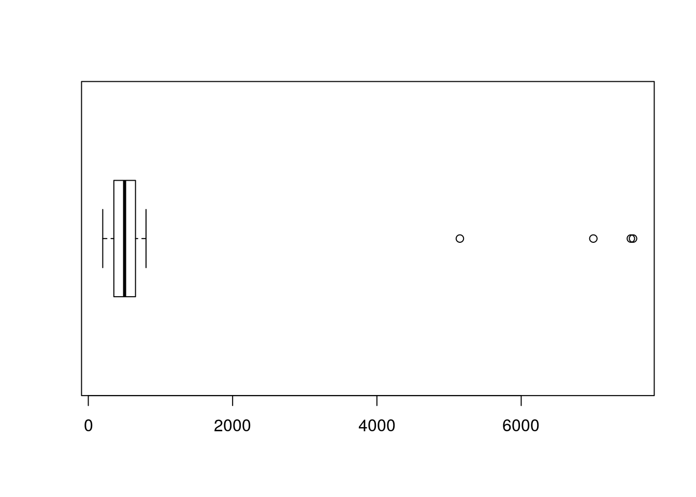
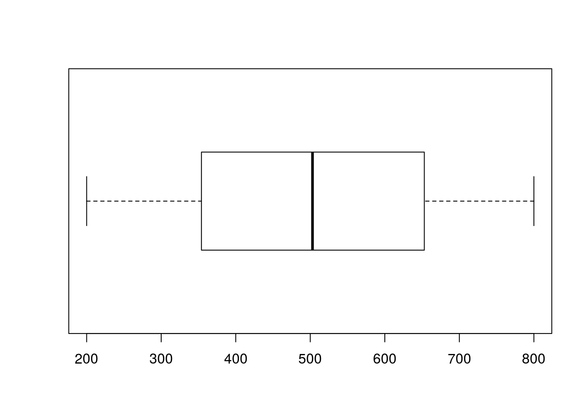

Capítulo 5 Introdução ao Tidyverse
Os pacotes tidyverse são uma coleção de pacotes criados por Hadley Wickham e sua equipe (na RStudio)13 para facilitar o tratamento e visualização dos dados (data wrangling). Aqui, iremos ver alguns desses pacotes nos próximos capítulos. Para darmos início aos pacotes tidyverse precisamos instalá-los. Para instalar todos os pacotes do tidyverse utilize o comando install.packages("tidyverse") ou apenas os pacotes desejados. Aqui iremos utilizar os pacotes tidyr, dplyr, stringr e lubridate. Depois de instalados chame os pacotes com a função library().
Antes de começarmos vamos só entender o que os criadores do tidyverse consideram como tidydata. A ideia de um banco de dados “tidy” é um banco de dados que tem:
1 - Cada variável forma uma coluna;
2 - Cada observação forma uma linha;
3 - Cada tipo de observação forma uma tabela (ou banco de dados)
Parece um pouco óbvio isso, mas certamente você já viu bancos de dados assim:
| Nome | Preto | Amarelo | Castanho | Outro |
|---|---|---|---|---|
| Joao | 0 | 1 | 0 | 0 |
| Luiz | 1 | 0 | 0 | 0 |
| Fabiana | 0 | 0 | 1 | 0 |
| Marcela | 1 | 0 | 0 | 0 |
Esse mesmo banco em um formato tidy ficaria:
| Nome | Cor de cabelo |
|---|---|
| Joao | Amarelo |
| Luiz | Preto |
| Fabiana | Castanho |
| Marcela | Preto |
Aqui iremos apresentar algumas das ferramentas dos pacotes do tidyverse para transformar os bancos em tidydata.
Primeiramente, iremos utilizar o banco Países. Salve o arquivo .csv em seu computador e importe-o para o R sem considerar strings como factors e lendo as cédulas em branco como NA (no subcapítulo 4.4 há algumas instruções para importação de banco de dados).
Após importar o banco Países veja a estrutura e o resumo do banco.
## pais codigo continente X1970
## Length:249 Length:249 Length:249 Min. :201.0
## Class :character Class :character Class :character 1st Qu.:354.0
## Mode :character Mode :character Mode :character Median :501.0
## Mean :508.1
## 3rd Qu.:668.0
## Max. :794.0
##
## X1971 X1972 X1973 X1974 X1975
## Min. :200.0 Min. :200.0 Min. :202 Min. :201.0 Min. :202.0
## 1st Qu.:325.0 1st Qu.:350.0 1st Qu.:396 1st Qu.:338.5 1st Qu.:358.0
## Median :505.0 Median :495.0 Median :544 Median :481.0 Median :501.0
## Mean :495.2 Mean :496.7 Mean :529 Mean :495.9 Mean :495.4
## 3rd Qu.:642.0 3rd Qu.:644.0 3rd Qu.:658 3rd Qu.:656.5 3rd Qu.:631.5
## Max. :798.0 Max. :800.0 Max. :799 Max. :800.0 Max. :798.0
## NA's :4 NA's :4 NA's :1 NA's :1
## X1976 X1977 X1978 X1979
## Min. :200.0 Min. :202.0 Min. :200.0 Min. :201.0
## 1st Qu.:339.0 1st Qu.:360.0 1st Qu.:338.0 1st Qu.:335.8
## Median :512.0 Median :503.0 Median :492.0 Median :492.5
## Mean :497.5 Mean :505.5 Mean :491.5 Mean :487.6
## 3rd Qu.:641.0 3rd Qu.:667.0 3rd Qu.:637.0 3rd Qu.:626.8
## Max. :796.0 Max. :791.0 Max. :800.0 Max. :789.0
## NA's :4 NA's :2 NA's :1
## X1980 X1981 X1982 X1983
## Min. :207.0 Min. : 200.0 Min. :204.0 Min. :201.0
## 1st Qu.:384.5 1st Qu.: 365.0 1st Qu.:369.0 1st Qu.:354.0
## Median :530.0 Median : 509.0 Median :508.0 Median :487.0
## Mean :514.3 Mean : 531.3 Mean :511.5 Mean :494.8
## 3rd Qu.:645.0 3rd Qu.: 629.0 3rd Qu.:671.0 3rd Qu.:648.0
## Max. :799.0 Max. :7520.0 Max. :800.0 Max. :800.0
## NA's :1 NA's :2
## X1984 X1985 X1986 X1987
## Min. : 200.0 Min. :202.0 Min. : 200.0 Min. :200.0
## 1st Qu.: 345.0 1st Qu.:383.0 1st Qu.: 374.5 1st Qu.:357.5
## Median : 490.0 Median :515.0 Median : 514.5 Median :485.0
## Mean : 519.5 Mean :518.7 Mean : 531.6 Mean :499.7
## 3rd Qu.: 651.0 3rd Qu.:674.0 3rd Qu.: 659.5 3rd Qu.:641.5
## Max. :7000.0 Max. :800.0 Max. :5150.0 Max. :798.0
## NA's :3 NA's :2
## X1988 X1989 X1990 X1991
## Min. : 200.0 Min. :200.0 Min. :201.0 Min. :202.0
## 1st Qu.: 346.0 1st Qu.:351.2 1st Qu.:351.0 1st Qu.:356.5
## Median : 498.0 Median :510.0 Median :501.5 Median :520.5
## Mean : 528.9 Mean :508.4 Mean :498.1 Mean :512.2
## 3rd Qu.: 656.2 3rd Qu.:680.5 3rd Qu.:635.8 3rd Qu.:666.0
## Max. :7550.0 Max. :800.0 Max. :800.0 Max. :794.0
## NA's :1 NA's :1 NA's :1 NA's :3
## X1992 X1993 X1994 X1995
## Min. :203.0 Min. :201.0 Min. :200.0 Min. :203.0
## 1st Qu.:351.0 1st Qu.:364.5 1st Qu.:353.0 1st Qu.:372.0
## Median :481.0 Median :518.0 Median :494.0 Median :530.0
## Mean :494.6 Mean :507.3 Mean :506.6 Mean :518.3
## 3rd Qu.:646.0 3rd Qu.:648.2 3rd Qu.:666.0 3rd Qu.:668.0
## Max. :799.0 Max. :800.0 Max. :800.0 Max. :800.0
## NA's :1 NA's :4
## X1996 X1997 X1998 X1999 X2000
## Min. :201.0 Min. :200 Min. :203.0 Min. :200.0 Min. :201.0
## 1st Qu.:338.0 1st Qu.:345 1st Qu.:335.5 1st Qu.:356.5 1st Qu.:358.0
## Median :470.0 Median :492 Median :508.0 Median :504.5 Median :476.0
## Mean :484.1 Mean :502 Mean :503.3 Mean :505.0 Mean :495.7
## 3rd Qu.:627.0 3rd Qu.:669 3rd Qu.:673.0 3rd Qu.:664.2 3rd Qu.:634.0
## Max. :799.0 Max. :800 Max. :799.0 Max. :797.0 Max. :799.0
## NA's :1 NA's :2 NA's :3
## date
## Length:249
## Class :character
## Mode :character
##
##
##
## 5.1 Verificação de NAs
Primeiro iremos verificar se o R identificou se há missings (NAs) no nosso banco (lembre-se que importamos as cédulas em branco como NAs). Para isso iremos utilizar 3 funções. A função is.na() retorna TRUE (quando não é NA) e FALSE (quando é NA) para todos elementos do banco. Não é muito útil, mas poderemos utilizá-la combinada com outras funções. Combinando com a função any() descobrimos se há algum NA no nosso banco:
## [1] TRUEMas seria melhor se tivéssemos mais informações. Combinando is.na() com a função sum() descobrimos quantos NAs temos no nosso banco:
## [1] 425.2 Criando tidydata com o pacote tidyr
O nosso banco países tem um grande problema: temos diversas variáveis com nomes de anos fazendo com que o nosso banco tenha muitas variáveis. Lembrando do exemplo do começo do capítulo o certo seria termos uma variável ano com o número do ano correspondente e uma varíavel valor com o valor correspondente do ano. Isso faria com que a quantidade de linhas do nosso banco seja multiplicada por 30 pois iremos repetir cada país 30 vezes (uma para cada ano).
Poderíamos fazer essa alteração na mão utilizando editores de planilhas ou, com linguagens de programação, usando laços lógicos e de repetição. Por sorte, o pacote tidyr nos ajuda nesse sentido. A função gather() faz exatamente o que queremos. O primeiro argumento da função gather é o banco que iremos transformar. Depois, o nome da coluna em que juntaremos todas as outras (as 30 colunas com informações dos anos, no nosso caso) e o nome da coluna que tem os valores correspondentes da coluna anterior (no caso criamos a coluna valor). Por fim, informamos quais são as colunas que não irão sofrer alteração com a seguinte sintaxe: -c(coluna1, coluna2). A seguir fazemos a transformação atribuindo ao banco pais_tidy:
Veja como o nosso banco pais_tidy ficou:
## pais codigo continente date
## Length:7719 Length:7719 Length:7719 Length:7719
## Class :character Class :character Class :character Class :character
## Mode :character Mode :character Mode :character Mode :character
##
##
##
##
## ano valor
## Length:7719 Min. : 200.0
## Class :character 1st Qu.: 354.0
## Mode :character Median : 503.0
## Mean : 506.1
## 3rd Qu.: 654.0
## Max. :7550.0
## NA's :42Agora temos um banco tidy. Veja a diferença entre as dimensões do banco paises e do banco pais_tidy:
| paises | pais_tidy | |
|---|---|---|
| n_rows | 249 | 7719 |
| n_cols | 35 | 6 |
Bom, também podemos fazer o processo inverso de transformar o banco em um tidydata. No caso, revertiríamos ao que era originalmente o nosso banco paises. Para isso utilizamos a função spread(). Nela, informamos no primeiro argumento o banco que iremos retirar as nossas informações (no caso é o banco pais_tidy). Depois informamos qual a colunas que iremos separar e várias colunas (ano no nosso caso) e a coluna que contem os valores dessa coluna (valor no nosso caso):
Veja a primeira linha do nosso banco pais_wide:
## pais codigo continente
## 1 Dominica DM NA
## date X1970 X1971 X1972 X1973 X1974 X1975 X1976 X1977 X1978 X1979 X1980
## 1 23/05/17 769 501 597 212 307 258 529 550 206 280 221
## X1981 X1982 X1983 X1984 X1985 X1986 X1987 X1988 X1989 X1990 X1991 X1992 X1993
## 1 578 503 686 374 416 NA 572 561 638 559 294 777 579
## X1994 X1995 X1996 X1997 X1998 X1999 X2000
## 1 634 560 583 783 674 667 521Outras funcionalidades do tidyr é criar bancos unindo e separando colunas de um banco já existente. Por exemplo, se eu quero um banco que tenha as colunas pais e codigo do meu banco paises unidas em uma coluna só posso unir essas colunas utilizando a função unite(). Informo no primeiro argumento o nome do meu banco original, depois o nome da coluna nova (a união das colunas) e as colunas que quero unir na sequência desejada. Depois informo com qual símbolo devo separar as informações na nova coluna.
A primeira linha do meu banco:
## pais_cod continente X1970 X1971 X1972 X1973 X1974
## 1 Afganistán/ AF AS 335 263 366 757 603
## X1975 X1976 X1977 X1978 X1979 X1980 X1981 X1982 X1983 X1984 X1985 X1986 X1987
## 1 266 571 336 480 402 552 526 228 463 211 593 568 346
## X1988 X1989 X1990 X1991 X1992 X1993 X1994 X1995 X1996 X1997 X1998 X1999 X2000
## 1 495 341 212 399 364 333 340 460 374 674 490 665 443
## date
## 1 07/09/14Para fazer o processo contrário da função unite() utilizo a função separate(). Primeiro informo qual banco será separado, depois o nome da coluna a ser separada (argumento col =), depois o nome das colunas a serem criadas no argumento into = c() e o caracter na qual a função irá separar a coluna no argumento sep = (no caso é o símbolo /):
A primeira linha do nosso banco:
## pais cod continente X1970 X1971 X1972 X1973 X1974
## 1 Afganistán AF AS 335 263 366 757 603
## X1975 X1976 X1977 X1978 X1979 X1980 X1981 X1982 X1983 X1984 X1985 X1986 X1987
## 1 266 571 336 480 402 552 526 228 463 211 593 568 346
## X1988 X1989 X1990 X1991 X1992 X1993 X1994 X1995 X1996 X1997 X1998 X1999 X2000
## 1 495 341 212 399 364 333 340 460 374 674 490 665 443
## date
## 1 07/09/145.3 Manipulação de strings
O pacote stringr tem várias ferramentas para nos ajudar na manipulação de strings. O nosso banco paises veio com vários erros na coluna pais. Alguns nomes de países tem espaços antes e/ou depois do nome do país. A função str_trim() ajuda a retirar esses espaços de forma automatizada. Atribuímos o resultado da função ao próprio banco.
Preste muita atenção ao realizar funções sobrescrevendo o banco original
Veja que a função limpou os nomes dos países no banco pais_tidy.
paises.
Uma outra função útil é a str_pad(), que adiciona strings a uma coluna de um banco de dados. Por exemplo, se quisermos adicionar o caracter X depois das siglas do continente na coluna continente do banco pais_unido. Atribuímos a coluna do banco desejado a função str_pad() com o primeiro argumento a referência da coluna desejada, depois no argumento width = informamos qual vai ser o tamanho dessa nova string (no caso as siglas já tinham o tamanho 2, com a adição de um novo caracter era irá passar a ter tamanho 3), o argumento side = informa onde a string irá (left ou right) e o argumento pad = informa qual a sequência de caracteres que iremos adicionar:
Resultando em:
| pais_cod | continente | X1970 | X1971 | X1972 | X1973 | X1974 | X1975 | X1976 | X1977 | X1978 | X1979 | X1980 | X1981 | X1982 | X1983 | X1984 | X1985 | X1986 | X1987 | X1988 | X1989 | X1990 | X1991 | X1992 | X1993 | X1994 | X1995 | X1996 | X1997 | X1998 | X1999 | X2000 | date |
|---|---|---|---|---|---|---|---|---|---|---|---|---|---|---|---|---|---|---|---|---|---|---|---|---|---|---|---|---|---|---|---|---|---|
| Afganistán/ AF | ASX | 335 | 263 | 366 | 757 | 603 | 266 | 571 | 336 | 480 | 402 | 552 | 526 | 228 | 463 | 211 | 593 | 568 | 346 | 495 | 341 | 212 | 399 | 364 | 333 | 340 | 460 | 374 | 674 | 490 | 665 | 443 | 07/09/14 |
| Albania / AL | EUX | 516 | 270 | 403 | 450 | 236 | 314 | 668 | 412 | 549 | 468 | 729 | 297 | 706 | 729 | 401 | 364 | 263 | 628 | 709 | 729 | 352 | 506 | 253 | 705 | 278 | 515 | 645 | 689 | 676 | 439 | 795 | 08/09/14 |
Outra funcionalidade é detectar onde em um banco uma série de caracteres se encontra com a função str_detect():
## [1] FALSE FALSE FALSE FALSE FALSE TRUE FALSE TRUE FALSE FALSE FALSE FALSE
## [13] TRUE FALSE FALSE FALSE TRUE FALSE TRUE FALSE FALSE TRUE FALSE TRUE
## [25] FALSE FALSE TRUE FALSE FALSE FALSE FALSE FALSE FALSE FALSE FALSE FALSE
## [37] FALSE FALSE TRUE FALSE FALSE FALSE FALSE FALSE FALSE FALSE FALSE FALSE
## [49] FALSE FALSE TRUE FALSE TRUE TRUE FALSE TRUE FALSE FALSE TRUE FALSE
## [61] FALSE FALSE FALSE FALSE TRUE FALSE FALSE FALSE FALSE FALSE FALSE FALSE
## [73] FALSE FALSE FALSE FALSE FALSE TRUE FALSE TRUE TRUE FALSE TRUE FALSE
## [85] FALSE FALSE FALSE FALSE FALSE TRUE TRUE FALSE FALSE FALSE FALSE FALSE
## [97] FALSE FALSE FALSE FALSE FALSE FALSE FALSE FALSE TRUE FALSE FALSE FALSE
## [109] FALSE FALSE FALSE FALSE FALSE FALSE TRUE FALSE TRUE TRUE FALSE FALSE
## [121] TRUE FALSE FALSE FALSE FALSE FALSE FALSE FALSE FALSE FALSE FALSE FALSE
## [133] FALSE FALSE FALSE FALSE FALSE FALSE FALSE FALSE FALSE FALSE FALSE FALSE
## [145] FALSE FALSE TRUE FALSE FALSE FALSE TRUE FALSE FALSE FALSE FALSE FALSE
## [157] TRUE FALSE FALSE FALSE FALSE FALSE TRUE FALSE FALSE FALSE FALSE FALSE
## [169] FALSE FALSE FALSE FALSE FALSE FALSE TRUE FALSE FALSE FALSE FALSE FALSE
## [181] FALSE FALSE TRUE FALSE FALSE FALSE FALSE FALSE TRUE FALSE FALSE FALSE
## [193] FALSE FALSE FALSE TRUE TRUE FALSE TRUE TRUE TRUE FALSE TRUE FALSE
## [205] FALSE FALSE FALSE FALSE FALSE FALSE TRUE FALSE FALSE FALSE FALSE FALSE
## [217] FALSE FALSE FALSE FALSE FALSE FALSE FALSE FALSE FALSE FALSE FALSE FALSE
## [229] FALSE FALSE FALSE FALSE TRUE FALSE FALSE FALSE FALSE FALSE FALSE FALSE
## [241] FALSE FALSE FALSE FALSE FALSE FALSE FALSE FALSE FALSEPodemos também substituir uma série de caracteres com a função str_replace(). Por exemplo, substituíremos na coluna continente do banco pais_sep todas os lugares que forem NA por North America:
Por fim, precisamos retirar da coluna ano em pais_tidy a string X que foi herdada do nome das colunas de pais. Para isso utilizamos a função str_remove():
A função
str_removeremove apenas o primeiro correspondente que ela encontra. Se a coluna tivesse mais de um “X” e quiséssemos remover todos os “X” da coluna deveríamos utilizar a funçãostr_remove_all().
Por fim, nas funções base do R temos duas funções que nos são úteis para tratar com strings: tolower() e toupper(). A primeira faz com que todos os caracteres sejam transformados em caixa baixa e a segunda em caixa alta.
Veja a função tolower() na coluna continente do banco pais_wide:
## pais codigo continente
## 1 Dominica DM na
## 2 Burkina Faso BF af
## 3 Brasil BR sa
## 4 Guadalupe GP na
## 5 Emiratos Árabes Unidos AE as
## 6 Afganistán AF as
## date X1970 X1971 X1972 X1973 X1974 X1975 X1976 X1977 X1978 X1979 X1980
## 1 23/05/17 769 501 597 212 307 258 529 550 206 280 221
## 2 19/09/14 382 527 350 694 771 671 260 489 316 227 234
## 3 12/06/17 426 239 616 532 467 439 361 242 650 493 615
## 4 15/10/15 726 467 399 534 589 542 482 722 533 414 435
## 5 19/05/17 700 330 607 593 670 780 417 718 628 498 662
## 6 07/09/14 335 263 366 757 603 266 571 336 480 402 552
## X1981 X1982 X1983 X1984 X1985 X1986 X1987 X1988 X1989 X1990 X1991 X1992 X1993
## 1 578 503 686 374 416 NA 572 561 638 559 294 777 579
## 2 612 754 735 599 661 771 319 291 208 471 385 623 513
## 3 286 273 661 781 654 425 776 317 582 464 288 583 538
## 4 224 572 745 239 242 657 684 429 463 520 367 471 672
## 5 462 752 212 374 677 651 720 676 333 591 566 612 315
## 6 526 228 463 211 593 568 346 495 341 212 399 364 333
## X1994 X1995 X1996 X1997 X1998 X1999 X2000
## 1 634 560 583 783 674 667 521
## 2 730 764 413 480 247 507 488
## 3 537 456 784 694 774 343 356
## 4 718 651 475 788 534 522 391
## 5 529 699 296 471 215 745 365
## 6 340 460 374 674 490 665 443E a função toupper() na coluna pais do banco pais_sep:
## pais cod continente X1970 X1971 X1972 X1973 X1974
## 1 AFGANISTÁN AF AS 335 263 366 757 603
## 2 ALBANIA AL EU 516 270 403 450 236
## 3 ALEMANIA DE EU 505 309 787 635 566
## 4 ANDORRA AD EU 749 400 636 414 264
## 5 ANGOLA AO AF 310 NA 399 594 273
## 6 ANGUILA AI North America 348 254 613 621 481
## X1975 X1976 X1977 X1978 X1979 X1980 X1981 X1982 X1983 X1984 X1985 X1986 X1987
## 1 266 571 336 480 402 552 526 228 463 211 593 568 346
## 2 314 668 412 549 468 729 297 706 729 401 364 263 628
## 3 298 748 657 263 612 464 605 736 387 764 278 253 359
## 4 556 766 362 645 427 600 258 516 355 410 375 681 218
## 5 441 519 597 794 436 553 592 791 255 763 551 770 399
## 6 254 645 388 279 589 579 800 502 389 359 434 428 389
## X1988 X1989 X1990 X1991 X1992 X1993 X1994 X1995 X1996 X1997 X1998 X1999 X2000
## 1 495 341 212 399 364 333 340 460 374 674 490 665 443
## 2 709 729 352 506 253 705 278 515 645 689 676 439 795
## 3 389 714 339 707 631 648 780 637 286 311 769 533 787
## 4 203 222 676 251 671 784 796 225 439 460 795 446 256
## 5 422 235 223 622 502 491 458 292 741 249 269 399 526
## 6 768 580 782 792 770 511 670 672 364 216 260 461 477
## date
## 1 07/09/14
## 2 08/09/14
## 3 09/09/14
## 4 10/09/14
## 5 11/09/14
## 6 12/09/145.4 Identificando erros no banco
Alguns dos valores do nosso banco estão com erros (provavelmente por erro de digitação). Vamos dar uma olhada no boxplot da coluna valor:

Os valores das colunas do banco paises foram gerados entre 200 e 800. Portanto, a partir do boxplot podemos ver que há algo errado com o nosso banco. Vamos dar uma olhada no resumo das variáveis:
## Min. 1st Qu. Median Mean 3rd Qu. Max. NA's
## 200.0 354.0 503.0 506.1 654.0 7550.0 42O banco
paisesfoi criado para ilustração dessa apostila. Ainda que pareça muito simples o exemplo podemos ter casos na realidade de situações em que idade de indivíduos, por exemplo, aparece como200no lugar de20.
Vamos verificar quais são esses elementos:
## pais codigo continente date ano valor
## 2751 Armenia AM AS 14/06/17 1981 7520
## 3512 Bolivia, Estado Plurinacional de BO SA 03/06/17 1984 7000
## 4004 Baréin BH AS 02/09/14 1986 5150
## 4495 Aruba AW NA 15/06/17 1988 7550Bom, pelo que podemos ver aparentemente foi um erro de digitação. Todos os casos tem um 0 a mais. Como estamos tratando de números e é simplesmente um 0 no final, vamos dividir todos os casos por 10. Primeiro criamos um vetor com um endereço dos elementos que correspondem a busca (pais_tidy$valor > 800). Depois, substituímos esses valores por eles mesmos dividos por 10:
replace <- which(pais_tidy$valor > 800)
pais_tidy$valor[c(replace)] <- pais_tidy$valor[c(replace)]/10Vamos ver como eles ficaram?
## pais codigo continente date ano valor
## 2751 Armenia AM AS 14/06/17 1981 752
## 3512 Bolivia, Estado Plurinacional de BO SA 03/06/17 1984 700
## 4004 Baréin BH AS 02/09/14 1986 515
## 4495 Aruba AW NA 15/06/17 1988 755E como será que o boxplot estará agora?

Pronto! Eliminamos todos os erros da variável ano.
5.5 Trabalhando com data e hora
O tidyverse também possui ótimas ferramentas para trabalharmos com datas e hora. O pacote lubridate agrega essas ferramentas. A coluna date do nosso banco pais_tidy não está sendo lida pelo R como uma data, mas sim como um conjunto de caracteres:
## [1] "character"Bom, isso é um problema para análises futuras. Vamos então indicar para o R qual formato está a data do nosso banco. Se você der uma olhada no banco pais_tidy verá que as datas estão da seguinte maneira: dd/mm/aa (em português). Para o R entender que isso é um formato de data precisamos indicar para ele. Assim, utilizamos as funções de formato de data do pacote lubridate. No caso, a função será dmy indicando que o formato é day, month e year:
Veja agora como está a estrutura da nossa variável date:
## 'data.frame': 7719 obs. of 6 variables:
## $ pais : chr "Afganistán" "Albania" "Alemania" "Andorra" ...
## $ codigo : chr " AF " " AL " " DE " " AD " ...
## $ continente: chr "AS" "EU" "EU" "EU" ...
## $ date : Date, format: "2014-09-07" "2014-09-08" ...
## $ ano : chr "1970" "1970" "1970" "1970" ...
## $ valor : num 335 516 505 749 310 348 249 378 325 329 ...Agora as datas foram convertidas para o formato que o R entende como data:
## [1] "Date"Veja o resumo das nossas variáveis:
## pais codigo continente date
## Length:7719 Length:7719 Length:7719 Min. :2014-08-05
## Class :character Class :character Class :character 1st Qu.:2014-10-06
## Mode :character Mode :character Mode :character Median :2017-04-28
## Mean :2016-05-21
## 3rd Qu.:2017-06-29
## Max. :2018-05-08
##
## ano valor
## Length:7719 Min. :200.0
## Class :character 1st Qu.:354.0
## Mode :character Median :503.0
## Mean :502.9
## 3rd Qu.:653.0
## Max. :800.0
## NA's :42Podemos também informar outros formatos de datas. Utilizando a mesma função mas com a abreviação do mês:
## [1] "2015-11-17"Utilizando o formato com as horas, minutos e segundos:
## [1] "2012-07-15 12:56:09 UTC"Trabalhar com datas é bem mais complicado do que foi demonstrado aqui. Para mais informações veja o capítulo sobre datas e hora do livro “R for Data Science”
5.6 Ajustes finais
Depois de todas essas alterações, para o nosso banco ficar pronto para análise vamos converter as variáveis pais, codigo, continente e ano. As três primeiras iremos transformar em factor:
pais_tidy$pais <- factor(pais_tidy$pais)
pais_tidy$codigo <- factor(pais_tidy$codigo)
pais_tidy$continente <- factor(pais_tidy$continente)Por fim, vamos criar uma variável ano2 (cópia de ano) que será convertida em factor e vamos converter a variável ano em numeric:
pais_tidy$ano2 <- pais_tidy$ano
pais_tidy$ano2 <- factor(pais_tidy$ano2)
pais_tidy$ano <- as.numeric(pais_tidy$ano)Agora o nosso banco estará assim:
## pais codigo continente date
## Afganistán: 31 AD : 31 AF:1798 Min. :2014-08-05
## Albania : 31 AE : 31 AN: 155 1st Qu.:2014-10-06
## Alemania : 31 AF : 31 AS:1643 Median :2017-04-28
## Andorra : 31 AG : 31 EU:1612 Mean :2016-05-21
## Angola : 31 AI : 31 NA:1271 3rd Qu.:2017-06-29
## Anguila : 31 AL : 31 OC: 806 Max. :2018-05-08
## (Other) :7533 (Other):7533 SA: 434
## ano valor ano2
## Min. :1970 Min. :200.0 1970 : 249
## 1st Qu.:1977 1st Qu.:354.0 1971 : 249
## Median :1985 Median :503.0 1972 : 249
## Mean :1985 Mean :502.9 1973 : 249
## 3rd Qu.:1993 3rd Qu.:653.0 1974 : 249
## Max. :2000 Max. :800.0 1975 : 249
## NA's :42 (Other):62255.7 O pacote dplyr
Agora que arrumamos nosso banco podemos utilizar o pacote dplyr para manipular os dados. O pacote dplyr tem como estrutura principal verbos para ajudar na manipulação do banco de dados:
- mutate() - para adicionar variáveis que são funções de outras variáveis
- select() - para selecionar variáveis
- filter() - para selecionar casos baseados em seus valores
- summarise() - para reduzir diversos valores em um resumo
- arrange() - para mudar a ordem das linhas
Porém, o pacote exige a seguinte sintaxe com o operador pipe (%>%):
nome_banco %>%
funçao()
Se quisermos selecionar apenas algumas variáveis do nosso banco utilizamos a função select(). Para selecionarmos apenas as colunas pais, ano e valor:
## pais ano valor
## 1 Afganistán 1970 335
## 2 Albania 1970 516
## 3 Alemania 1970 505
## 4 Andorra 1970 749
## 5 Angola 1970 310
## 6 Anguila 1970 348
## 7 Antártida 1970 249
## 8 Antigua y Barbuda 1970 378
## 9 Arabia Saudita 1970 325
## 10 Argelia 1970 329
## 11 Argentina 1970 346
## 12 Armenia 1970 272
## 13 Aruba 1970 651
## 14 Australia 1970 688
## 15 Austria 1970 286
## 16 Azerbaiyán 1970 601
## 17 Bahamas 1970 791
## 18 Bangladés 1970 501
## 19 Barbados 1970 697
## 20 Baréin 1970 461
## 21 Bélgica 1970 767
## 22 Belice 1970 426
## 23 Benín 1970 335
## 24 Bermudas 1970 573
## 25 Bielorrusia 1970 317
## 26 Bolivia, Estado Plurinacional de 1970 668
## 27 Bonaire, San Eustaquio y Saba 1970 368
## 28 Bosnia y Herzegovina 1970 556
## 29 Botsuana 1970 653
## 30 Brasil 1970 426
## 31 Brunéi Darussalam 1970 339
## 32 Bulgaria 1970 201
## 33 Burkina Faso 1970 382
## 34 Burundi 1970 648
## 35 Bután 1970 592
## 36 Cabo Verde 1970 337
## 37 Camboya 1970 468
## 38 Camerún 1970 521
## 39 Canadá 1970 398
## 40 Chad 1970 205
## 41 Chile 1970 723
## 42 China, República Popular 1970 639
## 43 Chipre 1970 670
## 44 Colombia 1970 789
## 45 Comoras 1970 705
## 46 Congo, La República Democrática del 1970 789
## 47 Congo 1970 571
## 48 Corea, República de 1970 739
## 49 Corea, República Democrática Popular de 1970 750
## 50 Costa de Marfil 1970 751
## 51 Costa Rica 1970 361
## 52 Croacia 1970 521
## 53 Cuba 1970 422
## 54 Curazao 1970 473
## 55 Dinamarca 1970 389
## 56 Dominica 1970 769
## 57 Ecuador 1970 331
## 58 Egipto 1970 212
## 59 El Salvador 1970 502
## 60 Emiratos Árabes Unidos 1970 700
## 61 Eritrea 1970 232
## 62 Eslovaquia 1970 276
## 63 Eslovenia 1970 334
## 64 España 1970 649
## 65 Estados Unidos 1970 713
## 66 Estonia 1970 628
## 67 Etiopía 1970 610
## 68 Federacion Rusa 1970 228
## 69 Filipinas 1970 304
## 70 Finlandia 1970 622
## 71 Fiyi 1970 461
## 72 Francia 1970 592
## 73 Gabón 1970 725
## 74 Gambia 1970 732
## 75 Georgia 1970 584
## 76 Ghana 1970 402
## 77 Gibraltar 1970 618
## 78 Granada 1970 622
## 79 Grecia 1970 497
## 80 Groenlandia 1970 220
## 81 Guadalupe 1970 726
## 82 Guam 1970 340
## 83 Guatemala 1970 785
## 84 Guayana Francesa 1970 754
## 85 Guernsey 1970 779
## 86 Guinea-Bisáu 1970 792
## 87 Guinea Ecuatorial 1970 753
## 88 Guinea 1970 362
## 89 Guyana 1970 650
## 90 Haití 1970 220
## 91 Honduras 1970 545
## 92 Hong Kong 1970 661
## 93 Hungría 1970 354
## 94 India 1970 327
## 95 Indonesia 1970 754
## 96 Irak 1970 268
## 97 Irán, República Islámica de 1970 792
## 98 Irlanda 1970 678
## 99 Isla Bouvet 1970 484
## 100 Isla de Man 1970 284
## 101 Isla de Navidad 1970 668
## 102 Isla Norfolk 1970 489
## 103 Islandia 1970 570
## 104 Islas Åland 1970 207
## 105 Islas Caimán 1970 210
## 106 Islas Cocos (Keeling) 1970 421
## 107 Islas Cook 1970 364
## 108 Islas Falkland (Malvinas) 1970 214
## 109 Islas Feroe 1970 480
## 110 Islas Georgias del Sur y Sandwich del Sur 1970 282
## 111 Islas Heard y Mcdonald 1970 528
## 112 Islas Marianas del Norte 1970 325
## 113 Islas Marshall 1970 397
## 114 Islas Salomón 1970 277
## 115 Islas Turcas y Caicos 1970 237
## 116 Islas Ultramarinas Menores de Estados Unidos 1970 239
## 117 Islas Virgenes Británicas 1970 743
## 118 Islas Virgenes de Los Estados Unidos 1970 469
## 119 Israel 1970 689
## 120 Italia 1970 447
## 121 Jamaica 1970 623
## 122 Japón 1970 478
## 123 Jersey 1970 316
## 124 Jordania 1970 647
## 125 Kazajistán 1970 701
## 126 Kenia 1970 374
## 127 Kirguistán 1970 599
## 128 Kiribati 1970 417
## 129 Kuwait 1970 204
## 130 Lesoto 1970 628
## 131 Letonia 1970 793
## 132 Líbano 1970 528
## 133 Liberia 1970 785
## 134 Libia 1970 379
## 135 Liechtenstein 1970 241
## 136 Lituania 1970 768
## 137 Luxemburgo 1970 580
## 138 Macao 1970 548
## 139 Macedonia, La Antigua República Yugoslava de 1970 220
## 140 Madagascar 1970 381
## 141 Malasia 1970 589
## 142 Malaui 1970 730
## 143 Maldivas 1970 254
## 144 Malí 1970 635
## 145 Malta 1970 726
## 146 Marruecos 1970 488
## 147 Martinica 1970 464
## 148 Mauricio 1970 504
## 149 Mauritania 1970 621
## 150 Mayotte 1970 745
## 151 México 1970 755
## 152 Micronesia, Estados Federados de 1970 499
## 153 Moldavia, República de 1970 647
## 154 Mónaco 1970 473
## 155 Mongolia 1970 510
## 156 Montenegro 1970 423
## 157 Montserrat 1970 755
## 158 Mozambique 1970 245
## 159 Myanmar 1970 422
## 160 Nabimia 1970 794
## 161 Nauru 1970 676
## 162 Nepal 1970 520
## 163 Nicaragua 1970 527
## 164 Nigeria 1970 279
## 165 Níger 1970 424
## 166 Niue 1970 671
## 167 Noruega 1970 767
## 168 Nueva Caledonia 1970 441
## 169 Nueva Zelanda 1970 354
## 170 Omán 1970 437
## 171 Países Bajos 1970 738
## 172 Pakistán 1970 548
## 173 Palaos 1970 544
## 174 Palestina, Estado de 1970 431
## 175 Panamá 1970 522
## 176 Papúa Nueva Guinea 1970 388
## 177 Paraguay 1970 755
## 178 Perú 1970 378
## 179 Pitcairn 1970 339
## 180 Polinesia Francesa 1970 653
## 181 Polonia 1970 410
## 182 Portugal 1970 406
## 183 Puerto Rico 1970 511
## 184 Qatar 1970 331
## 185 Reino Unido 1970 406
## 186 República Centroafricana 1970 630
## 187 República Checa 1970 382
## 188 República Democrática Popular Lao 1970 250
## 189 República Dominicana 1970 744
## 190 Reunión 1970 288
## 191 Ruanda 1970 412
## 192 Rumania 1970 335
## 193 Sahara Occidental 1970 516
## 194 Samoa Americana 1970 505
## 195 Samoa 1970 749
## 196 San Bartolomé 1970 310
## 197 San Cristóbal y Nieves 1970 348
## 198 San Marino 1970 786
## 199 San Martín (Parte Francesa) 1970 647
## 200 San Pedro y Miquelón 1970 265
## 201 San Vicente y Las Granadinas 1970 378
## 202 Santa Helena, Ascensión y Tristán de Acuña 1970 442
## 203 Santa Lucía 1970 782
## 204 Santa Sede (Ciudad Estado Vaticano) 1970 212
## 205 Santo Tomé y Principe 1970 696
## 206 Senegal 1970 656
## 207 Serbia 1970 356
## 208 Seychelles 1970 311
## 209 Sierra Leona 1970 515
## 210 Singapur 1970 240
## 211 Sint Maarten (Parte Neerlandesa) 1970 351
## 212 Siria, República Arabe de 1970 648
## 213 Somalia 1970 669
## 214 Sri Lanka 1970 485
## 215 Suazilandia 1970 214
## 216 Sudáfrica 1970 709
## 217 Sudán del Sur 1970 450
## 218 Sudán 1970 750
## 219 Suecia 1970 743
## 220 Suiza 1970 746
## 221 Surinam 1970 753
## 222 Svalbard y Jan Mayen 1970 451
## 223 Tailandia 1970 619
## 224 Taiwán, Provincia de China 1970 790
## 225 Tanzania, República Unida de 1970 521
## 226 Tayikistán 1970 400
## 227 Territorio Británico del Océano Índico 1970 650
## 228 Territorios Australes Franceses 1970 252
## 229 Timor-Leste 1970 759
## 230 Togo 1970 730
## 231 Tokelau 1970 348
## 232 Tonga 1970 464
## 233 Trinidad y Tobago 1970 487
## 234 Túnez 1970 376
## 235 Turkmenistán 1970 228
## 236 Turquía 1970 759
## 237 Tuvalu 1970 612
## 238 Ucrania 1970 646
## 239 Uganda 1970 639
## 240 Uruguay 1970 452
## 241 Uzbekistán 1970 363
## 242 Vanuatu 1970 714
## 243 Venezuela 1970 336
## 244 Viet Nam 1970 411
## 245 Wallis y Futuna 1970 589
## 246 Yemen 1970 784
## 247 Yibuti 1970 424
## 248 Zambia 1970 299
## 249 Zimbabue 1970 247
## 250 Afganistán 1971 263
## 251 Albania 1971 270
## 252 Alemania 1971 309
## 253 Andorra 1971 400
## 254 Angola 1971 NA
## 255 Anguila 1971 254
## 256 Antártida 1971 368
## 257 Antigua y Barbuda 1971 660
## 258 Arabia Saudita 1971 483
## 259 Argelia 1971 698
## 260 Argentina 1971 646
## 261 Armenia 1971 200
## 262 Aruba 1971 506
## 263 Australia 1971 400
## 264 Austria 1971 545
## 265 Azerbaiyán 1971 413
## 266 Bahamas 1971 747
## 267 Bangladés 1971 248
## 268 Barbados 1971 598
## 269 Baréin 1971 448
## 270 Bélgica 1971 465
## 271 Belice 1971 678
## 272 Benín 1971 257
## 273 Bermudas 1971 266
## 274 Bielorrusia 1971 358
## 275 Bolivia, Estado Plurinacional de 1971 666
## 276 Bonaire, San Eustaquio y Saba 1971 512
## 277 Bosnia y Herzegovina 1971 525
## 278 Botsuana 1971 798
## 279 Brasil 1971 239
## 280 Brunéi Darussalam 1971 758
## 281 Bulgaria 1971 655
## 282 Burkina Faso 1971 527
## 283 Burundi 1971 718
## 284 Bután 1971 607
## 285 Cabo Verde 1971 469
## 286 Camboya 1971 378
## 287 Camerún 1971 240
## 288 Canadá 1971 785
## 289 Chad 1971 684
## 290 Chile 1971 656
## 291 China, República Popular 1971 615
## 292 Chipre 1971 436
## 293 Colombia 1971 684
## 294 Comoras 1971 319
## 295 Congo, La República Democrática del 1971 319
## 296 Congo 1971 744
## 297 Corea, República de 1971 618
## 298 Corea, República Democrática Popular de 1971 267
## 299 Costa de Marfil 1971 248
## 300 Costa Rica 1971 234
## 301 Croacia 1971 661
## 302 Cuba 1971 729
## 303 Curazao 1971 764
## 304 Dinamarca 1971 619
## 305 Dominica 1971 501
## 306 Ecuador 1971 606
## 307 Egipto 1971 726
## 308 El Salvador 1971 468
## 309 Emiratos Árabes Unidos 1971 330
## 310 Eritrea 1971 286
## 311 Eslovaquia 1971 487
## 312 Eslovenia 1971 256
## 313 España 1971 209
## 314 Estados Unidos 1971 654
## 315 Estonia 1971 461
## 316 Etiopía 1971 431
## 317 Federacion Rusa 1971 456
## 318 Filipinas 1971 715
## 319 Finlandia 1971 241
## 320 Fiyi 1971 393
## 321 Francia 1971 335
## 322 Gabón 1971 221
## 323 Gambia 1971 792
## 324 Georgia 1971 777
## 325 Ghana 1971 568
## 326 Gibraltar 1971 631
## 327 Granada 1971 532
## 328 Grecia 1971 300
## 329 Groenlandia 1971 561
## 330 Guadalupe 1971 467
## 331 Guam 1971 512
## 332 Guatemala 1971 709
## 333 Guayana Francesa 1971 794
## 334 Guernsey 1971 696
## 335 Guinea-Bisáu 1971 713
## 336 Guinea Ecuatorial 1971 740
## 337 Guinea 1971 413
## 338 Guyana 1971 431
## 339 Haití 1971 432
## 340 Honduras 1971 NA
## 341 Hong Kong 1971 640
## 342 Hungría 1971 217
## 343 India 1971 530
## 344 Indonesia 1971 721
## 345 Irak 1971 715
## 346 Irán, República Islámica de 1971 626
## 347 Irlanda 1971 587
## 348 Isla Bouvet 1971 712
## 349 Isla de Man 1971 684
## 350 Isla de Navidad 1971 632
## 351 Isla Norfolk 1971 458
## 352 Islandia 1971 528
## 353 Islas Åland 1971 585
## 354 Islas Caimán 1971 628
## 355 Islas Cocos (Keeling) 1971 205
## 356 Islas Cook 1971 697
## 357 Islas Falkland (Malvinas) 1971 626
## 358 Islas Feroe 1971 705
## 359 Islas Georgias del Sur y Sandwich del Sur 1971 473
## 360 Islas Heard y Mcdonald 1971 576
## 361 Islas Marianas del Norte 1971 519
## 362 Islas Marshall 1971 657
## 363 Islas Salomón 1971 316
## 364 Islas Turcas y Caicos 1971 523
## 365 Islas Ultramarinas Menores de Estados Unidos 1971 745
## 366 Islas Virgenes Británicas 1971 462
## 367 Islas Virgenes de Los Estados Unidos 1971 586
## 368 Israel 1971 298
## 369 Italia 1971 486
## 370 Jamaica 1971 227
## 371 Japón 1971 556
## 372 Jersey 1971 252
## 373 Jordania 1971 341
## 374 Kazajistán 1971 511
## 375 Kenia 1971 259
## 376 Kirguistán 1971 773
## 377 Kiribati 1971 593
## 378 Kuwait 1971 650
## 379 Lesoto 1971 622
## 380 Letonia 1971 631
## 381 Líbano 1971 310
## 382 Liberia 1971 352
## 383 Libia 1971 638
## 384 Liechtenstein 1971 233
## 385 Lituania 1971 348
## 386 Luxemburgo 1971 766
## 387 Macao 1971 282
## 388 Macedonia, La Antigua República Yugoslava de 1971 311
## 389 Madagascar 1971 371
## 390 Malasia 1971 499
## 391 Malaui 1971 541
## 392 Maldivas 1971 273
## 393 Malí 1971 426
## 394 Malta 1971 661
## 395 Marruecos 1971 668
## 396 Martinica 1971 488
## 397 Mauricio 1971 497
## 398 Mauritania 1971 402
## 399 Mayotte 1971 395
## 400 México 1971 444
## 401 Micronesia, Estados Federados de 1971 263
## 402 Moldavia, República de 1971 NA
## 403 Mónaco 1971 779
## 404 Mongolia 1971 356
## 405 Montenegro 1971 268
## 406 Montserrat 1971 379
## 407 Mozambique 1971 584
## 408 Myanmar 1971 590
## 409 Nabimia 1971 325
## 410 Nauru 1971 464
## 411 Nepal 1971 238
## 412 Nicaragua 1971 606
## 413 Nigeria 1971 440
## 414 Níger 1971 308
## 415 Niue 1971 274
## 416 Noruega 1971 474
## 417 Nueva Caledonia 1971 564
## 418 Nueva Zelanda 1971 568
## 419 Omán 1971 642
## 420 Países Bajos 1971 613
## 421 Pakistán 1971 559
## 422 Palaos 1971 751
## 423 Palestina, Estado de 1971 796
## 424 Panamá 1971 297
## 425 Papúa Nueva Guinea 1971 617
## 426 Paraguay 1971 282
## 427 Perú 1971 238
## 428 Pitcairn 1971 491
## 429 Polinesia Francesa 1971 686
## 430 Polonia 1971 638
## 431 Portugal 1971 794
## 432 Puerto Rico 1971 276
## 433 Qatar 1971 531
## 434 Reino Unido 1971 483
## 435 República Centroafricana 1971 623
## 436 República Checa 1971 468
## 437 República Democrática Popular Lao 1971 583
## 438 República Dominicana 1971 264
## 439 Reunión 1971 321
## 440 Ruanda 1971 353
## 441 Rumania 1971 263
## 442 Sahara Occidental 1971 270
## 443 Samoa Americana 1971 309
## 444 Samoa 1971 400
## 445 San Bartolomé 1971 375
## 446 San Cristóbal y Nieves 1971 254
## 447 San Marino 1971 705
## 448 San Martín (Parte Francesa) 1971 685
## 449 San Pedro y Miquelón 1971 373
## 450 San Vicente y Las Granadinas 1971 247
## 451 Santa Helena, Ascensión y Tristán de Acuña 1971 605
## 452 Santa Lucía 1971 213
## 453 Santa Sede (Ciudad Estado Vaticano) 1971 251
## 454 Santo Tomé y Principe 1971 386
## 455 Senegal 1971 777
## 456 Serbia 1971 263
## 457 Seychelles 1971 531
## 458 Sierra Leona 1971 581
## 459 Singapur 1971 642
## 460 Sint Maarten (Parte Neerlandesa) 1971 649
## 461 Siria, República Arabe de 1971 743
## 462 Somalia 1971 205
## 463 Sri Lanka 1971 773
## 464 Suazilandia 1971 345
## 465 Sudáfrica 1971 616
## 466 Sudán del Sur 1971 450
## 467 Sudán 1971 519
## 468 Suecia 1971 278
## 469 Suiza 1971 251
## 470 Surinam 1971 388
## 471 Svalbard y Jan Mayen 1971 732
## 472 Tailandia 1971 505
## 473 Taiwán, Provincia de China 1971 569
## 474 Tanzania, República Unida de 1971 798
## 475 Tayikistán 1971 544
## 476 Territorio Británico del Océano Índico 1971 554
## 477 Territorios Australes Franceses 1971 689
## 478 Timor-Leste 1971 462
## 479 Togo 1971 598
## 480 Tokelau 1971 203
## 481 Tonga 1971 756
## 482 Trinidad y Tobago 1971 330
## 483 Túnez 1971 733
## 484 Turkmenistán 1971 411
## 485 Turquía 1971 209
## 486 Tuvalu 1971 235
## 487 Ucrania 1971 611
## 488 Uganda 1971 488
## 489 Uruguay 1971 NA
## 490 Uzbekistán 1971 658
## 491 Vanuatu 1971 429
## 492 Venezuela 1971 627
## 493 Viet Nam 1971 785
## 494 Wallis y Futuna 1971 678
## 495 Yemen 1971 588
## 496 Yibuti 1971 241
## 497 Zambia 1971 278
## 498 Zimbabue 1971 221
## 499 Afganistán 1972 366
## 500 Albania 1972 403
## 501 Alemania 1972 787
## 502 Andorra 1972 636
## 503 Angola 1972 399
## 504 Anguila 1972 613
## 505 Antártida 1972 331
## 506 Antigua y Barbuda 1972 535
## 507 Arabia Saudita 1972 781
## 508 Argelia 1972 216
## 509 Argentina 1972 389
## 510 Armenia 1972 337
## 511 Aruba 1972 679
## 512 Australia 1972 348
## 513 Austria 1972 243
## 514 Azerbaiyán 1972 306
## 515 Bahamas 1972 530
## 516 Bangladés 1972 556
## 517 Barbados 1972 642
## 518 Baréin 1972 730
## 519 Bélgica 1972 713
## 520 Belice 1972 373
## 521 Benín 1972 678
## 522 Bermudas 1972 575
## 523 Bielorrusia 1972 351
## 524 Bolivia, Estado Plurinacional de 1972 577
## 525 Bonaire, San Eustaquio y Saba 1972 205
## 526 Bosnia y Herzegovina 1972 753
## 527 Botsuana 1972 762
## 528 Brasil 1972 616
## 529 Brunéi Darussalam 1972 750
## 530 Bulgaria 1972 224
## 531 Burkina Faso 1972 350
## 532 Burundi 1972 566
## 533 Bután 1972 277
## 534 Cabo Verde 1972 617
## 535 Camboya 1972 563
## 536 Camerún 1972 548
## 537 Canadá 1972 496
## 538 Chad 1972 719
## 539 Chile 1972 383
## 540 China, República Popular 1972 493
## 541 Chipre 1972 308
## 542 Colombia 1972 378
## 543 Comoras 1972 739
## 544 Congo, La República Democrática del 1972 211
## 545 Congo 1972 663
## 546 Corea, República de 1972 533
## 547 Corea, República Democrática Popular de 1972 544
## 548 Costa de Marfil 1972 223
## 549 Costa Rica 1972 549
## 550 Croacia 1972 659
## 551 Cuba 1972 382
## 552 Curazao 1972 779
## 553 Dinamarca 1972 680
## 554 Dominica 1972 597
## 555 Ecuador 1972 536
## 556 Egipto 1972 649
## 557 El Salvador 1972 611
## 558 Emiratos Árabes Unidos 1972 607
## 559 Eritrea 1972 322
## 560 Eslovaquia 1972 229
## 561 Eslovenia 1972 745
## 562 España 1972 238
## 563 Estados Unidos 1972 232
## 564 Estonia 1972 250
## 565 Etiopía 1972 749
## 566 Federacion Rusa 1972 790
## 567 Filipinas 1972 441
## 568 Finlandia 1972 537
## 569 Fiyi 1972 499
## 570 Francia 1972 452
## 571 Gabón 1972 551
## 572 Gambia 1972 740
## 573 Georgia 1972 635
## 574 Ghana 1972 235
## 575 Gibraltar 1972 363
## 576 Granada 1972 764
## 577 Grecia 1972 735
## 578 Groenlandia 1972 677
## 579 Guadalupe 1972 399
## 580 Guam 1972 564
## 581 Guatemala 1972 636
## 582 Guayana Francesa 1972 292
## 583 Guernsey 1972 720
## 584 Guinea-Bisáu 1972 368
## 585 Guinea Ecuatorial 1972 738
## 586 Guinea 1972 451
## 587 Guyana 1972 528
## 588 Haití 1972 741
## 589 Honduras 1972 541
## 590 Hong Kong 1972 319
## 591 Hungría 1972 696
## 592 India 1972 299
## 593 Indonesia 1972 217
## 594 Irak 1972 423
## 595 Irán, República Islámica de 1972 599
## 596 Irlanda 1972 733
## 597 Isla Bouvet 1972 639
## 598 Isla de Man 1972 424
## 599 Isla de Navidad 1972 628
## 600 Isla Norfolk 1972 653
## 601 Islandia 1972 569
## 602 Islas Åland 1972 299
## 603 Islas Caimán 1972 329
## 604 Islas Cocos (Keeling) 1972 776
## 605 Islas Cook 1972 403
## 606 Islas Falkland (Malvinas) 1972 200
## 607 Islas Feroe 1972 402
## 608 Islas Georgias del Sur y Sandwich del Sur 1972 602
## 609 Islas Heard y Mcdonald 1972 449
## 610 Islas Marianas del Norte 1972 706
## 611 Islas Marshall 1972 451
## 612 Islas Salomón 1972 561
## 613 Islas Turcas y Caicos 1972 658
## 614 Islas Ultramarinas Menores de Estados Unidos 1972 283
## 615 Islas Virgenes Británicas 1972 585
## 616 Islas Virgenes de Los Estados Unidos 1972 506
## 617 Israel 1972 370
## 618 Italia 1972 413
## 619 Jamaica 1972 374
## 620 Japón 1972 669
## 621 Jersey 1972 272
## 622 Jordania 1972 718
## 623 Kazajistán 1972 305
## 624 Kenia 1972 403
## 625 Kirguistán 1972 315
## 626 Kiribati 1972 471
## 627 Kuwait 1972 443
## 628 Lesoto 1972 254
## 629 Letonia 1972 530
## 630 Líbano 1972 673
## 631 Liberia 1972 326
## 632 Libia 1972 210
## 633 Liechtenstein 1972 304
## 634 Lituania 1972 338
## 635 Luxemburgo 1972 397
## 636 Macao 1972 695
## 637 Macedonia, La Antigua República Yugoslava de 1972 339
## 638 Madagascar 1972 302
## 639 Malasia 1972 398
## 640 Malaui 1972 464
## 641 Maldivas 1972 394
## 642 Malí 1972 755
## 643 Malta 1972 301
## 644 Marruecos 1972 581
## 645 Martinica 1972 390
## 646 Mauricio 1972 693
## 647 Mauritania 1972 372
## 648 Mayotte 1972 685
## 649 México 1972 779
## 650 Micronesia, Estados Federados de 1972 319
## 651 Moldavia, República de 1972 444
## 652 Mónaco 1972 470
## 653 Mongolia 1972 507
## 654 Montenegro 1972 440
## 655 Montserrat 1972 706
## 656 Mozambique 1972 605
## 657 Myanmar 1972 490
## 658 Nabimia 1972 219
## 659 Nauru 1972 259
## 660 Nepal 1972 545
## 661 Nicaragua 1972 499
## 662 Nigeria 1972 471
## 663 Níger 1972 797
## 664 Niue 1972 350
## 665 Noruega 1972 227
## 666 Nueva Caledonia 1972 290
## 667 Nueva Zelanda 1972 700
## 668 Omán 1972 278
## 669 Países Bajos 1972 495
## 670 Pakistán 1972 742
## 671 Palaos 1972 671
## 672 Palestina, Estado de 1972 419
## 673 Panamá 1972 335
## 674 Papúa Nueva Guinea 1972 800
## 675 Paraguay 1972 466
## 676 Perú 1972 539
## 677 Pitcairn 1972 565
## 678 Polinesia Francesa 1972 391
## 679 Polonia 1972 621
## 680 Portugal 1972 354
## 681 Puerto Rico 1972 667
## 682 Qatar 1972 224
## 683 Reino Unido 1972 450
## 684 República Centroafricana 1972 377
## 685 República Checa 1972 428
## 686 República Democrática Popular Lao 1972 773
## 687 República Dominicana 1972 274
## 688 Reunión 1972 290
## 689 Ruanda 1972 713
## 690 Rumania 1972 366
## 691 Sahara Occidental 1972 403
## 692 Samoa Americana 1972 787
## 693 Samoa 1972 636
## 694 San Bartolomé 1972 399
## 695 San Cristóbal y Nieves 1972 613
## 696 San Marino 1972 700
## 697 San Martín (Parte Francesa) 1972 470
## 698 San Pedro y Miquelón 1972 741
## 699 San Vicente y Las Granadinas 1972 689
## 700 Santa Helena, Ascensión y Tristán de Acuña 1972 230
## 701 Santa Lucía 1972 406
## 702 Santa Sede (Ciudad Estado Vaticano) 1972 261
## 703 Santo Tomé y Principe 1972 739
## 704 Senegal 1972 771
## 705 Serbia 1972 611
## 706 Seychelles 1972 596
## 707 Sierra Leona 1972 786
## 708 Singapur 1972 262
## 709 Sint Maarten (Parte Neerlandesa) 1972 552
## 710 Siria, República Arabe de 1972 607
## 711 Somalia 1972 410
## 712 Sri Lanka 1972 568
## 713 Suazilandia 1972 205
## 714 Sudáfrica 1972 683
## 715 Sudán del Sur 1972 716
## 716 Sudán 1972 439
## 717 Suecia 1972 631
## 718 Suiza 1972 378
## 719 Surinam 1972 529
## 720 Svalbard y Jan Mayen 1972 231
## 721 Tailandia 1972 636
## 722 Taiwán, Provincia de China 1972 610
## 723 Tanzania, República Unida de 1972 644
## 724 Tayikistán 1972 308
## 725 Territorio Británico del Océano Índico 1972 478
## 726 Territorios Australes Franceses 1972 607
## 727 Timor-Leste 1972 507
## 728 Togo 1972 657
## 729 Tokelau 1972 722
## 730 Tonga 1972 325
## 731 Trinidad y Tobago 1972 282
## 732 Túnez 1972 420
## 733 Turkmenistán 1972 680
## 734 Turquía 1972 376
## 735 Tuvalu 1972 560
## 736 Ucrania 1972 286
## 737 Uganda 1972 283
## 738 Uruguay 1972 285
## 739 Uzbekistán 1972 253
## 740 Vanuatu 1972 425
## 741 Venezuela 1972 576
## 742 Viet Nam 1972 453
## 743 Wallis y Futuna 1972 423
## 744 Yemen 1972 403
## 745 Yibuti 1972 708
## 746 Zambia 1972 251
## 747 Zimbabue 1972 338
## 748 Afganistán 1973 757
## 749 Albania 1973 450
## 750 Alemania 1973 635
## 751 Andorra 1973 414
## 752 Angola 1973 594
## 753 Anguila 1973 621
## 754 Antártida 1973 719
## 755 Antigua y Barbuda 1973 579
## 756 Arabia Saudita 1973 758
## 757 Argelia 1973 638
## 758 Argentina 1973 390
## 759 Armenia 1973 422
## 760 Aruba 1973 350
## 761 Australia 1973 526
## 762 Austria 1973 508
## 763 Azerbaiyán 1973 380
## 764 Bahamas 1973 468
## 765 Bangladés 1973 596
## 766 Barbados 1973 593
## 767 Baréin 1973 338
## 768 Bélgica 1973 728
## 769 Belice 1973 264
## 770 Benín 1973 431
## 771 Bermudas 1973 751
## 772 Bielorrusia 1973 667
## 773 Bolivia, Estado Plurinacional de 1973 291
## 774 Bonaire, San Eustaquio y Saba 1973 452
## 775 Bosnia y Herzegovina 1973 658
## 776 Botsuana 1973 224
## 777 Brasil 1973 532
## 778 Brunéi Darussalam 1973 219
## 779 Bulgaria 1973 646
## 780 Burkina Faso 1973 694
## 781 Burundi 1973 734
## 782 Bután 1973 795
## 783 Cabo Verde 1973 246
## 784 Camboya 1973 495
## 785 Camerún 1973 524
## 786 Canadá 1973 734
## 787 Chad 1973 716
## 788 Chile 1973 639
## 789 China, República Popular 1973 488
## 790 Chipre 1973 486
## 791 Colombia 1973 317
## 792 Comoras 1973 791
## 793 Congo, La República Democrática del 1973 544
## 794 Congo 1973 265
## 795 Corea, República de 1973 772
## 796 Corea, República Democrática Popular de 1973 774
## 797 Costa de Marfil 1973 319
## 798 Costa Rica 1973 614
## 799 Croacia 1973 642
## 800 Cuba 1973 553
## 801 Curazao 1973 752
## 802 Dinamarca 1973 643
## 803 Dominica 1973 212
## 804 Ecuador 1973 780
## 805 Egipto 1973 300
## 806 El Salvador 1973 603
## 807 Emiratos Árabes Unidos 1973 593
## 808 Eritrea 1973 535
## 809 Eslovaquia 1973 286
## 810 Eslovenia 1973 258
## 811 España 1973 542
## 812 Estados Unidos 1973 218
## 813 Estonia 1973 220
## 814 Etiopía 1973 343
## 815 Federacion Rusa 1973 515
## 816 Filipinas 1973 731
## 817 Finlandia 1973 780
## 818 Fiyi 1973 405
## 819 Francia 1973 746
## 820 Gabón 1973 671
## 821 Gambia 1973 377
## 822 Georgia 1973 441
## 823 Ghana 1973 438
## 824 Gibraltar 1973 680
## 825 Granada 1973 438
## 826 Grecia 1973 275
## 827 Groenlandia 1973 364
## 828 Guadalupe 1973 534
## 829 Guam 1973 542
## 830 Guatemala 1973 777
## 831 Guayana Francesa 1973 538
## 832 Guernsey 1973 308
## 833 Guinea-Bisáu 1973 618
## 834 Guinea Ecuatorial 1973 721
## 835 Guinea 1973 617
## 836 Guyana 1973 694
## 837 Haití 1973 238
## 838 Honduras 1973 669
## 839 Hong Kong 1973 428
## 840 Hungría 1973 543
## 841 India 1973 622
## 842 Indonesia 1973 202
## 843 Irak 1973 204
## 844 Irán, República Islámica de 1973 588
## 845 Irlanda 1973 790
## 846 Isla Bouvet 1973 304
## 847 Isla de Man 1973 702
## 848 Isla de Navidad 1973 506
## 849 Isla Norfolk 1973 363
## 850 Islandia 1973 775
## 851 Islas Åland 1973 356
## 852 Islas Caimán 1973 425
## 853 Islas Cocos (Keeling) 1973 573
## 854 Islas Cook 1973 467
## 855 Islas Falkland (Malvinas) 1973 513
## 856 Islas Feroe 1973 767
## 857 Islas Georgias del Sur y Sandwich del Sur 1973 748
## 858 Islas Heard y Mcdonald 1973 259
## 859 Islas Marianas del Norte 1973 733
## 860 Islas Marshall 1973 532
## 861 Islas Salomón 1973 523
## 862 Islas Turcas y Caicos 1973 290
## 863 Islas Ultramarinas Menores de Estados Unidos 1973 486
## 864 Islas Virgenes Británicas 1973 366
## 865 Islas Virgenes de Los Estados Unidos 1973 577
## 866 Israel 1973 291
## 867 Italia 1973 770
## 868 Jamaica 1973 565
## 869 Japón 1973 775
## 870 Jersey 1973 277
## 871 Jordania 1973 275
## 872 Kazajistán 1973 326
## 873 Kenia 1973 601
## 874 Kirguistán 1973 NA
## 875 Kiribati 1973 744
## 876 Kuwait 1973 517
## 877 Lesoto 1973 604
## 878 Letonia 1973 537
## 879 Líbano 1973 NA
## 880 Liberia 1973 580
## 881 Libia 1973 628
## 882 Liechtenstein 1973 210
## 883 Lituania 1973 577
## 884 Luxemburgo 1973 506
## 885 Macao 1973 732
## 886 Macedonia, La Antigua República Yugoslava de 1973 629
## 887 Madagascar 1973 659
## 888 Malasia 1973 207
## 889 Malaui 1973 582
## 890 Maldivas 1973 557
## 891 Malí 1973 583
## 892 Malta 1973 620
## 893 Marruecos 1973 763
## 894 Martinica 1973 633
## 895 Mauricio 1973 289
## 896 Mauritania 1973 489
## 897 Mayotte 1973 582
## 898 México 1973 343
## 899 Micronesia, Estados Federados de 1973 732
## 900 Moldavia, República de 1973 233
## 901 Mónaco 1973 405
## 902 Mongolia 1973 489
## 903 Montenegro 1973 483
## 904 Montserrat 1973 697
## 905 Mozambique 1973 290
## 906 Myanmar 1973 635
## 907 Nabimia 1973 506
## 908 Nauru 1973 319
## 909 Nepal 1973 653
## 910 Nicaragua 1973 655
## 911 Nigeria 1973 604
## 912 Níger 1973 600
## 913 Niue 1973 284
## 914 Noruega 1973 395
## 915 Nueva Caledonia 1973 562
## 916 Nueva Zelanda 1973 371
## 917 Omán 1973 282
## 918 Países Bajos 1973 271
## 919 Pakistán 1973 293
## 920 Palaos 1973 433
## 921 Palestina, Estado de 1973 544
## 922 Panamá 1973 716
## 923 Papúa Nueva Guinea 1973 652
## 924 Paraguay 1973 645
## 925 Perú 1973 NA
## 926 Pitcairn 1973 514
## 927 Polinesia Francesa 1973 765
## 928 Polonia 1973 777
## 929 Portugal 1973 615
## 930 Puerto Rico 1973 696
## 931 Qatar 1973 323
## 932 Reino Unido 1973 781
## 933 República Centroafricana 1973 794
## 934 República Checa 1973 568
## 935 República Democrática Popular Lao 1973 379
## 936 República Dominicana 1973 798
## 937 Reunión 1973 223
## 938 Ruanda 1973 745
## 939 Rumania 1973 757
## 940 Sahara Occidental 1973 450
## 941 Samoa Americana 1973 635
## 942 Samoa 1973 414
## 943 San Bartolomé 1973 594
## 944 San Cristóbal y Nieves 1973 621
## 945 San Marino 1973 597
## 946 San Martín (Parte Francesa) 1973 796
## 947 San Pedro y Miquelón 1973 654
## 948 San Vicente y Las Granadinas 1973 425
## 949 Santa Helena, Ascensión y Tristán de Acuña 1973 463
## 950 Santa Lucía 1973 680
## 951 Santa Sede (Ciudad Estado Vaticano) 1973 249
## 952 Santo Tomé y Principe 1973 226
## 953 Senegal 1973 422
## 954 Serbia 1973 497
## 955 Seychelles 1973 656
## 956 Sierra Leona 1973 499
## 957 Singapur 1973 326
## 958 Sint Maarten (Parte Neerlandesa) 1973 610
## 959 Siria, República Arabe de 1973 633
## 960 Somalia 1973 271
## 961 Sri Lanka 1973 396
## 962 Suazilandia 1973 681
## 963 Sudáfrica 1973 244
## 964 Sudán del Sur 1973 621
## 965 Sudán 1973 548
## 966 Suecia 1973 452
## 967 Suiza 1973 700
## 968 Surinam 1973 NA
## 969 Svalbard y Jan Mayen 1973 789
## 970 Tailandia 1973 276
## 971 Taiwán, Provincia de China 1973 463
## 972 Tanzania, República Unida de 1973 569
## 973 Tayikistán 1973 799
## 974 Territorio Británico del Océano Índico 1973 489
## 975 Territorios Australes Franceses 1973 716
## 976 Timor-Leste 1973 727
## 977 Togo 1973 426
## 978 Tokelau 1973 579
## 979 Tonga 1973 395
## 980 Trinidad y Tobago 1973 327
## 981 Túnez 1973 462
## 982 Turkmenistán 1973 406
## 983 Turquía 1973 470
## 984 Tuvalu 1973 453
## 985 Ucrania 1973 372
## 986 Uganda 1973 441
## 987 Uruguay 1973 500
## 988 Uzbekistán 1973 566
## 989 Vanuatu 1973 656
## 990 Venezuela 1973 695
## 991 Viet Nam 1973 754
## 992 Wallis y Futuna 1973 789
## 993 Yemen 1973 665
## 994 Yibuti 1973 690
## 995 Zambia 1973 594
## 996 Zimbabue 1973 467
## 997 Afganistán 1974 603
## 998 Albania 1974 236
## 999 Alemania 1974 566
## 1000 Andorra 1974 264
## 1001 Angola 1974 273
## 1002 Anguila 1974 481
## 1003 Antártida 1974 326
## 1004 Antigua y Barbuda 1974 550
## 1005 Arabia Saudita 1974 369
## 1006 Argelia 1974 497
## 1007 Argentina 1974 523
## 1008 Armenia 1974 609
## 1009 Aruba 1974 282
## 1010 Australia 1974 330
## 1011 Austria 1974 476
## 1012 Azerbaiyán 1974 783
## 1013 Bahamas 1974 474
## 1014 Bangladés 1974 214
## 1015 Barbados 1974 676
## 1016 Baréin 1974 705
## 1017 Bélgica 1974 377
## 1018 Belice 1974 701
## 1019 Benín 1974 458
## 1020 Bermudas 1974 671
## 1021 Bielorrusia 1974 435
## 1022 Bolivia, Estado Plurinacional de 1974 348
## 1023 Bonaire, San Eustaquio y Saba 1974 552
## 1024 Bosnia y Herzegovina 1974 481
## 1025 Botsuana 1974 462
## 1026 Brasil 1974 467
## 1027 Brunéi Darussalam 1974 420
## 1028 Bulgaria 1974 205
## 1029 Burkina Faso 1974 771
## 1030 Burundi 1974 437
## 1031 Bután 1974 645
## 1032 Cabo Verde 1974 383
## 1033 Camboya 1974 439
## 1034 Camerún 1974 800
## 1035 Canadá 1974 438
## 1036 Chad 1974 623
## 1037 Chile 1974 464
## 1038 China, República Popular 1974 226
## 1039 Chipre 1974 290
## 1040 Colombia 1974 204
## 1041 Comoras 1974 371
## 1042 Congo, La República Democrática del 1974 333
## 1043 Congo 1974 414
## 1044 Corea, República de 1974 447
## 1045 Corea, República Democrática Popular de 1974 795
## 1046 Costa de Marfil 1974 317
## 1047 Costa Rica 1974 680
## 1048 Croacia 1974 639
## 1049 Cuba 1974 261
## 1050 Curazao 1974 734
## 1051 Dinamarca 1974 692
## 1052 Dominica 1974 307
## 1053 Ecuador 1974 728
## 1054 Egipto 1974 713
## 1055 El Salvador 1974 317
## 1056 Emiratos Árabes Unidos 1974 670
## 1057 Eritrea 1974 796
## 1058 Eslovaquia 1974 318
## 1059 Eslovenia 1974 554
## 1060 España 1974 696
## 1061 Estados Unidos 1974 784
## 1062 Estonia 1974 564
## 1063 Etiopía 1974 534
## 1064 Federacion Rusa 1974 533
## 1065 Filipinas 1974 260
## 1066 Finlandia 1974 384
## 1067 Fiyi 1974 556
## 1068 Francia 1974 725
## 1069 Gabón 1974 743
## 1070 Gambia 1974 354
## 1071 Georgia 1974 206
## 1072 Ghana 1974 723
## 1073 Gibraltar 1974 626
## 1074 Granada 1974 529
## 1075 Grecia 1974 344
## 1076 Groenlandia 1974 494
## 1077 Guadalupe 1974 589
## 1078 Guam 1974 683
## 1079 Guatemala 1974 568
## 1080 Guayana Francesa 1974 345
## 1081 Guernsey 1974 277
## 1082 Guinea-Bisáu 1974 636
## 1083 Guinea Ecuatorial 1974 690
## 1084 Guinea 1974 709
## 1085 Guyana 1974 297
## 1086 Haití 1974 513
## 1087 Honduras 1974 752
## 1088 Hong Kong 1974 426
## 1089 Hungría 1974 248
## 1090 India 1974 590
## 1091 Indonesia 1974 428
## 1092 Irak 1974 717
## 1093 Irán, República Islámica de 1974 330
## 1094 Irlanda 1974 656
## 1095 Isla Bouvet 1974 407
## 1096 Isla de Man 1974 753
## 1097 Isla de Navidad 1974 468
## 1098 Isla Norfolk 1974 650
## 1099 Islandia 1974 800
## 1100 Islas Åland 1974 529
## 1101 Islas Caimán 1974 468
## 1102 Islas Cocos (Keeling) 1974 757
## 1103 Islas Cook 1974 717
## 1104 Islas Falkland (Malvinas) 1974 616
## 1105 Islas Feroe 1974 540
## 1106 Islas Georgias del Sur y Sandwich del Sur 1974 594
## 1107 Islas Heard y Mcdonald 1974 354
## 1108 Islas Marianas del Norte 1974 407
## 1109 Islas Marshall 1974 333
## 1110 Islas Salomón 1974 358
## 1111 Islas Turcas y Caicos 1974 318
## 1112 Islas Ultramarinas Menores de Estados Unidos 1974 415
## 1113 Islas Virgenes Británicas 1974 381
## 1114 Islas Virgenes de Los Estados Unidos 1974 491
## 1115 Israel 1974 421
## 1116 Italia 1974 721
## 1117 Jamaica 1974 781
## 1118 Japón 1974 765
## 1119 Jersey 1974 759
## 1120 Jordania 1974 337
## 1121 Kazajistán 1974 753
## 1122 Kenia 1974 264
## 1123 Kirguistán 1974 558
## 1124 Kiribati 1974 704
## 1125 Kuwait 1974 466
## 1126 Lesoto 1974 406
## 1127 Letonia 1974 500
## 1128 Líbano 1974 295
## 1129 Liberia 1974 638
## 1130 Libia 1974 268
## 1131 Liechtenstein 1974 254
## 1132 Lituania 1974 298
## 1133 Luxemburgo 1974 747
## 1134 Macao 1974 507
## 1135 Macedonia, La Antigua República Yugoslava de 1974 312
## 1136 Madagascar 1974 343
## 1137 Malasia 1974 691
## 1138 Malaui 1974 620
## 1139 Maldivas 1974 426
## 1140 Malí 1974 583
## 1141 Malta 1974 799
## 1142 Marruecos 1974 222
## 1143 Martinica 1974 682
## 1144 Mauricio 1974 313
## 1145 Mauritania 1974 710
## 1146 Mayotte 1974 492
## 1147 México 1974 NA
## 1148 Micronesia, Estados Federados de 1974 226
## 1149 Moldavia, República de 1974 366
## 1150 Mónaco 1974 506
## 1151 Mongolia 1974 279
## 1152 Montenegro 1974 480
## 1153 Montserrat 1974 392
## 1154 Mozambique 1974 319
## 1155 Myanmar 1974 201
## 1156 Nabimia 1974 290
## 1157 Nauru 1974 232
## 1158 Nepal 1974 397
## 1159 Nicaragua 1974 339
## 1160 Nigeria 1974 612
## 1161 Níger 1974 738
## 1162 Niue 1974 279
## 1163 Noruega 1974 585
## 1164 Nueva Caledonia 1974 215
## 1165 Nueva Zelanda 1974 490
## 1166 Omán 1974 523
## 1167 Países Bajos 1974 794
## 1168 Pakistán 1974 417
## 1169 Palaos 1974 494
## 1170 Palestina, Estado de 1974 798
## 1171 Panamá 1974 268
## 1172 Papúa Nueva Guinea 1974 303
## 1173 Paraguay 1974 578
## 1174 Perú 1974 744
## 1175 Pitcairn 1974 452
## 1176 Polinesia Francesa 1974 345
## 1177 Polonia 1974 570
## 1178 Portugal 1974 468
## 1179 Puerto Rico 1974 754
## 1180 Qatar 1974 300
## 1181 Reino Unido 1974 684
## 1182 República Centroafricana 1974 618
## 1183 República Checa 1974 522
## 1184 República Democrática Popular Lao 1974 664
## 1185 República Dominicana 1974 389
## 1186 Reunión 1974 715
## 1187 Ruanda 1974 750
## 1188 Rumania 1974 603
## 1189 Sahara Occidental 1974 236
## 1190 Samoa Americana 1974 566
## 1191 Samoa 1974 264
## 1192 San Bartolomé 1974 273
## 1193 San Cristóbal y Nieves 1974 481
## 1194 San Marino 1974 292
## 1195 San Martín (Parte Francesa) 1974 290
## 1196 San Pedro y Miquelón 1974 732
## 1197 San Vicente y Las Granadinas 1974 658
## 1198 Santa Helena, Ascensión y Tristán de Acuña 1974 614
## 1199 Santa Lucía 1974 761
## 1200 Santa Sede (Ciudad Estado Vaticano) 1974 631
## 1201 Santo Tomé y Principe 1974 224
## 1202 Senegal 1974 475
## 1203 Serbia 1974 455
## 1204 Seychelles 1974 385
## 1205 Sierra Leona 1974 468
## 1206 Singapur 1974 352
## 1207 Sint Maarten (Parte Neerlandesa) 1974 721
## 1208 Siria, República Arabe de 1974 226
## 1209 Somalia 1974 300
## 1210 Sri Lanka 1974 694
## 1211 Suazilandia 1974 654
## 1212 Sudáfrica 1974 368
## 1213 Sudán del Sur 1974 236
## 1214 Sudán 1974 706
## 1215 Suecia 1974 307
## 1216 Suiza 1974 497
## 1217 Surinam 1974 458
## 1218 Svalbard y Jan Mayen 1974 360
## 1219 Tailandia 1974 248
## 1220 Taiwán, Provincia de China 1974 604
## 1221 Tanzania, República Unida de 1974 747
## 1222 Tayikistán 1974 753
## 1223 Territorio Británico del Océano Índico 1974 792
## 1224 Territorios Australes Franceses 1974 545
## 1225 Timor-Leste 1974 569
## 1226 Togo 1974 204
## 1227 Tokelau 1974 473
## 1228 Tonga 1974 483
## 1229 Trinidad y Tobago 1974 441
## 1230 Túnez 1974 402
## 1231 Turkmenistán 1974 662
## 1232 Turquía 1974 522
## 1233 Tuvalu 1974 387
## 1234 Ucrania 1974 252
## 1235 Uganda 1974 250
## 1236 Uruguay 1974 645
## 1237 Uzbekistán 1974 247
## 1238 Vanuatu 1974 696
## 1239 Venezuela 1974 564
## 1240 Viet Nam 1974 766
## 1241 Wallis y Futuna 1974 271
## 1242 Yemen 1974 467
## 1243 Yibuti 1974 224
## 1244 Zambia 1974 717
## 1245 Zimbabue 1974 540
## 1246 Afganistán 1975 266
## 1247 Albania 1975 314
## 1248 Alemania 1975 298
## 1249 Andorra 1975 556
## 1250 Angola 1975 441
## 1251 Anguila 1975 254
## 1252 Antártida 1975 373
## 1253 Antigua y Barbuda 1975 571
## 1254 Arabia Saudita 1975 411
## 1255 Argelia 1975 758
## 1256 Argentina 1975 449
## 1257 Armenia 1975 298
## 1258 Aruba 1975 455
## 1259 Australia 1975 611
## 1260 Austria 1975 313
## 1261 Azerbaiyán 1975 551
## 1262 Bahamas 1975 293
## 1263 Bangladés 1975 627
## 1264 Barbados 1975 256
## 1265 Baréin 1975 595
## 1266 Bélgica 1975 549
## 1267 Belice 1975 245
## 1268 Benín 1975 392
## 1269 Bermudas 1975 241
## 1270 Bielorrusia 1975 623
## 1271 Bolivia, Estado Plurinacional de 1975 700
## 1272 Bonaire, San Eustaquio y Saba 1975 610
## 1273 Bosnia y Herzegovina 1975 651
## 1274 Botsuana 1975 609
## 1275 Brasil 1975 439
## 1276 Brunéi Darussalam 1975 585
## 1277 Bulgaria 1975 631
## 1278 Burkina Faso 1975 671
## 1279 Burundi 1975 778
## 1280 Bután 1975 550
## 1281 Cabo Verde 1975 429
## 1282 Camboya 1975 218
## 1283 Camerún 1975 572
## 1284 Canadá 1975 551
## 1285 Chad 1975 772
## 1286 Chile 1975 500
## 1287 China, República Popular 1975 451
## 1288 Chipre 1975 792
## 1289 Colombia 1975 721
## 1290 Comoras 1975 636
## 1291 Congo, La República Democrática del 1975 665
## 1292 Congo 1975 361
## 1293 Corea, República de 1975 688
## 1294 Corea, República Democrática Popular de 1975 626
## 1295 Costa de Marfil 1975 284
## 1296 Costa Rica 1975 252
## 1297 Croacia 1975 608
## 1298 Cuba 1975 592
## 1299 Curazao 1975 697
## 1300 Dinamarca 1975 757
## 1301 Dominica 1975 258
## 1302 Ecuador 1975 415
## 1303 Egipto 1975 240
## 1304 El Salvador 1975 375
## 1305 Emiratos Árabes Unidos 1975 780
## 1306 Eritrea 1975 517
## 1307 Eslovaquia 1975 576
## 1308 Eslovenia 1975 790
## 1309 España 1975 320
## 1310 Estados Unidos 1975 315
## 1311 Estonia 1975 604
## 1312 Etiopía 1975 468
## 1313 Federacion Rusa 1975 601
## 1314 Filipinas 1975 743
## 1315 Finlandia 1975 413
## 1316 Fiyi 1975 388
## 1317 Francia 1975 506
## 1318 Gabón 1975 638
## 1319 Gambia 1975 478
## 1320 Georgia 1975 577
## 1321 Ghana 1975 307
## 1322 Gibraltar 1975 675
## 1323 Granada 1975 235
## 1324 Grecia 1975 314
## 1325 Groenlandia 1975 513
## 1326 Guadalupe 1975 542
## 1327 Guam 1975 716
## 1328 Guatemala 1975 NA
## 1329 Guayana Francesa 1975 516
## 1330 Guernsey 1975 664
## 1331 Guinea-Bisáu 1975 680
## 1332 Guinea Ecuatorial 1975 251
## 1333 Guinea 1975 772
## 1334 Guyana 1975 217
## 1335 Haití 1975 697
## 1336 Honduras 1975 793
## 1337 Hong Kong 1975 633
## 1338 Hungría 1975 286
## 1339 India 1975 442
## 1340 Indonesia 1975 321
## 1341 Irak 1975 688
## 1342 Irán, República Islámica de 1975 278
## 1343 Irlanda 1975 601
## 1344 Isla Bouvet 1975 745
## 1345 Isla de Man 1975 380
## 1346 Isla de Navidad 1975 434
## 1347 Isla Norfolk 1975 637
## 1348 Islandia 1975 373
## 1349 Islas Åland 1975 214
## 1350 Islas Caimán 1975 209
## 1351 Islas Cocos (Keeling) 1975 331
## 1352 Islas Cook 1975 708
## 1353 Islas Falkland (Malvinas) 1975 514
## 1354 Islas Feroe 1975 602
## 1355 Islas Georgias del Sur y Sandwich del Sur 1975 602
## 1356 Islas Heard y Mcdonald 1975 723
## 1357 Islas Marianas del Norte 1975 707
## 1358 Islas Marshall 1975 245
## 1359 Islas Salomón 1975 599
## 1360 Islas Turcas y Caicos 1975 441
## 1361 Islas Ultramarinas Menores de Estados Unidos 1975 666
## 1362 Islas Virgenes Británicas 1975 678
## 1363 Islas Virgenes de Los Estados Unidos 1975 526
## 1364 Israel 1975 425
## 1365 Italia 1975 418
## 1366 Jamaica 1975 779
## 1367 Japón 1975 499
## 1368 Jersey 1975 469
## 1369 Jordania 1975 336
## 1370 Kazajistán 1975 220
## 1371 Kenia 1975 779
## 1372 Kirguistán 1975 455
## 1373 Kiribati 1975 550
## 1374 Kuwait 1975 618
## 1375 Lesoto 1975 604
## 1376 Letonia 1975 631
## 1377 Líbano 1975 371
## 1378 Liberia 1975 439
## 1379 Libia 1975 797
## 1380 Liechtenstein 1975 750
## 1381 Lituania 1975 251
## 1382 Luxemburgo 1975 366
## 1383 Macao 1975 585
## 1384 Macedonia, La Antigua República Yugoslava de 1975 542
## 1385 Madagascar 1975 369
## 1386 Malasia 1975 448
## 1387 Malaui 1975 575
## 1388 Maldivas 1975 502
## 1389 Malí 1975 272
## 1390 Malta 1975 719
## 1391 Marruecos 1975 509
## 1392 Martinica 1975 222
## 1393 Mauricio 1975 385
## 1394 Mauritania 1975 591
## 1395 Mayotte 1975 287
## 1396 México 1975 547
## 1397 Micronesia, Estados Federados de 1975 549
## 1398 Moldavia, República de 1975 739
## 1399 Mónaco 1975 483
## 1400 Mongolia 1975 516
## 1401 Montenegro 1975 728
## 1402 Montserrat 1975 768
## 1403 Mozambique 1975 658
## 1404 Myanmar 1975 373
## 1405 Nabimia 1975 777
## 1406 Nauru 1975 724
## 1407 Nepal 1975 204
## 1408 Nicaragua 1975 427
## 1409 Nigeria 1975 463
## 1410 Níger 1975 760
## 1411 Niue 1975 693
## 1412 Noruega 1975 490
## 1413 Nueva Caledonia 1975 367
## 1414 Nueva Zelanda 1975 315
## 1415 Omán 1975 415
## 1416 Países Bajos 1975 547
## 1417 Pakistán 1975 349
## 1418 Palaos 1975 446
## 1419 Palestina, Estado de 1975 725
## 1420 Panamá 1975 724
## 1421 Papúa Nueva Guinea 1975 519
## 1422 Paraguay 1975 753
## 1423 Perú 1975 517
## 1424 Pitcairn 1975 691
## 1425 Polinesia Francesa 1975 417
## 1426 Polonia 1975 383
## 1427 Portugal 1975 213
## 1428 Puerto Rico 1975 483
## 1429 Qatar 1975 585
## 1430 Reino Unido 1975 279
## 1431 República Centroafricana 1975 275
## 1432 República Checa 1975 368
## 1433 República Democrática Popular Lao 1975 273
## 1434 República Dominicana 1975 265
## 1435 Reunión 1975 764
## 1436 Ruanda 1975 389
## 1437 Rumania 1975 266
## 1438 Sahara Occidental 1975 314
## 1439 Samoa Americana 1975 298
## 1440 Samoa 1975 556
## 1441 San Bartolomé 1975 441
## 1442 San Cristóbal y Nieves 1975 254
## 1443 San Marino 1975 528
## 1444 San Martín (Parte Francesa) 1975 235
## 1445 San Pedro y Miquelón 1975 220
## 1446 San Vicente y Las Granadinas 1975 371
## 1447 Santa Helena, Ascensión y Tristán de Acuña 1975 206
## 1448 Santa Lucía 1975 244
## 1449 Santa Sede (Ciudad Estado Vaticano) 1975 368
## 1450 Santo Tomé y Principe 1975 283
## 1451 Senegal 1975 398
## 1452 Serbia 1975 528
## 1453 Seychelles 1975 325
## 1454 Sierra Leona 1975 547
## 1455 Singapur 1975 488
## 1456 Sint Maarten (Parte Neerlandesa) 1975 340
## 1457 Siria, República Arabe de 1975 675
## 1458 Somalia 1975 475
## 1459 Sri Lanka 1975 551
## 1460 Suazilandia 1975 317
## 1461 Sudáfrica 1975 553
## 1462 Sudán del Sur 1975 235
## 1463 Sudán 1975 609
## 1464 Suecia 1975 611
## 1465 Suiza 1975 523
## 1466 Surinam 1975 661
## 1467 Svalbard y Jan Mayen 1975 482
## 1468 Tailandia 1975 461
## 1469 Taiwán, Provincia de China 1975 387
## 1470 Tanzania, República Unida de 1975 634
## 1471 Tayikistán 1975 370
## 1472 Territorio Británico del Océano Índico 1975 249
## 1473 Territorios Australes Franceses 1975 416
## 1474 Timor-Leste 1975 581
## 1475 Togo 1975 780
## 1476 Tokelau 1975 481
## 1477 Tonga 1975 202
## 1478 Trinidad y Tobago 1975 461
## 1479 Túnez 1975 251
## 1480 Turkmenistán 1975 634
## 1481 Turquía 1975 337
## 1482 Tuvalu 1975 766
## 1483 Ucrania 1975 798
## 1484 Uganda 1975 797
## 1485 Uruguay 1975 630
## 1486 Uzbekistán 1975 365
## 1487 Vanuatu 1975 432
## 1488 Venezuela 1975 709
## 1489 Viet Nam 1975 633
## 1490 Wallis y Futuna 1975 725
## 1491 Yemen 1975 449
## 1492 Yibuti 1975 205
## 1493 Zambia 1975 591
## 1494 Zimbabue 1975 276
## 1495 Afganistán 1976 571
## 1496 Albania 1976 668
## 1497 Alemania 1976 748
## 1498 Andorra 1976 766
## 1499 Angola 1976 519
## 1500 Anguila 1976 645
## 1501 Antártida 1976 340
## 1502 Antigua y Barbuda 1976 285
## 1503 Arabia Saudita 1976 203
## 1504 Argelia 1976 593
## 1505 Argentina 1976 606
## 1506 Armenia 1976 488
## 1507 Aruba 1976 672
## 1508 Australia 1976 628
## 1509 Austria 1976 406
## 1510 Azerbaiyán 1976 280
## 1511 Bahamas 1976 575
## 1512 Bangladés 1976 554
## 1513 Barbados 1976 236
## 1514 Baréin 1976 718
## 1515 Bélgica 1976 339
## 1516 Belice 1976 524
## 1517 Benín 1976 775
## 1518 Bermudas 1976 701
## 1519 Bielorrusia 1976 465
## 1520 Bolivia, Estado Plurinacional de 1976 541
## 1521 Bonaire, San Eustaquio y Saba 1976 674
## 1522 Bosnia y Herzegovina 1976 377
## 1523 Botsuana 1976 423
## 1524 Brasil 1976 361
## 1525 Brunéi Darussalam 1976 499
## 1526 Bulgaria 1976 641
## 1527 Burkina Faso 1976 260
## 1528 Burundi 1976 486
## 1529 Bután 1976 460
## 1530 Cabo Verde 1976 622
## 1531 Camboya 1976 380
## 1532 Camerún 1976 738
## 1533 Canadá 1976 265
## 1534 Chad 1976 463
## 1535 Chile 1976 587
## 1536 China, República Popular 1976 651
## 1537 Chipre 1976 399
## 1538 Colombia 1976 765
## 1539 Comoras 1976 352
## 1540 Congo, La República Democrática del 1976 768
## 1541 Congo 1976 702
## 1542 Corea, República de 1976 405
## 1543 Corea, República Democrática Popular de 1976 607
## 1544 Costa de Marfil 1976 282
## 1545 Costa Rica 1976 582
## 1546 Croacia 1976 586
## 1547 Cuba 1976 250
## 1548 Curazao 1976 527
## 1549 Dinamarca 1976 492
## 1550 Dominica 1976 529
## 1551 Ecuador 1976 453
## 1552 Egipto 1976 481
## 1553 El Salvador 1976 536
## 1554 Emiratos Árabes Unidos 1976 417
## 1555 Eritrea 1976 231
## 1556 Eslovaquia 1976 277
## 1557 Eslovenia 1976 211
## 1558 España 1976 381
## 1559 Estados Unidos 1976 748
## 1560 Estonia 1976 229
## 1561 Etiopía 1976 748
## 1562 Federacion Rusa 1976 533
## 1563 Filipinas 1976 646
## 1564 Finlandia 1976 268
## 1565 Fiyi 1976 536
## 1566 Francia 1976 308
## 1567 Gabón 1976 752
## 1568 Gambia 1976 753
## 1569 Georgia 1976 431
## 1570 Ghana 1976 628
## 1571 Gibraltar 1976 223
## 1572 Granada 1976 762
## 1573 Grecia 1976 231
## 1574 Groenlandia 1976 491
## 1575 Guadalupe 1976 482
## 1576 Guam 1976 215
## 1577 Guatemala 1976 201
## 1578 Guayana Francesa 1976 434
## 1579 Guernsey 1976 588
## 1580 Guinea-Bisáu 1976 640
## 1581 Guinea Ecuatorial 1976 286
## 1582 Guinea 1976 744
## 1583 Guyana 1976 501
## 1584 Haití 1976 596
## 1585 Honduras 1976 758
## 1586 Hong Kong 1976 526
## 1587 Hungría 1976 444
## 1588 India 1976 719
## 1589 Indonesia 1976 512
## 1590 Irak 1976 773
## 1591 Irán, República Islámica de 1976 516
## 1592 Irlanda 1976 378
## 1593 Isla Bouvet 1976 785
## 1594 Isla de Man 1976 458
## 1595 Isla de Navidad 1976 327
## 1596 Isla Norfolk 1976 598
## 1597 Islandia 1976 361
## 1598 Islas Åland 1976 524
## 1599 Islas Caimán 1976 524
## 1600 Islas Cocos (Keeling) 1976 328
## 1601 Islas Cook 1976 775
## 1602 Islas Falkland (Malvinas) 1976 206
## 1603 Islas Feroe 1976 615
## 1604 Islas Georgias del Sur y Sandwich del Sur 1976 644
## 1605 Islas Heard y Mcdonald 1976 548
## 1606 Islas Marianas del Norte 1976 277
## 1607 Islas Marshall 1976 759
## 1608 Islas Salomón 1976 570
## 1609 Islas Turcas y Caicos 1976 637
## 1610 Islas Ultramarinas Menores de Estados Unidos 1976 508
## 1611 Islas Virgenes Británicas 1976 613
## 1612 Islas Virgenes de Los Estados Unidos 1976 320
## 1613 Israel 1976 339
## 1614 Italia 1976 788
## 1615 Jamaica 1976 430
## 1616 Japón 1976 523
## 1617 Jersey 1976 647
## 1618 Jordania 1976 773
## 1619 Kazajistán 1976 719
## 1620 Kenia 1976 368
## 1621 Kirguistán 1976 641
## 1622 Kiribati 1976 474
## 1623 Kuwait 1976 244
## 1624 Lesoto 1976 315
## 1625 Letonia 1976 589
## 1626 Líbano 1976 225
## 1627 Liberia 1976 528
## 1628 Libia 1976 257
## 1629 Liechtenstein 1976 668
## 1630 Lituania 1976 229
## 1631 Luxemburgo 1976 330
## 1632 Macao 1976 203
## 1633 Macedonia, La Antigua República Yugoslava de 1976 479
## 1634 Madagascar 1976 332
## 1635 Malasia 1976 519
## 1636 Malaui 1976 459
## 1637 Maldivas 1976 513
## 1638 Malí 1976 759
## 1639 Malta 1976 524
## 1640 Marruecos 1976 473
## 1641 Martinica 1976 796
## 1642 Mauricio 1976 339
## 1643 Mauritania 1976 275
## 1644 Mayotte 1976 220
## 1645 México 1976 218
## 1646 Micronesia, Estados Federados de 1976 746
## 1647 Moldavia, República de 1976 471
## 1648 Mónaco 1976 298
## 1649 Mongolia 1976 782
## 1650 Montenegro 1976 533
## 1651 Montserrat 1976 422
## 1652 Mozambique 1976 459
## 1653 Myanmar 1976 438
## 1654 Nabimia 1976 309
## 1655 Nauru 1976 657
## 1656 Nepal 1976 290
## 1657 Nicaragua 1976 312
## 1658 Nigeria 1976 779
## 1659 Níger 1976 513
## 1660 Niue 1976 551
## 1661 Noruega 1976 441
## 1662 Nueva Caledonia 1976 250
## 1663 Nueva Zelanda 1976 433
## 1664 Omán 1976 512
## 1665 Países Bajos 1976 608
## 1666 Pakistán 1976 336
## 1667 Palaos 1976 384
## 1668 Palestina, Estado de 1976 530
## 1669 Panamá 1976 755
## 1670 Papúa Nueva Guinea 1976 299
## 1671 Paraguay 1976 251
## 1672 Perú 1976 298
## 1673 Pitcairn 1976 370
## 1674 Polinesia Francesa 1976 227
## 1675 Polonia 1976 615
## 1676 Portugal 1976 566
## 1677 Puerto Rico 1976 382
## 1678 Qatar 1976 431
## 1679 Reino Unido 1976 347
## 1680 República Centroafricana 1976 560
## 1681 República Checa 1976 644
## 1682 República Democrática Popular Lao 1976 590
## 1683 República Dominicana 1976 296
## 1684 Reunión 1976 773
## 1685 Ruanda 1976 675
## 1686 Rumania 1976 571
## 1687 Sahara Occidental 1976 668
## 1688 Samoa Americana 1976 748
## 1689 Samoa 1976 766
## 1690 San Bartolomé 1976 519
## 1691 San Cristóbal y Nieves 1976 645
## 1692 San Marino 1976 236
## 1693 San Martín (Parte Francesa) 1976 226
## 1694 San Pedro y Miquelón 1976 507
## 1695 San Vicente y Las Granadinas 1976 787
## 1696 Santa Helena, Ascensión y Tristán de Acuña 1976 552
## 1697 Santa Lucía 1976 491
## 1698 Santa Sede (Ciudad Estado Vaticano) 1976 383
## 1699 Santo Tomé y Principe 1976 250
## 1700 Senegal 1976 542
## 1701 Serbia 1976 328
## 1702 Seychelles 1976 423
## 1703 Sierra Leona 1976 584
## 1704 Singapur 1976 776
## 1705 Sint Maarten (Parte Neerlandesa) 1976 233
## 1706 Siria, República Arabe de 1976 497
## 1707 Somalia 1976 769
## 1708 Sri Lanka 1976 200
## 1709 Suazilandia 1976 319
## 1710 Sudáfrica 1976 328
## 1711 Sudán del Sur 1976 281
## 1712 Sudán 1976 768
## 1713 Suecia 1976 742
## 1714 Suiza 1976 775
## 1715 Surinam 1976 636
## 1716 Svalbard y Jan Mayen 1976 776
## 1717 Tailandia 1976 519
## 1718 Taiwán, Provincia de China 1976 767
## 1719 Tanzania, República Unida de 1976 620
## 1720 Tayikistán 1976 362
## 1721 Territorio Británico del Océano Índico 1976 224
## 1722 Territorios Australes Franceses 1976 417
## 1723 Timor-Leste 1976 620
## 1724 Togo 1976 295
## 1725 Tokelau 1976 262
## 1726 Tonga 1976 372
## 1727 Trinidad y Tobago 1976 620
## 1728 Túnez 1976 751
## 1729 Turkmenistán 1976 348
## 1730 Turquía 1976 363
## 1731 Tuvalu 1976 645
## 1732 Ucrania 1976 373
## 1733 Uganda 1976 514
## 1734 Uruguay 1976 618
## 1735 Uzbekistán 1976 479
## 1736 Vanuatu 1976 392
## 1737 Venezuela 1976 293
## 1738 Viet Nam 1976 690
## 1739 Wallis y Futuna 1976 765
## 1740 Yemen 1976 270
## 1741 Yibuti 1976 730
## 1742 Zambia 1976 281
## 1743 Zimbabue 1976 692
## 1744 Afganistán 1977 336
## 1745 Albania 1977 412
## 1746 Alemania 1977 657
## 1747 Andorra 1977 362
## 1748 Angola 1977 597
## 1749 Anguila 1977 388
## 1750 Antártida 1977 204
## 1751 Antigua y Barbuda 1977 634
## 1752 Arabia Saudita 1977 781
## 1753 Argelia 1977 288
## 1754 Argentina 1977 676
## 1755 Armenia 1977 733
## 1756 Aruba 1977 386
## 1757 Australia 1977 494
## 1758 Austria 1977 676
## 1759 Azerbaiyán 1977 724
## 1760 Bahamas 1977 403
## 1761 Bangladés 1977 453
## 1762 Barbados 1977 338
## 1763 Baréin 1977 474
## 1764 Bélgica 1977 445
## 1765 Belice 1977 326
## 1766 Benín 1977 318
## 1767 Bermudas 1977 288
## 1768 Bielorrusia 1977 362
## 1769 Bolivia, Estado Plurinacional de 1977 209
## 1770 Bonaire, San Eustaquio y Saba 1977 433
## 1771 Bosnia y Herzegovina 1977 NA
## 1772 Botsuana 1977 650
## 1773 Brasil 1977 242
## 1774 Brunéi Darussalam 1977 484
## 1775 Bulgaria 1977 274
## 1776 Burkina Faso 1977 489
## 1777 Burundi 1977 488
## 1778 Bután 1977 581
## 1779 Cabo Verde 1977 487
## 1780 Camboya 1977 393
## 1781 Camerún 1977 754
## 1782 Canadá 1977 342
## 1783 Chad 1977 736
## 1784 Chile 1977 474
## 1785 China, República Popular 1977 741
## 1786 Chipre 1977 303
## 1787 Colombia 1977 707
## 1788 Comoras 1977 381
## 1789 Congo, La República Democrática del 1977 429
## 1790 Congo 1977 232
## 1791 Corea, República de 1977 422
## 1792 Corea, República Democrática Popular de 1977 786
## 1793 Costa de Marfil 1977 589
## 1794 Costa Rica 1977 275
## 1795 Croacia 1977 367
## 1796 Cuba 1977 231
## 1797 Curazao 1977 406
## 1798 Dinamarca 1977 203
## 1799 Dominica 1977 550
## 1800 Ecuador 1977 663
## 1801 Egipto 1977 210
## 1802 El Salvador 1977 643
## 1803 Emiratos Árabes Unidos 1977 718
## 1804 Eritrea 1977 233
## 1805 Eslovaquia 1977 279
## 1806 Eslovenia 1977 284
## 1807 España 1977 635
## 1808 Estados Unidos 1977 556
## 1809 Estonia 1977 361
## 1810 Etiopía 1977 259
## 1811 Federacion Rusa 1977 678
## 1812 Filipinas 1977 344
## 1813 Finlandia 1977 670
## 1814 Fiyi 1977 440
## 1815 Francia 1977 629
## 1816 Gabón 1977 786
## 1817 Gambia 1977 347
## 1818 Georgia 1977 734
## 1819 Ghana 1977 581
## 1820 Gibraltar 1977 529
## 1821 Granada 1977 362
## 1822 Grecia 1977 389
## 1823 Groenlandia 1977 463
## 1824 Guadalupe 1977 722
## 1825 Guam 1977 634
## 1826 Guatemala 1977 202
## 1827 Guayana Francesa 1977 724
## 1828 Guernsey 1977 236
## 1829 Guinea-Bisáu 1977 339
## 1830 Guinea Ecuatorial 1977 518
## 1831 Guinea 1977 334
## 1832 Guyana 1977 726
## 1833 Haití 1977 506
## 1834 Honduras 1977 529
## 1835 Hong Kong 1977 476
## 1836 Hungría 1977 771
## 1837 India 1977 203
## 1838 Indonesia 1977 214
## 1839 Irak 1977 660
## 1840 Irán, República Islámica de 1977 667
## 1841 Irlanda 1977 664
## 1842 Isla Bouvet 1977 496
## 1843 Isla de Man 1977 559
## 1844 Isla de Navidad 1977 453
## 1845 Isla Norfolk 1977 620
## 1846 Islandia 1977 688
## 1847 Islas Åland 1977 359
## 1848 Islas Caimán 1977 698
## 1849 Islas Cocos (Keeling) 1977 513
## 1850 Islas Cook 1977 781
## 1851 Islas Falkland (Malvinas) 1977 722
## 1852 Islas Feroe 1977 268
## 1853 Islas Georgias del Sur y Sandwich del Sur 1977 632
## 1854 Islas Heard y Mcdonald 1977 783
## 1855 Islas Marianas del Norte 1977 336
## 1856 Islas Marshall 1977 246
## 1857 Islas Salomón 1977 409
## 1858 Islas Turcas y Caicos 1977 220
## 1859 Islas Ultramarinas Menores de Estados Unidos 1977 670
## 1860 Islas Virgenes Británicas 1977 359
## 1861 Islas Virgenes de Los Estados Unidos 1977 527
## 1862 Israel 1977 216
## 1863 Italia 1977 574
## 1864 Jamaica 1977 616
## 1865 Japón 1977 375
## 1866 Jersey 1977 579
## 1867 Jordania 1977 503
## 1868 Kazajistán 1977 556
## 1869 Kenia 1977 719
## 1870 Kirguistán 1977 283
## 1871 Kiribati 1977 389
## 1872 Kuwait 1977 688
## 1873 Lesoto 1977 360
## 1874 Letonia 1977 344
## 1875 Líbano 1977 639
## 1876 Liberia 1977 761
## 1877 Libia 1977 669
## 1878 Liechtenstein 1977 765
## 1879 Lituania 1977 428
## 1880 Luxemburgo 1977 275
## 1881 Macao 1977 767
## 1882 Macedonia, La Antigua República Yugoslava de 1977 408
## 1883 Madagascar 1977 620
## 1884 Malasia 1977 539
## 1885 Malaui 1977 439
## 1886 Maldivas 1977 491
## 1887 Malí 1977 255
## 1888 Malta 1977 478
## 1889 Marruecos 1977 495
## 1890 Martinica 1977 530
## 1891 Mauricio 1977 701
## 1892 Mauritania 1977 603
## 1893 Mayotte 1977 425
## 1894 México 1977 324
## 1895 Micronesia, Estados Federados de 1977 378
## 1896 Moldavia, República de 1977 394
## 1897 Mónaco 1977 612
## 1898 Mongolia 1977 421
## 1899 Montenegro 1977 637
## 1900 Montserrat 1977 738
## 1901 Mozambique 1977 763
## 1902 Myanmar 1977 602
## 1903 Nabimia 1977 249
## 1904 Nauru 1977 726
## 1905 Nepal 1977 475
## 1906 Nicaragua 1977 504
## 1907 Nigeria 1977 546
## 1908 Níger 1977 391
## 1909 Niue 1977 594
## 1910 Noruega 1977 424
## 1911 Nueva Caledonia 1977 257
## 1912 Nueva Zelanda 1977 710
## 1913 Omán 1977 723
## 1914 Países Bajos 1977 717
## 1915 Pakistán 1977 227
## 1916 Palaos 1977 585
## 1917 Palestina, Estado de 1977 NA
## 1918 Panamá 1977 778
## 1919 Papúa Nueva Guinea 1977 691
## 1920 Paraguay 1977 412
## 1921 Perú 1977 727
## 1922 Pitcairn 1977 318
## 1923 Polinesia Francesa 1977 667
## 1924 Polonia 1977 396
## 1925 Portugal 1977 427
## 1926 Puerto Rico 1977 569
## 1927 Qatar 1977 393
## 1928 Reino Unido 1977 295
## 1929 República Centroafricana 1977 260
## 1930 República Checa 1977 710
## 1931 República Democrática Popular Lao 1977 566
## 1932 República Dominicana 1977 263
## 1933 Reunión 1977 690
## 1934 Ruanda 1977 250
## 1935 Rumania 1977 336
## 1936 Sahara Occidental 1977 412
## 1937 Samoa Americana 1977 657
## 1938 Samoa 1977 362
## 1939 San Bartolomé 1977 597
## 1940 San Cristóbal y Nieves 1977 388
## 1941 San Marino 1977 759
## 1942 San Martín (Parte Francesa) 1977 320
## 1943 San Pedro y Miquelón 1977 381
## 1944 San Vicente y Las Granadinas 1977 791
## 1945 Santa Helena, Ascensión y Tristán de Acuña 1977 400
## 1946 Santa Lucía 1977 581
## 1947 Santa Sede (Ciudad Estado Vaticano) 1977 620
## 1948 Santo Tomé y Principe 1977 621
## 1949 Senegal 1977 737
## 1950 Serbia 1977 522
## 1951 Seychelles 1977 427
## 1952 Sierra Leona 1977 777
## 1953 Singapur 1977 276
## 1954 Sint Maarten (Parte Neerlandesa) 1977 624
## 1955 Siria, República Arabe de 1977 327
## 1956 Somalia 1977 294
## 1957 Sri Lanka 1977 295
## 1958 Suazilandia 1977 665
## 1959 Sudáfrica 1977 530
## 1960 Sudán del Sur 1977 682
## 1961 Sudán 1977 253
## 1962 Suecia 1977 565
## 1963 Suiza 1977 562
## 1964 Surinam 1977 744
## 1965 Svalbard y Jan Mayen 1977 252
## 1966 Tailandia 1977 621
## 1967 Taiwán, Provincia de China 1977 725
## 1968 Tanzania, República Unida de 1977 590
## 1969 Tayikistán 1977 NA
## 1970 Territorio Británico del Océano Índico 1977 664
## 1971 Territorios Australes Franceses 1977 530
## 1972 Timor-Leste 1977 765
## 1973 Togo 1977 746
## 1974 Tokelau 1977 387
## 1975 Tonga 1977 368
## 1976 Trinidad y Tobago 1977 762
## 1977 Túnez 1977 347
## 1978 Turkmenistán 1977 540
## 1979 Turquía 1977 671
## 1980 Tuvalu 1977 472
## 1981 Ucrania 1977 784
## 1982 Uganda 1977 778
## 1983 Uruguay 1977 NA
## 1984 Uzbekistán 1977 727
## 1985 Vanuatu 1977 696
## 1986 Venezuela 1977 258
## 1987 Viet Nam 1977 310
## 1988 Wallis y Futuna 1977 702
## 1989 Yemen 1977 762
## 1990 Yibuti 1977 616
## 1991 Zambia 1977 286
## 1992 Zimbabue 1977 410
## 1993 Afganistán 1978 480
## 1994 Albania 1978 549
## 1995 Alemania 1978 263
## 1996 Andorra 1978 645
## 1997 Angola 1978 794
## 1998 Anguila 1978 279
## 1999 Antártida 1978 284
## 2000 Antigua y Barbuda 1978 421
## 2001 Arabia Saudita 1978 678
## 2002 Argelia 1978 758
## 2003 Argentina 1978 344
## 2004 Armenia 1978 260
## 2005 Aruba 1978 318
## 2006 Australia 1978 370
## 2007 Austria 1978 276
## 2008 Azerbaiyán 1978 493
## 2009 Bahamas 1978 329
## 2010 Bangladés 1978 336
## 2011 Barbados 1978 482
## 2012 Baréin 1978 545
## 2013 Bélgica 1978 684
## 2014 Belice 1978 240
## 2015 Benín 1978 214
## 2016 Bermudas 1978 408
## 2017 Bielorrusia 1978 553
## 2018 Bolivia, Estado Plurinacional de 1978 488
## 2019 Bonaire, San Eustaquio y Saba 1978 395
## 2020 Bosnia y Herzegovina 1978 423
## 2021 Botsuana 1978 624
## 2022 Brasil 1978 650
## 2023 Brunéi Darussalam 1978 227
## 2024 Bulgaria 1978 248
## 2025 Burkina Faso 1978 316
## 2026 Burundi 1978 507
## 2027 Bután 1978 415
## 2028 Cabo Verde 1978 332
## 2029 Camboya 1978 596
## 2030 Camerún 1978 601
## 2031 Canadá 1978 743
## 2032 Chad 1978 412
## 2033 Chile 1978 640
## 2034 China, República Popular 1978 585
## 2035 Chipre 1978 500
## 2036 Colombia 1978 518
## 2037 Comoras 1978 541
## 2038 Congo, La República Democrática del 1978 305
## 2039 Congo 1978 535
## 2040 Corea, República de 1978 330
## 2041 Corea, República Democrática Popular de 1978 530
## 2042 Costa de Marfil 1978 609
## 2043 Costa Rica 1978 251
## 2044 Croacia 1978 666
## 2045 Cuba 1978 301
## 2046 Curazao 1978 492
## 2047 Dinamarca 1978 359
## 2048 Dominica 1978 206
## 2049 Ecuador 1978 543
## 2050 Egipto 1978 739
## 2051 El Salvador 1978 559
## 2052 Emiratos Árabes Unidos 1978 628
## 2053 Eritrea 1978 720
## 2054 Eslovaquia 1978 216
## 2055 Eslovenia 1978 485
## 2056 España 1978 504
## 2057 Estados Unidos 1978 450
## 2058 Estonia 1978 529
## 2059 Etiopía 1978 645
## 2060 Federacion Rusa 1978 737
## 2061 Filipinas 1978 200
## 2062 Finlandia 1978 765
## 2063 Fiyi 1978 648
## 2064 Francia 1978 434
## 2065 Gabón 1978 698
## 2066 Gambia 1978 250
## 2067 Georgia 1978 574
## 2068 Ghana 1978 706
## 2069 Gibraltar 1978 201
## 2070 Granada 1978 290
## 2071 Grecia 1978 603
## 2072 Groenlandia 1978 566
## 2073 Guadalupe 1978 533
## 2074 Guam 1978 537
## 2075 Guatemala 1978 643
## 2076 Guayana Francesa 1978 384
## 2077 Guernsey 1978 410
## 2078 Guinea-Bisáu 1978 500
## 2079 Guinea Ecuatorial 1978 365
## 2080 Guinea 1978 303
## 2081 Guyana 1978 767
## 2082 Haití 1978 765
## 2083 Honduras 1978 450
## 2084 Hong Kong 1978 357
## 2085 Hungría 1978 346
## 2086 India 1978 261
## 2087 Indonesia 1978 581
## 2088 Irak 1978 631
## 2089 Irán, República Islámica de 1978 403
## 2090 Irlanda 1978 309
## 2091 Isla Bouvet 1978 670
## 2092 Isla de Man 1978 492
## 2093 Isla de Navidad 1978 393
## 2094 Isla Norfolk 1978 449
## 2095 Islandia 1978 522
## 2096 Islas Åland 1978 664
## 2097 Islas Caimán 1978 461
## 2098 Islas Cocos (Keeling) 1978 700
## 2099 Islas Cook 1978 265
## 2100 Islas Falkland (Malvinas) 1978 506
## 2101 Islas Feroe 1978 NA
## 2102 Islas Georgias del Sur y Sandwich del Sur 1978 739
## 2103 Islas Heard y Mcdonald 1978 232
## 2104 Islas Marianas del Norte 1978 621
## 2105 Islas Marshall 1978 549
## 2106 Islas Salomón 1978 378
## 2107 Islas Turcas y Caicos 1978 271
## 2108 Islas Ultramarinas Menores de Estados Unidos 1978 509
## 2109 Islas Virgenes Británicas 1978 513
## 2110 Islas Virgenes de Los Estados Unidos 1978 481
## 2111 Israel 1978 238
## 2112 Italia 1978 725
## 2113 Jamaica 1978 683
## 2114 Japón 1978 656
## 2115 Jersey 1978 587
## 2116 Jordania 1978 254
## 2117 Kazajistán 1978 630
## 2118 Kenia 1978 646
## 2119 Kirguistán 1978 316
## 2120 Kiribati 1978 642
## 2121 Kuwait 1978 297
## 2122 Lesoto 1978 770
## 2123 Letonia 1978 596
## 2124 Líbano 1978 514
## 2125 Liberia 1978 416
## 2126 Libia 1978 732
## 2127 Liechtenstein 1978 462
## 2128 Lituania 1978 658
## 2129 Luxemburgo 1978 250
## 2130 Macao 1978 292
## 2131 Macedonia, La Antigua República Yugoslava de 1978 551
## 2132 Madagascar 1978 NA
## 2133 Malasia 1978 416
## 2134 Malaui 1978 781
## 2135 Maldivas 1978 433
## 2136 Malí 1978 227
## 2137 Malta 1978 325
## 2138 Marruecos 1978 697
## 2139 Martinica 1978 328
## 2140 Mauricio 1978 359
## 2141 Mauritania 1978 623
## 2142 Mayotte 1978 615
## 2143 México 1978 541
## 2144 Micronesia, Estados Federados de 1978 215
## 2145 Moldavia, República de 1978 707
## 2146 Mónaco 1978 560
## 2147 Mongolia 1978 619
## 2148 Montenegro 1978 677
## 2149 Montserrat 1978 288
## 2150 Mozambique 1978 297
## 2151 Myanmar 1978 310
## 2152 Nabimia 1978 785
## 2153 Nauru 1978 689
## 2154 Nepal 1978 602
## 2155 Nicaragua 1978 623
## 2156 Nigeria 1978 537
## 2157 Níger 1978 456
## 2158 Niue 1978 424
## 2159 Noruega 1978 338
## 2160 Nueva Caledonia 1978 740
## 2161 Nueva Zelanda 1978 355
## 2162 Omán 1978 337
## 2163 Países Bajos 1978 388
## 2164 Pakistán 1978 284
## 2165 Palaos 1978 641
## 2166 Palestina, Estado de 1978 732
## 2167 Panamá 1978 418
## 2168 Papúa Nueva Guinea 1978 421
## 2169 Paraguay 1978 489
## 2170 Perú 1978 537
## 2171 Pitcairn 1978 489
## 2172 Polinesia Francesa 1978 567
## 2173 Polonia 1978 296
## 2174 Portugal 1978 234
## 2175 Puerto Rico 1978 371
## 2176 Qatar 1978 686
## 2177 Reino Unido 1978 313
## 2178 República Centroafricana 1978 457
## 2179 República Checa 1978 757
## 2180 República Democrática Popular Lao 1978 308
## 2181 República Dominicana 1978 489
## 2182 Reunión 1978 457
## 2183 Ruanda 1978 730
## 2184 Rumania 1978 480
## 2185 Sahara Occidental 1978 549
## 2186 Samoa Americana 1978 263
## 2187 Samoa 1978 645
## 2188 San Bartolomé 1978 794
## 2189 San Cristóbal y Nieves 1978 279
## 2190 San Marino 1978 325
## 2191 San Martín (Parte Francesa) 1978 312
## 2192 San Pedro y Miquelón 1978 652
## 2193 San Vicente y Las Granadinas 1978 361
## 2194 Santa Helena, Ascensión y Tristán de Acuña 1978 329
## 2195 Santa Lucía 1978 450
## 2196 Santa Sede (Ciudad Estado Vaticano) 1978 370
## 2197 Santo Tomé y Principe 1978 381
## 2198 Senegal 1978 270
## 2199 Serbia 1978 707
## 2200 Seychelles 1978 542
## 2201 Sierra Leona 1978 591
## 2202 Singapur 1978 523
## 2203 Sint Maarten (Parte Neerlandesa) 1978 566
## 2204 Siria, República Arabe de 1978 676
## 2205 Somalia 1978 306
## 2206 Sri Lanka 1978 800
## 2207 Suazilandia 1978 260
## 2208 Sudáfrica 1978 548
## 2209 Sudán del Sur 1978 773
## 2210 Sudán 1978 658
## 2211 Suecia 1978 292
## 2212 Suiza 1978 752
## 2213 Surinam 1978 698
## 2214 Svalbard y Jan Mayen 1978 394
## 2215 Tailandia 1978 662
## 2216 Taiwán, Provincia de China 1978 438
## 2217 Tanzania, República Unida de 1978 754
## 2218 Tayikistán 1978 712
## 2219 Territorio Británico del Océano Índico 1978 664
## 2220 Territorios Australes Franceses 1978 631
## 2221 Timor-Leste 1978 766
## 2222 Togo 1978 634
## 2223 Tokelau 1978 308
## 2224 Tonga 1978 388
## 2225 Trinidad y Tobago 1978 492
## 2226 Túnez 1978 380
## 2227 Turkmenistán 1978 375
## 2228 Turquía 1978 393
## 2229 Tuvalu 1978 705
## 2230 Ucrania 1978 207
## 2231 Uganda 1978 375
## 2232 Uruguay 1978 504
## 2233 Uzbekistán 1978 418
## 2234 Vanuatu 1978 732
## 2235 Venezuela 1978 338
## 2236 Viet Nam 1978 520
## 2237 Wallis y Futuna 1978 652
## 2238 Yemen 1978 453
## 2239 Yibuti 1978 296
## 2240 Zambia 1978 596
## 2241 Zimbabue 1978 589
## 2242 Afganistán 1979 402
## 2243 Albania 1979 468
## 2244 Alemania 1979 612
## 2245 Andorra 1979 427
## 2246 Angola 1979 436
## 2247 Anguila 1979 589
## 2248 Antártida 1979 377
## 2249 Antigua y Barbuda 1979 377
## 2250 Arabia Saudita 1979 689
## 2251 Argelia 1979 351
## 2252 Argentina 1979 216
## 2253 Armenia 1979 443
## 2254 Aruba 1979 278
## 2255 Australia 1979 528
## 2256 Austria 1979 646
## 2257 Azerbaiyán 1979 354
## 2258 Bahamas 1979 402
## 2259 Bangladés 1979 758
## 2260 Barbados 1979 533
## 2261 Baréin 1979 493
## 2262 Bélgica 1979 571
## 2263 Belice 1979 563
## 2264 Benín 1979 691
## 2265 Bermudas 1979 548
## 2266 Bielorrusia 1979 728
## 2267 Bolivia, Estado Plurinacional de 1979 599
## 2268 Bonaire, San Eustaquio y Saba 1979 475
## 2269 Bosnia y Herzegovina 1979 250
## 2270 Botsuana 1979 405
## 2271 Brasil 1979 493
## 2272 Brunéi Darussalam 1979 758
## 2273 Bulgaria 1979 404
## 2274 Burkina Faso 1979 227
## 2275 Burundi 1979 350
## 2276 Bután 1979 380
## 2277 Cabo Verde 1979 592
## 2278 Camboya 1979 658
## 2279 Camerún 1979 426
## 2280 Canadá 1979 508
## 2281 Chad 1979 543
## 2282 Chile 1979 698
## 2283 China, República Popular 1979 741
## 2284 Chipre 1979 624
## 2285 Colombia 1979 492
## 2286 Comoras 1979 715
## 2287 Congo, La República Democrática del 1979 479
## 2288 Congo 1979 214
## 2289 Corea, República de 1979 329
## 2290 Corea, República Democrática Popular de 1979 401
## 2291 Costa de Marfil 1979 486
## 2292 Costa Rica 1979 284
## 2293 Croacia 1979 622
## 2294 Cuba 1979 618
## 2295 Curazao 1979 694
## 2296 Dinamarca 1979 431
## 2297 Dominica 1979 280
## 2298 Ecuador 1979 564
## 2299 Egipto 1979 313
## 2300 El Salvador 1979 407
## 2301 Emiratos Árabes Unidos 1979 498
## 2302 Eritrea 1979 782
## 2303 Eslovaquia 1979 718
## 2304 Eslovenia 1979 541
## 2305 España 1979 638
## 2306 Estados Unidos 1979 699
## 2307 Estonia 1979 757
## 2308 Etiopía 1979 379
## 2309 Federacion Rusa 1979 713
## 2310 Filipinas 1979 508
## 2311 Finlandia 1979 534
## 2312 Fiyi 1979 650
## 2313 Francia 1979 NA
## 2314 Gabón 1979 723
## 2315 Gambia 1979 322
## 2316 Georgia 1979 484
## 2317 Ghana 1979 338
## 2318 Gibraltar 1979 687
## 2319 Granada 1979 512
## 2320 Grecia 1979 390
## 2321 Groenlandia 1979 208
## 2322 Guadalupe 1979 414
## 2323 Guam 1979 569
## 2324 Guatemala 1979 608
## 2325 Guayana Francesa 1979 296
## 2326 Guernsey 1979 335
## 2327 Guinea-Bisáu 1979 210
## 2328 Guinea Ecuatorial 1979 208
## 2329 Guinea 1979 721
## 2330 Guyana 1979 561
## 2331 Haití 1979 769
## 2332 Honduras 1979 248
## 2333 Hong Kong 1979 247
## 2334 Hungría 1979 704
## 2335 India 1979 244
## 2336 Indonesia 1979 464
## 2337 Irak 1979 252
## 2338 Irán, República Islámica de 1979 223
## 2339 Irlanda 1979 231
## 2340 Isla Bouvet 1979 463
## 2341 Isla de Man 1979 207
## 2342 Isla de Navidad 1979 738
## 2343 Isla Norfolk 1979 351
## 2344 Islandia 1979 635
## 2345 Islas Åland 1979 258
## 2346 Islas Caimán 1979 238
## 2347 Islas Cocos (Keeling) 1979 618
## 2348 Islas Cook 1979 592
## 2349 Islas Falkland (Malvinas) 1979 604
## 2350 Islas Feroe 1979 509
## 2351 Islas Georgias del Sur y Sandwich del Sur 1979 478
## 2352 Islas Heard y Mcdonald 1979 645
## 2353 Islas Marianas del Norte 1979 274
## 2354 Islas Marshall 1979 468
## 2355 Islas Salomón 1979 489
## 2356 Islas Turcas y Caicos 1979 297
## 2357 Islas Ultramarinas Menores de Estados Unidos 1979 278
## 2358 Islas Virgenes Británicas 1979 732
## 2359 Islas Virgenes de Los Estados Unidos 1979 517
## 2360 Israel 1979 750
## 2361 Italia 1979 224
## 2362 Jamaica 1979 568
## 2363 Japón 1979 314
## 2364 Jersey 1979 637
## 2365 Jordania 1979 724
## 2366 Kazajistán 1979 660
## 2367 Kenia 1979 754
## 2368 Kirguistán 1979 593
## 2369 Kiribati 1979 224
## 2370 Kuwait 1979 443
## 2371 Lesoto 1979 778
## 2372 Letonia 1979 716
## 2373 Líbano 1979 789
## 2374 Liberia 1979 644
## 2375 Libia 1979 721
## 2376 Liechtenstein 1979 332
## 2377 Lituania 1979 229
## 2378 Luxemburgo 1979 527
## 2379 Macao 1979 292
## 2380 Macedonia, La Antigua República Yugoslava de 1979 637
## 2381 Madagascar 1979 448
## 2382 Malasia 1979 246
## 2383 Malaui 1979 730
## 2384 Maldivas 1979 606
## 2385 Malí 1979 266
## 2386 Malta 1979 457
## 2387 Marruecos 1979 305
## 2388 Martinica 1979 461
## 2389 Mauricio 1979 498
## 2390 Mauritania 1979 355
## 2391 Mayotte 1979 303
## 2392 México 1979 271
## 2393 Micronesia, Estados Federados de 1979 227
## 2394 Moldavia, República de 1979 623
## 2395 Mónaco 1979 276
## 2396 Mongolia 1979 458
## 2397 Montenegro 1979 239
## 2398 Montserrat 1979 204
## 2399 Mozambique 1979 324
## 2400 Myanmar 1979 320
## 2401 Nabimia 1979 668
## 2402 Nauru 1979 402
## 2403 Nepal 1979 522
## 2404 Nicaragua 1979 534
## 2405 Nigeria 1979 761
## 2406 Níger 1979 493
## 2407 Niue 1979 215
## 2408 Noruega 1979 752
## 2409 Nueva Caledonia 1979 252
## 2410 Nueva Zelanda 1979 571
## 2411 Omán 1979 733
## 2412 Países Bajos 1979 782
## 2413 Pakistán 1979 684
## 2414 Palaos 1979 250
## 2415 Palestina, Estado de 1979 515
## 2416 Panamá 1979 604
## 2417 Papúa Nueva Guinea 1979 270
## 2418 Paraguay 1979 734
## 2419 Perú 1979 201
## 2420 Pitcairn 1979 471
## 2421 Polinesia Francesa 1979 563
## 2422 Polonia 1979 343
## 2423 Portugal 1979 576
## 2424 Puerto Rico 1979 479
## 2425 Qatar 1979 365
## 2426 Reino Unido 1979 501
## 2427 República Centroafricana 1979 433
## 2428 República Checa 1979 692
## 2429 República Democrática Popular Lao 1979 691
## 2430 República Dominicana 1979 788
## 2431 Reunión 1979 336
## 2432 Ruanda 1979 279
## 2433 Rumania 1979 402
## 2434 Sahara Occidental 1979 468
## 2435 Samoa Americana 1979 612
## 2436 Samoa 1979 427
## 2437 San Bartolomé 1979 436
## 2438 San Cristóbal y Nieves 1979 589
## 2439 San Marino 1979 772
## 2440 San Martín (Parte Francesa) 1979 606
## 2441 San Pedro y Miquelón 1979 782
## 2442 San Vicente y Las Granadinas 1979 592
## 2443 Santa Helena, Ascensión y Tristán de Acuña 1979 523
## 2444 Santa Lucía 1979 531
## 2445 Santa Sede (Ciudad Estado Vaticano) 1979 376
## 2446 Santo Tomé y Principe 1979 693
## 2447 Senegal 1979 396
## 2448 Serbia 1979 779
## 2449 Seychelles 1979 768
## 2450 Sierra Leona 1979 311
## 2451 Singapur 1979 562
## 2452 Sint Maarten (Parte Neerlandesa) 1979 543
## 2453 Siria, República Arabe de 1979 654
## 2454 Somalia 1979 451
## 2455 Sri Lanka 1979 432
## 2456 Suazilandia 1979 513
## 2457 Sudáfrica 1979 734
## 2458 Sudán del Sur 1979 307
## 2459 Sudán 1979 271
## 2460 Suecia 1979 442
## 2461 Suiza 1979 212
## 2462 Surinam 1979 530
## 2463 Svalbard y Jan Mayen 1979 747
## 2464 Tailandia 1979 423
## 2465 Taiwán, Provincia de China 1979 359
## 2466 Tanzania, República Unida de 1979 435
## 2467 Tayikistán 1979 504
## 2468 Territorio Británico del Océano Índico 1979 504
## 2469 Territorios Australes Franceses 1979 426
## 2470 Timor-Leste 1979 661
## 2471 Togo 1979 264
## 2472 Tokelau 1979 623
## 2473 Tonga 1979 531
## 2474 Trinidad y Tobago 1979 667
## 2475 Túnez 1979 233
## 2476 Turkmenistán 1979 747
## 2477 Turquía 1979 614
## 2478 Tuvalu 1979 698
## 2479 Ucrania 1979 391
## 2480 Uganda 1979 411
## 2481 Uruguay 1979 203
## 2482 Uzbekistán 1979 380
## 2483 Vanuatu 1979 208
## 2484 Venezuela 1979 675
## 2485 Viet Nam 1979 297
## 2486 Wallis y Futuna 1979 232
## 2487 Yemen 1979 510
## 2488 Yibuti 1979 320
## 2489 Zambia 1979 555
## 2490 Zimbabue 1979 247
## 2491 Afganistán 1980 552
## 2492 Albania 1980 729
## 2493 Alemania 1980 464
## 2494 Andorra 1980 600
## 2495 Angola 1980 553
## 2496 Anguila 1980 579
## 2497 Antártida 1980 645
## 2498 Antigua y Barbuda 1980 560
## 2499 Arabia Saudita 1980 768
## 2500 Argelia 1980 709
## 2501 Argentina 1980 631
## 2502 Armenia 1980 670
## 2503 Aruba 1980 434
## 2504 Australia 1980 429
## 2505 Austria 1980 387
## 2506 Azerbaiyán 1980 556
## 2507 Bahamas 1980 352
## 2508 Bangladés 1980 514
## 2509 Barbados 1980 324
## 2510 Baréin 1980 346
## 2511 Bélgica 1980 520
## 2512 Belice 1980 666
## 2513 Benín 1980 594
## 2514 Bermudas 1980 287
## 2515 Bielorrusia 1980 631
## 2516 Bolivia, Estado Plurinacional de 1980 245
## 2517 Bonaire, San Eustaquio y Saba 1980 552
## 2518 Bosnia y Herzegovina 1980 467
## 2519 Botsuana 1980 263
## 2520 Brasil 1980 615
## 2521 Brunéi Darussalam 1980 797
## 2522 Bulgaria 1980 490
## 2523 Burkina Faso 1980 234
## 2524 Burundi 1980 352
## 2525 Bután 1980 303
## 2526 Cabo Verde 1980 732
## 2527 Camboya 1980 720
## 2528 Camerún 1980 562
## 2529 Canadá 1980 235
## 2530 Chad 1980 765
## 2531 Chile 1980 745
## 2532 China, República Popular 1980 603
## 2533 Chipre 1980 459
## 2534 Colombia 1980 627
## 2535 Comoras 1980 266
## 2536 Congo, La República Democrática del 1980 401
## 2537 Congo 1980 559
## 2538 Corea, República de 1980 442
## 2539 Corea, República Democrática Popular de 1980 348
## 2540 Costa de Marfil 1980 468
## 2541 Costa Rica 1980 707
## 2542 Croacia 1980 436
## 2543 Cuba 1980 484
## 2544 Curazao 1980 574
## 2545 Dinamarca 1980 613
## 2546 Dominica 1980 221
## 2547 Ecuador 1980 681
## 2548 Egipto 1980 249
## 2549 El Salvador 1980 391
## 2550 Emiratos Árabes Unidos 1980 662
## 2551 Eritrea 1980 290
## 2552 Eslovaquia 1980 770
## 2553 Eslovenia 1980 473
## 2554 España 1980 543
## 2555 Estados Unidos 1980 407
## 2556 Estonia 1980 364
## 2557 Etiopía 1980 732
## 2558 Federacion Rusa 1980 726
## 2559 Filipinas 1980 336
## 2560 Finlandia 1980 429
## 2561 Fiyi 1980 732
## 2562 Francia 1980 552
## 2563 Gabón 1980 434
## 2564 Gambia 1980 592
## 2565 Georgia 1980 219
## 2566 Ghana 1980 330
## 2567 Gibraltar 1980 728
## 2568 Granada 1980 496
## 2569 Grecia 1980 422
## 2570 Groenlandia 1980 385
## 2571 Guadalupe 1980 435
## 2572 Guam 1980 626
## 2573 Guatemala 1980 252
## 2574 Guayana Francesa 1980 549
## 2575 Guernsey 1980 322
## 2576 Guinea-Bisáu 1980 447
## 2577 Guinea Ecuatorial 1980 629
## 2578 Guinea 1980 455
## 2579 Guyana 1980 266
## 2580 Haití 1980 473
## 2581 Honduras 1980 507
## 2582 Hong Kong 1980 760
## 2583 Hungría 1980 765
## 2584 India 1980 673
## 2585 Indonesia 1980 539
## 2586 Irak 1980 612
## 2587 Irán, República Islámica de 1980 772
## 2588 Irlanda 1980 615
## 2589 Isla Bouvet 1980 218
## 2590 Isla de Man 1980 659
## 2591 Isla de Navidad 1980 410
## 2592 Isla Norfolk 1980 293
## 2593 Islandia 1980 647
## 2594 Islas Åland 1980 574
## 2595 Islas Caimán 1980 306
## 2596 Islas Cocos (Keeling) 1980 424
## 2597 Islas Cook 1980 245
## 2598 Islas Falkland (Malvinas) 1980 515
## 2599 Islas Feroe 1980 512
## 2600 Islas Georgias del Sur y Sandwich del Sur 1980 207
## 2601 Islas Heard y Mcdonald 1980 581
## 2602 Islas Marianas del Norte 1980 220
## 2603 Islas Marshall 1980 450
## 2604 Islas Salomón 1980 541
## 2605 Islas Turcas y Caicos 1980 243
## 2606 Islas Ultramarinas Menores de Estados Unidos 1980 383
## 2607 Islas Virgenes Británicas 1980 392
## 2608 Islas Virgenes de Los Estados Unidos 1980 790
## 2609 Israel 1980 799
## 2610 Italia 1980 636
## 2611 Jamaica 1980 506
## 2612 Japón 1980 437
## 2613 Jersey 1980 643
## 2614 Jordania 1980 400
## 2615 Kazajistán 1980 605
## 2616 Kenia 1980 637
## 2617 Kirguistán 1980 676
## 2618 Kiribati 1980 276
## 2619 Kuwait 1980 NA
## 2620 Lesoto 1980 457
## 2621 Letonia 1980 732
## 2622 Líbano 1980 634
## 2623 Liberia 1980 451
## 2624 Libia 1980 378
## 2625 Liechtenstein 1980 392
## 2626 Lituania 1980 338
## 2627 Luxemburgo 1980 652
## 2628 Macao 1980 687
## 2629 Macedonia, La Antigua República Yugoslava de 1980 280
## 2630 Madagascar 1980 351
## 2631 Malasia 1980 282
## 2632 Malaui 1980 424
## 2633 Maldivas 1980 678
## 2634 Malí 1980 563
## 2635 Malta 1980 666
## 2636 Marruecos 1980 797
## 2637 Martinica 1980 704
## 2638 Mauricio 1980 309
## 2639 Mauritania 1980 747
## 2640 Mayotte 1980 516
## 2641 México 1980 217
## 2642 Micronesia, Estados Federados de 1980 725
## 2643 Moldavia, República de 1980 620
## 2644 Mónaco 1980 655
## 2645 Mongolia 1980 727
## 2646 Montenegro 1980 407
## 2647 Montserrat 1980 374
## 2648 Mozambique 1980 694
## 2649 Myanmar 1980 272
## 2650 Nabimia 1980 358
## 2651 Nauru 1980 694
## 2652 Nepal 1980 407
## 2653 Nicaragua 1980 222
## 2654 Nigeria 1980 768
## 2655 Níger 1980 583
## 2656 Niue 1980 594
## 2657 Noruega 1980 483
## 2658 Nueva Caledonia 1980 725
## 2659 Nueva Zelanda 1980 476
## 2660 Omán 1980 252
## 2661 Países Bajos 1980 594
## 2662 Pakistán 1980 771
## 2663 Palaos 1980 263
## 2664 Palestina, Estado de 1980 641
## 2665 Panamá 1980 302
## 2666 Papúa Nueva Guinea 1980 398
## 2667 Paraguay 1980 761
## 2668 Perú 1980 464
## 2669 Pitcairn 1980 558
## 2670 Polinesia Francesa 1980 553
## 2671 Polonia 1980 310
## 2672 Portugal 1980 325
## 2673 Puerto Rico 1980 311
## 2674 Qatar 1980 342
## 2675 Reino Unido 1980 601
## 2676 República Centroafricana 1980 569
## 2677 República Checa 1980 487
## 2678 República Democrática Popular Lao 1980 504
## 2679 República Dominicana 1980 212
## 2680 Reunión 1980 559
## 2681 Ruanda 1980 459
## 2682 Rumania 1980 552
## 2683 Sahara Occidental 1980 729
## 2684 Samoa Americana 1980 464
## 2685 Samoa 1980 600
## 2686 San Bartolomé 1980 553
## 2687 San Cristóbal y Nieves 1980 579
## 2688 San Marino 1980 444
## 2689 San Martín (Parte Francesa) 1980 689
## 2690 San Pedro y Miquelón 1980 778
## 2691 San Vicente y Las Granadinas 1980 494
## 2692 Santa Helena, Ascensión y Tristán de Acuña 1980 583
## 2693 Santa Lucía 1980 353
## 2694 Santa Sede (Ciudad Estado Vaticano) 1980 488
## 2695 Santo Tomé y Principe 1980 613
## 2696 Senegal 1980 441
## 2697 Serbia 1980 708
## 2698 Seychelles 1980 624
## 2699 Sierra Leona 1980 289
## 2700 Singapur 1980 793
## 2701 Sint Maarten (Parte Neerlandesa) 1980 410
## 2702 Siria, República Arabe de 1980 217
## 2703 Somalia 1980 370
## 2704 Sri Lanka 1980 310
## 2705 Suazilandia 1980 444
## 2706 Sudáfrica 1980 518
## 2707 Sudán del Sur 1980 569
## 2708 Sudán 1980 274
## 2709 Suecia 1980 779
## 2710 Suiza 1980 284
## 2711 Surinam 1980 248
## 2712 Svalbard y Jan Mayen 1980 791
## 2713 Tailandia 1980 630
## 2714 Taiwán, Provincia de China 1980 692
## 2715 Tanzania, República Unida de 1980 731
## 2716 Tayikistán 1980 685
## 2717 Territorio Británico del Océano Índico 1980 607
## 2718 Territorios Australes Franceses 1980 412
## 2719 Timor-Leste 1980 780
## 2720 Togo 1980 684
## 2721 Tokelau 1980 207
## 2722 Tonga 1980 639
## 2723 Trinidad y Tobago 1980 340
## 2724 Túnez 1980 521
## 2725 Turkmenistán 1980 645
## 2726 Turquía 1980 625
## 2727 Tuvalu 1980 694
## 2728 Ucrania 1980 485
## 2729 Uganda 1980 436
## 2730 Uruguay 1980 685
## 2731 Uzbekistán 1980 791
## 2732 Vanuatu 1980 539
## 2733 Venezuela 1980 277
## 2734 Viet Nam 1980 301
## 2735 Wallis y Futuna 1980 559
## 2736 Yemen 1980 711
## 2737 Yibuti 1980 788
## 2738 Zambia 1980 616
## 2739 Zimbabue 1980 545
## 2740 Afganistán 1981 526
## 2741 Albania 1981 297
## 2742 Alemania 1981 605
## 2743 Andorra 1981 258
## 2744 Angola 1981 592
## 2745 Anguila 1981 800
## 2746 Antártida 1981 679
## 2747 Antigua y Barbuda 1981 754
## 2748 Arabia Saudita 1981 656
## 2749 Argelia 1981 738
## 2750 Argentina 1981 554
## 2751 Armenia 1981 752
## 2752 Aruba 1981 303
## 2753 Australia 1981 439
## 2754 Austria 1981 378
## 2755 Azerbaiyán 1981 714
## 2756 Bahamas 1981 723
## 2757 Bangladés 1981 470
## 2758 Barbados 1981 309
## 2759 Baréin 1981 265
## 2760 Bélgica 1981 799
## 2761 Belice 1981 583
## 2762 Benín 1981 638
## 2763 Bermudas 1981 453
## 2764 Bielorrusia 1981 364
## 2765 Bolivia, Estado Plurinacional de 1981 387
## 2766 Bonaire, San Eustaquio y Saba 1981 700
## 2767 Bosnia y Herzegovina 1981 506
## 2768 Botsuana 1981 791
## 2769 Brasil 1981 286
## 2770 Brunéi Darussalam 1981 565
## 2771 Bulgaria 1981 747
## 2772 Burkina Faso 1981 612
## 2773 Burundi 1981 614
## 2774 Bután 1981 547
## 2775 Cabo Verde 1981 514
## 2776 Camboya 1981 380
## 2777 Camerún 1981 203
## 2778 Canadá 1981 627
## 2779 Chad 1981 629
## 2780 Chile 1981 636
## 2781 China, República Popular 1981 497
## 2782 Chipre 1981 238
## 2783 Colombia 1981 518
## 2784 Comoras 1981 479
## 2785 Congo, La República Democrática del 1981 505
## 2786 Congo 1981 410
## 2787 Corea, República de 1981 200
## 2788 Corea, República Democrática Popular de 1981 293
## 2789 Costa de Marfil 1981 661
## 2790 Costa Rica 1981 291
## 2791 Croacia 1981 505
## 2792 Cuba 1981 361
## 2793 Curazao 1981 359
## 2794 Dinamarca 1981 516
## 2795 Dominica 1981 578
## 2796 Ecuador 1981 204
## 2797 Egipto 1981 320
## 2798 El Salvador 1981 603
## 2799 Emiratos Árabes Unidos 1981 462
## 2800 Eritrea 1981 458
## 2801 Eslovaquia 1981 532
## 2802 Eslovenia 1981 584
## 2803 España 1981 340
## 2804 Estados Unidos 1981 441
## 2805 Estonia 1981 212
## 2806 Etiopía 1981 511
## 2807 Federacion Rusa 1981 567
## 2808 Filipinas 1981 532
## 2809 Finlandia 1981 638
## 2810 Fiyi 1981 527
## 2811 Francia 1981 333
## 2812 Gabón 1981 480
## 2813 Gambia 1981 762
## 2814 Georgia 1981 508
## 2815 Ghana 1981 610
## 2816 Gibraltar 1981 261
## 2817 Granada 1981 569
## 2818 Grecia 1981 722
## 2819 Groenlandia 1981 272
## 2820 Guadalupe 1981 224
## 2821 Guam 1981 471
## 2822 Guatemala 1981 383
## 2823 Guayana Francesa 1981 509
## 2824 Guernsey 1981 711
## 2825 Guinea-Bisáu 1981 482
## 2826 Guinea Ecuatorial 1981 322
## 2827 Guinea 1981 556
## 2828 Guyana 1981 781
## 2829 Haití 1981 409
## 2830 Honduras 1981 576
## 2831 Hong Kong 1981 452
## 2832 Hungría 1981 383
## 2833 India 1981 290
## 2834 Indonesia 1981 253
## 2835 Irak 1981 458
## 2836 Irán, República Islámica de 1981 788
## 2837 Irlanda 1981 740
## 2838 Isla Bouvet 1981 585
## 2839 Isla de Man 1981 697
## 2840 Isla de Navidad 1981 382
## 2841 Isla Norfolk 1981 453
## 2842 Islandia 1981 718
## 2843 Islas Åland 1981 466
## 2844 Islas Caimán 1981 667
## 2845 Islas Cocos (Keeling) 1981 426
## 2846 Islas Cook 1981 538
## 2847 Islas Falkland (Malvinas) 1981 398
## 2848 Islas Feroe 1981 465
## 2849 Islas Georgias del Sur y Sandwich del Sur 1981 469
## 2850 Islas Heard y Mcdonald 1981 493
## 2851 Islas Marianas del Norte 1981 565
## 2852 Islas Marshall 1981 634
## 2853 Islas Salomón 1981 497
## 2854 Islas Turcas y Caicos 1981 779
## 2855 Islas Ultramarinas Menores de Estados Unidos 1981 278
## 2856 Islas Virgenes Británicas 1981 526
## 2857 Islas Virgenes de Los Estados Unidos 1981 640
## 2858 Israel 1981 552
## 2859 Italia 1981 435
## 2860 Jamaica 1981 576
## 2861 Japón 1981 366
## 2862 Jersey 1981 337
## 2863 Jordania 1981 268
## 2864 Kazajistán 1981 618
## 2865 Kenia 1981 651
## 2866 Kirguistán 1981 776
## 2867 Kiribati 1981 290
## 2868 Kuwait 1981 544
## 2869 Lesoto 1981 647
## 2870 Letonia 1981 726
## 2871 Líbano 1981 332
## 2872 Liberia 1981 404
## 2873 Libia 1981 543
## 2874 Liechtenstein 1981 799
## 2875 Lituania 1981 439
## 2876 Luxemburgo 1981 699
## 2877 Macao 1981 279
## 2878 Macedonia, La Antigua República Yugoslava de 1981 795
## 2879 Madagascar 1981 708
## 2880 Malasia 1981 NA
## 2881 Malaui 1981 392
## 2882 Maldivas 1981 659
## 2883 Malí 1981 794
## 2884 Malta 1981 239
## 2885 Marruecos 1981 566
## 2886 Martinica 1981 603
## 2887 Mauricio 1981 492
## 2888 Mauritania 1981 453
## 2889 Mayotte 1981 478
## 2890 México 1981 475
## 2891 Micronesia, Estados Federados de 1981 406
## 2892 Moldavia, República de 1981 NA
## 2893 Mónaco 1981 207
## 2894 Mongolia 1981 386
## 2895 Montenegro 1981 504
## 2896 Montserrat 1981 375
## 2897 Mozambique 1981 619
## 2898 Myanmar 1981 559
## 2899 Nabimia 1981 590
## 2900 Nauru 1981 441
## 2901 Nepal 1981 585
## 2902 Nicaragua 1981 759
## 2903 Nigeria 1981 756
## 2904 Níger 1981 582
## 2905 Niue 1981 251
## 2906 Noruega 1981 605
## 2907 Nueva Caledonia 1981 675
## 2908 Nueva Zelanda 1981 353
## 2909 Omán 1981 254
## 2910 Países Bajos 1981 269
## 2911 Pakistán 1981 483
## 2912 Palaos 1981 593
## 2913 Palestina, Estado de 1981 347
## 2914 Panamá 1981 307
## 2915 Papúa Nueva Guinea 1981 543
## 2916 Paraguay 1981 758
## 2917 Perú 1981 657
## 2918 Pitcairn 1981 700
## 2919 Polinesia Francesa 1981 783
## 2920 Polonia 1981 577
## 2921 Portugal 1981 337
## 2922 Puerto Rico 1981 309
## 2923 Qatar 1981 529
## 2924 Reino Unido 1981 666
## 2925 República Centroafricana 1981 282
## 2926 República Checa 1981 700
## 2927 República Democrática Popular Lao 1981 372
## 2928 República Dominicana 1981 746
## 2929 Reunión 1981 708
## 2930 Ruanda 1981 624
## 2931 Rumania 1981 526
## 2932 Sahara Occidental 1981 297
## 2933 Samoa Americana 1981 605
## 2934 Samoa 1981 258
## 2935 San Bartolomé 1981 592
## 2936 San Cristóbal y Nieves 1981 800
## 2937 San Marino 1981 260
## 2938 San Martín (Parte Francesa) 1981 522
## 2939 San Pedro y Miquelón 1981 312
## 2940 San Vicente y Las Granadinas 1981 278
## 2941 Santa Helena, Ascensión y Tristán de Acuña 1981 344
## 2942 Santa Lucía 1981 671
## 2943 Santa Sede (Ciudad Estado Vaticano) 1981 470
## 2944 Santo Tomé y Principe 1981 575
## 2945 Senegal 1981 730
## 2946 Serbia 1981 780
## 2947 Seychelles 1981 338
## 2948 Sierra Leona 1981 425
## 2949 Singapur 1981 380
## 2950 Sint Maarten (Parte Neerlandesa) 1981 392
## 2951 Siria, República Arabe de 1981 714
## 2952 Somalia 1981 363
## 2953 Sri Lanka 1981 584
## 2954 Suazilandia 1981 757
## 2955 Sudáfrica 1981 503
## 2956 Sudán del Sur 1981 240
## 2957 Sudán 1981 410
## 2958 Suecia 1981 468
## 2959 Suiza 1981 368
## 2960 Surinam 1981 366
## 2961 Svalbard y Jan Mayen 1981 380
## 2962 Tailandia 1981 519
## 2963 Taiwán, Provincia de China 1981 647
## 2964 Tanzania, República Unida de 1981 504
## 2965 Tayikistán 1981 260
## 2966 Territorio Británico del Océano Índico 1981 348
## 2967 Territorios Australes Franceses 1981 354
## 2968 Timor-Leste 1981 398
## 2969 Togo 1981 691
## 2970 Tokelau 1981 670
## 2971 Tonga 1981 752
## 2972 Trinidad y Tobago 1981 592
## 2973 Túnez 1981 526
## 2974 Turkmenistán 1981 294
## 2975 Turquía 1981 360
## 2976 Tuvalu 1981 286
## 2977 Ucrania 1981 579
## 2978 Uganda 1981 283
## 2979 Uruguay 1981 279
## 2980 Uzbekistán 1981 539
## 2981 Vanuatu 1981 357
## 2982 Venezuela 1981 241
## 2983 Viet Nam 1981 778
## 2984 Wallis y Futuna 1981 611
## 2985 Yemen 1981 226
## 2986 Yibuti 1981 559
## 2987 Zambia 1981 637
## 2988 Zimbabue 1981 629
## 2989 Afganistán 1982 228
## 2990 Albania 1982 706
## 2991 Alemania 1982 736
## 2992 Andorra 1982 516
## 2993 Angola 1982 791
## 2994 Anguila 1982 502
## 2995 Antártida 1982 485
## 2996 Antigua y Barbuda 1982 579
## 2997 Arabia Saudita 1982 222
## 2998 Argelia 1982 651
## 2999 Argentina 1982 369
## 3000 Armenia 1982 660
## 3001 Aruba 1982 628
## 3002 Australia 1982 219
## 3003 Austria 1982 503
## 3004 Azerbaiyán 1982 471
## 3005 Bahamas 1982 231
## 3006 Bangladés 1982 364
## 3007 Barbados 1982 679
## 3008 Baréin 1982 740
## 3009 Bélgica 1982 387
## 3010 Belice 1982 692
## 3011 Benín 1982 243
## 3012 Bermudas 1982 649
## 3013 Bielorrusia 1982 705
## 3014 Bolivia, Estado Plurinacional de 1982 750
## 3015 Bonaire, San Eustaquio y Saba 1982 447
## 3016 Bosnia y Herzegovina 1982 671
## 3017 Botsuana 1982 550
## 3018 Brasil 1982 273
## 3019 Brunéi Darussalam 1982 700
## 3020 Bulgaria 1982 687
## 3021 Burkina Faso 1982 754
## 3022 Burundi 1982 649
## 3023 Bután 1982 515
## 3024 Cabo Verde 1982 371
## 3025 Camboya 1982 444
## 3026 Camerún 1982 675
## 3027 Canadá 1982 416
## 3028 Chad 1982 424
## 3029 Chile 1982 617
## 3030 China, República Popular 1982 385
## 3031 Chipre 1982 253
## 3032 Colombia 1982 582
## 3033 Comoras 1982 435
## 3034 Congo, La República Democrática del 1982 625
## 3035 Congo 1982 450
## 3036 Corea, República de 1982 221
## 3037 Corea, República Democrática Popular de 1982 585
## 3038 Costa de Marfil 1982 654
## 3039 Costa Rica 1982 611
## 3040 Croacia 1982 505
## 3041 Cuba 1982 688
## 3042 Curazao 1982 543
## 3043 Dinamarca 1982 361
## 3044 Dominica 1982 503
## 3045 Ecuador 1982 721
## 3046 Egipto 1982 383
## 3047 El Salvador 1982 659
## 3048 Emiratos Árabes Unidos 1982 752
## 3049 Eritrea 1982 309
## 3050 Eslovaquia 1982 800
## 3051 Eslovenia 1982 637
## 3052 España 1982 581
## 3053 Estados Unidos 1982 313
## 3054 Estonia 1982 232
## 3055 Etiopía 1982 675
## 3056 Federacion Rusa 1982 444
## 3057 Filipinas 1982 433
## 3058 Finlandia 1982 635
## 3059 Fiyi 1982 782
## 3060 Francia 1982 374
## 3061 Gabón 1982 452
## 3062 Gambia 1982 530
## 3063 Georgia 1982 701
## 3064 Ghana 1982 524
## 3065 Gibraltar 1982 678
## 3066 Granada 1982 442
## 3067 Grecia 1982 742
## 3068 Groenlandia 1982 274
## 3069 Guadalupe 1982 572
## 3070 Guam 1982 310
## 3071 Guatemala 1982 306
## 3072 Guayana Francesa 1982 622
## 3073 Guernsey 1982 683
## 3074 Guinea-Bisáu 1982 347
## 3075 Guinea Ecuatorial 1982 535
## 3076 Guinea 1982 323
## 3077 Guyana 1982 208
## 3078 Haití 1982 547
## 3079 Honduras 1982 708
## 3080 Hong Kong 1982 313
## 3081 Hungría 1982 370
## 3082 India 1982 347
## 3083 Indonesia 1982 362
## 3084 Irak 1982 525
## 3085 Irán, República Islámica de 1982 593
## 3086 Irlanda 1982 467
## 3087 Isla Bouvet 1982 221
## 3088 Isla de Man 1982 757
## 3089 Isla de Navidad 1982 514
## 3090 Isla Norfolk 1982 330
## 3091 Islandia 1982 472
## 3092 Islas Åland 1982 209
## 3093 Islas Caimán 1982 323
## 3094 Islas Cocos (Keeling) 1982 398
## 3095 Islas Cook 1982 528
## 3096 Islas Falkland (Malvinas) 1982 234
## 3097 Islas Feroe 1982 609
## 3098 Islas Georgias del Sur y Sandwich del Sur 1982 338
## 3099 Islas Heard y Mcdonald 1982 782
## 3100 Islas Marianas del Norte 1982 609
## 3101 Islas Marshall 1982 492
## 3102 Islas Salomón 1982 551
## 3103 Islas Turcas y Caicos 1982 649
## 3104 Islas Ultramarinas Menores de Estados Unidos 1982 681
## 3105 Islas Virgenes Británicas 1982 270
## 3106 Islas Virgenes de Los Estados Unidos 1982 283
## 3107 Israel 1982 772
## 3108 Italia 1982 421
## 3109 Jamaica 1982 410
## 3110 Japón 1982 689
## 3111 Jersey 1982 757
## 3112 Jordania 1982 251
## 3113 Kazajistán 1982 278
## 3114 Kenia 1982 243
## 3115 Kirguistán 1982 743
## 3116 Kiribati 1982 317
## 3117 Kuwait 1982 493
## 3118 Lesoto 1982 505
## 3119 Letonia 1982 758
## 3120 Líbano 1982 799
## 3121 Liberia 1982 689
## 3122 Libia 1982 633
## 3123 Liechtenstein 1982 779
## 3124 Lituania 1982 722
## 3125 Luxemburgo 1982 299
## 3126 Macao 1982 465
## 3127 Macedonia, La Antigua República Yugoslava de 1982 384
## 3128 Madagascar 1982 501
## 3129 Malasia 1982 473
## 3130 Malaui 1982 643
## 3131 Maldivas 1982 484
## 3132 Malí 1982 626
## 3133 Malta 1982 292
## 3134 Marruecos 1982 662
## 3135 Martinica 1982 584
## 3136 Mauricio 1982 430
## 3137 Mauritania 1982 321
## 3138 Mayotte 1982 583
## 3139 México 1982 720
## 3140 Micronesia, Estados Federados de 1982 348
## 3141 Moldavia, República de 1982 350
## 3142 Mónaco 1982 590
## 3143 Mongolia 1982 444
## 3144 Montenegro 1982 204
## 3145 Montserrat 1982 397
## 3146 Mozambique 1982 662
## 3147 Myanmar 1982 471
## 3148 Nabimia 1982 487
## 3149 Nauru 1982 419
## 3150 Nepal 1982 556
## 3151 Nicaragua 1982 337
## 3152 Nigeria 1982 657
## 3153 Níger 1982 734
## 3154 Niue 1982 677
## 3155 Noruega 1982 767
## 3156 Nueva Caledonia 1982 400
## 3157 Nueva Zelanda 1982 375
## 3158 Omán 1982 451
## 3159 Países Bajos 1982 244
## 3160 Pakistán 1982 671
## 3161 Palaos 1982 568
## 3162 Palestina, Estado de 1982 671
## 3163 Panamá 1982 559
## 3164 Papúa Nueva Guinea 1982 723
## 3165 Paraguay 1982 204
## 3166 Perú 1982 251
## 3167 Pitcairn 1982 714
## 3168 Polinesia Francesa 1982 771
## 3169 Polonia 1982 419
## 3170 Portugal 1982 567
## 3171 Puerto Rico 1982 403
## 3172 Qatar 1982 641
## 3173 Reino Unido 1982 540
## 3174 República Centroafricana 1982 393
## 3175 República Checa 1982 430
## 3176 República Democrática Popular Lao 1982 251
## 3177 República Dominicana 1982 473
## 3178 Reunión 1982 282
## 3179 Ruanda 1982 387
## 3180 Rumania 1982 228
## 3181 Sahara Occidental 1982 706
## 3182 Samoa Americana 1982 736
## 3183 Samoa 1982 516
## 3184 San Bartolomé 1982 791
## 3185 San Cristóbal y Nieves 1982 502
## 3186 San Marino 1982 256
## 3187 San Martín (Parte Francesa) 1982 605
## 3188 San Pedro y Miquelón 1982 717
## 3189 San Vicente y Las Granadinas 1982 754
## 3190 Santa Helena, Ascensión y Tristán de Acuña 1982 799
## 3191 Santa Lucía 1982 746
## 3192 Santa Sede (Ciudad Estado Vaticano) 1982 405
## 3193 Santo Tomé y Principe 1982 619
## 3194 Senegal 1982 289
## 3195 Serbia 1982 543
## 3196 Seychelles 1982 503
## 3197 Sierra Leona 1982 438
## 3198 Singapur 1982 716
## 3199 Sint Maarten (Parte Neerlandesa) 1982 265
## 3200 Siria, República Arabe de 1982 348
## 3201 Somalia 1982 722
## 3202 Sri Lanka 1982 621
## 3203 Suazilandia 1982 508
## 3204 Sudáfrica 1982 268
## 3205 Sudán del Sur 1982 367
## 3206 Sudán 1982 266
## 3207 Suecia 1982 763
## 3208 Suiza 1982 727
## 3209 Surinam 1982 371
## 3210 Svalbard y Jan Mayen 1982 507
## 3211 Tailandia 1982 476
## 3212 Taiwán, Provincia de China 1982 615
## 3213 Tanzania, República Unida de 1982 763
## 3214 Tayikistán 1982 323
## 3215 Territorio Británico del Océano Índico 1982 578
## 3216 Territorios Australes Franceses 1982 695
## 3217 Timor-Leste 1982 278
## 3218 Togo 1982 328
## 3219 Tokelau 1982 709
## 3220 Tonga 1982 205
## 3221 Trinidad y Tobago 1982 709
## 3222 Túnez 1982 254
## 3223 Turkmenistán 1982 675
## 3224 Turquía 1982 337
## 3225 Tuvalu 1982 336
## 3226 Ucrania 1982 517
## 3227 Uganda 1982 729
## 3228 Uruguay 1982 544
## 3229 Uzbekistán 1982 599
## 3230 Vanuatu 1982 399
## 3231 Venezuela 1982 732
## 3232 Viet Nam 1982 429
## 3233 Wallis y Futuna 1982 716
## 3234 Yemen 1982 566
## 3235 Yibuti 1982 483
## 3236 Zambia 1982 283
## 3237 Zimbabue 1982 508
## 3238 Afganistán 1983 463
## 3239 Albania 1983 729
## 3240 Alemania 1983 387
## 3241 Andorra 1983 355
## 3242 Angola 1983 255
## 3243 Anguila 1983 389
## 3244 Antártida 1983 648
## 3245 Antigua y Barbuda 1983 296
## 3246 Arabia Saudita 1983 664
## 3247 Argelia 1983 464
## 3248 Argentina 1983 256
## 3249 Armenia 1983 421
## 3250 Aruba 1983 212
## 3251 Australia 1983 605
## 3252 Austria 1983 575
## 3253 Azerbaiyán 1983 317
## 3254 Bahamas 1983 296
## 3255 Bangladés 1983 738
## 3256 Barbados 1983 770
## 3257 Baréin 1983 744
## 3258 Bélgica 1983 520
## 3259 Belice 1983 762
## 3260 Benín 1983 653
## 3261 Bermudas 1983 738
## 3262 Bielorrusia 1983 566
## 3263 Bolivia, Estado Plurinacional de 1983 580
## 3264 Bonaire, San Eustaquio y Saba 1983 776
## 3265 Bosnia y Herzegovina 1983 679
## 3266 Botsuana 1983 539
## 3267 Brasil 1983 661
## 3268 Brunéi Darussalam 1983 577
## 3269 Bulgaria 1983 473
## 3270 Burkina Faso 1983 735
## 3271 Burundi 1983 336
## 3272 Bután 1983 347
## 3273 Cabo Verde 1983 709
## 3274 Camboya 1983 475
## 3275 Camerún 1983 615
## 3276 Canadá 1983 347
## 3277 Chad 1983 733
## 3278 Chile 1983 497
## 3279 China, República Popular 1983 609
## 3280 Chipre 1983 517
## 3281 Colombia 1983 211
## 3282 Comoras 1983 253
## 3283 Congo, La República Democrática del 1983 209
## 3284 Congo 1983 727
## 3285 Corea, República de 1983 257
## 3286 Corea, República Democrática Popular de 1983 669
## 3287 Costa de Marfil 1983 520
## 3288 Costa Rica 1983 292
## 3289 Croacia 1983 688
## 3290 Cuba 1983 583
## 3291 Curazao 1983 269
## 3292 Dinamarca 1983 399
## 3293 Dominica 1983 686
## 3294 Ecuador 1983 368
## 3295 Egipto 1983 568
## 3296 El Salvador 1983 356
## 3297 Emiratos Árabes Unidos 1983 212
## 3298 Eritrea 1983 397
## 3299 Eslovaquia 1983 230
## 3300 Eslovenia 1983 556
## 3301 España 1983 714
## 3302 Estados Unidos 1983 417
## 3303 Estonia 1983 563
## 3304 Etiopía 1983 569
## 3305 Federacion Rusa 1983 599
## 3306 Filipinas 1983 655
## 3307 Finlandia 1983 462
## 3308 Fiyi 1983 317
## 3309 Francia 1983 390
## 3310 Gabón 1983 559
## 3311 Gambia 1983 397
## 3312 Georgia 1983 740
## 3313 Ghana 1983 439
## 3314 Gibraltar 1983 412
## 3315 Granada 1983 399
## 3316 Grecia 1983 425
## 3317 Groenlandia 1983 648
## 3318 Guadalupe 1983 745
## 3319 Guam 1983 330
## 3320 Guatemala 1983 311
## 3321 Guayana Francesa 1983 367
## 3322 Guernsey 1983 676
## 3323 Guinea-Bisáu 1983 493
## 3324 Guinea Ecuatorial 1983 751
## 3325 Guinea 1983 359
## 3326 Guyana 1983 227
## 3327 Haití 1983 313
## 3328 Honduras 1983 266
## 3329 Hong Kong 1983 430
## 3330 Hungría 1983 290
## 3331 India 1983 724
## 3332 Indonesia 1983 476
## 3333 Irak 1983 293
## 3334 Irán, República Islámica de 1983 355
## 3335 Irlanda 1983 394
## 3336 Isla Bouvet 1983 668
## 3337 Isla de Man 1983 759
## 3338 Isla de Navidad 1983 501
## 3339 Isla Norfolk 1983 479
## 3340 Islandia 1983 224
## 3341 Islas Åland 1983 364
## 3342 Islas Caimán 1983 504
## 3343 Islas Cocos (Keeling) 1983 231
## 3344 Islas Cook 1983 645
## 3345 Islas Falkland (Malvinas) 1983 569
## 3346 Islas Feroe 1983 388
## 3347 Islas Georgias del Sur y Sandwich del Sur 1983 585
## 3348 Islas Heard y Mcdonald 1983 229
## 3349 Islas Marianas del Norte 1983 407
## 3350 Islas Marshall 1983 332
## 3351 Islas Salomón 1983 217
## 3352 Islas Turcas y Caicos 1983 656
## 3353 Islas Ultramarinas Menores de Estados Unidos 1983 790
## 3354 Islas Virgenes Británicas 1983 622
## 3355 Islas Virgenes de Los Estados Unidos 1983 554
## 3356 Israel 1983 357
## 3357 Italia 1983 798
## 3358 Jamaica 1983 234
## 3359 Japón 1983 552
## 3360 Jersey 1983 646
## 3361 Jordania 1983 505
## 3362 Kazajistán 1983 796
## 3363 Kenia 1983 279
## 3364 Kirguistán 1983 398
## 3365 Kiribati 1983 719
## 3366 Kuwait 1983 405
## 3367 Lesoto 1983 618
## 3368 Letonia 1983 467
## 3369 Líbano 1983 306
## 3370 Liberia 1983 736
## 3371 Libia 1983 522
## 3372 Liechtenstein 1983 716
## 3373 Lituania 1983 797
## 3374 Luxemburgo 1983 352
## 3375 Macao 1983 203
## 3376 Macedonia, La Antigua República Yugoslava de 1983 310
## 3377 Madagascar 1983 206
## 3378 Malasia 1983 204
## 3379 Malaui 1983 512
## 3380 Maldivas 1983 212
## 3381 Malí 1983 623
## 3382 Malta 1983 266
## 3383 Marruecos 1983 647
## 3384 Martinica 1983 711
## 3385 Mauricio 1983 538
## 3386 Mauritania 1983 484
## 3387 Mayotte 1983 451
## 3388 México 1983 354
## 3389 Micronesia, Estados Federados de 1983 578
## 3390 Moldavia, República de 1983 361
## 3391 Mónaco 1983 786
## 3392 Mongolia 1983 800
## 3393 Montenegro 1983 775
## 3394 Montserrat 1983 616
## 3395 Mozambique 1983 785
## 3396 Myanmar 1983 669
## 3397 Nabimia 1983 403
## 3398 Nauru 1983 551
## 3399 Nepal 1983 505
## 3400 Nicaragua 1983 344
## 3401 Nigeria 1983 449
## 3402 Níger 1983 203
## 3403 Niue 1983 627
## 3404 Noruega 1983 689
## 3405 Nueva Caledonia 1983 315
## 3406 Nueva Zelanda 1983 381
## 3407 Omán 1983 735
## 3408 Países Bajos 1983 654
## 3409 Pakistán 1983 743
## 3410 Palaos 1983 526
## 3411 Palestina, Estado de 1983 478
## 3412 Panamá 1983 704
## 3413 Papúa Nueva Guinea 1983 316
## 3414 Paraguay 1983 774
## 3415 Perú 1983 656
## 3416 Pitcairn 1983 202
## 3417 Polinesia Francesa 1983 778
## 3418 Polonia 1983 538
## 3419 Portugal 1983 612
## 3420 Puerto Rico 1983 201
## 3421 Qatar 1983 693
## 3422 Reino Unido 1983 675
## 3423 República Centroafricana 1983 581
## 3424 República Checa 1983 222
## 3425 República Democrática Popular Lao 1983 313
## 3426 República Dominicana 1983 377
## 3427 Reunión 1983 322
## 3428 Ruanda 1983 667
## 3429 Rumania 1983 463
## 3430 Sahara Occidental 1983 729
## 3431 Samoa Americana 1983 387
## 3432 Samoa 1983 355
## 3433 San Bartolomé 1983 255
## 3434 San Cristóbal y Nieves 1983 389
## 3435 San Marino 1983 613
## 3436 San Martín (Parte Francesa) 1983 450
## 3437 San Pedro y Miquelón 1983 670
## 3438 San Vicente y Las Granadinas 1983 294
## 3439 Santa Helena, Ascensión y Tristán de Acuña 1983 610
## 3440 Santa Lucía 1983 259
## 3441 Santa Sede (Ciudad Estado Vaticano) 1983 628
## 3442 Santo Tomé y Principe 1983 449
## 3443 Senegal 1983 455
## 3444 Serbia 1983 252
## 3445 Seychelles 1983 414
## 3446 Sierra Leona 1983 543
## 3447 Singapur 1983 790
## 3448 Sint Maarten (Parte Neerlandesa) 1983 634
## 3449 Siria, República Arabe de 1983 752
## 3450 Somalia 1983 533
## 3451 Sri Lanka 1983 629
## 3452 Suazilandia 1983 624
## 3453 Sudáfrica 1983 790
## 3454 Sudán del Sur 1983 648
## 3455 Sudán 1983 456
## 3456 Suecia 1983 398
## 3457 Suiza 1983 256
## 3458 Surinam 1983 450
## 3459 Svalbard y Jan Mayen 1983 615
## 3460 Tailandia 1983 429
## 3461 Taiwán, Provincia de China 1983 356
## 3462 Tanzania, República Unida de 1983 432
## 3463 Tayikistán 1983 352
## 3464 Territorio Británico del Océano Índico 1983 240
## 3465 Territorios Australes Franceses 1983 535
## 3466 Timor-Leste 1983 202
## 3467 Togo 1983 218
## 3468 Tokelau 1983 610
## 3469 Tonga 1983 365
## 3470 Trinidad y Tobago 1983 629
## 3471 Túnez 1983 765
## 3472 Turkmenistán 1983 626
## 3473 Turquía 1983 380
## 3474 Tuvalu 1983 217
## 3475 Ucrania 1983 563
## 3476 Uganda 1983 399
## 3477 Uruguay 1983 487
## 3478 Uzbekistán 1983 771
## 3479 Vanuatu 1983 610
## 3480 Venezuela 1983 446
## 3481 Viet Nam 1983 231
## 3482 Wallis y Futuna 1983 708
## 3483 Yemen 1983 213
## 3484 Yibuti 1983 247
## 3485 Zambia 1983 376
## 3486 Zimbabue 1983 777
## 3487 Afganistán 1984 211
## 3488 Albania 1984 401
## 3489 Alemania 1984 764
## 3490 Andorra 1984 410
## 3491 Angola 1984 763
## 3492 Anguila 1984 359
## 3493 Antártida 1984 651
## 3494 Antigua y Barbuda 1984 698
## 3495 Arabia Saudita 1984 340
## 3496 Argelia 1984 421
## 3497 Argentina 1984 309
## 3498 Armenia 1984 462
## 3499 Aruba 1984 424
## 3500 Australia 1984 611
## 3501 Austria 1984 337
## 3502 Azerbaiyán 1984 457
## 3503 Bahamas 1984 757
## 3504 Bangladés 1984 250
## 3505 Barbados 1984 742
## 3506 Baréin 1984 368
## 3507 Bélgica 1984 767
## 3508 Belice 1984 616
## 3509 Benín 1984 273
## 3510 Bermudas 1984 350
## 3511 Bielorrusia 1984 265
## 3512 Bolivia, Estado Plurinacional de 1984 700
## 3513 Bonaire, San Eustaquio y Saba 1984 535
## 3514 Bosnia y Herzegovina 1984 722
## 3515 Botsuana 1984 229
## 3516 Brasil 1984 781
## 3517 Brunéi Darussalam 1984 426
## 3518 Bulgaria 1984 345
## 3519 Burkina Faso 1984 599
## 3520 Burundi 1984 638
## 3521 Bután 1984 704
## 3522 Cabo Verde 1984 525
## 3523 Camboya 1984 330
## 3524 Camerún 1984 617
## 3525 Canadá 1984 337
## 3526 Chad 1984 414
## 3527 Chile 1984 568
## 3528 China, República Popular 1984 708
## 3529 Chipre 1984 695
## 3530 Colombia 1984 781
## 3531 Comoras 1984 632
## 3532 Congo, La República Democrática del 1984 365
## 3533 Congo 1984 543
## 3534 Corea, República de 1984 273
## 3535 Corea, República Democrática Popular de 1984 492
## 3536 Costa de Marfil 1984 661
## 3537 Costa Rica 1984 534
## 3538 Croacia 1984 643
## 3539 Cuba 1984 282
## 3540 Curazao 1984 619
## 3541 Dinamarca 1984 557
## 3542 Dominica 1984 374
## 3543 Ecuador 1984 487
## 3544 Egipto 1984 570
## 3545 El Salvador 1984 630
## 3546 Emiratos Árabes Unidos 1984 374
## 3547 Eritrea 1984 639
## 3548 Eslovaquia 1984 500
## 3549 Eslovenia 1984 632
## 3550 España 1984 278
## 3551 Estados Unidos 1984 514
## 3552 Estonia 1984 221
## 3553 Etiopía 1984 611
## 3554 Federacion Rusa 1984 641
## 3555 Filipinas 1984 608
## 3556 Finlandia 1984 700
## 3557 Fiyi 1984 504
## 3558 Francia 1984 595
## 3559 Gabón 1984 347
## 3560 Gambia 1984 346
## 3561 Georgia 1984 714
## 3562 Ghana 1984 710
## 3563 Gibraltar 1984 716
## 3564 Granada 1984 740
## 3565 Grecia 1984 767
## 3566 Groenlandia 1984 454
## 3567 Guadalupe 1984 239
## 3568 Guam 1984 749
## 3569 Guatemala 1984 490
## 3570 Guayana Francesa 1984 669
## 3571 Guernsey 1984 388
## 3572 Guinea-Bisáu 1984 714
## 3573 Guinea Ecuatorial 1984 537
## 3574 Guinea 1984 551
## 3575 Guyana 1984 208
## 3576 Haití 1984 649
## 3577 Honduras 1984 444
## 3578 Hong Kong 1984 342
## 3579 Hungría 1984 765
## 3580 India 1984 785
## 3581 Indonesia 1984 763
## 3582 Irak 1984 329
## 3583 Irán, República Islámica de 1984 453
## 3584 Irlanda 1984 577
## 3585 Isla Bouvet 1984 390
## 3586 Isla de Man 1984 521
## 3587 Isla de Navidad 1984 246
## 3588 Isla Norfolk 1984 228
## 3589 Islandia 1984 400
## 3590 Islas Åland 1984 461
## 3591 Islas Caimán 1984 573
## 3592 Islas Cocos (Keeling) 1984 603
## 3593 Islas Cook 1984 687
## 3594 Islas Falkland (Malvinas) 1984 345
## 3595 Islas Feroe 1984 618
## 3596 Islas Georgias del Sur y Sandwich del Sur 1984 537
## 3597 Islas Heard y Mcdonald 1984 778
## 3598 Islas Marianas del Norte 1984 424
## 3599 Islas Marshall 1984 549
## 3600 Islas Salomón 1984 559
## 3601 Islas Turcas y Caicos 1984 528
## 3602 Islas Ultramarinas Menores de Estados Unidos 1984 631
## 3603 Islas Virgenes Británicas 1984 689
## 3604 Islas Virgenes de Los Estados Unidos 1984 455
## 3605 Israel 1984 245
## 3606 Italia 1984 236
## 3607 Jamaica 1984 355
## 3608 Japón 1984 259
## 3609 Jersey 1984 452
## 3610 Jordania 1984 605
## 3611 Kazajistán 1984 216
## 3612 Kenia 1984 424
## 3613 Kirguistán 1984 212
## 3614 Kiribati 1984 697
## 3615 Kuwait 1984 760
## 3616 Lesoto 1984 212
## 3617 Letonia 1984 461
## 3618 Líbano 1984 623
## 3619 Liberia 1984 315
## 3620 Libia 1984 663
## 3621 Liechtenstein 1984 542
## 3622 Lituania 1984 705
## 3623 Luxemburgo 1984 215
## 3624 Macao 1984 638
## 3625 Macedonia, La Antigua República Yugoslava de 1984 536
## 3626 Madagascar 1984 795
## 3627 Malasia 1984 409
## 3628 Malaui 1984 683
## 3629 Maldivas 1984 317
## 3630 Malí 1984 542
## 3631 Malta 1984 209
## 3632 Marruecos 1984 490
## 3633 Martinica 1984 210
## 3634 Mauricio 1984 767
## 3635 Mauritania 1984 480
## 3636 Mayotte 1984 215
## 3637 México 1984 691
## 3638 Micronesia, Estados Federados de 1984 695
## 3639 Moldavia, República de 1984 521
## 3640 Mónaco 1984 345
## 3641 Mongolia 1984 234
## 3642 Montenegro 1984 218
## 3643 Montserrat 1984 202
## 3644 Mozambique 1984 493
## 3645 Myanmar 1984 561
## 3646 Nabimia 1984 697
## 3647 Nauru 1984 357
## 3648 Nepal 1984 452
## 3649 Nicaragua 1984 344
## 3650 Nigeria 1984 573
## 3651 Níger 1984 787
## 3652 Niue 1984 775
## 3653 Noruega 1984 495
## 3654 Nueva Caledonia 1984 749
## 3655 Nueva Zelanda 1984 393
## 3656 Omán 1984 442
## 3657 Países Bajos 1984 359
## 3658 Pakistán 1984 629
## 3659 Palaos 1984 748
## 3660 Palestina, Estado de 1984 609
## 3661 Panamá 1984 251
## 3662 Papúa Nueva Guinea 1984 263
## 3663 Paraguay 1984 682
## 3664 Perú 1984 303
## 3665 Pitcairn 1984 574
## 3666 Polinesia Francesa 1984 303
## 3667 Polonia 1984 538
## 3668 Portugal 1984 429
## 3669 Puerto Rico 1984 329
## 3670 Qatar 1984 786
## 3671 Reino Unido 1984 661
## 3672 República Centroafricana 1984 353
## 3673 República Checa 1984 259
## 3674 República Democrática Popular Lao 1984 562
## 3675 República Dominicana 1984 200
## 3676 Reunión 1984 296
## 3677 Ruanda 1984 513
## 3678 Rumania 1984 211
## 3679 Sahara Occidental 1984 401
## 3680 Samoa Americana 1984 764
## 3681 Samoa 1984 410
## 3682 San Bartolomé 1984 763
## 3683 San Cristóbal y Nieves 1984 359
## 3684 San Marino 1984 348
## 3685 San Martín (Parte Francesa) 1984 564
## 3686 San Pedro y Miquelón 1984 374
## 3687 San Vicente y Las Granadinas 1984 492
## 3688 Santa Helena, Ascensión y Tristán de Acuña 1984 340
## 3689 Santa Lucía 1984 688
## 3690 Santa Sede (Ciudad Estado Vaticano) 1984 306
## 3691 Santo Tomé y Principe 1984 571
## 3692 Senegal 1984 455
## 3693 Serbia 1984 254
## 3694 Seychelles 1984 302
## 3695 Sierra Leona 1984 684
## 3696 Singapur 1984 323
## 3697 Sint Maarten (Parte Neerlandesa) 1984 739
## 3698 Siria, República Arabe de 1984 290
## 3699 Somalia 1984 376
## 3700 Sri Lanka 1984 226
## 3701 Suazilandia 1984 352
## 3702 Sudáfrica 1984 247
## 3703 Sudán del Sur 1984 752
## 3704 Sudán 1984 292
## 3705 Suecia 1984 722
## 3706 Suiza 1984 290
## 3707 Surinam 1984 750
## 3708 Svalbard y Jan Mayen 1984 758
## 3709 Tailandia 1984 360
## 3710 Taiwán, Provincia de China 1984 743
## 3711 Tanzania, República Unida de 1984 364
## 3712 Tayikistán 1984 458
## 3713 Territorio Británico del Océano Índico 1984 748
## 3714 Territorios Australes Franceses 1984 358
## 3715 Timor-Leste 1984 456
## 3716 Togo 1984 230
## 3717 Tokelau 1984 578
## 3718 Tonga 1984 245
## 3719 Trinidad y Tobago 1984 437
## 3720 Túnez 1984 706
## 3721 Turkmenistán 1984 448
## 3722 Turquía 1984 311
## 3723 Tuvalu 1984 758
## 3724 Ucrania 1984 446
## 3725 Uganda 1984 625
## 3726 Uruguay 1984 350
## 3727 Uzbekistán 1984 790
## 3728 Vanuatu 1984 244
## 3729 Venezuela 1984 273
## 3730 Viet Nam 1984 209
## 3731 Wallis y Futuna 1984 735
## 3732 Yemen 1984 677
## 3733 Yibuti 1984 353
## 3734 Zambia 1984 340
## 3735 Zimbabue 1984 441
## 3736 Afganistán 1985 593
## 3737 Albania 1985 364
## 3738 Alemania 1985 278
## 3739 Andorra 1985 375
## 3740 Angola 1985 551
## 3741 Anguila 1985 434
## 3742 Antártida 1985 290
## 3743 Antigua y Barbuda 1985 653
## 3744 Arabia Saudita 1985 742
## 3745 Argelia 1985 473
## 3746 Argentina 1985 478
## 3747 Armenia 1985 646
## 3748 Aruba 1985 209
## 3749 Australia 1985 655
## 3750 Austria 1985 358
## 3751 Azerbaiyán 1985 223
## 3752 Bahamas 1985 530
## 3753 Bangladés 1985 308
## 3754 Barbados 1985 383
## 3755 Baréin 1985 262
## 3756 Bélgica 1985 235
## 3757 Belice 1985 634
## 3758 Benín 1985 705
## 3759 Bermudas 1985 511
## 3760 Bielorrusia 1985 384
## 3761 Bolivia, Estado Plurinacional de 1985 674
## 3762 Bonaire, San Eustaquio y Saba 1985 663
## 3763 Bosnia y Herzegovina 1985 542
## 3764 Botsuana 1985 404
## 3765 Brasil 1985 654
## 3766 Brunéi Darussalam 1985 550
## 3767 Bulgaria 1985 730
## 3768 Burkina Faso 1985 661
## 3769 Burundi 1985 743
## 3770 Bután 1985 354
## 3771 Cabo Verde 1985 553
## 3772 Camboya 1985 403
## 3773 Camerún 1985 377
## 3774 Canadá 1985 339
## 3775 Chad 1985 250
## 3776 Chile 1985 517
## 3777 China, República Popular 1985 383
## 3778 Chipre 1985 543
## 3779 Colombia 1985 448
## 3780 Comoras 1985 594
## 3781 Congo, La República Democrática del 1985 408
## 3782 Congo 1985 787
## 3783 Corea, República de 1985 731
## 3784 Corea, República Democrática Popular de 1985 470
## 3785 Costa de Marfil 1985 406
## 3786 Costa Rica 1985 264
## 3787 Croacia 1985 761
## 3788 Cuba 1985 227
## 3789 Curazao 1985 430
## 3790 Dinamarca 1985 328
## 3791 Dominica 1985 416
## 3792 Ecuador 1985 463
## 3793 Egipto 1985 414
## 3794 El Salvador 1985 482
## 3795 Emiratos Árabes Unidos 1985 677
## 3796 Eritrea 1985 575
## 3797 Eslovaquia 1985 213
## 3798 Eslovenia 1985 230
## 3799 España 1985 511
## 3800 Estados Unidos 1985 800
## 3801 Estonia 1985 449
## 3802 Etiopía 1985 673
## 3803 Federacion Rusa 1985 715
## 3804 Filipinas 1985 706
## 3805 Finlandia 1985 303
## 3806 Fiyi 1985 719
## 3807 Francia 1985 589
## 3808 Gabón 1985 506
## 3809 Gambia 1985 270
## 3810 Georgia 1985 220
## 3811 Ghana 1985 486
## 3812 Gibraltar 1985 486
## 3813 Granada 1985 433
## 3814 Grecia 1985 765
## 3815 Groenlandia 1985 721
## 3816 Guadalupe 1985 242
## 3817 Guam 1985 739
## 3818 Guatemala 1985 333
## 3819 Guayana Francesa 1985 226
## 3820 Guernsey 1985 447
## 3821 Guinea-Bisáu 1985 462
## 3822 Guinea Ecuatorial 1985 786
## 3823 Guinea 1985 323
## 3824 Guyana 1985 624
## 3825 Haití 1985 655
## 3826 Honduras 1985 509
## 3827 Hong Kong 1985 768
## 3828 Hungría 1985 614
## 3829 India 1985 434
## 3830 Indonesia 1985 676
## 3831 Irak 1985 444
## 3832 Irán, República Islámica de 1985 378
## 3833 Irlanda 1985 433
## 3834 Isla Bouvet 1985 726
## 3835 Isla de Man 1985 301
## 3836 Isla de Navidad 1985 636
## 3837 Isla Norfolk 1985 761
## 3838 Islandia 1985 600
## 3839 Islas Åland 1985 515
## 3840 Islas Caimán 1985 568
## 3841 Islas Cocos (Keeling) 1985 468
## 3842 Islas Cook 1985 379
## 3843 Islas Falkland (Malvinas) 1985 492
## 3844 Islas Feroe 1985 289
## 3845 Islas Georgias del Sur y Sandwich del Sur 1985 674
## 3846 Islas Heard y Mcdonald 1985 761
## 3847 Islas Marianas del Norte 1985 653
## 3848 Islas Marshall 1985 346
## 3849 Islas Salomón 1985 779
## 3850 Islas Turcas y Caicos 1985 665
## 3851 Islas Ultramarinas Menores de Estados Unidos 1985 454
## 3852 Islas Virgenes Británicas 1985 408
## 3853 Islas Virgenes de Los Estados Unidos 1985 671
## 3854 Israel 1985 507
## 3855 Italia 1985 645
## 3856 Jamaica 1985 752
## 3857 Japón 1985 712
## 3858 Jersey 1985 794
## 3859 Jordania 1985 405
## 3860 Kazajistán 1985 746
## 3861 Kenia 1985 569
## 3862 Kirguistán 1985 519
## 3863 Kiribati 1985 286
## 3864 Kuwait 1985 503
## 3865 Lesoto 1985 530
## 3866 Letonia 1985 239
## 3867 Líbano 1985 594
## 3868 Liberia 1985 779
## 3869 Libia 1985 418
## 3870 Liechtenstein 1985 651
## 3871 Lituania 1985 782
## 3872 Luxemburgo 1985 437
## 3873 Macao 1985 488
## 3874 Macedonia, La Antigua República Yugoslava de 1985 422
## 3875 Madagascar 1985 764
## 3876 Malasia 1985 683
## 3877 Malaui 1985 202
## 3878 Maldivas 1985 356
## 3879 Malí 1985 703
## 3880 Malta 1985 316
## 3881 Marruecos 1985 696
## 3882 Martinica 1985 444
## 3883 Mauricio 1985 617
## 3884 Mauritania 1985 226
## 3885 Mayotte 1985 645
## 3886 México 1985 368
## 3887 Micronesia, Estados Federados de 1985 769
## 3888 Moldavia, República de 1985 741
## 3889 Mónaco 1985 417
## 3890 Mongolia 1985 706
## 3891 Montenegro 1985 604
## 3892 Montserrat 1985 259
## 3893 Mozambique 1985 437
## 3894 Myanmar 1985 267
## 3895 Nabimia 1985 696
## 3896 Nauru 1985 328
## 3897 Nepal 1985 416
## 3898 Nicaragua 1985 481
## 3899 Nigeria 1985 419
## 3900 Níger 1985 623
## 3901 Niue 1985 542
## 3902 Noruega 1985 451
## 3903 Nueva Caledonia 1985 716
## 3904 Nueva Zelanda 1985 449
## 3905 Omán 1985 710
## 3906 Países Bajos 1985 484
## 3907 Pakistán 1985 419
## 3908 Palaos 1985 530
## 3909 Palestina, Estado de 1985 541
## 3910 Panamá 1985 716
## 3911 Papúa Nueva Guinea 1985 773
## 3912 Paraguay 1985 548
## 3913 Perú 1985 471
## 3914 Pitcairn 1985 532
## 3915 Polinesia Francesa 1985 762
## 3916 Polonia 1985 747
## 3917 Portugal 1985 660
## 3918 Puerto Rico 1985 548
## 3919 Qatar 1985 572
## 3920 Reino Unido 1985 330
## 3921 República Centroafricana 1985 328
## 3922 República Checa 1985 399
## 3923 República Democrática Popular Lao 1985 649
## 3924 República Dominicana 1985 691
## 3925 Reunión 1985 547
## 3926 Ruanda 1985 224
## 3927 Rumania 1985 593
## 3928 Sahara Occidental 1985 364
## 3929 Samoa Americana 1985 278
## 3930 Samoa 1985 375
## 3931 San Bartolomé 1985 551
## 3932 San Cristóbal y Nieves 1985 434
## 3933 San Marino 1985 377
## 3934 San Martín (Parte Francesa) 1985 271
## 3935 San Pedro y Miquelón 1985 687
## 3936 San Vicente y Las Granadinas 1985 579
## 3937 Santa Helena, Ascensión y Tristán de Acuña 1985 353
## 3938 Santa Lucía 1985 677
## 3939 Santa Sede (Ciudad Estado Vaticano) 1985 571
## 3940 Santo Tomé y Principe 1985 680
## 3941 Senegal 1985 648
## 3942 Serbia 1985 508
## 3943 Seychelles 1985 424
## 3944 Sierra Leona 1985 271
## 3945 Singapur 1985 714
## 3946 Sint Maarten (Parte Neerlandesa) 1985 241
## 3947 Siria, República Arabe de 1985 540
## 3948 Somalia 1985 569
## 3949 Sri Lanka 1985 677
## 3950 Suazilandia 1985 484
## 3951 Sudáfrica 1985 682
## 3952 Sudán del Sur 1985 771
## 3953 Sudán 1985 664
## 3954 Suecia 1985 685
## 3955 Suiza 1985 242
## 3956 Surinam 1985 279
## 3957 Svalbard y Jan Mayen 1985 747
## 3958 Tailandia 1985 457
## 3959 Taiwán, Provincia de China 1985 220
## 3960 Tanzania, República Unida de 1985 489
## 3961 Tayikistán 1985 705
## 3962 Territorio Británico del Océano Índico 1985 744
## 3963 Territorios Australes Franceses 1985 218
## 3964 Timor-Leste 1985 216
## 3965 Togo 1985 589
## 3966 Tokelau 1985 797
## 3967 Tonga 1985 554
## 3968 Trinidad y Tobago 1985 753
## 3969 Túnez 1985 738
## 3970 Turkmenistán 1985 415
## 3971 Turquía 1985 417
## 3972 Tuvalu 1985 568
## 3973 Ucrania 1985 638
## 3974 Uganda 1985 374
## 3975 Uruguay 1985 422
## 3976 Uzbekistán 1985 430
## 3977 Vanuatu 1985 716
## 3978 Venezuela 1985 799
## 3979 Viet Nam 1985 352
## 3980 Wallis y Futuna 1985 383
## 3981 Yemen 1985 719
## 3982 Yibuti 1985 646
## 3983 Zambia 1985 294
## 3984 Zimbabue 1985 733
## 3985 Afganistán 1986 568
## 3986 Albania 1986 263
## 3987 Alemania 1986 253
## 3988 Andorra 1986 681
## 3989 Angola 1986 770
## 3990 Anguila 1986 428
## 3991 Antártida 1986 397
## 3992 Antigua y Barbuda 1986 488
## 3993 Arabia Saudita 1986 259
## 3994 Argelia 1986 707
## 3995 Argentina 1986 782
## 3996 Armenia 1986 537
## 3997 Aruba 1986 353
## 3998 Australia 1986 766
## 3999 Austria 1986 474
## 4000 Azerbaiyán 1986 702
## 4001 Bahamas 1986 752
## 4002 Bangladés 1986 566
## 4003 Barbados 1986 222
## 4004 Baréin 1986 515
## 4005 Bélgica 1986 778
## 4006 Belice 1986 401
## 4007 Benín 1986 389
## 4008 Bermudas 1986 525
## 4009 Bielorrusia 1986 773
## 4010 Bolivia, Estado Plurinacional de 1986 796
## 4011 Bonaire, San Eustaquio y Saba 1986 532
## 4012 Bosnia y Herzegovina 1986 463
## 4013 Botsuana 1986 348
## 4014 Brasil 1986 425
## 4015 Brunéi Darussalam 1986 317
## 4016 Bulgaria 1986 619
## 4017 Burkina Faso 1986 771
## 4018 Burundi 1986 622
## 4019 Bután 1986 361
## 4020 Cabo Verde 1986 504
## 4021 Camboya 1986 545
## 4022 Camerún 1986 330
## 4023 Canadá 1986 756
## 4024 Chad 1986 594
## 4025 Chile 1986 453
## 4026 China, República Popular 1986 283
## 4027 Chipre 1986 301
## 4028 Colombia 1986 613
## 4029 Comoras 1986 561
## 4030 Congo, La República Democrática del 1986 330
## 4031 Congo 1986 345
## 4032 Corea, República de 1986 703
## 4033 Corea, República Democrática Popular de 1986 517
## 4034 Costa de Marfil 1986 253
## 4035 Costa Rica 1986 675
## 4036 Croacia 1986 758
## 4037 Cuba 1986 479
## 4038 Curazao 1986 298
## 4039 Dinamarca 1986 458
## 4040 Dominica 1986 NA
## 4041 Ecuador 1986 643
## 4042 Egipto 1986 612
## 4043 El Salvador 1986 474
## 4044 Emiratos Árabes Unidos 1986 651
## 4045 Eritrea 1986 360
## 4046 Eslovaquia 1986 474
## 4047 Eslovenia 1986 202
## 4048 España 1986 476
## 4049 Estados Unidos 1986 661
## 4050 Estonia 1986 275
## 4051 Etiopía 1986 643
## 4052 Federacion Rusa 1986 734
## 4053 Filipinas 1986 644
## 4054 Finlandia 1986 625
## 4055 Fiyi 1986 688
## 4056 Francia 1986 433
## 4057 Gabón 1986 270
## 4058 Gambia 1986 542
## 4059 Georgia 1986 452
## 4060 Ghana 1986 329
## 4061 Gibraltar 1986 570
## 4062 Granada 1986 543
## 4063 Grecia 1986 273
## 4064 Groenlandia 1986 786
## 4065 Guadalupe 1986 657
## 4066 Guam 1986 654
## 4067 Guatemala 1986 217
## 4068 Guayana Francesa 1986 254
## 4069 Guernsey 1986 596
## 4070 Guinea-Bisáu 1986 NA
## 4071 Guinea Ecuatorial 1986 363
## 4072 Guinea 1986 415
## 4073 Guyana 1986 679
## 4074 Haití 1986 482
## 4075 Honduras 1986 412
## 4076 Hong Kong 1986 687
## 4077 Hungría 1986 346
## 4078 India 1986 630
## 4079 Indonesia 1986 414
## 4080 Irak 1986 730
## 4081 Irán, República Islámica de 1986 587
## 4082 Irlanda 1986 559
## 4083 Isla Bouvet 1986 376
## 4084 Isla de Man 1986 275
## 4085 Isla de Navidad 1986 417
## 4086 Isla Norfolk 1986 474
## 4087 Islandia 1986 559
## 4088 Islas Åland 1986 621
## 4089 Islas Caimán 1986 635
## 4090 Islas Cocos (Keeling) 1986 677
## 4091 Islas Cook 1986 618
## 4092 Islas Falkland (Malvinas) 1986 421
## 4093 Islas Feroe 1986 712
## 4094 Islas Georgias del Sur y Sandwich del Sur 1986 521
## 4095 Islas Heard y Mcdonald 1986 797
## 4096 Islas Marianas del Norte 1986 236
## 4097 Islas Marshall 1986 242
## 4098 Islas Salomón 1986 576
## 4099 Islas Turcas y Caicos 1986 671
## 4100 Islas Ultramarinas Menores de Estados Unidos 1986 220
## 4101 Islas Virgenes Británicas 1986 299
## 4102 Islas Virgenes de Los Estados Unidos 1986 641
## 4103 Israel 1986 428
## 4104 Italia 1986 675
## 4105 Jamaica 1986 512
## 4106 Japón 1986 603
## 4107 Jersey 1986 304
## 4108 Jordania 1986 431
## 4109 Kazajistán 1986 608
## 4110 Kenia 1986 756
## 4111 Kirguistán 1986 763
## 4112 Kiribati 1986 357
## 4113 Kuwait 1986 566
## 4114 Lesoto 1986 658
## 4115 Letonia 1986 438
## 4116 Líbano 1986 631
## 4117 Liberia 1986 406
## 4118 Libia 1986 647
## 4119 Liechtenstein 1986 720
## 4120 Lituania 1986 401
## 4121 Luxemburgo 1986 332
## 4122 Macao 1986 781
## 4123 Macedonia, La Antigua República Yugoslava de 1986 309
## 4124 Madagascar 1986 582
## 4125 Malasia 1986 280
## 4126 Malaui 1986 526
## 4127 Maldivas 1986 405
## 4128 Malí 1986 413
## 4129 Malta 1986 251
## 4130 Marruecos 1986 764
## 4131 Martinica 1986 462
## 4132 Mauricio 1986 775
## 4133 Mauritania 1986 396
## 4134 Mayotte 1986 497
## 4135 México 1986 679
## 4136 Micronesia, Estados Federados de 1986 349
## 4137 Moldavia, República de 1986 346
## 4138 Mónaco 1986 698
## 4139 Mongolia 1986 581
## 4140 Montenegro 1986 343
## 4141 Montserrat 1986 682
## 4142 Mozambique 1986 496
## 4143 Myanmar 1986 678
## 4144 Nabimia 1986 661
## 4145 Nauru 1986 306
## 4146 Nepal 1986 799
## 4147 Nicaragua 1986 353
## 4148 Nigeria 1986 376
## 4149 Níger 1986 285
## 4150 Niue 1986 252
## 4151 Noruega 1986 590
## 4152 Nueva Caledonia 1986 684
## 4153 Nueva Zelanda 1986 675
## 4154 Omán 1986 694
## 4155 Países Bajos 1986 569
## 4156 Pakistán 1986 335
## 4157 Palaos 1986 458
## 4158 Palestina, Estado de 1986 459
## 4159 Panamá 1986 397
## 4160 Papúa Nueva Guinea 1986 602
## 4161 Paraguay 1986 624
## 4162 Perú 1986 377
## 4163 Pitcairn 1986 448
## 4164 Polinesia Francesa 1986 644
## 4165 Polonia 1986 384
## 4166 Portugal 1986 707
## 4167 Puerto Rico 1986 799
## 4168 Qatar 1986 432
## 4169 Reino Unido 1986 443
## 4170 República Centroafricana 1986 672
## 4171 República Checa 1986 558
## 4172 República Democrática Popular Lao 1986 796
## 4173 República Dominicana 1986 206
## 4174 Reunión 1986 324
## 4175 Ruanda 1986 223
## 4176 Rumania 1986 568
## 4177 Sahara Occidental 1986 263
## 4178 Samoa Americana 1986 253
## 4179 Samoa 1986 681
## 4180 San Bartolomé 1986 770
## 4181 San Cristóbal y Nieves 1986 428
## 4182 San Marino 1986 NA
## 4183 San Martín (Parte Francesa) 1986 379
## 4184 San Pedro y Miquelón 1986 722
## 4185 San Vicente y Las Granadinas 1986 414
## 4186 Santa Helena, Ascensión y Tristán de Acuña 1986 432
## 4187 Santa Lucía 1986 357
## 4188 Santa Sede (Ciudad Estado Vaticano) 1986 581
## 4189 Santo Tomé y Principe 1986 366
## 4190 Senegal 1986 793
## 4191 Serbia 1986 454
## 4192 Seychelles 1986 374
## 4193 Sierra Leona 1986 222
## 4194 Singapur 1986 763
## 4195 Sint Maarten (Parte Neerlandesa) 1986 306
## 4196 Siria, República Arabe de 1986 403
## 4197 Somalia 1986 631
## 4198 Sri Lanka 1986 691
## 4199 Suazilandia 1986 470
## 4200 Sudáfrica 1986 535
## 4201 Sudán del Sur 1986 490
## 4202 Sudán 1986 641
## 4203 Suecia 1986 309
## 4204 Suiza 1986 468
## 4205 Surinam 1986 476
## 4206 Svalbard y Jan Mayen 1986 383
## 4207 Tailandia 1986 389
## 4208 Taiwán, Provincia de China 1986 748
## 4209 Tanzania, República Unida de 1986 627
## 4210 Tayikistán 1986 793
## 4211 Territorio Británico del Océano Índico 1986 398
## 4212 Territorios Australes Franceses 1986 631
## 4213 Timor-Leste 1986 348
## 4214 Togo 1986 238
## 4215 Tokelau 1986 660
## 4216 Tonga 1986 502
## 4217 Trinidad y Tobago 1986 771
## 4218 Túnez 1986 423
## 4219 Turkmenistán 1986 345
## 4220 Turquía 1986 671
## 4221 Tuvalu 1986 591
## 4222 Ucrania 1986 776
## 4223 Uganda 1986 260
## 4224 Uruguay 1986 570
## 4225 Uzbekistán 1986 719
## 4226 Vanuatu 1986 518
## 4227 Venezuela 1986 316
## 4228 Viet Nam 1986 200
## 4229 Wallis y Futuna 1986 606
## 4230 Yemen 1986 255
## 4231 Yibuti 1986 748
## 4232 Zambia 1986 657
## 4233 Zimbabue 1986 706
## 4234 Afganistán 1987 346
## 4235 Albania 1987 628
## 4236 Alemania 1987 359
## 4237 Andorra 1987 218
## 4238 Angola 1987 399
## 4239 Anguila 1987 389
## 4240 Antártida 1987 420
## 4241 Antigua y Barbuda 1987 520
## 4242 Arabia Saudita 1987 505
## 4243 Argelia 1987 496
## 4244 Argentina 1987 714
## 4245 Armenia 1987 292
## 4246 Aruba 1987 700
## 4247 Australia 1987 435
## 4248 Austria 1987 453
## 4249 Azerbaiyán 1987 745
## 4250 Bahamas 1987 636
## 4251 Bangladés 1987 374
## 4252 Barbados 1987 266
## 4253 Baréin 1987 595
## 4254 Bélgica 1987 719
## 4255 Belice 1987 477
## 4256 Benín 1987 464
## 4257 Bermudas 1987 395
## 4258 Bielorrusia 1987 545
## 4259 Bolivia, Estado Plurinacional de 1987 660
## 4260 Bonaire, San Eustaquio y Saba 1987 402
## 4261 Bosnia y Herzegovina 1987 756
## 4262 Botsuana 1987 357
## 4263 Brasil 1987 776
## 4264 Brunéi Darussalam 1987 695
## 4265 Bulgaria 1987 213
## 4266 Burkina Faso 1987 319
## 4267 Burundi 1987 324
## 4268 Bután 1987 604
## 4269 Cabo Verde 1987 760
## 4270 Camboya 1987 598
## 4271 Camerún 1987 749
## 4272 Canadá 1987 601
## 4273 Chad 1987 772
## 4274 Chile 1987 652
## 4275 China, República Popular 1987 659
## 4276 Chipre 1987 546
## 4277 Colombia 1987 713
## 4278 Comoras 1987 589
## 4279 Congo, La República Democrática del 1987 543
## 4280 Congo 1987 261
## 4281 Corea, República de 1987 249
## 4282 Corea, República Democrática Popular de 1987 449
## 4283 Costa de Marfil 1987 450
## 4284 Costa Rica 1987 225
## 4285 Croacia 1987 649
## 4286 Cuba 1987 532
## 4287 Curazao 1987 334
## 4288 Dinamarca 1987 721
## 4289 Dominica 1987 572
## 4290 Ecuador 1987 781
## 4291 Egipto 1987 624
## 4292 El Salvador 1987 778
## 4293 Emiratos Árabes Unidos 1987 720
## 4294 Eritrea 1987 422
## 4295 Eslovaquia 1987 379
## 4296 Eslovenia 1987 239
## 4297 España 1987 257
## 4298 Estados Unidos 1987 758
## 4299 Estonia 1987 607
## 4300 Etiopía 1987 641
## 4301 Federacion Rusa 1987 634
## 4302 Filipinas 1987 519
## 4303 Finlandia 1987 728
## 4304 Fiyi 1987 613
## 4305 Francia 1987 768
## 4306 Gabón 1987 292
## 4307 Gambia 1987 441
## 4308 Georgia 1987 672
## 4309 Ghana 1987 409
## 4310 Gibraltar 1987 462
## 4311 Granada 1987 232
## 4312 Grecia 1987 787
## 4313 Groenlandia 1987 587
## 4314 Guadalupe 1987 684
## 4315 Guam 1987 413
## 4316 Guatemala 1987 569
## 4317 Guayana Francesa 1987 433
## 4318 Guernsey 1987 251
## 4319 Guinea-Bisáu 1987 323
## 4320 Guinea Ecuatorial 1987 429
## 4321 Guinea 1987 599
## 4322 Guyana 1987 357
## 4323 Haití 1987 646
## 4324 Honduras 1987 465
## 4325 Hong Kong 1987 761
## 4326 Hungría 1987 514
## 4327 India 1987 713
## 4328 Indonesia 1987 536
## 4329 Irak 1987 411
## 4330 Irán, República Islámica de 1987 219
## 4331 Irlanda 1987 485
## 4332 Isla Bouvet 1987 371
## 4333 Isla de Man 1987 682
## 4334 Isla de Navidad 1987 674
## 4335 Isla Norfolk 1987 484
## 4336 Islandia 1987 468
## 4337 Islas Åland 1987 546
## 4338 Islas Caimán 1987 317
## 4339 Islas Cocos (Keeling) 1987 203
## 4340 Islas Cook 1987 248
## 4341 Islas Falkland (Malvinas) 1987 358
## 4342 Islas Feroe 1987 NA
## 4343 Islas Georgias del Sur y Sandwich del Sur 1987 590
## 4344 Islas Heard y Mcdonald 1987 391
## 4345 Islas Marianas del Norte 1987 582
## 4346 Islas Marshall 1987 344
## 4347 Islas Salomón 1987 324
## 4348 Islas Turcas y Caicos 1987 301
## 4349 Islas Ultramarinas Menores de Estados Unidos 1987 479
## 4350 Islas Virgenes Británicas 1987 404
## 4351 Islas Virgenes de Los Estados Unidos 1987 312
## 4352 Israel 1987 253
## 4353 Italia 1987 559
## 4354 Jamaica 1987 600
## 4355 Japón 1987 411
## 4356 Jersey 1987 345
## 4357 Jordania 1987 418
## 4358 Kazajistán 1987 781
## 4359 Kenia 1987 NA
## 4360 Kirguistán 1987 444
## 4361 Kiribati 1987 732
## 4362 Kuwait 1987 384
## 4363 Lesoto 1987 529
## 4364 Letonia 1987 720
## 4365 Líbano 1987 349
## 4366 Liberia 1987 479
## 4367 Libia 1987 797
## 4368 Liechtenstein 1987 201
## 4369 Lituania 1987 421
## 4370 Luxemburgo 1987 291
## 4371 Macao 1987 644
## 4372 Macedonia, La Antigua República Yugoslava de 1987 262
## 4373 Madagascar 1987 657
## 4374 Malasia 1987 596
## 4375 Malaui 1987 479
## 4376 Maldivas 1987 430
## 4377 Malí 1987 375
## 4378 Malta 1987 720
## 4379 Marruecos 1987 276
## 4380 Martinica 1987 618
## 4381 Mauricio 1987 420
## 4382 Mauritania 1987 586
## 4383 Mayotte 1987 730
## 4384 México 1987 381
## 4385 Micronesia, Estados Federados de 1987 586
## 4386 Moldavia, República de 1987 798
## 4387 Mónaco 1987 612
## 4388 Mongolia 1987 487
## 4389 Montenegro 1987 642
## 4390 Montserrat 1987 315
## 4391 Mozambique 1987 478
## 4392 Myanmar 1987 762
## 4393 Nabimia 1987 636
## 4394 Nauru 1987 238
## 4395 Nepal 1987 748
## 4396 Nicaragua 1987 505
## 4397 Nigeria 1987 656
## 4398 Níger 1987 213
## 4399 Niue 1987 530
## 4400 Noruega 1987 239
## 4401 Nueva Caledonia 1987 356
## 4402 Nueva Zelanda 1987 365
## 4403 Omán 1987 577
## 4404 Países Bajos 1987 344
## 4405 Pakistán 1987 353
## 4406 Palaos 1987 680
## 4407 Palestina, Estado de 1987 624
## 4408 Panamá 1987 664
## 4409 Papúa Nueva Guinea 1987 285
## 4410 Paraguay 1987 309
## 4411 Perú 1987 771
## 4412 Pitcairn 1987 393
## 4413 Polinesia Francesa 1987 453
## 4414 Polonia 1987 690
## 4415 Portugal 1987 404
## 4416 Puerto Rico 1987 200
## 4417 Qatar 1987 538
## 4418 Reino Unido 1987 789
## 4419 República Centroafricana 1987 714
## 4420 República Checa 1987 735
## 4421 República Democrática Popular Lao 1987 431
## 4422 República Dominicana 1987 592
## 4423 Reunión 1987 409
## 4424 Ruanda 1987 491
## 4425 Rumania 1987 591
## 4426 Sahara Occidental 1987 661
## 4427 Samoa Americana 1987 593
## 4428 Samoa 1987 229
## 4429 San Bartolomé 1987 272
## 4430 San Cristóbal y Nieves 1987 610
## 4431 San Marino 1987 650
## 4432 San Martín (Parte Francesa) 1987 726
## 4433 San Pedro y Miquelón 1987 450
## 4434 San Vicente y Las Granadinas 1987 604
## 4435 Santa Helena, Ascensión y Tristán de Acuña 1987 506
## 4436 Santa Lucía 1987 329
## 4437 Santa Sede (Ciudad Estado Vaticano) 1987 471
## 4438 Santo Tomé y Principe 1987 326
## 4439 Senegal 1987 394
## 4440 Serbia 1987 610
## 4441 Seychelles 1987 294
## 4442 Sierra Leona 1987 271
## 4443 Singapur 1987 339
## 4444 Sint Maarten (Parte Neerlandesa) 1987 633
## 4445 Siria, República Arabe de 1987 350
## 4446 Somalia 1987 250
## 4447 Sri Lanka 1987 283
## 4448 Suazilandia 1987 670
## 4449 Sudáfrica 1987 381
## 4450 Sudán del Sur 1987 243
## 4451 Sudán 1987 393
## 4452 Suecia 1987 479
## 4453 Suiza 1987 660
## 4454 Surinam 1987 783
## 4455 Svalbard y Jan Mayen 1987 226
## 4456 Tailandia 1987 334
## 4457 Taiwán, Provincia de China 1987 382
## 4458 Tanzania, República Unida de 1987 639
## 4459 Tayikistán 1987 480
## 4460 Territorio Británico del Océano Índico 1987 256
## 4461 Territorios Australes Franceses 1987 345
## 4462 Timor-Leste 1987 505
## 4463 Togo 1987 282
## 4464 Tokelau 1987 397
## 4465 Tonga 1987 521
## 4466 Trinidad y Tobago 1987 242
## 4467 Túnez 1987 210
## 4468 Turkmenistán 1987 366
## 4469 Turquía 1987 720
## 4470 Tuvalu 1987 722
## 4471 Ucrania 1987 628
## 4472 Uganda 1987 573
## 4473 Uruguay 1987 787
## 4474 Uzbekistán 1987 775
## 4475 Vanuatu 1987 495
## 4476 Venezuela 1987 749
## 4477 Viet Nam 1987 393
## 4478 Wallis y Futuna 1987 442
## 4479 Yemen 1987 359
## 4480 Yibuti 1987 629
## 4481 Zambia 1987 748
## 4482 Zimbabue 1987 609
## 4483 Afganistán 1988 495
## 4484 Albania 1988 709
## 4485 Alemania 1988 389
## 4486 Andorra 1988 203
## 4487 Angola 1988 422
## 4488 Anguila 1988 768
## 4489 Antártida 1988 518
## 4490 Antigua y Barbuda 1988 366
## 4491 Arabia Saudita 1988 574
## 4492 Argelia 1988 748
## 4493 Argentina 1988 423
## 4494 Armenia 1988 507
## 4495 Aruba 1988 755
## 4496 Australia 1988 633
## 4497 Austria 1988 699
## 4498 Azerbaiyán 1988 652
## 4499 Bahamas 1988 346
## 4500 Bangladés 1988 293
## 4501 Barbados 1988 437
## 4502 Baréin 1988 427
## 4503 Bélgica 1988 651
## 4504 Belice 1988 710
## 4505 Benín 1988 299
## 4506 Bermudas 1988 401
## 4507 Bielorrusia 1988 247
## 4508 Bolivia, Estado Plurinacional de 1988 712
## 4509 Bonaire, San Eustaquio y Saba 1988 726
## 4510 Bosnia y Herzegovina 1988 579
## 4511 Botsuana 1988 671
## 4512 Brasil 1988 317
## 4513 Brunéi Darussalam 1988 630
## 4514 Bulgaria 1988 447
## 4515 Burkina Faso 1988 291
## 4516 Burundi 1988 796
## 4517 Bután 1988 394
## 4518 Cabo Verde 1988 246
## 4519 Camboya 1988 481
## 4520 Camerún 1988 638
## 4521 Canadá 1988 778
## 4522 Chad 1988 662
## 4523 Chile 1988 281
## 4524 China, República Popular 1988 757
## 4525 Chipre 1988 362
## 4526 Colombia 1988 377
## 4527 Comoras 1988 354
## 4528 Congo, La República Democrática del 1988 781
## 4529 Congo 1988 484
## 4530 Corea, República de 1988 627
## 4531 Corea, República Democrática Popular de 1988 789
## 4532 Costa de Marfil 1988 346
## 4533 Costa Rica 1988 524
## 4534 Croacia 1988 603
## 4535 Cuba 1988 314
## 4536 Curazao 1988 326
## 4537 Dinamarca 1988 222
## 4538 Dominica 1988 561
## 4539 Ecuador 1988 738
## 4540 Egipto 1988 457
## 4541 El Salvador 1988 743
## 4542 Emiratos Árabes Unidos 1988 676
## 4543 Eritrea 1988 280
## 4544 Eslovaquia 1988 214
## 4545 Eslovenia 1988 629
## 4546 España 1988 386
## 4547 Estados Unidos 1988 378
## 4548 Estonia 1988 202
## 4549 Etiopía 1988 719
## 4550 Federacion Rusa 1988 463
## 4551 Filipinas 1988 242
## 4552 Finlandia 1988 684
## 4553 Fiyi 1988 656
## 4554 Francia 1988 246
## 4555 Gabón 1988 760
## 4556 Gambia 1988 766
## 4557 Georgia 1988 512
## 4558 Ghana 1988 759
## 4559 Gibraltar 1988 326
## 4560 Granada 1988 388
## 4561 Grecia 1988 533
## 4562 Groenlandia 1988 275
## 4563 Guadalupe 1988 429
## 4564 Guam 1988 585
## 4565 Guatemala 1988 531
## 4566 Guayana Francesa 1988 285
## 4567 Guernsey 1988 339
## 4568 Guinea-Bisáu 1988 763
## 4569 Guinea Ecuatorial 1988 257
## 4570 Guinea 1988 202
## 4571 Guyana 1988 614
## 4572 Haití 1988 221
## 4573 Honduras 1988 695
## 4574 Hong Kong 1988 539
## 4575 Hungría 1988 209
## 4576 India 1988 327
## 4577 Indonesia 1988 213
## 4578 Irak 1988 800
## 4579 Irán, República Islámica de 1988 257
## 4580 Irlanda 1988 587
## 4581 Isla Bouvet 1988 758
## 4582 Isla de Man 1988 307
## 4583 Isla de Navidad 1988 308
## 4584 Isla Norfolk 1988 490
## 4585 Islandia 1988 689
## 4586 Islas Åland 1988 395
## 4587 Islas Caimán 1988 216
## 4588 Islas Cocos (Keeling) 1988 469
## 4589 Islas Cook 1988 622
## 4590 Islas Falkland (Malvinas) 1988 800
## 4591 Islas Feroe 1988 780
## 4592 Islas Georgias del Sur y Sandwich del Sur 1988 643
## 4593 Islas Heard y Mcdonald 1988 684
## 4594 Islas Marianas del Norte 1988 544
## 4595 Islas Marshall 1988 538
## 4596 Islas Salomón 1988 794
## 4597 Islas Turcas y Caicos 1988 341
## 4598 Islas Ultramarinas Menores de Estados Unidos 1988 415
## 4599 Islas Virgenes Británicas 1988 403
## 4600 Islas Virgenes de Los Estados Unidos 1988 364
## 4601 Israel 1988 520
## 4602 Italia 1988 326
## 4603 Jamaica 1988 530
## 4604 Japón 1988 526
## 4605 Jersey 1988 657
## 4606 Jordania 1988 746
## 4607 Kazajistán 1988 766
## 4608 Kenia 1988 284
## 4609 Kirguistán 1988 690
## 4610 Kiribati 1988 213
## 4611 Kuwait 1988 665
## 4612 Lesoto 1988 595
## 4613 Letonia 1988 649
## 4614 Líbano 1988 336
## 4615 Liberia 1988 558
## 4616 Libia 1988 317
## 4617 Liechtenstein 1988 394
## 4618 Lituania 1988 571
## 4619 Luxemburgo 1988 531
## 4620 Macao 1988 243
## 4621 Macedonia, La Antigua República Yugoslava de 1988 729
## 4622 Madagascar 1988 255
## 4623 Malasia 1988 498
## 4624 Malaui 1988 455
## 4625 Maldivas 1988 760
## 4626 Malí 1988 516
## 4627 Malta 1988 483
## 4628 Marruecos 1988 739
## 4629 Martinica 1988 516
## 4630 Mauricio 1988 489
## 4631 Mauritania 1988 302
## 4632 Mayotte 1988 721
## 4633 México 1988 307
## 4634 Micronesia, Estados Federados de 1988 237
## 4635 Moldavia, República de 1988 619
## 4636 Mónaco 1988 465
## 4637 Mongolia 1988 656
## 4638 Montenegro 1988 537
## 4639 Montserrat 1988 393
## 4640 Mozambique 1988 611
## 4641 Myanmar 1988 466
## 4642 Nabimia 1988 200
## 4643 Nauru 1988 283
## 4644 Nepal 1988 260
## 4645 Nicaragua 1988 297
## 4646 Nigeria 1988 498
## 4647 Níger 1988 356
## 4648 Niue 1988 518
## 4649 Noruega 1988 764
## 4650 Nueva Caledonia 1988 653
## 4651 Nueva Zelanda 1988 719
## 4652 Omán 1988 753
## 4653 Países Bajos 1988 762
## 4654 Pakistán 1988 385
## 4655 Palaos 1988 592
## 4656 Palestina, Estado de 1988 613
## 4657 Panamá 1988 585
## 4658 Papúa Nueva Guinea 1988 683
## 4659 Paraguay 1988 587
## 4660 Perú 1988 450
## 4661 Pitcairn 1988 245
## 4662 Polinesia Francesa 1988 486
## 4663 Polonia 1988 380
## 4664 Portugal 1988 553
## 4665 Puerto Rico 1988 410
## 4666 Qatar 1988 648
## 4667 Reino Unido 1988 580
## 4668 República Centroafricana 1988 224
## 4669 República Checa 1988 337
## 4670 República Democrática Popular Lao 1988 411
## 4671 República Dominicana 1988 556
## 4672 Reunión 1988 685
## 4673 Ruanda 1988 706
## 4674 Rumania 1988 283
## 4675 Sahara Occidental 1988 244
## 4676 Samoa Americana 1988 755
## 4677 Samoa 1988 708
## 4678 San Bartolomé 1988 447
## 4679 San Cristóbal y Nieves 1988 271
## 4680 San Marino 1988 467
## 4681 San Martín (Parte Francesa) 1988 404
## 4682 San Pedro y Miquelón 1988 401
## 4683 San Vicente y Las Granadinas 1988 700
## 4684 Santa Helena, Ascensión y Tristán de Acuña 1988 771
## 4685 Santa Lucía 1988 236
## 4686 Santa Sede (Ciudad Estado Vaticano) 1988 417
## 4687 Santo Tomé y Principe 1988 217
## 4688 Senegal 1988 384
## 4689 Serbia 1988 NA
## 4690 Seychelles 1988 597
## 4691 Sierra Leona 1988 449
## 4692 Singapur 1988 335
## 4693 Sint Maarten (Parte Neerlandesa) 1988 264
## 4694 Siria, República Arabe de 1988 536
## 4695 Somalia 1988 235
## 4696 Sri Lanka 1988 607
## 4697 Suazilandia 1988 667
## 4698 Sudáfrica 1988 595
## 4699 Sudán del Sur 1988 573
## 4700 Sudán 1988 723
## 4701 Suecia 1988 258
## 4702 Suiza 1988 495
## 4703 Surinam 1988 437
## 4704 Svalbard y Jan Mayen 1988 481
## 4705 Tailandia 1988 527
## 4706 Taiwán, Provincia de China 1988 785
## 4707 Tanzania, República Unida de 1988 369
## 4708 Tayikistán 1988 778
## 4709 Territorio Británico del Océano Índico 1988 661
## 4710 Territorios Australes Franceses 1988 779
## 4711 Timor-Leste 1988 448
## 4712 Togo 1988 469
## 4713 Tokelau 1988 453
## 4714 Tonga 1988 227
## 4715 Trinidad y Tobago 1988 772
## 4716 Túnez 1988 203
## 4717 Turkmenistán 1988 219
## 4718 Turquía 1988 690
## 4719 Tuvalu 1988 573
## 4720 Ucrania 1988 328
## 4721 Uganda 1988 419
## 4722 Uruguay 1988 623
## 4723 Uzbekistán 1988 542
## 4724 Vanuatu 1988 451
## 4725 Venezuela 1988 716
## 4726 Viet Nam 1988 449
## 4727 Wallis y Futuna 1988 710
## 4728 Yemen 1988 484
## 4729 Yibuti 1988 419
## 4730 Zambia 1988 530
## 4731 Zimbabue 1988 541
## 4732 Afganistán 1989 341
## 4733 Albania 1989 729
## 4734 Alemania 1989 714
## 4735 Andorra 1989 222
## 4736 Angola 1989 235
## 4737 Anguila 1989 580
## 4738 Antártida 1989 589
## 4739 Antigua y Barbuda 1989 425
## 4740 Arabia Saudita 1989 257
## 4741 Argelia 1989 200
## 4742 Argentina 1989 426
## 4743 Armenia 1989 574
## 4744 Aruba 1989 391
## 4745 Australia 1989 716
## 4746 Austria 1989 430
## 4747 Azerbaiyán 1989 290
## 4748 Bahamas 1989 779
## 4749 Bangladés 1989 700
## 4750 Barbados 1989 624
## 4751 Baréin 1989 634
## 4752 Bélgica 1989 725
## 4753 Belice 1989 615
## 4754 Benín 1989 245
## 4755 Bermudas 1989 618
## 4756 Bielorrusia 1989 461
## 4757 Bolivia, Estado Plurinacional de 1989 212
## 4758 Bonaire, San Eustaquio y Saba 1989 703
## 4759 Bosnia y Herzegovina 1989 561
## 4760 Botsuana 1989 474
## 4761 Brasil 1989 582
## 4762 Brunéi Darussalam 1989 279
## 4763 Bulgaria 1989 696
## 4764 Burkina Faso 1989 208
## 4765 Burundi 1989 631
## 4766 Bután 1989 370
## 4767 Cabo Verde 1989 250
## 4768 Camboya 1989 224
## 4769 Camerún 1989 330
## 4770 Canadá 1989 766
## 4771 Chad 1989 770
## 4772 Chile 1989 270
## 4773 China, República Popular 1989 447
## 4774 Chipre 1989 649
## 4775 Colombia 1989 299
## 4776 Comoras 1989 712
## 4777 Congo, La República Democrática del 1989 720
## 4778 Congo 1989 390
## 4779 Corea, República de 1989 409
## 4780 Corea, República Democrática Popular de 1989 752
## 4781 Costa de Marfil 1989 757
## 4782 Costa Rica 1989 690
## 4783 Croacia 1989 425
## 4784 Cuba 1989 706
## 4785 Curazao 1989 546
## 4786 Dinamarca 1989 248
## 4787 Dominica 1989 638
## 4788 Ecuador 1989 573
## 4789 Egipto 1989 658
## 4790 El Salvador 1989 216
## 4791 Emiratos Árabes Unidos 1989 333
## 4792 Eritrea 1989 364
## 4793 Eslovaquia 1989 515
## 4794 Eslovenia 1989 607
## 4795 España 1989 437
## 4796 Estados Unidos 1989 556
## 4797 Estonia 1989 669
## 4798 Etiopía 1989 479
## 4799 Federacion Rusa 1989 763
## 4800 Filipinas 1989 616
## 4801 Finlandia 1989 631
## 4802 Fiyi 1989 510
## 4803 Francia 1989 778
## 4804 Gabón 1989 451
## 4805 Gambia 1989 647
## 4806 Georgia 1989 347
## 4807 Ghana 1989 464
## 4808 Gibraltar 1989 732
## 4809 Granada 1989 242
## 4810 Grecia 1989 418
## 4811 Groenlandia 1989 360
## 4812 Guadalupe 1989 463
## 4813 Guam 1989 293
## 4814 Guatemala 1989 318
## 4815 Guayana Francesa 1989 722
## 4816 Guernsey 1989 346
## 4817 Guinea-Bisáu 1989 645
## 4818 Guinea Ecuatorial 1989 270
## 4819 Guinea 1989 292
## 4820 Guyana 1989 501
## 4821 Haití 1989 633
## 4822 Honduras 1989 369
## 4823 Hong Kong 1989 415
## 4824 Hungría 1989 619
## 4825 India 1989 683
## 4826 Indonesia 1989 596
## 4827 Irak 1989 247
## 4828 Irán, República Islámica de 1989 729
## 4829 Irlanda 1989 305
## 4830 Isla Bouvet 1989 431
## 4831 Isla de Man 1989 577
## 4832 Isla de Navidad 1989 567
## 4833 Isla Norfolk 1989 339
## 4834 Islandia 1989 777
## 4835 Islas Åland 1989 210
## 4836 Islas Caimán 1989 646
## 4837 Islas Cocos (Keeling) 1989 259
## 4838 Islas Cook 1989 313
## 4839 Islas Falkland (Malvinas) 1989 693
## 4840 Islas Feroe 1989 542
## 4841 Islas Georgias del Sur y Sandwich del Sur 1989 238
## 4842 Islas Heard y Mcdonald 1989 452
## 4843 Islas Marianas del Norte 1989 778
## 4844 Islas Marshall 1989 635
## 4845 Islas Salomón 1989 202
## 4846 Islas Turcas y Caicos 1989 322
## 4847 Islas Ultramarinas Menores de Estados Unidos 1989 696
## 4848 Islas Virgenes Británicas 1989 754
## 4849 Islas Virgenes de Los Estados Unidos 1989 634
## 4850 Israel 1989 770
## 4851 Italia 1989 724
## 4852 Jamaica 1989 487
## 4853 Japón 1989 645
## 4854 Jersey 1989 484
## 4855 Jordania 1989 272
## 4856 Kazajistán 1989 755
## 4857 Kenia 1989 597
## 4858 Kirguistán 1989 636
## 4859 Kiribati 1989 719
## 4860 Kuwait 1989 708
## 4861 Lesoto 1989 772
## 4862 Letonia 1989 480
## 4863 Líbano 1989 367
## 4864 Liberia 1989 680
## 4865 Libia 1989 331
## 4866 Liechtenstein 1989 394
## 4867 Lituania 1989 712
## 4868 Luxemburgo 1989 428
## 4869 Macao 1989 646
## 4870 Macedonia, La Antigua República Yugoslava de 1989 798
## 4871 Madagascar 1989 540
## 4872 Malasia 1989 479
## 4873 Malaui 1989 385
## 4874 Maldivas 1989 751
## 4875 Malí 1989 642
## 4876 Malta 1989 687
## 4877 Marruecos 1989 204
## 4878 Martinica 1989 762
## 4879 Mauricio 1989 340
## 4880 Mauritania 1989 484
## 4881 Mayotte 1989 459
## 4882 México 1989 589
## 4883 Micronesia, Estados Federados de 1989 525
## 4884 Moldavia, República de 1989 516
## 4885 Mónaco 1989 338
## 4886 Mongolia 1989 490
## 4887 Montenegro 1989 399
## 4888 Montserrat 1989 262
## 4889 Mozambique 1989 434
## 4890 Myanmar 1989 349
## 4891 Nabimia 1989 771
## 4892 Nauru 1989 557
## 4893 Nepal 1989 688
## 4894 Nicaragua 1989 737
## 4895 Nigeria 1989 295
## 4896 Níger 1989 779
## 4897 Niue 1989 278
## 4898 Noruega 1989 794
## 4899 Nueva Caledonia 1989 248
## 4900 Nueva Zelanda 1989 387
## 4901 Omán 1989 516
## 4902 Países Bajos 1989 311
## 4903 Pakistán 1989 372
## 4904 Palaos 1989 250
## 4905 Palestina, Estado de 1989 239
## 4906 Panamá 1989 748
## 4907 Papúa Nueva Guinea 1989 246
## 4908 Paraguay 1989 622
## 4909 Perú 1989 510
## 4910 Pitcairn 1989 584
## 4911 Polinesia Francesa 1989 716
## 4912 Polonia 1989 745
## 4913 Portugal 1989 800
## 4914 Puerto Rico 1989 282
## 4915 Qatar 1989 572
## 4916 Reino Unido 1989 770
## 4917 República Centroafricana 1989 716
## 4918 República Checa 1989 305
## 4919 República Democrática Popular Lao 1989 516
## 4920 República Dominicana 1989 510
## 4921 Reunión 1989 717
## 4922 Ruanda 1989 263
## 4923 Rumania 1989 209
## 4924 Sahara Occidental 1989 522
## 4925 Samoa Americana 1989 570
## 4926 Samoa 1989 540
## 4927 San Bartolomé 1989 327
## 4928 San Cristóbal y Nieves 1989 511
## 4929 San Marino 1989 431
## 4930 San Martín (Parte Francesa) 1989 486
## 4931 San Pedro y Miquelón 1989 480
## 4932 San Vicente y Las Granadinas 1989 493
## 4933 Santa Helena, Ascensión y Tristán de Acuña 1989 563
## 4934 Santa Lucía 1989 397
## 4935 Santa Sede (Ciudad Estado Vaticano) 1989 201
## 4936 Santo Tomé y Principe 1989 554
## 4937 Senegal 1989 748
## 4938 Serbia 1989 352
## 4939 Seychelles 1989 201
## 4940 Sierra Leona 1989 704
## 4941 Singapur 1989 490
## 4942 Sint Maarten (Parte Neerlandesa) 1989 229
## 4943 Siria, República Arabe de 1989 573
## 4944 Somalia 1989 674
## 4945 Sri Lanka 1989 581
## 4946 Suazilandia 1989 345
## 4947 Sudáfrica 1989 454
## 4948 Sudán del Sur 1989 747
## 4949 Sudán 1989 700
## 4950 Suecia 1989 446
## 4951 Suiza 1989 391
## 4952 Surinam 1989 285
## 4953 Svalbard y Jan Mayen 1989 373
## 4954 Tailandia 1989 356
## 4955 Taiwán, Provincia de China 1989 493
## 4956 Tanzania, República Unida de 1989 710
## 4957 Tayikistán 1989 700
## 4958 Territorio Británico del Océano Índico 1989 442
## 4959 Territorios Australes Franceses 1989 615
## 4960 Timor-Leste 1989 376
## 4961 Togo 1989 582
## 4962 Tokelau 1989 451
## 4963 Tonga 1989 454
## 4964 Trinidad y Tobago 1989 526
## 4965 Túnez 1989 648
## 4966 Turkmenistán 1989 NA
## 4967 Turquía 1989 203
## 4968 Tuvalu 1989 686
## 4969 Ucrania 1989 682
## 4970 Uganda 1989 309
## 4971 Uruguay 1989 468
## 4972 Uzbekistán 1989 476
## 4973 Vanuatu 1989 383
## 4974 Venezuela 1989 389
## 4975 Viet Nam 1989 748
## 4976 Wallis y Futuna 1989 292
## 4977 Yemen 1989 722
## 4978 Yibuti 1989 290
## 4979 Zambia 1989 750
## 4980 Zimbabue 1989 758
## 4981 Afganistán 1990 212
## 4982 Albania 1990 352
## 4983 Alemania 1990 339
## 4984 Andorra 1990 676
## 4985 Angola 1990 223
## 4986 Anguila 1990 782
## 4987 Antártida 1990 464
## 4988 Antigua y Barbuda 1990 308
## 4989 Arabia Saudita 1990 663
## 4990 Argelia 1990 389
## 4991 Argentina 1990 253
## 4992 Armenia 1990 625
## 4993 Aruba 1990 232
## 4994 Australia 1990 376
## 4995 Austria 1990 724
## 4996 Azerbaiyán 1990 498
## 4997 Bahamas 1990 304
## 4998 Bangladés 1990 760
## 4999 Barbados 1990 334
## 5000 Baréin 1990 566
## 5001 Bélgica 1990 730
## 5002 Belice 1990 767
## 5003 Benín 1990 333
## 5004 Bermudas 1990 409
## 5005 Bielorrusia 1990 564
## 5006 Bolivia, Estado Plurinacional de 1990 677
## 5007 Bonaire, San Eustaquio y Saba 1990 326
## 5008 Bosnia y Herzegovina 1990 608
## 5009 Botsuana 1990 222
## 5010 Brasil 1990 464
## 5011 Brunéi Darussalam 1990 367
## 5012 Bulgaria 1990 221
## 5013 Burkina Faso 1990 471
## 5014 Burundi 1990 800
## 5015 Bután 1990 792
## 5016 Cabo Verde 1990 370
## 5017 Camboya 1990 794
## 5018 Camerún 1990 289
## 5019 Canadá 1990 500
## 5020 Chad 1990 476
## 5021 Chile 1990 796
## 5022 China, República Popular 1990 460
## 5023 Chipre 1990 663
## 5024 Colombia 1990 252
## 5025 Comoras 1990 523
## 5026 Congo, La República Democrática del 1990 386
## 5027 Congo 1990 437
## 5028 Corea, República de 1990 676
## 5029 Corea, República Democrática Popular de 1990 510
## 5030 Costa de Marfil 1990 643
## 5031 Costa Rica 1990 581
## 5032 Croacia 1990 707
## 5033 Cuba 1990 587
## 5034 Curazao 1990 607
## 5035 Dinamarca 1990 271
## 5036 Dominica 1990 559
## 5037 Ecuador 1990 523
## 5038 Egipto 1990 224
## 5039 El Salvador 1990 258
## 5040 Emiratos Árabes Unidos 1990 591
## 5041 Eritrea 1990 703
## 5042 Eslovaquia 1990 495
## 5043 Eslovenia 1990 324
## 5044 España 1990 674
## 5045 Estados Unidos 1990 243
## 5046 Estonia 1990 560
## 5047 Etiopía 1990 415
## 5048 Federacion Rusa 1990 434
## 5049 Filipinas 1990 511
## 5050 Finlandia 1990 250
## 5051 Fiyi 1990 654
## 5052 Francia 1990 584
## 5053 Gabón 1990 321
## 5054 Gambia 1990 614
## 5055 Georgia 1990 480
## 5056 Ghana 1990 284
## 5057 Gibraltar 1990 608
## 5058 Granada 1990 437
## 5059 Grecia 1990 794
## 5060 Groenlandia 1990 678
## 5061 Guadalupe 1990 520
## 5062 Guam 1990 627
## 5063 Guatemala 1990 707
## 5064 Guayana Francesa 1990 486
## 5065 Guernsey 1990 391
## 5066 Guinea-Bisáu 1990 554
## 5067 Guinea Ecuatorial 1990 343
## 5068 Guinea 1990 645
## 5069 Guyana 1990 503
## 5070 Haití 1990 224
## 5071 Honduras 1990 646
## 5072 Hong Kong 1990 653
## 5073 Hungría 1990 793
## 5074 India 1990 479
## 5075 Indonesia 1990 284
## 5076 Irak 1990 369
## 5077 Irán, República Islámica de 1990 603
## 5078 Irlanda 1990 774
## 5079 Isla Bouvet 1990 732
## 5080 Isla de Man 1990 618
## 5081 Isla de Navidad 1990 388
## 5082 Isla Norfolk 1990 762
## 5083 Islandia 1990 338
## 5084 Islas Åland 1990 769
## 5085 Islas Caimán 1990 627
## 5086 Islas Cocos (Keeling) 1990 674
## 5087 Islas Cook 1990 554
## 5088 Islas Falkland (Malvinas) 1990 360
## 5089 Islas Feroe 1990 242
## 5090 Islas Georgias del Sur y Sandwich del Sur 1990 258
## 5091 Islas Heard y Mcdonald 1990 555
## 5092 Islas Marianas del Norte 1990 242
## 5093 Islas Marshall 1990 305
## 5094 Islas Salomón 1990 753
## 5095 Islas Turcas y Caicos 1990 374
## 5096 Islas Ultramarinas Menores de Estados Unidos 1990 766
## 5097 Islas Virgenes Británicas 1990 490
## 5098 Islas Virgenes de Los Estados Unidos 1990 604
## 5099 Israel 1990 773
## 5100 Italia 1990 480
## 5101 Jamaica 1990 369
## 5102 Japón 1990 515
## 5103 Jersey 1990 469
## 5104 Jordania 1990 446
## 5105 Kazajistán 1990 575
## 5106 Kenia 1990 348
## 5107 Kirguistán 1990 220
## 5108 Kiribati 1990 708
## 5109 Kuwait 1990 428
## 5110 Lesoto 1990 766
## 5111 Letonia 1990 596
## 5112 Líbano 1990 NA
## 5113 Liberia 1990 250
## 5114 Libia 1990 483
## 5115 Liechtenstein 1990 468
## 5116 Lituania 1990 359
## 5117 Luxemburgo 1990 403
## 5118 Macao 1990 293
## 5119 Macedonia, La Antigua República Yugoslava de 1990 542
## 5120 Madagascar 1990 485
## 5121 Malasia 1990 476
## 5122 Malaui 1990 538
## 5123 Maldivas 1990 549
## 5124 Malí 1990 661
## 5125 Malta 1990 277
## 5126 Marruecos 1990 321
## 5127 Martinica 1990 551
## 5128 Mauricio 1990 642
## 5129 Mauritania 1990 414
## 5130 Mayotte 1990 201
## 5131 México 1990 280
## 5132 Micronesia, Estados Federados de 1990 572
## 5133 Moldavia, República de 1990 701
## 5134 Mónaco 1990 401
## 5135 Mongolia 1990 289
## 5136 Montenegro 1990 303
## 5137 Montserrat 1990 361
## 5138 Mozambique 1990 340
## 5139 Myanmar 1990 282
## 5140 Nabimia 1990 770
## 5141 Nauru 1990 757
## 5142 Nepal 1990 576
## 5143 Nicaragua 1990 503
## 5144 Nigeria 1990 679
## 5145 Níger 1990 756
## 5146 Niue 1990 364
## 5147 Noruega 1990 503
## 5148 Nueva Caledonia 1990 232
## 5149 Nueva Zelanda 1990 294
## 5150 Omán 1990 527
## 5151 Países Bajos 1990 664
## 5152 Pakistán 1990 316
## 5153 Palaos 1990 266
## 5154 Palestina, Estado de 1990 413
## 5155 Panamá 1990 630
## 5156 Papúa Nueva Guinea 1990 591
## 5157 Paraguay 1990 525
## 5158 Perú 1990 408
## 5159 Pitcairn 1990 685
## 5160 Polinesia Francesa 1990 667
## 5161 Polonia 1990 211
## 5162 Portugal 1990 674
## 5163 Puerto Rico 1990 533
## 5164 Qatar 1990 556
## 5165 Reino Unido 1990 229
## 5166 República Centroafricana 1990 664
## 5167 República Checa 1990 634
## 5168 República Democrática Popular Lao 1990 671
## 5169 República Dominicana 1990 544
## 5170 Reunión 1990 390
## 5171 Ruanda 1990 608
## 5172 Rumania 1990 701
## 5173 Sahara Occidental 1990 383
## 5174 Samoa Americana 1990 291
## 5175 Samoa 1990 492
## 5176 San Bartolomé 1990 774
## 5177 San Cristóbal y Nieves 1990 710
## 5178 San Marino 1990 448
## 5179 San Martín (Parte Francesa) 1990 235
## 5180 San Pedro y Miquelón 1990 231
## 5181 San Vicente y Las Granadinas 1990 689
## 5182 Santa Helena, Ascensión y Tristán de Acuña 1990 595
## 5183 Santa Lucía 1990 266
## 5184 Santa Sede (Ciudad Estado Vaticano) 1990 473
## 5185 Santo Tomé y Principe 1990 271
## 5186 Senegal 1990 574
## 5187 Serbia 1990 371
## 5188 Seychelles 1990 794
## 5189 Sierra Leona 1990 461
## 5190 Singapur 1990 713
## 5191 Sint Maarten (Parte Neerlandesa) 1990 402
## 5192 Siria, República Arabe de 1990 457
## 5193 Somalia 1990 778
## 5194 Sri Lanka 1990 603
## 5195 Suazilandia 1990 458
## 5196 Sudáfrica 1990 510
## 5197 Sudán del Sur 1990 517
## 5198 Sudán 1990 572
## 5199 Suecia 1990 222
## 5200 Suiza 1990 768
## 5201 Surinam 1990 583
## 5202 Svalbard y Jan Mayen 1990 594
## 5203 Tailandia 1990 483
## 5204 Taiwán, Provincia de China 1990 725
## 5205 Tanzania, República Unida de 1990 476
## 5206 Tayikistán 1990 252
## 5207 Territorio Británico del Océano Índico 1990 594
## 5208 Territorios Australes Franceses 1990 771
## 5209 Timor-Leste 1990 263
## 5210 Togo 1990 641
## 5211 Tokelau 1990 302
## 5212 Tonga 1990 398
## 5213 Trinidad y Tobago 1990 761
## 5214 Túnez 1990 464
## 5215 Turkmenistán 1990 558
## 5216 Turquía 1990 553
## 5217 Tuvalu 1990 310
## 5218 Ucrania 1990 325
## 5219 Uganda 1990 311
## 5220 Uruguay 1990 342
## 5221 Uzbekistán 1990 601
## 5222 Vanuatu 1990 569
## 5223 Venezuela 1990 487
## 5224 Viet Nam 1990 504
## 5225 Wallis y Futuna 1990 212
## 5226 Yemen 1990 559
## 5227 Yibuti 1990 459
## 5228 Zambia 1990 360
## 5229 Zimbabue 1990 743
## 5230 Afganistán 1991 399
## 5231 Albania 1991 506
## 5232 Alemania 1991 707
## 5233 Andorra 1991 251
## 5234 Angola 1991 622
## 5235 Anguila 1991 792
## 5236 Antártida 1991 295
## 5237 Antigua y Barbuda 1991 318
## 5238 Arabia Saudita 1991 294
## 5239 Argelia 1991 746
## 5240 Argentina 1991 550
## 5241 Armenia 1991 461
## 5242 Aruba 1991 282
## 5243 Australia 1991 278
## 5244 Austria 1991 733
## 5245 Azerbaiyán 1991 374
## 5246 Bahamas 1991 202
## 5247 Bangladés 1991 515
## 5248 Barbados 1991 658
## 5249 Baréin 1991 448
## 5250 Bélgica 1991 534
## 5251 Belice 1991 489
## 5252 Benín 1991 747
## 5253 Bermudas 1991 428
## 5254 Bielorrusia 1991 705
## 5255 Bolivia, Estado Plurinacional de 1991 329
## 5256 Bonaire, San Eustaquio y Saba 1991 378
## 5257 Bosnia y Herzegovina 1991 210
## 5258 Botsuana 1991 329
## 5259 Brasil 1991 288
## 5260 Brunéi Darussalam 1991 209
## 5261 Bulgaria 1991 356
## 5262 Burkina Faso 1991 385
## 5263 Burundi 1991 729
## 5264 Bután 1991 473
## 5265 Cabo Verde 1991 791
## 5266 Camboya 1991 474
## 5267 Camerún 1991 304
## 5268 Canadá 1991 328
## 5269 Chad 1991 661
## 5270 Chile 1991 645
## 5271 China, República Popular 1991 698
## 5272 Chipre 1991 616
## 5273 Colombia 1991 730
## 5274 Comoras 1991 437
## 5275 Congo, La República Democrática del 1991 254
## 5276 Congo 1991 782
## 5277 Corea, República de 1991 531
## 5278 Corea, República Democrática Popular de 1991 216
## 5279 Costa de Marfil 1991 483
## 5280 Costa Rica 1991 234
## 5281 Croacia 1991 448
## 5282 Cuba 1991 449
## 5283 Curazao 1991 241
## 5284 Dinamarca 1991 310
## 5285 Dominica 1991 294
## 5286 Ecuador 1991 226
## 5287 Egipto 1991 734
## 5288 El Salvador 1991 539
## 5289 Emiratos Árabes Unidos 1991 566
## 5290 Eritrea 1991 501
## 5291 Eslovaquia 1991 325
## 5292 Eslovenia 1991 292
## 5293 España 1991 421
## 5294 Estados Unidos 1991 519
## 5295 Estonia 1991 543
## 5296 Etiopía 1991 694
## 5297 Federacion Rusa 1991 228
## 5298 Filipinas 1991 324
## 5299 Finlandia 1991 293
## 5300 Fiyi 1991 626
## 5301 Francia 1991 697
## 5302 Gabón 1991 475
## 5303 Gambia 1991 406
## 5304 Georgia 1991 359
## 5305 Ghana 1991 482
## 5306 Gibraltar 1991 576
## 5307 Granada 1991 629
## 5308 Grecia 1991 585
## 5309 Groenlandia 1991 762
## 5310 Guadalupe 1991 367
## 5311 Guam 1991 794
## 5312 Guatemala 1991 468
## 5313 Guayana Francesa 1991 388
## 5314 Guernsey 1991 630
## 5315 Guinea-Bisáu 1991 297
## 5316 Guinea Ecuatorial 1991 310
## 5317 Guinea 1991 241
## 5318 Guyana 1991 434
## 5319 Haití 1991 729
## 5320 Honduras 1991 693
## 5321 Hong Kong 1991 767
## 5322 Hungría 1991 703
## 5323 India 1991 278
## 5324 Indonesia 1991 214
## 5325 Irak 1991 727
## 5326 Irán, República Islámica de 1991 354
## 5327 Irlanda 1991 619
## 5328 Isla Bouvet 1991 784
## 5329 Isla de Man 1991 451
## 5330 Isla de Navidad 1991 422
## 5331 Isla Norfolk 1991 NA
## 5332 Islandia 1991 733
## 5333 Islas Åland 1991 465
## 5334 Islas Caimán 1991 438
## 5335 Islas Cocos (Keeling) 1991 518
## 5336 Islas Cook 1991 358
## 5337 Islas Falkland (Malvinas) 1991 217
## 5338 Islas Feroe 1991 588
## 5339 Islas Georgias del Sur y Sandwich del Sur 1991 421
## 5340 Islas Heard y Mcdonald 1991 414
## 5341 Islas Marianas del Norte 1991 212
## 5342 Islas Marshall 1991 793
## 5343 Islas Salomón 1991 788
## 5344 Islas Turcas y Caicos 1991 782
## 5345 Islas Ultramarinas Menores de Estados Unidos 1991 636
## 5346 Islas Virgenes Británicas 1991 664
## 5347 Islas Virgenes de Los Estados Unidos 1991 529
## 5348 Israel 1991 711
## 5349 Italia 1991 225
## 5350 Jamaica 1991 578
## 5351 Japón 1991 597
## 5352 Jersey 1991 359
## 5353 Jordania 1991 722
## 5354 Kazajistán 1991 430
## 5355 Kenia 1991 628
## 5356 Kirguistán 1991 665
## 5357 Kiribati 1991 322
## 5358 Kuwait 1991 616
## 5359 Lesoto 1991 734
## 5360 Letonia 1991 634
## 5361 Líbano 1991 667
## 5362 Liberia 1991 472
## 5363 Libia 1991 364
## 5364 Liechtenstein 1991 626
## 5365 Lituania 1991 497
## 5366 Luxemburgo 1991 671
## 5367 Macao 1991 343
## 5368 Macedonia, La Antigua República Yugoslava de 1991 688
## 5369 Madagascar 1991 727
## 5370 Malasia 1991 764
## 5371 Malaui 1991 794
## 5372 Maldivas 1991 588
## 5373 Malí 1991 400
## 5374 Malta 1991 563
## 5375 Marruecos 1991 274
## 5376 Martinica 1991 702
## 5377 Mauricio 1991 739
## 5378 Mauritania 1991 350
## 5379 Mayotte 1991 547
## 5380 México 1991 662
## 5381 Micronesia, Estados Federados de 1991 245
## 5382 Moldavia, República de 1991 463
## 5383 Mónaco 1991 602
## 5384 Mongolia 1991 425
## 5385 Montenegro 1991 341
## 5386 Montserrat 1991 794
## 5387 Mozambique 1991 274
## 5388 Myanmar 1991 527
## 5389 Nabimia 1991 777
## 5390 Nauru 1991 522
## 5391 Nepal 1991 617
## 5392 Nicaragua 1991 780
## 5393 Nigeria 1991 427
## 5394 Níger 1991 586
## 5395 Niue 1991 300
## 5396 Noruega 1991 739
## 5397 Nueva Caledonia 1991 761
## 5398 Nueva Zelanda 1991 345
## 5399 Omán 1991 208
## 5400 Países Bajos 1991 678
## 5401 Pakistán 1991 214
## 5402 Palaos 1991 529
## 5403 Palestina, Estado de 1991 692
## 5404 Panamá 1991 606
## 5405 Papúa Nueva Guinea 1991 680
## 5406 Paraguay 1991 635
## 5407 Perú 1991 772
## 5408 Pitcairn 1991 NA
## 5409 Polinesia Francesa 1991 417
## 5410 Polonia 1991 632
## 5411 Portugal 1991 453
## 5412 Puerto Rico 1991 372
## 5413 Qatar 1991 691
## 5414 Reino Unido 1991 292
## 5415 República Centroafricana 1991 498
## 5416 República Checa 1991 207
## 5417 República Democrática Popular Lao 1991 426
## 5418 República Dominicana 1991 592
## 5419 Reunión 1991 442
## 5420 Ruanda 1991 737
## 5421 Rumania 1991 263
## 5422 Sahara Occidental 1991 399
## 5423 Samoa Americana 1991 271
## 5424 Samoa 1991 331
## 5425 San Bartolomé 1991 666
## 5426 San Cristóbal y Nieves 1991 565
## 5427 San Marino 1991 556
## 5428 San Martín (Parte Francesa) 1991 478
## 5429 San Pedro y Miquelón 1991 569
## 5430 San Vicente y Las Granadinas 1991 666
## 5431 Santa Helena, Ascensión y Tristán de Acuña 1991 484
## 5432 Santa Lucía 1991 522
## 5433 Santa Sede (Ciudad Estado Vaticano) 1991 678
## 5434 Santo Tomé y Principe 1991 700
## 5435 Senegal 1991 678
## 5436 Serbia 1991 310
## 5437 Seychelles 1991 380
## 5438 Sierra Leona 1991 553
## 5439 Singapur 1991 771
## 5440 Sint Maarten (Parte Neerlandesa) 1991 525
## 5441 Siria, República Arabe de 1991 499
## 5442 Somalia 1991 390
## 5443 Sri Lanka 1991 417
## 5444 Suazilandia 1991 640
## 5445 Sudáfrica 1991 482
## 5446 Sudán del Sur 1991 606
## 5447 Sudán 1991 665
## 5448 Suecia 1991 759
## 5449 Suiza 1991 756
## 5450 Surinam 1991 582
## 5451 Svalbard y Jan Mayen 1991 251
## 5452 Tailandia 1991 605
## 5453 Taiwán, Provincia de China 1991 NA
## 5454 Tanzania, República Unida de 1991 353
## 5455 Tayikistán 1991 254
## 5456 Territorio Británico del Océano Índico 1991 269
## 5457 Territorios Australes Franceses 1991 483
## 5458 Timor-Leste 1991 593
## 5459 Togo 1991 347
## 5460 Tokelau 1991 307
## 5461 Tonga 1991 543
## 5462 Trinidad y Tobago 1991 758
## 5463 Túnez 1991 657
## 5464 Turkmenistán 1991 700
## 5465 Turquía 1991 783
## 5466 Tuvalu 1991 577
## 5467 Ucrania 1991 337
## 5468 Uganda 1991 309
## 5469 Uruguay 1991 529
## 5470 Uzbekistán 1991 666
## 5471 Vanuatu 1991 282
## 5472 Venezuela 1991 700
## 5473 Viet Nam 1991 372
## 5474 Wallis y Futuna 1991 746
## 5475 Yemen 1991 708
## 5476 Yibuti 1991 624
## 5477 Zambia 1991 369
## 5478 Zimbabue 1991 778
## 5479 Afganistán 1992 364
## 5480 Albania 1992 253
## 5481 Alemania 1992 631
## 5482 Andorra 1992 671
## 5483 Angola 1992 502
## 5484 Anguila 1992 770
## 5485 Antártida 1992 650
## 5486 Antigua y Barbuda 1992 623
## 5487 Arabia Saudita 1992 400
## 5488 Argelia 1992 633
## 5489 Argentina 1992 229
## 5490 Armenia 1992 670
## 5491 Aruba 1992 442
## 5492 Australia 1992 445
## 5493 Austria 1992 318
## 5494 Azerbaiyán 1992 392
## 5495 Bahamas 1992 421
## 5496 Bangladés 1992 689
## 5497 Barbados 1992 384
## 5498 Baréin 1992 434
## 5499 Bélgica 1992 274
## 5500 Belice 1992 615
## 5501 Benín 1992 603
## 5502 Bermudas 1992 785
## 5503 Bielorrusia 1992 399
## 5504 Bolivia, Estado Plurinacional de 1992 427
## 5505 Bonaire, San Eustaquio y Saba 1992 702
## 5506 Bosnia y Herzegovina 1992 245
## 5507 Botsuana 1992 546
## 5508 Brasil 1992 583
## 5509 Brunéi Darussalam 1992 564
## 5510 Bulgaria 1992 480
## 5511 Burkina Faso 1992 623
## 5512 Burundi 1992 240
## 5513 Bután 1992 375
## 5514 Cabo Verde 1992 709
## 5515 Camboya 1992 499
## 5516 Camerún 1992 768
## 5517 Canadá 1992 204
## 5518 Chad 1992 694
## 5519 Chile 1992 448
## 5520 China, República Popular 1992 404
## 5521 Chipre 1992 203
## 5522 Colombia 1992 452
## 5523 Comoras 1992 799
## 5524 Congo, La República Democrática del 1992 712
## 5525 Congo 1992 790
## 5526 Corea, República de 1992 507
## 5527 Corea, República Democrática Popular de 1992 226
## 5528 Costa de Marfil 1992 743
## 5529 Costa Rica 1992 285
## 5530 Croacia 1992 792
## 5531 Cuba 1992 603
## 5532 Curazao 1992 772
## 5533 Dinamarca 1992 250
## 5534 Dominica 1992 777
## 5535 Ecuador 1992 438
## 5536 Egipto 1992 414
## 5537 El Salvador 1992 335
## 5538 Emiratos Árabes Unidos 1992 612
## 5539 Eritrea 1992 489
## 5540 Eslovaquia 1992 699
## 5541 Eslovenia 1992 285
## 5542 España 1992 513
## 5543 Estados Unidos 1992 290
## 5544 Estonia 1992 408
## 5545 Etiopía 1992 684
## 5546 Federacion Rusa 1992 775
## 5547 Filipinas 1992 698
## 5548 Finlandia 1992 261
## 5549 Fiyi 1992 426
## 5550 Francia 1992 659
## 5551 Gabón 1992 646
## 5552 Gambia 1992 625
## 5553 Georgia 1992 285
## 5554 Ghana 1992 331
## 5555 Gibraltar 1992 481
## 5556 Granada 1992 240
## 5557 Grecia 1992 237
## 5558 Groenlandia 1992 356
## 5559 Guadalupe 1992 471
## 5560 Guam 1992 378
## 5561 Guatemala 1992 778
## 5562 Guayana Francesa 1992 796
## 5563 Guernsey 1992 288
## 5564 Guinea-Bisáu 1992 274
## 5565 Guinea Ecuatorial 1992 637
## 5566 Guinea 1992 248
## 5567 Guyana 1992 645
## 5568 Haití 1992 666
## 5569 Honduras 1992 264
## 5570 Hong Kong 1992 241
## 5571 Hungría 1992 324
## 5572 India 1992 325
## 5573 Indonesia 1992 746
## 5574 Irak 1992 428
## 5575 Irán, República Islámica de 1992 628
## 5576 Irlanda 1992 498
## 5577 Isla Bouvet 1992 365
## 5578 Isla de Man 1992 322
## 5579 Isla de Navidad 1992 581
## 5580 Isla Norfolk 1992 493
## 5581 Islandia 1992 331
## 5582 Islas Åland 1992 325
## 5583 Islas Caimán 1992 672
## 5584 Islas Cocos (Keeling) 1992 636
## 5585 Islas Cook 1992 332
## 5586 Islas Falkland (Malvinas) 1992 401
## 5587 Islas Feroe 1992 316
## 5588 Islas Georgias del Sur y Sandwich del Sur 1992 605
## 5589 Islas Heard y Mcdonald 1992 633
## 5590 Islas Marianas del Norte 1992 638
## 5591 Islas Marshall 1992 552
## 5592 Islas Salomón 1992 634
## 5593 Islas Turcas y Caicos 1992 639
## 5594 Islas Ultramarinas Menores de Estados Unidos 1992 324
## 5595 Islas Virgenes Británicas 1992 432
## 5596 Islas Virgenes de Los Estados Unidos 1992 281
## 5597 Israel 1992 716
## 5598 Italia 1992 497
## 5599 Jamaica 1992 688
## 5600 Japón 1992 245
## 5601 Jersey 1992 465
## 5602 Jordania 1992 281
## 5603 Kazajistán 1992 307
## 5604 Kenia 1992 562
## 5605 Kirguistán 1992 576
## 5606 Kiribati 1992 505
## 5607 Kuwait 1992 361
## 5608 Lesoto 1992 356
## 5609 Letonia 1992 391
## 5610 Líbano 1992 609
## 5611 Liberia 1992 377
## 5612 Libia 1992 387
## 5613 Liechtenstein 1992 733
## 5614 Lituania 1992 792
## 5615 Luxemburgo 1992 247
## 5616 Macao 1992 726
## 5617 Macedonia, La Antigua República Yugoslava de 1992 239
## 5618 Madagascar 1992 390
## 5619 Malasia 1992 542
## 5620 Malaui 1992 763
## 5621 Maldivas 1992 445
## 5622 Malí 1992 481
## 5623 Malta 1992 780
## 5624 Marruecos 1992 682
## 5625 Martinica 1992 741
## 5626 Mauricio 1992 233
## 5627 Mauritania 1992 333
## 5628 Mayotte 1992 789
## 5629 México 1992 705
## 5630 Micronesia, Estados Federados de 1992 366
## 5631 Moldavia, República de 1992 351
## 5632 Mónaco 1992 653
## 5633 Mongolia 1992 481
## 5634 Montenegro 1992 424
## 5635 Montserrat 1992 223
## 5636 Mozambique 1992 214
## 5637 Myanmar 1992 309
## 5638 Nabimia 1992 620
## 5639 Nauru 1992 585
## 5640 Nepal 1992 636
## 5641 Nicaragua 1992 420
## 5642 Nigeria 1992 455
## 5643 Níger 1992 754
## 5644 Niue 1992 428
## 5645 Noruega 1992 220
## 5646 Nueva Caledonia 1992 470
## 5647 Nueva Zelanda 1992 373
## 5648 Omán 1992 276
## 5649 Países Bajos 1992 227
## 5650 Pakistán 1992 741
## 5651 Palaos 1992 225
## 5652 Palestina, Estado de 1992 287
## 5653 Panamá 1992 797
## 5654 Papúa Nueva Guinea 1992 439
## 5655 Paraguay 1992 284
## 5656 Perú 1992 766
## 5657 Pitcairn 1992 461
## 5658 Polinesia Francesa 1992 489
## 5659 Polonia 1992 272
## 5660 Portugal 1992 258
## 5661 Puerto Rico 1992 724
## 5662 Qatar 1992 529
## 5663 Reino Unido 1992 721
## 5664 República Centroafricana 1992 388
## 5665 República Checa 1992 670
## 5666 República Democrática Popular Lao 1992 502
## 5667 República Dominicana 1992 629
## 5668 Reunión 1992 582
## 5669 Ruanda 1992 242
## 5670 Rumania 1992 563
## 5671 Sahara Occidental 1992 767
## 5672 Samoa Americana 1992 500
## 5673 Samoa 1992 492
## 5674 San Bartolomé 1992 717
## 5675 San Cristóbal y Nieves 1992 226
## 5676 San Marino 1992 714
## 5677 San Martín (Parte Francesa) 1992 297
## 5678 San Pedro y Miquelón 1992 485
## 5679 San Vicente y Las Granadinas 1992 368
## 5680 Santa Helena, Ascensión y Tristán de Acuña 1992 358
## 5681 Santa Lucía 1992 437
## 5682 Santa Sede (Ciudad Estado Vaticano) 1992 393
## 5683 Santo Tomé y Principe 1992 568
## 5684 Senegal 1992 595
## 5685 Serbia 1992 588
## 5686 Seychelles 1992 398
## 5687 Sierra Leona 1992 509
## 5688 Singapur 1992 258
## 5689 Sint Maarten (Parte Neerlandesa) 1992 751
## 5690 Siria, República Arabe de 1992 656
## 5691 Somalia 1992 473
## 5692 Sri Lanka 1992 234
## 5693 Suazilandia 1992 452
## 5694 Sudáfrica 1992 575
## 5695 Sudán del Sur 1992 388
## 5696 Sudán 1992 613
## 5697 Suecia 1992 337
## 5698 Suiza 1992 657
## 5699 Surinam 1992 734
## 5700 Svalbard y Jan Mayen 1992 677
## 5701 Tailandia 1992 767
## 5702 Taiwán, Provincia de China 1992 400
## 5703 Tanzania, República Unida de 1992 375
## 5704 Tayikistán 1992 451
## 5705 Territorio Británico del Océano Índico 1992 244
## 5706 Territorios Australes Franceses 1992 671
## 5707 Timor-Leste 1992 568
## 5708 Togo 1992 671
## 5709 Tokelau 1992 559
## 5710 Tonga 1992 723
## 5711 Trinidad y Tobago 1992 204
## 5712 Túnez 1992 251
## 5713 Turkmenistán 1992 714
## 5714 Turquía 1992 771
## 5715 Tuvalu 1992 419
## 5716 Ucrania 1992 567
## 5717 Uganda 1992 403
## 5718 Uruguay 1992 641
## 5719 Uzbekistán 1992 540
## 5720 Vanuatu 1992 393
## 5721 Venezuela 1992 430
## 5722 Viet Nam 1992 251
## 5723 Wallis y Futuna 1992 473
## 5724 Yemen 1992 282
## 5725 Yibuti 1992 387
## 5726 Zambia 1992 661
## 5727 Zimbabue 1992 779
## 5728 Afganistán 1993 333
## 5729 Albania 1993 705
## 5730 Alemania 1993 648
## 5731 Andorra 1993 784
## 5732 Angola 1993 491
## 5733 Anguila 1993 511
## 5734 Antártida 1993 667
## 5735 Antigua y Barbuda 1993 560
## 5736 Arabia Saudita 1993 637
## 5737 Argelia 1993 774
## 5738 Argentina 1993 498
## 5739 Armenia 1993 649
## 5740 Aruba 1993 583
## 5741 Australia 1993 663
## 5742 Austria 1993 388
## 5743 Azerbaiyán 1993 480
## 5744 Bahamas 1993 374
## 5745 Bangladés 1993 454
## 5746 Barbados 1993 467
## 5747 Baréin 1993 544
## 5748 Bélgica 1993 257
## 5749 Belice 1993 339
## 5750 Benín 1993 661
## 5751 Bermudas 1993 618
## 5752 Bielorrusia 1993 363
## 5753 Bolivia, Estado Plurinacional de 1993 686
## 5754 Bonaire, San Eustaquio y Saba 1993 748
## 5755 Bosnia y Herzegovina 1993 245
## 5756 Botsuana 1993 710
## 5757 Brasil 1993 538
## 5758 Brunéi Darussalam 1993 625
## 5759 Bulgaria 1993 608
## 5760 Burkina Faso 1993 513
## 5761 Burundi 1993 485
## 5762 Bután 1993 391
## 5763 Cabo Verde 1993 637
## 5764 Camboya 1993 300
## 5765 Camerún 1993 783
## 5766 Canadá 1993 540
## 5767 Chad 1993 641
## 5768 Chile 1993 580
## 5769 China, República Popular 1993 672
## 5770 Chipre 1993 339
## 5771 Colombia 1993 795
## 5772 Comoras 1993 592
## 5773 Congo, La República Democrática del 1993 271
## 5774 Congo 1993 433
## 5775 Corea, República de 1993 365
## 5776 Corea, República Democrática Popular de 1993 545
## 5777 Costa de Marfil 1993 345
## 5778 Costa Rica 1993 721
## 5779 Croacia 1993 735
## 5780 Cuba 1993 384
## 5781 Curazao 1993 449
## 5782 Dinamarca 1993 260
## 5783 Dominica 1993 579
## 5784 Ecuador 1993 571
## 5785 Egipto 1993 456
## 5786 El Salvador 1993 608
## 5787 Emiratos Árabes Unidos 1993 315
## 5788 Eritrea 1993 278
## 5789 Eslovaquia 1993 340
## 5790 Eslovenia 1993 256
## 5791 España 1993 207
## 5792 Estados Unidos 1993 474
## 5793 Estonia 1993 538
## 5794 Etiopía 1993 447
## 5795 Federacion Rusa 1993 696
## 5796 Filipinas 1993 325
## 5797 Finlandia 1993 229
## 5798 Fiyi 1993 664
## 5799 Francia 1993 787
## 5800 Gabón 1993 725
## 5801 Gambia 1993 433
## 5802 Georgia 1993 213
## 5803 Ghana 1993 671
## 5804 Gibraltar 1993 460
## 5805 Granada 1993 222
## 5806 Grecia 1993 387
## 5807 Groenlandia 1993 606
## 5808 Guadalupe 1993 672
## 5809 Guam 1993 491
## 5810 Guatemala 1993 446
## 5811 Guayana Francesa 1993 735
## 5812 Guernsey 1993 438
## 5813 Guinea-Bisáu 1993 432
## 5814 Guinea Ecuatorial 1993 626
## 5815 Guinea 1993 591
## 5816 Guyana 1993 341
## 5817 Haití 1993 789
## 5818 Honduras 1993 274
## 5819 Hong Kong 1993 775
## 5820 Hungría 1993 656
## 5821 India 1993 576
## 5822 Indonesia 1993 755
## 5823 Irak 1993 688
## 5824 Irán, República Islámica de 1993 516
## 5825 Irlanda 1993 599
## 5826 Isla Bouvet 1993 336
## 5827 Isla de Man 1993 550
## 5828 Isla de Navidad 1993 525
## 5829 Isla Norfolk 1993 624
## 5830 Islandia 1993 379
## 5831 Islas Åland 1993 753
## 5832 Islas Caimán 1993 222
## 5833 Islas Cocos (Keeling) 1993 567
## 5834 Islas Cook 1993 602
## 5835 Islas Falkland (Malvinas) 1993 568
## 5836 Islas Feroe 1993 362
## 5837 Islas Georgias del Sur y Sandwich del Sur 1993 289
## 5838 Islas Heard y Mcdonald 1993 510
## 5839 Islas Marianas del Norte 1993 686
## 5840 Islas Marshall 1993 783
## 5841 Islas Salomón 1993 260
## 5842 Islas Turcas y Caicos 1993 578
## 5843 Islas Ultramarinas Menores de Estados Unidos 1993 683
## 5844 Islas Virgenes Británicas 1993 522
## 5845 Islas Virgenes de Los Estados Unidos 1993 760
## 5846 Israel 1993 606
## 5847 Italia 1993 688
## 5848 Jamaica 1993 NA
## 5849 Japón 1993 470
## 5850 Jersey 1993 764
## 5851 Jordania 1993 440
## 5852 Kazajistán 1993 610
## 5853 Kenia 1993 305
## 5854 Kirguistán 1993 377
## 5855 Kiribati 1993 800
## 5856 Kuwait 1993 762
## 5857 Lesoto 1993 410
## 5858 Letonia 1993 228
## 5859 Líbano 1993 667
## 5860 Liberia 1993 376
## 5861 Libia 1993 645
## 5862 Liechtenstein 1993 646
## 5863 Lituania 1993 485
## 5864 Luxemburgo 1993 373
## 5865 Macao 1993 642
## 5866 Macedonia, La Antigua República Yugoslava de 1993 767
## 5867 Madagascar 1993 311
## 5868 Malasia 1993 559
## 5869 Malaui 1993 582
## 5870 Maldivas 1993 232
## 5871 Malí 1993 514
## 5872 Malta 1993 481
## 5873 Marruecos 1993 778
## 5874 Martinica 1993 470
## 5875 Mauricio 1993 723
## 5876 Mauritania 1993 279
## 5877 Mayotte 1993 404
## 5878 México 1993 469
## 5879 Micronesia, Estados Federados de 1993 683
## 5880 Moldavia, República de 1993 647
## 5881 Mónaco 1993 350
## 5882 Mongolia 1993 313
## 5883 Montenegro 1993 254
## 5884 Montserrat 1993 228
## 5885 Mozambique 1993 211
## 5886 Myanmar 1993 544
## 5887 Nabimia 1993 596
## 5888 Nauru 1993 757
## 5889 Nepal 1993 517
## 5890 Nicaragua 1993 522
## 5891 Nigeria 1993 542
## 5892 Níger 1993 460
## 5893 Niue 1993 426
## 5894 Noruega 1993 545
## 5895 Nueva Caledonia 1993 298
## 5896 Nueva Zelanda 1993 285
## 5897 Omán 1993 646
## 5898 Países Bajos 1993 613
## 5899 Pakistán 1993 785
## 5900 Palaos 1993 322
## 5901 Palestina, Estado de 1993 416
## 5902 Panamá 1993 673
## 5903 Papúa Nueva Guinea 1993 237
## 5904 Paraguay 1993 763
## 5905 Perú 1993 522
## 5906 Pitcairn 1993 237
## 5907 Polinesia Francesa 1993 342
## 5908 Polonia 1993 577
## 5909 Portugal 1993 401
## 5910 Puerto Rico 1993 461
## 5911 Qatar 1993 238
## 5912 Reino Unido 1993 412
## 5913 República Centroafricana 1993 519
## 5914 República Checa 1993 374
## 5915 República Democrática Popular Lao 1993 239
## 5916 República Dominicana 1993 441
## 5917 Reunión 1993 637
## 5918 Ruanda 1993 763
## 5919 Rumania 1993 221
## 5920 Sahara Occidental 1993 315
## 5921 Samoa Americana 1993 577
## 5922 Samoa 1993 283
## 5923 San Bartolomé 1993 433
## 5924 San Cristóbal y Nieves 1993 574
## 5925 San Marino 1993 749
## 5926 San Martín (Parte Francesa) 1993 696
## 5927 San Pedro y Miquelón 1993 287
## 5928 San Vicente y Las Granadinas 1993 612
## 5929 Santa Helena, Ascensión y Tristán de Acuña 1993 216
## 5930 Santa Lucía 1993 717
## 5931 Santa Sede (Ciudad Estado Vaticano) 1993 401
## 5932 Santo Tomé y Principe 1993 397
## 5933 Senegal 1993 292
## 5934 Serbia 1993 467
## 5935 Seychelles 1993 296
## 5936 Sierra Leona 1993 550
## 5937 Singapur 1993 531
## 5938 Sint Maarten (Parte Neerlandesa) 1993 414
## 5939 Siria, República Arabe de 1993 578
## 5940 Somalia 1993 732
## 5941 Sri Lanka 1993 477
## 5942 Suazilandia 1993 330
## 5943 Sudáfrica 1993 488
## 5944 Sudán del Sur 1993 681
## 5945 Sudán 1993 323
## 5946 Suecia 1993 344
## 5947 Suiza 1993 449
## 5948 Surinam 1993 203
## 5949 Svalbard y Jan Mayen 1993 627
## 5950 Tailandia 1993 689
## 5951 Taiwán, Provincia de China 1993 315
## 5952 Tanzania, República Unida de 1993 381
## 5953 Tayikistán 1993 735
## 5954 Territorio Británico del Océano Índico 1993 654
## 5955 Territorios Australes Franceses 1993 743
## 5956 Timor-Leste 1993 526
## 5957 Togo 1993 478
## 5958 Tokelau 1993 704
## 5959 Tonga 1993 316
## 5960 Trinidad y Tobago 1993 774
## 5961 Túnez 1993 656
## 5962 Turkmenistán 1993 202
## 5963 Turquía 1993 778
## 5964 Tuvalu 1993 538
## 5965 Ucrania 1993 612
## 5966 Uganda 1993 201
## 5967 Uruguay 1993 693
## 5968 Uzbekistán 1993 675
## 5969 Vanuatu 1993 581
## 5970 Venezuela 1993 222
## 5971 Viet Nam 1993 313
## 5972 Wallis y Futuna 1993 377
## 5973 Yemen 1993 322
## 5974 Yibuti 1993 667
## 5975 Zambia 1993 448
## 5976 Zimbabue 1993 469
## 5977 Afganistán 1994 340
## 5978 Albania 1994 278
## 5979 Alemania 1994 780
## 5980 Andorra 1994 796
## 5981 Angola 1994 458
## 5982 Anguila 1994 670
## 5983 Antártida 1994 500
## 5984 Antigua y Barbuda 1994 216
## 5985 Arabia Saudita 1994 793
## 5986 Argelia 1994 417
## 5987 Argentina 1994 735
## 5988 Armenia 1994 688
## 5989 Aruba 1994 527
## 5990 Australia 1994 665
## 5991 Austria 1994 712
## 5992 Azerbaiyán 1994 477
## 5993 Bahamas 1994 496
## 5994 Bangladés 1994 565
## 5995 Barbados 1994 442
## 5996 Baréin 1994 450
## 5997 Bélgica 1994 742
## 5998 Belice 1994 770
## 5999 Benín 1994 328
## 6000 Bermudas 1994 648
## 6001 Bielorrusia 1994 247
## 6002 Bolivia, Estado Plurinacional de 1994 611
## 6003 Bonaire, San Eustaquio y Saba 1994 494
## 6004 Bosnia y Herzegovina 1994 322
## 6005 Botsuana 1994 642
## 6006 Brasil 1994 537
## 6007 Brunéi Darussalam 1994 494
## 6008 Bulgaria 1994 481
## 6009 Burkina Faso 1994 730
## 6010 Burundi 1994 760
## 6011 Bután 1994 711
## 6012 Cabo Verde 1994 369
## 6013 Camboya 1994 553
## 6014 Camerún 1994 456
## 6015 Canadá 1994 769
## 6016 Chad 1994 698
## 6017 Chile 1994 669
## 6018 China, República Popular 1994 666
## 6019 Chipre 1994 418
## 6020 Colombia 1994 401
## 6021 Comoras 1994 778
## 6022 Congo, La República Democrática del 1994 770
## 6023 Congo 1994 329
## 6024 Corea, República de 1994 778
## 6025 Corea, República Democrática Popular de 1994 286
## 6026 Costa de Marfil 1994 704
## 6027 Costa Rica 1994 576
## 6028 Croacia 1994 232
## 6029 Cuba 1994 650
## 6030 Curazao 1994 674
## 6031 Dinamarca 1994 693
## 6032 Dominica 1994 634
## 6033 Ecuador 1994 635
## 6034 Egipto 1994 410
## 6035 El Salvador 1994 290
## 6036 Emiratos Árabes Unidos 1994 529
## 6037 Eritrea 1994 792
## 6038 Eslovaquia 1994 794
## 6039 Eslovenia 1994 565
## 6040 España 1994 287
## 6041 Estados Unidos 1994 443
## 6042 Estonia 1994 413
## 6043 Etiopía 1994 708
## 6044 Federacion Rusa 1994 404
## 6045 Filipinas 1994 350
## 6046 Finlandia 1994 288
## 6047 Fiyi 1994 634
## 6048 Francia 1994 233
## 6049 Gabón 1994 257
## 6050 Gambia 1994 723
## 6051 Georgia 1994 429
## 6052 Ghana 1994 684
## 6053 Gibraltar 1994 316
## 6054 Granada 1994 643
## 6055 Grecia 1994 435
## 6056 Groenlandia 1994 390
## 6057 Guadalupe 1994 718
## 6058 Guam 1994 366
## 6059 Guatemala 1994 607
## 6060 Guayana Francesa 1994 539
## 6061 Guernsey 1994 526
## 6062 Guinea-Bisáu 1994 362
## 6063 Guinea Ecuatorial 1994 459
## 6064 Guinea 1994 203
## 6065 Guyana 1994 667
## 6066 Haití 1994 656
## 6067 Honduras 1994 752
## 6068 Hong Kong 1994 293
## 6069 Hungría 1994 787
## 6070 India 1994 394
## 6071 Indonesia 1994 707
## 6072 Irak 1994 423
## 6073 Irán, República Islámica de 1994 376
## 6074 Irlanda 1994 674
## 6075 Isla Bouvet 1994 507
## 6076 Isla de Man 1994 629
## 6077 Isla de Navidad 1994 695
## 6078 Isla Norfolk 1994 666
## 6079 Islandia 1994 767
## 6080 Islas Åland 1994 610
## 6081 Islas Caimán 1994 486
## 6082 Islas Cocos (Keeling) 1994 510
## 6083 Islas Cook 1994 349
## 6084 Islas Falkland (Malvinas) 1994 554
## 6085 Islas Feroe 1994 742
## 6086 Islas Georgias del Sur y Sandwich del Sur 1994 788
## 6087 Islas Heard y Mcdonald 1994 331
## 6088 Islas Marianas del Norte 1994 396
## 6089 Islas Marshall 1994 709
## 6090 Islas Salomón 1994 410
## 6091 Islas Turcas y Caicos 1994 690
## 6092 Islas Ultramarinas Menores de Estados Unidos 1994 306
## 6093 Islas Virgenes Británicas 1994 481
## 6094 Islas Virgenes de Los Estados Unidos 1994 324
## 6095 Israel 1994 686
## 6096 Italia 1994 701
## 6097 Jamaica 1994 386
## 6098 Japón 1994 418
## 6099 Jersey 1994 221
## 6100 Jordania 1994 666
## 6101 Kazajistán 1994 350
## 6102 Kenia 1994 451
## 6103 Kirguistán 1994 440
## 6104 Kiribati 1994 684
## 6105 Kuwait 1994 781
## 6106 Lesoto 1994 652
## 6107 Letonia 1994 251
## 6108 Líbano 1994 650
## 6109 Liberia 1994 480
## 6110 Libia 1994 629
## 6111 Liechtenstein 1994 502
## 6112 Lituania 1994 463
## 6113 Luxemburgo 1994 202
## 6114 Macao 1994 623
## 6115 Macedonia, La Antigua República Yugoslava de 1994 233
## 6116 Madagascar 1994 261
## 6117 Malasia 1994 441
## 6118 Malaui 1994 294
## 6119 Maldivas 1994 725
## 6120 Malí 1994 543
## 6121 Malta 1994 632
## 6122 Marruecos 1994 342
## 6123 Martinica 1994 545
## 6124 Mauricio 1994 661
## 6125 Mauritania 1994 307
## 6126 Mayotte 1994 538
## 6127 México 1994 777
## 6128 Micronesia, Estados Federados de 1994 620
## 6129 Moldavia, República de 1994 622
## 6130 Mónaco 1994 432
## 6131 Mongolia 1994 403
## 6132 Montenegro 1994 296
## 6133 Montserrat 1994 710
## 6134 Mozambique 1994 490
## 6135 Myanmar 1994 334
## 6136 Nabimia 1994 533
## 6137 Nauru 1994 215
## 6138 Nepal 1994 570
## 6139 Nicaragua 1994 800
## 6140 Nigeria 1994 279
## 6141 Níger 1994 225
## 6142 Niue 1994 490
## 6143 Noruega 1994 674
## 6144 Nueva Caledonia 1994 735
## 6145 Nueva Zelanda 1994 419
## 6146 Omán 1994 654
## 6147 Países Bajos 1994 227
## 6148 Pakistán 1994 435
## 6149 Palaos 1994 786
## 6150 Palestina, Estado de 1994 592
## 6151 Panamá 1994 227
## 6152 Papúa Nueva Guinea 1994 422
## 6153 Paraguay 1994 459
## 6154 Perú 1994 536
## 6155 Pitcairn 1994 441
## 6156 Polinesia Francesa 1994 301
## 6157 Polonia 1994 399
## 6158 Portugal 1994 458
## 6159 Puerto Rico 1994 290
## 6160 Qatar 1994 329
## 6161 Reino Unido 1994 232
## 6162 República Centroafricana 1994 289
## 6163 República Checa 1994 710
## 6164 República Democrática Popular Lao 1994 516
## 6165 República Dominicana 1994 541
## 6166 Reunión 1994 454
## 6167 Ruanda 1994 418
## 6168 Rumania 1994 279
## 6169 Sahara Occidental 1994 333
## 6170 Samoa Americana 1994 677
## 6171 Samoa 1994 800
## 6172 San Bartolomé 1994 282
## 6173 San Cristóbal y Nieves 1994 371
## 6174 San Marino 1994 289
## 6175 San Martín (Parte Francesa) 1994 598
## 6176 San Pedro y Miquelón 1994 252
## 6177 San Vicente y Las Granadinas 1994 255
## 6178 Santa Helena, Ascensión y Tristán de Acuña 1994 575
## 6179 Santa Lucía 1994 307
## 6180 Santa Sede (Ciudad Estado Vaticano) 1994 414
## 6181 Santo Tomé y Principe 1994 699
## 6182 Senegal 1994 256
## 6183 Serbia 1994 231
## 6184 Seychelles 1994 353
## 6185 Sierra Leona 1994 786
## 6186 Singapur 1994 454
## 6187 Sint Maarten (Parte Neerlandesa) 1994 216
## 6188 Siria, República Arabe de 1994 401
## 6189 Somalia 1994 415
## 6190 Sri Lanka 1994 730
## 6191 Suazilandia 1994 391
## 6192 Sudáfrica 1994 655
## 6193 Sudán del Sur 1994 755
## 6194 Sudán 1994 455
## 6195 Suecia 1994 344
## 6196 Suiza 1994 573
## 6197 Surinam 1994 787
## 6198 Svalbard y Jan Mayen 1994 775
## 6199 Tailandia 1994 495
## 6200 Taiwán, Provincia de China 1994 749
## 6201 Tanzania, República Unida de 1994 393
## 6202 Tayikistán 1994 442
## 6203 Territorio Británico del Océano Índico 1994 359
## 6204 Territorios Australes Franceses 1994 629
## 6205 Timor-Leste 1994 748
## 6206 Togo 1994 609
## 6207 Tokelau 1994 251
## 6208 Tonga 1994 263
## 6209 Trinidad y Tobago 1994 682
## 6210 Túnez 1994 303
## 6211 Turkmenistán 1994 574
## 6212 Turquía 1994 303
## 6213 Tuvalu 1994 538
## 6214 Ucrania 1994 429
## 6215 Uganda 1994 329
## 6216 Uruguay 1994 786
## 6217 Uzbekistán 1994 661
## 6218 Vanuatu 1994 353
## 6219 Venezuela 1994 259
## 6220 Viet Nam 1994 562
## 6221 Wallis y Futuna 1994 200
## 6222 Yemen 1994 296
## 6223 Yibuti 1994 513
## 6224 Zambia 1994 365
## 6225 Zimbabue 1994 501
## 6226 Afganistán 1995 460
## 6227 Albania 1995 515
## 6228 Alemania 1995 637
## 6229 Andorra 1995 225
## 6230 Angola 1995 292
## 6231 Anguila 1995 672
## 6232 Antártida 1995 460
## 6233 Antigua y Barbuda 1995 417
## 6234 Arabia Saudita 1995 314
## 6235 Argelia 1995 326
## 6236 Argentina 1995 223
## 6237 Armenia 1995 427
## 6238 Aruba 1995 634
## 6239 Australia 1995 517
## 6240 Austria 1995 797
## 6241 Azerbaiyán 1995 764
## 6242 Bahamas 1995 328
## 6243 Bangladés 1995 278
## 6244 Barbados 1995 543
## 6245 Baréin 1995 690
## 6246 Bélgica 1995 736
## 6247 Belice 1995 716
## 6248 Benín 1995 205
## 6249 Bermudas 1995 376
## 6250 Bielorrusia 1995 668
## 6251 Bolivia, Estado Plurinacional de 1995 498
## 6252 Bonaire, San Eustaquio y Saba 1995 371
## 6253 Bosnia y Herzegovina 1995 709
## 6254 Botsuana 1995 293
## 6255 Brasil 1995 456
## 6256 Brunéi Darussalam 1995 487
## 6257 Bulgaria 1995 376
## 6258 Burkina Faso 1995 764
## 6259 Burundi 1995 682
## 6260 Bután 1995 212
## 6261 Cabo Verde 1995 397
## 6262 Camboya 1995 567
## 6263 Camerún 1995 641
## 6264 Canadá 1995 490
## 6265 Chad 1995 474
## 6266 Chile 1995 674
## 6267 China, República Popular 1995 616
## 6268 Chipre 1995 565
## 6269 Colombia 1995 751
## 6270 Comoras 1995 237
## 6271 Congo, La República Democrática del 1995 629
## 6272 Congo 1995 626
## 6273 Corea, República de 1995 482
## 6274 Corea, República Democrática Popular de 1995 299
## 6275 Costa de Marfil 1995 589
## 6276 Costa Rica 1995 580
## 6277 Croacia 1995 381
## 6278 Cuba 1995 641
## 6279 Curazao 1995 791
## 6280 Dinamarca 1995 737
## 6281 Dominica 1995 560
## 6282 Ecuador 1995 602
## 6283 Egipto 1995 638
## 6284 El Salvador 1995 562
## 6285 Emiratos Árabes Unidos 1995 699
## 6286 Eritrea 1995 212
## 6287 Eslovaquia 1995 698
## 6288 Eslovenia 1995 690
## 6289 España 1995 571
## 6290 Estados Unidos 1995 207
## 6291 Estonia 1995 322
## 6292 Etiopía 1995 528
## 6293 Federacion Rusa 1995 222
## 6294 Filipinas 1995 455
## 6295 Finlandia 1995 629
## 6296 Fiyi 1995 391
## 6297 Francia 1995 254
## 6298 Gabón 1995 224
## 6299 Gambia 1995 580
## 6300 Georgia 1995 306
## 6301 Ghana 1995 NA
## 6302 Gibraltar 1995 259
## 6303 Granada 1995 219
## 6304 Grecia 1995 756
## 6305 Groenlandia 1995 297
## 6306 Guadalupe 1995 651
## 6307 Guam 1995 791
## 6308 Guatemala 1995 346
## 6309 Guayana Francesa 1995 350
## 6310 Guernsey 1995 626
## 6311 Guinea-Bisáu 1995 458
## 6312 Guinea Ecuatorial 1995 302
## 6313 Guinea 1995 265
## 6314 Guyana 1995 311
## 6315 Haití 1995 796
## 6316 Honduras 1995 336
## 6317 Hong Kong 1995 372
## 6318 Hungría 1995 580
## 6319 India 1995 585
## 6320 Indonesia 1995 248
## 6321 Irak 1995 609
## 6322 Irán, República Islámica de 1995 534
## 6323 Irlanda 1995 750
## 6324 Isla Bouvet 1995 648
## 6325 Isla de Man 1995 350
## 6326 Isla de Navidad 1995 287
## 6327 Isla Norfolk 1995 431
## 6328 Islandia 1995 424
## 6329 Islas Åland 1995 438
## 6330 Islas Caimán 1995 268
## 6331 Islas Cocos (Keeling) 1995 408
## 6332 Islas Cook 1995 436
## 6333 Islas Falkland (Malvinas) 1995 398
## 6334 Islas Feroe 1995 736
## 6335 Islas Georgias del Sur y Sandwich del Sur 1995 678
## 6336 Islas Heard y Mcdonald 1995 560
## 6337 Islas Marianas del Norte 1995 516
## 6338 Islas Marshall 1995 791
## 6339 Islas Salomón 1995 756
## 6340 Islas Turcas y Caicos 1995 731
## 6341 Islas Ultramarinas Menores de Estados Unidos 1995 501
## 6342 Islas Virgenes Británicas 1995 NA
## 6343 Islas Virgenes de Los Estados Unidos 1995 444
## 6344 Israel 1995 777
## 6345 Italia 1995 260
## 6346 Jamaica 1995 320
## 6347 Japón 1995 512
## 6348 Jersey 1995 215
## 6349 Jordania 1995 264
## 6350 Kazajistán 1995 464
## 6351 Kenia 1995 319
## 6352 Kirguistán 1995 771
## 6353 Kiribati 1995 741
## 6354 Kuwait 1995 284
## 6355 Lesoto 1995 499
## 6356 Letonia 1995 424
## 6357 Líbano 1995 337
## 6358 Liberia 1995 727
## 6359 Libia 1995 765
## 6360 Liechtenstein 1995 237
## 6361 Lituania 1995 337
## 6362 Luxemburgo 1995 351
## 6363 Macao 1995 643
## 6364 Macedonia, La Antigua República Yugoslava de 1995 480
## 6365 Madagascar 1995 685
## 6366 Malasia 1995 531
## 6367 Malaui 1995 451
## 6368 Maldivas 1995 466
## 6369 Malí 1995 NA
## 6370 Malta 1995 660
## 6371 Marruecos 1995 785
## 6372 Martinica 1995 247
## 6373 Mauricio 1995 793
## 6374 Mauritania 1995 578
## 6375 Mayotte 1995 308
## 6376 México 1995 743
## 6377 Micronesia, Estados Federados de 1995 402
## 6378 Moldavia, República de 1995 608
## 6379 Mónaco 1995 614
## 6380 Mongolia 1995 790
## 6381 Montenegro 1995 587
## 6382 Montserrat 1995 329
## 6383 Mozambique 1995 376
## 6384 Myanmar 1995 716
## 6385 Nabimia 1995 334
## 6386 Nauru 1995 675
## 6387 Nepal 1995 404
## 6388 Nicaragua 1995 631
## 6389 Nigeria 1995 545
## 6390 Níger 1995 348
## 6391 Niue 1995 747
## 6392 Noruega 1995 768
## 6393 Nueva Caledonia 1995 366
## 6394 Nueva Zelanda 1995 638
## 6395 Omán 1995 751
## 6396 Países Bajos 1995 738
## 6397 Pakistán 1995 798
## 6398 Palaos 1995 763
## 6399 Palestina, Estado de 1995 503
## 6400 Panamá 1995 480
## 6401 Papúa Nueva Guinea 1995 541
## 6402 Paraguay 1995 580
## 6403 Perú 1995 797
## 6404 Pitcairn 1995 540
## 6405 Polinesia Francesa 1995 772
## 6406 Polonia 1995 239
## 6407 Portugal 1995 800
## 6408 Puerto Rico 1995 203
## 6409 Qatar 1995 635
## 6410 Reino Unido 1995 268
## 6411 República Centroafricana 1995 NA
## 6412 República Checa 1995 547
## 6413 República Democrática Popular Lao 1995 560
## 6414 República Dominicana 1995 424
## 6415 Reunión 1995 800
## 6416 Ruanda 1995 639
## 6417 Rumania 1995 701
## 6418 Sahara Occidental 1995 456
## 6419 Samoa Americana 1995 512
## 6420 Samoa 1995 503
## 6421 San Bartolomé 1995 543
## 6422 San Cristóbal y Nieves 1995 346
## 6423 San Marino 1995 503
## 6424 San Martín (Parte Francesa) 1995 789
## 6425 San Pedro y Miquelón 1995 475
## 6426 San Vicente y Las Granadinas 1995 234
## 6427 Santa Helena, Ascensión y Tristán de Acuña 1995 366
## 6428 Santa Lucía 1995 288
## 6429 Santa Sede (Ciudad Estado Vaticano) 1995 439
## 6430 Santo Tomé y Principe 1995 293
## 6431 Senegal 1995 446
## 6432 Serbia 1995 562
## 6433 Seychelles 1995 791
## 6434 Sierra Leona 1995 240
## 6435 Singapur 1995 762
## 6436 Sint Maarten (Parte Neerlandesa) 1995 466
## 6437 Siria, República Arabe de 1995 786
## 6438 Somalia 1995 617
## 6439 Sri Lanka 1995 453
## 6440 Suazilandia 1995 612
## 6441 Sudáfrica 1995 536
## 6442 Sudán del Sur 1995 564
## 6443 Sudán 1995 398
## 6444 Suecia 1995 481
## 6445 Suiza 1995 419
## 6446 Surinam 1995 623
## 6447 Svalbard y Jan Mayen 1995 542
## 6448 Tailandia 1995 451
## 6449 Taiwán, Provincia de China 1995 716
## 6450 Tanzania, República Unida de 1995 449
## 6451 Tayikistán 1995 710
## 6452 Territorio Británico del Océano Índico 1995 484
## 6453 Territorios Australes Franceses 1995 419
## 6454 Timor-Leste 1995 530
## 6455 Togo 1995 541
## 6456 Tokelau 1995 716
## 6457 Tonga 1995 773
## 6458 Trinidad y Tobago 1995 548
## 6459 Túnez 1995 471
## 6460 Turkmenistán 1995 532
## 6461 Turquía 1995 762
## 6462 Tuvalu 1995 747
## 6463 Ucrania 1995 660
## 6464 Uganda 1995 548
## 6465 Uruguay 1995 572
## 6466 Uzbekistán 1995 330
## 6467 Vanuatu 1995 328
## 6468 Venezuela 1995 399
## 6469 Viet Nam 1995 649
## 6470 Wallis y Futuna 1995 691
## 6471 Yemen 1995 547
## 6472 Yibuti 1995 224
## 6473 Zambia 1995 692
## 6474 Zimbabue 1995 691
## 6475 Afganistán 1996 374
## 6476 Albania 1996 645
## 6477 Alemania 1996 286
## 6478 Andorra 1996 439
## 6479 Angola 1996 741
## 6480 Anguila 1996 364
## 6481 Antártida 1996 356
## 6482 Antigua y Barbuda 1996 234
## 6483 Arabia Saudita 1996 254
## 6484 Argelia 1996 646
## 6485 Argentina 1996 435
## 6486 Armenia 1996 568
## 6487 Aruba 1996 523
## 6488 Australia 1996 346
## 6489 Austria 1996 525
## 6490 Azerbaiyán 1996 393
## 6491 Bahamas 1996 413
## 6492 Bangladés 1996 288
## 6493 Barbados 1996 286
## 6494 Baréin 1996 780
## 6495 Bélgica 1996 533
## 6496 Belice 1996 603
## 6497 Benín 1996 732
## 6498 Bermudas 1996 357
## 6499 Bielorrusia 1996 428
## 6500 Bolivia, Estado Plurinacional de 1996 513
## 6501 Bonaire, San Eustaquio y Saba 1996 489
## 6502 Bosnia y Herzegovina 1996 242
## 6503 Botsuana 1996 609
## 6504 Brasil 1996 784
## 6505 Brunéi Darussalam 1996 321
## 6506 Bulgaria 1996 574
## 6507 Burkina Faso 1996 413
## 6508 Burundi 1996 461
## 6509 Bután 1996 202
## 6510 Cabo Verde 1996 337
## 6511 Camboya 1996 370
## 6512 Camerún 1996 608
## 6513 Canadá 1996 303
## 6514 Chad 1996 244
## 6515 Chile 1996 554
## 6516 China, República Popular 1996 771
## 6517 Chipre 1996 NA
## 6518 Colombia 1996 437
## 6519 Comoras 1996 539
## 6520 Congo, La República Democrática del 1996 782
## 6521 Congo 1996 658
## 6522 Corea, República de 1996 326
## 6523 Corea, República Democrática Popular de 1996 792
## 6524 Costa de Marfil 1996 474
## 6525 Costa Rica 1996 510
## 6526 Croacia 1996 713
## 6527 Cuba 1996 705
## 6528 Curazao 1996 378
## 6529 Dinamarca 1996 567
## 6530 Dominica 1996 583
## 6531 Ecuador 1996 300
## 6532 Egipto 1996 477
## 6533 El Salvador 1996 760
## 6534 Emiratos Árabes Unidos 1996 296
## 6535 Eritrea 1996 431
## 6536 Eslovaquia 1996 470
## 6537 Eslovenia 1996 399
## 6538 España 1996 444
## 6539 Estados Unidos 1996 432
## 6540 Estonia 1996 740
## 6541 Etiopía 1996 370
## 6542 Federacion Rusa 1996 680
## 6543 Filipinas 1996 247
## 6544 Finlandia 1996 461
## 6545 Fiyi 1996 609
## 6546 Francia 1996 530
## 6547 Gabón 1996 437
## 6548 Gambia 1996 781
## 6549 Georgia 1996 239
## 6550 Ghana 1996 628
## 6551 Gibraltar 1996 237
## 6552 Granada 1996 457
## 6553 Grecia 1996 227
## 6554 Groenlandia 1996 433
## 6555 Guadalupe 1996 475
## 6556 Guam 1996 204
## 6557 Guatemala 1996 597
## 6558 Guayana Francesa 1996 563
## 6559 Guernsey 1996 670
## 6560 Guinea-Bisáu 1996 677
## 6561 Guinea Ecuatorial 1996 338
## 6562 Guinea 1996 207
## 6563 Guyana 1996 653
## 6564 Haití 1996 220
## 6565 Honduras 1996 618
## 6566 Hong Kong 1996 669
## 6567 Hungría 1996 560
## 6568 India 1996 521
## 6569 Indonesia 1996 579
## 6570 Irak 1996 338
## 6571 Irán, República Islámica de 1996 285
## 6572 Irlanda 1996 261
## 6573 Isla Bouvet 1996 213
## 6574 Isla de Man 1996 252
## 6575 Isla de Navidad 1996 685
## 6576 Isla Norfolk 1996 384
## 6577 Islandia 1996 283
## 6578 Islas Åland 1996 212
## 6579 Islas Caimán 1996 629
## 6580 Islas Cocos (Keeling) 1996 456
## 6581 Islas Cook 1996 674
## 6582 Islas Falkland (Malvinas) 1996 421
## 6583 Islas Feroe 1996 693
## 6584 Islas Georgias del Sur y Sandwich del Sur 1996 506
## 6585 Islas Heard y Mcdonald 1996 404
## 6586 Islas Marianas del Norte 1996 321
## 6587 Islas Marshall 1996 244
## 6588 Islas Salomón 1996 391
## 6589 Islas Turcas y Caicos 1996 388
## 6590 Islas Ultramarinas Menores de Estados Unidos 1996 690
## 6591 Islas Virgenes Británicas 1996 214
## 6592 Islas Virgenes de Los Estados Unidos 1996 739
## 6593 Israel 1996 239
## 6594 Italia 1996 636
## 6595 Jamaica 1996 265
## 6596 Japón 1996 743
## 6597 Jersey 1996 724
## 6598 Jordania 1996 627
## 6599 Kazajistán 1996 519
## 6600 Kenia 1996 201
## 6601 Kirguistán 1996 568
## 6602 Kiribati 1996 570
## 6603 Kuwait 1996 539
## 6604 Lesoto 1996 617
## 6605 Letonia 1996 232
## 6606 Líbano 1996 600
## 6607 Liberia 1996 765
## 6608 Libia 1996 293
## 6609 Liechtenstein 1996 704
## 6610 Lituania 1996 420
## 6611 Luxemburgo 1996 203
## 6612 Macao 1996 380
## 6613 Macedonia, La Antigua República Yugoslava de 1996 507
## 6614 Madagascar 1996 406
## 6615 Malasia 1996 344
## 6616 Malaui 1996 494
## 6617 Maldivas 1996 748
## 6618 Malí 1996 413
## 6619 Malta 1996 275
## 6620 Marruecos 1996 557
## 6621 Martinica 1996 782
## 6622 Mauricio 1996 783
## 6623 Mauritania 1996 619
## 6624 Mayotte 1996 400
## 6625 México 1996 748
## 6626 Micronesia, Estados Federados de 1996 273
## 6627 Moldavia, República de 1996 529
## 6628 Mónaco 1996 250
## 6629 Mongolia 1996 404
## 6630 Montenegro 1996 561
## 6631 Montserrat 1996 685
## 6632 Mozambique 1996 313
## 6633 Myanmar 1996 630
## 6634 Nabimia 1996 595
## 6635 Nauru 1996 771
## 6636 Nepal 1996 443
## 6637 Nicaragua 1996 552
## 6638 Nigeria 1996 412
## 6639 Níger 1996 280
## 6640 Niue 1996 418
## 6641 Noruega 1996 706
## 6642 Nueva Caledonia 1996 772
## 6643 Nueva Zelanda 1996 348
## 6644 Omán 1996 551
## 6645 Países Bajos 1996 421
## 6646 Pakistán 1996 400
## 6647 Palaos 1996 550
## 6648 Palestina, Estado de 1996 517
## 6649 Panamá 1996 503
## 6650 Papúa Nueva Guinea 1996 452
## 6651 Paraguay 1996 389
## 6652 Perú 1996 477
## 6653 Pitcairn 1996 302
## 6654 Polinesia Francesa 1996 210
## 6655 Polonia 1996 283
## 6656 Portugal 1996 413
## 6657 Puerto Rico 1996 528
## 6658 Qatar 1996 325
## 6659 Reino Unido 1996 753
## 6660 República Centroafricana 1996 659
## 6661 República Checa 1996 579
## 6662 República Democrática Popular Lao 1996 331
## 6663 República Dominicana 1996 629
## 6664 Reunión 1996 668
## 6665 Ruanda 1996 536
## 6666 Rumania 1996 336
## 6667 Sahara Occidental 1996 738
## 6668 Samoa Americana 1996 627
## 6669 Samoa 1996 481
## 6670 San Bartolomé 1996 215
## 6671 San Cristóbal y Nieves 1996 206
## 6672 San Marino 1996 248
## 6673 San Martín (Parte Francesa) 1996 352
## 6674 San Pedro y Miquelón 1996 592
## 6675 San Vicente y Las Granadinas 1996 542
## 6676 Santa Helena, Ascensión y Tristán de Acuña 1996 470
## 6677 Santa Lucía 1996 517
## 6678 Santa Sede (Ciudad Estado Vaticano) 1996 464
## 6679 Santo Tomé y Principe 1996 253
## 6680 Senegal 1996 745
## 6681 Serbia 1996 786
## 6682 Seychelles 1996 520
## 6683 Sierra Leona 1996 667
## 6684 Singapur 1996 301
## 6685 Sint Maarten (Parte Neerlandesa) 1996 777
## 6686 Siria, República Arabe de 1996 546
## 6687 Somalia 1996 244
## 6688 Sri Lanka 1996 218
## 6689 Suazilandia 1996 699
## 6690 Sudáfrica 1996 753
## 6691 Sudán del Sur 1996 277
## 6692 Sudán 1996 458
## 6693 Suecia 1996 353
## 6694 Suiza 1996 376
## 6695 Surinam 1996 285
## 6696 Svalbard y Jan Mayen 1996 252
## 6697 Tailandia 1996 590
## 6698 Taiwán, Provincia de China 1996 684
## 6699 Tanzania, República Unida de 1996 675
## 6700 Tayikistán 1996 694
## 6701 Territorio Británico del Océano Índico 1996 569
## 6702 Territorios Australes Franceses 1996 335
## 6703 Timor-Leste 1996 458
## 6704 Togo 1996 459
## 6705 Tokelau 1996 397
## 6706 Tonga 1996 602
## 6707 Trinidad y Tobago 1996 624
## 6708 Túnez 1996 377
## 6709 Turkmenistán 1996 448
## 6710 Turquía 1996 644
## 6711 Tuvalu 1996 384
## 6712 Ucrania 1996 707
## 6713 Uganda 1996 799
## 6714 Uruguay 1996 432
## 6715 Uzbekistán 1996 443
## 6716 Vanuatu 1996 672
## 6717 Venezuela 1996 558
## 6718 Viet Nam 1996 796
## 6719 Wallis y Futuna 1996 206
## 6720 Yemen 1996 324
## 6721 Yibuti 1996 223
## 6722 Zambia 1996 433
## 6723 Zimbabue 1996 758
## 6724 Afganistán 1997 674
## 6725 Albania 1997 689
## 6726 Alemania 1997 311
## 6727 Andorra 1997 460
## 6728 Angola 1997 249
## 6729 Anguila 1997 216
## 6730 Antártida 1997 637
## 6731 Antigua y Barbuda 1997 469
## 6732 Arabia Saudita 1997 406
## 6733 Argelia 1997 378
## 6734 Argentina 1997 734
## 6735 Armenia 1997 638
## 6736 Aruba 1997 357
## 6737 Australia 1997 427
## 6738 Austria 1997 218
## 6739 Azerbaiyán 1997 506
## 6740 Bahamas 1997 240
## 6741 Bangladés 1997 763
## 6742 Barbados 1997 356
## 6743 Baréin 1997 388
## 6744 Bélgica 1997 585
## 6745 Belice 1997 371
## 6746 Benín 1997 665
## 6747 Bermudas 1997 267
## 6748 Bielorrusia 1997 352
## 6749 Bolivia, Estado Plurinacional de 1997 227
## 6750 Bonaire, San Eustaquio y Saba 1997 328
## 6751 Bosnia y Herzegovina 1997 761
## 6752 Botsuana 1997 283
## 6753 Brasil 1997 694
## 6754 Brunéi Darussalam 1997 726
## 6755 Bulgaria 1997 592
## 6756 Burkina Faso 1997 480
## 6757 Burundi 1997 296
## 6758 Bután 1997 706
## 6759 Cabo Verde 1997 205
## 6760 Camboya 1997 434
## 6761 Camerún 1997 510
## 6762 Canadá 1997 782
## 6763 Chad 1997 529
## 6764 Chile 1997 271
## 6765 China, República Popular 1997 224
## 6766 Chipre 1997 679
## 6767 Colombia 1997 620
## 6768 Comoras 1997 383
## 6769 Congo, La República Democrática del 1997 242
## 6770 Congo 1997 615
## 6771 Corea, República de 1997 260
## 6772 Corea, República Democrática Popular de 1997 723
## 6773 Costa de Marfil 1997 719
## 6774 Costa Rica 1997 242
## 6775 Croacia 1997 734
## 6776 Cuba 1997 525
## 6777 Curazao 1997 215
## 6778 Dinamarca 1997 493
## 6779 Dominica 1997 783
## 6780 Ecuador 1997 265
## 6781 Egipto 1997 448
## 6782 El Salvador 1997 261
## 6783 Emiratos Árabes Unidos 1997 471
## 6784 Eritrea 1997 236
## 6785 Eslovaquia 1997 780
## 6786 Eslovenia 1997 689
## 6787 España 1997 326
## 6788 Estados Unidos 1997 656
## 6789 Estonia 1997 785
## 6790 Etiopía 1997 206
## 6791 Federacion Rusa 1997 490
## 6792 Filipinas 1997 306
## 6793 Finlandia 1997 494
## 6794 Fiyi 1997 336
## 6795 Francia 1997 489
## 6796 Gabón 1997 289
## 6797 Gambia 1997 322
## 6798 Georgia 1997 412
## 6799 Ghana 1997 399
## 6800 Gibraltar 1997 657
## 6801 Granada 1997 510
## 6802 Grecia 1997 746
## 6803 Groenlandia 1997 215
## 6804 Guadalupe 1997 788
## 6805 Guam 1997 709
## 6806 Guatemala 1997 448
## 6807 Guayana Francesa 1997 292
## 6808 Guernsey 1997 350
## 6809 Guinea-Bisáu 1997 263
## 6810 Guinea Ecuatorial 1997 669
## 6811 Guinea 1997 480
## 6812 Guyana 1997 719
## 6813 Haití 1997 320
## 6814 Honduras 1997 759
## 6815 Hong Kong 1997 696
## 6816 Hungría 1997 606
## 6817 India 1997 406
## 6818 Indonesia 1997 800
## 6819 Irak 1997 636
## 6820 Irán, República Islámica de 1997 752
## 6821 Irlanda 1997 770
## 6822 Isla Bouvet 1997 201
## 6823 Isla de Man 1997 470
## 6824 Isla de Navidad 1997 528
## 6825 Isla Norfolk 1997 380
## 6826 Islandia 1997 631
## 6827 Islas Åland 1997 345
## 6828 Islas Caimán 1997 739
## 6829 Islas Cocos (Keeling) 1997 248
## 6830 Islas Cook 1997 490
## 6831 Islas Falkland (Malvinas) 1997 667
## 6832 Islas Feroe 1997 381
## 6833 Islas Georgias del Sur y Sandwich del Sur 1997 303
## 6834 Islas Heard y Mcdonald 1997 429
## 6835 Islas Marianas del Norte 1997 547
## 6836 Islas Marshall 1997 415
## 6837 Islas Salomón 1997 595
## 6838 Islas Turcas y Caicos 1997 381
## 6839 Islas Ultramarinas Menores de Estados Unidos 1997 658
## 6840 Islas Virgenes Británicas 1997 721
## 6841 Islas Virgenes de Los Estados Unidos 1997 496
## 6842 Israel 1997 336
## 6843 Italia 1997 791
## 6844 Jamaica 1997 699
## 6845 Japón 1997 205
## 6846 Jersey 1997 500
## 6847 Jordania 1997 492
## 6848 Kazajistán 1997 559
## 6849 Kenia 1997 214
## 6850 Kirguistán 1997 246
## 6851 Kiribati 1997 798
## 6852 Kuwait 1997 234
## 6853 Lesoto 1997 683
## 6854 Letonia 1997 396
## 6855 Líbano 1997 793
## 6856 Liberia 1997 618
## 6857 Libia 1997 631
## 6858 Liechtenstein 1997 772
## 6859 Lituania 1997 703
## 6860 Luxemburgo 1997 529
## 6861 Macao 1997 693
## 6862 Macedonia, La Antigua República Yugoslava de 1997 439
## 6863 Madagascar 1997 727
## 6864 Malasia 1997 660
## 6865 Malaui 1997 360
## 6866 Maldivas 1997 762
## 6867 Malí 1997 367
## 6868 Malta 1997 632
## 6869 Marruecos 1997 763
## 6870 Martinica 1997 749
## 6871 Mauricio 1997 702
## 6872 Mauritania 1997 729
## 6873 Mayotte 1997 692
## 6874 México 1997 323
## 6875 Micronesia, Estados Federados de 1997 272
## 6876 Moldavia, República de 1997 479
## 6877 Mónaco 1997 215
## 6878 Mongolia 1997 283
## 6879 Montenegro 1997 792
## 6880 Montserrat 1997 720
## 6881 Mozambique 1997 721
## 6882 Myanmar 1997 484
## 6883 Nabimia 1997 267
## 6884 Nauru 1997 543
## 6885 Nepal 1997 499
## 6886 Nicaragua 1997 384
## 6887 Nigeria 1997 649
## 6888 Níger 1997 285
## 6889 Niue 1997 290
## 6890 Noruega 1997 767
## 6891 Nueva Caledonia 1997 696
## 6892 Nueva Zelanda 1997 429
## 6893 Omán 1997 781
## 6894 Países Bajos 1997 656
## 6895 Pakistán 1997 513
## 6896 Palaos 1997 313
## 6897 Palestina, Estado de 1997 465
## 6898 Panamá 1997 419
## 6899 Papúa Nueva Guinea 1997 330
## 6900 Paraguay 1997 565
## 6901 Perú 1997 244
## 6902 Pitcairn 1997 344
## 6903 Polinesia Francesa 1997 425
## 6904 Polonia 1997 609
## 6905 Portugal 1997 322
## 6906 Puerto Rico 1997 415
## 6907 Qatar 1997 499
## 6908 Reino Unido 1997 570
## 6909 República Centroafricana 1997 253
## 6910 República Checa 1997 563
## 6911 República Democrática Popular Lao 1997 584
## 6912 República Dominicana 1997 355
## 6913 Reunión 1997 644
## 6914 Ruanda 1997 635
## 6915 Rumania 1997 753
## 6916 Sahara Occidental 1997 728
## 6917 Samoa Americana 1997 654
## 6918 Samoa 1997 758
## 6919 San Bartolomé 1997 531
## 6920 San Cristóbal y Nieves 1997 413
## 6921 San Marino 1997 441
## 6922 San Martín (Parte Francesa) 1997 242
## 6923 San Pedro y Miquelón 1997 570
## 6924 San Vicente y Las Granadinas 1997 518
## 6925 Santa Helena, Ascensión y Tristán de Acuña 1997 383
## 6926 Santa Lucía 1997 788
## 6927 Santa Sede (Ciudad Estado Vaticano) 1997 282
## 6928 Santo Tomé y Principe 1997 322
## 6929 Senegal 1997 468
## 6930 Serbia 1997 620
## 6931 Seychelles 1997 451
## 6932 Sierra Leona 1997 688
## 6933 Singapur 1997 587
## 6934 Sint Maarten (Parte Neerlandesa) 1997 318
## 6935 Siria, República Arabe de 1997 256
## 6936 Somalia 1997 542
## 6937 Sri Lanka 1997 590
## 6938 Suazilandia 1997 450
## 6939 Sudáfrica 1997 434
## 6940 Sudán del Sur 1997 387
## 6941 Sudán 1997 758
## 6942 Suecia 1997 505
## 6943 Suiza 1997 656
## 6944 Surinam 1997 213
## 6945 Svalbard y Jan Mayen 1997 530
## 6946 Tailandia 1997 239
## 6947 Taiwán, Provincia de China 1997 356
## 6948 Tanzania, República Unida de 1997 365
## 6949 Tayikistán 1997 577
## 6950 Territorio Británico del Océano Índico 1997 344
## 6951 Territorios Australes Franceses 1997 353
## 6952 Timor-Leste 1997 680
## 6953 Togo 1997 624
## 6954 Tokelau 1997 664
## 6955 Tonga 1997 285
## 6956 Trinidad y Tobago 1997 309
## 6957 Túnez 1997 771
## 6958 Turkmenistán 1997 393
## 6959 Turquía 1997 453
## 6960 Tuvalu 1997 690
## 6961 Ucrania 1997 404
## 6962 Uganda 1997 200
## 6963 Uruguay 1997 538
## 6964 Uzbekistán 1997 789
## 6965 Vanuatu 1997 714
## 6966 Venezuela 1997 735
## 6967 Viet Nam 1997 431
## 6968 Wallis y Futuna 1997 592
## 6969 Yemen 1997 409
## 6970 Yibuti 1997 491
## 6971 Zambia 1997 788
## 6972 Zimbabue 1997 376
## 6973 Afganistán 1998 490
## 6974 Albania 1998 676
## 6975 Alemania 1998 769
## 6976 Andorra 1998 795
## 6977 Angola 1998 269
## 6978 Anguila 1998 260
## 6979 Antártida 1998 708
## 6980 Antigua y Barbuda 1998 388
## 6981 Arabia Saudita 1998 489
## 6982 Argelia 1998 226
## 6983 Argentina 1998 676
## 6984 Armenia 1998 370
## 6985 Aruba 1998 614
## 6986 Australia 1998 672
## 6987 Austria 1998 294
## 6988 Azerbaiyán 1998 252
## 6989 Bahamas 1998 771
## 6990 Bangladés 1998 798
## 6991 Barbados 1998 219
## 6992 Baréin 1998 437
## 6993 Bélgica 1998 283
## 6994 Belice 1998 463
## 6995 Benín 1998 234
## 6996 Bermudas 1998 695
## 6997 Bielorrusia 1998 423
## 6998 Bolivia, Estado Plurinacional de 1998 671
## 6999 Bonaire, San Eustaquio y Saba 1998 433
## 7000 Bosnia y Herzegovina 1998 785
## 7001 Botsuana 1998 325
## 7002 Brasil 1998 774
## 7003 Brunéi Darussalam 1998 305
## 7004 Bulgaria 1998 426
## 7005 Burkina Faso 1998 247
## 7006 Burundi 1998 370
## 7007 Bután 1998 404
## 7008 Cabo Verde 1998 272
## 7009 Camboya 1998 381
## 7010 Camerún 1998 253
## 7011 Canadá 1998 272
## 7012 Chad 1998 221
## 7013 Chile 1998 442
## 7014 China, República Popular 1998 740
## 7015 Chipre 1998 721
## 7016 Colombia 1998 693
## 7017 Comoras 1998 754
## 7018 Congo, La República Democrática del 1998 575
## 7019 Congo 1998 479
## 7020 Corea, República de 1998 555
## 7021 Corea, República Democrática Popular de 1998 410
## 7022 Costa de Marfil 1998 219
## 7023 Costa Rica 1998 767
## 7024 Croacia 1998 757
## 7025 Cuba 1998 288
## 7026 Curazao 1998 722
## 7027 Dinamarca 1998 573
## 7028 Dominica 1998 674
## 7029 Ecuador 1998 782
## 7030 Egipto 1998 657
## 7031 El Salvador 1998 537
## 7032 Emiratos Árabes Unidos 1998 215
## 7033 Eritrea 1998 793
## 7034 Eslovaquia 1998 578
## 7035 Eslovenia 1998 657
## 7036 España 1998 592
## 7037 Estados Unidos 1998 444
## 7038 Estonia 1998 252
## 7039 Etiopía 1998 407
## 7040 Federacion Rusa 1998 249
## 7041 Filipinas 1998 253
## 7042 Finlandia 1998 285
## 7043 Fiyi 1998 355
## 7044 Francia 1998 302
## 7045 Gabón 1998 769
## 7046 Gambia 1998 567
## 7047 Georgia 1998 345
## 7048 Ghana 1998 671
## 7049 Gibraltar 1998 238
## 7050 Granada 1998 654
## 7051 Grecia 1998 430
## 7052 Groenlandia 1998 276
## 7053 Guadalupe 1998 534
## 7054 Guam 1998 524
## 7055 Guatemala 1998 234
## 7056 Guayana Francesa 1998 283
## 7057 Guernsey 1998 577
## 7058 Guinea-Bisáu 1998 729
## 7059 Guinea Ecuatorial 1998 783
## 7060 Guinea 1998 595
## 7061 Guyana 1998 723
## 7062 Haití 1998 714
## 7063 Honduras 1998 489
## 7064 Hong Kong 1998 776
## 7065 Hungría 1998 774
## 7066 India 1998 679
## 7067 Indonesia 1998 479
## 7068 Irak 1998 738
## 7069 Irán, República Islámica de 1998 297
## 7070 Irlanda 1998 689
## 7071 Isla Bouvet 1998 622
## 7072 Isla de Man 1998 316
## 7073 Isla de Navidad 1998 660
## 7074 Isla Norfolk 1998 705
## 7075 Islandia 1998 494
## 7076 Islas Åland 1998 349
## 7077 Islas Caimán 1998 510
## 7078 Islas Cocos (Keeling) 1998 760
## 7079 Islas Cook 1998 341
## 7080 Islas Falkland (Malvinas) 1998 312
## 7081 Islas Feroe 1998 799
## 7082 Islas Georgias del Sur y Sandwich del Sur 1998 451
## 7083 Islas Heard y Mcdonald 1998 370
## 7084 Islas Marianas del Norte 1998 222
## 7085 Islas Marshall 1998 411
## 7086 Islas Salomón 1998 494
## 7087 Islas Turcas y Caicos 1998 721
## 7088 Islas Ultramarinas Menores de Estados Unidos 1998 699
## 7089 Islas Virgenes Británicas 1998 530
## 7090 Islas Virgenes de Los Estados Unidos 1998 636
## 7091 Israel 1998 422
## 7092 Italia 1998 401
## 7093 Jamaica 1998 532
## 7094 Japón 1998 703
## 7095 Jersey 1998 481
## 7096 Jordania 1998 780
## 7097 Kazajistán 1998 643
## 7098 Kenia 1998 342
## 7099 Kirguistán 1998 249
## 7100 Kiribati 1998 604
## 7101 Kuwait 1998 339
## 7102 Lesoto 1998 688
## 7103 Letonia 1998 595
## 7104 Líbano 1998 468
## 7105 Liberia 1998 614
## 7106 Libia 1998 536
## 7107 Liechtenstein 1998 222
## 7108 Lituania 1998 322
## 7109 Luxemburgo 1998 731
## 7110 Macao 1998 290
## 7111 Macedonia, La Antigua República Yugoslava de 1998 535
## 7112 Madagascar 1998 483
## 7113 Malasia 1998 775
## 7114 Malaui 1998 688
## 7115 Maldivas 1998 642
## 7116 Malí 1998 258
## 7117 Malta 1998 223
## 7118 Marruecos 1998 621
## 7119 Martinica 1998 302
## 7120 Mauricio 1998 612
## 7121 Mauritania 1998 511
## 7122 Mayotte 1998 427
## 7123 México 1998 379
## 7124 Micronesia, Estados Federados de 1998 729
## 7125 Moldavia, República de 1998 456
## 7126 Mónaco 1998 522
## 7127 Mongolia 1998 749
## 7128 Montenegro 1998 250
## 7129 Montserrat 1998 523
## 7130 Mozambique 1998 620
## 7131 Myanmar 1998 527
## 7132 Nabimia 1998 647
## 7133 Nauru 1998 522
## 7134 Nepal 1998 349
## 7135 Nicaragua 1998 334
## 7136 Nigeria 1998 221
## 7137 Níger 1998 220
## 7138 Niue 1998 442
## 7139 Noruega 1998 492
## 7140 Nueva Caledonia 1998 577
## 7141 Nueva Zelanda 1998 755
## 7142 Omán 1998 701
## 7143 Países Bajos 1998 363
## 7144 Pakistán 1998 562
## 7145 Palaos 1998 271
## 7146 Palestina, Estado de 1998 242
## 7147 Panamá 1998 303
## 7148 Papúa Nueva Guinea 1998 204
## 7149 Paraguay 1998 273
## 7150 Perú 1998 695
## 7151 Pitcairn 1998 587
## 7152 Polinesia Francesa 1998 245
## 7153 Polonia 1998 401
## 7154 Portugal 1998 333
## 7155 Puerto Rico 1998 298
## 7156 Qatar 1998 216
## 7157 Reino Unido 1998 235
## 7158 República Centroafricana 1998 730
## 7159 República Checa 1998 466
## 7160 República Democrática Popular Lao 1998 470
## 7161 República Dominicana 1998 786
## 7162 Reunión 1998 607
## 7163 Ruanda 1998 206
## 7164 Rumania 1998 730
## 7165 Sahara Occidental 1998 705
## 7166 Samoa Americana 1998 539
## 7167 Samoa 1998 657
## 7168 San Bartolomé 1998 304
## 7169 San Cristóbal y Nieves 1998 203
## 7170 San Marino 1998 324
## 7171 San Martín (Parte Francesa) 1998 632
## 7172 San Pedro y Miquelón 1998 502
## 7173 San Vicente y Las Granadinas 1998 700
## 7174 Santa Helena, Ascensión y Tristán de Acuña 1998 680
## 7175 Santa Lucía 1998 508
## 7176 Santa Sede (Ciudad Estado Vaticano) 1998 248
## 7177 Santo Tomé y Principe 1998 432
## 7178 Senegal 1998 645
## 7179 Serbia 1998 540
## 7180 Seychelles 1998 760
## 7181 Sierra Leona 1998 667
## 7182 Singapur 1998 416
## 7183 Sint Maarten (Parte Neerlandesa) 1998 620
## 7184 Siria, República Arabe de 1998 358
## 7185 Somalia 1998 480
## 7186 Sri Lanka 1998 477
## 7187 Suazilandia 1998 783
## 7188 Sudáfrica 1998 792
## 7189 Sudán del Sur 1998 272
## 7190 Sudán 1998 NA
## 7191 Suecia 1998 297
## 7192 Suiza 1998 498
## 7193 Surinam 1998 356
## 7194 Svalbard y Jan Mayen 1998 518
## 7195 Tailandia 1998 764
## 7196 Taiwán, Provincia de China 1998 653
## 7197 Tanzania, República Unida de 1998 719
## 7198 Tayikistán 1998 753
## 7199 Territorio Británico del Océano Índico 1998 762
## 7200 Territorios Australes Franceses 1998 385
## 7201 Timor-Leste 1998 592
## 7202 Togo 1998 613
## 7203 Tokelau 1998 585
## 7204 Tonga 1998 683
## 7205 Trinidad y Tobago 1998 587
## 7206 Túnez 1998 450
## 7207 Turkmenistán 1998 245
## 7208 Turquía 1998 486
## 7209 Tuvalu 1998 380
## 7210 Ucrania 1998 553
## 7211 Uganda 1998 410
## 7212 Uruguay 1998 648
## 7213 Uzbekistán 1998 580
## 7214 Vanuatu 1998 224
## 7215 Venezuela 1998 337
## 7216 Viet Nam 1998 411
## 7217 Wallis y Futuna 1998 NA
## 7218 Yemen 1998 685
## 7219 Yibuti 1998 706
## 7220 Zambia 1998 290
## 7221 Zimbabue 1998 518
## 7222 Afganistán 1999 665
## 7223 Albania 1999 439
## 7224 Alemania 1999 533
## 7225 Andorra 1999 446
## 7226 Angola 1999 399
## 7227 Anguila 1999 461
## 7228 Antártida 1999 378
## 7229 Antigua y Barbuda 1999 358
## 7230 Arabia Saudita 1999 379
## 7231 Argelia 1999 702
## 7232 Argentina 1999 370
## 7233 Armenia 1999 409
## 7234 Aruba 1999 562
## 7235 Australia 1999 314
## 7236 Austria 1999 206
## 7237 Azerbaiyán 1999 790
## 7238 Bahamas 1999 364
## 7239 Bangladés 1999 492
## 7240 Barbados 1999 451
## 7241 Baréin 1999 368
## 7242 Bélgica 1999 678
## 7243 Belice 1999 302
## 7244 Benín 1999 722
## 7245 Bermudas 1999 312
## 7246 Bielorrusia 1999 317
## 7247 Bolivia, Estado Plurinacional de 1999 390
## 7248 Bonaire, San Eustaquio y Saba 1999 689
## 7249 Bosnia y Herzegovina 1999 356
## 7250 Botsuana 1999 728
## 7251 Brasil 1999 343
## 7252 Brunéi Darussalam 1999 258
## 7253 Bulgaria 1999 626
## 7254 Burkina Faso 1999 507
## 7255 Burundi 1999 513
## 7256 Bután 1999 706
## 7257 Cabo Verde 1999 726
## 7258 Camboya 1999 797
## 7259 Camerún 1999 494
## 7260 Canadá 1999 537
## 7261 Chad 1999 779
## 7262 Chile 1999 358
## 7263 China, República Popular 1999 681
## 7264 Chipre 1999 671
## 7265 Colombia 1999 454
## 7266 Comoras 1999 689
## 7267 Congo, La República Democrática del 1999 358
## 7268 Congo 1999 767
## 7269 Corea, República de 1999 446
## 7270 Corea, República Democrática Popular de 1999 381
## 7271 Costa de Marfil 1999 789
## 7272 Costa Rica 1999 681
## 7273 Croacia 1999 702
## 7274 Cuba 1999 361
## 7275 Curazao 1999 599
## 7276 Dinamarca 1999 434
## 7277 Dominica 1999 667
## 7278 Ecuador 1999 573
## 7279 Egipto 1999 559
## 7280 El Salvador 1999 335
## 7281 Emiratos Árabes Unidos 1999 745
## 7282 Eritrea 1999 623
## 7283 Eslovaquia 1999 471
## 7284 Eslovenia 1999 716
## 7285 España 1999 342
## 7286 Estados Unidos 1999 295
## 7287 Estonia 1999 492
## 7288 Etiopía 1999 582
## 7289 Federacion Rusa 1999 623
## 7290 Filipinas 1999 706
## 7291 Finlandia 1999 554
## 7292 Fiyi 1999 787
## 7293 Francia 1999 401
## 7294 Gabón 1999 298
## 7295 Gambia 1999 590
## 7296 Georgia 1999 565
## 7297 Ghana 1999 761
## 7298 Gibraltar 1999 248
## 7299 Granada 1999 626
## 7300 Grecia 1999 587
## 7301 Groenlandia 1999 278
## 7302 Guadalupe 1999 522
## 7303 Guam 1999 748
## 7304 Guatemala 1999 268
## 7305 Guayana Francesa 1999 364
## 7306 Guernsey 1999 238
## 7307 Guinea-Bisáu 1999 578
## 7308 Guinea Ecuatorial 1999 258
## 7309 Guinea 1999 267
## 7310 Guyana 1999 643
## 7311 Haití 1999 540
## 7312 Honduras 1999 784
## 7313 Hong Kong 1999 641
## 7314 Hungría 1999 283
## 7315 India 1999 533
## 7316 Indonesia 1999 735
## 7317 Irak 1999 658
## 7318 Irán, República Islámica de 1999 766
## 7319 Irlanda 1999 203
## 7320 Isla Bouvet 1999 638
## 7321 Isla de Man 1999 528
## 7322 Isla de Navidad 1999 466
## 7323 Isla Norfolk 1999 693
## 7324 Islandia 1999 435
## 7325 Islas Åland 1999 645
## 7326 Islas Caimán 1999 641
## 7327 Islas Cocos (Keeling) 1999 289
## 7328 Islas Cook 1999 775
## 7329 Islas Falkland (Malvinas) 1999 209
## 7330 Islas Feroe 1999 765
## 7331 Islas Georgias del Sur y Sandwich del Sur 1999 267
## 7332 Islas Heard y Mcdonald 1999 714
## 7333 Islas Marianas del Norte 1999 397
## 7334 Islas Marshall 1999 611
## 7335 Islas Salomón 1999 420
## 7336 Islas Turcas y Caicos 1999 711
## 7337 Islas Ultramarinas Menores de Estados Unidos 1999 781
## 7338 Islas Virgenes Británicas 1999 509
## 7339 Islas Virgenes de Los Estados Unidos 1999 288
## 7340 Israel 1999 349
## 7341 Italia 1999 261
## 7342 Jamaica 1999 355
## 7343 Japón 1999 722
## 7344 Jersey 1999 450
## 7345 Jordania 1999 532
## 7346 Kazajistán 1999 578
## 7347 Kenia 1999 494
## 7348 Kirguistán 1999 386
## 7349 Kiribati 1999 401
## 7350 Kuwait 1999 571
## 7351 Lesoto 1999 735
## 7352 Letonia 1999 248
## 7353 Líbano 1999 321
## 7354 Liberia 1999 558
## 7355 Libia 1999 549
## 7356 Liechtenstein 1999 262
## 7357 Lituania 1999 369
## 7358 Luxemburgo 1999 366
## 7359 Macao 1999 547
## 7360 Macedonia, La Antigua República Yugoslava de 1999 656
## 7361 Madagascar 1999 477
## 7362 Malasia 1999 737
## 7363 Malaui 1999 450
## 7364 Maldivas 1999 232
## 7365 Malí 1999 381
## 7366 Malta 1999 330
## 7367 Marruecos 1999 486
## 7368 Martinica 1999 NA
## 7369 Mauricio 1999 716
## 7370 Mauritania 1999 627
## 7371 Mayotte 1999 592
## 7372 México 1999 775
## 7373 Micronesia, Estados Federados de 1999 733
## 7374 Moldavia, República de 1999 378
## 7375 Mónaco 1999 210
## 7376 Mongolia 1999 213
## 7377 Montenegro 1999 327
## 7378 Montserrat 1999 427
## 7379 Mozambique 1999 538
## 7380 Myanmar 1999 454
## 7381 Nabimia 1999 248
## 7382 Nauru 1999 252
## 7383 Nepal 1999 508
## 7384 Nicaragua 1999 792
## 7385 Nigeria 1999 592
## 7386 Níger 1999 292
## 7387 Niue 1999 214
## 7388 Noruega 1999 491
## 7389 Nueva Caledonia 1999 244
## 7390 Nueva Zelanda 1999 724
## 7391 Omán 1999 338
## 7392 Países Bajos 1999 NA
## 7393 Pakistán 1999 460
## 7394 Palaos 1999 360
## 7395 Palestina, Estado de 1999 418
## 7396 Panamá 1999 503
## 7397 Papúa Nueva Guinea 1999 595
## 7398 Paraguay 1999 722
## 7399 Perú 1999 797
## 7400 Pitcairn 1999 717
## 7401 Polinesia Francesa 1999 499
## 7402 Polonia 1999 778
## 7403 Portugal 1999 409
## 7404 Puerto Rico 1999 561
## 7405 Qatar 1999 627
## 7406 Reino Unido 1999 596
## 7407 República Centroafricana 1999 745
## 7408 República Checa 1999 269
## 7409 República Democrática Popular Lao 1999 265
## 7410 República Dominicana 1999 771
## 7411 Reunión 1999 635
## 7412 Ruanda 1999 735
## 7413 Rumania 1999 220
## 7414 Sahara Occidental 1999 408
## 7415 Samoa Americana 1999 226
## 7416 Samoa 1999 248
## 7417 San Bartolomé 1999 461
## 7418 San Cristóbal y Nieves 1999 282
## 7419 San Marino 1999 220
## 7420 San Martín (Parte Francesa) 1999 762
## 7421 San Pedro y Miquelón 1999 762
## 7422 San Vicente y Las Granadinas 1999 694
## 7423 Santa Helena, Ascensión y Tristán de Acuña 1999 335
## 7424 Santa Lucía 1999 505
## 7425 Santa Sede (Ciudad Estado Vaticano) 1999 210
## 7426 Santo Tomé y Principe 1999 501
## 7427 Senegal 1999 NA
## 7428 Serbia 1999 533
## 7429 Seychelles 1999 391
## 7430 Sierra Leona 1999 619
## 7431 Singapur 1999 409
## 7432 Sint Maarten (Parte Neerlandesa) 1999 382
## 7433 Siria, República Arabe de 1999 662
## 7434 Somalia 1999 504
## 7435 Sri Lanka 1999 476
## 7436 Suazilandia 1999 771
## 7437 Sudáfrica 1999 628
## 7438 Sudán del Sur 1999 676
## 7439 Sudán 1999 336
## 7440 Suecia 1999 279
## 7441 Suiza 1999 311
## 7442 Surinam 1999 342
## 7443 Svalbard y Jan Mayen 1999 601
## 7444 Tailandia 1999 569
## 7445 Taiwán, Provincia de China 1999 487
## 7446 Tanzania, República Unida de 1999 504
## 7447 Tayikistán 1999 212
## 7448 Territorio Británico del Océano Índico 1999 559
## 7449 Territorios Australes Franceses 1999 459
## 7450 Timor-Leste 1999 776
## 7451 Togo 1999 260
## 7452 Tokelau 1999 570
## 7453 Tonga 1999 719
## 7454 Trinidad y Tobago 1999 518
## 7455 Túnez 1999 316
## 7456 Turkmenistán 1999 200
## 7457 Turquía 1999 248
## 7458 Tuvalu 1999 791
## 7459 Ucrania 1999 630
## 7460 Uganda 1999 692
## 7461 Uruguay 1999 253
## 7462 Uzbekistán 1999 565
## 7463 Vanuatu 1999 562
## 7464 Venezuela 1999 744
## 7465 Viet Nam 1999 252
## 7466 Wallis y Futuna 1999 621
## 7467 Yemen 1999 725
## 7468 Yibuti 1999 792
## 7469 Zambia 1999 290
## 7470 Zimbabue 1999 750
## 7471 Afganistán 2000 443
## 7472 Albania 2000 795
## 7473 Alemania 2000 787
## 7474 Andorra 2000 256
## 7475 Angola 2000 526
## 7476 Anguila 2000 477
## 7477 Antártida 2000 393
## 7478 Antigua y Barbuda 2000 699
## 7479 Arabia Saudita 2000 209
## 7480 Argelia 2000 277
## 7481 Argentina 2000 419
## 7482 Armenia 2000 297
## 7483 Aruba 2000 525
## 7484 Australia 2000 501
## 7485 Austria 2000 329
## 7486 Azerbaiyán 2000 480
## 7487 Bahamas 2000 475
## 7488 Bangladés 2000 329
## 7489 Barbados 2000 466
## 7490 Baréin 2000 520
## 7491 Bélgica 2000 459
## 7492 Belice 2000 419
## 7493 Benín 2000 295
## 7494 Bermudas 2000 328
## 7495 Bielorrusia 2000 521
## 7496 Bolivia, Estado Plurinacional de 2000 768
## 7497 Bonaire, San Eustaquio y Saba 2000 673
## 7498 Bosnia y Herzegovina 2000 764
## 7499 Botsuana 2000 576
## 7500 Brasil 2000 356
## 7501 Brunéi Darussalam 2000 585
## 7502 Bulgaria 2000 470
## 7503 Burkina Faso 2000 488
## 7504 Burundi 2000 612
## 7505 Bután 2000 434
## 7506 Cabo Verde 2000 455
## 7507 Camboya 2000 557
## 7508 Camerún 2000 389
## 7509 Canadá 2000 442
## 7510 Chad 2000 435
## 7511 Chile 2000 266
## 7512 China, República Popular 2000 297
## 7513 Chipre 2000 316
## 7514 Colombia 2000 786
## 7515 Comoras 2000 673
## 7516 Congo, La República Democrática del 2000 642
## 7517 Congo 2000 632
## 7518 Corea, República de 2000 563
## 7519 Corea, República Democrática Popular de 2000 681
## 7520 Costa de Marfil 2000 473
## 7521 Costa Rica 2000 757
## 7522 Croacia 2000 411
## 7523 Cuba 2000 741
## 7524 Curazao 2000 523
## 7525 Dinamarca 2000 436
## 7526 Dominica 2000 521
## 7527 Ecuador 2000 695
## 7528 Egipto 2000 794
## 7529 El Salvador 2000 287
## 7530 Emiratos Árabes Unidos 2000 365
## 7531 Eritrea 2000 258
## 7532 Eslovaquia 2000 507
## 7533 Eslovenia 2000 331
## 7534 España 2000 570
## 7535 Estados Unidos 2000 688
## 7536 Estonia 2000 762
## 7537 Etiopía 2000 339
## 7538 Federacion Rusa 2000 534
## 7539 Filipinas 2000 699
## 7540 Finlandia 2000 341
## 7541 Fiyi 2000 411
## 7542 Francia 2000 662
## 7543 Gabón 2000 797
## 7544 Gambia 2000 421
## 7545 Georgia 2000 410
## 7546 Ghana 2000 339
## 7547 Gibraltar 2000 701
## 7548 Granada 2000 426
## 7549 Grecia 2000 417
## 7550 Groenlandia 2000 399
## 7551 Guadalupe 2000 391
## 7552 Guam 2000 342
## 7553 Guatemala 2000 471
## 7554 Guayana Francesa 2000 534
## 7555 Guernsey 2000 612
## 7556 Guinea-Bisáu 2000 752
## 7557 Guinea Ecuatorial 2000 791
## 7558 Guinea 2000 754
## 7559 Guyana 2000 212
## 7560 Haití 2000 576
## 7561 Honduras 2000 283
## 7562 Hong Kong 2000 739
## 7563 Hungría 2000 479
## 7564 India 2000 581
## 7565 Indonesia 2000 213
## 7566 Irak 2000 263
## 7567 Irán, República Islámica de 2000 270
## 7568 Irlanda 2000 634
## 7569 Isla Bouvet 2000 659
## 7570 Isla de Man 2000 339
## 7571 Isla de Navidad 2000 323
## 7572 Isla Norfolk 2000 593
## 7573 Islandia 2000 423
## 7574 Islas Åland 2000 688
## 7575 Islas Caimán 2000 349
## 7576 Islas Cocos (Keeling) 2000 626
## 7577 Islas Cook 2000 399
## 7578 Islas Falkland (Malvinas) 2000 411
## 7579 Islas Feroe 2000 625
## 7580 Islas Georgias del Sur y Sandwich del Sur 2000 267
## 7581 Islas Heard y Mcdonald 2000 636
## 7582 Islas Marianas del Norte 2000 354
## 7583 Islas Marshall 2000 499
## 7584 Islas Salomón 2000 545
## 7585 Islas Turcas y Caicos 2000 466
## 7586 Islas Ultramarinas Menores de Estados Unidos 2000 692
## 7587 Islas Virgenes Británicas 2000 405
## 7588 Islas Virgenes de Los Estados Unidos 2000 628
## 7589 Israel 2000 397
## 7590 Italia 2000 310
## 7591 Jamaica 2000 335
## 7592 Japón 2000 557
## 7593 Jersey 2000 529
## 7594 Jordania 2000 318
## 7595 Kazajistán 2000 304
## 7596 Kenia 2000 526
## 7597 Kirguistán 2000 446
## 7598 Kiribati 2000 634
## 7599 Kuwait 2000 613
## 7600 Lesoto 2000 525
## 7601 Letonia 2000 710
## 7602 Líbano 2000 340
## 7603 Liberia 2000 629
## 7604 Libia 2000 557
## 7605 Liechtenstein 2000 400
## 7606 Lituania 2000 234
## 7607 Luxemburgo 2000 461
## 7608 Macao 2000 614
## 7609 Macedonia, La Antigua República Yugoslava de 2000 700
## 7610 Madagascar 2000 219
## 7611 Malasia 2000 764
## 7612 Malaui 2000 251
## 7613 Maldivas 2000 750
## 7614 Malí 2000 437
## 7615 Malta 2000 567
## 7616 Marruecos 2000 262
## 7617 Martinica 2000 291
## 7618 Mauricio 2000 464
## 7619 Mauritania 2000 690
## 7620 Mayotte 2000 222
## 7621 México 2000 577
## 7622 Micronesia, Estados Federados de 2000 352
## 7623 Moldavia, República de 2000 244
## 7624 Mónaco 2000 571
## 7625 Mongolia 2000 669
## 7626 Montenegro 2000 704
## 7627 Montserrat 2000 320
## 7628 Mozambique 2000 643
## 7629 Myanmar 2000 720
## 7630 Nabimia 2000 459
## 7631 Nauru 2000 382
## 7632 Nepal 2000 358
## 7633 Nicaragua 2000 385
## 7634 Nigeria 2000 404
## 7635 Níger 2000 516
## 7636 Niue 2000 776
## 7637 Noruega 2000 692
## 7638 Nueva Caledonia 2000 527
## 7639 Nueva Zelanda 2000 335
## 7640 Omán 2000 573
## 7641 Países Bajos 2000 265
## 7642 Pakistán 2000 545
## 7643 Palaos 2000 605
## 7644 Palestina, Estado de 2000 580
## 7645 Panamá 2000 791
## 7646 Papúa Nueva Guinea 2000 377
## 7647 Paraguay 2000 554
## 7648 Perú 2000 757
## 7649 Pitcairn 2000 510
## 7650 Polinesia Francesa 2000 366
## 7651 Polonia 2000 756
## 7652 Portugal 2000 459
## 7653 Puerto Rico 2000 261
## 7654 Qatar 2000 418
## 7655 Reino Unido 2000 746
## 7656 República Centroafricana 2000 384
## 7657 República Checa 2000 229
## 7658 República Democrática Popular Lao 2000 774
## 7659 República Dominicana 2000 443
## 7660 Reunión 2000 488
## 7661 Ruanda 2000 226
## 7662 Rumania 2000 546
## 7663 Sahara Occidental 2000 206
## 7664 Samoa Americana 2000 661
## 7665 Samoa 2000 390
## 7666 San Bartolomé 2000 702
## 7667 San Cristóbal y Nieves 2000 578
## 7668 San Marino 2000 579
## 7669 San Martín (Parte Francesa) 2000 417
## 7670 San Pedro y Miquelón 2000 508
## 7671 San Vicente y Las Granadinas 2000 706
## 7672 Santa Helena, Ascensión y Tristán de Acuña 2000 304
## 7673 Santa Lucía 2000 741
## 7674 Santa Sede (Ciudad Estado Vaticano) 2000 756
## 7675 Santo Tomé y Principe 2000 799
## 7676 Senegal 2000 322
## 7677 Serbia 2000 664
## 7678 Seychelles 2000 712
## 7679 Sierra Leona 2000 217
## 7680 Singapur 2000 271
## 7681 Sint Maarten (Parte Neerlandesa) 2000 657
## 7682 Siria, República Arabe de 2000 371
## 7683 Somalia 2000 261
## 7684 Sri Lanka 2000 650
## 7685 Suazilandia 2000 348
## 7686 Sudáfrica 2000 378
## 7687 Sudán del Sur 2000 224
## 7688 Sudán 2000 309
## 7689 Suecia 2000 468
## 7690 Suiza 2000 476
## 7691 Surinam 2000 383
## 7692 Svalbard y Jan Mayen 2000 389
## 7693 Tailandia 2000 748
## 7694 Taiwán, Provincia de China 2000 627
## 7695 Tanzania, República Unida de 2000 793
## 7696 Tayikistán 2000 398
## 7697 Territorio Británico del Océano Índico 2000 631
## 7698 Territorios Australes Franceses 2000 348
## 7699 Timor-Leste 2000 238
## 7700 Togo 2000 201
## 7701 Tokelau 2000 471
## 7702 Tonga 2000 563
## 7703 Trinidad y Tobago 2000 343
## 7704 Túnez 2000 576
## 7705 Turkmenistán 2000 479
## 7706 Turquía 2000 366
## 7707 Tuvalu 2000 380
## 7708 Ucrania 2000 519
## 7709 Uganda 2000 647
## 7710 Uruguay 2000 658
## 7711 Uzbekistán 2000 292
## 7712 Vanuatu 2000 752
## 7713 Venezuela 2000 698
## 7714 Viet Nam 2000 394
## 7715 Wallis y Futuna 2000 662
## 7716 Yemen 2000 438
## 7717 Yibuti 2000 402
## 7718 Zambia 2000 468
## 7719 Zimbabue 2000 612Para ordenar o banco a partir de uma variável específica utilizamos a função arrange():
## pais codigo continente date
## 1 Angola AO AF 2014-09-11
## 2 Argelia DZ AF 2014-09-16
## 3 Benín BJ AF 2014-09-05
## 4 Botsuana BW AF 2017-06-11
## 5 Burkina Faso BF AF 2014-09-19
## 6 Burundi BI AF 2014-09-20
## 7 Cabo Verde CV AF 2014-09-22
## 8 Camerún CM AF 2014-09-24
## 9 Chad TD AF 2014-09-26
## 10 Comoras KM AF 2015-10-07
## 11 Congo, La República Democrática del CD AF 2015-10-12
## 12 Congo CG AF 2015-10-13
## 13 Costa de Marfil CI AF 2014-08-11
## 14 Egipto EG AF 2017-05-25
## 15 Eritrea ER AF 2017-05-20
## 16 Etiopía ET AF 2017-05-06
## 17 Gabón GA AF 2014-10-25
## 18 Gambia GM AF 2014-10-26
## 19 Ghana GH AF 2014-10-28
## 20 Guinea-Bisáu GW AF 2017-06-21
## 21 Guinea Ecuatorial GQ AF 2017-06-22
## 22 Guinea GN AF 2017-06-23
## 23 Kenia KE AF 2014-10-08
## 24 Lesoto LS AF 2014-10-12
## 25 Liberia LR AF 2018-01-16
## 26 Libia LY AF 2018-01-17
## 27 Madagascar MG AF 2018-01-23
## 28 Malaui MW AF 2018-01-25
## 29 Malí ML AF 2018-01-27
## 30 Marruecos MA AF 2014-10-14
## 31 Mauricio MU AF 2014-10-16
## 32 Mauritania MR AF 2014-10-17
## 33 Mayotte YT AF 2014-10-18
## 34 Mozambique MZ AF 2018-01-06
## 35 Nabimia NA AF 2017-04-25
## 36 Nigeria NG AF 2018-01-13
## 37 Níger NE AF 2018-01-14
## 38 República Centroafricana CF AF 2017-05-16
## 39 Reunión RE AF 2014-11-08
## 40 Ruanda RW AF 2014-11-09
## 41 Sahara Occidental EH AF 2014-11-11
## 42 Santa Helena, Ascensión y Tristán de Acuña SH AF 2018-02-14
## 43 Santo Tomé y Principe ST AF 2018-05-03
## 44 Senegal SN AF 2017-04-19
## 45 Seychelles SC AF 2014-08-13
## 46 Sierra Leona SL AF 2014-08-14
## 47 Somalia SO AF 2014-08-18
## 48 Suazilandia SZ AF 2014-10-30
## 49 Sudáfrica ZA AF 2017-04-27
## 50 Sudán del Sur SS AF 2017-04-28
## 51 Sudán SD AF 2017-04-29
## 52 Tanzania, República Unida de TZ AF 2014-08-23
## 53 Togo TG AF 2017-05-04
## 54 Túnez TN AF 2014-11-02
## 55 Uganda UG AF 2015-10-10
## 56 Yibuti DJ AF 2017-05-28
## 57 Zambia ZM AF 2017-05-29
## 58 Zimbabue ZW AF 2017-05-30
## 59 Angola AO AF 2014-09-11
## 60 Argelia DZ AF 2014-09-16
## 61 Benín BJ AF 2014-09-05
## 62 Botsuana BW AF 2017-06-11
## 63 Burkina Faso BF AF 2014-09-19
## 64 Burundi BI AF 2014-09-20
## 65 Cabo Verde CV AF 2014-09-22
## 66 Camerún CM AF 2014-09-24
## 67 Chad TD AF 2014-09-26
## 68 Comoras KM AF 2015-10-07
## 69 Congo, La República Democrática del CD AF 2015-10-12
## 70 Congo CG AF 2015-10-13
## 71 Costa de Marfil CI AF 2014-08-11
## 72 Egipto EG AF 2017-05-25
## 73 Eritrea ER AF 2017-05-20
## 74 Etiopía ET AF 2017-05-06
## 75 Gabón GA AF 2014-10-25
## 76 Gambia GM AF 2014-10-26
## 77 Ghana GH AF 2014-10-28
## 78 Guinea-Bisáu GW AF 2017-06-21
## 79 Guinea Ecuatorial GQ AF 2017-06-22
## 80 Guinea GN AF 2017-06-23
## 81 Kenia KE AF 2014-10-08
## 82 Lesoto LS AF 2014-10-12
## 83 Liberia LR AF 2018-01-16
## 84 Libia LY AF 2018-01-17
## 85 Madagascar MG AF 2018-01-23
## 86 Malaui MW AF 2018-01-25
## 87 Malí ML AF 2018-01-27
## 88 Marruecos MA AF 2014-10-14
## 89 Mauricio MU AF 2014-10-16
## 90 Mauritania MR AF 2014-10-17
## 91 Mayotte YT AF 2014-10-18
## 92 Mozambique MZ AF 2018-01-06
## 93 Nabimia NA AF 2017-04-25
## 94 Nigeria NG AF 2018-01-13
## 95 Níger NE AF 2018-01-14
## 96 República Centroafricana CF AF 2017-05-16
## 97 Reunión RE AF 2014-11-08
## 98 Ruanda RW AF 2014-11-09
## 99 Sahara Occidental EH AF 2014-11-11
## 100 Santa Helena, Ascensión y Tristán de Acuña SH AF 2018-02-14
## 101 Santo Tomé y Principe ST AF 2018-05-03
## 102 Senegal SN AF 2017-04-19
## 103 Seychelles SC AF 2014-08-13
## 104 Sierra Leona SL AF 2014-08-14
## 105 Somalia SO AF 2014-08-18
## 106 Suazilandia SZ AF 2014-10-30
## 107 Sudáfrica ZA AF 2017-04-27
## 108 Sudán del Sur SS AF 2017-04-28
## 109 Sudán SD AF 2017-04-29
## 110 Tanzania, República Unida de TZ AF 2014-08-23
## 111 Togo TG AF 2017-05-04
## 112 Túnez TN AF 2014-11-02
## 113 Uganda UG AF 2015-10-10
## 114 Yibuti DJ AF 2017-05-28
## 115 Zambia ZM AF 2017-05-29
## 116 Zimbabue ZW AF 2017-05-30
## 117 Angola AO AF 2014-09-11
## 118 Argelia DZ AF 2014-09-16
## 119 Benín BJ AF 2014-09-05
## 120 Botsuana BW AF 2017-06-11
## 121 Burkina Faso BF AF 2014-09-19
## 122 Burundi BI AF 2014-09-20
## 123 Cabo Verde CV AF 2014-09-22
## 124 Camerún CM AF 2014-09-24
## 125 Chad TD AF 2014-09-26
## 126 Comoras KM AF 2015-10-07
## 127 Congo, La República Democrática del CD AF 2015-10-12
## 128 Congo CG AF 2015-10-13
## 129 Costa de Marfil CI AF 2014-08-11
## 130 Egipto EG AF 2017-05-25
## 131 Eritrea ER AF 2017-05-20
## 132 Etiopía ET AF 2017-05-06
## 133 Gabón GA AF 2014-10-25
## 134 Gambia GM AF 2014-10-26
## 135 Ghana GH AF 2014-10-28
## 136 Guinea-Bisáu GW AF 2017-06-21
## 137 Guinea Ecuatorial GQ AF 2017-06-22
## 138 Guinea GN AF 2017-06-23
## 139 Kenia KE AF 2014-10-08
## 140 Lesoto LS AF 2014-10-12
## 141 Liberia LR AF 2018-01-16
## 142 Libia LY AF 2018-01-17
## 143 Madagascar MG AF 2018-01-23
## 144 Malaui MW AF 2018-01-25
## 145 Malí ML AF 2018-01-27
## 146 Marruecos MA AF 2014-10-14
## 147 Mauricio MU AF 2014-10-16
## 148 Mauritania MR AF 2014-10-17
## 149 Mayotte YT AF 2014-10-18
## 150 Mozambique MZ AF 2018-01-06
## 151 Nabimia NA AF 2017-04-25
## 152 Nigeria NG AF 2018-01-13
## 153 Níger NE AF 2018-01-14
## 154 República Centroafricana CF AF 2017-05-16
## 155 Reunión RE AF 2014-11-08
## 156 Ruanda RW AF 2014-11-09
## 157 Sahara Occidental EH AF 2014-11-11
## 158 Santa Helena, Ascensión y Tristán de Acuña SH AF 2018-02-14
## 159 Santo Tomé y Principe ST AF 2018-05-03
## 160 Senegal SN AF 2017-04-19
## 161 Seychelles SC AF 2014-08-13
## 162 Sierra Leona SL AF 2014-08-14
## 163 Somalia SO AF 2014-08-18
## 164 Suazilandia SZ AF 2014-10-30
## 165 Sudáfrica ZA AF 2017-04-27
## 166 Sudán del Sur SS AF 2017-04-28
## 167 Sudán SD AF 2017-04-29
## 168 Tanzania, República Unida de TZ AF 2014-08-23
## 169 Togo TG AF 2017-05-04
## 170 Túnez TN AF 2014-11-02
## 171 Uganda UG AF 2015-10-10
## 172 Yibuti DJ AF 2017-05-28
## 173 Zambia ZM AF 2017-05-29
## 174 Zimbabue ZW AF 2017-05-30
## 175 Angola AO AF 2014-09-11
## 176 Argelia DZ AF 2014-09-16
## 177 Benín BJ AF 2014-09-05
## 178 Botsuana BW AF 2017-06-11
## 179 Burkina Faso BF AF 2014-09-19
## 180 Burundi BI AF 2014-09-20
## 181 Cabo Verde CV AF 2014-09-22
## 182 Camerún CM AF 2014-09-24
## 183 Chad TD AF 2014-09-26
## 184 Comoras KM AF 2015-10-07
## 185 Congo, La República Democrática del CD AF 2015-10-12
## 186 Congo CG AF 2015-10-13
## 187 Costa de Marfil CI AF 2014-08-11
## 188 Egipto EG AF 2017-05-25
## 189 Eritrea ER AF 2017-05-20
## 190 Etiopía ET AF 2017-05-06
## 191 Gabón GA AF 2014-10-25
## 192 Gambia GM AF 2014-10-26
## 193 Ghana GH AF 2014-10-28
## 194 Guinea-Bisáu GW AF 2017-06-21
## 195 Guinea Ecuatorial GQ AF 2017-06-22
## 196 Guinea GN AF 2017-06-23
## 197 Kenia KE AF 2014-10-08
## 198 Lesoto LS AF 2014-10-12
## 199 Liberia LR AF 2018-01-16
## 200 Libia LY AF 2018-01-17
## 201 Madagascar MG AF 2018-01-23
## 202 Malaui MW AF 2018-01-25
## 203 Malí ML AF 2018-01-27
## 204 Marruecos MA AF 2014-10-14
## 205 Mauricio MU AF 2014-10-16
## 206 Mauritania MR AF 2014-10-17
## 207 Mayotte YT AF 2014-10-18
## 208 Mozambique MZ AF 2018-01-06
## 209 Nabimia NA AF 2017-04-25
## 210 Nigeria NG AF 2018-01-13
## 211 Níger NE AF 2018-01-14
## 212 República Centroafricana CF AF 2017-05-16
## 213 Reunión RE AF 2014-11-08
## 214 Ruanda RW AF 2014-11-09
## 215 Sahara Occidental EH AF 2014-11-11
## 216 Santa Helena, Ascensión y Tristán de Acuña SH AF 2018-02-14
## 217 Santo Tomé y Principe ST AF 2018-05-03
## 218 Senegal SN AF 2017-04-19
## 219 Seychelles SC AF 2014-08-13
## 220 Sierra Leona SL AF 2014-08-14
## 221 Somalia SO AF 2014-08-18
## 222 Suazilandia SZ AF 2014-10-30
## 223 Sudáfrica ZA AF 2017-04-27
## 224 Sudán del Sur SS AF 2017-04-28
## 225 Sudán SD AF 2017-04-29
## 226 Tanzania, República Unida de TZ AF 2014-08-23
## 227 Togo TG AF 2017-05-04
## 228 Túnez TN AF 2014-11-02
## 229 Uganda UG AF 2015-10-10
## 230 Yibuti DJ AF 2017-05-28
## 231 Zambia ZM AF 2017-05-29
## 232 Zimbabue ZW AF 2017-05-30
## 233 Angola AO AF 2014-09-11
## 234 Argelia DZ AF 2014-09-16
## 235 Benín BJ AF 2014-09-05
## 236 Botsuana BW AF 2017-06-11
## 237 Burkina Faso BF AF 2014-09-19
## 238 Burundi BI AF 2014-09-20
## 239 Cabo Verde CV AF 2014-09-22
## 240 Camerún CM AF 2014-09-24
## 241 Chad TD AF 2014-09-26
## 242 Comoras KM AF 2015-10-07
## 243 Congo, La República Democrática del CD AF 2015-10-12
## 244 Congo CG AF 2015-10-13
## 245 Costa de Marfil CI AF 2014-08-11
## 246 Egipto EG AF 2017-05-25
## 247 Eritrea ER AF 2017-05-20
## 248 Etiopía ET AF 2017-05-06
## 249 Gabón GA AF 2014-10-25
## 250 Gambia GM AF 2014-10-26
## 251 Ghana GH AF 2014-10-28
## 252 Guinea-Bisáu GW AF 2017-06-21
## 253 Guinea Ecuatorial GQ AF 2017-06-22
## 254 Guinea GN AF 2017-06-23
## 255 Kenia KE AF 2014-10-08
## 256 Lesoto LS AF 2014-10-12
## 257 Liberia LR AF 2018-01-16
## 258 Libia LY AF 2018-01-17
## 259 Madagascar MG AF 2018-01-23
## 260 Malaui MW AF 2018-01-25
## 261 Malí ML AF 2018-01-27
## 262 Marruecos MA AF 2014-10-14
## 263 Mauricio MU AF 2014-10-16
## 264 Mauritania MR AF 2014-10-17
## 265 Mayotte YT AF 2014-10-18
## 266 Mozambique MZ AF 2018-01-06
## 267 Nabimia NA AF 2017-04-25
## 268 Nigeria NG AF 2018-01-13
## 269 Níger NE AF 2018-01-14
## 270 República Centroafricana CF AF 2017-05-16
## 271 Reunión RE AF 2014-11-08
## 272 Ruanda RW AF 2014-11-09
## 273 Sahara Occidental EH AF 2014-11-11
## 274 Santa Helena, Ascensión y Tristán de Acuña SH AF 2018-02-14
## 275 Santo Tomé y Principe ST AF 2018-05-03
## 276 Senegal SN AF 2017-04-19
## 277 Seychelles SC AF 2014-08-13
## 278 Sierra Leona SL AF 2014-08-14
## 279 Somalia SO AF 2014-08-18
## 280 Suazilandia SZ AF 2014-10-30
## 281 Sudáfrica ZA AF 2017-04-27
## 282 Sudán del Sur SS AF 2017-04-28
## 283 Sudán SD AF 2017-04-29
## 284 Tanzania, República Unida de TZ AF 2014-08-23
## 285 Togo TG AF 2017-05-04
## 286 Túnez TN AF 2014-11-02
## 287 Uganda UG AF 2015-10-10
## 288 Yibuti DJ AF 2017-05-28
## 289 Zambia ZM AF 2017-05-29
## 290 Zimbabue ZW AF 2017-05-30
## 291 Angola AO AF 2014-09-11
## 292 Argelia DZ AF 2014-09-16
## 293 Benín BJ AF 2014-09-05
## 294 Botsuana BW AF 2017-06-11
## 295 Burkina Faso BF AF 2014-09-19
## 296 Burundi BI AF 2014-09-20
## 297 Cabo Verde CV AF 2014-09-22
## 298 Camerún CM AF 2014-09-24
## 299 Chad TD AF 2014-09-26
## 300 Comoras KM AF 2015-10-07
## 301 Congo, La República Democrática del CD AF 2015-10-12
## 302 Congo CG AF 2015-10-13
## 303 Costa de Marfil CI AF 2014-08-11
## 304 Egipto EG AF 2017-05-25
## 305 Eritrea ER AF 2017-05-20
## 306 Etiopía ET AF 2017-05-06
## 307 Gabón GA AF 2014-10-25
## 308 Gambia GM AF 2014-10-26
## 309 Ghana GH AF 2014-10-28
## 310 Guinea-Bisáu GW AF 2017-06-21
## 311 Guinea Ecuatorial GQ AF 2017-06-22
## 312 Guinea GN AF 2017-06-23
## 313 Kenia KE AF 2014-10-08
## 314 Lesoto LS AF 2014-10-12
## 315 Liberia LR AF 2018-01-16
## 316 Libia LY AF 2018-01-17
## 317 Madagascar MG AF 2018-01-23
## 318 Malaui MW AF 2018-01-25
## 319 Malí ML AF 2018-01-27
## 320 Marruecos MA AF 2014-10-14
## 321 Mauricio MU AF 2014-10-16
## 322 Mauritania MR AF 2014-10-17
## 323 Mayotte YT AF 2014-10-18
## 324 Mozambique MZ AF 2018-01-06
## 325 Nabimia NA AF 2017-04-25
## 326 Nigeria NG AF 2018-01-13
## 327 Níger NE AF 2018-01-14
## 328 República Centroafricana CF AF 2017-05-16
## 329 Reunión RE AF 2014-11-08
## 330 Ruanda RW AF 2014-11-09
## 331 Sahara Occidental EH AF 2014-11-11
## 332 Santa Helena, Ascensión y Tristán de Acuña SH AF 2018-02-14
## 333 Santo Tomé y Principe ST AF 2018-05-03
## 334 Senegal SN AF 2017-04-19
## 335 Seychelles SC AF 2014-08-13
## 336 Sierra Leona SL AF 2014-08-14
## 337 Somalia SO AF 2014-08-18
## 338 Suazilandia SZ AF 2014-10-30
## 339 Sudáfrica ZA AF 2017-04-27
## 340 Sudán del Sur SS AF 2017-04-28
## 341 Sudán SD AF 2017-04-29
## 342 Tanzania, República Unida de TZ AF 2014-08-23
## 343 Togo TG AF 2017-05-04
## 344 Túnez TN AF 2014-11-02
## 345 Uganda UG AF 2015-10-10
## 346 Yibuti DJ AF 2017-05-28
## 347 Zambia ZM AF 2017-05-29
## 348 Zimbabue ZW AF 2017-05-30
## 349 Angola AO AF 2014-09-11
## 350 Argelia DZ AF 2014-09-16
## 351 Benín BJ AF 2014-09-05
## 352 Botsuana BW AF 2017-06-11
## 353 Burkina Faso BF AF 2014-09-19
## 354 Burundi BI AF 2014-09-20
## 355 Cabo Verde CV AF 2014-09-22
## 356 Camerún CM AF 2014-09-24
## 357 Chad TD AF 2014-09-26
## 358 Comoras KM AF 2015-10-07
## 359 Congo, La República Democrática del CD AF 2015-10-12
## 360 Congo CG AF 2015-10-13
## 361 Costa de Marfil CI AF 2014-08-11
## 362 Egipto EG AF 2017-05-25
## 363 Eritrea ER AF 2017-05-20
## 364 Etiopía ET AF 2017-05-06
## 365 Gabón GA AF 2014-10-25
## 366 Gambia GM AF 2014-10-26
## 367 Ghana GH AF 2014-10-28
## 368 Guinea-Bisáu GW AF 2017-06-21
## 369 Guinea Ecuatorial GQ AF 2017-06-22
## 370 Guinea GN AF 2017-06-23
## 371 Kenia KE AF 2014-10-08
## 372 Lesoto LS AF 2014-10-12
## 373 Liberia LR AF 2018-01-16
## 374 Libia LY AF 2018-01-17
## 375 Madagascar MG AF 2018-01-23
## 376 Malaui MW AF 2018-01-25
## 377 Malí ML AF 2018-01-27
## 378 Marruecos MA AF 2014-10-14
## 379 Mauricio MU AF 2014-10-16
## 380 Mauritania MR AF 2014-10-17
## 381 Mayotte YT AF 2014-10-18
## 382 Mozambique MZ AF 2018-01-06
## 383 Nabimia NA AF 2017-04-25
## 384 Nigeria NG AF 2018-01-13
## 385 Níger NE AF 2018-01-14
## 386 República Centroafricana CF AF 2017-05-16
## 387 Reunión RE AF 2014-11-08
## 388 Ruanda RW AF 2014-11-09
## 389 Sahara Occidental EH AF 2014-11-11
## 390 Santa Helena, Ascensión y Tristán de Acuña SH AF 2018-02-14
## 391 Santo Tomé y Principe ST AF 2018-05-03
## 392 Senegal SN AF 2017-04-19
## 393 Seychelles SC AF 2014-08-13
## 394 Sierra Leona SL AF 2014-08-14
## 395 Somalia SO AF 2014-08-18
## 396 Suazilandia SZ AF 2014-10-30
## 397 Sudáfrica ZA AF 2017-04-27
## 398 Sudán del Sur SS AF 2017-04-28
## 399 Sudán SD AF 2017-04-29
## 400 Tanzania, República Unida de TZ AF 2014-08-23
## 401 Togo TG AF 2017-05-04
## 402 Túnez TN AF 2014-11-02
## 403 Uganda UG AF 2015-10-10
## 404 Yibuti DJ AF 2017-05-28
## 405 Zambia ZM AF 2017-05-29
## 406 Zimbabue ZW AF 2017-05-30
## 407 Angola AO AF 2014-09-11
## 408 Argelia DZ AF 2014-09-16
## 409 Benín BJ AF 2014-09-05
## 410 Botsuana BW AF 2017-06-11
## 411 Burkina Faso BF AF 2014-09-19
## 412 Burundi BI AF 2014-09-20
## 413 Cabo Verde CV AF 2014-09-22
## 414 Camerún CM AF 2014-09-24
## 415 Chad TD AF 2014-09-26
## 416 Comoras KM AF 2015-10-07
## 417 Congo, La República Democrática del CD AF 2015-10-12
## 418 Congo CG AF 2015-10-13
## 419 Costa de Marfil CI AF 2014-08-11
## 420 Egipto EG AF 2017-05-25
## 421 Eritrea ER AF 2017-05-20
## 422 Etiopía ET AF 2017-05-06
## 423 Gabón GA AF 2014-10-25
## 424 Gambia GM AF 2014-10-26
## 425 Ghana GH AF 2014-10-28
## 426 Guinea-Bisáu GW AF 2017-06-21
## 427 Guinea Ecuatorial GQ AF 2017-06-22
## 428 Guinea GN AF 2017-06-23
## 429 Kenia KE AF 2014-10-08
## 430 Lesoto LS AF 2014-10-12
## 431 Liberia LR AF 2018-01-16
## 432 Libia LY AF 2018-01-17
## 433 Madagascar MG AF 2018-01-23
## 434 Malaui MW AF 2018-01-25
## 435 Malí ML AF 2018-01-27
## 436 Marruecos MA AF 2014-10-14
## 437 Mauricio MU AF 2014-10-16
## 438 Mauritania MR AF 2014-10-17
## 439 Mayotte YT AF 2014-10-18
## 440 Mozambique MZ AF 2018-01-06
## 441 Nabimia NA AF 2017-04-25
## 442 Nigeria NG AF 2018-01-13
## 443 Níger NE AF 2018-01-14
## 444 República Centroafricana CF AF 2017-05-16
## 445 Reunión RE AF 2014-11-08
## 446 Ruanda RW AF 2014-11-09
## 447 Sahara Occidental EH AF 2014-11-11
## 448 Santa Helena, Ascensión y Tristán de Acuña SH AF 2018-02-14
## 449 Santo Tomé y Principe ST AF 2018-05-03
## 450 Senegal SN AF 2017-04-19
## 451 Seychelles SC AF 2014-08-13
## 452 Sierra Leona SL AF 2014-08-14
## 453 Somalia SO AF 2014-08-18
## 454 Suazilandia SZ AF 2014-10-30
## 455 Sudáfrica ZA AF 2017-04-27
## 456 Sudán del Sur SS AF 2017-04-28
## 457 Sudán SD AF 2017-04-29
## 458 Tanzania, República Unida de TZ AF 2014-08-23
## 459 Togo TG AF 2017-05-04
## 460 Túnez TN AF 2014-11-02
## 461 Uganda UG AF 2015-10-10
## 462 Yibuti DJ AF 2017-05-28
## 463 Zambia ZM AF 2017-05-29
## 464 Zimbabue ZW AF 2017-05-30
## 465 Angola AO AF 2014-09-11
## 466 Argelia DZ AF 2014-09-16
## 467 Benín BJ AF 2014-09-05
## 468 Botsuana BW AF 2017-06-11
## 469 Burkina Faso BF AF 2014-09-19
## 470 Burundi BI AF 2014-09-20
## 471 Cabo Verde CV AF 2014-09-22
## 472 Camerún CM AF 2014-09-24
## 473 Chad TD AF 2014-09-26
## 474 Comoras KM AF 2015-10-07
## 475 Congo, La República Democrática del CD AF 2015-10-12
## 476 Congo CG AF 2015-10-13
## 477 Costa de Marfil CI AF 2014-08-11
## 478 Egipto EG AF 2017-05-25
## 479 Eritrea ER AF 2017-05-20
## 480 Etiopía ET AF 2017-05-06
## 481 Gabón GA AF 2014-10-25
## 482 Gambia GM AF 2014-10-26
## 483 Ghana GH AF 2014-10-28
## 484 Guinea-Bisáu GW AF 2017-06-21
## 485 Guinea Ecuatorial GQ AF 2017-06-22
## 486 Guinea GN AF 2017-06-23
## 487 Kenia KE AF 2014-10-08
## 488 Lesoto LS AF 2014-10-12
## 489 Liberia LR AF 2018-01-16
## 490 Libia LY AF 2018-01-17
## 491 Madagascar MG AF 2018-01-23
## 492 Malaui MW AF 2018-01-25
## 493 Malí ML AF 2018-01-27
## 494 Marruecos MA AF 2014-10-14
## 495 Mauricio MU AF 2014-10-16
## 496 Mauritania MR AF 2014-10-17
## 497 Mayotte YT AF 2014-10-18
## 498 Mozambique MZ AF 2018-01-06
## 499 Nabimia NA AF 2017-04-25
## 500 Nigeria NG AF 2018-01-13
## 501 Níger NE AF 2018-01-14
## 502 República Centroafricana CF AF 2017-05-16
## 503 Reunión RE AF 2014-11-08
## 504 Ruanda RW AF 2014-11-09
## 505 Sahara Occidental EH AF 2014-11-11
## 506 Santa Helena, Ascensión y Tristán de Acuña SH AF 2018-02-14
## 507 Santo Tomé y Principe ST AF 2018-05-03
## 508 Senegal SN AF 2017-04-19
## 509 Seychelles SC AF 2014-08-13
## 510 Sierra Leona SL AF 2014-08-14
## 511 Somalia SO AF 2014-08-18
## 512 Suazilandia SZ AF 2014-10-30
## 513 Sudáfrica ZA AF 2017-04-27
## 514 Sudán del Sur SS AF 2017-04-28
## 515 Sudán SD AF 2017-04-29
## 516 Tanzania, República Unida de TZ AF 2014-08-23
## 517 Togo TG AF 2017-05-04
## 518 Túnez TN AF 2014-11-02
## 519 Uganda UG AF 2015-10-10
## 520 Yibuti DJ AF 2017-05-28
## 521 Zambia ZM AF 2017-05-29
## 522 Zimbabue ZW AF 2017-05-30
## 523 Angola AO AF 2014-09-11
## 524 Argelia DZ AF 2014-09-16
## 525 Benín BJ AF 2014-09-05
## 526 Botsuana BW AF 2017-06-11
## 527 Burkina Faso BF AF 2014-09-19
## 528 Burundi BI AF 2014-09-20
## 529 Cabo Verde CV AF 2014-09-22
## 530 Camerún CM AF 2014-09-24
## 531 Chad TD AF 2014-09-26
## 532 Comoras KM AF 2015-10-07
## 533 Congo, La República Democrática del CD AF 2015-10-12
## 534 Congo CG AF 2015-10-13
## 535 Costa de Marfil CI AF 2014-08-11
## 536 Egipto EG AF 2017-05-25
## 537 Eritrea ER AF 2017-05-20
## 538 Etiopía ET AF 2017-05-06
## 539 Gabón GA AF 2014-10-25
## 540 Gambia GM AF 2014-10-26
## 541 Ghana GH AF 2014-10-28
## 542 Guinea-Bisáu GW AF 2017-06-21
## 543 Guinea Ecuatorial GQ AF 2017-06-22
## 544 Guinea GN AF 2017-06-23
## 545 Kenia KE AF 2014-10-08
## 546 Lesoto LS AF 2014-10-12
## 547 Liberia LR AF 2018-01-16
## 548 Libia LY AF 2018-01-17
## 549 Madagascar MG AF 2018-01-23
## 550 Malaui MW AF 2018-01-25
## 551 Malí ML AF 2018-01-27
## 552 Marruecos MA AF 2014-10-14
## 553 Mauricio MU AF 2014-10-16
## 554 Mauritania MR AF 2014-10-17
## 555 Mayotte YT AF 2014-10-18
## 556 Mozambique MZ AF 2018-01-06
## 557 Nabimia NA AF 2017-04-25
## 558 Nigeria NG AF 2018-01-13
## 559 Níger NE AF 2018-01-14
## 560 República Centroafricana CF AF 2017-05-16
## 561 Reunión RE AF 2014-11-08
## 562 Ruanda RW AF 2014-11-09
## 563 Sahara Occidental EH AF 2014-11-11
## 564 Santa Helena, Ascensión y Tristán de Acuña SH AF 2018-02-14
## 565 Santo Tomé y Principe ST AF 2018-05-03
## 566 Senegal SN AF 2017-04-19
## 567 Seychelles SC AF 2014-08-13
## 568 Sierra Leona SL AF 2014-08-14
## 569 Somalia SO AF 2014-08-18
## 570 Suazilandia SZ AF 2014-10-30
## 571 Sudáfrica ZA AF 2017-04-27
## 572 Sudán del Sur SS AF 2017-04-28
## 573 Sudán SD AF 2017-04-29
## 574 Tanzania, República Unida de TZ AF 2014-08-23
## 575 Togo TG AF 2017-05-04
## 576 Túnez TN AF 2014-11-02
## 577 Uganda UG AF 2015-10-10
## 578 Yibuti DJ AF 2017-05-28
## 579 Zambia ZM AF 2017-05-29
## 580 Zimbabue ZW AF 2017-05-30
## 581 Angola AO AF 2014-09-11
## 582 Argelia DZ AF 2014-09-16
## 583 Benín BJ AF 2014-09-05
## 584 Botsuana BW AF 2017-06-11
## 585 Burkina Faso BF AF 2014-09-19
## 586 Burundi BI AF 2014-09-20
## 587 Cabo Verde CV AF 2014-09-22
## 588 Camerún CM AF 2014-09-24
## 589 Chad TD AF 2014-09-26
## 590 Comoras KM AF 2015-10-07
## 591 Congo, La República Democrática del CD AF 2015-10-12
## 592 Congo CG AF 2015-10-13
## 593 Costa de Marfil CI AF 2014-08-11
## 594 Egipto EG AF 2017-05-25
## 595 Eritrea ER AF 2017-05-20
## 596 Etiopía ET AF 2017-05-06
## 597 Gabón GA AF 2014-10-25
## 598 Gambia GM AF 2014-10-26
## 599 Ghana GH AF 2014-10-28
## 600 Guinea-Bisáu GW AF 2017-06-21
## 601 Guinea Ecuatorial GQ AF 2017-06-22
## 602 Guinea GN AF 2017-06-23
## 603 Kenia KE AF 2014-10-08
## 604 Lesoto LS AF 2014-10-12
## 605 Liberia LR AF 2018-01-16
## 606 Libia LY AF 2018-01-17
## 607 Madagascar MG AF 2018-01-23
## 608 Malaui MW AF 2018-01-25
## 609 Malí ML AF 2018-01-27
## 610 Marruecos MA AF 2014-10-14
## 611 Mauricio MU AF 2014-10-16
## 612 Mauritania MR AF 2014-10-17
## 613 Mayotte YT AF 2014-10-18
## 614 Mozambique MZ AF 2018-01-06
## 615 Nabimia NA AF 2017-04-25
## 616 Nigeria NG AF 2018-01-13
## 617 Níger NE AF 2018-01-14
## 618 República Centroafricana CF AF 2017-05-16
## 619 Reunión RE AF 2014-11-08
## 620 Ruanda RW AF 2014-11-09
## 621 Sahara Occidental EH AF 2014-11-11
## 622 Santa Helena, Ascensión y Tristán de Acuña SH AF 2018-02-14
## 623 Santo Tomé y Principe ST AF 2018-05-03
## 624 Senegal SN AF 2017-04-19
## 625 Seychelles SC AF 2014-08-13
## 626 Sierra Leona SL AF 2014-08-14
## 627 Somalia SO AF 2014-08-18
## 628 Suazilandia SZ AF 2014-10-30
## 629 Sudáfrica ZA AF 2017-04-27
## 630 Sudán del Sur SS AF 2017-04-28
## 631 Sudán SD AF 2017-04-29
## 632 Tanzania, República Unida de TZ AF 2014-08-23
## 633 Togo TG AF 2017-05-04
## 634 Túnez TN AF 2014-11-02
## 635 Uganda UG AF 2015-10-10
## 636 Yibuti DJ AF 2017-05-28
## 637 Zambia ZM AF 2017-05-29
## 638 Zimbabue ZW AF 2017-05-30
## 639 Angola AO AF 2014-09-11
## 640 Argelia DZ AF 2014-09-16
## 641 Benín BJ AF 2014-09-05
## 642 Botsuana BW AF 2017-06-11
## 643 Burkina Faso BF AF 2014-09-19
## 644 Burundi BI AF 2014-09-20
## 645 Cabo Verde CV AF 2014-09-22
## 646 Camerún CM AF 2014-09-24
## 647 Chad TD AF 2014-09-26
## 648 Comoras KM AF 2015-10-07
## 649 Congo, La República Democrática del CD AF 2015-10-12
## 650 Congo CG AF 2015-10-13
## 651 Costa de Marfil CI AF 2014-08-11
## 652 Egipto EG AF 2017-05-25
## 653 Eritrea ER AF 2017-05-20
## 654 Etiopía ET AF 2017-05-06
## 655 Gabón GA AF 2014-10-25
## 656 Gambia GM AF 2014-10-26
## 657 Ghana GH AF 2014-10-28
## 658 Guinea-Bisáu GW AF 2017-06-21
## 659 Guinea Ecuatorial GQ AF 2017-06-22
## 660 Guinea GN AF 2017-06-23
## 661 Kenia KE AF 2014-10-08
## 662 Lesoto LS AF 2014-10-12
## 663 Liberia LR AF 2018-01-16
## 664 Libia LY AF 2018-01-17
## 665 Madagascar MG AF 2018-01-23
## 666 Malaui MW AF 2018-01-25
## 667 Malí ML AF 2018-01-27
## 668 Marruecos MA AF 2014-10-14
## 669 Mauricio MU AF 2014-10-16
## 670 Mauritania MR AF 2014-10-17
## 671 Mayotte YT AF 2014-10-18
## 672 Mozambique MZ AF 2018-01-06
## 673 Nabimia NA AF 2017-04-25
## 674 Nigeria NG AF 2018-01-13
## 675 Níger NE AF 2018-01-14
## 676 República Centroafricana CF AF 2017-05-16
## 677 Reunión RE AF 2014-11-08
## 678 Ruanda RW AF 2014-11-09
## 679 Sahara Occidental EH AF 2014-11-11
## 680 Santa Helena, Ascensión y Tristán de Acuña SH AF 2018-02-14
## 681 Santo Tomé y Principe ST AF 2018-05-03
## 682 Senegal SN AF 2017-04-19
## 683 Seychelles SC AF 2014-08-13
## 684 Sierra Leona SL AF 2014-08-14
## 685 Somalia SO AF 2014-08-18
## 686 Suazilandia SZ AF 2014-10-30
## 687 Sudáfrica ZA AF 2017-04-27
## 688 Sudán del Sur SS AF 2017-04-28
## 689 Sudán SD AF 2017-04-29
## 690 Tanzania, República Unida de TZ AF 2014-08-23
## 691 Togo TG AF 2017-05-04
## 692 Túnez TN AF 2014-11-02
## 693 Uganda UG AF 2015-10-10
## 694 Yibuti DJ AF 2017-05-28
## 695 Zambia ZM AF 2017-05-29
## 696 Zimbabue ZW AF 2017-05-30
## 697 Angola AO AF 2014-09-11
## 698 Argelia DZ AF 2014-09-16
## 699 Benín BJ AF 2014-09-05
## 700 Botsuana BW AF 2017-06-11
## 701 Burkina Faso BF AF 2014-09-19
## 702 Burundi BI AF 2014-09-20
## 703 Cabo Verde CV AF 2014-09-22
## 704 Camerún CM AF 2014-09-24
## 705 Chad TD AF 2014-09-26
## 706 Comoras KM AF 2015-10-07
## 707 Congo, La República Democrática del CD AF 2015-10-12
## 708 Congo CG AF 2015-10-13
## 709 Costa de Marfil CI AF 2014-08-11
## 710 Egipto EG AF 2017-05-25
## 711 Eritrea ER AF 2017-05-20
## 712 Etiopía ET AF 2017-05-06
## 713 Gabón GA AF 2014-10-25
## 714 Gambia GM AF 2014-10-26
## 715 Ghana GH AF 2014-10-28
## 716 Guinea-Bisáu GW AF 2017-06-21
## 717 Guinea Ecuatorial GQ AF 2017-06-22
## 718 Guinea GN AF 2017-06-23
## 719 Kenia KE AF 2014-10-08
## 720 Lesoto LS AF 2014-10-12
## 721 Liberia LR AF 2018-01-16
## 722 Libia LY AF 2018-01-17
## 723 Madagascar MG AF 2018-01-23
## 724 Malaui MW AF 2018-01-25
## 725 Malí ML AF 2018-01-27
## 726 Marruecos MA AF 2014-10-14
## 727 Mauricio MU AF 2014-10-16
## 728 Mauritania MR AF 2014-10-17
## 729 Mayotte YT AF 2014-10-18
## 730 Mozambique MZ AF 2018-01-06
## 731 Nabimia NA AF 2017-04-25
## 732 Nigeria NG AF 2018-01-13
## 733 Níger NE AF 2018-01-14
## 734 República Centroafricana CF AF 2017-05-16
## 735 Reunión RE AF 2014-11-08
## 736 Ruanda RW AF 2014-11-09
## 737 Sahara Occidental EH AF 2014-11-11
## 738 Santa Helena, Ascensión y Tristán de Acuña SH AF 2018-02-14
## 739 Santo Tomé y Principe ST AF 2018-05-03
## 740 Senegal SN AF 2017-04-19
## 741 Seychelles SC AF 2014-08-13
## 742 Sierra Leona SL AF 2014-08-14
## 743 Somalia SO AF 2014-08-18
## 744 Suazilandia SZ AF 2014-10-30
## 745 Sudáfrica ZA AF 2017-04-27
## 746 Sudán del Sur SS AF 2017-04-28
## 747 Sudán SD AF 2017-04-29
## 748 Tanzania, República Unida de TZ AF 2014-08-23
## 749 Togo TG AF 2017-05-04
## 750 Túnez TN AF 2014-11-02
## 751 Uganda UG AF 2015-10-10
## 752 Yibuti DJ AF 2017-05-28
## 753 Zambia ZM AF 2017-05-29
## 754 Zimbabue ZW AF 2017-05-30
## 755 Angola AO AF 2014-09-11
## 756 Argelia DZ AF 2014-09-16
## 757 Benín BJ AF 2014-09-05
## 758 Botsuana BW AF 2017-06-11
## 759 Burkina Faso BF AF 2014-09-19
## 760 Burundi BI AF 2014-09-20
## 761 Cabo Verde CV AF 2014-09-22
## 762 Camerún CM AF 2014-09-24
## 763 Chad TD AF 2014-09-26
## 764 Comoras KM AF 2015-10-07
## 765 Congo, La República Democrática del CD AF 2015-10-12
## 766 Congo CG AF 2015-10-13
## 767 Costa de Marfil CI AF 2014-08-11
## 768 Egipto EG AF 2017-05-25
## 769 Eritrea ER AF 2017-05-20
## 770 Etiopía ET AF 2017-05-06
## 771 Gabón GA AF 2014-10-25
## 772 Gambia GM AF 2014-10-26
## 773 Ghana GH AF 2014-10-28
## 774 Guinea-Bisáu GW AF 2017-06-21
## 775 Guinea Ecuatorial GQ AF 2017-06-22
## 776 Guinea GN AF 2017-06-23
## 777 Kenia KE AF 2014-10-08
## 778 Lesoto LS AF 2014-10-12
## 779 Liberia LR AF 2018-01-16
## 780 Libia LY AF 2018-01-17
## 781 Madagascar MG AF 2018-01-23
## 782 Malaui MW AF 2018-01-25
## 783 Malí ML AF 2018-01-27
## 784 Marruecos MA AF 2014-10-14
## 785 Mauricio MU AF 2014-10-16
## 786 Mauritania MR AF 2014-10-17
## 787 Mayotte YT AF 2014-10-18
## 788 Mozambique MZ AF 2018-01-06
## 789 Nabimia NA AF 2017-04-25
## 790 Nigeria NG AF 2018-01-13
## 791 Níger NE AF 2018-01-14
## 792 República Centroafricana CF AF 2017-05-16
## 793 Reunión RE AF 2014-11-08
## 794 Ruanda RW AF 2014-11-09
## 795 Sahara Occidental EH AF 2014-11-11
## 796 Santa Helena, Ascensión y Tristán de Acuña SH AF 2018-02-14
## 797 Santo Tomé y Principe ST AF 2018-05-03
## 798 Senegal SN AF 2017-04-19
## 799 Seychelles SC AF 2014-08-13
## 800 Sierra Leona SL AF 2014-08-14
## 801 Somalia SO AF 2014-08-18
## 802 Suazilandia SZ AF 2014-10-30
## 803 Sudáfrica ZA AF 2017-04-27
## 804 Sudán del Sur SS AF 2017-04-28
## 805 Sudán SD AF 2017-04-29
## 806 Tanzania, República Unida de TZ AF 2014-08-23
## 807 Togo TG AF 2017-05-04
## 808 Túnez TN AF 2014-11-02
## 809 Uganda UG AF 2015-10-10
## 810 Yibuti DJ AF 2017-05-28
## 811 Zambia ZM AF 2017-05-29
## 812 Zimbabue ZW AF 2017-05-30
## 813 Angola AO AF 2014-09-11
## 814 Argelia DZ AF 2014-09-16
## 815 Benín BJ AF 2014-09-05
## 816 Botsuana BW AF 2017-06-11
## 817 Burkina Faso BF AF 2014-09-19
## 818 Burundi BI AF 2014-09-20
## 819 Cabo Verde CV AF 2014-09-22
## 820 Camerún CM AF 2014-09-24
## 821 Chad TD AF 2014-09-26
## 822 Comoras KM AF 2015-10-07
## 823 Congo, La República Democrática del CD AF 2015-10-12
## 824 Congo CG AF 2015-10-13
## 825 Costa de Marfil CI AF 2014-08-11
## 826 Egipto EG AF 2017-05-25
## 827 Eritrea ER AF 2017-05-20
## 828 Etiopía ET AF 2017-05-06
## 829 Gabón GA AF 2014-10-25
## 830 Gambia GM AF 2014-10-26
## 831 Ghana GH AF 2014-10-28
## 832 Guinea-Bisáu GW AF 2017-06-21
## 833 Guinea Ecuatorial GQ AF 2017-06-22
## 834 Guinea GN AF 2017-06-23
## 835 Kenia KE AF 2014-10-08
## 836 Lesoto LS AF 2014-10-12
## 837 Liberia LR AF 2018-01-16
## 838 Libia LY AF 2018-01-17
## 839 Madagascar MG AF 2018-01-23
## 840 Malaui MW AF 2018-01-25
## 841 Malí ML AF 2018-01-27
## 842 Marruecos MA AF 2014-10-14
## 843 Mauricio MU AF 2014-10-16
## 844 Mauritania MR AF 2014-10-17
## 845 Mayotte YT AF 2014-10-18
## 846 Mozambique MZ AF 2018-01-06
## 847 Nabimia NA AF 2017-04-25
## 848 Nigeria NG AF 2018-01-13
## 849 Níger NE AF 2018-01-14
## 850 República Centroafricana CF AF 2017-05-16
## 851 Reunión RE AF 2014-11-08
## 852 Ruanda RW AF 2014-11-09
## 853 Sahara Occidental EH AF 2014-11-11
## 854 Santa Helena, Ascensión y Tristán de Acuña SH AF 2018-02-14
## 855 Santo Tomé y Principe ST AF 2018-05-03
## 856 Senegal SN AF 2017-04-19
## 857 Seychelles SC AF 2014-08-13
## 858 Sierra Leona SL AF 2014-08-14
## 859 Somalia SO AF 2014-08-18
## 860 Suazilandia SZ AF 2014-10-30
## 861 Sudáfrica ZA AF 2017-04-27
## 862 Sudán del Sur SS AF 2017-04-28
## 863 Sudán SD AF 2017-04-29
## 864 Tanzania, República Unida de TZ AF 2014-08-23
## 865 Togo TG AF 2017-05-04
## 866 Túnez TN AF 2014-11-02
## 867 Uganda UG AF 2015-10-10
## 868 Yibuti DJ AF 2017-05-28
## 869 Zambia ZM AF 2017-05-29
## 870 Zimbabue ZW AF 2017-05-30
## 871 Angola AO AF 2014-09-11
## 872 Argelia DZ AF 2014-09-16
## 873 Benín BJ AF 2014-09-05
## 874 Botsuana BW AF 2017-06-11
## 875 Burkina Faso BF AF 2014-09-19
## 876 Burundi BI AF 2014-09-20
## 877 Cabo Verde CV AF 2014-09-22
## 878 Camerún CM AF 2014-09-24
## 879 Chad TD AF 2014-09-26
## 880 Comoras KM AF 2015-10-07
## 881 Congo, La República Democrática del CD AF 2015-10-12
## 882 Congo CG AF 2015-10-13
## 883 Costa de Marfil CI AF 2014-08-11
## 884 Egipto EG AF 2017-05-25
## 885 Eritrea ER AF 2017-05-20
## 886 Etiopía ET AF 2017-05-06
## 887 Gabón GA AF 2014-10-25
## 888 Gambia GM AF 2014-10-26
## 889 Ghana GH AF 2014-10-28
## 890 Guinea-Bisáu GW AF 2017-06-21
## 891 Guinea Ecuatorial GQ AF 2017-06-22
## 892 Guinea GN AF 2017-06-23
## 893 Kenia KE AF 2014-10-08
## 894 Lesoto LS AF 2014-10-12
## 895 Liberia LR AF 2018-01-16
## 896 Libia LY AF 2018-01-17
## 897 Madagascar MG AF 2018-01-23
## 898 Malaui MW AF 2018-01-25
## 899 Malí ML AF 2018-01-27
## 900 Marruecos MA AF 2014-10-14
## 901 Mauricio MU AF 2014-10-16
## 902 Mauritania MR AF 2014-10-17
## 903 Mayotte YT AF 2014-10-18
## 904 Mozambique MZ AF 2018-01-06
## 905 Nabimia NA AF 2017-04-25
## 906 Nigeria NG AF 2018-01-13
## 907 Níger NE AF 2018-01-14
## 908 República Centroafricana CF AF 2017-05-16
## 909 Reunión RE AF 2014-11-08
## 910 Ruanda RW AF 2014-11-09
## 911 Sahara Occidental EH AF 2014-11-11
## 912 Santa Helena, Ascensión y Tristán de Acuña SH AF 2018-02-14
## 913 Santo Tomé y Principe ST AF 2018-05-03
## 914 Senegal SN AF 2017-04-19
## 915 Seychelles SC AF 2014-08-13
## 916 Sierra Leona SL AF 2014-08-14
## 917 Somalia SO AF 2014-08-18
## 918 Suazilandia SZ AF 2014-10-30
## 919 Sudáfrica ZA AF 2017-04-27
## 920 Sudán del Sur SS AF 2017-04-28
## 921 Sudán SD AF 2017-04-29
## 922 Tanzania, República Unida de TZ AF 2014-08-23
## 923 Togo TG AF 2017-05-04
## 924 Túnez TN AF 2014-11-02
## 925 Uganda UG AF 2015-10-10
## 926 Yibuti DJ AF 2017-05-28
## 927 Zambia ZM AF 2017-05-29
## 928 Zimbabue ZW AF 2017-05-30
## 929 Angola AO AF 2014-09-11
## 930 Argelia DZ AF 2014-09-16
## 931 Benín BJ AF 2014-09-05
## 932 Botsuana BW AF 2017-06-11
## 933 Burkina Faso BF AF 2014-09-19
## 934 Burundi BI AF 2014-09-20
## 935 Cabo Verde CV AF 2014-09-22
## 936 Camerún CM AF 2014-09-24
## 937 Chad TD AF 2014-09-26
## 938 Comoras KM AF 2015-10-07
## 939 Congo, La República Democrática del CD AF 2015-10-12
## 940 Congo CG AF 2015-10-13
## 941 Costa de Marfil CI AF 2014-08-11
## 942 Egipto EG AF 2017-05-25
## 943 Eritrea ER AF 2017-05-20
## 944 Etiopía ET AF 2017-05-06
## 945 Gabón GA AF 2014-10-25
## 946 Gambia GM AF 2014-10-26
## 947 Ghana GH AF 2014-10-28
## 948 Guinea-Bisáu GW AF 2017-06-21
## 949 Guinea Ecuatorial GQ AF 2017-06-22
## 950 Guinea GN AF 2017-06-23
## 951 Kenia KE AF 2014-10-08
## 952 Lesoto LS AF 2014-10-12
## 953 Liberia LR AF 2018-01-16
## 954 Libia LY AF 2018-01-17
## 955 Madagascar MG AF 2018-01-23
## 956 Malaui MW AF 2018-01-25
## 957 Malí ML AF 2018-01-27
## 958 Marruecos MA AF 2014-10-14
## 959 Mauricio MU AF 2014-10-16
## 960 Mauritania MR AF 2014-10-17
## 961 Mayotte YT AF 2014-10-18
## 962 Mozambique MZ AF 2018-01-06
## 963 Nabimia NA AF 2017-04-25
## 964 Nigeria NG AF 2018-01-13
## 965 Níger NE AF 2018-01-14
## 966 República Centroafricana CF AF 2017-05-16
## 967 Reunión RE AF 2014-11-08
## 968 Ruanda RW AF 2014-11-09
## 969 Sahara Occidental EH AF 2014-11-11
## 970 Santa Helena, Ascensión y Tristán de Acuña SH AF 2018-02-14
## 971 Santo Tomé y Principe ST AF 2018-05-03
## 972 Senegal SN AF 2017-04-19
## 973 Seychelles SC AF 2014-08-13
## 974 Sierra Leona SL AF 2014-08-14
## 975 Somalia SO AF 2014-08-18
## 976 Suazilandia SZ AF 2014-10-30
## 977 Sudáfrica ZA AF 2017-04-27
## 978 Sudán del Sur SS AF 2017-04-28
## 979 Sudán SD AF 2017-04-29
## 980 Tanzania, República Unida de TZ AF 2014-08-23
## 981 Togo TG AF 2017-05-04
## 982 Túnez TN AF 2014-11-02
## 983 Uganda UG AF 2015-10-10
## 984 Yibuti DJ AF 2017-05-28
## 985 Zambia ZM AF 2017-05-29
## 986 Zimbabue ZW AF 2017-05-30
## 987 Angola AO AF 2014-09-11
## 988 Argelia DZ AF 2014-09-16
## 989 Benín BJ AF 2014-09-05
## 990 Botsuana BW AF 2017-06-11
## 991 Burkina Faso BF AF 2014-09-19
## 992 Burundi BI AF 2014-09-20
## 993 Cabo Verde CV AF 2014-09-22
## 994 Camerún CM AF 2014-09-24
## 995 Chad TD AF 2014-09-26
## 996 Comoras KM AF 2015-10-07
## 997 Congo, La República Democrática del CD AF 2015-10-12
## 998 Congo CG AF 2015-10-13
## 999 Costa de Marfil CI AF 2014-08-11
## 1000 Egipto EG AF 2017-05-25
## 1001 Eritrea ER AF 2017-05-20
## 1002 Etiopía ET AF 2017-05-06
## 1003 Gabón GA AF 2014-10-25
## 1004 Gambia GM AF 2014-10-26
## 1005 Ghana GH AF 2014-10-28
## 1006 Guinea-Bisáu GW AF 2017-06-21
## 1007 Guinea Ecuatorial GQ AF 2017-06-22
## 1008 Guinea GN AF 2017-06-23
## 1009 Kenia KE AF 2014-10-08
## 1010 Lesoto LS AF 2014-10-12
## 1011 Liberia LR AF 2018-01-16
## 1012 Libia LY AF 2018-01-17
## 1013 Madagascar MG AF 2018-01-23
## 1014 Malaui MW AF 2018-01-25
## 1015 Malí ML AF 2018-01-27
## 1016 Marruecos MA AF 2014-10-14
## 1017 Mauricio MU AF 2014-10-16
## 1018 Mauritania MR AF 2014-10-17
## 1019 Mayotte YT AF 2014-10-18
## 1020 Mozambique MZ AF 2018-01-06
## 1021 Nabimia NA AF 2017-04-25
## 1022 Nigeria NG AF 2018-01-13
## 1023 Níger NE AF 2018-01-14
## 1024 República Centroafricana CF AF 2017-05-16
## 1025 Reunión RE AF 2014-11-08
## 1026 Ruanda RW AF 2014-11-09
## 1027 Sahara Occidental EH AF 2014-11-11
## 1028 Santa Helena, Ascensión y Tristán de Acuña SH AF 2018-02-14
## 1029 Santo Tomé y Principe ST AF 2018-05-03
## 1030 Senegal SN AF 2017-04-19
## 1031 Seychelles SC AF 2014-08-13
## 1032 Sierra Leona SL AF 2014-08-14
## 1033 Somalia SO AF 2014-08-18
## 1034 Suazilandia SZ AF 2014-10-30
## 1035 Sudáfrica ZA AF 2017-04-27
## 1036 Sudán del Sur SS AF 2017-04-28
## 1037 Sudán SD AF 2017-04-29
## 1038 Tanzania, República Unida de TZ AF 2014-08-23
## 1039 Togo TG AF 2017-05-04
## 1040 Túnez TN AF 2014-11-02
## 1041 Uganda UG AF 2015-10-10
## 1042 Yibuti DJ AF 2017-05-28
## 1043 Zambia ZM AF 2017-05-29
## 1044 Zimbabue ZW AF 2017-05-30
## 1045 Angola AO AF 2014-09-11
## 1046 Argelia DZ AF 2014-09-16
## 1047 Benín BJ AF 2014-09-05
## 1048 Botsuana BW AF 2017-06-11
## 1049 Burkina Faso BF AF 2014-09-19
## 1050 Burundi BI AF 2014-09-20
## 1051 Cabo Verde CV AF 2014-09-22
## 1052 Camerún CM AF 2014-09-24
## 1053 Chad TD AF 2014-09-26
## 1054 Comoras KM AF 2015-10-07
## 1055 Congo, La República Democrática del CD AF 2015-10-12
## 1056 Congo CG AF 2015-10-13
## 1057 Costa de Marfil CI AF 2014-08-11
## 1058 Egipto EG AF 2017-05-25
## 1059 Eritrea ER AF 2017-05-20
## 1060 Etiopía ET AF 2017-05-06
## 1061 Gabón GA AF 2014-10-25
## 1062 Gambia GM AF 2014-10-26
## 1063 Ghana GH AF 2014-10-28
## 1064 Guinea-Bisáu GW AF 2017-06-21
## 1065 Guinea Ecuatorial GQ AF 2017-06-22
## 1066 Guinea GN AF 2017-06-23
## 1067 Kenia KE AF 2014-10-08
## 1068 Lesoto LS AF 2014-10-12
## 1069 Liberia LR AF 2018-01-16
## 1070 Libia LY AF 2018-01-17
## 1071 Madagascar MG AF 2018-01-23
## 1072 Malaui MW AF 2018-01-25
## 1073 Malí ML AF 2018-01-27
## 1074 Marruecos MA AF 2014-10-14
## 1075 Mauricio MU AF 2014-10-16
## 1076 Mauritania MR AF 2014-10-17
## 1077 Mayotte YT AF 2014-10-18
## 1078 Mozambique MZ AF 2018-01-06
## 1079 Nabimia NA AF 2017-04-25
## 1080 Nigeria NG AF 2018-01-13
## 1081 Níger NE AF 2018-01-14
## 1082 República Centroafricana CF AF 2017-05-16
## 1083 Reunión RE AF 2014-11-08
## 1084 Ruanda RW AF 2014-11-09
## 1085 Sahara Occidental EH AF 2014-11-11
## 1086 Santa Helena, Ascensión y Tristán de Acuña SH AF 2018-02-14
## 1087 Santo Tomé y Principe ST AF 2018-05-03
## 1088 Senegal SN AF 2017-04-19
## 1089 Seychelles SC AF 2014-08-13
## 1090 Sierra Leona SL AF 2014-08-14
## 1091 Somalia SO AF 2014-08-18
## 1092 Suazilandia SZ AF 2014-10-30
## 1093 Sudáfrica ZA AF 2017-04-27
## 1094 Sudán del Sur SS AF 2017-04-28
## 1095 Sudán SD AF 2017-04-29
## 1096 Tanzania, República Unida de TZ AF 2014-08-23
## 1097 Togo TG AF 2017-05-04
## 1098 Túnez TN AF 2014-11-02
## 1099 Uganda UG AF 2015-10-10
## 1100 Yibuti DJ AF 2017-05-28
## 1101 Zambia ZM AF 2017-05-29
## 1102 Zimbabue ZW AF 2017-05-30
## 1103 Angola AO AF 2014-09-11
## 1104 Argelia DZ AF 2014-09-16
## 1105 Benín BJ AF 2014-09-05
## 1106 Botsuana BW AF 2017-06-11
## 1107 Burkina Faso BF AF 2014-09-19
## 1108 Burundi BI AF 2014-09-20
## 1109 Cabo Verde CV AF 2014-09-22
## 1110 Camerún CM AF 2014-09-24
## 1111 Chad TD AF 2014-09-26
## 1112 Comoras KM AF 2015-10-07
## 1113 Congo, La República Democrática del CD AF 2015-10-12
## 1114 Congo CG AF 2015-10-13
## 1115 Costa de Marfil CI AF 2014-08-11
## 1116 Egipto EG AF 2017-05-25
## 1117 Eritrea ER AF 2017-05-20
## 1118 Etiopía ET AF 2017-05-06
## 1119 Gabón GA AF 2014-10-25
## 1120 Gambia GM AF 2014-10-26
## 1121 Ghana GH AF 2014-10-28
## 1122 Guinea-Bisáu GW AF 2017-06-21
## 1123 Guinea Ecuatorial GQ AF 2017-06-22
## 1124 Guinea GN AF 2017-06-23
## 1125 Kenia KE AF 2014-10-08
## 1126 Lesoto LS AF 2014-10-12
## 1127 Liberia LR AF 2018-01-16
## 1128 Libia LY AF 2018-01-17
## 1129 Madagascar MG AF 2018-01-23
## 1130 Malaui MW AF 2018-01-25
## 1131 Malí ML AF 2018-01-27
## 1132 Marruecos MA AF 2014-10-14
## 1133 Mauricio MU AF 2014-10-16
## 1134 Mauritania MR AF 2014-10-17
## 1135 Mayotte YT AF 2014-10-18
## 1136 Mozambique MZ AF 2018-01-06
## 1137 Nabimia NA AF 2017-04-25
## 1138 Nigeria NG AF 2018-01-13
## 1139 Níger NE AF 2018-01-14
## 1140 República Centroafricana CF AF 2017-05-16
## 1141 Reunión RE AF 2014-11-08
## 1142 Ruanda RW AF 2014-11-09
## 1143 Sahara Occidental EH AF 2014-11-11
## 1144 Santa Helena, Ascensión y Tristán de Acuña SH AF 2018-02-14
## 1145 Santo Tomé y Principe ST AF 2018-05-03
## 1146 Senegal SN AF 2017-04-19
## 1147 Seychelles SC AF 2014-08-13
## 1148 Sierra Leona SL AF 2014-08-14
## 1149 Somalia SO AF 2014-08-18
## 1150 Suazilandia SZ AF 2014-10-30
## 1151 Sudáfrica ZA AF 2017-04-27
## 1152 Sudán del Sur SS AF 2017-04-28
## 1153 Sudán SD AF 2017-04-29
## 1154 Tanzania, República Unida de TZ AF 2014-08-23
## 1155 Togo TG AF 2017-05-04
## 1156 Túnez TN AF 2014-11-02
## 1157 Uganda UG AF 2015-10-10
## 1158 Yibuti DJ AF 2017-05-28
## 1159 Zambia ZM AF 2017-05-29
## 1160 Zimbabue ZW AF 2017-05-30
## 1161 Angola AO AF 2014-09-11
## 1162 Argelia DZ AF 2014-09-16
## 1163 Benín BJ AF 2014-09-05
## 1164 Botsuana BW AF 2017-06-11
## 1165 Burkina Faso BF AF 2014-09-19
## 1166 Burundi BI AF 2014-09-20
## 1167 Cabo Verde CV AF 2014-09-22
## 1168 Camerún CM AF 2014-09-24
## 1169 Chad TD AF 2014-09-26
## 1170 Comoras KM AF 2015-10-07
## 1171 Congo, La República Democrática del CD AF 2015-10-12
## 1172 Congo CG AF 2015-10-13
## 1173 Costa de Marfil CI AF 2014-08-11
## 1174 Egipto EG AF 2017-05-25
## 1175 Eritrea ER AF 2017-05-20
## 1176 Etiopía ET AF 2017-05-06
## 1177 Gabón GA AF 2014-10-25
## 1178 Gambia GM AF 2014-10-26
## 1179 Ghana GH AF 2014-10-28
## 1180 Guinea-Bisáu GW AF 2017-06-21
## 1181 Guinea Ecuatorial GQ AF 2017-06-22
## 1182 Guinea GN AF 2017-06-23
## 1183 Kenia KE AF 2014-10-08
## 1184 Lesoto LS AF 2014-10-12
## 1185 Liberia LR AF 2018-01-16
## 1186 Libia LY AF 2018-01-17
## 1187 Madagascar MG AF 2018-01-23
## 1188 Malaui MW AF 2018-01-25
## 1189 Malí ML AF 2018-01-27
## 1190 Marruecos MA AF 2014-10-14
## 1191 Mauricio MU AF 2014-10-16
## 1192 Mauritania MR AF 2014-10-17
## 1193 Mayotte YT AF 2014-10-18
## 1194 Mozambique MZ AF 2018-01-06
## 1195 Nabimia NA AF 2017-04-25
## 1196 Nigeria NG AF 2018-01-13
## 1197 Níger NE AF 2018-01-14
## 1198 República Centroafricana CF AF 2017-05-16
## 1199 Reunión RE AF 2014-11-08
## 1200 Ruanda RW AF 2014-11-09
## 1201 Sahara Occidental EH AF 2014-11-11
## 1202 Santa Helena, Ascensión y Tristán de Acuña SH AF 2018-02-14
## 1203 Santo Tomé y Principe ST AF 2018-05-03
## 1204 Senegal SN AF 2017-04-19
## 1205 Seychelles SC AF 2014-08-13
## 1206 Sierra Leona SL AF 2014-08-14
## 1207 Somalia SO AF 2014-08-18
## 1208 Suazilandia SZ AF 2014-10-30
## 1209 Sudáfrica ZA AF 2017-04-27
## 1210 Sudán del Sur SS AF 2017-04-28
## 1211 Sudán SD AF 2017-04-29
## 1212 Tanzania, República Unida de TZ AF 2014-08-23
## 1213 Togo TG AF 2017-05-04
## 1214 Túnez TN AF 2014-11-02
## 1215 Uganda UG AF 2015-10-10
## 1216 Yibuti DJ AF 2017-05-28
## 1217 Zambia ZM AF 2017-05-29
## 1218 Zimbabue ZW AF 2017-05-30
## 1219 Angola AO AF 2014-09-11
## 1220 Argelia DZ AF 2014-09-16
## 1221 Benín BJ AF 2014-09-05
## 1222 Botsuana BW AF 2017-06-11
## 1223 Burkina Faso BF AF 2014-09-19
## 1224 Burundi BI AF 2014-09-20
## 1225 Cabo Verde CV AF 2014-09-22
## 1226 Camerún CM AF 2014-09-24
## 1227 Chad TD AF 2014-09-26
## 1228 Comoras KM AF 2015-10-07
## 1229 Congo, La República Democrática del CD AF 2015-10-12
## 1230 Congo CG AF 2015-10-13
## 1231 Costa de Marfil CI AF 2014-08-11
## 1232 Egipto EG AF 2017-05-25
## 1233 Eritrea ER AF 2017-05-20
## 1234 Etiopía ET AF 2017-05-06
## 1235 Gabón GA AF 2014-10-25
## 1236 Gambia GM AF 2014-10-26
## 1237 Ghana GH AF 2014-10-28
## 1238 Guinea-Bisáu GW AF 2017-06-21
## 1239 Guinea Ecuatorial GQ AF 2017-06-22
## 1240 Guinea GN AF 2017-06-23
## 1241 Kenia KE AF 2014-10-08
## 1242 Lesoto LS AF 2014-10-12
## 1243 Liberia LR AF 2018-01-16
## 1244 Libia LY AF 2018-01-17
## 1245 Madagascar MG AF 2018-01-23
## 1246 Malaui MW AF 2018-01-25
## 1247 Malí ML AF 2018-01-27
## 1248 Marruecos MA AF 2014-10-14
## 1249 Mauricio MU AF 2014-10-16
## 1250 Mauritania MR AF 2014-10-17
## 1251 Mayotte YT AF 2014-10-18
## 1252 Mozambique MZ AF 2018-01-06
## 1253 Nabimia NA AF 2017-04-25
## 1254 Nigeria NG AF 2018-01-13
## 1255 Níger NE AF 2018-01-14
## 1256 República Centroafricana CF AF 2017-05-16
## 1257 Reunión RE AF 2014-11-08
## 1258 Ruanda RW AF 2014-11-09
## 1259 Sahara Occidental EH AF 2014-11-11
## 1260 Santa Helena, Ascensión y Tristán de Acuña SH AF 2018-02-14
## 1261 Santo Tomé y Principe ST AF 2018-05-03
## 1262 Senegal SN AF 2017-04-19
## 1263 Seychelles SC AF 2014-08-13
## 1264 Sierra Leona SL AF 2014-08-14
## 1265 Somalia SO AF 2014-08-18
## 1266 Suazilandia SZ AF 2014-10-30
## 1267 Sudáfrica ZA AF 2017-04-27
## 1268 Sudán del Sur SS AF 2017-04-28
## 1269 Sudán SD AF 2017-04-29
## 1270 Tanzania, República Unida de TZ AF 2014-08-23
## 1271 Togo TG AF 2017-05-04
## 1272 Túnez TN AF 2014-11-02
## 1273 Uganda UG AF 2015-10-10
## 1274 Yibuti DJ AF 2017-05-28
## 1275 Zambia ZM AF 2017-05-29
## 1276 Zimbabue ZW AF 2017-05-30
## 1277 Angola AO AF 2014-09-11
## 1278 Argelia DZ AF 2014-09-16
## 1279 Benín BJ AF 2014-09-05
## 1280 Botsuana BW AF 2017-06-11
## 1281 Burkina Faso BF AF 2014-09-19
## 1282 Burundi BI AF 2014-09-20
## 1283 Cabo Verde CV AF 2014-09-22
## 1284 Camerún CM AF 2014-09-24
## 1285 Chad TD AF 2014-09-26
## 1286 Comoras KM AF 2015-10-07
## 1287 Congo, La República Democrática del CD AF 2015-10-12
## 1288 Congo CG AF 2015-10-13
## 1289 Costa de Marfil CI AF 2014-08-11
## 1290 Egipto EG AF 2017-05-25
## 1291 Eritrea ER AF 2017-05-20
## 1292 Etiopía ET AF 2017-05-06
## 1293 Gabón GA AF 2014-10-25
## 1294 Gambia GM AF 2014-10-26
## 1295 Ghana GH AF 2014-10-28
## 1296 Guinea-Bisáu GW AF 2017-06-21
## 1297 Guinea Ecuatorial GQ AF 2017-06-22
## 1298 Guinea GN AF 2017-06-23
## 1299 Kenia KE AF 2014-10-08
## 1300 Lesoto LS AF 2014-10-12
## 1301 Liberia LR AF 2018-01-16
## 1302 Libia LY AF 2018-01-17
## 1303 Madagascar MG AF 2018-01-23
## 1304 Malaui MW AF 2018-01-25
## 1305 Malí ML AF 2018-01-27
## 1306 Marruecos MA AF 2014-10-14
## 1307 Mauricio MU AF 2014-10-16
## 1308 Mauritania MR AF 2014-10-17
## 1309 Mayotte YT AF 2014-10-18
## 1310 Mozambique MZ AF 2018-01-06
## 1311 Nabimia NA AF 2017-04-25
## 1312 Nigeria NG AF 2018-01-13
## 1313 Níger NE AF 2018-01-14
## 1314 República Centroafricana CF AF 2017-05-16
## 1315 Reunión RE AF 2014-11-08
## 1316 Ruanda RW AF 2014-11-09
## 1317 Sahara Occidental EH AF 2014-11-11
## 1318 Santa Helena, Ascensión y Tristán de Acuña SH AF 2018-02-14
## 1319 Santo Tomé y Principe ST AF 2018-05-03
## 1320 Senegal SN AF 2017-04-19
## 1321 Seychelles SC AF 2014-08-13
## 1322 Sierra Leona SL AF 2014-08-14
## 1323 Somalia SO AF 2014-08-18
## 1324 Suazilandia SZ AF 2014-10-30
## 1325 Sudáfrica ZA AF 2017-04-27
## 1326 Sudán del Sur SS AF 2017-04-28
## 1327 Sudán SD AF 2017-04-29
## 1328 Tanzania, República Unida de TZ AF 2014-08-23
## 1329 Togo TG AF 2017-05-04
## 1330 Túnez TN AF 2014-11-02
## 1331 Uganda UG AF 2015-10-10
## 1332 Yibuti DJ AF 2017-05-28
## 1333 Zambia ZM AF 2017-05-29
## 1334 Zimbabue ZW AF 2017-05-30
## 1335 Angola AO AF 2014-09-11
## 1336 Argelia DZ AF 2014-09-16
## 1337 Benín BJ AF 2014-09-05
## 1338 Botsuana BW AF 2017-06-11
## 1339 Burkina Faso BF AF 2014-09-19
## 1340 Burundi BI AF 2014-09-20
## 1341 Cabo Verde CV AF 2014-09-22
## 1342 Camerún CM AF 2014-09-24
## 1343 Chad TD AF 2014-09-26
## 1344 Comoras KM AF 2015-10-07
## 1345 Congo, La República Democrática del CD AF 2015-10-12
## 1346 Congo CG AF 2015-10-13
## 1347 Costa de Marfil CI AF 2014-08-11
## 1348 Egipto EG AF 2017-05-25
## 1349 Eritrea ER AF 2017-05-20
## 1350 Etiopía ET AF 2017-05-06
## 1351 Gabón GA AF 2014-10-25
## 1352 Gambia GM AF 2014-10-26
## 1353 Ghana GH AF 2014-10-28
## 1354 Guinea-Bisáu GW AF 2017-06-21
## 1355 Guinea Ecuatorial GQ AF 2017-06-22
## 1356 Guinea GN AF 2017-06-23
## 1357 Kenia KE AF 2014-10-08
## 1358 Lesoto LS AF 2014-10-12
## 1359 Liberia LR AF 2018-01-16
## 1360 Libia LY AF 2018-01-17
## 1361 Madagascar MG AF 2018-01-23
## 1362 Malaui MW AF 2018-01-25
## 1363 Malí ML AF 2018-01-27
## 1364 Marruecos MA AF 2014-10-14
## 1365 Mauricio MU AF 2014-10-16
## 1366 Mauritania MR AF 2014-10-17
## 1367 Mayotte YT AF 2014-10-18
## 1368 Mozambique MZ AF 2018-01-06
## 1369 Nabimia NA AF 2017-04-25
## 1370 Nigeria NG AF 2018-01-13
## 1371 Níger NE AF 2018-01-14
## 1372 República Centroafricana CF AF 2017-05-16
## 1373 Reunión RE AF 2014-11-08
## 1374 Ruanda RW AF 2014-11-09
## 1375 Sahara Occidental EH AF 2014-11-11
## 1376 Santa Helena, Ascensión y Tristán de Acuña SH AF 2018-02-14
## 1377 Santo Tomé y Principe ST AF 2018-05-03
## 1378 Senegal SN AF 2017-04-19
## 1379 Seychelles SC AF 2014-08-13
## 1380 Sierra Leona SL AF 2014-08-14
## 1381 Somalia SO AF 2014-08-18
## 1382 Suazilandia SZ AF 2014-10-30
## 1383 Sudáfrica ZA AF 2017-04-27
## 1384 Sudán del Sur SS AF 2017-04-28
## 1385 Sudán SD AF 2017-04-29
## 1386 Tanzania, República Unida de TZ AF 2014-08-23
## 1387 Togo TG AF 2017-05-04
## 1388 Túnez TN AF 2014-11-02
## 1389 Uganda UG AF 2015-10-10
## 1390 Yibuti DJ AF 2017-05-28
## 1391 Zambia ZM AF 2017-05-29
## 1392 Zimbabue ZW AF 2017-05-30
## 1393 Angola AO AF 2014-09-11
## 1394 Argelia DZ AF 2014-09-16
## 1395 Benín BJ AF 2014-09-05
## 1396 Botsuana BW AF 2017-06-11
## 1397 Burkina Faso BF AF 2014-09-19
## 1398 Burundi BI AF 2014-09-20
## 1399 Cabo Verde CV AF 2014-09-22
## 1400 Camerún CM AF 2014-09-24
## 1401 Chad TD AF 2014-09-26
## 1402 Comoras KM AF 2015-10-07
## 1403 Congo, La República Democrática del CD AF 2015-10-12
## 1404 Congo CG AF 2015-10-13
## 1405 Costa de Marfil CI AF 2014-08-11
## 1406 Egipto EG AF 2017-05-25
## 1407 Eritrea ER AF 2017-05-20
## 1408 Etiopía ET AF 2017-05-06
## 1409 Gabón GA AF 2014-10-25
## 1410 Gambia GM AF 2014-10-26
## 1411 Ghana GH AF 2014-10-28
## 1412 Guinea-Bisáu GW AF 2017-06-21
## 1413 Guinea Ecuatorial GQ AF 2017-06-22
## 1414 Guinea GN AF 2017-06-23
## 1415 Kenia KE AF 2014-10-08
## 1416 Lesoto LS AF 2014-10-12
## 1417 Liberia LR AF 2018-01-16
## 1418 Libia LY AF 2018-01-17
## 1419 Madagascar MG AF 2018-01-23
## 1420 Malaui MW AF 2018-01-25
## 1421 Malí ML AF 2018-01-27
## 1422 Marruecos MA AF 2014-10-14
## 1423 Mauricio MU AF 2014-10-16
## 1424 Mauritania MR AF 2014-10-17
## 1425 Mayotte YT AF 2014-10-18
## 1426 Mozambique MZ AF 2018-01-06
## 1427 Nabimia NA AF 2017-04-25
## 1428 Nigeria NG AF 2018-01-13
## 1429 Níger NE AF 2018-01-14
## 1430 República Centroafricana CF AF 2017-05-16
## 1431 Reunión RE AF 2014-11-08
## 1432 Ruanda RW AF 2014-11-09
## 1433 Sahara Occidental EH AF 2014-11-11
## 1434 Santa Helena, Ascensión y Tristán de Acuña SH AF 2018-02-14
## 1435 Santo Tomé y Principe ST AF 2018-05-03
## 1436 Senegal SN AF 2017-04-19
## 1437 Seychelles SC AF 2014-08-13
## 1438 Sierra Leona SL AF 2014-08-14
## 1439 Somalia SO AF 2014-08-18
## 1440 Suazilandia SZ AF 2014-10-30
## 1441 Sudáfrica ZA AF 2017-04-27
## 1442 Sudán del Sur SS AF 2017-04-28
## 1443 Sudán SD AF 2017-04-29
## 1444 Tanzania, República Unida de TZ AF 2014-08-23
## 1445 Togo TG AF 2017-05-04
## 1446 Túnez TN AF 2014-11-02
## 1447 Uganda UG AF 2015-10-10
## 1448 Yibuti DJ AF 2017-05-28
## 1449 Zambia ZM AF 2017-05-29
## 1450 Zimbabue ZW AF 2017-05-30
## 1451 Angola AO AF 2014-09-11
## 1452 Argelia DZ AF 2014-09-16
## 1453 Benín BJ AF 2014-09-05
## 1454 Botsuana BW AF 2017-06-11
## 1455 Burkina Faso BF AF 2014-09-19
## 1456 Burundi BI AF 2014-09-20
## 1457 Cabo Verde CV AF 2014-09-22
## 1458 Camerún CM AF 2014-09-24
## 1459 Chad TD AF 2014-09-26
## 1460 Comoras KM AF 2015-10-07
## 1461 Congo, La República Democrática del CD AF 2015-10-12
## 1462 Congo CG AF 2015-10-13
## 1463 Costa de Marfil CI AF 2014-08-11
## 1464 Egipto EG AF 2017-05-25
## 1465 Eritrea ER AF 2017-05-20
## 1466 Etiopía ET AF 2017-05-06
## 1467 Gabón GA AF 2014-10-25
## 1468 Gambia GM AF 2014-10-26
## 1469 Ghana GH AF 2014-10-28
## 1470 Guinea-Bisáu GW AF 2017-06-21
## 1471 Guinea Ecuatorial GQ AF 2017-06-22
## 1472 Guinea GN AF 2017-06-23
## 1473 Kenia KE AF 2014-10-08
## 1474 Lesoto LS AF 2014-10-12
## 1475 Liberia LR AF 2018-01-16
## 1476 Libia LY AF 2018-01-17
## 1477 Madagascar MG AF 2018-01-23
## 1478 Malaui MW AF 2018-01-25
## 1479 Malí ML AF 2018-01-27
## 1480 Marruecos MA AF 2014-10-14
## 1481 Mauricio MU AF 2014-10-16
## 1482 Mauritania MR AF 2014-10-17
## 1483 Mayotte YT AF 2014-10-18
## 1484 Mozambique MZ AF 2018-01-06
## 1485 Nabimia NA AF 2017-04-25
## 1486 Nigeria NG AF 2018-01-13
## 1487 Níger NE AF 2018-01-14
## 1488 República Centroafricana CF AF 2017-05-16
## 1489 Reunión RE AF 2014-11-08
## 1490 Ruanda RW AF 2014-11-09
## 1491 Sahara Occidental EH AF 2014-11-11
## 1492 Santa Helena, Ascensión y Tristán de Acuña SH AF 2018-02-14
## 1493 Santo Tomé y Principe ST AF 2018-05-03
## 1494 Senegal SN AF 2017-04-19
## 1495 Seychelles SC AF 2014-08-13
## 1496 Sierra Leona SL AF 2014-08-14
## 1497 Somalia SO AF 2014-08-18
## 1498 Suazilandia SZ AF 2014-10-30
## 1499 Sudáfrica ZA AF 2017-04-27
## 1500 Sudán del Sur SS AF 2017-04-28
## 1501 Sudán SD AF 2017-04-29
## 1502 Tanzania, República Unida de TZ AF 2014-08-23
## 1503 Togo TG AF 2017-05-04
## 1504 Túnez TN AF 2014-11-02
## 1505 Uganda UG AF 2015-10-10
## 1506 Yibuti DJ AF 2017-05-28
## 1507 Zambia ZM AF 2017-05-29
## 1508 Zimbabue ZW AF 2017-05-30
## 1509 Angola AO AF 2014-09-11
## 1510 Argelia DZ AF 2014-09-16
## 1511 Benín BJ AF 2014-09-05
## 1512 Botsuana BW AF 2017-06-11
## 1513 Burkina Faso BF AF 2014-09-19
## 1514 Burundi BI AF 2014-09-20
## 1515 Cabo Verde CV AF 2014-09-22
## 1516 Camerún CM AF 2014-09-24
## 1517 Chad TD AF 2014-09-26
## 1518 Comoras KM AF 2015-10-07
## 1519 Congo, La República Democrática del CD AF 2015-10-12
## 1520 Congo CG AF 2015-10-13
## 1521 Costa de Marfil CI AF 2014-08-11
## 1522 Egipto EG AF 2017-05-25
## 1523 Eritrea ER AF 2017-05-20
## 1524 Etiopía ET AF 2017-05-06
## 1525 Gabón GA AF 2014-10-25
## 1526 Gambia GM AF 2014-10-26
## 1527 Ghana GH AF 2014-10-28
## 1528 Guinea-Bisáu GW AF 2017-06-21
## 1529 Guinea Ecuatorial GQ AF 2017-06-22
## 1530 Guinea GN AF 2017-06-23
## 1531 Kenia KE AF 2014-10-08
## 1532 Lesoto LS AF 2014-10-12
## 1533 Liberia LR AF 2018-01-16
## 1534 Libia LY AF 2018-01-17
## 1535 Madagascar MG AF 2018-01-23
## 1536 Malaui MW AF 2018-01-25
## 1537 Malí ML AF 2018-01-27
## 1538 Marruecos MA AF 2014-10-14
## 1539 Mauricio MU AF 2014-10-16
## 1540 Mauritania MR AF 2014-10-17
## 1541 Mayotte YT AF 2014-10-18
## 1542 Mozambique MZ AF 2018-01-06
## 1543 Nabimia NA AF 2017-04-25
## 1544 Nigeria NG AF 2018-01-13
## 1545 Níger NE AF 2018-01-14
## 1546 República Centroafricana CF AF 2017-05-16
## 1547 Reunión RE AF 2014-11-08
## 1548 Ruanda RW AF 2014-11-09
## 1549 Sahara Occidental EH AF 2014-11-11
## 1550 Santa Helena, Ascensión y Tristán de Acuña SH AF 2018-02-14
## 1551 Santo Tomé y Principe ST AF 2018-05-03
## 1552 Senegal SN AF 2017-04-19
## 1553 Seychelles SC AF 2014-08-13
## 1554 Sierra Leona SL AF 2014-08-14
## 1555 Somalia SO AF 2014-08-18
## 1556 Suazilandia SZ AF 2014-10-30
## 1557 Sudáfrica ZA AF 2017-04-27
## 1558 Sudán del Sur SS AF 2017-04-28
## 1559 Sudán SD AF 2017-04-29
## 1560 Tanzania, República Unida de TZ AF 2014-08-23
## 1561 Togo TG AF 2017-05-04
## 1562 Túnez TN AF 2014-11-02
## 1563 Uganda UG AF 2015-10-10
## 1564 Yibuti DJ AF 2017-05-28
## 1565 Zambia ZM AF 2017-05-29
## 1566 Zimbabue ZW AF 2017-05-30
## 1567 Angola AO AF 2014-09-11
## 1568 Argelia DZ AF 2014-09-16
## 1569 Benín BJ AF 2014-09-05
## 1570 Botsuana BW AF 2017-06-11
## 1571 Burkina Faso BF AF 2014-09-19
## 1572 Burundi BI AF 2014-09-20
## 1573 Cabo Verde CV AF 2014-09-22
## 1574 Camerún CM AF 2014-09-24
## 1575 Chad TD AF 2014-09-26
## 1576 Comoras KM AF 2015-10-07
## 1577 Congo, La República Democrática del CD AF 2015-10-12
## 1578 Congo CG AF 2015-10-13
## 1579 Costa de Marfil CI AF 2014-08-11
## 1580 Egipto EG AF 2017-05-25
## 1581 Eritrea ER AF 2017-05-20
## 1582 Etiopía ET AF 2017-05-06
## 1583 Gabón GA AF 2014-10-25
## 1584 Gambia GM AF 2014-10-26
## 1585 Ghana GH AF 2014-10-28
## 1586 Guinea-Bisáu GW AF 2017-06-21
## 1587 Guinea Ecuatorial GQ AF 2017-06-22
## 1588 Guinea GN AF 2017-06-23
## 1589 Kenia KE AF 2014-10-08
## 1590 Lesoto LS AF 2014-10-12
## 1591 Liberia LR AF 2018-01-16
## 1592 Libia LY AF 2018-01-17
## 1593 Madagascar MG AF 2018-01-23
## 1594 Malaui MW AF 2018-01-25
## 1595 Malí ML AF 2018-01-27
## 1596 Marruecos MA AF 2014-10-14
## 1597 Mauricio MU AF 2014-10-16
## 1598 Mauritania MR AF 2014-10-17
## 1599 Mayotte YT AF 2014-10-18
## 1600 Mozambique MZ AF 2018-01-06
## 1601 Nabimia NA AF 2017-04-25
## 1602 Nigeria NG AF 2018-01-13
## 1603 Níger NE AF 2018-01-14
## 1604 República Centroafricana CF AF 2017-05-16
## 1605 Reunión RE AF 2014-11-08
## 1606 Ruanda RW AF 2014-11-09
## 1607 Sahara Occidental EH AF 2014-11-11
## 1608 Santa Helena, Ascensión y Tristán de Acuña SH AF 2018-02-14
## 1609 Santo Tomé y Principe ST AF 2018-05-03
## 1610 Senegal SN AF 2017-04-19
## 1611 Seychelles SC AF 2014-08-13
## 1612 Sierra Leona SL AF 2014-08-14
## 1613 Somalia SO AF 2014-08-18
## 1614 Suazilandia SZ AF 2014-10-30
## 1615 Sudáfrica ZA AF 2017-04-27
## 1616 Sudán del Sur SS AF 2017-04-28
## 1617 Sudán SD AF 2017-04-29
## 1618 Tanzania, República Unida de TZ AF 2014-08-23
## 1619 Togo TG AF 2017-05-04
## 1620 Túnez TN AF 2014-11-02
## 1621 Uganda UG AF 2015-10-10
## 1622 Yibuti DJ AF 2017-05-28
## 1623 Zambia ZM AF 2017-05-29
## 1624 Zimbabue ZW AF 2017-05-30
## 1625 Angola AO AF 2014-09-11
## 1626 Argelia DZ AF 2014-09-16
## 1627 Benín BJ AF 2014-09-05
## 1628 Botsuana BW AF 2017-06-11
## 1629 Burkina Faso BF AF 2014-09-19
## 1630 Burundi BI AF 2014-09-20
## 1631 Cabo Verde CV AF 2014-09-22
## 1632 Camerún CM AF 2014-09-24
## 1633 Chad TD AF 2014-09-26
## 1634 Comoras KM AF 2015-10-07
## 1635 Congo, La República Democrática del CD AF 2015-10-12
## 1636 Congo CG AF 2015-10-13
## 1637 Costa de Marfil CI AF 2014-08-11
## 1638 Egipto EG AF 2017-05-25
## 1639 Eritrea ER AF 2017-05-20
## 1640 Etiopía ET AF 2017-05-06
## 1641 Gabón GA AF 2014-10-25
## 1642 Gambia GM AF 2014-10-26
## 1643 Ghana GH AF 2014-10-28
## 1644 Guinea-Bisáu GW AF 2017-06-21
## 1645 Guinea Ecuatorial GQ AF 2017-06-22
## 1646 Guinea GN AF 2017-06-23
## 1647 Kenia KE AF 2014-10-08
## 1648 Lesoto LS AF 2014-10-12
## 1649 Liberia LR AF 2018-01-16
## 1650 Libia LY AF 2018-01-17
## 1651 Madagascar MG AF 2018-01-23
## 1652 Malaui MW AF 2018-01-25
## 1653 Malí ML AF 2018-01-27
## 1654 Marruecos MA AF 2014-10-14
## 1655 Mauricio MU AF 2014-10-16
## 1656 Mauritania MR AF 2014-10-17
## 1657 Mayotte YT AF 2014-10-18
## 1658 Mozambique MZ AF 2018-01-06
## 1659 Nabimia NA AF 2017-04-25
## 1660 Nigeria NG AF 2018-01-13
## 1661 Níger NE AF 2018-01-14
## 1662 República Centroafricana CF AF 2017-05-16
## 1663 Reunión RE AF 2014-11-08
## 1664 Ruanda RW AF 2014-11-09
## 1665 Sahara Occidental EH AF 2014-11-11
## 1666 Santa Helena, Ascensión y Tristán de Acuña SH AF 2018-02-14
## 1667 Santo Tomé y Principe ST AF 2018-05-03
## 1668 Senegal SN AF 2017-04-19
## 1669 Seychelles SC AF 2014-08-13
## 1670 Sierra Leona SL AF 2014-08-14
## 1671 Somalia SO AF 2014-08-18
## 1672 Suazilandia SZ AF 2014-10-30
## 1673 Sudáfrica ZA AF 2017-04-27
## 1674 Sudán del Sur SS AF 2017-04-28
## 1675 Sudán SD AF 2017-04-29
## 1676 Tanzania, República Unida de TZ AF 2014-08-23
## 1677 Togo TG AF 2017-05-04
## 1678 Túnez TN AF 2014-11-02
## 1679 Uganda UG AF 2015-10-10
## 1680 Yibuti DJ AF 2017-05-28
## 1681 Zambia ZM AF 2017-05-29
## 1682 Zimbabue ZW AF 2017-05-30
## 1683 Angola AO AF 2014-09-11
## 1684 Argelia DZ AF 2014-09-16
## 1685 Benín BJ AF 2014-09-05
## 1686 Botsuana BW AF 2017-06-11
## 1687 Burkina Faso BF AF 2014-09-19
## 1688 Burundi BI AF 2014-09-20
## 1689 Cabo Verde CV AF 2014-09-22
## 1690 Camerún CM AF 2014-09-24
## 1691 Chad TD AF 2014-09-26
## 1692 Comoras KM AF 2015-10-07
## 1693 Congo, La República Democrática del CD AF 2015-10-12
## 1694 Congo CG AF 2015-10-13
## 1695 Costa de Marfil CI AF 2014-08-11
## 1696 Egipto EG AF 2017-05-25
## 1697 Eritrea ER AF 2017-05-20
## 1698 Etiopía ET AF 2017-05-06
## 1699 Gabón GA AF 2014-10-25
## 1700 Gambia GM AF 2014-10-26
## 1701 Ghana GH AF 2014-10-28
## 1702 Guinea-Bisáu GW AF 2017-06-21
## 1703 Guinea Ecuatorial GQ AF 2017-06-22
## 1704 Guinea GN AF 2017-06-23
## 1705 Kenia KE AF 2014-10-08
## 1706 Lesoto LS AF 2014-10-12
## 1707 Liberia LR AF 2018-01-16
## 1708 Libia LY AF 2018-01-17
## 1709 Madagascar MG AF 2018-01-23
## 1710 Malaui MW AF 2018-01-25
## 1711 Malí ML AF 2018-01-27
## 1712 Marruecos MA AF 2014-10-14
## 1713 Mauricio MU AF 2014-10-16
## 1714 Mauritania MR AF 2014-10-17
## 1715 Mayotte YT AF 2014-10-18
## 1716 Mozambique MZ AF 2018-01-06
## 1717 Nabimia NA AF 2017-04-25
## 1718 Nigeria NG AF 2018-01-13
## 1719 Níger NE AF 2018-01-14
## 1720 República Centroafricana CF AF 2017-05-16
## 1721 Reunión RE AF 2014-11-08
## 1722 Ruanda RW AF 2014-11-09
## 1723 Sahara Occidental EH AF 2014-11-11
## 1724 Santa Helena, Ascensión y Tristán de Acuña SH AF 2018-02-14
## 1725 Santo Tomé y Principe ST AF 2018-05-03
## 1726 Senegal SN AF 2017-04-19
## 1727 Seychelles SC AF 2014-08-13
## 1728 Sierra Leona SL AF 2014-08-14
## 1729 Somalia SO AF 2014-08-18
## 1730 Suazilandia SZ AF 2014-10-30
## 1731 Sudáfrica ZA AF 2017-04-27
## 1732 Sudán del Sur SS AF 2017-04-28
## 1733 Sudán SD AF 2017-04-29
## 1734 Tanzania, República Unida de TZ AF 2014-08-23
## 1735 Togo TG AF 2017-05-04
## 1736 Túnez TN AF 2014-11-02
## 1737 Uganda UG AF 2015-10-10
## 1738 Yibuti DJ AF 2017-05-28
## 1739 Zambia ZM AF 2017-05-29
## 1740 Zimbabue ZW AF 2017-05-30
## 1741 Angola AO AF 2014-09-11
## 1742 Argelia DZ AF 2014-09-16
## 1743 Benín BJ AF 2014-09-05
## 1744 Botsuana BW AF 2017-06-11
## 1745 Burkina Faso BF AF 2014-09-19
## 1746 Burundi BI AF 2014-09-20
## 1747 Cabo Verde CV AF 2014-09-22
## 1748 Camerún CM AF 2014-09-24
## 1749 Chad TD AF 2014-09-26
## 1750 Comoras KM AF 2015-10-07
## 1751 Congo, La República Democrática del CD AF 2015-10-12
## 1752 Congo CG AF 2015-10-13
## 1753 Costa de Marfil CI AF 2014-08-11
## 1754 Egipto EG AF 2017-05-25
## 1755 Eritrea ER AF 2017-05-20
## 1756 Etiopía ET AF 2017-05-06
## 1757 Gabón GA AF 2014-10-25
## 1758 Gambia GM AF 2014-10-26
## 1759 Ghana GH AF 2014-10-28
## 1760 Guinea-Bisáu GW AF 2017-06-21
## 1761 Guinea Ecuatorial GQ AF 2017-06-22
## 1762 Guinea GN AF 2017-06-23
## 1763 Kenia KE AF 2014-10-08
## 1764 Lesoto LS AF 2014-10-12
## 1765 Liberia LR AF 2018-01-16
## 1766 Libia LY AF 2018-01-17
## 1767 Madagascar MG AF 2018-01-23
## 1768 Malaui MW AF 2018-01-25
## 1769 Malí ML AF 2018-01-27
## 1770 Marruecos MA AF 2014-10-14
## 1771 Mauricio MU AF 2014-10-16
## 1772 Mauritania MR AF 2014-10-17
## 1773 Mayotte YT AF 2014-10-18
## 1774 Mozambique MZ AF 2018-01-06
## 1775 Nabimia NA AF 2017-04-25
## 1776 Nigeria NG AF 2018-01-13
## 1777 Níger NE AF 2018-01-14
## 1778 República Centroafricana CF AF 2017-05-16
## 1779 Reunión RE AF 2014-11-08
## 1780 Ruanda RW AF 2014-11-09
## 1781 Sahara Occidental EH AF 2014-11-11
## 1782 Santa Helena, Ascensión y Tristán de Acuña SH AF 2018-02-14
## 1783 Santo Tomé y Principe ST AF 2018-05-03
## 1784 Senegal SN AF 2017-04-19
## 1785 Seychelles SC AF 2014-08-13
## 1786 Sierra Leona SL AF 2014-08-14
## 1787 Somalia SO AF 2014-08-18
## 1788 Suazilandia SZ AF 2014-10-30
## 1789 Sudáfrica ZA AF 2017-04-27
## 1790 Sudán del Sur SS AF 2017-04-28
## 1791 Sudán SD AF 2017-04-29
## 1792 Tanzania, República Unida de TZ AF 2014-08-23
## 1793 Togo TG AF 2017-05-04
## 1794 Túnez TN AF 2014-11-02
## 1795 Uganda UG AF 2015-10-10
## 1796 Yibuti DJ AF 2017-05-28
## 1797 Zambia ZM AF 2017-05-29
## 1798 Zimbabue ZW AF 2017-05-30
## 1799 Antártida AQ AN 2014-09-13
## 1800 Isla Bouvet BV AN 2017-07-04
## 1801 Islas Georgias del Sur y Sandwich del Sur GS AN 2018-02-21
## 1802 Islas Heard y Mcdonald HM AN 2018-02-22
## 1803 Territorios Australes Franceses TF AN 2017-05-02
## 1804 Antártida AQ AN 2014-09-13
## 1805 Isla Bouvet BV AN 2017-07-04
## 1806 Islas Georgias del Sur y Sandwich del Sur GS AN 2018-02-21
## 1807 Islas Heard y Mcdonald HM AN 2018-02-22
## 1808 Territorios Australes Franceses TF AN 2017-05-02
## 1809 Antártida AQ AN 2014-09-13
## 1810 Isla Bouvet BV AN 2017-07-04
## 1811 Islas Georgias del Sur y Sandwich del Sur GS AN 2018-02-21
## 1812 Islas Heard y Mcdonald HM AN 2018-02-22
## 1813 Territorios Australes Franceses TF AN 2017-05-02
## 1814 Antártida AQ AN 2014-09-13
## 1815 Isla Bouvet BV AN 2017-07-04
## 1816 Islas Georgias del Sur y Sandwich del Sur GS AN 2018-02-21
## 1817 Islas Heard y Mcdonald HM AN 2018-02-22
## 1818 Territorios Australes Franceses TF AN 2017-05-02
## 1819 Antártida AQ AN 2014-09-13
## 1820 Isla Bouvet BV AN 2017-07-04
## 1821 Islas Georgias del Sur y Sandwich del Sur GS AN 2018-02-21
## 1822 Islas Heard y Mcdonald HM AN 2018-02-22
## 1823 Territorios Australes Franceses TF AN 2017-05-02
## 1824 Antártida AQ AN 2014-09-13
## 1825 Isla Bouvet BV AN 2017-07-04
## 1826 Islas Georgias del Sur y Sandwich del Sur GS AN 2018-02-21
## 1827 Islas Heard y Mcdonald HM AN 2018-02-22
## 1828 Territorios Australes Franceses TF AN 2017-05-02
## 1829 Antártida AQ AN 2014-09-13
## 1830 Isla Bouvet BV AN 2017-07-04
## 1831 Islas Georgias del Sur y Sandwich del Sur GS AN 2018-02-21
## 1832 Islas Heard y Mcdonald HM AN 2018-02-22
## 1833 Territorios Australes Franceses TF AN 2017-05-02
## 1834 Antártida AQ AN 2014-09-13
## 1835 Isla Bouvet BV AN 2017-07-04
## 1836 Islas Georgias del Sur y Sandwich del Sur GS AN 2018-02-21
## 1837 Islas Heard y Mcdonald HM AN 2018-02-22
## 1838 Territorios Australes Franceses TF AN 2017-05-02
## 1839 Antártida AQ AN 2014-09-13
## 1840 Isla Bouvet BV AN 2017-07-04
## 1841 Islas Georgias del Sur y Sandwich del Sur GS AN 2018-02-21
## 1842 Islas Heard y Mcdonald HM AN 2018-02-22
## 1843 Territorios Australes Franceses TF AN 2017-05-02
## 1844 Antártida AQ AN 2014-09-13
## 1845 Isla Bouvet BV AN 2017-07-04
## 1846 Islas Georgias del Sur y Sandwich del Sur GS AN 2018-02-21
## 1847 Islas Heard y Mcdonald HM AN 2018-02-22
## 1848 Territorios Australes Franceses TF AN 2017-05-02
## 1849 Antártida AQ AN 2014-09-13
## 1850 Isla Bouvet BV AN 2017-07-04
## 1851 Islas Georgias del Sur y Sandwich del Sur GS AN 2018-02-21
## 1852 Islas Heard y Mcdonald HM AN 2018-02-22
## 1853 Territorios Australes Franceses TF AN 2017-05-02
## 1854 Antártida AQ AN 2014-09-13
## 1855 Isla Bouvet BV AN 2017-07-04
## 1856 Islas Georgias del Sur y Sandwich del Sur GS AN 2018-02-21
## 1857 Islas Heard y Mcdonald HM AN 2018-02-22
## 1858 Territorios Australes Franceses TF AN 2017-05-02
## 1859 Antártida AQ AN 2014-09-13
## 1860 Isla Bouvet BV AN 2017-07-04
## 1861 Islas Georgias del Sur y Sandwich del Sur GS AN 2018-02-21
## 1862 Islas Heard y Mcdonald HM AN 2018-02-22
## 1863 Territorios Australes Franceses TF AN 2017-05-02
## 1864 Antártida AQ AN 2014-09-13
## 1865 Isla Bouvet BV AN 2017-07-04
## 1866 Islas Georgias del Sur y Sandwich del Sur GS AN 2018-02-21
## 1867 Islas Heard y Mcdonald HM AN 2018-02-22
## 1868 Territorios Australes Franceses TF AN 2017-05-02
## 1869 Antártida AQ AN 2014-09-13
## 1870 Isla Bouvet BV AN 2017-07-04
## 1871 Islas Georgias del Sur y Sandwich del Sur GS AN 2018-02-21
## 1872 Islas Heard y Mcdonald HM AN 2018-02-22
## 1873 Territorios Australes Franceses TF AN 2017-05-02
## 1874 Antártida AQ AN 2014-09-13
## 1875 Isla Bouvet BV AN 2017-07-04
## 1876 Islas Georgias del Sur y Sandwich del Sur GS AN 2018-02-21
## 1877 Islas Heard y Mcdonald HM AN 2018-02-22
## 1878 Territorios Australes Franceses TF AN 2017-05-02
## 1879 Antártida AQ AN 2014-09-13
## 1880 Isla Bouvet BV AN 2017-07-04
## 1881 Islas Georgias del Sur y Sandwich del Sur GS AN 2018-02-21
## 1882 Islas Heard y Mcdonald HM AN 2018-02-22
## 1883 Territorios Australes Franceses TF AN 2017-05-02
## 1884 Antártida AQ AN 2014-09-13
## 1885 Isla Bouvet BV AN 2017-07-04
## 1886 Islas Georgias del Sur y Sandwich del Sur GS AN 2018-02-21
## 1887 Islas Heard y Mcdonald HM AN 2018-02-22
## 1888 Territorios Australes Franceses TF AN 2017-05-02
## 1889 Antártida AQ AN 2014-09-13
## 1890 Isla Bouvet BV AN 2017-07-04
## 1891 Islas Georgias del Sur y Sandwich del Sur GS AN 2018-02-21
## 1892 Islas Heard y Mcdonald HM AN 2018-02-22
## 1893 Territorios Australes Franceses TF AN 2017-05-02
## 1894 Antártida AQ AN 2014-09-13
## 1895 Isla Bouvet BV AN 2017-07-04
## 1896 Islas Georgias del Sur y Sandwich del Sur GS AN 2018-02-21
## 1897 Islas Heard y Mcdonald HM AN 2018-02-22
## 1898 Territorios Australes Franceses TF AN 2017-05-02
## 1899 Antártida AQ AN 2014-09-13
## 1900 Isla Bouvet BV AN 2017-07-04
## 1901 Islas Georgias del Sur y Sandwich del Sur GS AN 2018-02-21
## 1902 Islas Heard y Mcdonald HM AN 2018-02-22
## 1903 Territorios Australes Franceses TF AN 2017-05-02
## 1904 Antártida AQ AN 2014-09-13
## 1905 Isla Bouvet BV AN 2017-07-04
## 1906 Islas Georgias del Sur y Sandwich del Sur GS AN 2018-02-21
## 1907 Islas Heard y Mcdonald HM AN 2018-02-22
## 1908 Territorios Australes Franceses TF AN 2017-05-02
## 1909 Antártida AQ AN 2014-09-13
## 1910 Isla Bouvet BV AN 2017-07-04
## 1911 Islas Georgias del Sur y Sandwich del Sur GS AN 2018-02-21
## 1912 Islas Heard y Mcdonald HM AN 2018-02-22
## 1913 Territorios Australes Franceses TF AN 2017-05-02
## 1914 Antártida AQ AN 2014-09-13
## 1915 Isla Bouvet BV AN 2017-07-04
## 1916 Islas Georgias del Sur y Sandwich del Sur GS AN 2018-02-21
## 1917 Islas Heard y Mcdonald HM AN 2018-02-22
## 1918 Territorios Australes Franceses TF AN 2017-05-02
## 1919 Antártida AQ AN 2014-09-13
## 1920 Isla Bouvet BV AN 2017-07-04
## 1921 Islas Georgias del Sur y Sandwich del Sur GS AN 2018-02-21
## 1922 Islas Heard y Mcdonald HM AN 2018-02-22
## 1923 Territorios Australes Franceses TF AN 2017-05-02
## 1924 Antártida AQ AN 2014-09-13
## 1925 Isla Bouvet BV AN 2017-07-04
## 1926 Islas Georgias del Sur y Sandwich del Sur GS AN 2018-02-21
## 1927 Islas Heard y Mcdonald HM AN 2018-02-22
## 1928 Territorios Australes Franceses TF AN 2017-05-02
## 1929 Antártida AQ AN 2014-09-13
## 1930 Isla Bouvet BV AN 2017-07-04
## 1931 Islas Georgias del Sur y Sandwich del Sur GS AN 2018-02-21
## 1932 Islas Heard y Mcdonald HM AN 2018-02-22
## 1933 Territorios Australes Franceses TF AN 2017-05-02
## 1934 Antártida AQ AN 2014-09-13
## 1935 Isla Bouvet BV AN 2017-07-04
## 1936 Islas Georgias del Sur y Sandwich del Sur GS AN 2018-02-21
## 1937 Islas Heard y Mcdonald HM AN 2018-02-22
## 1938 Territorios Australes Franceses TF AN 2017-05-02
## 1939 Antártida AQ AN 2014-09-13
## 1940 Isla Bouvet BV AN 2017-07-04
## 1941 Islas Georgias del Sur y Sandwich del Sur GS AN 2018-02-21
## 1942 Islas Heard y Mcdonald HM AN 2018-02-22
## 1943 Territorios Australes Franceses TF AN 2017-05-02
## 1944 Antártida AQ AN 2014-09-13
## 1945 Isla Bouvet BV AN 2017-07-04
## 1946 Islas Georgias del Sur y Sandwich del Sur GS AN 2018-02-21
## 1947 Islas Heard y Mcdonald HM AN 2018-02-22
## 1948 Territorios Australes Franceses TF AN 2017-05-02
## 1949 Antártida AQ AN 2014-09-13
## 1950 Isla Bouvet BV AN 2017-07-04
## 1951 Islas Georgias del Sur y Sandwich del Sur GS AN 2018-02-21
## 1952 Islas Heard y Mcdonald HM AN 2018-02-22
## 1953 Territorios Australes Franceses TF AN 2017-05-02
## 1954 Afganistán AF AS 2014-09-07
## 1955 Arabia Saudita SA AS 2014-09-15
## 1956 Armenia AM AS 2017-06-14
## 1957 Azerbaiyán AZ AS 2017-06-18
## 1958 Bangladés BD AS 2014-08-31
## 1959 Baréin BH AS 2014-09-02
## 1960 Brunéi Darussalam BN AS 2017-06-13
## 1961 Bután BT AS 2014-09-21
## 1962 Camboya KH AS 2014-09-23
## 1963 China, República Popular CN AS 2015-10-18
## 1964 Chipre CY AS 2015-10-05
## 1965 Corea, República de KR AS 2014-08-09
## 1966 Corea, República Democrática Popular de KP AS 2014-08-10
## 1967 Emiratos Árabes Unidos AE AS 2017-05-19
## 1968 Filipinas PH AS 2017-05-08
## 1969 Georgia GE AS 2014-10-27
## 1970 Hong Kong HK AS 2017-06-27
## 1971 India IN AS 2017-06-29
## 1972 Indonesia ID AS 2017-06-30
## 1973 Irak IQ AS 2017-07-01
## 1974 Irán, República Islámica de IR AS 2017-07-02
## 1975 Isla de Navidad CX AS 2017-07-06
## 1976 Islas Cocos (Keeling) CC AS 2018-02-17
## 1977 Israel IL AS 2014-10-01
## 1978 Japón JP AS 2014-10-04
## 1979 Jordania JO AS 2014-10-06
## 1980 Kazajistán KZ AS 2014-10-07
## 1981 Kirguistán KG AS 2014-10-09
## 1982 Kuwait KW AS 2014-10-11
## 1983 Líbano LB AS 2018-01-15
## 1984 Macao MO AS 2018-01-21
## 1985 Malasia MY AS 2018-01-24
## 1986 Maldivas MV AS 2018-01-26
## 1987 Mongolia MN AS 2014-10-23
## 1988 Myanmar MM AS 2017-04-24
## 1989 Nepal NP AS 2018-01-11
## 1990 Omán OM AS 2017-06-05
## 1991 Pakistán PK AS 2017-06-07
## 1992 Palestina, Estado de PS AS 2017-06-09
## 1993 Qatar QA AS 2017-05-14
## 1994 República Democrática Popular Lao LA AS 2014-11-06
## 1995 Singapur SG AS 2014-08-15
## 1996 Siria, República Arabe de SY AS 2014-08-17
## 1997 Sri Lanka LK AS 2014-10-29
## 1998 Tailandia TH AS 2014-08-21
## 1999 Taiwán, Provincia de China TW AS 2014-08-22
## 2000 Tayikistán TJ AS 2014-08-24
## 2001 Territorio Británico del Océano Índico IO AS 2014-08-25
## 2002 Timor-Leste TL AS 2017-05-03
## 2003 Turkmenistán TM AS 2014-11-03
## 2004 Uzbekistán UZ AS 2015-10-19
## 2005 Viet Nam VN AS 2018-05-08
## 2006 Yemen YE AS 2017-05-27
## 2007 Afganistán AF AS 2014-09-07
## 2008 Arabia Saudita SA AS 2014-09-15
## 2009 Armenia AM AS 2017-06-14
## 2010 Azerbaiyán AZ AS 2017-06-18
## 2011 Bangladés BD AS 2014-08-31
## 2012 Baréin BH AS 2014-09-02
## 2013 Brunéi Darussalam BN AS 2017-06-13
## 2014 Bután BT AS 2014-09-21
## 2015 Camboya KH AS 2014-09-23
## 2016 China, República Popular CN AS 2015-10-18
## 2017 Chipre CY AS 2015-10-05
## 2018 Corea, República de KR AS 2014-08-09
## 2019 Corea, República Democrática Popular de KP AS 2014-08-10
## 2020 Emiratos Árabes Unidos AE AS 2017-05-19
## 2021 Filipinas PH AS 2017-05-08
## 2022 Georgia GE AS 2014-10-27
## 2023 Hong Kong HK AS 2017-06-27
## 2024 India IN AS 2017-06-29
## 2025 Indonesia ID AS 2017-06-30
## 2026 Irak IQ AS 2017-07-01
## 2027 Irán, República Islámica de IR AS 2017-07-02
## 2028 Isla de Navidad CX AS 2017-07-06
## 2029 Islas Cocos (Keeling) CC AS 2018-02-17
## 2030 Israel IL AS 2014-10-01
## 2031 Japón JP AS 2014-10-04
## 2032 Jordania JO AS 2014-10-06
## 2033 Kazajistán KZ AS 2014-10-07
## 2034 Kirguistán KG AS 2014-10-09
## 2035 Kuwait KW AS 2014-10-11
## 2036 Líbano LB AS 2018-01-15
## 2037 Macao MO AS 2018-01-21
## 2038 Malasia MY AS 2018-01-24
## 2039 Maldivas MV AS 2018-01-26
## 2040 Mongolia MN AS 2014-10-23
## 2041 Myanmar MM AS 2017-04-24
## 2042 Nepal NP AS 2018-01-11
## 2043 Omán OM AS 2017-06-05
## 2044 Pakistán PK AS 2017-06-07
## 2045 Palestina, Estado de PS AS 2017-06-09
## 2046 Qatar QA AS 2017-05-14
## 2047 República Democrática Popular Lao LA AS 2014-11-06
## 2048 Singapur SG AS 2014-08-15
## 2049 Siria, República Arabe de SY AS 2014-08-17
## 2050 Sri Lanka LK AS 2014-10-29
## 2051 Tailandia TH AS 2014-08-21
## 2052 Taiwán, Provincia de China TW AS 2014-08-22
## 2053 Tayikistán TJ AS 2014-08-24
## 2054 Territorio Británico del Océano Índico IO AS 2014-08-25
## 2055 Timor-Leste TL AS 2017-05-03
## 2056 Turkmenistán TM AS 2014-11-03
## 2057 Uzbekistán UZ AS 2015-10-19
## 2058 Viet Nam VN AS 2018-05-08
## 2059 Yemen YE AS 2017-05-27
## 2060 Afganistán AF AS 2014-09-07
## 2061 Arabia Saudita SA AS 2014-09-15
## 2062 Armenia AM AS 2017-06-14
## 2063 Azerbaiyán AZ AS 2017-06-18
## 2064 Bangladés BD AS 2014-08-31
## 2065 Baréin BH AS 2014-09-02
## 2066 Brunéi Darussalam BN AS 2017-06-13
## 2067 Bután BT AS 2014-09-21
## 2068 Camboya KH AS 2014-09-23
## 2069 China, República Popular CN AS 2015-10-18
## 2070 Chipre CY AS 2015-10-05
## 2071 Corea, República de KR AS 2014-08-09
## 2072 Corea, República Democrática Popular de KP AS 2014-08-10
## 2073 Emiratos Árabes Unidos AE AS 2017-05-19
## 2074 Filipinas PH AS 2017-05-08
## 2075 Georgia GE AS 2014-10-27
## 2076 Hong Kong HK AS 2017-06-27
## 2077 India IN AS 2017-06-29
## 2078 Indonesia ID AS 2017-06-30
## 2079 Irak IQ AS 2017-07-01
## 2080 Irán, República Islámica de IR AS 2017-07-02
## 2081 Isla de Navidad CX AS 2017-07-06
## 2082 Islas Cocos (Keeling) CC AS 2018-02-17
## 2083 Israel IL AS 2014-10-01
## 2084 Japón JP AS 2014-10-04
## 2085 Jordania JO AS 2014-10-06
## 2086 Kazajistán KZ AS 2014-10-07
## 2087 Kirguistán KG AS 2014-10-09
## 2088 Kuwait KW AS 2014-10-11
## 2089 Líbano LB AS 2018-01-15
## 2090 Macao MO AS 2018-01-21
## 2091 Malasia MY AS 2018-01-24
## 2092 Maldivas MV AS 2018-01-26
## 2093 Mongolia MN AS 2014-10-23
## 2094 Myanmar MM AS 2017-04-24
## 2095 Nepal NP AS 2018-01-11
## 2096 Omán OM AS 2017-06-05
## 2097 Pakistán PK AS 2017-06-07
## 2098 Palestina, Estado de PS AS 2017-06-09
## 2099 Qatar QA AS 2017-05-14
## 2100 República Democrática Popular Lao LA AS 2014-11-06
## 2101 Singapur SG AS 2014-08-15
## 2102 Siria, República Arabe de SY AS 2014-08-17
## 2103 Sri Lanka LK AS 2014-10-29
## 2104 Tailandia TH AS 2014-08-21
## 2105 Taiwán, Provincia de China TW AS 2014-08-22
## 2106 Tayikistán TJ AS 2014-08-24
## 2107 Territorio Británico del Océano Índico IO AS 2014-08-25
## 2108 Timor-Leste TL AS 2017-05-03
## 2109 Turkmenistán TM AS 2014-11-03
## 2110 Uzbekistán UZ AS 2015-10-19
## 2111 Viet Nam VN AS 2018-05-08
## 2112 Yemen YE AS 2017-05-27
## 2113 Afganistán AF AS 2014-09-07
## 2114 Arabia Saudita SA AS 2014-09-15
## 2115 Armenia AM AS 2017-06-14
## 2116 Azerbaiyán AZ AS 2017-06-18
## 2117 Bangladés BD AS 2014-08-31
## 2118 Baréin BH AS 2014-09-02
## 2119 Brunéi Darussalam BN AS 2017-06-13
## 2120 Bután BT AS 2014-09-21
## 2121 Camboya KH AS 2014-09-23
## 2122 China, República Popular CN AS 2015-10-18
## 2123 Chipre CY AS 2015-10-05
## 2124 Corea, República de KR AS 2014-08-09
## 2125 Corea, República Democrática Popular de KP AS 2014-08-10
## 2126 Emiratos Árabes Unidos AE AS 2017-05-19
## 2127 Filipinas PH AS 2017-05-08
## 2128 Georgia GE AS 2014-10-27
## 2129 Hong Kong HK AS 2017-06-27
## 2130 India IN AS 2017-06-29
## 2131 Indonesia ID AS 2017-06-30
## 2132 Irak IQ AS 2017-07-01
## 2133 Irán, República Islámica de IR AS 2017-07-02
## 2134 Isla de Navidad CX AS 2017-07-06
## 2135 Islas Cocos (Keeling) CC AS 2018-02-17
## 2136 Israel IL AS 2014-10-01
## 2137 Japón JP AS 2014-10-04
## 2138 Jordania JO AS 2014-10-06
## 2139 Kazajistán KZ AS 2014-10-07
## 2140 Kirguistán KG AS 2014-10-09
## 2141 Kuwait KW AS 2014-10-11
## 2142 Líbano LB AS 2018-01-15
## 2143 Macao MO AS 2018-01-21
## 2144 Malasia MY AS 2018-01-24
## 2145 Maldivas MV AS 2018-01-26
## 2146 Mongolia MN AS 2014-10-23
## 2147 Myanmar MM AS 2017-04-24
## 2148 Nepal NP AS 2018-01-11
## 2149 Omán OM AS 2017-06-05
## 2150 Pakistán PK AS 2017-06-07
## 2151 Palestina, Estado de PS AS 2017-06-09
## 2152 Qatar QA AS 2017-05-14
## 2153 República Democrática Popular Lao LA AS 2014-11-06
## 2154 Singapur SG AS 2014-08-15
## 2155 Siria, República Arabe de SY AS 2014-08-17
## 2156 Sri Lanka LK AS 2014-10-29
## 2157 Tailandia TH AS 2014-08-21
## 2158 Taiwán, Provincia de China TW AS 2014-08-22
## 2159 Tayikistán TJ AS 2014-08-24
## 2160 Territorio Británico del Océano Índico IO AS 2014-08-25
## 2161 Timor-Leste TL AS 2017-05-03
## 2162 Turkmenistán TM AS 2014-11-03
## 2163 Uzbekistán UZ AS 2015-10-19
## 2164 Viet Nam VN AS 2018-05-08
## 2165 Yemen YE AS 2017-05-27
## 2166 Afganistán AF AS 2014-09-07
## 2167 Arabia Saudita SA AS 2014-09-15
## 2168 Armenia AM AS 2017-06-14
## 2169 Azerbaiyán AZ AS 2017-06-18
## 2170 Bangladés BD AS 2014-08-31
## 2171 Baréin BH AS 2014-09-02
## 2172 Brunéi Darussalam BN AS 2017-06-13
## 2173 Bután BT AS 2014-09-21
## 2174 Camboya KH AS 2014-09-23
## 2175 China, República Popular CN AS 2015-10-18
## 2176 Chipre CY AS 2015-10-05
## 2177 Corea, República de KR AS 2014-08-09
## 2178 Corea, República Democrática Popular de KP AS 2014-08-10
## 2179 Emiratos Árabes Unidos AE AS 2017-05-19
## 2180 Filipinas PH AS 2017-05-08
## 2181 Georgia GE AS 2014-10-27
## 2182 Hong Kong HK AS 2017-06-27
## 2183 India IN AS 2017-06-29
## 2184 Indonesia ID AS 2017-06-30
## 2185 Irak IQ AS 2017-07-01
## 2186 Irán, República Islámica de IR AS 2017-07-02
## 2187 Isla de Navidad CX AS 2017-07-06
## 2188 Islas Cocos (Keeling) CC AS 2018-02-17
## 2189 Israel IL AS 2014-10-01
## 2190 Japón JP AS 2014-10-04
## 2191 Jordania JO AS 2014-10-06
## 2192 Kazajistán KZ AS 2014-10-07
## 2193 Kirguistán KG AS 2014-10-09
## 2194 Kuwait KW AS 2014-10-11
## 2195 Líbano LB AS 2018-01-15
## 2196 Macao MO AS 2018-01-21
## 2197 Malasia MY AS 2018-01-24
## 2198 Maldivas MV AS 2018-01-26
## 2199 Mongolia MN AS 2014-10-23
## 2200 Myanmar MM AS 2017-04-24
## 2201 Nepal NP AS 2018-01-11
## 2202 Omán OM AS 2017-06-05
## 2203 Pakistán PK AS 2017-06-07
## 2204 Palestina, Estado de PS AS 2017-06-09
## 2205 Qatar QA AS 2017-05-14
## 2206 República Democrática Popular Lao LA AS 2014-11-06
## 2207 Singapur SG AS 2014-08-15
## 2208 Siria, República Arabe de SY AS 2014-08-17
## 2209 Sri Lanka LK AS 2014-10-29
## 2210 Tailandia TH AS 2014-08-21
## 2211 Taiwán, Provincia de China TW AS 2014-08-22
## 2212 Tayikistán TJ AS 2014-08-24
## 2213 Territorio Británico del Océano Índico IO AS 2014-08-25
## 2214 Timor-Leste TL AS 2017-05-03
## 2215 Turkmenistán TM AS 2014-11-03
## 2216 Uzbekistán UZ AS 2015-10-19
## 2217 Viet Nam VN AS 2018-05-08
## 2218 Yemen YE AS 2017-05-27
## 2219 Afganistán AF AS 2014-09-07
## 2220 Arabia Saudita SA AS 2014-09-15
## 2221 Armenia AM AS 2017-06-14
## 2222 Azerbaiyán AZ AS 2017-06-18
## 2223 Bangladés BD AS 2014-08-31
## 2224 Baréin BH AS 2014-09-02
## 2225 Brunéi Darussalam BN AS 2017-06-13
## 2226 Bután BT AS 2014-09-21
## 2227 Camboya KH AS 2014-09-23
## 2228 China, República Popular CN AS 2015-10-18
## 2229 Chipre CY AS 2015-10-05
## 2230 Corea, República de KR AS 2014-08-09
## 2231 Corea, República Democrática Popular de KP AS 2014-08-10
## 2232 Emiratos Árabes Unidos AE AS 2017-05-19
## 2233 Filipinas PH AS 2017-05-08
## 2234 Georgia GE AS 2014-10-27
## 2235 Hong Kong HK AS 2017-06-27
## 2236 India IN AS 2017-06-29
## 2237 Indonesia ID AS 2017-06-30
## 2238 Irak IQ AS 2017-07-01
## 2239 Irán, República Islámica de IR AS 2017-07-02
## 2240 Isla de Navidad CX AS 2017-07-06
## 2241 Islas Cocos (Keeling) CC AS 2018-02-17
## 2242 Israel IL AS 2014-10-01
## 2243 Japón JP AS 2014-10-04
## 2244 Jordania JO AS 2014-10-06
## 2245 Kazajistán KZ AS 2014-10-07
## 2246 Kirguistán KG AS 2014-10-09
## 2247 Kuwait KW AS 2014-10-11
## 2248 Líbano LB AS 2018-01-15
## 2249 Macao MO AS 2018-01-21
## 2250 Malasia MY AS 2018-01-24
## 2251 Maldivas MV AS 2018-01-26
## 2252 Mongolia MN AS 2014-10-23
## 2253 Myanmar MM AS 2017-04-24
## 2254 Nepal NP AS 2018-01-11
## 2255 Omán OM AS 2017-06-05
## 2256 Pakistán PK AS 2017-06-07
## 2257 Palestina, Estado de PS AS 2017-06-09
## 2258 Qatar QA AS 2017-05-14
## 2259 República Democrática Popular Lao LA AS 2014-11-06
## 2260 Singapur SG AS 2014-08-15
## 2261 Siria, República Arabe de SY AS 2014-08-17
## 2262 Sri Lanka LK AS 2014-10-29
## 2263 Tailandia TH AS 2014-08-21
## 2264 Taiwán, Provincia de China TW AS 2014-08-22
## 2265 Tayikistán TJ AS 2014-08-24
## 2266 Territorio Británico del Océano Índico IO AS 2014-08-25
## 2267 Timor-Leste TL AS 2017-05-03
## 2268 Turkmenistán TM AS 2014-11-03
## 2269 Uzbekistán UZ AS 2015-10-19
## 2270 Viet Nam VN AS 2018-05-08
## 2271 Yemen YE AS 2017-05-27
## 2272 Afganistán AF AS 2014-09-07
## 2273 Arabia Saudita SA AS 2014-09-15
## 2274 Armenia AM AS 2017-06-14
## 2275 Azerbaiyán AZ AS 2017-06-18
## 2276 Bangladés BD AS 2014-08-31
## 2277 Baréin BH AS 2014-09-02
## 2278 Brunéi Darussalam BN AS 2017-06-13
## 2279 Bután BT AS 2014-09-21
## 2280 Camboya KH AS 2014-09-23
## 2281 China, República Popular CN AS 2015-10-18
## 2282 Chipre CY AS 2015-10-05
## 2283 Corea, República de KR AS 2014-08-09
## 2284 Corea, República Democrática Popular de KP AS 2014-08-10
## 2285 Emiratos Árabes Unidos AE AS 2017-05-19
## 2286 Filipinas PH AS 2017-05-08
## 2287 Georgia GE AS 2014-10-27
## 2288 Hong Kong HK AS 2017-06-27
## 2289 India IN AS 2017-06-29
## 2290 Indonesia ID AS 2017-06-30
## 2291 Irak IQ AS 2017-07-01
## 2292 Irán, República Islámica de IR AS 2017-07-02
## 2293 Isla de Navidad CX AS 2017-07-06
## 2294 Islas Cocos (Keeling) CC AS 2018-02-17
## 2295 Israel IL AS 2014-10-01
## 2296 Japón JP AS 2014-10-04
## 2297 Jordania JO AS 2014-10-06
## 2298 Kazajistán KZ AS 2014-10-07
## 2299 Kirguistán KG AS 2014-10-09
## 2300 Kuwait KW AS 2014-10-11
## 2301 Líbano LB AS 2018-01-15
## 2302 Macao MO AS 2018-01-21
## 2303 Malasia MY AS 2018-01-24
## 2304 Maldivas MV AS 2018-01-26
## 2305 Mongolia MN AS 2014-10-23
## 2306 Myanmar MM AS 2017-04-24
## 2307 Nepal NP AS 2018-01-11
## 2308 Omán OM AS 2017-06-05
## 2309 Pakistán PK AS 2017-06-07
## 2310 Palestina, Estado de PS AS 2017-06-09
## 2311 Qatar QA AS 2017-05-14
## 2312 República Democrática Popular Lao LA AS 2014-11-06
## 2313 Singapur SG AS 2014-08-15
## 2314 Siria, República Arabe de SY AS 2014-08-17
## 2315 Sri Lanka LK AS 2014-10-29
## 2316 Tailandia TH AS 2014-08-21
## 2317 Taiwán, Provincia de China TW AS 2014-08-22
## 2318 Tayikistán TJ AS 2014-08-24
## 2319 Territorio Británico del Océano Índico IO AS 2014-08-25
## 2320 Timor-Leste TL AS 2017-05-03
## 2321 Turkmenistán TM AS 2014-11-03
## 2322 Uzbekistán UZ AS 2015-10-19
## 2323 Viet Nam VN AS 2018-05-08
## 2324 Yemen YE AS 2017-05-27
## 2325 Afganistán AF AS 2014-09-07
## 2326 Arabia Saudita SA AS 2014-09-15
## 2327 Armenia AM AS 2017-06-14
## 2328 Azerbaiyán AZ AS 2017-06-18
## 2329 Bangladés BD AS 2014-08-31
## 2330 Baréin BH AS 2014-09-02
## 2331 Brunéi Darussalam BN AS 2017-06-13
## 2332 Bután BT AS 2014-09-21
## 2333 Camboya KH AS 2014-09-23
## 2334 China, República Popular CN AS 2015-10-18
## 2335 Chipre CY AS 2015-10-05
## 2336 Corea, República de KR AS 2014-08-09
## 2337 Corea, República Democrática Popular de KP AS 2014-08-10
## 2338 Emiratos Árabes Unidos AE AS 2017-05-19
## 2339 Filipinas PH AS 2017-05-08
## 2340 Georgia GE AS 2014-10-27
## 2341 Hong Kong HK AS 2017-06-27
## 2342 India IN AS 2017-06-29
## 2343 Indonesia ID AS 2017-06-30
## 2344 Irak IQ AS 2017-07-01
## 2345 Irán, República Islámica de IR AS 2017-07-02
## 2346 Isla de Navidad CX AS 2017-07-06
## 2347 Islas Cocos (Keeling) CC AS 2018-02-17
## 2348 Israel IL AS 2014-10-01
## 2349 Japón JP AS 2014-10-04
## 2350 Jordania JO AS 2014-10-06
## 2351 Kazajistán KZ AS 2014-10-07
## 2352 Kirguistán KG AS 2014-10-09
## 2353 Kuwait KW AS 2014-10-11
## 2354 Líbano LB AS 2018-01-15
## 2355 Macao MO AS 2018-01-21
## 2356 Malasia MY AS 2018-01-24
## 2357 Maldivas MV AS 2018-01-26
## 2358 Mongolia MN AS 2014-10-23
## 2359 Myanmar MM AS 2017-04-24
## 2360 Nepal NP AS 2018-01-11
## 2361 Omán OM AS 2017-06-05
## 2362 Pakistán PK AS 2017-06-07
## 2363 Palestina, Estado de PS AS 2017-06-09
## 2364 Qatar QA AS 2017-05-14
## 2365 República Democrática Popular Lao LA AS 2014-11-06
## 2366 Singapur SG AS 2014-08-15
## 2367 Siria, República Arabe de SY AS 2014-08-17
## 2368 Sri Lanka LK AS 2014-10-29
## 2369 Tailandia TH AS 2014-08-21
## 2370 Taiwán, Provincia de China TW AS 2014-08-22
## 2371 Tayikistán TJ AS 2014-08-24
## 2372 Territorio Británico del Océano Índico IO AS 2014-08-25
## 2373 Timor-Leste TL AS 2017-05-03
## 2374 Turkmenistán TM AS 2014-11-03
## 2375 Uzbekistán UZ AS 2015-10-19
## 2376 Viet Nam VN AS 2018-05-08
## 2377 Yemen YE AS 2017-05-27
## 2378 Afganistán AF AS 2014-09-07
## 2379 Arabia Saudita SA AS 2014-09-15
## 2380 Armenia AM AS 2017-06-14
## 2381 Azerbaiyán AZ AS 2017-06-18
## 2382 Bangladés BD AS 2014-08-31
## 2383 Baréin BH AS 2014-09-02
## 2384 Brunéi Darussalam BN AS 2017-06-13
## 2385 Bután BT AS 2014-09-21
## 2386 Camboya KH AS 2014-09-23
## 2387 China, República Popular CN AS 2015-10-18
## 2388 Chipre CY AS 2015-10-05
## 2389 Corea, República de KR AS 2014-08-09
## 2390 Corea, República Democrática Popular de KP AS 2014-08-10
## 2391 Emiratos Árabes Unidos AE AS 2017-05-19
## 2392 Filipinas PH AS 2017-05-08
## 2393 Georgia GE AS 2014-10-27
## 2394 Hong Kong HK AS 2017-06-27
## 2395 India IN AS 2017-06-29
## 2396 Indonesia ID AS 2017-06-30
## 2397 Irak IQ AS 2017-07-01
## 2398 Irán, República Islámica de IR AS 2017-07-02
## 2399 Isla de Navidad CX AS 2017-07-06
## 2400 Islas Cocos (Keeling) CC AS 2018-02-17
## 2401 Israel IL AS 2014-10-01
## 2402 Japón JP AS 2014-10-04
## 2403 Jordania JO AS 2014-10-06
## 2404 Kazajistán KZ AS 2014-10-07
## 2405 Kirguistán KG AS 2014-10-09
## 2406 Kuwait KW AS 2014-10-11
## 2407 Líbano LB AS 2018-01-15
## 2408 Macao MO AS 2018-01-21
## 2409 Malasia MY AS 2018-01-24
## 2410 Maldivas MV AS 2018-01-26
## 2411 Mongolia MN AS 2014-10-23
## 2412 Myanmar MM AS 2017-04-24
## 2413 Nepal NP AS 2018-01-11
## 2414 Omán OM AS 2017-06-05
## 2415 Pakistán PK AS 2017-06-07
## 2416 Palestina, Estado de PS AS 2017-06-09
## 2417 Qatar QA AS 2017-05-14
## 2418 República Democrática Popular Lao LA AS 2014-11-06
## 2419 Singapur SG AS 2014-08-15
## 2420 Siria, República Arabe de SY AS 2014-08-17
## 2421 Sri Lanka LK AS 2014-10-29
## 2422 Tailandia TH AS 2014-08-21
## 2423 Taiwán, Provincia de China TW AS 2014-08-22
## 2424 Tayikistán TJ AS 2014-08-24
## 2425 Territorio Británico del Océano Índico IO AS 2014-08-25
## 2426 Timor-Leste TL AS 2017-05-03
## 2427 Turkmenistán TM AS 2014-11-03
## 2428 Uzbekistán UZ AS 2015-10-19
## 2429 Viet Nam VN AS 2018-05-08
## 2430 Yemen YE AS 2017-05-27
## 2431 Afganistán AF AS 2014-09-07
## 2432 Arabia Saudita SA AS 2014-09-15
## 2433 Armenia AM AS 2017-06-14
## 2434 Azerbaiyán AZ AS 2017-06-18
## 2435 Bangladés BD AS 2014-08-31
## 2436 Baréin BH AS 2014-09-02
## 2437 Brunéi Darussalam BN AS 2017-06-13
## 2438 Bután BT AS 2014-09-21
## 2439 Camboya KH AS 2014-09-23
## 2440 China, República Popular CN AS 2015-10-18
## 2441 Chipre CY AS 2015-10-05
## 2442 Corea, República de KR AS 2014-08-09
## 2443 Corea, República Democrática Popular de KP AS 2014-08-10
## 2444 Emiratos Árabes Unidos AE AS 2017-05-19
## 2445 Filipinas PH AS 2017-05-08
## 2446 Georgia GE AS 2014-10-27
## 2447 Hong Kong HK AS 2017-06-27
## 2448 India IN AS 2017-06-29
## 2449 Indonesia ID AS 2017-06-30
## 2450 Irak IQ AS 2017-07-01
## 2451 Irán, República Islámica de IR AS 2017-07-02
## 2452 Isla de Navidad CX AS 2017-07-06
## 2453 Islas Cocos (Keeling) CC AS 2018-02-17
## 2454 Israel IL AS 2014-10-01
## 2455 Japón JP AS 2014-10-04
## 2456 Jordania JO AS 2014-10-06
## 2457 Kazajistán KZ AS 2014-10-07
## 2458 Kirguistán KG AS 2014-10-09
## 2459 Kuwait KW AS 2014-10-11
## 2460 Líbano LB AS 2018-01-15
## 2461 Macao MO AS 2018-01-21
## 2462 Malasia MY AS 2018-01-24
## 2463 Maldivas MV AS 2018-01-26
## 2464 Mongolia MN AS 2014-10-23
## 2465 Myanmar MM AS 2017-04-24
## 2466 Nepal NP AS 2018-01-11
## 2467 Omán OM AS 2017-06-05
## 2468 Pakistán PK AS 2017-06-07
## 2469 Palestina, Estado de PS AS 2017-06-09
## 2470 Qatar QA AS 2017-05-14
## 2471 República Democrática Popular Lao LA AS 2014-11-06
## 2472 Singapur SG AS 2014-08-15
## 2473 Siria, República Arabe de SY AS 2014-08-17
## 2474 Sri Lanka LK AS 2014-10-29
## 2475 Tailandia TH AS 2014-08-21
## 2476 Taiwán, Provincia de China TW AS 2014-08-22
## 2477 Tayikistán TJ AS 2014-08-24
## 2478 Territorio Británico del Océano Índico IO AS 2014-08-25
## 2479 Timor-Leste TL AS 2017-05-03
## 2480 Turkmenistán TM AS 2014-11-03
## 2481 Uzbekistán UZ AS 2015-10-19
## 2482 Viet Nam VN AS 2018-05-08
## 2483 Yemen YE AS 2017-05-27
## 2484 Afganistán AF AS 2014-09-07
## 2485 Arabia Saudita SA AS 2014-09-15
## 2486 Armenia AM AS 2017-06-14
## 2487 Azerbaiyán AZ AS 2017-06-18
## 2488 Bangladés BD AS 2014-08-31
## 2489 Baréin BH AS 2014-09-02
## 2490 Brunéi Darussalam BN AS 2017-06-13
## 2491 Bután BT AS 2014-09-21
## 2492 Camboya KH AS 2014-09-23
## 2493 China, República Popular CN AS 2015-10-18
## 2494 Chipre CY AS 2015-10-05
## 2495 Corea, República de KR AS 2014-08-09
## 2496 Corea, República Democrática Popular de KP AS 2014-08-10
## 2497 Emiratos Árabes Unidos AE AS 2017-05-19
## 2498 Filipinas PH AS 2017-05-08
## 2499 Georgia GE AS 2014-10-27
## 2500 Hong Kong HK AS 2017-06-27
## 2501 India IN AS 2017-06-29
## 2502 Indonesia ID AS 2017-06-30
## 2503 Irak IQ AS 2017-07-01
## 2504 Irán, República Islámica de IR AS 2017-07-02
## 2505 Isla de Navidad CX AS 2017-07-06
## 2506 Islas Cocos (Keeling) CC AS 2018-02-17
## 2507 Israel IL AS 2014-10-01
## 2508 Japón JP AS 2014-10-04
## 2509 Jordania JO AS 2014-10-06
## 2510 Kazajistán KZ AS 2014-10-07
## 2511 Kirguistán KG AS 2014-10-09
## 2512 Kuwait KW AS 2014-10-11
## 2513 Líbano LB AS 2018-01-15
## 2514 Macao MO AS 2018-01-21
## 2515 Malasia MY AS 2018-01-24
## 2516 Maldivas MV AS 2018-01-26
## 2517 Mongolia MN AS 2014-10-23
## 2518 Myanmar MM AS 2017-04-24
## 2519 Nepal NP AS 2018-01-11
## 2520 Omán OM AS 2017-06-05
## 2521 Pakistán PK AS 2017-06-07
## 2522 Palestina, Estado de PS AS 2017-06-09
## 2523 Qatar QA AS 2017-05-14
## 2524 República Democrática Popular Lao LA AS 2014-11-06
## 2525 Singapur SG AS 2014-08-15
## 2526 Siria, República Arabe de SY AS 2014-08-17
## 2527 Sri Lanka LK AS 2014-10-29
## 2528 Tailandia TH AS 2014-08-21
## 2529 Taiwán, Provincia de China TW AS 2014-08-22
## 2530 Tayikistán TJ AS 2014-08-24
## 2531 Territorio Británico del Océano Índico IO AS 2014-08-25
## 2532 Timor-Leste TL AS 2017-05-03
## 2533 Turkmenistán TM AS 2014-11-03
## 2534 Uzbekistán UZ AS 2015-10-19
## 2535 Viet Nam VN AS 2018-05-08
## 2536 Yemen YE AS 2017-05-27
## 2537 Afganistán AF AS 2014-09-07
## 2538 Arabia Saudita SA AS 2014-09-15
## 2539 Armenia AM AS 2017-06-14
## 2540 Azerbaiyán AZ AS 2017-06-18
## 2541 Bangladés BD AS 2014-08-31
## 2542 Baréin BH AS 2014-09-02
## 2543 Brunéi Darussalam BN AS 2017-06-13
## 2544 Bután BT AS 2014-09-21
## 2545 Camboya KH AS 2014-09-23
## 2546 China, República Popular CN AS 2015-10-18
## 2547 Chipre CY AS 2015-10-05
## 2548 Corea, República de KR AS 2014-08-09
## 2549 Corea, República Democrática Popular de KP AS 2014-08-10
## 2550 Emiratos Árabes Unidos AE AS 2017-05-19
## 2551 Filipinas PH AS 2017-05-08
## 2552 Georgia GE AS 2014-10-27
## 2553 Hong Kong HK AS 2017-06-27
## 2554 India IN AS 2017-06-29
## 2555 Indonesia ID AS 2017-06-30
## 2556 Irak IQ AS 2017-07-01
## 2557 Irán, República Islámica de IR AS 2017-07-02
## 2558 Isla de Navidad CX AS 2017-07-06
## 2559 Islas Cocos (Keeling) CC AS 2018-02-17
## 2560 Israel IL AS 2014-10-01
## 2561 Japón JP AS 2014-10-04
## 2562 Jordania JO AS 2014-10-06
## 2563 Kazajistán KZ AS 2014-10-07
## 2564 Kirguistán KG AS 2014-10-09
## 2565 Kuwait KW AS 2014-10-11
## 2566 Líbano LB AS 2018-01-15
## 2567 Macao MO AS 2018-01-21
## 2568 Malasia MY AS 2018-01-24
## 2569 Maldivas MV AS 2018-01-26
## 2570 Mongolia MN AS 2014-10-23
## 2571 Myanmar MM AS 2017-04-24
## 2572 Nepal NP AS 2018-01-11
## 2573 Omán OM AS 2017-06-05
## 2574 Pakistán PK AS 2017-06-07
## 2575 Palestina, Estado de PS AS 2017-06-09
## 2576 Qatar QA AS 2017-05-14
## 2577 República Democrática Popular Lao LA AS 2014-11-06
## 2578 Singapur SG AS 2014-08-15
## 2579 Siria, República Arabe de SY AS 2014-08-17
## 2580 Sri Lanka LK AS 2014-10-29
## 2581 Tailandia TH AS 2014-08-21
## 2582 Taiwán, Provincia de China TW AS 2014-08-22
## 2583 Tayikistán TJ AS 2014-08-24
## 2584 Territorio Británico del Océano Índico IO AS 2014-08-25
## 2585 Timor-Leste TL AS 2017-05-03
## 2586 Turkmenistán TM AS 2014-11-03
## 2587 Uzbekistán UZ AS 2015-10-19
## 2588 Viet Nam VN AS 2018-05-08
## 2589 Yemen YE AS 2017-05-27
## 2590 Afganistán AF AS 2014-09-07
## 2591 Arabia Saudita SA AS 2014-09-15
## 2592 Armenia AM AS 2017-06-14
## 2593 Azerbaiyán AZ AS 2017-06-18
## 2594 Bangladés BD AS 2014-08-31
## 2595 Baréin BH AS 2014-09-02
## 2596 Brunéi Darussalam BN AS 2017-06-13
## 2597 Bután BT AS 2014-09-21
## 2598 Camboya KH AS 2014-09-23
## 2599 China, República Popular CN AS 2015-10-18
## 2600 Chipre CY AS 2015-10-05
## 2601 Corea, República de KR AS 2014-08-09
## 2602 Corea, República Democrática Popular de KP AS 2014-08-10
## 2603 Emiratos Árabes Unidos AE AS 2017-05-19
## 2604 Filipinas PH AS 2017-05-08
## 2605 Georgia GE AS 2014-10-27
## 2606 Hong Kong HK AS 2017-06-27
## 2607 India IN AS 2017-06-29
## 2608 Indonesia ID AS 2017-06-30
## 2609 Irak IQ AS 2017-07-01
## 2610 Irán, República Islámica de IR AS 2017-07-02
## 2611 Isla de Navidad CX AS 2017-07-06
## 2612 Islas Cocos (Keeling) CC AS 2018-02-17
## 2613 Israel IL AS 2014-10-01
## 2614 Japón JP AS 2014-10-04
## 2615 Jordania JO AS 2014-10-06
## 2616 Kazajistán KZ AS 2014-10-07
## 2617 Kirguistán KG AS 2014-10-09
## 2618 Kuwait KW AS 2014-10-11
## 2619 Líbano LB AS 2018-01-15
## 2620 Macao MO AS 2018-01-21
## 2621 Malasia MY AS 2018-01-24
## 2622 Maldivas MV AS 2018-01-26
## 2623 Mongolia MN AS 2014-10-23
## 2624 Myanmar MM AS 2017-04-24
## 2625 Nepal NP AS 2018-01-11
## 2626 Omán OM AS 2017-06-05
## 2627 Pakistán PK AS 2017-06-07
## 2628 Palestina, Estado de PS AS 2017-06-09
## 2629 Qatar QA AS 2017-05-14
## 2630 República Democrática Popular Lao LA AS 2014-11-06
## 2631 Singapur SG AS 2014-08-15
## 2632 Siria, República Arabe de SY AS 2014-08-17
## 2633 Sri Lanka LK AS 2014-10-29
## 2634 Tailandia TH AS 2014-08-21
## 2635 Taiwán, Provincia de China TW AS 2014-08-22
## 2636 Tayikistán TJ AS 2014-08-24
## 2637 Territorio Británico del Océano Índico IO AS 2014-08-25
## 2638 Timor-Leste TL AS 2017-05-03
## 2639 Turkmenistán TM AS 2014-11-03
## 2640 Uzbekistán UZ AS 2015-10-19
## 2641 Viet Nam VN AS 2018-05-08
## 2642 Yemen YE AS 2017-05-27
## 2643 Afganistán AF AS 2014-09-07
## 2644 Arabia Saudita SA AS 2014-09-15
## 2645 Armenia AM AS 2017-06-14
## 2646 Azerbaiyán AZ AS 2017-06-18
## 2647 Bangladés BD AS 2014-08-31
## 2648 Baréin BH AS 2014-09-02
## 2649 Brunéi Darussalam BN AS 2017-06-13
## 2650 Bután BT AS 2014-09-21
## 2651 Camboya KH AS 2014-09-23
## 2652 China, República Popular CN AS 2015-10-18
## 2653 Chipre CY AS 2015-10-05
## 2654 Corea, República de KR AS 2014-08-09
## 2655 Corea, República Democrática Popular de KP AS 2014-08-10
## 2656 Emiratos Árabes Unidos AE AS 2017-05-19
## 2657 Filipinas PH AS 2017-05-08
## 2658 Georgia GE AS 2014-10-27
## 2659 Hong Kong HK AS 2017-06-27
## 2660 India IN AS 2017-06-29
## 2661 Indonesia ID AS 2017-06-30
## 2662 Irak IQ AS 2017-07-01
## 2663 Irán, República Islámica de IR AS 2017-07-02
## 2664 Isla de Navidad CX AS 2017-07-06
## 2665 Islas Cocos (Keeling) CC AS 2018-02-17
## 2666 Israel IL AS 2014-10-01
## 2667 Japón JP AS 2014-10-04
## 2668 Jordania JO AS 2014-10-06
## 2669 Kazajistán KZ AS 2014-10-07
## 2670 Kirguistán KG AS 2014-10-09
## 2671 Kuwait KW AS 2014-10-11
## 2672 Líbano LB AS 2018-01-15
## 2673 Macao MO AS 2018-01-21
## 2674 Malasia MY AS 2018-01-24
## 2675 Maldivas MV AS 2018-01-26
## 2676 Mongolia MN AS 2014-10-23
## 2677 Myanmar MM AS 2017-04-24
## 2678 Nepal NP AS 2018-01-11
## 2679 Omán OM AS 2017-06-05
## 2680 Pakistán PK AS 2017-06-07
## 2681 Palestina, Estado de PS AS 2017-06-09
## 2682 Qatar QA AS 2017-05-14
## 2683 República Democrática Popular Lao LA AS 2014-11-06
## 2684 Singapur SG AS 2014-08-15
## 2685 Siria, República Arabe de SY AS 2014-08-17
## 2686 Sri Lanka LK AS 2014-10-29
## 2687 Tailandia TH AS 2014-08-21
## 2688 Taiwán, Provincia de China TW AS 2014-08-22
## 2689 Tayikistán TJ AS 2014-08-24
## 2690 Territorio Británico del Océano Índico IO AS 2014-08-25
## 2691 Timor-Leste TL AS 2017-05-03
## 2692 Turkmenistán TM AS 2014-11-03
## 2693 Uzbekistán UZ AS 2015-10-19
## 2694 Viet Nam VN AS 2018-05-08
## 2695 Yemen YE AS 2017-05-27
## 2696 Afganistán AF AS 2014-09-07
## 2697 Arabia Saudita SA AS 2014-09-15
## 2698 Armenia AM AS 2017-06-14
## 2699 Azerbaiyán AZ AS 2017-06-18
## 2700 Bangladés BD AS 2014-08-31
## 2701 Baréin BH AS 2014-09-02
## 2702 Brunéi Darussalam BN AS 2017-06-13
## 2703 Bután BT AS 2014-09-21
## 2704 Camboya KH AS 2014-09-23
## 2705 China, República Popular CN AS 2015-10-18
## 2706 Chipre CY AS 2015-10-05
## 2707 Corea, República de KR AS 2014-08-09
## 2708 Corea, República Democrática Popular de KP AS 2014-08-10
## 2709 Emiratos Árabes Unidos AE AS 2017-05-19
## 2710 Filipinas PH AS 2017-05-08
## 2711 Georgia GE AS 2014-10-27
## 2712 Hong Kong HK AS 2017-06-27
## 2713 India IN AS 2017-06-29
## 2714 Indonesia ID AS 2017-06-30
## 2715 Irak IQ AS 2017-07-01
## 2716 Irán, República Islámica de IR AS 2017-07-02
## 2717 Isla de Navidad CX AS 2017-07-06
## 2718 Islas Cocos (Keeling) CC AS 2018-02-17
## 2719 Israel IL AS 2014-10-01
## 2720 Japón JP AS 2014-10-04
## 2721 Jordania JO AS 2014-10-06
## 2722 Kazajistán KZ AS 2014-10-07
## 2723 Kirguistán KG AS 2014-10-09
## 2724 Kuwait KW AS 2014-10-11
## 2725 Líbano LB AS 2018-01-15
## 2726 Macao MO AS 2018-01-21
## 2727 Malasia MY AS 2018-01-24
## 2728 Maldivas MV AS 2018-01-26
## 2729 Mongolia MN AS 2014-10-23
## 2730 Myanmar MM AS 2017-04-24
## 2731 Nepal NP AS 2018-01-11
## 2732 Omán OM AS 2017-06-05
## 2733 Pakistán PK AS 2017-06-07
## 2734 Palestina, Estado de PS AS 2017-06-09
## 2735 Qatar QA AS 2017-05-14
## 2736 República Democrática Popular Lao LA AS 2014-11-06
## 2737 Singapur SG AS 2014-08-15
## 2738 Siria, República Arabe de SY AS 2014-08-17
## 2739 Sri Lanka LK AS 2014-10-29
## 2740 Tailandia TH AS 2014-08-21
## 2741 Taiwán, Provincia de China TW AS 2014-08-22
## 2742 Tayikistán TJ AS 2014-08-24
## 2743 Territorio Británico del Océano Índico IO AS 2014-08-25
## 2744 Timor-Leste TL AS 2017-05-03
## 2745 Turkmenistán TM AS 2014-11-03
## 2746 Uzbekistán UZ AS 2015-10-19
## 2747 Viet Nam VN AS 2018-05-08
## 2748 Yemen YE AS 2017-05-27
## 2749 Afganistán AF AS 2014-09-07
## 2750 Arabia Saudita SA AS 2014-09-15
## 2751 Armenia AM AS 2017-06-14
## 2752 Azerbaiyán AZ AS 2017-06-18
## 2753 Bangladés BD AS 2014-08-31
## 2754 Baréin BH AS 2014-09-02
## 2755 Brunéi Darussalam BN AS 2017-06-13
## 2756 Bután BT AS 2014-09-21
## 2757 Camboya KH AS 2014-09-23
## 2758 China, República Popular CN AS 2015-10-18
## 2759 Chipre CY AS 2015-10-05
## 2760 Corea, República de KR AS 2014-08-09
## 2761 Corea, República Democrática Popular de KP AS 2014-08-10
## 2762 Emiratos Árabes Unidos AE AS 2017-05-19
## 2763 Filipinas PH AS 2017-05-08
## 2764 Georgia GE AS 2014-10-27
## 2765 Hong Kong HK AS 2017-06-27
## 2766 India IN AS 2017-06-29
## 2767 Indonesia ID AS 2017-06-30
## 2768 Irak IQ AS 2017-07-01
## 2769 Irán, República Islámica de IR AS 2017-07-02
## 2770 Isla de Navidad CX AS 2017-07-06
## 2771 Islas Cocos (Keeling) CC AS 2018-02-17
## 2772 Israel IL AS 2014-10-01
## 2773 Japón JP AS 2014-10-04
## 2774 Jordania JO AS 2014-10-06
## 2775 Kazajistán KZ AS 2014-10-07
## 2776 Kirguistán KG AS 2014-10-09
## 2777 Kuwait KW AS 2014-10-11
## 2778 Líbano LB AS 2018-01-15
## 2779 Macao MO AS 2018-01-21
## 2780 Malasia MY AS 2018-01-24
## 2781 Maldivas MV AS 2018-01-26
## 2782 Mongolia MN AS 2014-10-23
## 2783 Myanmar MM AS 2017-04-24
## 2784 Nepal NP AS 2018-01-11
## 2785 Omán OM AS 2017-06-05
## 2786 Pakistán PK AS 2017-06-07
## 2787 Palestina, Estado de PS AS 2017-06-09
## 2788 Qatar QA AS 2017-05-14
## 2789 República Democrática Popular Lao LA AS 2014-11-06
## 2790 Singapur SG AS 2014-08-15
## 2791 Siria, República Arabe de SY AS 2014-08-17
## 2792 Sri Lanka LK AS 2014-10-29
## 2793 Tailandia TH AS 2014-08-21
## 2794 Taiwán, Provincia de China TW AS 2014-08-22
## 2795 Tayikistán TJ AS 2014-08-24
## 2796 Territorio Británico del Océano Índico IO AS 2014-08-25
## 2797 Timor-Leste TL AS 2017-05-03
## 2798 Turkmenistán TM AS 2014-11-03
## 2799 Uzbekistán UZ AS 2015-10-19
## 2800 Viet Nam VN AS 2018-05-08
## 2801 Yemen YE AS 2017-05-27
## 2802 Afganistán AF AS 2014-09-07
## 2803 Arabia Saudita SA AS 2014-09-15
## 2804 Armenia AM AS 2017-06-14
## 2805 Azerbaiyán AZ AS 2017-06-18
## 2806 Bangladés BD AS 2014-08-31
## 2807 Baréin BH AS 2014-09-02
## 2808 Brunéi Darussalam BN AS 2017-06-13
## 2809 Bután BT AS 2014-09-21
## 2810 Camboya KH AS 2014-09-23
## 2811 China, República Popular CN AS 2015-10-18
## 2812 Chipre CY AS 2015-10-05
## 2813 Corea, República de KR AS 2014-08-09
## 2814 Corea, República Democrática Popular de KP AS 2014-08-10
## 2815 Emiratos Árabes Unidos AE AS 2017-05-19
## 2816 Filipinas PH AS 2017-05-08
## 2817 Georgia GE AS 2014-10-27
## 2818 Hong Kong HK AS 2017-06-27
## 2819 India IN AS 2017-06-29
## 2820 Indonesia ID AS 2017-06-30
## 2821 Irak IQ AS 2017-07-01
## 2822 Irán, República Islámica de IR AS 2017-07-02
## 2823 Isla de Navidad CX AS 2017-07-06
## 2824 Islas Cocos (Keeling) CC AS 2018-02-17
## 2825 Israel IL AS 2014-10-01
## 2826 Japón JP AS 2014-10-04
## 2827 Jordania JO AS 2014-10-06
## 2828 Kazajistán KZ AS 2014-10-07
## 2829 Kirguistán KG AS 2014-10-09
## 2830 Kuwait KW AS 2014-10-11
## 2831 Líbano LB AS 2018-01-15
## 2832 Macao MO AS 2018-01-21
## 2833 Malasia MY AS 2018-01-24
## 2834 Maldivas MV AS 2018-01-26
## 2835 Mongolia MN AS 2014-10-23
## 2836 Myanmar MM AS 2017-04-24
## 2837 Nepal NP AS 2018-01-11
## 2838 Omán OM AS 2017-06-05
## 2839 Pakistán PK AS 2017-06-07
## 2840 Palestina, Estado de PS AS 2017-06-09
## 2841 Qatar QA AS 2017-05-14
## 2842 República Democrática Popular Lao LA AS 2014-11-06
## 2843 Singapur SG AS 2014-08-15
## 2844 Siria, República Arabe de SY AS 2014-08-17
## 2845 Sri Lanka LK AS 2014-10-29
## 2846 Tailandia TH AS 2014-08-21
## 2847 Taiwán, Provincia de China TW AS 2014-08-22
## 2848 Tayikistán TJ AS 2014-08-24
## 2849 Territorio Británico del Océano Índico IO AS 2014-08-25
## 2850 Timor-Leste TL AS 2017-05-03
## 2851 Turkmenistán TM AS 2014-11-03
## 2852 Uzbekistán UZ AS 2015-10-19
## 2853 Viet Nam VN AS 2018-05-08
## 2854 Yemen YE AS 2017-05-27
## 2855 Afganistán AF AS 2014-09-07
## 2856 Arabia Saudita SA AS 2014-09-15
## 2857 Armenia AM AS 2017-06-14
## 2858 Azerbaiyán AZ AS 2017-06-18
## 2859 Bangladés BD AS 2014-08-31
## 2860 Baréin BH AS 2014-09-02
## 2861 Brunéi Darussalam BN AS 2017-06-13
## 2862 Bután BT AS 2014-09-21
## 2863 Camboya KH AS 2014-09-23
## 2864 China, República Popular CN AS 2015-10-18
## 2865 Chipre CY AS 2015-10-05
## 2866 Corea, República de KR AS 2014-08-09
## 2867 Corea, República Democrática Popular de KP AS 2014-08-10
## 2868 Emiratos Árabes Unidos AE AS 2017-05-19
## 2869 Filipinas PH AS 2017-05-08
## 2870 Georgia GE AS 2014-10-27
## 2871 Hong Kong HK AS 2017-06-27
## 2872 India IN AS 2017-06-29
## 2873 Indonesia ID AS 2017-06-30
## 2874 Irak IQ AS 2017-07-01
## 2875 Irán, República Islámica de IR AS 2017-07-02
## 2876 Isla de Navidad CX AS 2017-07-06
## 2877 Islas Cocos (Keeling) CC AS 2018-02-17
## 2878 Israel IL AS 2014-10-01
## 2879 Japón JP AS 2014-10-04
## 2880 Jordania JO AS 2014-10-06
## 2881 Kazajistán KZ AS 2014-10-07
## 2882 Kirguistán KG AS 2014-10-09
## 2883 Kuwait KW AS 2014-10-11
## 2884 Líbano LB AS 2018-01-15
## 2885 Macao MO AS 2018-01-21
## 2886 Malasia MY AS 2018-01-24
## 2887 Maldivas MV AS 2018-01-26
## 2888 Mongolia MN AS 2014-10-23
## 2889 Myanmar MM AS 2017-04-24
## 2890 Nepal NP AS 2018-01-11
## 2891 Omán OM AS 2017-06-05
## 2892 Pakistán PK AS 2017-06-07
## 2893 Palestina, Estado de PS AS 2017-06-09
## 2894 Qatar QA AS 2017-05-14
## 2895 República Democrática Popular Lao LA AS 2014-11-06
## 2896 Singapur SG AS 2014-08-15
## 2897 Siria, República Arabe de SY AS 2014-08-17
## 2898 Sri Lanka LK AS 2014-10-29
## 2899 Tailandia TH AS 2014-08-21
## 2900 Taiwán, Provincia de China TW AS 2014-08-22
## 2901 Tayikistán TJ AS 2014-08-24
## 2902 Territorio Británico del Océano Índico IO AS 2014-08-25
## 2903 Timor-Leste TL AS 2017-05-03
## 2904 Turkmenistán TM AS 2014-11-03
## 2905 Uzbekistán UZ AS 2015-10-19
## 2906 Viet Nam VN AS 2018-05-08
## 2907 Yemen YE AS 2017-05-27
## 2908 Afganistán AF AS 2014-09-07
## 2909 Arabia Saudita SA AS 2014-09-15
## 2910 Armenia AM AS 2017-06-14
## 2911 Azerbaiyán AZ AS 2017-06-18
## 2912 Bangladés BD AS 2014-08-31
## 2913 Baréin BH AS 2014-09-02
## 2914 Brunéi Darussalam BN AS 2017-06-13
## 2915 Bután BT AS 2014-09-21
## 2916 Camboya KH AS 2014-09-23
## 2917 China, República Popular CN AS 2015-10-18
## 2918 Chipre CY AS 2015-10-05
## 2919 Corea, República de KR AS 2014-08-09
## 2920 Corea, República Democrática Popular de KP AS 2014-08-10
## 2921 Emiratos Árabes Unidos AE AS 2017-05-19
## 2922 Filipinas PH AS 2017-05-08
## 2923 Georgia GE AS 2014-10-27
## 2924 Hong Kong HK AS 2017-06-27
## 2925 India IN AS 2017-06-29
## 2926 Indonesia ID AS 2017-06-30
## 2927 Irak IQ AS 2017-07-01
## 2928 Irán, República Islámica de IR AS 2017-07-02
## 2929 Isla de Navidad CX AS 2017-07-06
## 2930 Islas Cocos (Keeling) CC AS 2018-02-17
## 2931 Israel IL AS 2014-10-01
## 2932 Japón JP AS 2014-10-04
## 2933 Jordania JO AS 2014-10-06
## 2934 Kazajistán KZ AS 2014-10-07
## 2935 Kirguistán KG AS 2014-10-09
## 2936 Kuwait KW AS 2014-10-11
## 2937 Líbano LB AS 2018-01-15
## 2938 Macao MO AS 2018-01-21
## 2939 Malasia MY AS 2018-01-24
## 2940 Maldivas MV AS 2018-01-26
## 2941 Mongolia MN AS 2014-10-23
## 2942 Myanmar MM AS 2017-04-24
## 2943 Nepal NP AS 2018-01-11
## 2944 Omán OM AS 2017-06-05
## 2945 Pakistán PK AS 2017-06-07
## 2946 Palestina, Estado de PS AS 2017-06-09
## 2947 Qatar QA AS 2017-05-14
## 2948 República Democrática Popular Lao LA AS 2014-11-06
## 2949 Singapur SG AS 2014-08-15
## 2950 Siria, República Arabe de SY AS 2014-08-17
## 2951 Sri Lanka LK AS 2014-10-29
## 2952 Tailandia TH AS 2014-08-21
## 2953 Taiwán, Provincia de China TW AS 2014-08-22
## 2954 Tayikistán TJ AS 2014-08-24
## 2955 Territorio Británico del Océano Índico IO AS 2014-08-25
## 2956 Timor-Leste TL AS 2017-05-03
## 2957 Turkmenistán TM AS 2014-11-03
## 2958 Uzbekistán UZ AS 2015-10-19
## 2959 Viet Nam VN AS 2018-05-08
## 2960 Yemen YE AS 2017-05-27
## 2961 Afganistán AF AS 2014-09-07
## 2962 Arabia Saudita SA AS 2014-09-15
## 2963 Armenia AM AS 2017-06-14
## 2964 Azerbaiyán AZ AS 2017-06-18
## 2965 Bangladés BD AS 2014-08-31
## 2966 Baréin BH AS 2014-09-02
## 2967 Brunéi Darussalam BN AS 2017-06-13
## 2968 Bután BT AS 2014-09-21
## 2969 Camboya KH AS 2014-09-23
## 2970 China, República Popular CN AS 2015-10-18
## 2971 Chipre CY AS 2015-10-05
## 2972 Corea, República de KR AS 2014-08-09
## 2973 Corea, República Democrática Popular de KP AS 2014-08-10
## 2974 Emiratos Árabes Unidos AE AS 2017-05-19
## 2975 Filipinas PH AS 2017-05-08
## 2976 Georgia GE AS 2014-10-27
## 2977 Hong Kong HK AS 2017-06-27
## 2978 India IN AS 2017-06-29
## 2979 Indonesia ID AS 2017-06-30
## 2980 Irak IQ AS 2017-07-01
## 2981 Irán, República Islámica de IR AS 2017-07-02
## 2982 Isla de Navidad CX AS 2017-07-06
## 2983 Islas Cocos (Keeling) CC AS 2018-02-17
## 2984 Israel IL AS 2014-10-01
## 2985 Japón JP AS 2014-10-04
## 2986 Jordania JO AS 2014-10-06
## 2987 Kazajistán KZ AS 2014-10-07
## 2988 Kirguistán KG AS 2014-10-09
## 2989 Kuwait KW AS 2014-10-11
## 2990 Líbano LB AS 2018-01-15
## 2991 Macao MO AS 2018-01-21
## 2992 Malasia MY AS 2018-01-24
## 2993 Maldivas MV AS 2018-01-26
## 2994 Mongolia MN AS 2014-10-23
## 2995 Myanmar MM AS 2017-04-24
## 2996 Nepal NP AS 2018-01-11
## 2997 Omán OM AS 2017-06-05
## 2998 Pakistán PK AS 2017-06-07
## 2999 Palestina, Estado de PS AS 2017-06-09
## 3000 Qatar QA AS 2017-05-14
## 3001 República Democrática Popular Lao LA AS 2014-11-06
## 3002 Singapur SG AS 2014-08-15
## 3003 Siria, República Arabe de SY AS 2014-08-17
## 3004 Sri Lanka LK AS 2014-10-29
## 3005 Tailandia TH AS 2014-08-21
## 3006 Taiwán, Provincia de China TW AS 2014-08-22
## 3007 Tayikistán TJ AS 2014-08-24
## 3008 Territorio Británico del Océano Índico IO AS 2014-08-25
## 3009 Timor-Leste TL AS 2017-05-03
## 3010 Turkmenistán TM AS 2014-11-03
## 3011 Uzbekistán UZ AS 2015-10-19
## 3012 Viet Nam VN AS 2018-05-08
## 3013 Yemen YE AS 2017-05-27
## 3014 Afganistán AF AS 2014-09-07
## 3015 Arabia Saudita SA AS 2014-09-15
## 3016 Armenia AM AS 2017-06-14
## 3017 Azerbaiyán AZ AS 2017-06-18
## 3018 Bangladés BD AS 2014-08-31
## 3019 Baréin BH AS 2014-09-02
## 3020 Brunéi Darussalam BN AS 2017-06-13
## 3021 Bután BT AS 2014-09-21
## 3022 Camboya KH AS 2014-09-23
## 3023 China, República Popular CN AS 2015-10-18
## 3024 Chipre CY AS 2015-10-05
## 3025 Corea, República de KR AS 2014-08-09
## 3026 Corea, República Democrática Popular de KP AS 2014-08-10
## 3027 Emiratos Árabes Unidos AE AS 2017-05-19
## 3028 Filipinas PH AS 2017-05-08
## 3029 Georgia GE AS 2014-10-27
## 3030 Hong Kong HK AS 2017-06-27
## 3031 India IN AS 2017-06-29
## 3032 Indonesia ID AS 2017-06-30
## 3033 Irak IQ AS 2017-07-01
## 3034 Irán, República Islámica de IR AS 2017-07-02
## 3035 Isla de Navidad CX AS 2017-07-06
## 3036 Islas Cocos (Keeling) CC AS 2018-02-17
## 3037 Israel IL AS 2014-10-01
## 3038 Japón JP AS 2014-10-04
## 3039 Jordania JO AS 2014-10-06
## 3040 Kazajistán KZ AS 2014-10-07
## 3041 Kirguistán KG AS 2014-10-09
## 3042 Kuwait KW AS 2014-10-11
## 3043 Líbano LB AS 2018-01-15
## 3044 Macao MO AS 2018-01-21
## 3045 Malasia MY AS 2018-01-24
## 3046 Maldivas MV AS 2018-01-26
## 3047 Mongolia MN AS 2014-10-23
## 3048 Myanmar MM AS 2017-04-24
## 3049 Nepal NP AS 2018-01-11
## 3050 Omán OM AS 2017-06-05
## 3051 Pakistán PK AS 2017-06-07
## 3052 Palestina, Estado de PS AS 2017-06-09
## 3053 Qatar QA AS 2017-05-14
## 3054 República Democrática Popular Lao LA AS 2014-11-06
## 3055 Singapur SG AS 2014-08-15
## 3056 Siria, República Arabe de SY AS 2014-08-17
## 3057 Sri Lanka LK AS 2014-10-29
## 3058 Tailandia TH AS 2014-08-21
## 3059 Taiwán, Provincia de China TW AS 2014-08-22
## 3060 Tayikistán TJ AS 2014-08-24
## 3061 Territorio Británico del Océano Índico IO AS 2014-08-25
## 3062 Timor-Leste TL AS 2017-05-03
## 3063 Turkmenistán TM AS 2014-11-03
## 3064 Uzbekistán UZ AS 2015-10-19
## 3065 Viet Nam VN AS 2018-05-08
## 3066 Yemen YE AS 2017-05-27
## 3067 Afganistán AF AS 2014-09-07
## 3068 Arabia Saudita SA AS 2014-09-15
## 3069 Armenia AM AS 2017-06-14
## 3070 Azerbaiyán AZ AS 2017-06-18
## 3071 Bangladés BD AS 2014-08-31
## 3072 Baréin BH AS 2014-09-02
## 3073 Brunéi Darussalam BN AS 2017-06-13
## 3074 Bután BT AS 2014-09-21
## 3075 Camboya KH AS 2014-09-23
## 3076 China, República Popular CN AS 2015-10-18
## 3077 Chipre CY AS 2015-10-05
## 3078 Corea, República de KR AS 2014-08-09
## 3079 Corea, República Democrática Popular de KP AS 2014-08-10
## 3080 Emiratos Árabes Unidos AE AS 2017-05-19
## 3081 Filipinas PH AS 2017-05-08
## 3082 Georgia GE AS 2014-10-27
## 3083 Hong Kong HK AS 2017-06-27
## 3084 India IN AS 2017-06-29
## 3085 Indonesia ID AS 2017-06-30
## 3086 Irak IQ AS 2017-07-01
## 3087 Irán, República Islámica de IR AS 2017-07-02
## 3088 Isla de Navidad CX AS 2017-07-06
## 3089 Islas Cocos (Keeling) CC AS 2018-02-17
## 3090 Israel IL AS 2014-10-01
## 3091 Japón JP AS 2014-10-04
## 3092 Jordania JO AS 2014-10-06
## 3093 Kazajistán KZ AS 2014-10-07
## 3094 Kirguistán KG AS 2014-10-09
## 3095 Kuwait KW AS 2014-10-11
## 3096 Líbano LB AS 2018-01-15
## 3097 Macao MO AS 2018-01-21
## 3098 Malasia MY AS 2018-01-24
## 3099 Maldivas MV AS 2018-01-26
## 3100 Mongolia MN AS 2014-10-23
## 3101 Myanmar MM AS 2017-04-24
## 3102 Nepal NP AS 2018-01-11
## 3103 Omán OM AS 2017-06-05
## 3104 Pakistán PK AS 2017-06-07
## 3105 Palestina, Estado de PS AS 2017-06-09
## 3106 Qatar QA AS 2017-05-14
## 3107 República Democrática Popular Lao LA AS 2014-11-06
## 3108 Singapur SG AS 2014-08-15
## 3109 Siria, República Arabe de SY AS 2014-08-17
## 3110 Sri Lanka LK AS 2014-10-29
## 3111 Tailandia TH AS 2014-08-21
## 3112 Taiwán, Provincia de China TW AS 2014-08-22
## 3113 Tayikistán TJ AS 2014-08-24
## 3114 Territorio Británico del Océano Índico IO AS 2014-08-25
## 3115 Timor-Leste TL AS 2017-05-03
## 3116 Turkmenistán TM AS 2014-11-03
## 3117 Uzbekistán UZ AS 2015-10-19
## 3118 Viet Nam VN AS 2018-05-08
## 3119 Yemen YE AS 2017-05-27
## 3120 Afganistán AF AS 2014-09-07
## 3121 Arabia Saudita SA AS 2014-09-15
## 3122 Armenia AM AS 2017-06-14
## 3123 Azerbaiyán AZ AS 2017-06-18
## 3124 Bangladés BD AS 2014-08-31
## 3125 Baréin BH AS 2014-09-02
## 3126 Brunéi Darussalam BN AS 2017-06-13
## 3127 Bután BT AS 2014-09-21
## 3128 Camboya KH AS 2014-09-23
## 3129 China, República Popular CN AS 2015-10-18
## 3130 Chipre CY AS 2015-10-05
## 3131 Corea, República de KR AS 2014-08-09
## 3132 Corea, República Democrática Popular de KP AS 2014-08-10
## 3133 Emiratos Árabes Unidos AE AS 2017-05-19
## 3134 Filipinas PH AS 2017-05-08
## 3135 Georgia GE AS 2014-10-27
## 3136 Hong Kong HK AS 2017-06-27
## 3137 India IN AS 2017-06-29
## 3138 Indonesia ID AS 2017-06-30
## 3139 Irak IQ AS 2017-07-01
## 3140 Irán, República Islámica de IR AS 2017-07-02
## 3141 Isla de Navidad CX AS 2017-07-06
## 3142 Islas Cocos (Keeling) CC AS 2018-02-17
## 3143 Israel IL AS 2014-10-01
## 3144 Japón JP AS 2014-10-04
## 3145 Jordania JO AS 2014-10-06
## 3146 Kazajistán KZ AS 2014-10-07
## 3147 Kirguistán KG AS 2014-10-09
## 3148 Kuwait KW AS 2014-10-11
## 3149 Líbano LB AS 2018-01-15
## 3150 Macao MO AS 2018-01-21
## 3151 Malasia MY AS 2018-01-24
## 3152 Maldivas MV AS 2018-01-26
## 3153 Mongolia MN AS 2014-10-23
## 3154 Myanmar MM AS 2017-04-24
## 3155 Nepal NP AS 2018-01-11
## 3156 Omán OM AS 2017-06-05
## 3157 Pakistán PK AS 2017-06-07
## 3158 Palestina, Estado de PS AS 2017-06-09
## 3159 Qatar QA AS 2017-05-14
## 3160 República Democrática Popular Lao LA AS 2014-11-06
## 3161 Singapur SG AS 2014-08-15
## 3162 Siria, República Arabe de SY AS 2014-08-17
## 3163 Sri Lanka LK AS 2014-10-29
## 3164 Tailandia TH AS 2014-08-21
## 3165 Taiwán, Provincia de China TW AS 2014-08-22
## 3166 Tayikistán TJ AS 2014-08-24
## 3167 Territorio Británico del Océano Índico IO AS 2014-08-25
## 3168 Timor-Leste TL AS 2017-05-03
## 3169 Turkmenistán TM AS 2014-11-03
## 3170 Uzbekistán UZ AS 2015-10-19
## 3171 Viet Nam VN AS 2018-05-08
## 3172 Yemen YE AS 2017-05-27
## 3173 Afganistán AF AS 2014-09-07
## 3174 Arabia Saudita SA AS 2014-09-15
## 3175 Armenia AM AS 2017-06-14
## 3176 Azerbaiyán AZ AS 2017-06-18
## 3177 Bangladés BD AS 2014-08-31
## 3178 Baréin BH AS 2014-09-02
## 3179 Brunéi Darussalam BN AS 2017-06-13
## 3180 Bután BT AS 2014-09-21
## 3181 Camboya KH AS 2014-09-23
## 3182 China, República Popular CN AS 2015-10-18
## 3183 Chipre CY AS 2015-10-05
## 3184 Corea, República de KR AS 2014-08-09
## 3185 Corea, República Democrática Popular de KP AS 2014-08-10
## 3186 Emiratos Árabes Unidos AE AS 2017-05-19
## 3187 Filipinas PH AS 2017-05-08
## 3188 Georgia GE AS 2014-10-27
## 3189 Hong Kong HK AS 2017-06-27
## 3190 India IN AS 2017-06-29
## 3191 Indonesia ID AS 2017-06-30
## 3192 Irak IQ AS 2017-07-01
## 3193 Irán, República Islámica de IR AS 2017-07-02
## 3194 Isla de Navidad CX AS 2017-07-06
## 3195 Islas Cocos (Keeling) CC AS 2018-02-17
## 3196 Israel IL AS 2014-10-01
## 3197 Japón JP AS 2014-10-04
## 3198 Jordania JO AS 2014-10-06
## 3199 Kazajistán KZ AS 2014-10-07
## 3200 Kirguistán KG AS 2014-10-09
## 3201 Kuwait KW AS 2014-10-11
## 3202 Líbano LB AS 2018-01-15
## 3203 Macao MO AS 2018-01-21
## 3204 Malasia MY AS 2018-01-24
## 3205 Maldivas MV AS 2018-01-26
## 3206 Mongolia MN AS 2014-10-23
## 3207 Myanmar MM AS 2017-04-24
## 3208 Nepal NP AS 2018-01-11
## 3209 Omán OM AS 2017-06-05
## 3210 Pakistán PK AS 2017-06-07
## 3211 Palestina, Estado de PS AS 2017-06-09
## 3212 Qatar QA AS 2017-05-14
## 3213 República Democrática Popular Lao LA AS 2014-11-06
## 3214 Singapur SG AS 2014-08-15
## 3215 Siria, República Arabe de SY AS 2014-08-17
## 3216 Sri Lanka LK AS 2014-10-29
## 3217 Tailandia TH AS 2014-08-21
## 3218 Taiwán, Provincia de China TW AS 2014-08-22
## 3219 Tayikistán TJ AS 2014-08-24
## 3220 Territorio Británico del Océano Índico IO AS 2014-08-25
## 3221 Timor-Leste TL AS 2017-05-03
## 3222 Turkmenistán TM AS 2014-11-03
## 3223 Uzbekistán UZ AS 2015-10-19
## 3224 Viet Nam VN AS 2018-05-08
## 3225 Yemen YE AS 2017-05-27
## 3226 Afganistán AF AS 2014-09-07
## 3227 Arabia Saudita SA AS 2014-09-15
## 3228 Armenia AM AS 2017-06-14
## 3229 Azerbaiyán AZ AS 2017-06-18
## 3230 Bangladés BD AS 2014-08-31
## 3231 Baréin BH AS 2014-09-02
## 3232 Brunéi Darussalam BN AS 2017-06-13
## 3233 Bután BT AS 2014-09-21
## 3234 Camboya KH AS 2014-09-23
## 3235 China, República Popular CN AS 2015-10-18
## 3236 Chipre CY AS 2015-10-05
## 3237 Corea, República de KR AS 2014-08-09
## 3238 Corea, República Democrática Popular de KP AS 2014-08-10
## 3239 Emiratos Árabes Unidos AE AS 2017-05-19
## 3240 Filipinas PH AS 2017-05-08
## 3241 Georgia GE AS 2014-10-27
## 3242 Hong Kong HK AS 2017-06-27
## 3243 India IN AS 2017-06-29
## 3244 Indonesia ID AS 2017-06-30
## 3245 Irak IQ AS 2017-07-01
## 3246 Irán, República Islámica de IR AS 2017-07-02
## 3247 Isla de Navidad CX AS 2017-07-06
## 3248 Islas Cocos (Keeling) CC AS 2018-02-17
## 3249 Israel IL AS 2014-10-01
## 3250 Japón JP AS 2014-10-04
## 3251 Jordania JO AS 2014-10-06
## 3252 Kazajistán KZ AS 2014-10-07
## 3253 Kirguistán KG AS 2014-10-09
## 3254 Kuwait KW AS 2014-10-11
## 3255 Líbano LB AS 2018-01-15
## 3256 Macao MO AS 2018-01-21
## 3257 Malasia MY AS 2018-01-24
## 3258 Maldivas MV AS 2018-01-26
## 3259 Mongolia MN AS 2014-10-23
## 3260 Myanmar MM AS 2017-04-24
## 3261 Nepal NP AS 2018-01-11
## 3262 Omán OM AS 2017-06-05
## 3263 Pakistán PK AS 2017-06-07
## 3264 Palestina, Estado de PS AS 2017-06-09
## 3265 Qatar QA AS 2017-05-14
## 3266 República Democrática Popular Lao LA AS 2014-11-06
## 3267 Singapur SG AS 2014-08-15
## 3268 Siria, República Arabe de SY AS 2014-08-17
## 3269 Sri Lanka LK AS 2014-10-29
## 3270 Tailandia TH AS 2014-08-21
## 3271 Taiwán, Provincia de China TW AS 2014-08-22
## 3272 Tayikistán TJ AS 2014-08-24
## 3273 Territorio Británico del Océano Índico IO AS 2014-08-25
## 3274 Timor-Leste TL AS 2017-05-03
## 3275 Turkmenistán TM AS 2014-11-03
## 3276 Uzbekistán UZ AS 2015-10-19
## 3277 Viet Nam VN AS 2018-05-08
## 3278 Yemen YE AS 2017-05-27
## 3279 Afganistán AF AS 2014-09-07
## 3280 Arabia Saudita SA AS 2014-09-15
## 3281 Armenia AM AS 2017-06-14
## 3282 Azerbaiyán AZ AS 2017-06-18
## 3283 Bangladés BD AS 2014-08-31
## 3284 Baréin BH AS 2014-09-02
## 3285 Brunéi Darussalam BN AS 2017-06-13
## 3286 Bután BT AS 2014-09-21
## 3287 Camboya KH AS 2014-09-23
## 3288 China, República Popular CN AS 2015-10-18
## 3289 Chipre CY AS 2015-10-05
## 3290 Corea, República de KR AS 2014-08-09
## 3291 Corea, República Democrática Popular de KP AS 2014-08-10
## 3292 Emiratos Árabes Unidos AE AS 2017-05-19
## 3293 Filipinas PH AS 2017-05-08
## 3294 Georgia GE AS 2014-10-27
## 3295 Hong Kong HK AS 2017-06-27
## 3296 India IN AS 2017-06-29
## 3297 Indonesia ID AS 2017-06-30
## 3298 Irak IQ AS 2017-07-01
## 3299 Irán, República Islámica de IR AS 2017-07-02
## 3300 Isla de Navidad CX AS 2017-07-06
## 3301 Islas Cocos (Keeling) CC AS 2018-02-17
## 3302 Israel IL AS 2014-10-01
## 3303 Japón JP AS 2014-10-04
## 3304 Jordania JO AS 2014-10-06
## 3305 Kazajistán KZ AS 2014-10-07
## 3306 Kirguistán KG AS 2014-10-09
## 3307 Kuwait KW AS 2014-10-11
## 3308 Líbano LB AS 2018-01-15
## 3309 Macao MO AS 2018-01-21
## 3310 Malasia MY AS 2018-01-24
## 3311 Maldivas MV AS 2018-01-26
## 3312 Mongolia MN AS 2014-10-23
## 3313 Myanmar MM AS 2017-04-24
## 3314 Nepal NP AS 2018-01-11
## 3315 Omán OM AS 2017-06-05
## 3316 Pakistán PK AS 2017-06-07
## 3317 Palestina, Estado de PS AS 2017-06-09
## 3318 Qatar QA AS 2017-05-14
## 3319 República Democrática Popular Lao LA AS 2014-11-06
## 3320 Singapur SG AS 2014-08-15
## 3321 Siria, República Arabe de SY AS 2014-08-17
## 3322 Sri Lanka LK AS 2014-10-29
## 3323 Tailandia TH AS 2014-08-21
## 3324 Taiwán, Provincia de China TW AS 2014-08-22
## 3325 Tayikistán TJ AS 2014-08-24
## 3326 Territorio Británico del Océano Índico IO AS 2014-08-25
## 3327 Timor-Leste TL AS 2017-05-03
## 3328 Turkmenistán TM AS 2014-11-03
## 3329 Uzbekistán UZ AS 2015-10-19
## 3330 Viet Nam VN AS 2018-05-08
## 3331 Yemen YE AS 2017-05-27
## 3332 Afganistán AF AS 2014-09-07
## 3333 Arabia Saudita SA AS 2014-09-15
## 3334 Armenia AM AS 2017-06-14
## 3335 Azerbaiyán AZ AS 2017-06-18
## 3336 Bangladés BD AS 2014-08-31
## 3337 Baréin BH AS 2014-09-02
## 3338 Brunéi Darussalam BN AS 2017-06-13
## 3339 Bután BT AS 2014-09-21
## 3340 Camboya KH AS 2014-09-23
## 3341 China, República Popular CN AS 2015-10-18
## 3342 Chipre CY AS 2015-10-05
## 3343 Corea, República de KR AS 2014-08-09
## 3344 Corea, República Democrática Popular de KP AS 2014-08-10
## 3345 Emiratos Árabes Unidos AE AS 2017-05-19
## 3346 Filipinas PH AS 2017-05-08
## 3347 Georgia GE AS 2014-10-27
## 3348 Hong Kong HK AS 2017-06-27
## 3349 India IN AS 2017-06-29
## 3350 Indonesia ID AS 2017-06-30
## 3351 Irak IQ AS 2017-07-01
## 3352 Irán, República Islámica de IR AS 2017-07-02
## 3353 Isla de Navidad CX AS 2017-07-06
## 3354 Islas Cocos (Keeling) CC AS 2018-02-17
## 3355 Israel IL AS 2014-10-01
## 3356 Japón JP AS 2014-10-04
## 3357 Jordania JO AS 2014-10-06
## 3358 Kazajistán KZ AS 2014-10-07
## 3359 Kirguistán KG AS 2014-10-09
## 3360 Kuwait KW AS 2014-10-11
## 3361 Líbano LB AS 2018-01-15
## 3362 Macao MO AS 2018-01-21
## 3363 Malasia MY AS 2018-01-24
## 3364 Maldivas MV AS 2018-01-26
## 3365 Mongolia MN AS 2014-10-23
## 3366 Myanmar MM AS 2017-04-24
## 3367 Nepal NP AS 2018-01-11
## 3368 Omán OM AS 2017-06-05
## 3369 Pakistán PK AS 2017-06-07
## 3370 Palestina, Estado de PS AS 2017-06-09
## 3371 Qatar QA AS 2017-05-14
## 3372 República Democrática Popular Lao LA AS 2014-11-06
## 3373 Singapur SG AS 2014-08-15
## 3374 Siria, República Arabe de SY AS 2014-08-17
## 3375 Sri Lanka LK AS 2014-10-29
## 3376 Tailandia TH AS 2014-08-21
## 3377 Taiwán, Provincia de China TW AS 2014-08-22
## 3378 Tayikistán TJ AS 2014-08-24
## 3379 Territorio Británico del Océano Índico IO AS 2014-08-25
## 3380 Timor-Leste TL AS 2017-05-03
## 3381 Turkmenistán TM AS 2014-11-03
## 3382 Uzbekistán UZ AS 2015-10-19
## 3383 Viet Nam VN AS 2018-05-08
## 3384 Yemen YE AS 2017-05-27
## 3385 Afganistán AF AS 2014-09-07
## 3386 Arabia Saudita SA AS 2014-09-15
## 3387 Armenia AM AS 2017-06-14
## 3388 Azerbaiyán AZ AS 2017-06-18
## 3389 Bangladés BD AS 2014-08-31
## 3390 Baréin BH AS 2014-09-02
## 3391 Brunéi Darussalam BN AS 2017-06-13
## 3392 Bután BT AS 2014-09-21
## 3393 Camboya KH AS 2014-09-23
## 3394 China, República Popular CN AS 2015-10-18
## 3395 Chipre CY AS 2015-10-05
## 3396 Corea, República de KR AS 2014-08-09
## 3397 Corea, República Democrática Popular de KP AS 2014-08-10
## 3398 Emiratos Árabes Unidos AE AS 2017-05-19
## 3399 Filipinas PH AS 2017-05-08
## 3400 Georgia GE AS 2014-10-27
## 3401 Hong Kong HK AS 2017-06-27
## 3402 India IN AS 2017-06-29
## 3403 Indonesia ID AS 2017-06-30
## 3404 Irak IQ AS 2017-07-01
## 3405 Irán, República Islámica de IR AS 2017-07-02
## 3406 Isla de Navidad CX AS 2017-07-06
## 3407 Islas Cocos (Keeling) CC AS 2018-02-17
## 3408 Israel IL AS 2014-10-01
## 3409 Japón JP AS 2014-10-04
## 3410 Jordania JO AS 2014-10-06
## 3411 Kazajistán KZ AS 2014-10-07
## 3412 Kirguistán KG AS 2014-10-09
## 3413 Kuwait KW AS 2014-10-11
## 3414 Líbano LB AS 2018-01-15
## 3415 Macao MO AS 2018-01-21
## 3416 Malasia MY AS 2018-01-24
## 3417 Maldivas MV AS 2018-01-26
## 3418 Mongolia MN AS 2014-10-23
## 3419 Myanmar MM AS 2017-04-24
## 3420 Nepal NP AS 2018-01-11
## 3421 Omán OM AS 2017-06-05
## 3422 Pakistán PK AS 2017-06-07
## 3423 Palestina, Estado de PS AS 2017-06-09
## 3424 Qatar QA AS 2017-05-14
## 3425 República Democrática Popular Lao LA AS 2014-11-06
## 3426 Singapur SG AS 2014-08-15
## 3427 Siria, República Arabe de SY AS 2014-08-17
## 3428 Sri Lanka LK AS 2014-10-29
## 3429 Tailandia TH AS 2014-08-21
## 3430 Taiwán, Provincia de China TW AS 2014-08-22
## 3431 Tayikistán TJ AS 2014-08-24
## 3432 Territorio Británico del Océano Índico IO AS 2014-08-25
## 3433 Timor-Leste TL AS 2017-05-03
## 3434 Turkmenistán TM AS 2014-11-03
## 3435 Uzbekistán UZ AS 2015-10-19
## 3436 Viet Nam VN AS 2018-05-08
## 3437 Yemen YE AS 2017-05-27
## 3438 Afganistán AF AS 2014-09-07
## 3439 Arabia Saudita SA AS 2014-09-15
## 3440 Armenia AM AS 2017-06-14
## 3441 Azerbaiyán AZ AS 2017-06-18
## 3442 Bangladés BD AS 2014-08-31
## 3443 Baréin BH AS 2014-09-02
## 3444 Brunéi Darussalam BN AS 2017-06-13
## 3445 Bután BT AS 2014-09-21
## 3446 Camboya KH AS 2014-09-23
## 3447 China, República Popular CN AS 2015-10-18
## 3448 Chipre CY AS 2015-10-05
## 3449 Corea, República de KR AS 2014-08-09
## 3450 Corea, República Democrática Popular de KP AS 2014-08-10
## 3451 Emiratos Árabes Unidos AE AS 2017-05-19
## 3452 Filipinas PH AS 2017-05-08
## 3453 Georgia GE AS 2014-10-27
## 3454 Hong Kong HK AS 2017-06-27
## 3455 India IN AS 2017-06-29
## 3456 Indonesia ID AS 2017-06-30
## 3457 Irak IQ AS 2017-07-01
## 3458 Irán, República Islámica de IR AS 2017-07-02
## 3459 Isla de Navidad CX AS 2017-07-06
## 3460 Islas Cocos (Keeling) CC AS 2018-02-17
## 3461 Israel IL AS 2014-10-01
## 3462 Japón JP AS 2014-10-04
## 3463 Jordania JO AS 2014-10-06
## 3464 Kazajistán KZ AS 2014-10-07
## 3465 Kirguistán KG AS 2014-10-09
## 3466 Kuwait KW AS 2014-10-11
## 3467 Líbano LB AS 2018-01-15
## 3468 Macao MO AS 2018-01-21
## 3469 Malasia MY AS 2018-01-24
## 3470 Maldivas MV AS 2018-01-26
## 3471 Mongolia MN AS 2014-10-23
## 3472 Myanmar MM AS 2017-04-24
## 3473 Nepal NP AS 2018-01-11
## 3474 Omán OM AS 2017-06-05
## 3475 Pakistán PK AS 2017-06-07
## 3476 Palestina, Estado de PS AS 2017-06-09
## 3477 Qatar QA AS 2017-05-14
## 3478 República Democrática Popular Lao LA AS 2014-11-06
## 3479 Singapur SG AS 2014-08-15
## 3480 Siria, República Arabe de SY AS 2014-08-17
## 3481 Sri Lanka LK AS 2014-10-29
## 3482 Tailandia TH AS 2014-08-21
## 3483 Taiwán, Provincia de China TW AS 2014-08-22
## 3484 Tayikistán TJ AS 2014-08-24
## 3485 Territorio Británico del Océano Índico IO AS 2014-08-25
## 3486 Timor-Leste TL AS 2017-05-03
## 3487 Turkmenistán TM AS 2014-11-03
## 3488 Uzbekistán UZ AS 2015-10-19
## 3489 Viet Nam VN AS 2018-05-08
## 3490 Yemen YE AS 2017-05-27
## 3491 Afganistán AF AS 2014-09-07
## 3492 Arabia Saudita SA AS 2014-09-15
## 3493 Armenia AM AS 2017-06-14
## 3494 Azerbaiyán AZ AS 2017-06-18
## 3495 Bangladés BD AS 2014-08-31
## 3496 Baréin BH AS 2014-09-02
## 3497 Brunéi Darussalam BN AS 2017-06-13
## 3498 Bután BT AS 2014-09-21
## 3499 Camboya KH AS 2014-09-23
## 3500 China, República Popular CN AS 2015-10-18
## 3501 Chipre CY AS 2015-10-05
## 3502 Corea, República de KR AS 2014-08-09
## 3503 Corea, República Democrática Popular de KP AS 2014-08-10
## 3504 Emiratos Árabes Unidos AE AS 2017-05-19
## 3505 Filipinas PH AS 2017-05-08
## 3506 Georgia GE AS 2014-10-27
## 3507 Hong Kong HK AS 2017-06-27
## 3508 India IN AS 2017-06-29
## 3509 Indonesia ID AS 2017-06-30
## 3510 Irak IQ AS 2017-07-01
## 3511 Irán, República Islámica de IR AS 2017-07-02
## 3512 Isla de Navidad CX AS 2017-07-06
## 3513 Islas Cocos (Keeling) CC AS 2018-02-17
## 3514 Israel IL AS 2014-10-01
## 3515 Japón JP AS 2014-10-04
## 3516 Jordania JO AS 2014-10-06
## 3517 Kazajistán KZ AS 2014-10-07
## 3518 Kirguistán KG AS 2014-10-09
## 3519 Kuwait KW AS 2014-10-11
## 3520 Líbano LB AS 2018-01-15
## 3521 Macao MO AS 2018-01-21
## 3522 Malasia MY AS 2018-01-24
## 3523 Maldivas MV AS 2018-01-26
## 3524 Mongolia MN AS 2014-10-23
## 3525 Myanmar MM AS 2017-04-24
## 3526 Nepal NP AS 2018-01-11
## 3527 Omán OM AS 2017-06-05
## 3528 Pakistán PK AS 2017-06-07
## 3529 Palestina, Estado de PS AS 2017-06-09
## 3530 Qatar QA AS 2017-05-14
## 3531 República Democrática Popular Lao LA AS 2014-11-06
## 3532 Singapur SG AS 2014-08-15
## 3533 Siria, República Arabe de SY AS 2014-08-17
## 3534 Sri Lanka LK AS 2014-10-29
## 3535 Tailandia TH AS 2014-08-21
## 3536 Taiwán, Provincia de China TW AS 2014-08-22
## 3537 Tayikistán TJ AS 2014-08-24
## 3538 Territorio Británico del Océano Índico IO AS 2014-08-25
## 3539 Timor-Leste TL AS 2017-05-03
## 3540 Turkmenistán TM AS 2014-11-03
## 3541 Uzbekistán UZ AS 2015-10-19
## 3542 Viet Nam VN AS 2018-05-08
## 3543 Yemen YE AS 2017-05-27
## 3544 Afganistán AF AS 2014-09-07
## 3545 Arabia Saudita SA AS 2014-09-15
## 3546 Armenia AM AS 2017-06-14
## 3547 Azerbaiyán AZ AS 2017-06-18
## 3548 Bangladés BD AS 2014-08-31
## 3549 Baréin BH AS 2014-09-02
## 3550 Brunéi Darussalam BN AS 2017-06-13
## 3551 Bután BT AS 2014-09-21
## 3552 Camboya KH AS 2014-09-23
## 3553 China, República Popular CN AS 2015-10-18
## 3554 Chipre CY AS 2015-10-05
## 3555 Corea, República de KR AS 2014-08-09
## 3556 Corea, República Democrática Popular de KP AS 2014-08-10
## 3557 Emiratos Árabes Unidos AE AS 2017-05-19
## 3558 Filipinas PH AS 2017-05-08
## 3559 Georgia GE AS 2014-10-27
## 3560 Hong Kong HK AS 2017-06-27
## 3561 India IN AS 2017-06-29
## 3562 Indonesia ID AS 2017-06-30
## 3563 Irak IQ AS 2017-07-01
## 3564 Irán, República Islámica de IR AS 2017-07-02
## 3565 Isla de Navidad CX AS 2017-07-06
## 3566 Islas Cocos (Keeling) CC AS 2018-02-17
## 3567 Israel IL AS 2014-10-01
## 3568 Japón JP AS 2014-10-04
## 3569 Jordania JO AS 2014-10-06
## 3570 Kazajistán KZ AS 2014-10-07
## 3571 Kirguistán KG AS 2014-10-09
## 3572 Kuwait KW AS 2014-10-11
## 3573 Líbano LB AS 2018-01-15
## 3574 Macao MO AS 2018-01-21
## 3575 Malasia MY AS 2018-01-24
## 3576 Maldivas MV AS 2018-01-26
## 3577 Mongolia MN AS 2014-10-23
## 3578 Myanmar MM AS 2017-04-24
## 3579 Nepal NP AS 2018-01-11
## 3580 Omán OM AS 2017-06-05
## 3581 Pakistán PK AS 2017-06-07
## 3582 Palestina, Estado de PS AS 2017-06-09
## 3583 Qatar QA AS 2017-05-14
## 3584 República Democrática Popular Lao LA AS 2014-11-06
## 3585 Singapur SG AS 2014-08-15
## 3586 Siria, República Arabe de SY AS 2014-08-17
## 3587 Sri Lanka LK AS 2014-10-29
## 3588 Tailandia TH AS 2014-08-21
## 3589 Taiwán, Provincia de China TW AS 2014-08-22
## 3590 Tayikistán TJ AS 2014-08-24
## 3591 Territorio Británico del Océano Índico IO AS 2014-08-25
## 3592 Timor-Leste TL AS 2017-05-03
## 3593 Turkmenistán TM AS 2014-11-03
## 3594 Uzbekistán UZ AS 2015-10-19
## 3595 Viet Nam VN AS 2018-05-08
## 3596 Yemen YE AS 2017-05-27
## 3597 Albania AL EU 2014-09-08
## 3598 Alemania DE EU 2014-09-09
## 3599 Andorra AD EU 2014-09-10
## 3600 Austria AT EU 2017-06-17
## 3601 Bélgica BE EU 2014-09-03
## 3602 Bielorrusia BY EU 2017-06-02
## 3603 Bosnia y Herzegovina BA EU 2017-06-10
## 3604 Bulgaria BG EU 2014-09-18
## 3605 Croacia HR EU 2018-01-07
## 3606 Dinamarca DK EU 2018-01-10
## 3607 Eslovaquia SK EU 2017-05-21
## 3608 Eslovenia SI EU 2017-05-22
## 3609 España ES EU 2014-08-06
## 3610 Estonia EE EU 2014-08-08
## 3611 Federacion Rusa RU EU 2017-05-07
## 3612 Finlandia FI EU 2017-05-09
## 3613 Francia FR EU 2017-05-11
## 3614 Gibraltar GI EU 2017-04-21
## 3615 Grecia GR EU 2017-04-23
## 3616 Guernsey GG EU 2017-06-20
## 3617 Hungría HU EU 2017-06-28
## 3618 Irlanda IE EU 2017-07-03
## 3619 Isla de Man IM EU 2017-07-05
## 3620 Islandia IS EU 2017-07-08
## 3621 Islas Åland AX EU 2017-07-09
## 3622 Islas Feroe FO EU 2018-02-20
## 3623 Italia IT EU 2014-10-02
## 3624 Jersey JE EU 2014-10-05
## 3625 Letonia LV EU 2014-10-13
## 3626 Liechtenstein LI EU 2018-01-18
## 3627 Lituania LT EU 2018-01-19
## 3628 Luxemburgo LU EU 2018-01-20
## 3629 Macedonia, La Antigua República Yugoslava de MK EU 2018-01-22
## 3630 Malta MT EU 2018-01-28
## 3631 Moldavia, República de MD EU 2014-10-21
## 3632 Mónaco MC EU 2014-10-22
## 3633 Montenegro ME EU 2014-10-24
## 3634 Noruega NO EU 2014-08-27
## 3635 Países Bajos NL EU 2017-06-06
## 3636 Polonia PL EU 2014-11-04
## 3637 Portugal PT EU 2017-05-12
## 3638 Reino Unido GB EU 2017-05-15
## 3639 República Checa CZ EU 2014-11-05
## 3640 Rumania RO EU 2014-11-10
## 3641 San Marino SM EU 2018-02-10
## 3642 Santa Sede (Ciudad Estado Vaticano) VA EU 2018-02-16
## 3643 Serbia RS EU 2017-04-20
## 3644 Suecia SE EU 2017-04-30
## 3645 Suiza CH EU 2017-05-01
## 3646 Svalbard y Jan Mayen SJ EU 2014-08-20
## 3647 Turquía TR EU 2017-04-18
## 3648 Ucrania UA EU 2015-10-09
## 3649 Albania AL EU 2014-09-08
## 3650 Alemania DE EU 2014-09-09
## 3651 Andorra AD EU 2014-09-10
## 3652 Austria AT EU 2017-06-17
## 3653 Bélgica BE EU 2014-09-03
## 3654 Bielorrusia BY EU 2017-06-02
## 3655 Bosnia y Herzegovina BA EU 2017-06-10
## 3656 Bulgaria BG EU 2014-09-18
## 3657 Croacia HR EU 2018-01-07
## 3658 Dinamarca DK EU 2018-01-10
## 3659 Eslovaquia SK EU 2017-05-21
## 3660 Eslovenia SI EU 2017-05-22
## 3661 España ES EU 2014-08-06
## 3662 Estonia EE EU 2014-08-08
## 3663 Federacion Rusa RU EU 2017-05-07
## 3664 Finlandia FI EU 2017-05-09
## 3665 Francia FR EU 2017-05-11
## 3666 Gibraltar GI EU 2017-04-21
## 3667 Grecia GR EU 2017-04-23
## 3668 Guernsey GG EU 2017-06-20
## 3669 Hungría HU EU 2017-06-28
## 3670 Irlanda IE EU 2017-07-03
## 3671 Isla de Man IM EU 2017-07-05
## 3672 Islandia IS EU 2017-07-08
## 3673 Islas Åland AX EU 2017-07-09
## 3674 Islas Feroe FO EU 2018-02-20
## 3675 Italia IT EU 2014-10-02
## 3676 Jersey JE EU 2014-10-05
## 3677 Letonia LV EU 2014-10-13
## 3678 Liechtenstein LI EU 2018-01-18
## 3679 Lituania LT EU 2018-01-19
## 3680 Luxemburgo LU EU 2018-01-20
## 3681 Macedonia, La Antigua República Yugoslava de MK EU 2018-01-22
## 3682 Malta MT EU 2018-01-28
## 3683 Moldavia, República de MD EU 2014-10-21
## 3684 Mónaco MC EU 2014-10-22
## 3685 Montenegro ME EU 2014-10-24
## 3686 Noruega NO EU 2014-08-27
## 3687 Países Bajos NL EU 2017-06-06
## 3688 Polonia PL EU 2014-11-04
## 3689 Portugal PT EU 2017-05-12
## 3690 Reino Unido GB EU 2017-05-15
## 3691 República Checa CZ EU 2014-11-05
## 3692 Rumania RO EU 2014-11-10
## 3693 San Marino SM EU 2018-02-10
## 3694 Santa Sede (Ciudad Estado Vaticano) VA EU 2018-02-16
## 3695 Serbia RS EU 2017-04-20
## 3696 Suecia SE EU 2017-04-30
## 3697 Suiza CH EU 2017-05-01
## 3698 Svalbard y Jan Mayen SJ EU 2014-08-20
## 3699 Turquía TR EU 2017-04-18
## 3700 Ucrania UA EU 2015-10-09
## 3701 Albania AL EU 2014-09-08
## 3702 Alemania DE EU 2014-09-09
## 3703 Andorra AD EU 2014-09-10
## 3704 Austria AT EU 2017-06-17
## 3705 Bélgica BE EU 2014-09-03
## 3706 Bielorrusia BY EU 2017-06-02
## 3707 Bosnia y Herzegovina BA EU 2017-06-10
## 3708 Bulgaria BG EU 2014-09-18
## 3709 Croacia HR EU 2018-01-07
## 3710 Dinamarca DK EU 2018-01-10
## 3711 Eslovaquia SK EU 2017-05-21
## 3712 Eslovenia SI EU 2017-05-22
## 3713 España ES EU 2014-08-06
## 3714 Estonia EE EU 2014-08-08
## 3715 Federacion Rusa RU EU 2017-05-07
## 3716 Finlandia FI EU 2017-05-09
## 3717 Francia FR EU 2017-05-11
## 3718 Gibraltar GI EU 2017-04-21
## 3719 Grecia GR EU 2017-04-23
## 3720 Guernsey GG EU 2017-06-20
## 3721 Hungría HU EU 2017-06-28
## 3722 Irlanda IE EU 2017-07-03
## 3723 Isla de Man IM EU 2017-07-05
## 3724 Islandia IS EU 2017-07-08
## 3725 Islas Åland AX EU 2017-07-09
## 3726 Islas Feroe FO EU 2018-02-20
## 3727 Italia IT EU 2014-10-02
## 3728 Jersey JE EU 2014-10-05
## 3729 Letonia LV EU 2014-10-13
## 3730 Liechtenstein LI EU 2018-01-18
## 3731 Lituania LT EU 2018-01-19
## 3732 Luxemburgo LU EU 2018-01-20
## 3733 Macedonia, La Antigua República Yugoslava de MK EU 2018-01-22
## 3734 Malta MT EU 2018-01-28
## 3735 Moldavia, República de MD EU 2014-10-21
## 3736 Mónaco MC EU 2014-10-22
## 3737 Montenegro ME EU 2014-10-24
## 3738 Noruega NO EU 2014-08-27
## 3739 Países Bajos NL EU 2017-06-06
## 3740 Polonia PL EU 2014-11-04
## 3741 Portugal PT EU 2017-05-12
## 3742 Reino Unido GB EU 2017-05-15
## 3743 República Checa CZ EU 2014-11-05
## 3744 Rumania RO EU 2014-11-10
## 3745 San Marino SM EU 2018-02-10
## 3746 Santa Sede (Ciudad Estado Vaticano) VA EU 2018-02-16
## 3747 Serbia RS EU 2017-04-20
## 3748 Suecia SE EU 2017-04-30
## 3749 Suiza CH EU 2017-05-01
## 3750 Svalbard y Jan Mayen SJ EU 2014-08-20
## 3751 Turquía TR EU 2017-04-18
## 3752 Ucrania UA EU 2015-10-09
## 3753 Albania AL EU 2014-09-08
## 3754 Alemania DE EU 2014-09-09
## 3755 Andorra AD EU 2014-09-10
## 3756 Austria AT EU 2017-06-17
## 3757 Bélgica BE EU 2014-09-03
## 3758 Bielorrusia BY EU 2017-06-02
## 3759 Bosnia y Herzegovina BA EU 2017-06-10
## 3760 Bulgaria BG EU 2014-09-18
## 3761 Croacia HR EU 2018-01-07
## 3762 Dinamarca DK EU 2018-01-10
## 3763 Eslovaquia SK EU 2017-05-21
## 3764 Eslovenia SI EU 2017-05-22
## 3765 España ES EU 2014-08-06
## 3766 Estonia EE EU 2014-08-08
## 3767 Federacion Rusa RU EU 2017-05-07
## 3768 Finlandia FI EU 2017-05-09
## 3769 Francia FR EU 2017-05-11
## 3770 Gibraltar GI EU 2017-04-21
## 3771 Grecia GR EU 2017-04-23
## 3772 Guernsey GG EU 2017-06-20
## 3773 Hungría HU EU 2017-06-28
## 3774 Irlanda IE EU 2017-07-03
## 3775 Isla de Man IM EU 2017-07-05
## 3776 Islandia IS EU 2017-07-08
## 3777 Islas Åland AX EU 2017-07-09
## 3778 Islas Feroe FO EU 2018-02-20
## 3779 Italia IT EU 2014-10-02
## 3780 Jersey JE EU 2014-10-05
## 3781 Letonia LV EU 2014-10-13
## 3782 Liechtenstein LI EU 2018-01-18
## 3783 Lituania LT EU 2018-01-19
## 3784 Luxemburgo LU EU 2018-01-20
## 3785 Macedonia, La Antigua República Yugoslava de MK EU 2018-01-22
## 3786 Malta MT EU 2018-01-28
## 3787 Moldavia, República de MD EU 2014-10-21
## 3788 Mónaco MC EU 2014-10-22
## 3789 Montenegro ME EU 2014-10-24
## 3790 Noruega NO EU 2014-08-27
## 3791 Países Bajos NL EU 2017-06-06
## 3792 Polonia PL EU 2014-11-04
## 3793 Portugal PT EU 2017-05-12
## 3794 Reino Unido GB EU 2017-05-15
## 3795 República Checa CZ EU 2014-11-05
## 3796 Rumania RO EU 2014-11-10
## 3797 San Marino SM EU 2018-02-10
## 3798 Santa Sede (Ciudad Estado Vaticano) VA EU 2018-02-16
## 3799 Serbia RS EU 2017-04-20
## 3800 Suecia SE EU 2017-04-30
## 3801 Suiza CH EU 2017-05-01
## 3802 Svalbard y Jan Mayen SJ EU 2014-08-20
## 3803 Turquía TR EU 2017-04-18
## 3804 Ucrania UA EU 2015-10-09
## 3805 Albania AL EU 2014-09-08
## 3806 Alemania DE EU 2014-09-09
## 3807 Andorra AD EU 2014-09-10
## 3808 Austria AT EU 2017-06-17
## 3809 Bélgica BE EU 2014-09-03
## 3810 Bielorrusia BY EU 2017-06-02
## 3811 Bosnia y Herzegovina BA EU 2017-06-10
## 3812 Bulgaria BG EU 2014-09-18
## 3813 Croacia HR EU 2018-01-07
## 3814 Dinamarca DK EU 2018-01-10
## 3815 Eslovaquia SK EU 2017-05-21
## 3816 Eslovenia SI EU 2017-05-22
## 3817 España ES EU 2014-08-06
## 3818 Estonia EE EU 2014-08-08
## 3819 Federacion Rusa RU EU 2017-05-07
## 3820 Finlandia FI EU 2017-05-09
## 3821 Francia FR EU 2017-05-11
## 3822 Gibraltar GI EU 2017-04-21
## 3823 Grecia GR EU 2017-04-23
## 3824 Guernsey GG EU 2017-06-20
## 3825 Hungría HU EU 2017-06-28
## 3826 Irlanda IE EU 2017-07-03
## 3827 Isla de Man IM EU 2017-07-05
## 3828 Islandia IS EU 2017-07-08
## 3829 Islas Åland AX EU 2017-07-09
## 3830 Islas Feroe FO EU 2018-02-20
## 3831 Italia IT EU 2014-10-02
## 3832 Jersey JE EU 2014-10-05
## 3833 Letonia LV EU 2014-10-13
## 3834 Liechtenstein LI EU 2018-01-18
## 3835 Lituania LT EU 2018-01-19
## 3836 Luxemburgo LU EU 2018-01-20
## 3837 Macedonia, La Antigua República Yugoslava de MK EU 2018-01-22
## 3838 Malta MT EU 2018-01-28
## 3839 Moldavia, República de MD EU 2014-10-21
## 3840 Mónaco MC EU 2014-10-22
## 3841 Montenegro ME EU 2014-10-24
## 3842 Noruega NO EU 2014-08-27
## 3843 Países Bajos NL EU 2017-06-06
## 3844 Polonia PL EU 2014-11-04
## 3845 Portugal PT EU 2017-05-12
## 3846 Reino Unido GB EU 2017-05-15
## 3847 República Checa CZ EU 2014-11-05
## 3848 Rumania RO EU 2014-11-10
## 3849 San Marino SM EU 2018-02-10
## 3850 Santa Sede (Ciudad Estado Vaticano) VA EU 2018-02-16
## 3851 Serbia RS EU 2017-04-20
## 3852 Suecia SE EU 2017-04-30
## 3853 Suiza CH EU 2017-05-01
## 3854 Svalbard y Jan Mayen SJ EU 2014-08-20
## 3855 Turquía TR EU 2017-04-18
## 3856 Ucrania UA EU 2015-10-09
## 3857 Albania AL EU 2014-09-08
## 3858 Alemania DE EU 2014-09-09
## 3859 Andorra AD EU 2014-09-10
## 3860 Austria AT EU 2017-06-17
## 3861 Bélgica BE EU 2014-09-03
## 3862 Bielorrusia BY EU 2017-06-02
## 3863 Bosnia y Herzegovina BA EU 2017-06-10
## 3864 Bulgaria BG EU 2014-09-18
## 3865 Croacia HR EU 2018-01-07
## 3866 Dinamarca DK EU 2018-01-10
## 3867 Eslovaquia SK EU 2017-05-21
## 3868 Eslovenia SI EU 2017-05-22
## 3869 España ES EU 2014-08-06
## 3870 Estonia EE EU 2014-08-08
## 3871 Federacion Rusa RU EU 2017-05-07
## 3872 Finlandia FI EU 2017-05-09
## 3873 Francia FR EU 2017-05-11
## 3874 Gibraltar GI EU 2017-04-21
## 3875 Grecia GR EU 2017-04-23
## 3876 Guernsey GG EU 2017-06-20
## 3877 Hungría HU EU 2017-06-28
## 3878 Irlanda IE EU 2017-07-03
## 3879 Isla de Man IM EU 2017-07-05
## 3880 Islandia IS EU 2017-07-08
## 3881 Islas Åland AX EU 2017-07-09
## 3882 Islas Feroe FO EU 2018-02-20
## 3883 Italia IT EU 2014-10-02
## 3884 Jersey JE EU 2014-10-05
## 3885 Letonia LV EU 2014-10-13
## 3886 Liechtenstein LI EU 2018-01-18
## 3887 Lituania LT EU 2018-01-19
## 3888 Luxemburgo LU EU 2018-01-20
## 3889 Macedonia, La Antigua República Yugoslava de MK EU 2018-01-22
## 3890 Malta MT EU 2018-01-28
## 3891 Moldavia, República de MD EU 2014-10-21
## 3892 Mónaco MC EU 2014-10-22
## 3893 Montenegro ME EU 2014-10-24
## 3894 Noruega NO EU 2014-08-27
## 3895 Países Bajos NL EU 2017-06-06
## 3896 Polonia PL EU 2014-11-04
## 3897 Portugal PT EU 2017-05-12
## 3898 Reino Unido GB EU 2017-05-15
## 3899 República Checa CZ EU 2014-11-05
## 3900 Rumania RO EU 2014-11-10
## 3901 San Marino SM EU 2018-02-10
## 3902 Santa Sede (Ciudad Estado Vaticano) VA EU 2018-02-16
## 3903 Serbia RS EU 2017-04-20
## 3904 Suecia SE EU 2017-04-30
## 3905 Suiza CH EU 2017-05-01
## 3906 Svalbard y Jan Mayen SJ EU 2014-08-20
## 3907 Turquía TR EU 2017-04-18
## 3908 Ucrania UA EU 2015-10-09
## 3909 Albania AL EU 2014-09-08
## 3910 Alemania DE EU 2014-09-09
## 3911 Andorra AD EU 2014-09-10
## 3912 Austria AT EU 2017-06-17
## 3913 Bélgica BE EU 2014-09-03
## 3914 Bielorrusia BY EU 2017-06-02
## 3915 Bosnia y Herzegovina BA EU 2017-06-10
## 3916 Bulgaria BG EU 2014-09-18
## 3917 Croacia HR EU 2018-01-07
## 3918 Dinamarca DK EU 2018-01-10
## 3919 Eslovaquia SK EU 2017-05-21
## 3920 Eslovenia SI EU 2017-05-22
## 3921 España ES EU 2014-08-06
## 3922 Estonia EE EU 2014-08-08
## 3923 Federacion Rusa RU EU 2017-05-07
## 3924 Finlandia FI EU 2017-05-09
## 3925 Francia FR EU 2017-05-11
## 3926 Gibraltar GI EU 2017-04-21
## 3927 Grecia GR EU 2017-04-23
## 3928 Guernsey GG EU 2017-06-20
## 3929 Hungría HU EU 2017-06-28
## 3930 Irlanda IE EU 2017-07-03
## 3931 Isla de Man IM EU 2017-07-05
## 3932 Islandia IS EU 2017-07-08
## 3933 Islas Åland AX EU 2017-07-09
## 3934 Islas Feroe FO EU 2018-02-20
## 3935 Italia IT EU 2014-10-02
## 3936 Jersey JE EU 2014-10-05
## 3937 Letonia LV EU 2014-10-13
## 3938 Liechtenstein LI EU 2018-01-18
## 3939 Lituania LT EU 2018-01-19
## 3940 Luxemburgo LU EU 2018-01-20
## 3941 Macedonia, La Antigua República Yugoslava de MK EU 2018-01-22
## 3942 Malta MT EU 2018-01-28
## 3943 Moldavia, República de MD EU 2014-10-21
## 3944 Mónaco MC EU 2014-10-22
## 3945 Montenegro ME EU 2014-10-24
## 3946 Noruega NO EU 2014-08-27
## 3947 Países Bajos NL EU 2017-06-06
## 3948 Polonia PL EU 2014-11-04
## 3949 Portugal PT EU 2017-05-12
## 3950 Reino Unido GB EU 2017-05-15
## 3951 República Checa CZ EU 2014-11-05
## 3952 Rumania RO EU 2014-11-10
## 3953 San Marino SM EU 2018-02-10
## 3954 Santa Sede (Ciudad Estado Vaticano) VA EU 2018-02-16
## 3955 Serbia RS EU 2017-04-20
## 3956 Suecia SE EU 2017-04-30
## 3957 Suiza CH EU 2017-05-01
## 3958 Svalbard y Jan Mayen SJ EU 2014-08-20
## 3959 Turquía TR EU 2017-04-18
## 3960 Ucrania UA EU 2015-10-09
## 3961 Albania AL EU 2014-09-08
## 3962 Alemania DE EU 2014-09-09
## 3963 Andorra AD EU 2014-09-10
## 3964 Austria AT EU 2017-06-17
## 3965 Bélgica BE EU 2014-09-03
## 3966 Bielorrusia BY EU 2017-06-02
## 3967 Bosnia y Herzegovina BA EU 2017-06-10
## 3968 Bulgaria BG EU 2014-09-18
## 3969 Croacia HR EU 2018-01-07
## 3970 Dinamarca DK EU 2018-01-10
## 3971 Eslovaquia SK EU 2017-05-21
## 3972 Eslovenia SI EU 2017-05-22
## 3973 España ES EU 2014-08-06
## 3974 Estonia EE EU 2014-08-08
## 3975 Federacion Rusa RU EU 2017-05-07
## 3976 Finlandia FI EU 2017-05-09
## 3977 Francia FR EU 2017-05-11
## 3978 Gibraltar GI EU 2017-04-21
## 3979 Grecia GR EU 2017-04-23
## 3980 Guernsey GG EU 2017-06-20
## 3981 Hungría HU EU 2017-06-28
## 3982 Irlanda IE EU 2017-07-03
## 3983 Isla de Man IM EU 2017-07-05
## 3984 Islandia IS EU 2017-07-08
## 3985 Islas Åland AX EU 2017-07-09
## 3986 Islas Feroe FO EU 2018-02-20
## 3987 Italia IT EU 2014-10-02
## 3988 Jersey JE EU 2014-10-05
## 3989 Letonia LV EU 2014-10-13
## 3990 Liechtenstein LI EU 2018-01-18
## 3991 Lituania LT EU 2018-01-19
## 3992 Luxemburgo LU EU 2018-01-20
## 3993 Macedonia, La Antigua República Yugoslava de MK EU 2018-01-22
## 3994 Malta MT EU 2018-01-28
## 3995 Moldavia, República de MD EU 2014-10-21
## 3996 Mónaco MC EU 2014-10-22
## 3997 Montenegro ME EU 2014-10-24
## 3998 Noruega NO EU 2014-08-27
## 3999 Países Bajos NL EU 2017-06-06
## 4000 Polonia PL EU 2014-11-04
## 4001 Portugal PT EU 2017-05-12
## 4002 Reino Unido GB EU 2017-05-15
## 4003 República Checa CZ EU 2014-11-05
## 4004 Rumania RO EU 2014-11-10
## 4005 San Marino SM EU 2018-02-10
## 4006 Santa Sede (Ciudad Estado Vaticano) VA EU 2018-02-16
## 4007 Serbia RS EU 2017-04-20
## 4008 Suecia SE EU 2017-04-30
## 4009 Suiza CH EU 2017-05-01
## 4010 Svalbard y Jan Mayen SJ EU 2014-08-20
## 4011 Turquía TR EU 2017-04-18
## 4012 Ucrania UA EU 2015-10-09
## 4013 Albania AL EU 2014-09-08
## 4014 Alemania DE EU 2014-09-09
## 4015 Andorra AD EU 2014-09-10
## 4016 Austria AT EU 2017-06-17
## 4017 Bélgica BE EU 2014-09-03
## 4018 Bielorrusia BY EU 2017-06-02
## 4019 Bosnia y Herzegovina BA EU 2017-06-10
## 4020 Bulgaria BG EU 2014-09-18
## 4021 Croacia HR EU 2018-01-07
## 4022 Dinamarca DK EU 2018-01-10
## 4023 Eslovaquia SK EU 2017-05-21
## 4024 Eslovenia SI EU 2017-05-22
## 4025 España ES EU 2014-08-06
## 4026 Estonia EE EU 2014-08-08
## 4027 Federacion Rusa RU EU 2017-05-07
## 4028 Finlandia FI EU 2017-05-09
## 4029 Francia FR EU 2017-05-11
## 4030 Gibraltar GI EU 2017-04-21
## 4031 Grecia GR EU 2017-04-23
## 4032 Guernsey GG EU 2017-06-20
## 4033 Hungría HU EU 2017-06-28
## 4034 Irlanda IE EU 2017-07-03
## 4035 Isla de Man IM EU 2017-07-05
## 4036 Islandia IS EU 2017-07-08
## 4037 Islas Åland AX EU 2017-07-09
## 4038 Islas Feroe FO EU 2018-02-20
## 4039 Italia IT EU 2014-10-02
## 4040 Jersey JE EU 2014-10-05
## 4041 Letonia LV EU 2014-10-13
## 4042 Liechtenstein LI EU 2018-01-18
## 4043 Lituania LT EU 2018-01-19
## 4044 Luxemburgo LU EU 2018-01-20
## 4045 Macedonia, La Antigua República Yugoslava de MK EU 2018-01-22
## 4046 Malta MT EU 2018-01-28
## 4047 Moldavia, República de MD EU 2014-10-21
## 4048 Mónaco MC EU 2014-10-22
## 4049 Montenegro ME EU 2014-10-24
## 4050 Noruega NO EU 2014-08-27
## 4051 Países Bajos NL EU 2017-06-06
## 4052 Polonia PL EU 2014-11-04
## 4053 Portugal PT EU 2017-05-12
## 4054 Reino Unido GB EU 2017-05-15
## 4055 República Checa CZ EU 2014-11-05
## 4056 Rumania RO EU 2014-11-10
## 4057 San Marino SM EU 2018-02-10
## 4058 Santa Sede (Ciudad Estado Vaticano) VA EU 2018-02-16
## 4059 Serbia RS EU 2017-04-20
## 4060 Suecia SE EU 2017-04-30
## 4061 Suiza CH EU 2017-05-01
## 4062 Svalbard y Jan Mayen SJ EU 2014-08-20
## 4063 Turquía TR EU 2017-04-18
## 4064 Ucrania UA EU 2015-10-09
## 4065 Albania AL EU 2014-09-08
## 4066 Alemania DE EU 2014-09-09
## 4067 Andorra AD EU 2014-09-10
## 4068 Austria AT EU 2017-06-17
## 4069 Bélgica BE EU 2014-09-03
## 4070 Bielorrusia BY EU 2017-06-02
## 4071 Bosnia y Herzegovina BA EU 2017-06-10
## 4072 Bulgaria BG EU 2014-09-18
## 4073 Croacia HR EU 2018-01-07
## 4074 Dinamarca DK EU 2018-01-10
## 4075 Eslovaquia SK EU 2017-05-21
## 4076 Eslovenia SI EU 2017-05-22
## 4077 España ES EU 2014-08-06
## 4078 Estonia EE EU 2014-08-08
## 4079 Federacion Rusa RU EU 2017-05-07
## 4080 Finlandia FI EU 2017-05-09
## 4081 Francia FR EU 2017-05-11
## 4082 Gibraltar GI EU 2017-04-21
## 4083 Grecia GR EU 2017-04-23
## 4084 Guernsey GG EU 2017-06-20
## 4085 Hungría HU EU 2017-06-28
## 4086 Irlanda IE EU 2017-07-03
## 4087 Isla de Man IM EU 2017-07-05
## 4088 Islandia IS EU 2017-07-08
## 4089 Islas Åland AX EU 2017-07-09
## 4090 Islas Feroe FO EU 2018-02-20
## 4091 Italia IT EU 2014-10-02
## 4092 Jersey JE EU 2014-10-05
## 4093 Letonia LV EU 2014-10-13
## 4094 Liechtenstein LI EU 2018-01-18
## 4095 Lituania LT EU 2018-01-19
## 4096 Luxemburgo LU EU 2018-01-20
## 4097 Macedonia, La Antigua República Yugoslava de MK EU 2018-01-22
## 4098 Malta MT EU 2018-01-28
## 4099 Moldavia, República de MD EU 2014-10-21
## 4100 Mónaco MC EU 2014-10-22
## 4101 Montenegro ME EU 2014-10-24
## 4102 Noruega NO EU 2014-08-27
## 4103 Países Bajos NL EU 2017-06-06
## 4104 Polonia PL EU 2014-11-04
## 4105 Portugal PT EU 2017-05-12
## 4106 Reino Unido GB EU 2017-05-15
## 4107 República Checa CZ EU 2014-11-05
## 4108 Rumania RO EU 2014-11-10
## 4109 San Marino SM EU 2018-02-10
## 4110 Santa Sede (Ciudad Estado Vaticano) VA EU 2018-02-16
## 4111 Serbia RS EU 2017-04-20
## 4112 Suecia SE EU 2017-04-30
## 4113 Suiza CH EU 2017-05-01
## 4114 Svalbard y Jan Mayen SJ EU 2014-08-20
## 4115 Turquía TR EU 2017-04-18
## 4116 Ucrania UA EU 2015-10-09
## 4117 Albania AL EU 2014-09-08
## 4118 Alemania DE EU 2014-09-09
## 4119 Andorra AD EU 2014-09-10
## 4120 Austria AT EU 2017-06-17
## 4121 Bélgica BE EU 2014-09-03
## 4122 Bielorrusia BY EU 2017-06-02
## 4123 Bosnia y Herzegovina BA EU 2017-06-10
## 4124 Bulgaria BG EU 2014-09-18
## 4125 Croacia HR EU 2018-01-07
## 4126 Dinamarca DK EU 2018-01-10
## 4127 Eslovaquia SK EU 2017-05-21
## 4128 Eslovenia SI EU 2017-05-22
## 4129 España ES EU 2014-08-06
## 4130 Estonia EE EU 2014-08-08
## 4131 Federacion Rusa RU EU 2017-05-07
## 4132 Finlandia FI EU 2017-05-09
## 4133 Francia FR EU 2017-05-11
## 4134 Gibraltar GI EU 2017-04-21
## 4135 Grecia GR EU 2017-04-23
## 4136 Guernsey GG EU 2017-06-20
## 4137 Hungría HU EU 2017-06-28
## 4138 Irlanda IE EU 2017-07-03
## 4139 Isla de Man IM EU 2017-07-05
## 4140 Islandia IS EU 2017-07-08
## 4141 Islas Åland AX EU 2017-07-09
## 4142 Islas Feroe FO EU 2018-02-20
## 4143 Italia IT EU 2014-10-02
## 4144 Jersey JE EU 2014-10-05
## 4145 Letonia LV EU 2014-10-13
## 4146 Liechtenstein LI EU 2018-01-18
## 4147 Lituania LT EU 2018-01-19
## 4148 Luxemburgo LU EU 2018-01-20
## 4149 Macedonia, La Antigua República Yugoslava de MK EU 2018-01-22
## 4150 Malta MT EU 2018-01-28
## 4151 Moldavia, República de MD EU 2014-10-21
## 4152 Mónaco MC EU 2014-10-22
## 4153 Montenegro ME EU 2014-10-24
## 4154 Noruega NO EU 2014-08-27
## 4155 Países Bajos NL EU 2017-06-06
## 4156 Polonia PL EU 2014-11-04
## 4157 Portugal PT EU 2017-05-12
## 4158 Reino Unido GB EU 2017-05-15
## 4159 República Checa CZ EU 2014-11-05
## 4160 Rumania RO EU 2014-11-10
## 4161 San Marino SM EU 2018-02-10
## 4162 Santa Sede (Ciudad Estado Vaticano) VA EU 2018-02-16
## 4163 Serbia RS EU 2017-04-20
## 4164 Suecia SE EU 2017-04-30
## 4165 Suiza CH EU 2017-05-01
## 4166 Svalbard y Jan Mayen SJ EU 2014-08-20
## 4167 Turquía TR EU 2017-04-18
## 4168 Ucrania UA EU 2015-10-09
## 4169 Albania AL EU 2014-09-08
## 4170 Alemania DE EU 2014-09-09
## 4171 Andorra AD EU 2014-09-10
## 4172 Austria AT EU 2017-06-17
## 4173 Bélgica BE EU 2014-09-03
## 4174 Bielorrusia BY EU 2017-06-02
## 4175 Bosnia y Herzegovina BA EU 2017-06-10
## 4176 Bulgaria BG EU 2014-09-18
## 4177 Croacia HR EU 2018-01-07
## 4178 Dinamarca DK EU 2018-01-10
## 4179 Eslovaquia SK EU 2017-05-21
## 4180 Eslovenia SI EU 2017-05-22
## 4181 España ES EU 2014-08-06
## 4182 Estonia EE EU 2014-08-08
## 4183 Federacion Rusa RU EU 2017-05-07
## 4184 Finlandia FI EU 2017-05-09
## 4185 Francia FR EU 2017-05-11
## 4186 Gibraltar GI EU 2017-04-21
## 4187 Grecia GR EU 2017-04-23
## 4188 Guernsey GG EU 2017-06-20
## 4189 Hungría HU EU 2017-06-28
## 4190 Irlanda IE EU 2017-07-03
## 4191 Isla de Man IM EU 2017-07-05
## 4192 Islandia IS EU 2017-07-08
## 4193 Islas Åland AX EU 2017-07-09
## 4194 Islas Feroe FO EU 2018-02-20
## 4195 Italia IT EU 2014-10-02
## 4196 Jersey JE EU 2014-10-05
## 4197 Letonia LV EU 2014-10-13
## 4198 Liechtenstein LI EU 2018-01-18
## 4199 Lituania LT EU 2018-01-19
## 4200 Luxemburgo LU EU 2018-01-20
## 4201 Macedonia, La Antigua República Yugoslava de MK EU 2018-01-22
## 4202 Malta MT EU 2018-01-28
## 4203 Moldavia, República de MD EU 2014-10-21
## 4204 Mónaco MC EU 2014-10-22
## 4205 Montenegro ME EU 2014-10-24
## 4206 Noruega NO EU 2014-08-27
## 4207 Países Bajos NL EU 2017-06-06
## 4208 Polonia PL EU 2014-11-04
## 4209 Portugal PT EU 2017-05-12
## 4210 Reino Unido GB EU 2017-05-15
## 4211 República Checa CZ EU 2014-11-05
## 4212 Rumania RO EU 2014-11-10
## 4213 San Marino SM EU 2018-02-10
## 4214 Santa Sede (Ciudad Estado Vaticano) VA EU 2018-02-16
## 4215 Serbia RS EU 2017-04-20
## 4216 Suecia SE EU 2017-04-30
## 4217 Suiza CH EU 2017-05-01
## 4218 Svalbard y Jan Mayen SJ EU 2014-08-20
## 4219 Turquía TR EU 2017-04-18
## 4220 Ucrania UA EU 2015-10-09
## 4221 Albania AL EU 2014-09-08
## 4222 Alemania DE EU 2014-09-09
## 4223 Andorra AD EU 2014-09-10
## 4224 Austria AT EU 2017-06-17
## 4225 Bélgica BE EU 2014-09-03
## 4226 Bielorrusia BY EU 2017-06-02
## 4227 Bosnia y Herzegovina BA EU 2017-06-10
## 4228 Bulgaria BG EU 2014-09-18
## 4229 Croacia HR EU 2018-01-07
## 4230 Dinamarca DK EU 2018-01-10
## 4231 Eslovaquia SK EU 2017-05-21
## 4232 Eslovenia SI EU 2017-05-22
## 4233 España ES EU 2014-08-06
## 4234 Estonia EE EU 2014-08-08
## 4235 Federacion Rusa RU EU 2017-05-07
## 4236 Finlandia FI EU 2017-05-09
## 4237 Francia FR EU 2017-05-11
## 4238 Gibraltar GI EU 2017-04-21
## 4239 Grecia GR EU 2017-04-23
## 4240 Guernsey GG EU 2017-06-20
## 4241 Hungría HU EU 2017-06-28
## 4242 Irlanda IE EU 2017-07-03
## 4243 Isla de Man IM EU 2017-07-05
## 4244 Islandia IS EU 2017-07-08
## 4245 Islas Åland AX EU 2017-07-09
## 4246 Islas Feroe FO EU 2018-02-20
## 4247 Italia IT EU 2014-10-02
## 4248 Jersey JE EU 2014-10-05
## 4249 Letonia LV EU 2014-10-13
## 4250 Liechtenstein LI EU 2018-01-18
## 4251 Lituania LT EU 2018-01-19
## 4252 Luxemburgo LU EU 2018-01-20
## 4253 Macedonia, La Antigua República Yugoslava de MK EU 2018-01-22
## 4254 Malta MT EU 2018-01-28
## 4255 Moldavia, República de MD EU 2014-10-21
## 4256 Mónaco MC EU 2014-10-22
## 4257 Montenegro ME EU 2014-10-24
## 4258 Noruega NO EU 2014-08-27
## 4259 Países Bajos NL EU 2017-06-06
## 4260 Polonia PL EU 2014-11-04
## 4261 Portugal PT EU 2017-05-12
## 4262 Reino Unido GB EU 2017-05-15
## 4263 República Checa CZ EU 2014-11-05
## 4264 Rumania RO EU 2014-11-10
## 4265 San Marino SM EU 2018-02-10
## 4266 Santa Sede (Ciudad Estado Vaticano) VA EU 2018-02-16
## 4267 Serbia RS EU 2017-04-20
## 4268 Suecia SE EU 2017-04-30
## 4269 Suiza CH EU 2017-05-01
## 4270 Svalbard y Jan Mayen SJ EU 2014-08-20
## 4271 Turquía TR EU 2017-04-18
## 4272 Ucrania UA EU 2015-10-09
## 4273 Albania AL EU 2014-09-08
## 4274 Alemania DE EU 2014-09-09
## 4275 Andorra AD EU 2014-09-10
## 4276 Austria AT EU 2017-06-17
## 4277 Bélgica BE EU 2014-09-03
## 4278 Bielorrusia BY EU 2017-06-02
## 4279 Bosnia y Herzegovina BA EU 2017-06-10
## 4280 Bulgaria BG EU 2014-09-18
## 4281 Croacia HR EU 2018-01-07
## 4282 Dinamarca DK EU 2018-01-10
## 4283 Eslovaquia SK EU 2017-05-21
## 4284 Eslovenia SI EU 2017-05-22
## 4285 España ES EU 2014-08-06
## 4286 Estonia EE EU 2014-08-08
## 4287 Federacion Rusa RU EU 2017-05-07
## 4288 Finlandia FI EU 2017-05-09
## 4289 Francia FR EU 2017-05-11
## 4290 Gibraltar GI EU 2017-04-21
## 4291 Grecia GR EU 2017-04-23
## 4292 Guernsey GG EU 2017-06-20
## 4293 Hungría HU EU 2017-06-28
## 4294 Irlanda IE EU 2017-07-03
## 4295 Isla de Man IM EU 2017-07-05
## 4296 Islandia IS EU 2017-07-08
## 4297 Islas Åland AX EU 2017-07-09
## 4298 Islas Feroe FO EU 2018-02-20
## 4299 Italia IT EU 2014-10-02
## 4300 Jersey JE EU 2014-10-05
## 4301 Letonia LV EU 2014-10-13
## 4302 Liechtenstein LI EU 2018-01-18
## 4303 Lituania LT EU 2018-01-19
## 4304 Luxemburgo LU EU 2018-01-20
## 4305 Macedonia, La Antigua República Yugoslava de MK EU 2018-01-22
## 4306 Malta MT EU 2018-01-28
## 4307 Moldavia, República de MD EU 2014-10-21
## 4308 Mónaco MC EU 2014-10-22
## 4309 Montenegro ME EU 2014-10-24
## 4310 Noruega NO EU 2014-08-27
## 4311 Países Bajos NL EU 2017-06-06
## 4312 Polonia PL EU 2014-11-04
## 4313 Portugal PT EU 2017-05-12
## 4314 Reino Unido GB EU 2017-05-15
## 4315 República Checa CZ EU 2014-11-05
## 4316 Rumania RO EU 2014-11-10
## 4317 San Marino SM EU 2018-02-10
## 4318 Santa Sede (Ciudad Estado Vaticano) VA EU 2018-02-16
## 4319 Serbia RS EU 2017-04-20
## 4320 Suecia SE EU 2017-04-30
## 4321 Suiza CH EU 2017-05-01
## 4322 Svalbard y Jan Mayen SJ EU 2014-08-20
## 4323 Turquía TR EU 2017-04-18
## 4324 Ucrania UA EU 2015-10-09
## 4325 Albania AL EU 2014-09-08
## 4326 Alemania DE EU 2014-09-09
## 4327 Andorra AD EU 2014-09-10
## 4328 Austria AT EU 2017-06-17
## 4329 Bélgica BE EU 2014-09-03
## 4330 Bielorrusia BY EU 2017-06-02
## 4331 Bosnia y Herzegovina BA EU 2017-06-10
## 4332 Bulgaria BG EU 2014-09-18
## 4333 Croacia HR EU 2018-01-07
## 4334 Dinamarca DK EU 2018-01-10
## 4335 Eslovaquia SK EU 2017-05-21
## 4336 Eslovenia SI EU 2017-05-22
## 4337 España ES EU 2014-08-06
## 4338 Estonia EE EU 2014-08-08
## 4339 Federacion Rusa RU EU 2017-05-07
## 4340 Finlandia FI EU 2017-05-09
## 4341 Francia FR EU 2017-05-11
## 4342 Gibraltar GI EU 2017-04-21
## 4343 Grecia GR EU 2017-04-23
## 4344 Guernsey GG EU 2017-06-20
## 4345 Hungría HU EU 2017-06-28
## 4346 Irlanda IE EU 2017-07-03
## 4347 Isla de Man IM EU 2017-07-05
## 4348 Islandia IS EU 2017-07-08
## 4349 Islas Åland AX EU 2017-07-09
## 4350 Islas Feroe FO EU 2018-02-20
## 4351 Italia IT EU 2014-10-02
## 4352 Jersey JE EU 2014-10-05
## 4353 Letonia LV EU 2014-10-13
## 4354 Liechtenstein LI EU 2018-01-18
## 4355 Lituania LT EU 2018-01-19
## 4356 Luxemburgo LU EU 2018-01-20
## 4357 Macedonia, La Antigua República Yugoslava de MK EU 2018-01-22
## 4358 Malta MT EU 2018-01-28
## 4359 Moldavia, República de MD EU 2014-10-21
## 4360 Mónaco MC EU 2014-10-22
## 4361 Montenegro ME EU 2014-10-24
## 4362 Noruega NO EU 2014-08-27
## 4363 Países Bajos NL EU 2017-06-06
## 4364 Polonia PL EU 2014-11-04
## 4365 Portugal PT EU 2017-05-12
## 4366 Reino Unido GB EU 2017-05-15
## 4367 República Checa CZ EU 2014-11-05
## 4368 Rumania RO EU 2014-11-10
## 4369 San Marino SM EU 2018-02-10
## 4370 Santa Sede (Ciudad Estado Vaticano) VA EU 2018-02-16
## 4371 Serbia RS EU 2017-04-20
## 4372 Suecia SE EU 2017-04-30
## 4373 Suiza CH EU 2017-05-01
## 4374 Svalbard y Jan Mayen SJ EU 2014-08-20
## 4375 Turquía TR EU 2017-04-18
## 4376 Ucrania UA EU 2015-10-09
## 4377 Albania AL EU 2014-09-08
## 4378 Alemania DE EU 2014-09-09
## 4379 Andorra AD EU 2014-09-10
## 4380 Austria AT EU 2017-06-17
## 4381 Bélgica BE EU 2014-09-03
## 4382 Bielorrusia BY EU 2017-06-02
## 4383 Bosnia y Herzegovina BA EU 2017-06-10
## 4384 Bulgaria BG EU 2014-09-18
## 4385 Croacia HR EU 2018-01-07
## 4386 Dinamarca DK EU 2018-01-10
## 4387 Eslovaquia SK EU 2017-05-21
## 4388 Eslovenia SI EU 2017-05-22
## 4389 España ES EU 2014-08-06
## 4390 Estonia EE EU 2014-08-08
## 4391 Federacion Rusa RU EU 2017-05-07
## 4392 Finlandia FI EU 2017-05-09
## 4393 Francia FR EU 2017-05-11
## 4394 Gibraltar GI EU 2017-04-21
## 4395 Grecia GR EU 2017-04-23
## 4396 Guernsey GG EU 2017-06-20
## 4397 Hungría HU EU 2017-06-28
## 4398 Irlanda IE EU 2017-07-03
## 4399 Isla de Man IM EU 2017-07-05
## 4400 Islandia IS EU 2017-07-08
## 4401 Islas Åland AX EU 2017-07-09
## 4402 Islas Feroe FO EU 2018-02-20
## 4403 Italia IT EU 2014-10-02
## 4404 Jersey JE EU 2014-10-05
## 4405 Letonia LV EU 2014-10-13
## 4406 Liechtenstein LI EU 2018-01-18
## 4407 Lituania LT EU 2018-01-19
## 4408 Luxemburgo LU EU 2018-01-20
## 4409 Macedonia, La Antigua República Yugoslava de MK EU 2018-01-22
## 4410 Malta MT EU 2018-01-28
## 4411 Moldavia, República de MD EU 2014-10-21
## 4412 Mónaco MC EU 2014-10-22
## 4413 Montenegro ME EU 2014-10-24
## 4414 Noruega NO EU 2014-08-27
## 4415 Países Bajos NL EU 2017-06-06
## 4416 Polonia PL EU 2014-11-04
## 4417 Portugal PT EU 2017-05-12
## 4418 Reino Unido GB EU 2017-05-15
## 4419 República Checa CZ EU 2014-11-05
## 4420 Rumania RO EU 2014-11-10
## 4421 San Marino SM EU 2018-02-10
## 4422 Santa Sede (Ciudad Estado Vaticano) VA EU 2018-02-16
## 4423 Serbia RS EU 2017-04-20
## 4424 Suecia SE EU 2017-04-30
## 4425 Suiza CH EU 2017-05-01
## 4426 Svalbard y Jan Mayen SJ EU 2014-08-20
## 4427 Turquía TR EU 2017-04-18
## 4428 Ucrania UA EU 2015-10-09
## 4429 Albania AL EU 2014-09-08
## 4430 Alemania DE EU 2014-09-09
## 4431 Andorra AD EU 2014-09-10
## 4432 Austria AT EU 2017-06-17
## 4433 Bélgica BE EU 2014-09-03
## 4434 Bielorrusia BY EU 2017-06-02
## 4435 Bosnia y Herzegovina BA EU 2017-06-10
## 4436 Bulgaria BG EU 2014-09-18
## 4437 Croacia HR EU 2018-01-07
## 4438 Dinamarca DK EU 2018-01-10
## 4439 Eslovaquia SK EU 2017-05-21
## 4440 Eslovenia SI EU 2017-05-22
## 4441 España ES EU 2014-08-06
## 4442 Estonia EE EU 2014-08-08
## 4443 Federacion Rusa RU EU 2017-05-07
## 4444 Finlandia FI EU 2017-05-09
## 4445 Francia FR EU 2017-05-11
## 4446 Gibraltar GI EU 2017-04-21
## 4447 Grecia GR EU 2017-04-23
## 4448 Guernsey GG EU 2017-06-20
## 4449 Hungría HU EU 2017-06-28
## 4450 Irlanda IE EU 2017-07-03
## 4451 Isla de Man IM EU 2017-07-05
## 4452 Islandia IS EU 2017-07-08
## 4453 Islas Åland AX EU 2017-07-09
## 4454 Islas Feroe FO EU 2018-02-20
## 4455 Italia IT EU 2014-10-02
## 4456 Jersey JE EU 2014-10-05
## 4457 Letonia LV EU 2014-10-13
## 4458 Liechtenstein LI EU 2018-01-18
## 4459 Lituania LT EU 2018-01-19
## 4460 Luxemburgo LU EU 2018-01-20
## 4461 Macedonia, La Antigua República Yugoslava de MK EU 2018-01-22
## 4462 Malta MT EU 2018-01-28
## 4463 Moldavia, República de MD EU 2014-10-21
## 4464 Mónaco MC EU 2014-10-22
## 4465 Montenegro ME EU 2014-10-24
## 4466 Noruega NO EU 2014-08-27
## 4467 Países Bajos NL EU 2017-06-06
## 4468 Polonia PL EU 2014-11-04
## 4469 Portugal PT EU 2017-05-12
## 4470 Reino Unido GB EU 2017-05-15
## 4471 República Checa CZ EU 2014-11-05
## 4472 Rumania RO EU 2014-11-10
## 4473 San Marino SM EU 2018-02-10
## 4474 Santa Sede (Ciudad Estado Vaticano) VA EU 2018-02-16
## 4475 Serbia RS EU 2017-04-20
## 4476 Suecia SE EU 2017-04-30
## 4477 Suiza CH EU 2017-05-01
## 4478 Svalbard y Jan Mayen SJ EU 2014-08-20
## 4479 Turquía TR EU 2017-04-18
## 4480 Ucrania UA EU 2015-10-09
## 4481 Albania AL EU 2014-09-08
## 4482 Alemania DE EU 2014-09-09
## 4483 Andorra AD EU 2014-09-10
## 4484 Austria AT EU 2017-06-17
## 4485 Bélgica BE EU 2014-09-03
## 4486 Bielorrusia BY EU 2017-06-02
## 4487 Bosnia y Herzegovina BA EU 2017-06-10
## 4488 Bulgaria BG EU 2014-09-18
## 4489 Croacia HR EU 2018-01-07
## 4490 Dinamarca DK EU 2018-01-10
## 4491 Eslovaquia SK EU 2017-05-21
## 4492 Eslovenia SI EU 2017-05-22
## 4493 España ES EU 2014-08-06
## 4494 Estonia EE EU 2014-08-08
## 4495 Federacion Rusa RU EU 2017-05-07
## 4496 Finlandia FI EU 2017-05-09
## 4497 Francia FR EU 2017-05-11
## 4498 Gibraltar GI EU 2017-04-21
## 4499 Grecia GR EU 2017-04-23
## 4500 Guernsey GG EU 2017-06-20
## 4501 Hungría HU EU 2017-06-28
## 4502 Irlanda IE EU 2017-07-03
## 4503 Isla de Man IM EU 2017-07-05
## 4504 Islandia IS EU 2017-07-08
## 4505 Islas Åland AX EU 2017-07-09
## 4506 Islas Feroe FO EU 2018-02-20
## 4507 Italia IT EU 2014-10-02
## 4508 Jersey JE EU 2014-10-05
## 4509 Letonia LV EU 2014-10-13
## 4510 Liechtenstein LI EU 2018-01-18
## 4511 Lituania LT EU 2018-01-19
## 4512 Luxemburgo LU EU 2018-01-20
## 4513 Macedonia, La Antigua República Yugoslava de MK EU 2018-01-22
## 4514 Malta MT EU 2018-01-28
## 4515 Moldavia, República de MD EU 2014-10-21
## 4516 Mónaco MC EU 2014-10-22
## 4517 Montenegro ME EU 2014-10-24
## 4518 Noruega NO EU 2014-08-27
## 4519 Países Bajos NL EU 2017-06-06
## 4520 Polonia PL EU 2014-11-04
## 4521 Portugal PT EU 2017-05-12
## 4522 Reino Unido GB EU 2017-05-15
## 4523 República Checa CZ EU 2014-11-05
## 4524 Rumania RO EU 2014-11-10
## 4525 San Marino SM EU 2018-02-10
## 4526 Santa Sede (Ciudad Estado Vaticano) VA EU 2018-02-16
## 4527 Serbia RS EU 2017-04-20
## 4528 Suecia SE EU 2017-04-30
## 4529 Suiza CH EU 2017-05-01
## 4530 Svalbard y Jan Mayen SJ EU 2014-08-20
## 4531 Turquía TR EU 2017-04-18
## 4532 Ucrania UA EU 2015-10-09
## 4533 Albania AL EU 2014-09-08
## 4534 Alemania DE EU 2014-09-09
## 4535 Andorra AD EU 2014-09-10
## 4536 Austria AT EU 2017-06-17
## 4537 Bélgica BE EU 2014-09-03
## 4538 Bielorrusia BY EU 2017-06-02
## 4539 Bosnia y Herzegovina BA EU 2017-06-10
## 4540 Bulgaria BG EU 2014-09-18
## 4541 Croacia HR EU 2018-01-07
## 4542 Dinamarca DK EU 2018-01-10
## 4543 Eslovaquia SK EU 2017-05-21
## 4544 Eslovenia SI EU 2017-05-22
## 4545 España ES EU 2014-08-06
## 4546 Estonia EE EU 2014-08-08
## 4547 Federacion Rusa RU EU 2017-05-07
## 4548 Finlandia FI EU 2017-05-09
## 4549 Francia FR EU 2017-05-11
## 4550 Gibraltar GI EU 2017-04-21
## 4551 Grecia GR EU 2017-04-23
## 4552 Guernsey GG EU 2017-06-20
## 4553 Hungría HU EU 2017-06-28
## 4554 Irlanda IE EU 2017-07-03
## 4555 Isla de Man IM EU 2017-07-05
## 4556 Islandia IS EU 2017-07-08
## 4557 Islas Åland AX EU 2017-07-09
## 4558 Islas Feroe FO EU 2018-02-20
## 4559 Italia IT EU 2014-10-02
## 4560 Jersey JE EU 2014-10-05
## 4561 Letonia LV EU 2014-10-13
## 4562 Liechtenstein LI EU 2018-01-18
## 4563 Lituania LT EU 2018-01-19
## 4564 Luxemburgo LU EU 2018-01-20
## 4565 Macedonia, La Antigua República Yugoslava de MK EU 2018-01-22
## 4566 Malta MT EU 2018-01-28
## 4567 Moldavia, República de MD EU 2014-10-21
## 4568 Mónaco MC EU 2014-10-22
## 4569 Montenegro ME EU 2014-10-24
## 4570 Noruega NO EU 2014-08-27
## 4571 Países Bajos NL EU 2017-06-06
## 4572 Polonia PL EU 2014-11-04
## 4573 Portugal PT EU 2017-05-12
## 4574 Reino Unido GB EU 2017-05-15
## 4575 República Checa CZ EU 2014-11-05
## 4576 Rumania RO EU 2014-11-10
## 4577 San Marino SM EU 2018-02-10
## 4578 Santa Sede (Ciudad Estado Vaticano) VA EU 2018-02-16
## 4579 Serbia RS EU 2017-04-20
## 4580 Suecia SE EU 2017-04-30
## 4581 Suiza CH EU 2017-05-01
## 4582 Svalbard y Jan Mayen SJ EU 2014-08-20
## 4583 Turquía TR EU 2017-04-18
## 4584 Ucrania UA EU 2015-10-09
## 4585 Albania AL EU 2014-09-08
## 4586 Alemania DE EU 2014-09-09
## 4587 Andorra AD EU 2014-09-10
## 4588 Austria AT EU 2017-06-17
## 4589 Bélgica BE EU 2014-09-03
## 4590 Bielorrusia BY EU 2017-06-02
## 4591 Bosnia y Herzegovina BA EU 2017-06-10
## 4592 Bulgaria BG EU 2014-09-18
## 4593 Croacia HR EU 2018-01-07
## 4594 Dinamarca DK EU 2018-01-10
## 4595 Eslovaquia SK EU 2017-05-21
## 4596 Eslovenia SI EU 2017-05-22
## 4597 España ES EU 2014-08-06
## 4598 Estonia EE EU 2014-08-08
## 4599 Federacion Rusa RU EU 2017-05-07
## 4600 Finlandia FI EU 2017-05-09
## 4601 Francia FR EU 2017-05-11
## 4602 Gibraltar GI EU 2017-04-21
## 4603 Grecia GR EU 2017-04-23
## 4604 Guernsey GG EU 2017-06-20
## 4605 Hungría HU EU 2017-06-28
## 4606 Irlanda IE EU 2017-07-03
## 4607 Isla de Man IM EU 2017-07-05
## 4608 Islandia IS EU 2017-07-08
## 4609 Islas Åland AX EU 2017-07-09
## 4610 Islas Feroe FO EU 2018-02-20
## 4611 Italia IT EU 2014-10-02
## 4612 Jersey JE EU 2014-10-05
## 4613 Letonia LV EU 2014-10-13
## 4614 Liechtenstein LI EU 2018-01-18
## 4615 Lituania LT EU 2018-01-19
## 4616 Luxemburgo LU EU 2018-01-20
## 4617 Macedonia, La Antigua República Yugoslava de MK EU 2018-01-22
## 4618 Malta MT EU 2018-01-28
## 4619 Moldavia, República de MD EU 2014-10-21
## 4620 Mónaco MC EU 2014-10-22
## 4621 Montenegro ME EU 2014-10-24
## 4622 Noruega NO EU 2014-08-27
## 4623 Países Bajos NL EU 2017-06-06
## 4624 Polonia PL EU 2014-11-04
## 4625 Portugal PT EU 2017-05-12
## 4626 Reino Unido GB EU 2017-05-15
## 4627 República Checa CZ EU 2014-11-05
## 4628 Rumania RO EU 2014-11-10
## 4629 San Marino SM EU 2018-02-10
## 4630 Santa Sede (Ciudad Estado Vaticano) VA EU 2018-02-16
## 4631 Serbia RS EU 2017-04-20
## 4632 Suecia SE EU 2017-04-30
## 4633 Suiza CH EU 2017-05-01
## 4634 Svalbard y Jan Mayen SJ EU 2014-08-20
## 4635 Turquía TR EU 2017-04-18
## 4636 Ucrania UA EU 2015-10-09
## 4637 Albania AL EU 2014-09-08
## 4638 Alemania DE EU 2014-09-09
## 4639 Andorra AD EU 2014-09-10
## 4640 Austria AT EU 2017-06-17
## 4641 Bélgica BE EU 2014-09-03
## 4642 Bielorrusia BY EU 2017-06-02
## 4643 Bosnia y Herzegovina BA EU 2017-06-10
## 4644 Bulgaria BG EU 2014-09-18
## 4645 Croacia HR EU 2018-01-07
## 4646 Dinamarca DK EU 2018-01-10
## 4647 Eslovaquia SK EU 2017-05-21
## 4648 Eslovenia SI EU 2017-05-22
## 4649 España ES EU 2014-08-06
## 4650 Estonia EE EU 2014-08-08
## 4651 Federacion Rusa RU EU 2017-05-07
## 4652 Finlandia FI EU 2017-05-09
## 4653 Francia FR EU 2017-05-11
## 4654 Gibraltar GI EU 2017-04-21
## 4655 Grecia GR EU 2017-04-23
## 4656 Guernsey GG EU 2017-06-20
## 4657 Hungría HU EU 2017-06-28
## 4658 Irlanda IE EU 2017-07-03
## 4659 Isla de Man IM EU 2017-07-05
## 4660 Islandia IS EU 2017-07-08
## 4661 Islas Åland AX EU 2017-07-09
## 4662 Islas Feroe FO EU 2018-02-20
## 4663 Italia IT EU 2014-10-02
## 4664 Jersey JE EU 2014-10-05
## 4665 Letonia LV EU 2014-10-13
## 4666 Liechtenstein LI EU 2018-01-18
## 4667 Lituania LT EU 2018-01-19
## 4668 Luxemburgo LU EU 2018-01-20
## 4669 Macedonia, La Antigua República Yugoslava de MK EU 2018-01-22
## 4670 Malta MT EU 2018-01-28
## 4671 Moldavia, República de MD EU 2014-10-21
## 4672 Mónaco MC EU 2014-10-22
## 4673 Montenegro ME EU 2014-10-24
## 4674 Noruega NO EU 2014-08-27
## 4675 Países Bajos NL EU 2017-06-06
## 4676 Polonia PL EU 2014-11-04
## 4677 Portugal PT EU 2017-05-12
## 4678 Reino Unido GB EU 2017-05-15
## 4679 República Checa CZ EU 2014-11-05
## 4680 Rumania RO EU 2014-11-10
## 4681 San Marino SM EU 2018-02-10
## 4682 Santa Sede (Ciudad Estado Vaticano) VA EU 2018-02-16
## 4683 Serbia RS EU 2017-04-20
## 4684 Suecia SE EU 2017-04-30
## 4685 Suiza CH EU 2017-05-01
## 4686 Svalbard y Jan Mayen SJ EU 2014-08-20
## 4687 Turquía TR EU 2017-04-18
## 4688 Ucrania UA EU 2015-10-09
## 4689 Albania AL EU 2014-09-08
## 4690 Alemania DE EU 2014-09-09
## 4691 Andorra AD EU 2014-09-10
## 4692 Austria AT EU 2017-06-17
## 4693 Bélgica BE EU 2014-09-03
## 4694 Bielorrusia BY EU 2017-06-02
## 4695 Bosnia y Herzegovina BA EU 2017-06-10
## 4696 Bulgaria BG EU 2014-09-18
## 4697 Croacia HR EU 2018-01-07
## 4698 Dinamarca DK EU 2018-01-10
## 4699 Eslovaquia SK EU 2017-05-21
## 4700 Eslovenia SI EU 2017-05-22
## 4701 España ES EU 2014-08-06
## 4702 Estonia EE EU 2014-08-08
## 4703 Federacion Rusa RU EU 2017-05-07
## 4704 Finlandia FI EU 2017-05-09
## 4705 Francia FR EU 2017-05-11
## 4706 Gibraltar GI EU 2017-04-21
## 4707 Grecia GR EU 2017-04-23
## 4708 Guernsey GG EU 2017-06-20
## 4709 Hungría HU EU 2017-06-28
## 4710 Irlanda IE EU 2017-07-03
## 4711 Isla de Man IM EU 2017-07-05
## 4712 Islandia IS EU 2017-07-08
## 4713 Islas Åland AX EU 2017-07-09
## 4714 Islas Feroe FO EU 2018-02-20
## 4715 Italia IT EU 2014-10-02
## 4716 Jersey JE EU 2014-10-05
## 4717 Letonia LV EU 2014-10-13
## 4718 Liechtenstein LI EU 2018-01-18
## 4719 Lituania LT EU 2018-01-19
## 4720 Luxemburgo LU EU 2018-01-20
## 4721 Macedonia, La Antigua República Yugoslava de MK EU 2018-01-22
## 4722 Malta MT EU 2018-01-28
## 4723 Moldavia, República de MD EU 2014-10-21
## 4724 Mónaco MC EU 2014-10-22
## 4725 Montenegro ME EU 2014-10-24
## 4726 Noruega NO EU 2014-08-27
## 4727 Países Bajos NL EU 2017-06-06
## 4728 Polonia PL EU 2014-11-04
## 4729 Portugal PT EU 2017-05-12
## 4730 Reino Unido GB EU 2017-05-15
## 4731 República Checa CZ EU 2014-11-05
## 4732 Rumania RO EU 2014-11-10
## 4733 San Marino SM EU 2018-02-10
## 4734 Santa Sede (Ciudad Estado Vaticano) VA EU 2018-02-16
## 4735 Serbia RS EU 2017-04-20
## 4736 Suecia SE EU 2017-04-30
## 4737 Suiza CH EU 2017-05-01
## 4738 Svalbard y Jan Mayen SJ EU 2014-08-20
## 4739 Turquía TR EU 2017-04-18
## 4740 Ucrania UA EU 2015-10-09
## 4741 Albania AL EU 2014-09-08
## 4742 Alemania DE EU 2014-09-09
## 4743 Andorra AD EU 2014-09-10
## 4744 Austria AT EU 2017-06-17
## 4745 Bélgica BE EU 2014-09-03
## 4746 Bielorrusia BY EU 2017-06-02
## 4747 Bosnia y Herzegovina BA EU 2017-06-10
## 4748 Bulgaria BG EU 2014-09-18
## 4749 Croacia HR EU 2018-01-07
## 4750 Dinamarca DK EU 2018-01-10
## 4751 Eslovaquia SK EU 2017-05-21
## 4752 Eslovenia SI EU 2017-05-22
## 4753 España ES EU 2014-08-06
## 4754 Estonia EE EU 2014-08-08
## 4755 Federacion Rusa RU EU 2017-05-07
## 4756 Finlandia FI EU 2017-05-09
## 4757 Francia FR EU 2017-05-11
## 4758 Gibraltar GI EU 2017-04-21
## 4759 Grecia GR EU 2017-04-23
## 4760 Guernsey GG EU 2017-06-20
## 4761 Hungría HU EU 2017-06-28
## 4762 Irlanda IE EU 2017-07-03
## 4763 Isla de Man IM EU 2017-07-05
## 4764 Islandia IS EU 2017-07-08
## 4765 Islas Åland AX EU 2017-07-09
## 4766 Islas Feroe FO EU 2018-02-20
## 4767 Italia IT EU 2014-10-02
## 4768 Jersey JE EU 2014-10-05
## 4769 Letonia LV EU 2014-10-13
## 4770 Liechtenstein LI EU 2018-01-18
## 4771 Lituania LT EU 2018-01-19
## 4772 Luxemburgo LU EU 2018-01-20
## 4773 Macedonia, La Antigua República Yugoslava de MK EU 2018-01-22
## 4774 Malta MT EU 2018-01-28
## 4775 Moldavia, República de MD EU 2014-10-21
## 4776 Mónaco MC EU 2014-10-22
## 4777 Montenegro ME EU 2014-10-24
## 4778 Noruega NO EU 2014-08-27
## 4779 Países Bajos NL EU 2017-06-06
## 4780 Polonia PL EU 2014-11-04
## 4781 Portugal PT EU 2017-05-12
## 4782 Reino Unido GB EU 2017-05-15
## 4783 República Checa CZ EU 2014-11-05
## 4784 Rumania RO EU 2014-11-10
## 4785 San Marino SM EU 2018-02-10
## 4786 Santa Sede (Ciudad Estado Vaticano) VA EU 2018-02-16
## 4787 Serbia RS EU 2017-04-20
## 4788 Suecia SE EU 2017-04-30
## 4789 Suiza CH EU 2017-05-01
## 4790 Svalbard y Jan Mayen SJ EU 2014-08-20
## 4791 Turquía TR EU 2017-04-18
## 4792 Ucrania UA EU 2015-10-09
## 4793 Albania AL EU 2014-09-08
## 4794 Alemania DE EU 2014-09-09
## 4795 Andorra AD EU 2014-09-10
## 4796 Austria AT EU 2017-06-17
## 4797 Bélgica BE EU 2014-09-03
## 4798 Bielorrusia BY EU 2017-06-02
## 4799 Bosnia y Herzegovina BA EU 2017-06-10
## 4800 Bulgaria BG EU 2014-09-18
## 4801 Croacia HR EU 2018-01-07
## 4802 Dinamarca DK EU 2018-01-10
## 4803 Eslovaquia SK EU 2017-05-21
## 4804 Eslovenia SI EU 2017-05-22
## 4805 España ES EU 2014-08-06
## 4806 Estonia EE EU 2014-08-08
## 4807 Federacion Rusa RU EU 2017-05-07
## 4808 Finlandia FI EU 2017-05-09
## 4809 Francia FR EU 2017-05-11
## 4810 Gibraltar GI EU 2017-04-21
## 4811 Grecia GR EU 2017-04-23
## 4812 Guernsey GG EU 2017-06-20
## 4813 Hungría HU EU 2017-06-28
## 4814 Irlanda IE EU 2017-07-03
## 4815 Isla de Man IM EU 2017-07-05
## 4816 Islandia IS EU 2017-07-08
## 4817 Islas Åland AX EU 2017-07-09
## 4818 Islas Feroe FO EU 2018-02-20
## 4819 Italia IT EU 2014-10-02
## 4820 Jersey JE EU 2014-10-05
## 4821 Letonia LV EU 2014-10-13
## 4822 Liechtenstein LI EU 2018-01-18
## 4823 Lituania LT EU 2018-01-19
## 4824 Luxemburgo LU EU 2018-01-20
## 4825 Macedonia, La Antigua República Yugoslava de MK EU 2018-01-22
## 4826 Malta MT EU 2018-01-28
## 4827 Moldavia, República de MD EU 2014-10-21
## 4828 Mónaco MC EU 2014-10-22
## 4829 Montenegro ME EU 2014-10-24
## 4830 Noruega NO EU 2014-08-27
## 4831 Países Bajos NL EU 2017-06-06
## 4832 Polonia PL EU 2014-11-04
## 4833 Portugal PT EU 2017-05-12
## 4834 Reino Unido GB EU 2017-05-15
## 4835 República Checa CZ EU 2014-11-05
## 4836 Rumania RO EU 2014-11-10
## 4837 San Marino SM EU 2018-02-10
## 4838 Santa Sede (Ciudad Estado Vaticano) VA EU 2018-02-16
## 4839 Serbia RS EU 2017-04-20
## 4840 Suecia SE EU 2017-04-30
## 4841 Suiza CH EU 2017-05-01
## 4842 Svalbard y Jan Mayen SJ EU 2014-08-20
## 4843 Turquía TR EU 2017-04-18
## 4844 Ucrania UA EU 2015-10-09
## 4845 Albania AL EU 2014-09-08
## 4846 Alemania DE EU 2014-09-09
## 4847 Andorra AD EU 2014-09-10
## 4848 Austria AT EU 2017-06-17
## 4849 Bélgica BE EU 2014-09-03
## 4850 Bielorrusia BY EU 2017-06-02
## 4851 Bosnia y Herzegovina BA EU 2017-06-10
## 4852 Bulgaria BG EU 2014-09-18
## 4853 Croacia HR EU 2018-01-07
## 4854 Dinamarca DK EU 2018-01-10
## 4855 Eslovaquia SK EU 2017-05-21
## 4856 Eslovenia SI EU 2017-05-22
## 4857 España ES EU 2014-08-06
## 4858 Estonia EE EU 2014-08-08
## 4859 Federacion Rusa RU EU 2017-05-07
## 4860 Finlandia FI EU 2017-05-09
## 4861 Francia FR EU 2017-05-11
## 4862 Gibraltar GI EU 2017-04-21
## 4863 Grecia GR EU 2017-04-23
## 4864 Guernsey GG EU 2017-06-20
## 4865 Hungría HU EU 2017-06-28
## 4866 Irlanda IE EU 2017-07-03
## 4867 Isla de Man IM EU 2017-07-05
## 4868 Islandia IS EU 2017-07-08
## 4869 Islas Åland AX EU 2017-07-09
## 4870 Islas Feroe FO EU 2018-02-20
## 4871 Italia IT EU 2014-10-02
## 4872 Jersey JE EU 2014-10-05
## 4873 Letonia LV EU 2014-10-13
## 4874 Liechtenstein LI EU 2018-01-18
## 4875 Lituania LT EU 2018-01-19
## 4876 Luxemburgo LU EU 2018-01-20
## 4877 Macedonia, La Antigua República Yugoslava de MK EU 2018-01-22
## 4878 Malta MT EU 2018-01-28
## 4879 Moldavia, República de MD EU 2014-10-21
## 4880 Mónaco MC EU 2014-10-22
## 4881 Montenegro ME EU 2014-10-24
## 4882 Noruega NO EU 2014-08-27
## 4883 Países Bajos NL EU 2017-06-06
## 4884 Polonia PL EU 2014-11-04
## 4885 Portugal PT EU 2017-05-12
## 4886 Reino Unido GB EU 2017-05-15
## 4887 República Checa CZ EU 2014-11-05
## 4888 Rumania RO EU 2014-11-10
## 4889 San Marino SM EU 2018-02-10
## 4890 Santa Sede (Ciudad Estado Vaticano) VA EU 2018-02-16
## 4891 Serbia RS EU 2017-04-20
## 4892 Suecia SE EU 2017-04-30
## 4893 Suiza CH EU 2017-05-01
## 4894 Svalbard y Jan Mayen SJ EU 2014-08-20
## 4895 Turquía TR EU 2017-04-18
## 4896 Ucrania UA EU 2015-10-09
## 4897 Albania AL EU 2014-09-08
## 4898 Alemania DE EU 2014-09-09
## 4899 Andorra AD EU 2014-09-10
## 4900 Austria AT EU 2017-06-17
## 4901 Bélgica BE EU 2014-09-03
## 4902 Bielorrusia BY EU 2017-06-02
## 4903 Bosnia y Herzegovina BA EU 2017-06-10
## 4904 Bulgaria BG EU 2014-09-18
## 4905 Croacia HR EU 2018-01-07
## 4906 Dinamarca DK EU 2018-01-10
## 4907 Eslovaquia SK EU 2017-05-21
## 4908 Eslovenia SI EU 2017-05-22
## 4909 España ES EU 2014-08-06
## 4910 Estonia EE EU 2014-08-08
## 4911 Federacion Rusa RU EU 2017-05-07
## 4912 Finlandia FI EU 2017-05-09
## 4913 Francia FR EU 2017-05-11
## 4914 Gibraltar GI EU 2017-04-21
## 4915 Grecia GR EU 2017-04-23
## 4916 Guernsey GG EU 2017-06-20
## 4917 Hungría HU EU 2017-06-28
## 4918 Irlanda IE EU 2017-07-03
## 4919 Isla de Man IM EU 2017-07-05
## 4920 Islandia IS EU 2017-07-08
## 4921 Islas Åland AX EU 2017-07-09
## 4922 Islas Feroe FO EU 2018-02-20
## 4923 Italia IT EU 2014-10-02
## 4924 Jersey JE EU 2014-10-05
## 4925 Letonia LV EU 2014-10-13
## 4926 Liechtenstein LI EU 2018-01-18
## 4927 Lituania LT EU 2018-01-19
## 4928 Luxemburgo LU EU 2018-01-20
## 4929 Macedonia, La Antigua República Yugoslava de MK EU 2018-01-22
## 4930 Malta MT EU 2018-01-28
## 4931 Moldavia, República de MD EU 2014-10-21
## 4932 Mónaco MC EU 2014-10-22
## 4933 Montenegro ME EU 2014-10-24
## 4934 Noruega NO EU 2014-08-27
## 4935 Países Bajos NL EU 2017-06-06
## 4936 Polonia PL EU 2014-11-04
## 4937 Portugal PT EU 2017-05-12
## 4938 Reino Unido GB EU 2017-05-15
## 4939 República Checa CZ EU 2014-11-05
## 4940 Rumania RO EU 2014-11-10
## 4941 San Marino SM EU 2018-02-10
## 4942 Santa Sede (Ciudad Estado Vaticano) VA EU 2018-02-16
## 4943 Serbia RS EU 2017-04-20
## 4944 Suecia SE EU 2017-04-30
## 4945 Suiza CH EU 2017-05-01
## 4946 Svalbard y Jan Mayen SJ EU 2014-08-20
## 4947 Turquía TR EU 2017-04-18
## 4948 Ucrania UA EU 2015-10-09
## 4949 Albania AL EU 2014-09-08
## 4950 Alemania DE EU 2014-09-09
## 4951 Andorra AD EU 2014-09-10
## 4952 Austria AT EU 2017-06-17
## 4953 Bélgica BE EU 2014-09-03
## 4954 Bielorrusia BY EU 2017-06-02
## 4955 Bosnia y Herzegovina BA EU 2017-06-10
## 4956 Bulgaria BG EU 2014-09-18
## 4957 Croacia HR EU 2018-01-07
## 4958 Dinamarca DK EU 2018-01-10
## 4959 Eslovaquia SK EU 2017-05-21
## 4960 Eslovenia SI EU 2017-05-22
## 4961 España ES EU 2014-08-06
## 4962 Estonia EE EU 2014-08-08
## 4963 Federacion Rusa RU EU 2017-05-07
## 4964 Finlandia FI EU 2017-05-09
## 4965 Francia FR EU 2017-05-11
## 4966 Gibraltar GI EU 2017-04-21
## 4967 Grecia GR EU 2017-04-23
## 4968 Guernsey GG EU 2017-06-20
## 4969 Hungría HU EU 2017-06-28
## 4970 Irlanda IE EU 2017-07-03
## 4971 Isla de Man IM EU 2017-07-05
## 4972 Islandia IS EU 2017-07-08
## 4973 Islas Åland AX EU 2017-07-09
## 4974 Islas Feroe FO EU 2018-02-20
## 4975 Italia IT EU 2014-10-02
## 4976 Jersey JE EU 2014-10-05
## 4977 Letonia LV EU 2014-10-13
## 4978 Liechtenstein LI EU 2018-01-18
## 4979 Lituania LT EU 2018-01-19
## 4980 Luxemburgo LU EU 2018-01-20
## 4981 Macedonia, La Antigua República Yugoslava de MK EU 2018-01-22
## 4982 Malta MT EU 2018-01-28
## 4983 Moldavia, República de MD EU 2014-10-21
## 4984 Mónaco MC EU 2014-10-22
## 4985 Montenegro ME EU 2014-10-24
## 4986 Noruega NO EU 2014-08-27
## 4987 Países Bajos NL EU 2017-06-06
## 4988 Polonia PL EU 2014-11-04
## 4989 Portugal PT EU 2017-05-12
## 4990 Reino Unido GB EU 2017-05-15
## 4991 República Checa CZ EU 2014-11-05
## 4992 Rumania RO EU 2014-11-10
## 4993 San Marino SM EU 2018-02-10
## 4994 Santa Sede (Ciudad Estado Vaticano) VA EU 2018-02-16
## 4995 Serbia RS EU 2017-04-20
## 4996 Suecia SE EU 2017-04-30
## 4997 Suiza CH EU 2017-05-01
## 4998 Svalbard y Jan Mayen SJ EU 2014-08-20
## 4999 Turquía TR EU 2017-04-18
## 5000 Ucrania UA EU 2015-10-09
## 5001 Albania AL EU 2014-09-08
## 5002 Alemania DE EU 2014-09-09
## 5003 Andorra AD EU 2014-09-10
## 5004 Austria AT EU 2017-06-17
## 5005 Bélgica BE EU 2014-09-03
## 5006 Bielorrusia BY EU 2017-06-02
## 5007 Bosnia y Herzegovina BA EU 2017-06-10
## 5008 Bulgaria BG EU 2014-09-18
## 5009 Croacia HR EU 2018-01-07
## 5010 Dinamarca DK EU 2018-01-10
## 5011 Eslovaquia SK EU 2017-05-21
## 5012 Eslovenia SI EU 2017-05-22
## 5013 España ES EU 2014-08-06
## 5014 Estonia EE EU 2014-08-08
## 5015 Federacion Rusa RU EU 2017-05-07
## 5016 Finlandia FI EU 2017-05-09
## 5017 Francia FR EU 2017-05-11
## 5018 Gibraltar GI EU 2017-04-21
## 5019 Grecia GR EU 2017-04-23
## 5020 Guernsey GG EU 2017-06-20
## 5021 Hungría HU EU 2017-06-28
## 5022 Irlanda IE EU 2017-07-03
## 5023 Isla de Man IM EU 2017-07-05
## 5024 Islandia IS EU 2017-07-08
## 5025 Islas Åland AX EU 2017-07-09
## 5026 Islas Feroe FO EU 2018-02-20
## 5027 Italia IT EU 2014-10-02
## 5028 Jersey JE EU 2014-10-05
## 5029 Letonia LV EU 2014-10-13
## 5030 Liechtenstein LI EU 2018-01-18
## 5031 Lituania LT EU 2018-01-19
## 5032 Luxemburgo LU EU 2018-01-20
## 5033 Macedonia, La Antigua República Yugoslava de MK EU 2018-01-22
## 5034 Malta MT EU 2018-01-28
## 5035 Moldavia, República de MD EU 2014-10-21
## 5036 Mónaco MC EU 2014-10-22
## 5037 Montenegro ME EU 2014-10-24
## 5038 Noruega NO EU 2014-08-27
## 5039 Países Bajos NL EU 2017-06-06
## 5040 Polonia PL EU 2014-11-04
## 5041 Portugal PT EU 2017-05-12
## 5042 Reino Unido GB EU 2017-05-15
## 5043 República Checa CZ EU 2014-11-05
## 5044 Rumania RO EU 2014-11-10
## 5045 San Marino SM EU 2018-02-10
## 5046 Santa Sede (Ciudad Estado Vaticano) VA EU 2018-02-16
## 5047 Serbia RS EU 2017-04-20
## 5048 Suecia SE EU 2017-04-30
## 5049 Suiza CH EU 2017-05-01
## 5050 Svalbard y Jan Mayen SJ EU 2014-08-20
## 5051 Turquía TR EU 2017-04-18
## 5052 Ucrania UA EU 2015-10-09
## 5053 Albania AL EU 2014-09-08
## 5054 Alemania DE EU 2014-09-09
## 5055 Andorra AD EU 2014-09-10
## 5056 Austria AT EU 2017-06-17
## 5057 Bélgica BE EU 2014-09-03
## 5058 Bielorrusia BY EU 2017-06-02
## 5059 Bosnia y Herzegovina BA EU 2017-06-10
## 5060 Bulgaria BG EU 2014-09-18
## 5061 Croacia HR EU 2018-01-07
## 5062 Dinamarca DK EU 2018-01-10
## 5063 Eslovaquia SK EU 2017-05-21
## 5064 Eslovenia SI EU 2017-05-22
## 5065 España ES EU 2014-08-06
## 5066 Estonia EE EU 2014-08-08
## 5067 Federacion Rusa RU EU 2017-05-07
## 5068 Finlandia FI EU 2017-05-09
## 5069 Francia FR EU 2017-05-11
## 5070 Gibraltar GI EU 2017-04-21
## 5071 Grecia GR EU 2017-04-23
## 5072 Guernsey GG EU 2017-06-20
## 5073 Hungría HU EU 2017-06-28
## 5074 Irlanda IE EU 2017-07-03
## 5075 Isla de Man IM EU 2017-07-05
## 5076 Islandia IS EU 2017-07-08
## 5077 Islas Åland AX EU 2017-07-09
## 5078 Islas Feroe FO EU 2018-02-20
## 5079 Italia IT EU 2014-10-02
## 5080 Jersey JE EU 2014-10-05
## 5081 Letonia LV EU 2014-10-13
## 5082 Liechtenstein LI EU 2018-01-18
## 5083 Lituania LT EU 2018-01-19
## 5084 Luxemburgo LU EU 2018-01-20
## 5085 Macedonia, La Antigua República Yugoslava de MK EU 2018-01-22
## 5086 Malta MT EU 2018-01-28
## 5087 Moldavia, República de MD EU 2014-10-21
## 5088 Mónaco MC EU 2014-10-22
## 5089 Montenegro ME EU 2014-10-24
## 5090 Noruega NO EU 2014-08-27
## 5091 Países Bajos NL EU 2017-06-06
## 5092 Polonia PL EU 2014-11-04
## 5093 Portugal PT EU 2017-05-12
## 5094 Reino Unido GB EU 2017-05-15
## 5095 República Checa CZ EU 2014-11-05
## 5096 Rumania RO EU 2014-11-10
## 5097 San Marino SM EU 2018-02-10
## 5098 Santa Sede (Ciudad Estado Vaticano) VA EU 2018-02-16
## 5099 Serbia RS EU 2017-04-20
## 5100 Suecia SE EU 2017-04-30
## 5101 Suiza CH EU 2017-05-01
## 5102 Svalbard y Jan Mayen SJ EU 2014-08-20
## 5103 Turquía TR EU 2017-04-18
## 5104 Ucrania UA EU 2015-10-09
## 5105 Albania AL EU 2014-09-08
## 5106 Alemania DE EU 2014-09-09
## 5107 Andorra AD EU 2014-09-10
## 5108 Austria AT EU 2017-06-17
## 5109 Bélgica BE EU 2014-09-03
## 5110 Bielorrusia BY EU 2017-06-02
## 5111 Bosnia y Herzegovina BA EU 2017-06-10
## 5112 Bulgaria BG EU 2014-09-18
## 5113 Croacia HR EU 2018-01-07
## 5114 Dinamarca DK EU 2018-01-10
## 5115 Eslovaquia SK EU 2017-05-21
## 5116 Eslovenia SI EU 2017-05-22
## 5117 España ES EU 2014-08-06
## 5118 Estonia EE EU 2014-08-08
## 5119 Federacion Rusa RU EU 2017-05-07
## 5120 Finlandia FI EU 2017-05-09
## 5121 Francia FR EU 2017-05-11
## 5122 Gibraltar GI EU 2017-04-21
## 5123 Grecia GR EU 2017-04-23
## 5124 Guernsey GG EU 2017-06-20
## 5125 Hungría HU EU 2017-06-28
## 5126 Irlanda IE EU 2017-07-03
## 5127 Isla de Man IM EU 2017-07-05
## 5128 Islandia IS EU 2017-07-08
## 5129 Islas Åland AX EU 2017-07-09
## 5130 Islas Feroe FO EU 2018-02-20
## 5131 Italia IT EU 2014-10-02
## 5132 Jersey JE EU 2014-10-05
## 5133 Letonia LV EU 2014-10-13
## 5134 Liechtenstein LI EU 2018-01-18
## 5135 Lituania LT EU 2018-01-19
## 5136 Luxemburgo LU EU 2018-01-20
## 5137 Macedonia, La Antigua República Yugoslava de MK EU 2018-01-22
## 5138 Malta MT EU 2018-01-28
## 5139 Moldavia, República de MD EU 2014-10-21
## 5140 Mónaco MC EU 2014-10-22
## 5141 Montenegro ME EU 2014-10-24
## 5142 Noruega NO EU 2014-08-27
## 5143 Países Bajos NL EU 2017-06-06
## 5144 Polonia PL EU 2014-11-04
## 5145 Portugal PT EU 2017-05-12
## 5146 Reino Unido GB EU 2017-05-15
## 5147 República Checa CZ EU 2014-11-05
## 5148 Rumania RO EU 2014-11-10
## 5149 San Marino SM EU 2018-02-10
## 5150 Santa Sede (Ciudad Estado Vaticano) VA EU 2018-02-16
## 5151 Serbia RS EU 2017-04-20
## 5152 Suecia SE EU 2017-04-30
## 5153 Suiza CH EU 2017-05-01
## 5154 Svalbard y Jan Mayen SJ EU 2014-08-20
## 5155 Turquía TR EU 2017-04-18
## 5156 Ucrania UA EU 2015-10-09
## 5157 Albania AL EU 2014-09-08
## 5158 Alemania DE EU 2014-09-09
## 5159 Andorra AD EU 2014-09-10
## 5160 Austria AT EU 2017-06-17
## 5161 Bélgica BE EU 2014-09-03
## 5162 Bielorrusia BY EU 2017-06-02
## 5163 Bosnia y Herzegovina BA EU 2017-06-10
## 5164 Bulgaria BG EU 2014-09-18
## 5165 Croacia HR EU 2018-01-07
## 5166 Dinamarca DK EU 2018-01-10
## 5167 Eslovaquia SK EU 2017-05-21
## 5168 Eslovenia SI EU 2017-05-22
## 5169 España ES EU 2014-08-06
## 5170 Estonia EE EU 2014-08-08
## 5171 Federacion Rusa RU EU 2017-05-07
## 5172 Finlandia FI EU 2017-05-09
## 5173 Francia FR EU 2017-05-11
## 5174 Gibraltar GI EU 2017-04-21
## 5175 Grecia GR EU 2017-04-23
## 5176 Guernsey GG EU 2017-06-20
## 5177 Hungría HU EU 2017-06-28
## 5178 Irlanda IE EU 2017-07-03
## 5179 Isla de Man IM EU 2017-07-05
## 5180 Islandia IS EU 2017-07-08
## 5181 Islas Åland AX EU 2017-07-09
## 5182 Islas Feroe FO EU 2018-02-20
## 5183 Italia IT EU 2014-10-02
## 5184 Jersey JE EU 2014-10-05
## 5185 Letonia LV EU 2014-10-13
## 5186 Liechtenstein LI EU 2018-01-18
## 5187 Lituania LT EU 2018-01-19
## 5188 Luxemburgo LU EU 2018-01-20
## 5189 Macedonia, La Antigua República Yugoslava de MK EU 2018-01-22
## 5190 Malta MT EU 2018-01-28
## 5191 Moldavia, República de MD EU 2014-10-21
## 5192 Mónaco MC EU 2014-10-22
## 5193 Montenegro ME EU 2014-10-24
## 5194 Noruega NO EU 2014-08-27
## 5195 Países Bajos NL EU 2017-06-06
## 5196 Polonia PL EU 2014-11-04
## 5197 Portugal PT EU 2017-05-12
## 5198 Reino Unido GB EU 2017-05-15
## 5199 República Checa CZ EU 2014-11-05
## 5200 Rumania RO EU 2014-11-10
## 5201 San Marino SM EU 2018-02-10
## 5202 Santa Sede (Ciudad Estado Vaticano) VA EU 2018-02-16
## 5203 Serbia RS EU 2017-04-20
## 5204 Suecia SE EU 2017-04-30
## 5205 Suiza CH EU 2017-05-01
## 5206 Svalbard y Jan Mayen SJ EU 2014-08-20
## 5207 Turquía TR EU 2017-04-18
## 5208 Ucrania UA EU 2015-10-09
## 5209 Anguila AI NA 2014-09-12
## 5210 Antigua y Barbuda AG NA 2014-09-14
## 5211 Aruba AW NA 2017-06-15
## 5212 Bahamas BS NA 2014-08-30
## 5213 Barbados BB NA 2014-09-01
## 5214 Belice BZ NA 2014-09-04
## 5215 Bermudas BM NA 2014-09-06
## 5216 Bonaire, San Eustaquio y Saba BQ NA 2017-06-04
## 5217 Canadá CA NA 2014-09-25
## 5218 Costa Rica CR NA 2014-08-12
## 5219 Cuba CU NA 2018-01-08
## 5220 Curazao CW NA 2018-01-09
## 5221 Dominica DM NA 2017-05-23
## 5222 El Salvador SV NA 2014-08-05
## 5223 Estados Unidos US NA 2014-08-07
## 5224 Granada GD NA 2017-04-22
## 5225 Groenlandia GL NA 2015-10-14
## 5226 Guadalupe GP NA 2015-10-15
## 5227 Guatemala GT NA 2015-10-17
## 5228 Haití HT NA 2017-06-25
## 5229 Honduras HN NA 2017-06-26
## 5230 Islas Caimán KY NA 2017-07-10
## 5231 Islas Turcas y Caicos TC NA 2018-02-26
## 5232 Islas Virgenes Británicas VG NA 2014-09-29
## 5233 Islas Virgenes de Los Estados Unidos VI NA 2014-09-30
## 5234 Jamaica JM NA 2014-10-03
## 5235 Martinica MQ NA 2014-10-15
## 5236 México MX NA 2014-10-19
## 5237 Montserrat MS NA 2018-01-05
## 5238 Nicaragua NI NA 2018-01-12
## 5239 Panamá PA NA 2017-05-31
## 5240 Puerto Rico PR NA 2017-05-13
## 5241 República Dominicana DO NA 2014-11-07
## 5242 San Bartolomé BL NA 2018-02-08
## 5243 San Cristóbal y Nieves KN NA 2018-02-09
## 5244 San Martín (Parte Francesa) MF NA 2018-02-11
## 5245 San Pedro y Miquelón PM NA 2018-02-12
## 5246 San Vicente y Las Granadinas VC NA 2018-02-13
## 5247 Santa Lucía LC NA 2018-02-15
## 5248 Sint Maarten (Parte Neerlandesa) SX NA 2014-08-16
## 5249 Trinidad y Tobago TT NA 2014-11-01
## 5250 Anguila AI NA 2014-09-12
## 5251 Antigua y Barbuda AG NA 2014-09-14
## 5252 Aruba AW NA 2017-06-15
## 5253 Bahamas BS NA 2014-08-30
## 5254 Barbados BB NA 2014-09-01
## 5255 Belice BZ NA 2014-09-04
## 5256 Bermudas BM NA 2014-09-06
## 5257 Bonaire, San Eustaquio y Saba BQ NA 2017-06-04
## 5258 Canadá CA NA 2014-09-25
## 5259 Costa Rica CR NA 2014-08-12
## 5260 Cuba CU NA 2018-01-08
## 5261 Curazao CW NA 2018-01-09
## 5262 Dominica DM NA 2017-05-23
## 5263 El Salvador SV NA 2014-08-05
## 5264 Estados Unidos US NA 2014-08-07
## 5265 Granada GD NA 2017-04-22
## 5266 Groenlandia GL NA 2015-10-14
## 5267 Guadalupe GP NA 2015-10-15
## 5268 Guatemala GT NA 2015-10-17
## 5269 Haití HT NA 2017-06-25
## 5270 Honduras HN NA 2017-06-26
## 5271 Islas Caimán KY NA 2017-07-10
## 5272 Islas Turcas y Caicos TC NA 2018-02-26
## 5273 Islas Virgenes Británicas VG NA 2014-09-29
## 5274 Islas Virgenes de Los Estados Unidos VI NA 2014-09-30
## 5275 Jamaica JM NA 2014-10-03
## 5276 Martinica MQ NA 2014-10-15
## 5277 México MX NA 2014-10-19
## 5278 Montserrat MS NA 2018-01-05
## 5279 Nicaragua NI NA 2018-01-12
## 5280 Panamá PA NA 2017-05-31
## 5281 Puerto Rico PR NA 2017-05-13
## 5282 República Dominicana DO NA 2014-11-07
## 5283 San Bartolomé BL NA 2018-02-08
## 5284 San Cristóbal y Nieves KN NA 2018-02-09
## 5285 San Martín (Parte Francesa) MF NA 2018-02-11
## 5286 San Pedro y Miquelón PM NA 2018-02-12
## 5287 San Vicente y Las Granadinas VC NA 2018-02-13
## 5288 Santa Lucía LC NA 2018-02-15
## 5289 Sint Maarten (Parte Neerlandesa) SX NA 2014-08-16
## 5290 Trinidad y Tobago TT NA 2014-11-01
## 5291 Anguila AI NA 2014-09-12
## 5292 Antigua y Barbuda AG NA 2014-09-14
## 5293 Aruba AW NA 2017-06-15
## 5294 Bahamas BS NA 2014-08-30
## 5295 Barbados BB NA 2014-09-01
## 5296 Belice BZ NA 2014-09-04
## 5297 Bermudas BM NA 2014-09-06
## 5298 Bonaire, San Eustaquio y Saba BQ NA 2017-06-04
## 5299 Canadá CA NA 2014-09-25
## 5300 Costa Rica CR NA 2014-08-12
## 5301 Cuba CU NA 2018-01-08
## 5302 Curazao CW NA 2018-01-09
## 5303 Dominica DM NA 2017-05-23
## 5304 El Salvador SV NA 2014-08-05
## 5305 Estados Unidos US NA 2014-08-07
## 5306 Granada GD NA 2017-04-22
## 5307 Groenlandia GL NA 2015-10-14
## 5308 Guadalupe GP NA 2015-10-15
## 5309 Guatemala GT NA 2015-10-17
## 5310 Haití HT NA 2017-06-25
## 5311 Honduras HN NA 2017-06-26
## 5312 Islas Caimán KY NA 2017-07-10
## 5313 Islas Turcas y Caicos TC NA 2018-02-26
## 5314 Islas Virgenes Británicas VG NA 2014-09-29
## 5315 Islas Virgenes de Los Estados Unidos VI NA 2014-09-30
## 5316 Jamaica JM NA 2014-10-03
## 5317 Martinica MQ NA 2014-10-15
## 5318 México MX NA 2014-10-19
## 5319 Montserrat MS NA 2018-01-05
## 5320 Nicaragua NI NA 2018-01-12
## 5321 Panamá PA NA 2017-05-31
## 5322 Puerto Rico PR NA 2017-05-13
## 5323 República Dominicana DO NA 2014-11-07
## 5324 San Bartolomé BL NA 2018-02-08
## 5325 San Cristóbal y Nieves KN NA 2018-02-09
## 5326 San Martín (Parte Francesa) MF NA 2018-02-11
## 5327 San Pedro y Miquelón PM NA 2018-02-12
## 5328 San Vicente y Las Granadinas VC NA 2018-02-13
## 5329 Santa Lucía LC NA 2018-02-15
## 5330 Sint Maarten (Parte Neerlandesa) SX NA 2014-08-16
## 5331 Trinidad y Tobago TT NA 2014-11-01
## 5332 Anguila AI NA 2014-09-12
## 5333 Antigua y Barbuda AG NA 2014-09-14
## 5334 Aruba AW NA 2017-06-15
## 5335 Bahamas BS NA 2014-08-30
## 5336 Barbados BB NA 2014-09-01
## 5337 Belice BZ NA 2014-09-04
## 5338 Bermudas BM NA 2014-09-06
## 5339 Bonaire, San Eustaquio y Saba BQ NA 2017-06-04
## 5340 Canadá CA NA 2014-09-25
## 5341 Costa Rica CR NA 2014-08-12
## 5342 Cuba CU NA 2018-01-08
## 5343 Curazao CW NA 2018-01-09
## 5344 Dominica DM NA 2017-05-23
## 5345 El Salvador SV NA 2014-08-05
## 5346 Estados Unidos US NA 2014-08-07
## 5347 Granada GD NA 2017-04-22
## 5348 Groenlandia GL NA 2015-10-14
## 5349 Guadalupe GP NA 2015-10-15
## 5350 Guatemala GT NA 2015-10-17
## 5351 Haití HT NA 2017-06-25
## 5352 Honduras HN NA 2017-06-26
## 5353 Islas Caimán KY NA 2017-07-10
## 5354 Islas Turcas y Caicos TC NA 2018-02-26
## 5355 Islas Virgenes Británicas VG NA 2014-09-29
## 5356 Islas Virgenes de Los Estados Unidos VI NA 2014-09-30
## 5357 Jamaica JM NA 2014-10-03
## 5358 Martinica MQ NA 2014-10-15
## 5359 México MX NA 2014-10-19
## 5360 Montserrat MS NA 2018-01-05
## 5361 Nicaragua NI NA 2018-01-12
## 5362 Panamá PA NA 2017-05-31
## 5363 Puerto Rico PR NA 2017-05-13
## 5364 República Dominicana DO NA 2014-11-07
## 5365 San Bartolomé BL NA 2018-02-08
## 5366 San Cristóbal y Nieves KN NA 2018-02-09
## 5367 San Martín (Parte Francesa) MF NA 2018-02-11
## 5368 San Pedro y Miquelón PM NA 2018-02-12
## 5369 San Vicente y Las Granadinas VC NA 2018-02-13
## 5370 Santa Lucía LC NA 2018-02-15
## 5371 Sint Maarten (Parte Neerlandesa) SX NA 2014-08-16
## 5372 Trinidad y Tobago TT NA 2014-11-01
## 5373 Anguila AI NA 2014-09-12
## 5374 Antigua y Barbuda AG NA 2014-09-14
## 5375 Aruba AW NA 2017-06-15
## 5376 Bahamas BS NA 2014-08-30
## 5377 Barbados BB NA 2014-09-01
## 5378 Belice BZ NA 2014-09-04
## 5379 Bermudas BM NA 2014-09-06
## 5380 Bonaire, San Eustaquio y Saba BQ NA 2017-06-04
## 5381 Canadá CA NA 2014-09-25
## 5382 Costa Rica CR NA 2014-08-12
## 5383 Cuba CU NA 2018-01-08
## 5384 Curazao CW NA 2018-01-09
## 5385 Dominica DM NA 2017-05-23
## 5386 El Salvador SV NA 2014-08-05
## 5387 Estados Unidos US NA 2014-08-07
## 5388 Granada GD NA 2017-04-22
## 5389 Groenlandia GL NA 2015-10-14
## 5390 Guadalupe GP NA 2015-10-15
## 5391 Guatemala GT NA 2015-10-17
## 5392 Haití HT NA 2017-06-25
## 5393 Honduras HN NA 2017-06-26
## 5394 Islas Caimán KY NA 2017-07-10
## 5395 Islas Turcas y Caicos TC NA 2018-02-26
## 5396 Islas Virgenes Británicas VG NA 2014-09-29
## 5397 Islas Virgenes de Los Estados Unidos VI NA 2014-09-30
## 5398 Jamaica JM NA 2014-10-03
## 5399 Martinica MQ NA 2014-10-15
## 5400 México MX NA 2014-10-19
## 5401 Montserrat MS NA 2018-01-05
## 5402 Nicaragua NI NA 2018-01-12
## 5403 Panamá PA NA 2017-05-31
## 5404 Puerto Rico PR NA 2017-05-13
## 5405 República Dominicana DO NA 2014-11-07
## 5406 San Bartolomé BL NA 2018-02-08
## 5407 San Cristóbal y Nieves KN NA 2018-02-09
## 5408 San Martín (Parte Francesa) MF NA 2018-02-11
## 5409 San Pedro y Miquelón PM NA 2018-02-12
## 5410 San Vicente y Las Granadinas VC NA 2018-02-13
## 5411 Santa Lucía LC NA 2018-02-15
## 5412 Sint Maarten (Parte Neerlandesa) SX NA 2014-08-16
## 5413 Trinidad y Tobago TT NA 2014-11-01
## 5414 Anguila AI NA 2014-09-12
## 5415 Antigua y Barbuda AG NA 2014-09-14
## 5416 Aruba AW NA 2017-06-15
## 5417 Bahamas BS NA 2014-08-30
## 5418 Barbados BB NA 2014-09-01
## 5419 Belice BZ NA 2014-09-04
## 5420 Bermudas BM NA 2014-09-06
## 5421 Bonaire, San Eustaquio y Saba BQ NA 2017-06-04
## 5422 Canadá CA NA 2014-09-25
## 5423 Costa Rica CR NA 2014-08-12
## 5424 Cuba CU NA 2018-01-08
## 5425 Curazao CW NA 2018-01-09
## 5426 Dominica DM NA 2017-05-23
## 5427 El Salvador SV NA 2014-08-05
## 5428 Estados Unidos US NA 2014-08-07
## 5429 Granada GD NA 2017-04-22
## 5430 Groenlandia GL NA 2015-10-14
## 5431 Guadalupe GP NA 2015-10-15
## 5432 Guatemala GT NA 2015-10-17
## 5433 Haití HT NA 2017-06-25
## 5434 Honduras HN NA 2017-06-26
## 5435 Islas Caimán KY NA 2017-07-10
## 5436 Islas Turcas y Caicos TC NA 2018-02-26
## 5437 Islas Virgenes Británicas VG NA 2014-09-29
## 5438 Islas Virgenes de Los Estados Unidos VI NA 2014-09-30
## 5439 Jamaica JM NA 2014-10-03
## 5440 Martinica MQ NA 2014-10-15
## 5441 México MX NA 2014-10-19
## 5442 Montserrat MS NA 2018-01-05
## 5443 Nicaragua NI NA 2018-01-12
## 5444 Panamá PA NA 2017-05-31
## 5445 Puerto Rico PR NA 2017-05-13
## 5446 República Dominicana DO NA 2014-11-07
## 5447 San Bartolomé BL NA 2018-02-08
## 5448 San Cristóbal y Nieves KN NA 2018-02-09
## 5449 San Martín (Parte Francesa) MF NA 2018-02-11
## 5450 San Pedro y Miquelón PM NA 2018-02-12
## 5451 San Vicente y Las Granadinas VC NA 2018-02-13
## 5452 Santa Lucía LC NA 2018-02-15
## 5453 Sint Maarten (Parte Neerlandesa) SX NA 2014-08-16
## 5454 Trinidad y Tobago TT NA 2014-11-01
## 5455 Anguila AI NA 2014-09-12
## 5456 Antigua y Barbuda AG NA 2014-09-14
## 5457 Aruba AW NA 2017-06-15
## 5458 Bahamas BS NA 2014-08-30
## 5459 Barbados BB NA 2014-09-01
## 5460 Belice BZ NA 2014-09-04
## 5461 Bermudas BM NA 2014-09-06
## 5462 Bonaire, San Eustaquio y Saba BQ NA 2017-06-04
## 5463 Canadá CA NA 2014-09-25
## 5464 Costa Rica CR NA 2014-08-12
## 5465 Cuba CU NA 2018-01-08
## 5466 Curazao CW NA 2018-01-09
## 5467 Dominica DM NA 2017-05-23
## 5468 El Salvador SV NA 2014-08-05
## 5469 Estados Unidos US NA 2014-08-07
## 5470 Granada GD NA 2017-04-22
## 5471 Groenlandia GL NA 2015-10-14
## 5472 Guadalupe GP NA 2015-10-15
## 5473 Guatemala GT NA 2015-10-17
## 5474 Haití HT NA 2017-06-25
## 5475 Honduras HN NA 2017-06-26
## 5476 Islas Caimán KY NA 2017-07-10
## 5477 Islas Turcas y Caicos TC NA 2018-02-26
## 5478 Islas Virgenes Británicas VG NA 2014-09-29
## 5479 Islas Virgenes de Los Estados Unidos VI NA 2014-09-30
## 5480 Jamaica JM NA 2014-10-03
## 5481 Martinica MQ NA 2014-10-15
## 5482 México MX NA 2014-10-19
## 5483 Montserrat MS NA 2018-01-05
## 5484 Nicaragua NI NA 2018-01-12
## 5485 Panamá PA NA 2017-05-31
## 5486 Puerto Rico PR NA 2017-05-13
## 5487 República Dominicana DO NA 2014-11-07
## 5488 San Bartolomé BL NA 2018-02-08
## 5489 San Cristóbal y Nieves KN NA 2018-02-09
## 5490 San Martín (Parte Francesa) MF NA 2018-02-11
## 5491 San Pedro y Miquelón PM NA 2018-02-12
## 5492 San Vicente y Las Granadinas VC NA 2018-02-13
## 5493 Santa Lucía LC NA 2018-02-15
## 5494 Sint Maarten (Parte Neerlandesa) SX NA 2014-08-16
## 5495 Trinidad y Tobago TT NA 2014-11-01
## 5496 Anguila AI NA 2014-09-12
## 5497 Antigua y Barbuda AG NA 2014-09-14
## 5498 Aruba AW NA 2017-06-15
## 5499 Bahamas BS NA 2014-08-30
## 5500 Barbados BB NA 2014-09-01
## 5501 Belice BZ NA 2014-09-04
## 5502 Bermudas BM NA 2014-09-06
## 5503 Bonaire, San Eustaquio y Saba BQ NA 2017-06-04
## 5504 Canadá CA NA 2014-09-25
## 5505 Costa Rica CR NA 2014-08-12
## 5506 Cuba CU NA 2018-01-08
## 5507 Curazao CW NA 2018-01-09
## 5508 Dominica DM NA 2017-05-23
## 5509 El Salvador SV NA 2014-08-05
## 5510 Estados Unidos US NA 2014-08-07
## 5511 Granada GD NA 2017-04-22
## 5512 Groenlandia GL NA 2015-10-14
## 5513 Guadalupe GP NA 2015-10-15
## 5514 Guatemala GT NA 2015-10-17
## 5515 Haití HT NA 2017-06-25
## 5516 Honduras HN NA 2017-06-26
## 5517 Islas Caimán KY NA 2017-07-10
## 5518 Islas Turcas y Caicos TC NA 2018-02-26
## 5519 Islas Virgenes Británicas VG NA 2014-09-29
## 5520 Islas Virgenes de Los Estados Unidos VI NA 2014-09-30
## 5521 Jamaica JM NA 2014-10-03
## 5522 Martinica MQ NA 2014-10-15
## 5523 México MX NA 2014-10-19
## 5524 Montserrat MS NA 2018-01-05
## 5525 Nicaragua NI NA 2018-01-12
## 5526 Panamá PA NA 2017-05-31
## 5527 Puerto Rico PR NA 2017-05-13
## 5528 República Dominicana DO NA 2014-11-07
## 5529 San Bartolomé BL NA 2018-02-08
## 5530 San Cristóbal y Nieves KN NA 2018-02-09
## 5531 San Martín (Parte Francesa) MF NA 2018-02-11
## 5532 San Pedro y Miquelón PM NA 2018-02-12
## 5533 San Vicente y Las Granadinas VC NA 2018-02-13
## 5534 Santa Lucía LC NA 2018-02-15
## 5535 Sint Maarten (Parte Neerlandesa) SX NA 2014-08-16
## 5536 Trinidad y Tobago TT NA 2014-11-01
## 5537 Anguila AI NA 2014-09-12
## 5538 Antigua y Barbuda AG NA 2014-09-14
## 5539 Aruba AW NA 2017-06-15
## 5540 Bahamas BS NA 2014-08-30
## 5541 Barbados BB NA 2014-09-01
## 5542 Belice BZ NA 2014-09-04
## 5543 Bermudas BM NA 2014-09-06
## 5544 Bonaire, San Eustaquio y Saba BQ NA 2017-06-04
## 5545 Canadá CA NA 2014-09-25
## 5546 Costa Rica CR NA 2014-08-12
## 5547 Cuba CU NA 2018-01-08
## 5548 Curazao CW NA 2018-01-09
## 5549 Dominica DM NA 2017-05-23
## 5550 El Salvador SV NA 2014-08-05
## 5551 Estados Unidos US NA 2014-08-07
## 5552 Granada GD NA 2017-04-22
## 5553 Groenlandia GL NA 2015-10-14
## 5554 Guadalupe GP NA 2015-10-15
## 5555 Guatemala GT NA 2015-10-17
## 5556 Haití HT NA 2017-06-25
## 5557 Honduras HN NA 2017-06-26
## 5558 Islas Caimán KY NA 2017-07-10
## 5559 Islas Turcas y Caicos TC NA 2018-02-26
## 5560 Islas Virgenes Británicas VG NA 2014-09-29
## 5561 Islas Virgenes de Los Estados Unidos VI NA 2014-09-30
## 5562 Jamaica JM NA 2014-10-03
## 5563 Martinica MQ NA 2014-10-15
## 5564 México MX NA 2014-10-19
## 5565 Montserrat MS NA 2018-01-05
## 5566 Nicaragua NI NA 2018-01-12
## 5567 Panamá PA NA 2017-05-31
## 5568 Puerto Rico PR NA 2017-05-13
## 5569 República Dominicana DO NA 2014-11-07
## 5570 San Bartolomé BL NA 2018-02-08
## 5571 San Cristóbal y Nieves KN NA 2018-02-09
## 5572 San Martín (Parte Francesa) MF NA 2018-02-11
## 5573 San Pedro y Miquelón PM NA 2018-02-12
## 5574 San Vicente y Las Granadinas VC NA 2018-02-13
## 5575 Santa Lucía LC NA 2018-02-15
## 5576 Sint Maarten (Parte Neerlandesa) SX NA 2014-08-16
## 5577 Trinidad y Tobago TT NA 2014-11-01
## 5578 Anguila AI NA 2014-09-12
## 5579 Antigua y Barbuda AG NA 2014-09-14
## 5580 Aruba AW NA 2017-06-15
## 5581 Bahamas BS NA 2014-08-30
## 5582 Barbados BB NA 2014-09-01
## 5583 Belice BZ NA 2014-09-04
## 5584 Bermudas BM NA 2014-09-06
## 5585 Bonaire, San Eustaquio y Saba BQ NA 2017-06-04
## 5586 Canadá CA NA 2014-09-25
## 5587 Costa Rica CR NA 2014-08-12
## 5588 Cuba CU NA 2018-01-08
## 5589 Curazao CW NA 2018-01-09
## 5590 Dominica DM NA 2017-05-23
## 5591 El Salvador SV NA 2014-08-05
## 5592 Estados Unidos US NA 2014-08-07
## 5593 Granada GD NA 2017-04-22
## 5594 Groenlandia GL NA 2015-10-14
## 5595 Guadalupe GP NA 2015-10-15
## 5596 Guatemala GT NA 2015-10-17
## 5597 Haití HT NA 2017-06-25
## 5598 Honduras HN NA 2017-06-26
## 5599 Islas Caimán KY NA 2017-07-10
## 5600 Islas Turcas y Caicos TC NA 2018-02-26
## 5601 Islas Virgenes Británicas VG NA 2014-09-29
## 5602 Islas Virgenes de Los Estados Unidos VI NA 2014-09-30
## 5603 Jamaica JM NA 2014-10-03
## 5604 Martinica MQ NA 2014-10-15
## 5605 México MX NA 2014-10-19
## 5606 Montserrat MS NA 2018-01-05
## 5607 Nicaragua NI NA 2018-01-12
## 5608 Panamá PA NA 2017-05-31
## 5609 Puerto Rico PR NA 2017-05-13
## 5610 República Dominicana DO NA 2014-11-07
## 5611 San Bartolomé BL NA 2018-02-08
## 5612 San Cristóbal y Nieves KN NA 2018-02-09
## 5613 San Martín (Parte Francesa) MF NA 2018-02-11
## 5614 San Pedro y Miquelón PM NA 2018-02-12
## 5615 San Vicente y Las Granadinas VC NA 2018-02-13
## 5616 Santa Lucía LC NA 2018-02-15
## 5617 Sint Maarten (Parte Neerlandesa) SX NA 2014-08-16
## 5618 Trinidad y Tobago TT NA 2014-11-01
## 5619 Anguila AI NA 2014-09-12
## 5620 Antigua y Barbuda AG NA 2014-09-14
## 5621 Aruba AW NA 2017-06-15
## 5622 Bahamas BS NA 2014-08-30
## 5623 Barbados BB NA 2014-09-01
## 5624 Belice BZ NA 2014-09-04
## 5625 Bermudas BM NA 2014-09-06
## 5626 Bonaire, San Eustaquio y Saba BQ NA 2017-06-04
## 5627 Canadá CA NA 2014-09-25
## 5628 Costa Rica CR NA 2014-08-12
## 5629 Cuba CU NA 2018-01-08
## 5630 Curazao CW NA 2018-01-09
## 5631 Dominica DM NA 2017-05-23
## 5632 El Salvador SV NA 2014-08-05
## 5633 Estados Unidos US NA 2014-08-07
## 5634 Granada GD NA 2017-04-22
## 5635 Groenlandia GL NA 2015-10-14
## 5636 Guadalupe GP NA 2015-10-15
## 5637 Guatemala GT NA 2015-10-17
## 5638 Haití HT NA 2017-06-25
## 5639 Honduras HN NA 2017-06-26
## 5640 Islas Caimán KY NA 2017-07-10
## 5641 Islas Turcas y Caicos TC NA 2018-02-26
## 5642 Islas Virgenes Británicas VG NA 2014-09-29
## 5643 Islas Virgenes de Los Estados Unidos VI NA 2014-09-30
## 5644 Jamaica JM NA 2014-10-03
## 5645 Martinica MQ NA 2014-10-15
## 5646 México MX NA 2014-10-19
## 5647 Montserrat MS NA 2018-01-05
## 5648 Nicaragua NI NA 2018-01-12
## 5649 Panamá PA NA 2017-05-31
## 5650 Puerto Rico PR NA 2017-05-13
## 5651 República Dominicana DO NA 2014-11-07
## 5652 San Bartolomé BL NA 2018-02-08
## 5653 San Cristóbal y Nieves KN NA 2018-02-09
## 5654 San Martín (Parte Francesa) MF NA 2018-02-11
## 5655 San Pedro y Miquelón PM NA 2018-02-12
## 5656 San Vicente y Las Granadinas VC NA 2018-02-13
## 5657 Santa Lucía LC NA 2018-02-15
## 5658 Sint Maarten (Parte Neerlandesa) SX NA 2014-08-16
## 5659 Trinidad y Tobago TT NA 2014-11-01
## 5660 Anguila AI NA 2014-09-12
## 5661 Antigua y Barbuda AG NA 2014-09-14
## 5662 Aruba AW NA 2017-06-15
## 5663 Bahamas BS NA 2014-08-30
## 5664 Barbados BB NA 2014-09-01
## 5665 Belice BZ NA 2014-09-04
## 5666 Bermudas BM NA 2014-09-06
## 5667 Bonaire, San Eustaquio y Saba BQ NA 2017-06-04
## 5668 Canadá CA NA 2014-09-25
## 5669 Costa Rica CR NA 2014-08-12
## 5670 Cuba CU NA 2018-01-08
## 5671 Curazao CW NA 2018-01-09
## 5672 Dominica DM NA 2017-05-23
## 5673 El Salvador SV NA 2014-08-05
## 5674 Estados Unidos US NA 2014-08-07
## 5675 Granada GD NA 2017-04-22
## 5676 Groenlandia GL NA 2015-10-14
## 5677 Guadalupe GP NA 2015-10-15
## 5678 Guatemala GT NA 2015-10-17
## 5679 Haití HT NA 2017-06-25
## 5680 Honduras HN NA 2017-06-26
## 5681 Islas Caimán KY NA 2017-07-10
## 5682 Islas Turcas y Caicos TC NA 2018-02-26
## 5683 Islas Virgenes Británicas VG NA 2014-09-29
## 5684 Islas Virgenes de Los Estados Unidos VI NA 2014-09-30
## 5685 Jamaica JM NA 2014-10-03
## 5686 Martinica MQ NA 2014-10-15
## 5687 México MX NA 2014-10-19
## 5688 Montserrat MS NA 2018-01-05
## 5689 Nicaragua NI NA 2018-01-12
## 5690 Panamá PA NA 2017-05-31
## 5691 Puerto Rico PR NA 2017-05-13
## 5692 República Dominicana DO NA 2014-11-07
## 5693 San Bartolomé BL NA 2018-02-08
## 5694 San Cristóbal y Nieves KN NA 2018-02-09
## 5695 San Martín (Parte Francesa) MF NA 2018-02-11
## 5696 San Pedro y Miquelón PM NA 2018-02-12
## 5697 San Vicente y Las Granadinas VC NA 2018-02-13
## 5698 Santa Lucía LC NA 2018-02-15
## 5699 Sint Maarten (Parte Neerlandesa) SX NA 2014-08-16
## 5700 Trinidad y Tobago TT NA 2014-11-01
## 5701 Anguila AI NA 2014-09-12
## 5702 Antigua y Barbuda AG NA 2014-09-14
## 5703 Aruba AW NA 2017-06-15
## 5704 Bahamas BS NA 2014-08-30
## 5705 Barbados BB NA 2014-09-01
## 5706 Belice BZ NA 2014-09-04
## 5707 Bermudas BM NA 2014-09-06
## 5708 Bonaire, San Eustaquio y Saba BQ NA 2017-06-04
## 5709 Canadá CA NA 2014-09-25
## 5710 Costa Rica CR NA 2014-08-12
## 5711 Cuba CU NA 2018-01-08
## 5712 Curazao CW NA 2018-01-09
## 5713 Dominica DM NA 2017-05-23
## 5714 El Salvador SV NA 2014-08-05
## 5715 Estados Unidos US NA 2014-08-07
## 5716 Granada GD NA 2017-04-22
## 5717 Groenlandia GL NA 2015-10-14
## 5718 Guadalupe GP NA 2015-10-15
## 5719 Guatemala GT NA 2015-10-17
## 5720 Haití HT NA 2017-06-25
## 5721 Honduras HN NA 2017-06-26
## 5722 Islas Caimán KY NA 2017-07-10
## 5723 Islas Turcas y Caicos TC NA 2018-02-26
## 5724 Islas Virgenes Británicas VG NA 2014-09-29
## 5725 Islas Virgenes de Los Estados Unidos VI NA 2014-09-30
## 5726 Jamaica JM NA 2014-10-03
## 5727 Martinica MQ NA 2014-10-15
## 5728 México MX NA 2014-10-19
## 5729 Montserrat MS NA 2018-01-05
## 5730 Nicaragua NI NA 2018-01-12
## 5731 Panamá PA NA 2017-05-31
## 5732 Puerto Rico PR NA 2017-05-13
## 5733 República Dominicana DO NA 2014-11-07
## 5734 San Bartolomé BL NA 2018-02-08
## 5735 San Cristóbal y Nieves KN NA 2018-02-09
## 5736 San Martín (Parte Francesa) MF NA 2018-02-11
## 5737 San Pedro y Miquelón PM NA 2018-02-12
## 5738 San Vicente y Las Granadinas VC NA 2018-02-13
## 5739 Santa Lucía LC NA 2018-02-15
## 5740 Sint Maarten (Parte Neerlandesa) SX NA 2014-08-16
## 5741 Trinidad y Tobago TT NA 2014-11-01
## 5742 Anguila AI NA 2014-09-12
## 5743 Antigua y Barbuda AG NA 2014-09-14
## 5744 Aruba AW NA 2017-06-15
## 5745 Bahamas BS NA 2014-08-30
## 5746 Barbados BB NA 2014-09-01
## 5747 Belice BZ NA 2014-09-04
## 5748 Bermudas BM NA 2014-09-06
## 5749 Bonaire, San Eustaquio y Saba BQ NA 2017-06-04
## 5750 Canadá CA NA 2014-09-25
## 5751 Costa Rica CR NA 2014-08-12
## 5752 Cuba CU NA 2018-01-08
## 5753 Curazao CW NA 2018-01-09
## 5754 Dominica DM NA 2017-05-23
## 5755 El Salvador SV NA 2014-08-05
## 5756 Estados Unidos US NA 2014-08-07
## 5757 Granada GD NA 2017-04-22
## 5758 Groenlandia GL NA 2015-10-14
## 5759 Guadalupe GP NA 2015-10-15
## 5760 Guatemala GT NA 2015-10-17
## 5761 Haití HT NA 2017-06-25
## 5762 Honduras HN NA 2017-06-26
## 5763 Islas Caimán KY NA 2017-07-10
## 5764 Islas Turcas y Caicos TC NA 2018-02-26
## 5765 Islas Virgenes Británicas VG NA 2014-09-29
## 5766 Islas Virgenes de Los Estados Unidos VI NA 2014-09-30
## 5767 Jamaica JM NA 2014-10-03
## 5768 Martinica MQ NA 2014-10-15
## 5769 México MX NA 2014-10-19
## 5770 Montserrat MS NA 2018-01-05
## 5771 Nicaragua NI NA 2018-01-12
## 5772 Panamá PA NA 2017-05-31
## 5773 Puerto Rico PR NA 2017-05-13
## 5774 República Dominicana DO NA 2014-11-07
## 5775 San Bartolomé BL NA 2018-02-08
## 5776 San Cristóbal y Nieves KN NA 2018-02-09
## 5777 San Martín (Parte Francesa) MF NA 2018-02-11
## 5778 San Pedro y Miquelón PM NA 2018-02-12
## 5779 San Vicente y Las Granadinas VC NA 2018-02-13
## 5780 Santa Lucía LC NA 2018-02-15
## 5781 Sint Maarten (Parte Neerlandesa) SX NA 2014-08-16
## 5782 Trinidad y Tobago TT NA 2014-11-01
## 5783 Anguila AI NA 2014-09-12
## 5784 Antigua y Barbuda AG NA 2014-09-14
## 5785 Aruba AW NA 2017-06-15
## 5786 Bahamas BS NA 2014-08-30
## 5787 Barbados BB NA 2014-09-01
## 5788 Belice BZ NA 2014-09-04
## 5789 Bermudas BM NA 2014-09-06
## 5790 Bonaire, San Eustaquio y Saba BQ NA 2017-06-04
## 5791 Canadá CA NA 2014-09-25
## 5792 Costa Rica CR NA 2014-08-12
## 5793 Cuba CU NA 2018-01-08
## 5794 Curazao CW NA 2018-01-09
## 5795 Dominica DM NA 2017-05-23
## 5796 El Salvador SV NA 2014-08-05
## 5797 Estados Unidos US NA 2014-08-07
## 5798 Granada GD NA 2017-04-22
## 5799 Groenlandia GL NA 2015-10-14
## 5800 Guadalupe GP NA 2015-10-15
## 5801 Guatemala GT NA 2015-10-17
## 5802 Haití HT NA 2017-06-25
## 5803 Honduras HN NA 2017-06-26
## 5804 Islas Caimán KY NA 2017-07-10
## 5805 Islas Turcas y Caicos TC NA 2018-02-26
## 5806 Islas Virgenes Británicas VG NA 2014-09-29
## 5807 Islas Virgenes de Los Estados Unidos VI NA 2014-09-30
## 5808 Jamaica JM NA 2014-10-03
## 5809 Martinica MQ NA 2014-10-15
## 5810 México MX NA 2014-10-19
## 5811 Montserrat MS NA 2018-01-05
## 5812 Nicaragua NI NA 2018-01-12
## 5813 Panamá PA NA 2017-05-31
## 5814 Puerto Rico PR NA 2017-05-13
## 5815 República Dominicana DO NA 2014-11-07
## 5816 San Bartolomé BL NA 2018-02-08
## 5817 San Cristóbal y Nieves KN NA 2018-02-09
## 5818 San Martín (Parte Francesa) MF NA 2018-02-11
## 5819 San Pedro y Miquelón PM NA 2018-02-12
## 5820 San Vicente y Las Granadinas VC NA 2018-02-13
## 5821 Santa Lucía LC NA 2018-02-15
## 5822 Sint Maarten (Parte Neerlandesa) SX NA 2014-08-16
## 5823 Trinidad y Tobago TT NA 2014-11-01
## 5824 Anguila AI NA 2014-09-12
## 5825 Antigua y Barbuda AG NA 2014-09-14
## 5826 Aruba AW NA 2017-06-15
## 5827 Bahamas BS NA 2014-08-30
## 5828 Barbados BB NA 2014-09-01
## 5829 Belice BZ NA 2014-09-04
## 5830 Bermudas BM NA 2014-09-06
## 5831 Bonaire, San Eustaquio y Saba BQ NA 2017-06-04
## 5832 Canadá CA NA 2014-09-25
## 5833 Costa Rica CR NA 2014-08-12
## 5834 Cuba CU NA 2018-01-08
## 5835 Curazao CW NA 2018-01-09
## 5836 Dominica DM NA 2017-05-23
## 5837 El Salvador SV NA 2014-08-05
## 5838 Estados Unidos US NA 2014-08-07
## 5839 Granada GD NA 2017-04-22
## 5840 Groenlandia GL NA 2015-10-14
## 5841 Guadalupe GP NA 2015-10-15
## 5842 Guatemala GT NA 2015-10-17
## 5843 Haití HT NA 2017-06-25
## 5844 Honduras HN NA 2017-06-26
## 5845 Islas Caimán KY NA 2017-07-10
## 5846 Islas Turcas y Caicos TC NA 2018-02-26
## 5847 Islas Virgenes Británicas VG NA 2014-09-29
## 5848 Islas Virgenes de Los Estados Unidos VI NA 2014-09-30
## 5849 Jamaica JM NA 2014-10-03
## 5850 Martinica MQ NA 2014-10-15
## 5851 México MX NA 2014-10-19
## 5852 Montserrat MS NA 2018-01-05
## 5853 Nicaragua NI NA 2018-01-12
## 5854 Panamá PA NA 2017-05-31
## 5855 Puerto Rico PR NA 2017-05-13
## 5856 República Dominicana DO NA 2014-11-07
## 5857 San Bartolomé BL NA 2018-02-08
## 5858 San Cristóbal y Nieves KN NA 2018-02-09
## 5859 San Martín (Parte Francesa) MF NA 2018-02-11
## 5860 San Pedro y Miquelón PM NA 2018-02-12
## 5861 San Vicente y Las Granadinas VC NA 2018-02-13
## 5862 Santa Lucía LC NA 2018-02-15
## 5863 Sint Maarten (Parte Neerlandesa) SX NA 2014-08-16
## 5864 Trinidad y Tobago TT NA 2014-11-01
## 5865 Anguila AI NA 2014-09-12
## 5866 Antigua y Barbuda AG NA 2014-09-14
## 5867 Aruba AW NA 2017-06-15
## 5868 Bahamas BS NA 2014-08-30
## 5869 Barbados BB NA 2014-09-01
## 5870 Belice BZ NA 2014-09-04
## 5871 Bermudas BM NA 2014-09-06
## 5872 Bonaire, San Eustaquio y Saba BQ NA 2017-06-04
## 5873 Canadá CA NA 2014-09-25
## 5874 Costa Rica CR NA 2014-08-12
## 5875 Cuba CU NA 2018-01-08
## 5876 Curazao CW NA 2018-01-09
## 5877 Dominica DM NA 2017-05-23
## 5878 El Salvador SV NA 2014-08-05
## 5879 Estados Unidos US NA 2014-08-07
## 5880 Granada GD NA 2017-04-22
## 5881 Groenlandia GL NA 2015-10-14
## 5882 Guadalupe GP NA 2015-10-15
## 5883 Guatemala GT NA 2015-10-17
## 5884 Haití HT NA 2017-06-25
## 5885 Honduras HN NA 2017-06-26
## 5886 Islas Caimán KY NA 2017-07-10
## 5887 Islas Turcas y Caicos TC NA 2018-02-26
## 5888 Islas Virgenes Británicas VG NA 2014-09-29
## 5889 Islas Virgenes de Los Estados Unidos VI NA 2014-09-30
## 5890 Jamaica JM NA 2014-10-03
## 5891 Martinica MQ NA 2014-10-15
## 5892 México MX NA 2014-10-19
## 5893 Montserrat MS NA 2018-01-05
## 5894 Nicaragua NI NA 2018-01-12
## 5895 Panamá PA NA 2017-05-31
## 5896 Puerto Rico PR NA 2017-05-13
## 5897 República Dominicana DO NA 2014-11-07
## 5898 San Bartolomé BL NA 2018-02-08
## 5899 San Cristóbal y Nieves KN NA 2018-02-09
## 5900 San Martín (Parte Francesa) MF NA 2018-02-11
## 5901 San Pedro y Miquelón PM NA 2018-02-12
## 5902 San Vicente y Las Granadinas VC NA 2018-02-13
## 5903 Santa Lucía LC NA 2018-02-15
## 5904 Sint Maarten (Parte Neerlandesa) SX NA 2014-08-16
## 5905 Trinidad y Tobago TT NA 2014-11-01
## 5906 Anguila AI NA 2014-09-12
## 5907 Antigua y Barbuda AG NA 2014-09-14
## 5908 Aruba AW NA 2017-06-15
## 5909 Bahamas BS NA 2014-08-30
## 5910 Barbados BB NA 2014-09-01
## 5911 Belice BZ NA 2014-09-04
## 5912 Bermudas BM NA 2014-09-06
## 5913 Bonaire, San Eustaquio y Saba BQ NA 2017-06-04
## 5914 Canadá CA NA 2014-09-25
## 5915 Costa Rica CR NA 2014-08-12
## 5916 Cuba CU NA 2018-01-08
## 5917 Curazao CW NA 2018-01-09
## 5918 Dominica DM NA 2017-05-23
## 5919 El Salvador SV NA 2014-08-05
## 5920 Estados Unidos US NA 2014-08-07
## 5921 Granada GD NA 2017-04-22
## 5922 Groenlandia GL NA 2015-10-14
## 5923 Guadalupe GP NA 2015-10-15
## 5924 Guatemala GT NA 2015-10-17
## 5925 Haití HT NA 2017-06-25
## 5926 Honduras HN NA 2017-06-26
## 5927 Islas Caimán KY NA 2017-07-10
## 5928 Islas Turcas y Caicos TC NA 2018-02-26
## 5929 Islas Virgenes Británicas VG NA 2014-09-29
## 5930 Islas Virgenes de Los Estados Unidos VI NA 2014-09-30
## 5931 Jamaica JM NA 2014-10-03
## 5932 Martinica MQ NA 2014-10-15
## 5933 México MX NA 2014-10-19
## 5934 Montserrat MS NA 2018-01-05
## 5935 Nicaragua NI NA 2018-01-12
## 5936 Panamá PA NA 2017-05-31
## 5937 Puerto Rico PR NA 2017-05-13
## 5938 República Dominicana DO NA 2014-11-07
## 5939 San Bartolomé BL NA 2018-02-08
## 5940 San Cristóbal y Nieves KN NA 2018-02-09
## 5941 San Martín (Parte Francesa) MF NA 2018-02-11
## 5942 San Pedro y Miquelón PM NA 2018-02-12
## 5943 San Vicente y Las Granadinas VC NA 2018-02-13
## 5944 Santa Lucía LC NA 2018-02-15
## 5945 Sint Maarten (Parte Neerlandesa) SX NA 2014-08-16
## 5946 Trinidad y Tobago TT NA 2014-11-01
## 5947 Anguila AI NA 2014-09-12
## 5948 Antigua y Barbuda AG NA 2014-09-14
## 5949 Aruba AW NA 2017-06-15
## 5950 Bahamas BS NA 2014-08-30
## 5951 Barbados BB NA 2014-09-01
## 5952 Belice BZ NA 2014-09-04
## 5953 Bermudas BM NA 2014-09-06
## 5954 Bonaire, San Eustaquio y Saba BQ NA 2017-06-04
## 5955 Canadá CA NA 2014-09-25
## 5956 Costa Rica CR NA 2014-08-12
## 5957 Cuba CU NA 2018-01-08
## 5958 Curazao CW NA 2018-01-09
## 5959 Dominica DM NA 2017-05-23
## 5960 El Salvador SV NA 2014-08-05
## 5961 Estados Unidos US NA 2014-08-07
## 5962 Granada GD NA 2017-04-22
## 5963 Groenlandia GL NA 2015-10-14
## 5964 Guadalupe GP NA 2015-10-15
## 5965 Guatemala GT NA 2015-10-17
## 5966 Haití HT NA 2017-06-25
## 5967 Honduras HN NA 2017-06-26
## 5968 Islas Caimán KY NA 2017-07-10
## 5969 Islas Turcas y Caicos TC NA 2018-02-26
## 5970 Islas Virgenes Británicas VG NA 2014-09-29
## 5971 Islas Virgenes de Los Estados Unidos VI NA 2014-09-30
## 5972 Jamaica JM NA 2014-10-03
## 5973 Martinica MQ NA 2014-10-15
## 5974 México MX NA 2014-10-19
## 5975 Montserrat MS NA 2018-01-05
## 5976 Nicaragua NI NA 2018-01-12
## 5977 Panamá PA NA 2017-05-31
## 5978 Puerto Rico PR NA 2017-05-13
## 5979 República Dominicana DO NA 2014-11-07
## 5980 San Bartolomé BL NA 2018-02-08
## 5981 San Cristóbal y Nieves KN NA 2018-02-09
## 5982 San Martín (Parte Francesa) MF NA 2018-02-11
## 5983 San Pedro y Miquelón PM NA 2018-02-12
## 5984 San Vicente y Las Granadinas VC NA 2018-02-13
## 5985 Santa Lucía LC NA 2018-02-15
## 5986 Sint Maarten (Parte Neerlandesa) SX NA 2014-08-16
## 5987 Trinidad y Tobago TT NA 2014-11-01
## 5988 Anguila AI NA 2014-09-12
## 5989 Antigua y Barbuda AG NA 2014-09-14
## 5990 Aruba AW NA 2017-06-15
## 5991 Bahamas BS NA 2014-08-30
## 5992 Barbados BB NA 2014-09-01
## 5993 Belice BZ NA 2014-09-04
## 5994 Bermudas BM NA 2014-09-06
## 5995 Bonaire, San Eustaquio y Saba BQ NA 2017-06-04
## 5996 Canadá CA NA 2014-09-25
## 5997 Costa Rica CR NA 2014-08-12
## 5998 Cuba CU NA 2018-01-08
## 5999 Curazao CW NA 2018-01-09
## 6000 Dominica DM NA 2017-05-23
## 6001 El Salvador SV NA 2014-08-05
## 6002 Estados Unidos US NA 2014-08-07
## 6003 Granada GD NA 2017-04-22
## 6004 Groenlandia GL NA 2015-10-14
## 6005 Guadalupe GP NA 2015-10-15
## 6006 Guatemala GT NA 2015-10-17
## 6007 Haití HT NA 2017-06-25
## 6008 Honduras HN NA 2017-06-26
## 6009 Islas Caimán KY NA 2017-07-10
## 6010 Islas Turcas y Caicos TC NA 2018-02-26
## 6011 Islas Virgenes Británicas VG NA 2014-09-29
## 6012 Islas Virgenes de Los Estados Unidos VI NA 2014-09-30
## 6013 Jamaica JM NA 2014-10-03
## 6014 Martinica MQ NA 2014-10-15
## 6015 México MX NA 2014-10-19
## 6016 Montserrat MS NA 2018-01-05
## 6017 Nicaragua NI NA 2018-01-12
## 6018 Panamá PA NA 2017-05-31
## 6019 Puerto Rico PR NA 2017-05-13
## 6020 República Dominicana DO NA 2014-11-07
## 6021 San Bartolomé BL NA 2018-02-08
## 6022 San Cristóbal y Nieves KN NA 2018-02-09
## 6023 San Martín (Parte Francesa) MF NA 2018-02-11
## 6024 San Pedro y Miquelón PM NA 2018-02-12
## 6025 San Vicente y Las Granadinas VC NA 2018-02-13
## 6026 Santa Lucía LC NA 2018-02-15
## 6027 Sint Maarten (Parte Neerlandesa) SX NA 2014-08-16
## 6028 Trinidad y Tobago TT NA 2014-11-01
## 6029 Anguila AI NA 2014-09-12
## 6030 Antigua y Barbuda AG NA 2014-09-14
## 6031 Aruba AW NA 2017-06-15
## 6032 Bahamas BS NA 2014-08-30
## 6033 Barbados BB NA 2014-09-01
## 6034 Belice BZ NA 2014-09-04
## 6035 Bermudas BM NA 2014-09-06
## 6036 Bonaire, San Eustaquio y Saba BQ NA 2017-06-04
## 6037 Canadá CA NA 2014-09-25
## 6038 Costa Rica CR NA 2014-08-12
## 6039 Cuba CU NA 2018-01-08
## 6040 Curazao CW NA 2018-01-09
## 6041 Dominica DM NA 2017-05-23
## 6042 El Salvador SV NA 2014-08-05
## 6043 Estados Unidos US NA 2014-08-07
## 6044 Granada GD NA 2017-04-22
## 6045 Groenlandia GL NA 2015-10-14
## 6046 Guadalupe GP NA 2015-10-15
## 6047 Guatemala GT NA 2015-10-17
## 6048 Haití HT NA 2017-06-25
## 6049 Honduras HN NA 2017-06-26
## 6050 Islas Caimán KY NA 2017-07-10
## 6051 Islas Turcas y Caicos TC NA 2018-02-26
## 6052 Islas Virgenes Británicas VG NA 2014-09-29
## 6053 Islas Virgenes de Los Estados Unidos VI NA 2014-09-30
## 6054 Jamaica JM NA 2014-10-03
## 6055 Martinica MQ NA 2014-10-15
## 6056 México MX NA 2014-10-19
## 6057 Montserrat MS NA 2018-01-05
## 6058 Nicaragua NI NA 2018-01-12
## 6059 Panamá PA NA 2017-05-31
## 6060 Puerto Rico PR NA 2017-05-13
## 6061 República Dominicana DO NA 2014-11-07
## 6062 San Bartolomé BL NA 2018-02-08
## 6063 San Cristóbal y Nieves KN NA 2018-02-09
## 6064 San Martín (Parte Francesa) MF NA 2018-02-11
## 6065 San Pedro y Miquelón PM NA 2018-02-12
## 6066 San Vicente y Las Granadinas VC NA 2018-02-13
## 6067 Santa Lucía LC NA 2018-02-15
## 6068 Sint Maarten (Parte Neerlandesa) SX NA 2014-08-16
## 6069 Trinidad y Tobago TT NA 2014-11-01
## 6070 Anguila AI NA 2014-09-12
## 6071 Antigua y Barbuda AG NA 2014-09-14
## 6072 Aruba AW NA 2017-06-15
## 6073 Bahamas BS NA 2014-08-30
## 6074 Barbados BB NA 2014-09-01
## 6075 Belice BZ NA 2014-09-04
## 6076 Bermudas BM NA 2014-09-06
## 6077 Bonaire, San Eustaquio y Saba BQ NA 2017-06-04
## 6078 Canadá CA NA 2014-09-25
## 6079 Costa Rica CR NA 2014-08-12
## 6080 Cuba CU NA 2018-01-08
## 6081 Curazao CW NA 2018-01-09
## 6082 Dominica DM NA 2017-05-23
## 6083 El Salvador SV NA 2014-08-05
## 6084 Estados Unidos US NA 2014-08-07
## 6085 Granada GD NA 2017-04-22
## 6086 Groenlandia GL NA 2015-10-14
## 6087 Guadalupe GP NA 2015-10-15
## 6088 Guatemala GT NA 2015-10-17
## 6089 Haití HT NA 2017-06-25
## 6090 Honduras HN NA 2017-06-26
## 6091 Islas Caimán KY NA 2017-07-10
## 6092 Islas Turcas y Caicos TC NA 2018-02-26
## 6093 Islas Virgenes Británicas VG NA 2014-09-29
## 6094 Islas Virgenes de Los Estados Unidos VI NA 2014-09-30
## 6095 Jamaica JM NA 2014-10-03
## 6096 Martinica MQ NA 2014-10-15
## 6097 México MX NA 2014-10-19
## 6098 Montserrat MS NA 2018-01-05
## 6099 Nicaragua NI NA 2018-01-12
## 6100 Panamá PA NA 2017-05-31
## 6101 Puerto Rico PR NA 2017-05-13
## 6102 República Dominicana DO NA 2014-11-07
## 6103 San Bartolomé BL NA 2018-02-08
## 6104 San Cristóbal y Nieves KN NA 2018-02-09
## 6105 San Martín (Parte Francesa) MF NA 2018-02-11
## 6106 San Pedro y Miquelón PM NA 2018-02-12
## 6107 San Vicente y Las Granadinas VC NA 2018-02-13
## 6108 Santa Lucía LC NA 2018-02-15
## 6109 Sint Maarten (Parte Neerlandesa) SX NA 2014-08-16
## 6110 Trinidad y Tobago TT NA 2014-11-01
## 6111 Anguila AI NA 2014-09-12
## 6112 Antigua y Barbuda AG NA 2014-09-14
## 6113 Aruba AW NA 2017-06-15
## 6114 Bahamas BS NA 2014-08-30
## 6115 Barbados BB NA 2014-09-01
## 6116 Belice BZ NA 2014-09-04
## 6117 Bermudas BM NA 2014-09-06
## 6118 Bonaire, San Eustaquio y Saba BQ NA 2017-06-04
## 6119 Canadá CA NA 2014-09-25
## 6120 Costa Rica CR NA 2014-08-12
## 6121 Cuba CU NA 2018-01-08
## 6122 Curazao CW NA 2018-01-09
## 6123 Dominica DM NA 2017-05-23
## 6124 El Salvador SV NA 2014-08-05
## 6125 Estados Unidos US NA 2014-08-07
## 6126 Granada GD NA 2017-04-22
## 6127 Groenlandia GL NA 2015-10-14
## 6128 Guadalupe GP NA 2015-10-15
## 6129 Guatemala GT NA 2015-10-17
## 6130 Haití HT NA 2017-06-25
## 6131 Honduras HN NA 2017-06-26
## 6132 Islas Caimán KY NA 2017-07-10
## 6133 Islas Turcas y Caicos TC NA 2018-02-26
## 6134 Islas Virgenes Británicas VG NA 2014-09-29
## 6135 Islas Virgenes de Los Estados Unidos VI NA 2014-09-30
## 6136 Jamaica JM NA 2014-10-03
## 6137 Martinica MQ NA 2014-10-15
## 6138 México MX NA 2014-10-19
## 6139 Montserrat MS NA 2018-01-05
## 6140 Nicaragua NI NA 2018-01-12
## 6141 Panamá PA NA 2017-05-31
## 6142 Puerto Rico PR NA 2017-05-13
## 6143 República Dominicana DO NA 2014-11-07
## 6144 San Bartolomé BL NA 2018-02-08
## 6145 San Cristóbal y Nieves KN NA 2018-02-09
## 6146 San Martín (Parte Francesa) MF NA 2018-02-11
## 6147 San Pedro y Miquelón PM NA 2018-02-12
## 6148 San Vicente y Las Granadinas VC NA 2018-02-13
## 6149 Santa Lucía LC NA 2018-02-15
## 6150 Sint Maarten (Parte Neerlandesa) SX NA 2014-08-16
## 6151 Trinidad y Tobago TT NA 2014-11-01
## 6152 Anguila AI NA 2014-09-12
## 6153 Antigua y Barbuda AG NA 2014-09-14
## 6154 Aruba AW NA 2017-06-15
## 6155 Bahamas BS NA 2014-08-30
## 6156 Barbados BB NA 2014-09-01
## 6157 Belice BZ NA 2014-09-04
## 6158 Bermudas BM NA 2014-09-06
## 6159 Bonaire, San Eustaquio y Saba BQ NA 2017-06-04
## 6160 Canadá CA NA 2014-09-25
## 6161 Costa Rica CR NA 2014-08-12
## 6162 Cuba CU NA 2018-01-08
## 6163 Curazao CW NA 2018-01-09
## 6164 Dominica DM NA 2017-05-23
## 6165 El Salvador SV NA 2014-08-05
## 6166 Estados Unidos US NA 2014-08-07
## 6167 Granada GD NA 2017-04-22
## 6168 Groenlandia GL NA 2015-10-14
## 6169 Guadalupe GP NA 2015-10-15
## 6170 Guatemala GT NA 2015-10-17
## 6171 Haití HT NA 2017-06-25
## 6172 Honduras HN NA 2017-06-26
## 6173 Islas Caimán KY NA 2017-07-10
## 6174 Islas Turcas y Caicos TC NA 2018-02-26
## 6175 Islas Virgenes Británicas VG NA 2014-09-29
## 6176 Islas Virgenes de Los Estados Unidos VI NA 2014-09-30
## 6177 Jamaica JM NA 2014-10-03
## 6178 Martinica MQ NA 2014-10-15
## 6179 México MX NA 2014-10-19
## 6180 Montserrat MS NA 2018-01-05
## 6181 Nicaragua NI NA 2018-01-12
## 6182 Panamá PA NA 2017-05-31
## 6183 Puerto Rico PR NA 2017-05-13
## 6184 República Dominicana DO NA 2014-11-07
## 6185 San Bartolomé BL NA 2018-02-08
## 6186 San Cristóbal y Nieves KN NA 2018-02-09
## 6187 San Martín (Parte Francesa) MF NA 2018-02-11
## 6188 San Pedro y Miquelón PM NA 2018-02-12
## 6189 San Vicente y Las Granadinas VC NA 2018-02-13
## 6190 Santa Lucía LC NA 2018-02-15
## 6191 Sint Maarten (Parte Neerlandesa) SX NA 2014-08-16
## 6192 Trinidad y Tobago TT NA 2014-11-01
## 6193 Anguila AI NA 2014-09-12
## 6194 Antigua y Barbuda AG NA 2014-09-14
## 6195 Aruba AW NA 2017-06-15
## 6196 Bahamas BS NA 2014-08-30
## 6197 Barbados BB NA 2014-09-01
## 6198 Belice BZ NA 2014-09-04
## 6199 Bermudas BM NA 2014-09-06
## 6200 Bonaire, San Eustaquio y Saba BQ NA 2017-06-04
## 6201 Canadá CA NA 2014-09-25
## 6202 Costa Rica CR NA 2014-08-12
## 6203 Cuba CU NA 2018-01-08
## 6204 Curazao CW NA 2018-01-09
## 6205 Dominica DM NA 2017-05-23
## 6206 El Salvador SV NA 2014-08-05
## 6207 Estados Unidos US NA 2014-08-07
## 6208 Granada GD NA 2017-04-22
## 6209 Groenlandia GL NA 2015-10-14
## 6210 Guadalupe GP NA 2015-10-15
## 6211 Guatemala GT NA 2015-10-17
## 6212 Haití HT NA 2017-06-25
## 6213 Honduras HN NA 2017-06-26
## 6214 Islas Caimán KY NA 2017-07-10
## 6215 Islas Turcas y Caicos TC NA 2018-02-26
## 6216 Islas Virgenes Británicas VG NA 2014-09-29
## 6217 Islas Virgenes de Los Estados Unidos VI NA 2014-09-30
## 6218 Jamaica JM NA 2014-10-03
## 6219 Martinica MQ NA 2014-10-15
## 6220 México MX NA 2014-10-19
## 6221 Montserrat MS NA 2018-01-05
## 6222 Nicaragua NI NA 2018-01-12
## 6223 Panamá PA NA 2017-05-31
## 6224 Puerto Rico PR NA 2017-05-13
## 6225 República Dominicana DO NA 2014-11-07
## 6226 San Bartolomé BL NA 2018-02-08
## 6227 San Cristóbal y Nieves KN NA 2018-02-09
## 6228 San Martín (Parte Francesa) MF NA 2018-02-11
## 6229 San Pedro y Miquelón PM NA 2018-02-12
## 6230 San Vicente y Las Granadinas VC NA 2018-02-13
## 6231 Santa Lucía LC NA 2018-02-15
## 6232 Sint Maarten (Parte Neerlandesa) SX NA 2014-08-16
## 6233 Trinidad y Tobago TT NA 2014-11-01
## 6234 Anguila AI NA 2014-09-12
## 6235 Antigua y Barbuda AG NA 2014-09-14
## 6236 Aruba AW NA 2017-06-15
## 6237 Bahamas BS NA 2014-08-30
## 6238 Barbados BB NA 2014-09-01
## 6239 Belice BZ NA 2014-09-04
## 6240 Bermudas BM NA 2014-09-06
## 6241 Bonaire, San Eustaquio y Saba BQ NA 2017-06-04
## 6242 Canadá CA NA 2014-09-25
## 6243 Costa Rica CR NA 2014-08-12
## 6244 Cuba CU NA 2018-01-08
## 6245 Curazao CW NA 2018-01-09
## 6246 Dominica DM NA 2017-05-23
## 6247 El Salvador SV NA 2014-08-05
## 6248 Estados Unidos US NA 2014-08-07
## 6249 Granada GD NA 2017-04-22
## 6250 Groenlandia GL NA 2015-10-14
## 6251 Guadalupe GP NA 2015-10-15
## 6252 Guatemala GT NA 2015-10-17
## 6253 Haití HT NA 2017-06-25
## 6254 Honduras HN NA 2017-06-26
## 6255 Islas Caimán KY NA 2017-07-10
## 6256 Islas Turcas y Caicos TC NA 2018-02-26
## 6257 Islas Virgenes Británicas VG NA 2014-09-29
## 6258 Islas Virgenes de Los Estados Unidos VI NA 2014-09-30
## 6259 Jamaica JM NA 2014-10-03
## 6260 Martinica MQ NA 2014-10-15
## 6261 México MX NA 2014-10-19
## 6262 Montserrat MS NA 2018-01-05
## 6263 Nicaragua NI NA 2018-01-12
## 6264 Panamá PA NA 2017-05-31
## 6265 Puerto Rico PR NA 2017-05-13
## 6266 República Dominicana DO NA 2014-11-07
## 6267 San Bartolomé BL NA 2018-02-08
## 6268 San Cristóbal y Nieves KN NA 2018-02-09
## 6269 San Martín (Parte Francesa) MF NA 2018-02-11
## 6270 San Pedro y Miquelón PM NA 2018-02-12
## 6271 San Vicente y Las Granadinas VC NA 2018-02-13
## 6272 Santa Lucía LC NA 2018-02-15
## 6273 Sint Maarten (Parte Neerlandesa) SX NA 2014-08-16
## 6274 Trinidad y Tobago TT NA 2014-11-01
## 6275 Anguila AI NA 2014-09-12
## 6276 Antigua y Barbuda AG NA 2014-09-14
## 6277 Aruba AW NA 2017-06-15
## 6278 Bahamas BS NA 2014-08-30
## 6279 Barbados BB NA 2014-09-01
## 6280 Belice BZ NA 2014-09-04
## 6281 Bermudas BM NA 2014-09-06
## 6282 Bonaire, San Eustaquio y Saba BQ NA 2017-06-04
## 6283 Canadá CA NA 2014-09-25
## 6284 Costa Rica CR NA 2014-08-12
## 6285 Cuba CU NA 2018-01-08
## 6286 Curazao CW NA 2018-01-09
## 6287 Dominica DM NA 2017-05-23
## 6288 El Salvador SV NA 2014-08-05
## 6289 Estados Unidos US NA 2014-08-07
## 6290 Granada GD NA 2017-04-22
## 6291 Groenlandia GL NA 2015-10-14
## 6292 Guadalupe GP NA 2015-10-15
## 6293 Guatemala GT NA 2015-10-17
## 6294 Haití HT NA 2017-06-25
## 6295 Honduras HN NA 2017-06-26
## 6296 Islas Caimán KY NA 2017-07-10
## 6297 Islas Turcas y Caicos TC NA 2018-02-26
## 6298 Islas Virgenes Británicas VG NA 2014-09-29
## 6299 Islas Virgenes de Los Estados Unidos VI NA 2014-09-30
## 6300 Jamaica JM NA 2014-10-03
## 6301 Martinica MQ NA 2014-10-15
## 6302 México MX NA 2014-10-19
## 6303 Montserrat MS NA 2018-01-05
## 6304 Nicaragua NI NA 2018-01-12
## 6305 Panamá PA NA 2017-05-31
## 6306 Puerto Rico PR NA 2017-05-13
## 6307 República Dominicana DO NA 2014-11-07
## 6308 San Bartolomé BL NA 2018-02-08
## 6309 San Cristóbal y Nieves KN NA 2018-02-09
## 6310 San Martín (Parte Francesa) MF NA 2018-02-11
## 6311 San Pedro y Miquelón PM NA 2018-02-12
## 6312 San Vicente y Las Granadinas VC NA 2018-02-13
## 6313 Santa Lucía LC NA 2018-02-15
## 6314 Sint Maarten (Parte Neerlandesa) SX NA 2014-08-16
## 6315 Trinidad y Tobago TT NA 2014-11-01
## 6316 Anguila AI NA 2014-09-12
## 6317 Antigua y Barbuda AG NA 2014-09-14
## 6318 Aruba AW NA 2017-06-15
## 6319 Bahamas BS NA 2014-08-30
## 6320 Barbados BB NA 2014-09-01
## 6321 Belice BZ NA 2014-09-04
## 6322 Bermudas BM NA 2014-09-06
## 6323 Bonaire, San Eustaquio y Saba BQ NA 2017-06-04
## 6324 Canadá CA NA 2014-09-25
## 6325 Costa Rica CR NA 2014-08-12
## 6326 Cuba CU NA 2018-01-08
## 6327 Curazao CW NA 2018-01-09
## 6328 Dominica DM NA 2017-05-23
## 6329 El Salvador SV NA 2014-08-05
## 6330 Estados Unidos US NA 2014-08-07
## 6331 Granada GD NA 2017-04-22
## 6332 Groenlandia GL NA 2015-10-14
## 6333 Guadalupe GP NA 2015-10-15
## 6334 Guatemala GT NA 2015-10-17
## 6335 Haití HT NA 2017-06-25
## 6336 Honduras HN NA 2017-06-26
## 6337 Islas Caimán KY NA 2017-07-10
## 6338 Islas Turcas y Caicos TC NA 2018-02-26
## 6339 Islas Virgenes Británicas VG NA 2014-09-29
## 6340 Islas Virgenes de Los Estados Unidos VI NA 2014-09-30
## 6341 Jamaica JM NA 2014-10-03
## 6342 Martinica MQ NA 2014-10-15
## 6343 México MX NA 2014-10-19
## 6344 Montserrat MS NA 2018-01-05
## 6345 Nicaragua NI NA 2018-01-12
## 6346 Panamá PA NA 2017-05-31
## 6347 Puerto Rico PR NA 2017-05-13
## 6348 República Dominicana DO NA 2014-11-07
## 6349 San Bartolomé BL NA 2018-02-08
## 6350 San Cristóbal y Nieves KN NA 2018-02-09
## 6351 San Martín (Parte Francesa) MF NA 2018-02-11
## 6352 San Pedro y Miquelón PM NA 2018-02-12
## 6353 San Vicente y Las Granadinas VC NA 2018-02-13
## 6354 Santa Lucía LC NA 2018-02-15
## 6355 Sint Maarten (Parte Neerlandesa) SX NA 2014-08-16
## 6356 Trinidad y Tobago TT NA 2014-11-01
## 6357 Anguila AI NA 2014-09-12
## 6358 Antigua y Barbuda AG NA 2014-09-14
## 6359 Aruba AW NA 2017-06-15
## 6360 Bahamas BS NA 2014-08-30
## 6361 Barbados BB NA 2014-09-01
## 6362 Belice BZ NA 2014-09-04
## 6363 Bermudas BM NA 2014-09-06
## 6364 Bonaire, San Eustaquio y Saba BQ NA 2017-06-04
## 6365 Canadá CA NA 2014-09-25
## 6366 Costa Rica CR NA 2014-08-12
## 6367 Cuba CU NA 2018-01-08
## 6368 Curazao CW NA 2018-01-09
## 6369 Dominica DM NA 2017-05-23
## 6370 El Salvador SV NA 2014-08-05
## 6371 Estados Unidos US NA 2014-08-07
## 6372 Granada GD NA 2017-04-22
## 6373 Groenlandia GL NA 2015-10-14
## 6374 Guadalupe GP NA 2015-10-15
## 6375 Guatemala GT NA 2015-10-17
## 6376 Haití HT NA 2017-06-25
## 6377 Honduras HN NA 2017-06-26
## 6378 Islas Caimán KY NA 2017-07-10
## 6379 Islas Turcas y Caicos TC NA 2018-02-26
## 6380 Islas Virgenes Británicas VG NA 2014-09-29
## 6381 Islas Virgenes de Los Estados Unidos VI NA 2014-09-30
## 6382 Jamaica JM NA 2014-10-03
## 6383 Martinica MQ NA 2014-10-15
## 6384 México MX NA 2014-10-19
## 6385 Montserrat MS NA 2018-01-05
## 6386 Nicaragua NI NA 2018-01-12
## 6387 Panamá PA NA 2017-05-31
## 6388 Puerto Rico PR NA 2017-05-13
## 6389 República Dominicana DO NA 2014-11-07
## 6390 San Bartolomé BL NA 2018-02-08
## 6391 San Cristóbal y Nieves KN NA 2018-02-09
## 6392 San Martín (Parte Francesa) MF NA 2018-02-11
## 6393 San Pedro y Miquelón PM NA 2018-02-12
## 6394 San Vicente y Las Granadinas VC NA 2018-02-13
## 6395 Santa Lucía LC NA 2018-02-15
## 6396 Sint Maarten (Parte Neerlandesa) SX NA 2014-08-16
## 6397 Trinidad y Tobago TT NA 2014-11-01
## 6398 Anguila AI NA 2014-09-12
## 6399 Antigua y Barbuda AG NA 2014-09-14
## 6400 Aruba AW NA 2017-06-15
## 6401 Bahamas BS NA 2014-08-30
## 6402 Barbados BB NA 2014-09-01
## 6403 Belice BZ NA 2014-09-04
## 6404 Bermudas BM NA 2014-09-06
## 6405 Bonaire, San Eustaquio y Saba BQ NA 2017-06-04
## 6406 Canadá CA NA 2014-09-25
## 6407 Costa Rica CR NA 2014-08-12
## 6408 Cuba CU NA 2018-01-08
## 6409 Curazao CW NA 2018-01-09
## 6410 Dominica DM NA 2017-05-23
## 6411 El Salvador SV NA 2014-08-05
## 6412 Estados Unidos US NA 2014-08-07
## 6413 Granada GD NA 2017-04-22
## 6414 Groenlandia GL NA 2015-10-14
## 6415 Guadalupe GP NA 2015-10-15
## 6416 Guatemala GT NA 2015-10-17
## 6417 Haití HT NA 2017-06-25
## 6418 Honduras HN NA 2017-06-26
## 6419 Islas Caimán KY NA 2017-07-10
## 6420 Islas Turcas y Caicos TC NA 2018-02-26
## 6421 Islas Virgenes Británicas VG NA 2014-09-29
## 6422 Islas Virgenes de Los Estados Unidos VI NA 2014-09-30
## 6423 Jamaica JM NA 2014-10-03
## 6424 Martinica MQ NA 2014-10-15
## 6425 México MX NA 2014-10-19
## 6426 Montserrat MS NA 2018-01-05
## 6427 Nicaragua NI NA 2018-01-12
## 6428 Panamá PA NA 2017-05-31
## 6429 Puerto Rico PR NA 2017-05-13
## 6430 República Dominicana DO NA 2014-11-07
## 6431 San Bartolomé BL NA 2018-02-08
## 6432 San Cristóbal y Nieves KN NA 2018-02-09
## 6433 San Martín (Parte Francesa) MF NA 2018-02-11
## 6434 San Pedro y Miquelón PM NA 2018-02-12
## 6435 San Vicente y Las Granadinas VC NA 2018-02-13
## 6436 Santa Lucía LC NA 2018-02-15
## 6437 Sint Maarten (Parte Neerlandesa) SX NA 2014-08-16
## 6438 Trinidad y Tobago TT NA 2014-11-01
## 6439 Anguila AI NA 2014-09-12
## 6440 Antigua y Barbuda AG NA 2014-09-14
## 6441 Aruba AW NA 2017-06-15
## 6442 Bahamas BS NA 2014-08-30
## 6443 Barbados BB NA 2014-09-01
## 6444 Belice BZ NA 2014-09-04
## 6445 Bermudas BM NA 2014-09-06
## 6446 Bonaire, San Eustaquio y Saba BQ NA 2017-06-04
## 6447 Canadá CA NA 2014-09-25
## 6448 Costa Rica CR NA 2014-08-12
## 6449 Cuba CU NA 2018-01-08
## 6450 Curazao CW NA 2018-01-09
## 6451 Dominica DM NA 2017-05-23
## 6452 El Salvador SV NA 2014-08-05
## 6453 Estados Unidos US NA 2014-08-07
## 6454 Granada GD NA 2017-04-22
## 6455 Groenlandia GL NA 2015-10-14
## 6456 Guadalupe GP NA 2015-10-15
## 6457 Guatemala GT NA 2015-10-17
## 6458 Haití HT NA 2017-06-25
## 6459 Honduras HN NA 2017-06-26
## 6460 Islas Caimán KY NA 2017-07-10
## 6461 Islas Turcas y Caicos TC NA 2018-02-26
## 6462 Islas Virgenes Británicas VG NA 2014-09-29
## 6463 Islas Virgenes de Los Estados Unidos VI NA 2014-09-30
## 6464 Jamaica JM NA 2014-10-03
## 6465 Martinica MQ NA 2014-10-15
## 6466 México MX NA 2014-10-19
## 6467 Montserrat MS NA 2018-01-05
## 6468 Nicaragua NI NA 2018-01-12
## 6469 Panamá PA NA 2017-05-31
## 6470 Puerto Rico PR NA 2017-05-13
## 6471 República Dominicana DO NA 2014-11-07
## 6472 San Bartolomé BL NA 2018-02-08
## 6473 San Cristóbal y Nieves KN NA 2018-02-09
## 6474 San Martín (Parte Francesa) MF NA 2018-02-11
## 6475 San Pedro y Miquelón PM NA 2018-02-12
## 6476 San Vicente y Las Granadinas VC NA 2018-02-13
## 6477 Santa Lucía LC NA 2018-02-15
## 6478 Sint Maarten (Parte Neerlandesa) SX NA 2014-08-16
## 6479 Trinidad y Tobago TT NA 2014-11-01
## 6480 Australia AU OC 2017-06-16
## 6481 Fiyi FJ OC 2017-05-10
## 6482 Guam GU OC 2015-10-16
## 6483 Isla Norfolk NF OC 2017-07-07
## 6484 Islas Cook CK OC 2018-02-18
## 6485 Islas Marianas del Norte MP OC 2018-02-23
## 6486 Islas Marshall MH OC 2018-02-24
## 6487 Islas Salomón SB OC 2018-02-25
## 6488 Islas Ultramarinas Menores de Estados Unidos UM OC 2014-09-28
## 6489 Kiribati KI OC 2014-10-10
## 6490 Micronesia, Estados Federados de FM OC 2014-10-20
## 6491 Nauru NR OC 2017-04-26
## 6492 Niue NU OC 2014-08-26
## 6493 Nueva Caledonia NC OC 2014-08-28
## 6494 Nueva Zelanda NZ OC 2014-08-29
## 6495 Palaos PW OC 2017-06-08
## 6496 Papúa Nueva Guinea PG OC 2017-06-01
## 6497 Pitcairn PN OC 2018-05-04
## 6498 Polinesia Francesa PF OC 2018-05-05
## 6499 Samoa Americana AS OC 2018-02-06
## 6500 Samoa WS OC 2018-02-07
## 6501 Tokelau TK OC 2017-05-05
## 6502 Tonga TO OC 2014-10-31
## 6503 Tuvalu TV OC 2015-10-08
## 6504 Vanuatu VU OC 2018-05-06
## 6505 Wallis y Futuna WF OC 2017-05-26
## 6506 Australia AU OC 2017-06-16
## 6507 Fiyi FJ OC 2017-05-10
## 6508 Guam GU OC 2015-10-16
## 6509 Isla Norfolk NF OC 2017-07-07
## 6510 Islas Cook CK OC 2018-02-18
## 6511 Islas Marianas del Norte MP OC 2018-02-23
## 6512 Islas Marshall MH OC 2018-02-24
## 6513 Islas Salomón SB OC 2018-02-25
## 6514 Islas Ultramarinas Menores de Estados Unidos UM OC 2014-09-28
## 6515 Kiribati KI OC 2014-10-10
## 6516 Micronesia, Estados Federados de FM OC 2014-10-20
## 6517 Nauru NR OC 2017-04-26
## 6518 Niue NU OC 2014-08-26
## 6519 Nueva Caledonia NC OC 2014-08-28
## 6520 Nueva Zelanda NZ OC 2014-08-29
## 6521 Palaos PW OC 2017-06-08
## 6522 Papúa Nueva Guinea PG OC 2017-06-01
## 6523 Pitcairn PN OC 2018-05-04
## 6524 Polinesia Francesa PF OC 2018-05-05
## 6525 Samoa Americana AS OC 2018-02-06
## 6526 Samoa WS OC 2018-02-07
## 6527 Tokelau TK OC 2017-05-05
## 6528 Tonga TO OC 2014-10-31
## 6529 Tuvalu TV OC 2015-10-08
## 6530 Vanuatu VU OC 2018-05-06
## 6531 Wallis y Futuna WF OC 2017-05-26
## 6532 Australia AU OC 2017-06-16
## 6533 Fiyi FJ OC 2017-05-10
## 6534 Guam GU OC 2015-10-16
## 6535 Isla Norfolk NF OC 2017-07-07
## 6536 Islas Cook CK OC 2018-02-18
## 6537 Islas Marianas del Norte MP OC 2018-02-23
## 6538 Islas Marshall MH OC 2018-02-24
## 6539 Islas Salomón SB OC 2018-02-25
## 6540 Islas Ultramarinas Menores de Estados Unidos UM OC 2014-09-28
## 6541 Kiribati KI OC 2014-10-10
## 6542 Micronesia, Estados Federados de FM OC 2014-10-20
## 6543 Nauru NR OC 2017-04-26
## 6544 Niue NU OC 2014-08-26
## 6545 Nueva Caledonia NC OC 2014-08-28
## 6546 Nueva Zelanda NZ OC 2014-08-29
## 6547 Palaos PW OC 2017-06-08
## 6548 Papúa Nueva Guinea PG OC 2017-06-01
## 6549 Pitcairn PN OC 2018-05-04
## 6550 Polinesia Francesa PF OC 2018-05-05
## 6551 Samoa Americana AS OC 2018-02-06
## 6552 Samoa WS OC 2018-02-07
## 6553 Tokelau TK OC 2017-05-05
## 6554 Tonga TO OC 2014-10-31
## 6555 Tuvalu TV OC 2015-10-08
## 6556 Vanuatu VU OC 2018-05-06
## 6557 Wallis y Futuna WF OC 2017-05-26
## 6558 Australia AU OC 2017-06-16
## 6559 Fiyi FJ OC 2017-05-10
## 6560 Guam GU OC 2015-10-16
## 6561 Isla Norfolk NF OC 2017-07-07
## 6562 Islas Cook CK OC 2018-02-18
## 6563 Islas Marianas del Norte MP OC 2018-02-23
## 6564 Islas Marshall MH OC 2018-02-24
## 6565 Islas Salomón SB OC 2018-02-25
## 6566 Islas Ultramarinas Menores de Estados Unidos UM OC 2014-09-28
## 6567 Kiribati KI OC 2014-10-10
## 6568 Micronesia, Estados Federados de FM OC 2014-10-20
## 6569 Nauru NR OC 2017-04-26
## 6570 Niue NU OC 2014-08-26
## 6571 Nueva Caledonia NC OC 2014-08-28
## 6572 Nueva Zelanda NZ OC 2014-08-29
## 6573 Palaos PW OC 2017-06-08
## 6574 Papúa Nueva Guinea PG OC 2017-06-01
## 6575 Pitcairn PN OC 2018-05-04
## 6576 Polinesia Francesa PF OC 2018-05-05
## 6577 Samoa Americana AS OC 2018-02-06
## 6578 Samoa WS OC 2018-02-07
## 6579 Tokelau TK OC 2017-05-05
## 6580 Tonga TO OC 2014-10-31
## 6581 Tuvalu TV OC 2015-10-08
## 6582 Vanuatu VU OC 2018-05-06
## 6583 Wallis y Futuna WF OC 2017-05-26
## 6584 Australia AU OC 2017-06-16
## 6585 Fiyi FJ OC 2017-05-10
## 6586 Guam GU OC 2015-10-16
## 6587 Isla Norfolk NF OC 2017-07-07
## 6588 Islas Cook CK OC 2018-02-18
## 6589 Islas Marianas del Norte MP OC 2018-02-23
## 6590 Islas Marshall MH OC 2018-02-24
## 6591 Islas Salomón SB OC 2018-02-25
## 6592 Islas Ultramarinas Menores de Estados Unidos UM OC 2014-09-28
## 6593 Kiribati KI OC 2014-10-10
## 6594 Micronesia, Estados Federados de FM OC 2014-10-20
## 6595 Nauru NR OC 2017-04-26
## 6596 Niue NU OC 2014-08-26
## 6597 Nueva Caledonia NC OC 2014-08-28
## 6598 Nueva Zelanda NZ OC 2014-08-29
## 6599 Palaos PW OC 2017-06-08
## 6600 Papúa Nueva Guinea PG OC 2017-06-01
## 6601 Pitcairn PN OC 2018-05-04
## 6602 Polinesia Francesa PF OC 2018-05-05
## 6603 Samoa Americana AS OC 2018-02-06
## 6604 Samoa WS OC 2018-02-07
## 6605 Tokelau TK OC 2017-05-05
## 6606 Tonga TO OC 2014-10-31
## 6607 Tuvalu TV OC 2015-10-08
## 6608 Vanuatu VU OC 2018-05-06
## 6609 Wallis y Futuna WF OC 2017-05-26
## 6610 Australia AU OC 2017-06-16
## 6611 Fiyi FJ OC 2017-05-10
## 6612 Guam GU OC 2015-10-16
## 6613 Isla Norfolk NF OC 2017-07-07
## 6614 Islas Cook CK OC 2018-02-18
## 6615 Islas Marianas del Norte MP OC 2018-02-23
## 6616 Islas Marshall MH OC 2018-02-24
## 6617 Islas Salomón SB OC 2018-02-25
## 6618 Islas Ultramarinas Menores de Estados Unidos UM OC 2014-09-28
## 6619 Kiribati KI OC 2014-10-10
## 6620 Micronesia, Estados Federados de FM OC 2014-10-20
## 6621 Nauru NR OC 2017-04-26
## 6622 Niue NU OC 2014-08-26
## 6623 Nueva Caledonia NC OC 2014-08-28
## 6624 Nueva Zelanda NZ OC 2014-08-29
## 6625 Palaos PW OC 2017-06-08
## 6626 Papúa Nueva Guinea PG OC 2017-06-01
## 6627 Pitcairn PN OC 2018-05-04
## 6628 Polinesia Francesa PF OC 2018-05-05
## 6629 Samoa Americana AS OC 2018-02-06
## 6630 Samoa WS OC 2018-02-07
## 6631 Tokelau TK OC 2017-05-05
## 6632 Tonga TO OC 2014-10-31
## 6633 Tuvalu TV OC 2015-10-08
## 6634 Vanuatu VU OC 2018-05-06
## 6635 Wallis y Futuna WF OC 2017-05-26
## 6636 Australia AU OC 2017-06-16
## 6637 Fiyi FJ OC 2017-05-10
## 6638 Guam GU OC 2015-10-16
## 6639 Isla Norfolk NF OC 2017-07-07
## 6640 Islas Cook CK OC 2018-02-18
## 6641 Islas Marianas del Norte MP OC 2018-02-23
## 6642 Islas Marshall MH OC 2018-02-24
## 6643 Islas Salomón SB OC 2018-02-25
## 6644 Islas Ultramarinas Menores de Estados Unidos UM OC 2014-09-28
## 6645 Kiribati KI OC 2014-10-10
## 6646 Micronesia, Estados Federados de FM OC 2014-10-20
## 6647 Nauru NR OC 2017-04-26
## 6648 Niue NU OC 2014-08-26
## 6649 Nueva Caledonia NC OC 2014-08-28
## 6650 Nueva Zelanda NZ OC 2014-08-29
## 6651 Palaos PW OC 2017-06-08
## 6652 Papúa Nueva Guinea PG OC 2017-06-01
## 6653 Pitcairn PN OC 2018-05-04
## 6654 Polinesia Francesa PF OC 2018-05-05
## 6655 Samoa Americana AS OC 2018-02-06
## 6656 Samoa WS OC 2018-02-07
## 6657 Tokelau TK OC 2017-05-05
## 6658 Tonga TO OC 2014-10-31
## 6659 Tuvalu TV OC 2015-10-08
## 6660 Vanuatu VU OC 2018-05-06
## 6661 Wallis y Futuna WF OC 2017-05-26
## 6662 Australia AU OC 2017-06-16
## 6663 Fiyi FJ OC 2017-05-10
## 6664 Guam GU OC 2015-10-16
## 6665 Isla Norfolk NF OC 2017-07-07
## 6666 Islas Cook CK OC 2018-02-18
## 6667 Islas Marianas del Norte MP OC 2018-02-23
## 6668 Islas Marshall MH OC 2018-02-24
## 6669 Islas Salomón SB OC 2018-02-25
## 6670 Islas Ultramarinas Menores de Estados Unidos UM OC 2014-09-28
## 6671 Kiribati KI OC 2014-10-10
## 6672 Micronesia, Estados Federados de FM OC 2014-10-20
## 6673 Nauru NR OC 2017-04-26
## 6674 Niue NU OC 2014-08-26
## 6675 Nueva Caledonia NC OC 2014-08-28
## 6676 Nueva Zelanda NZ OC 2014-08-29
## 6677 Palaos PW OC 2017-06-08
## 6678 Papúa Nueva Guinea PG OC 2017-06-01
## 6679 Pitcairn PN OC 2018-05-04
## 6680 Polinesia Francesa PF OC 2018-05-05
## 6681 Samoa Americana AS OC 2018-02-06
## 6682 Samoa WS OC 2018-02-07
## 6683 Tokelau TK OC 2017-05-05
## 6684 Tonga TO OC 2014-10-31
## 6685 Tuvalu TV OC 2015-10-08
## 6686 Vanuatu VU OC 2018-05-06
## 6687 Wallis y Futuna WF OC 2017-05-26
## 6688 Australia AU OC 2017-06-16
## 6689 Fiyi FJ OC 2017-05-10
## 6690 Guam GU OC 2015-10-16
## 6691 Isla Norfolk NF OC 2017-07-07
## 6692 Islas Cook CK OC 2018-02-18
## 6693 Islas Marianas del Norte MP OC 2018-02-23
## 6694 Islas Marshall MH OC 2018-02-24
## 6695 Islas Salomón SB OC 2018-02-25
## 6696 Islas Ultramarinas Menores de Estados Unidos UM OC 2014-09-28
## 6697 Kiribati KI OC 2014-10-10
## 6698 Micronesia, Estados Federados de FM OC 2014-10-20
## 6699 Nauru NR OC 2017-04-26
## 6700 Niue NU OC 2014-08-26
## 6701 Nueva Caledonia NC OC 2014-08-28
## 6702 Nueva Zelanda NZ OC 2014-08-29
## 6703 Palaos PW OC 2017-06-08
## 6704 Papúa Nueva Guinea PG OC 2017-06-01
## 6705 Pitcairn PN OC 2018-05-04
## 6706 Polinesia Francesa PF OC 2018-05-05
## 6707 Samoa Americana AS OC 2018-02-06
## 6708 Samoa WS OC 2018-02-07
## 6709 Tokelau TK OC 2017-05-05
## 6710 Tonga TO OC 2014-10-31
## 6711 Tuvalu TV OC 2015-10-08
## 6712 Vanuatu VU OC 2018-05-06
## 6713 Wallis y Futuna WF OC 2017-05-26
## 6714 Australia AU OC 2017-06-16
## 6715 Fiyi FJ OC 2017-05-10
## 6716 Guam GU OC 2015-10-16
## 6717 Isla Norfolk NF OC 2017-07-07
## 6718 Islas Cook CK OC 2018-02-18
## 6719 Islas Marianas del Norte MP OC 2018-02-23
## 6720 Islas Marshall MH OC 2018-02-24
## 6721 Islas Salomón SB OC 2018-02-25
## 6722 Islas Ultramarinas Menores de Estados Unidos UM OC 2014-09-28
## 6723 Kiribati KI OC 2014-10-10
## 6724 Micronesia, Estados Federados de FM OC 2014-10-20
## 6725 Nauru NR OC 2017-04-26
## 6726 Niue NU OC 2014-08-26
## 6727 Nueva Caledonia NC OC 2014-08-28
## 6728 Nueva Zelanda NZ OC 2014-08-29
## 6729 Palaos PW OC 2017-06-08
## 6730 Papúa Nueva Guinea PG OC 2017-06-01
## 6731 Pitcairn PN OC 2018-05-04
## 6732 Polinesia Francesa PF OC 2018-05-05
## 6733 Samoa Americana AS OC 2018-02-06
## 6734 Samoa WS OC 2018-02-07
## 6735 Tokelau TK OC 2017-05-05
## 6736 Tonga TO OC 2014-10-31
## 6737 Tuvalu TV OC 2015-10-08
## 6738 Vanuatu VU OC 2018-05-06
## 6739 Wallis y Futuna WF OC 2017-05-26
## 6740 Australia AU OC 2017-06-16
## 6741 Fiyi FJ OC 2017-05-10
## 6742 Guam GU OC 2015-10-16
## 6743 Isla Norfolk NF OC 2017-07-07
## 6744 Islas Cook CK OC 2018-02-18
## 6745 Islas Marianas del Norte MP OC 2018-02-23
## 6746 Islas Marshall MH OC 2018-02-24
## 6747 Islas Salomón SB OC 2018-02-25
## 6748 Islas Ultramarinas Menores de Estados Unidos UM OC 2014-09-28
## 6749 Kiribati KI OC 2014-10-10
## 6750 Micronesia, Estados Federados de FM OC 2014-10-20
## 6751 Nauru NR OC 2017-04-26
## 6752 Niue NU OC 2014-08-26
## 6753 Nueva Caledonia NC OC 2014-08-28
## 6754 Nueva Zelanda NZ OC 2014-08-29
## 6755 Palaos PW OC 2017-06-08
## 6756 Papúa Nueva Guinea PG OC 2017-06-01
## 6757 Pitcairn PN OC 2018-05-04
## 6758 Polinesia Francesa PF OC 2018-05-05
## 6759 Samoa Americana AS OC 2018-02-06
## 6760 Samoa WS OC 2018-02-07
## 6761 Tokelau TK OC 2017-05-05
## 6762 Tonga TO OC 2014-10-31
## 6763 Tuvalu TV OC 2015-10-08
## 6764 Vanuatu VU OC 2018-05-06
## 6765 Wallis y Futuna WF OC 2017-05-26
## 6766 Australia AU OC 2017-06-16
## 6767 Fiyi FJ OC 2017-05-10
## 6768 Guam GU OC 2015-10-16
## 6769 Isla Norfolk NF OC 2017-07-07
## 6770 Islas Cook CK OC 2018-02-18
## 6771 Islas Marianas del Norte MP OC 2018-02-23
## 6772 Islas Marshall MH OC 2018-02-24
## 6773 Islas Salomón SB OC 2018-02-25
## 6774 Islas Ultramarinas Menores de Estados Unidos UM OC 2014-09-28
## 6775 Kiribati KI OC 2014-10-10
## 6776 Micronesia, Estados Federados de FM OC 2014-10-20
## 6777 Nauru NR OC 2017-04-26
## 6778 Niue NU OC 2014-08-26
## 6779 Nueva Caledonia NC OC 2014-08-28
## 6780 Nueva Zelanda NZ OC 2014-08-29
## 6781 Palaos PW OC 2017-06-08
## 6782 Papúa Nueva Guinea PG OC 2017-06-01
## 6783 Pitcairn PN OC 2018-05-04
## 6784 Polinesia Francesa PF OC 2018-05-05
## 6785 Samoa Americana AS OC 2018-02-06
## 6786 Samoa WS OC 2018-02-07
## 6787 Tokelau TK OC 2017-05-05
## 6788 Tonga TO OC 2014-10-31
## 6789 Tuvalu TV OC 2015-10-08
## 6790 Vanuatu VU OC 2018-05-06
## 6791 Wallis y Futuna WF OC 2017-05-26
## 6792 Australia AU OC 2017-06-16
## 6793 Fiyi FJ OC 2017-05-10
## 6794 Guam GU OC 2015-10-16
## 6795 Isla Norfolk NF OC 2017-07-07
## 6796 Islas Cook CK OC 2018-02-18
## 6797 Islas Marianas del Norte MP OC 2018-02-23
## 6798 Islas Marshall MH OC 2018-02-24
## 6799 Islas Salomón SB OC 2018-02-25
## 6800 Islas Ultramarinas Menores de Estados Unidos UM OC 2014-09-28
## 6801 Kiribati KI OC 2014-10-10
## 6802 Micronesia, Estados Federados de FM OC 2014-10-20
## 6803 Nauru NR OC 2017-04-26
## 6804 Niue NU OC 2014-08-26
## 6805 Nueva Caledonia NC OC 2014-08-28
## 6806 Nueva Zelanda NZ OC 2014-08-29
## 6807 Palaos PW OC 2017-06-08
## 6808 Papúa Nueva Guinea PG OC 2017-06-01
## 6809 Pitcairn PN OC 2018-05-04
## 6810 Polinesia Francesa PF OC 2018-05-05
## 6811 Samoa Americana AS OC 2018-02-06
## 6812 Samoa WS OC 2018-02-07
## 6813 Tokelau TK OC 2017-05-05
## 6814 Tonga TO OC 2014-10-31
## 6815 Tuvalu TV OC 2015-10-08
## 6816 Vanuatu VU OC 2018-05-06
## 6817 Wallis y Futuna WF OC 2017-05-26
## 6818 Australia AU OC 2017-06-16
## 6819 Fiyi FJ OC 2017-05-10
## 6820 Guam GU OC 2015-10-16
## 6821 Isla Norfolk NF OC 2017-07-07
## 6822 Islas Cook CK OC 2018-02-18
## 6823 Islas Marianas del Norte MP OC 2018-02-23
## 6824 Islas Marshall MH OC 2018-02-24
## 6825 Islas Salomón SB OC 2018-02-25
## 6826 Islas Ultramarinas Menores de Estados Unidos UM OC 2014-09-28
## 6827 Kiribati KI OC 2014-10-10
## 6828 Micronesia, Estados Federados de FM OC 2014-10-20
## 6829 Nauru NR OC 2017-04-26
## 6830 Niue NU OC 2014-08-26
## 6831 Nueva Caledonia NC OC 2014-08-28
## 6832 Nueva Zelanda NZ OC 2014-08-29
## 6833 Palaos PW OC 2017-06-08
## 6834 Papúa Nueva Guinea PG OC 2017-06-01
## 6835 Pitcairn PN OC 2018-05-04
## 6836 Polinesia Francesa PF OC 2018-05-05
## 6837 Samoa Americana AS OC 2018-02-06
## 6838 Samoa WS OC 2018-02-07
## 6839 Tokelau TK OC 2017-05-05
## 6840 Tonga TO OC 2014-10-31
## 6841 Tuvalu TV OC 2015-10-08
## 6842 Vanuatu VU OC 2018-05-06
## 6843 Wallis y Futuna WF OC 2017-05-26
## 6844 Australia AU OC 2017-06-16
## 6845 Fiyi FJ OC 2017-05-10
## 6846 Guam GU OC 2015-10-16
## 6847 Isla Norfolk NF OC 2017-07-07
## 6848 Islas Cook CK OC 2018-02-18
## 6849 Islas Marianas del Norte MP OC 2018-02-23
## 6850 Islas Marshall MH OC 2018-02-24
## 6851 Islas Salomón SB OC 2018-02-25
## 6852 Islas Ultramarinas Menores de Estados Unidos UM OC 2014-09-28
## 6853 Kiribati KI OC 2014-10-10
## 6854 Micronesia, Estados Federados de FM OC 2014-10-20
## 6855 Nauru NR OC 2017-04-26
## 6856 Niue NU OC 2014-08-26
## 6857 Nueva Caledonia NC OC 2014-08-28
## 6858 Nueva Zelanda NZ OC 2014-08-29
## 6859 Palaos PW OC 2017-06-08
## 6860 Papúa Nueva Guinea PG OC 2017-06-01
## 6861 Pitcairn PN OC 2018-05-04
## 6862 Polinesia Francesa PF OC 2018-05-05
## 6863 Samoa Americana AS OC 2018-02-06
## 6864 Samoa WS OC 2018-02-07
## 6865 Tokelau TK OC 2017-05-05
## 6866 Tonga TO OC 2014-10-31
## 6867 Tuvalu TV OC 2015-10-08
## 6868 Vanuatu VU OC 2018-05-06
## 6869 Wallis y Futuna WF OC 2017-05-26
## 6870 Australia AU OC 2017-06-16
## 6871 Fiyi FJ OC 2017-05-10
## 6872 Guam GU OC 2015-10-16
## 6873 Isla Norfolk NF OC 2017-07-07
## 6874 Islas Cook CK OC 2018-02-18
## 6875 Islas Marianas del Norte MP OC 2018-02-23
## 6876 Islas Marshall MH OC 2018-02-24
## 6877 Islas Salomón SB OC 2018-02-25
## 6878 Islas Ultramarinas Menores de Estados Unidos UM OC 2014-09-28
## 6879 Kiribati KI OC 2014-10-10
## 6880 Micronesia, Estados Federados de FM OC 2014-10-20
## 6881 Nauru NR OC 2017-04-26
## 6882 Niue NU OC 2014-08-26
## 6883 Nueva Caledonia NC OC 2014-08-28
## 6884 Nueva Zelanda NZ OC 2014-08-29
## 6885 Palaos PW OC 2017-06-08
## 6886 Papúa Nueva Guinea PG OC 2017-06-01
## 6887 Pitcairn PN OC 2018-05-04
## 6888 Polinesia Francesa PF OC 2018-05-05
## 6889 Samoa Americana AS OC 2018-02-06
## 6890 Samoa WS OC 2018-02-07
## 6891 Tokelau TK OC 2017-05-05
## 6892 Tonga TO OC 2014-10-31
## 6893 Tuvalu TV OC 2015-10-08
## 6894 Vanuatu VU OC 2018-05-06
## 6895 Wallis y Futuna WF OC 2017-05-26
## 6896 Australia AU OC 2017-06-16
## 6897 Fiyi FJ OC 2017-05-10
## 6898 Guam GU OC 2015-10-16
## 6899 Isla Norfolk NF OC 2017-07-07
## 6900 Islas Cook CK OC 2018-02-18
## 6901 Islas Marianas del Norte MP OC 2018-02-23
## 6902 Islas Marshall MH OC 2018-02-24
## 6903 Islas Salomón SB OC 2018-02-25
## 6904 Islas Ultramarinas Menores de Estados Unidos UM OC 2014-09-28
## 6905 Kiribati KI OC 2014-10-10
## 6906 Micronesia, Estados Federados de FM OC 2014-10-20
## 6907 Nauru NR OC 2017-04-26
## 6908 Niue NU OC 2014-08-26
## 6909 Nueva Caledonia NC OC 2014-08-28
## 6910 Nueva Zelanda NZ OC 2014-08-29
## 6911 Palaos PW OC 2017-06-08
## 6912 Papúa Nueva Guinea PG OC 2017-06-01
## 6913 Pitcairn PN OC 2018-05-04
## 6914 Polinesia Francesa PF OC 2018-05-05
## 6915 Samoa Americana AS OC 2018-02-06
## 6916 Samoa WS OC 2018-02-07
## 6917 Tokelau TK OC 2017-05-05
## 6918 Tonga TO OC 2014-10-31
## 6919 Tuvalu TV OC 2015-10-08
## 6920 Vanuatu VU OC 2018-05-06
## 6921 Wallis y Futuna WF OC 2017-05-26
## 6922 Australia AU OC 2017-06-16
## 6923 Fiyi FJ OC 2017-05-10
## 6924 Guam GU OC 2015-10-16
## 6925 Isla Norfolk NF OC 2017-07-07
## 6926 Islas Cook CK OC 2018-02-18
## 6927 Islas Marianas del Norte MP OC 2018-02-23
## 6928 Islas Marshall MH OC 2018-02-24
## 6929 Islas Salomón SB OC 2018-02-25
## 6930 Islas Ultramarinas Menores de Estados Unidos UM OC 2014-09-28
## 6931 Kiribati KI OC 2014-10-10
## 6932 Micronesia, Estados Federados de FM OC 2014-10-20
## 6933 Nauru NR OC 2017-04-26
## 6934 Niue NU OC 2014-08-26
## 6935 Nueva Caledonia NC OC 2014-08-28
## 6936 Nueva Zelanda NZ OC 2014-08-29
## 6937 Palaos PW OC 2017-06-08
## 6938 Papúa Nueva Guinea PG OC 2017-06-01
## 6939 Pitcairn PN OC 2018-05-04
## 6940 Polinesia Francesa PF OC 2018-05-05
## 6941 Samoa Americana AS OC 2018-02-06
## 6942 Samoa WS OC 2018-02-07
## 6943 Tokelau TK OC 2017-05-05
## 6944 Tonga TO OC 2014-10-31
## 6945 Tuvalu TV OC 2015-10-08
## 6946 Vanuatu VU OC 2018-05-06
## 6947 Wallis y Futuna WF OC 2017-05-26
## 6948 Australia AU OC 2017-06-16
## 6949 Fiyi FJ OC 2017-05-10
## 6950 Guam GU OC 2015-10-16
## 6951 Isla Norfolk NF OC 2017-07-07
## 6952 Islas Cook CK OC 2018-02-18
## 6953 Islas Marianas del Norte MP OC 2018-02-23
## 6954 Islas Marshall MH OC 2018-02-24
## 6955 Islas Salomón SB OC 2018-02-25
## 6956 Islas Ultramarinas Menores de Estados Unidos UM OC 2014-09-28
## 6957 Kiribati KI OC 2014-10-10
## 6958 Micronesia, Estados Federados de FM OC 2014-10-20
## 6959 Nauru NR OC 2017-04-26
## 6960 Niue NU OC 2014-08-26
## 6961 Nueva Caledonia NC OC 2014-08-28
## 6962 Nueva Zelanda NZ OC 2014-08-29
## 6963 Palaos PW OC 2017-06-08
## 6964 Papúa Nueva Guinea PG OC 2017-06-01
## 6965 Pitcairn PN OC 2018-05-04
## 6966 Polinesia Francesa PF OC 2018-05-05
## 6967 Samoa Americana AS OC 2018-02-06
## 6968 Samoa WS OC 2018-02-07
## 6969 Tokelau TK OC 2017-05-05
## 6970 Tonga TO OC 2014-10-31
## 6971 Tuvalu TV OC 2015-10-08
## 6972 Vanuatu VU OC 2018-05-06
## 6973 Wallis y Futuna WF OC 2017-05-26
## 6974 Australia AU OC 2017-06-16
## 6975 Fiyi FJ OC 2017-05-10
## 6976 Guam GU OC 2015-10-16
## 6977 Isla Norfolk NF OC 2017-07-07
## 6978 Islas Cook CK OC 2018-02-18
## 6979 Islas Marianas del Norte MP OC 2018-02-23
## 6980 Islas Marshall MH OC 2018-02-24
## 6981 Islas Salomón SB OC 2018-02-25
## 6982 Islas Ultramarinas Menores de Estados Unidos UM OC 2014-09-28
## 6983 Kiribati KI OC 2014-10-10
## 6984 Micronesia, Estados Federados de FM OC 2014-10-20
## 6985 Nauru NR OC 2017-04-26
## 6986 Niue NU OC 2014-08-26
## 6987 Nueva Caledonia NC OC 2014-08-28
## 6988 Nueva Zelanda NZ OC 2014-08-29
## 6989 Palaos PW OC 2017-06-08
## 6990 Papúa Nueva Guinea PG OC 2017-06-01
## 6991 Pitcairn PN OC 2018-05-04
## 6992 Polinesia Francesa PF OC 2018-05-05
## 6993 Samoa Americana AS OC 2018-02-06
## 6994 Samoa WS OC 2018-02-07
## 6995 Tokelau TK OC 2017-05-05
## 6996 Tonga TO OC 2014-10-31
## 6997 Tuvalu TV OC 2015-10-08
## 6998 Vanuatu VU OC 2018-05-06
## 6999 Wallis y Futuna WF OC 2017-05-26
## 7000 Australia AU OC 2017-06-16
## 7001 Fiyi FJ OC 2017-05-10
## 7002 Guam GU OC 2015-10-16
## 7003 Isla Norfolk NF OC 2017-07-07
## 7004 Islas Cook CK OC 2018-02-18
## 7005 Islas Marianas del Norte MP OC 2018-02-23
## 7006 Islas Marshall MH OC 2018-02-24
## 7007 Islas Salomón SB OC 2018-02-25
## 7008 Islas Ultramarinas Menores de Estados Unidos UM OC 2014-09-28
## 7009 Kiribati KI OC 2014-10-10
## 7010 Micronesia, Estados Federados de FM OC 2014-10-20
## 7011 Nauru NR OC 2017-04-26
## 7012 Niue NU OC 2014-08-26
## 7013 Nueva Caledonia NC OC 2014-08-28
## 7014 Nueva Zelanda NZ OC 2014-08-29
## 7015 Palaos PW OC 2017-06-08
## 7016 Papúa Nueva Guinea PG OC 2017-06-01
## 7017 Pitcairn PN OC 2018-05-04
## 7018 Polinesia Francesa PF OC 2018-05-05
## 7019 Samoa Americana AS OC 2018-02-06
## 7020 Samoa WS OC 2018-02-07
## 7021 Tokelau TK OC 2017-05-05
## 7022 Tonga TO OC 2014-10-31
## 7023 Tuvalu TV OC 2015-10-08
## 7024 Vanuatu VU OC 2018-05-06
## 7025 Wallis y Futuna WF OC 2017-05-26
## 7026 Australia AU OC 2017-06-16
## 7027 Fiyi FJ OC 2017-05-10
## 7028 Guam GU OC 2015-10-16
## 7029 Isla Norfolk NF OC 2017-07-07
## 7030 Islas Cook CK OC 2018-02-18
## 7031 Islas Marianas del Norte MP OC 2018-02-23
## 7032 Islas Marshall MH OC 2018-02-24
## 7033 Islas Salomón SB OC 2018-02-25
## 7034 Islas Ultramarinas Menores de Estados Unidos UM OC 2014-09-28
## 7035 Kiribati KI OC 2014-10-10
## 7036 Micronesia, Estados Federados de FM OC 2014-10-20
## 7037 Nauru NR OC 2017-04-26
## 7038 Niue NU OC 2014-08-26
## 7039 Nueva Caledonia NC OC 2014-08-28
## 7040 Nueva Zelanda NZ OC 2014-08-29
## 7041 Palaos PW OC 2017-06-08
## 7042 Papúa Nueva Guinea PG OC 2017-06-01
## 7043 Pitcairn PN OC 2018-05-04
## 7044 Polinesia Francesa PF OC 2018-05-05
## 7045 Samoa Americana AS OC 2018-02-06
## 7046 Samoa WS OC 2018-02-07
## 7047 Tokelau TK OC 2017-05-05
## 7048 Tonga TO OC 2014-10-31
## 7049 Tuvalu TV OC 2015-10-08
## 7050 Vanuatu VU OC 2018-05-06
## 7051 Wallis y Futuna WF OC 2017-05-26
## 7052 Australia AU OC 2017-06-16
## 7053 Fiyi FJ OC 2017-05-10
## 7054 Guam GU OC 2015-10-16
## 7055 Isla Norfolk NF OC 2017-07-07
## 7056 Islas Cook CK OC 2018-02-18
## 7057 Islas Marianas del Norte MP OC 2018-02-23
## 7058 Islas Marshall MH OC 2018-02-24
## 7059 Islas Salomón SB OC 2018-02-25
## 7060 Islas Ultramarinas Menores de Estados Unidos UM OC 2014-09-28
## 7061 Kiribati KI OC 2014-10-10
## 7062 Micronesia, Estados Federados de FM OC 2014-10-20
## 7063 Nauru NR OC 2017-04-26
## 7064 Niue NU OC 2014-08-26
## 7065 Nueva Caledonia NC OC 2014-08-28
## 7066 Nueva Zelanda NZ OC 2014-08-29
## 7067 Palaos PW OC 2017-06-08
## 7068 Papúa Nueva Guinea PG OC 2017-06-01
## 7069 Pitcairn PN OC 2018-05-04
## 7070 Polinesia Francesa PF OC 2018-05-05
## 7071 Samoa Americana AS OC 2018-02-06
## 7072 Samoa WS OC 2018-02-07
## 7073 Tokelau TK OC 2017-05-05
## 7074 Tonga TO OC 2014-10-31
## 7075 Tuvalu TV OC 2015-10-08
## 7076 Vanuatu VU OC 2018-05-06
## 7077 Wallis y Futuna WF OC 2017-05-26
## 7078 Australia AU OC 2017-06-16
## 7079 Fiyi FJ OC 2017-05-10
## 7080 Guam GU OC 2015-10-16
## 7081 Isla Norfolk NF OC 2017-07-07
## 7082 Islas Cook CK OC 2018-02-18
## 7083 Islas Marianas del Norte MP OC 2018-02-23
## 7084 Islas Marshall MH OC 2018-02-24
## 7085 Islas Salomón SB OC 2018-02-25
## 7086 Islas Ultramarinas Menores de Estados Unidos UM OC 2014-09-28
## 7087 Kiribati KI OC 2014-10-10
## 7088 Micronesia, Estados Federados de FM OC 2014-10-20
## 7089 Nauru NR OC 2017-04-26
## 7090 Niue NU OC 2014-08-26
## 7091 Nueva Caledonia NC OC 2014-08-28
## 7092 Nueva Zelanda NZ OC 2014-08-29
## 7093 Palaos PW OC 2017-06-08
## 7094 Papúa Nueva Guinea PG OC 2017-06-01
## 7095 Pitcairn PN OC 2018-05-04
## 7096 Polinesia Francesa PF OC 2018-05-05
## 7097 Samoa Americana AS OC 2018-02-06
## 7098 Samoa WS OC 2018-02-07
## 7099 Tokelau TK OC 2017-05-05
## 7100 Tonga TO OC 2014-10-31
## 7101 Tuvalu TV OC 2015-10-08
## 7102 Vanuatu VU OC 2018-05-06
## 7103 Wallis y Futuna WF OC 2017-05-26
## 7104 Australia AU OC 2017-06-16
## 7105 Fiyi FJ OC 2017-05-10
## 7106 Guam GU OC 2015-10-16
## 7107 Isla Norfolk NF OC 2017-07-07
## 7108 Islas Cook CK OC 2018-02-18
## 7109 Islas Marianas del Norte MP OC 2018-02-23
## 7110 Islas Marshall MH OC 2018-02-24
## 7111 Islas Salomón SB OC 2018-02-25
## 7112 Islas Ultramarinas Menores de Estados Unidos UM OC 2014-09-28
## 7113 Kiribati KI OC 2014-10-10
## 7114 Micronesia, Estados Federados de FM OC 2014-10-20
## 7115 Nauru NR OC 2017-04-26
## 7116 Niue NU OC 2014-08-26
## 7117 Nueva Caledonia NC OC 2014-08-28
## 7118 Nueva Zelanda NZ OC 2014-08-29
## 7119 Palaos PW OC 2017-06-08
## 7120 Papúa Nueva Guinea PG OC 2017-06-01
## 7121 Pitcairn PN OC 2018-05-04
## 7122 Polinesia Francesa PF OC 2018-05-05
## 7123 Samoa Americana AS OC 2018-02-06
## 7124 Samoa WS OC 2018-02-07
## 7125 Tokelau TK OC 2017-05-05
## 7126 Tonga TO OC 2014-10-31
## 7127 Tuvalu TV OC 2015-10-08
## 7128 Vanuatu VU OC 2018-05-06
## 7129 Wallis y Futuna WF OC 2017-05-26
## 7130 Australia AU OC 2017-06-16
## 7131 Fiyi FJ OC 2017-05-10
## 7132 Guam GU OC 2015-10-16
## 7133 Isla Norfolk NF OC 2017-07-07
## 7134 Islas Cook CK OC 2018-02-18
## 7135 Islas Marianas del Norte MP OC 2018-02-23
## 7136 Islas Marshall MH OC 2018-02-24
## 7137 Islas Salomón SB OC 2018-02-25
## 7138 Islas Ultramarinas Menores de Estados Unidos UM OC 2014-09-28
## 7139 Kiribati KI OC 2014-10-10
## 7140 Micronesia, Estados Federados de FM OC 2014-10-20
## 7141 Nauru NR OC 2017-04-26
## 7142 Niue NU OC 2014-08-26
## 7143 Nueva Caledonia NC OC 2014-08-28
## 7144 Nueva Zelanda NZ OC 2014-08-29
## 7145 Palaos PW OC 2017-06-08
## 7146 Papúa Nueva Guinea PG OC 2017-06-01
## 7147 Pitcairn PN OC 2018-05-04
## 7148 Polinesia Francesa PF OC 2018-05-05
## 7149 Samoa Americana AS OC 2018-02-06
## 7150 Samoa WS OC 2018-02-07
## 7151 Tokelau TK OC 2017-05-05
## 7152 Tonga TO OC 2014-10-31
## 7153 Tuvalu TV OC 2015-10-08
## 7154 Vanuatu VU OC 2018-05-06
## 7155 Wallis y Futuna WF OC 2017-05-26
## 7156 Australia AU OC 2017-06-16
## 7157 Fiyi FJ OC 2017-05-10
## 7158 Guam GU OC 2015-10-16
## 7159 Isla Norfolk NF OC 2017-07-07
## 7160 Islas Cook CK OC 2018-02-18
## 7161 Islas Marianas del Norte MP OC 2018-02-23
## 7162 Islas Marshall MH OC 2018-02-24
## 7163 Islas Salomón SB OC 2018-02-25
## 7164 Islas Ultramarinas Menores de Estados Unidos UM OC 2014-09-28
## 7165 Kiribati KI OC 2014-10-10
## 7166 Micronesia, Estados Federados de FM OC 2014-10-20
## 7167 Nauru NR OC 2017-04-26
## 7168 Niue NU OC 2014-08-26
## 7169 Nueva Caledonia NC OC 2014-08-28
## 7170 Nueva Zelanda NZ OC 2014-08-29
## 7171 Palaos PW OC 2017-06-08
## 7172 Papúa Nueva Guinea PG OC 2017-06-01
## 7173 Pitcairn PN OC 2018-05-04
## 7174 Polinesia Francesa PF OC 2018-05-05
## 7175 Samoa Americana AS OC 2018-02-06
## 7176 Samoa WS OC 2018-02-07
## 7177 Tokelau TK OC 2017-05-05
## 7178 Tonga TO OC 2014-10-31
## 7179 Tuvalu TV OC 2015-10-08
## 7180 Vanuatu VU OC 2018-05-06
## 7181 Wallis y Futuna WF OC 2017-05-26
## 7182 Australia AU OC 2017-06-16
## 7183 Fiyi FJ OC 2017-05-10
## 7184 Guam GU OC 2015-10-16
## 7185 Isla Norfolk NF OC 2017-07-07
## 7186 Islas Cook CK OC 2018-02-18
## 7187 Islas Marianas del Norte MP OC 2018-02-23
## 7188 Islas Marshall MH OC 2018-02-24
## 7189 Islas Salomón SB OC 2018-02-25
## 7190 Islas Ultramarinas Menores de Estados Unidos UM OC 2014-09-28
## 7191 Kiribati KI OC 2014-10-10
## 7192 Micronesia, Estados Federados de FM OC 2014-10-20
## 7193 Nauru NR OC 2017-04-26
## 7194 Niue NU OC 2014-08-26
## 7195 Nueva Caledonia NC OC 2014-08-28
## 7196 Nueva Zelanda NZ OC 2014-08-29
## 7197 Palaos PW OC 2017-06-08
## 7198 Papúa Nueva Guinea PG OC 2017-06-01
## 7199 Pitcairn PN OC 2018-05-04
## 7200 Polinesia Francesa PF OC 2018-05-05
## 7201 Samoa Americana AS OC 2018-02-06
## 7202 Samoa WS OC 2018-02-07
## 7203 Tokelau TK OC 2017-05-05
## 7204 Tonga TO OC 2014-10-31
## 7205 Tuvalu TV OC 2015-10-08
## 7206 Vanuatu VU OC 2018-05-06
## 7207 Wallis y Futuna WF OC 2017-05-26
## 7208 Australia AU OC 2017-06-16
## 7209 Fiyi FJ OC 2017-05-10
## 7210 Guam GU OC 2015-10-16
## 7211 Isla Norfolk NF OC 2017-07-07
## 7212 Islas Cook CK OC 2018-02-18
## 7213 Islas Marianas del Norte MP OC 2018-02-23
## 7214 Islas Marshall MH OC 2018-02-24
## 7215 Islas Salomón SB OC 2018-02-25
## 7216 Islas Ultramarinas Menores de Estados Unidos UM OC 2014-09-28
## 7217 Kiribati KI OC 2014-10-10
## 7218 Micronesia, Estados Federados de FM OC 2014-10-20
## 7219 Nauru NR OC 2017-04-26
## 7220 Niue NU OC 2014-08-26
## 7221 Nueva Caledonia NC OC 2014-08-28
## 7222 Nueva Zelanda NZ OC 2014-08-29
## 7223 Palaos PW OC 2017-06-08
## 7224 Papúa Nueva Guinea PG OC 2017-06-01
## 7225 Pitcairn PN OC 2018-05-04
## 7226 Polinesia Francesa PF OC 2018-05-05
## 7227 Samoa Americana AS OC 2018-02-06
## 7228 Samoa WS OC 2018-02-07
## 7229 Tokelau TK OC 2017-05-05
## 7230 Tonga TO OC 2014-10-31
## 7231 Tuvalu TV OC 2015-10-08
## 7232 Vanuatu VU OC 2018-05-06
## 7233 Wallis y Futuna WF OC 2017-05-26
## 7234 Australia AU OC 2017-06-16
## 7235 Fiyi FJ OC 2017-05-10
## 7236 Guam GU OC 2015-10-16
## 7237 Isla Norfolk NF OC 2017-07-07
## 7238 Islas Cook CK OC 2018-02-18
## 7239 Islas Marianas del Norte MP OC 2018-02-23
## 7240 Islas Marshall MH OC 2018-02-24
## 7241 Islas Salomón SB OC 2018-02-25
## 7242 Islas Ultramarinas Menores de Estados Unidos UM OC 2014-09-28
## 7243 Kiribati KI OC 2014-10-10
## 7244 Micronesia, Estados Federados de FM OC 2014-10-20
## 7245 Nauru NR OC 2017-04-26
## 7246 Niue NU OC 2014-08-26
## 7247 Nueva Caledonia NC OC 2014-08-28
## 7248 Nueva Zelanda NZ OC 2014-08-29
## 7249 Palaos PW OC 2017-06-08
## 7250 Papúa Nueva Guinea PG OC 2017-06-01
## 7251 Pitcairn PN OC 2018-05-04
## 7252 Polinesia Francesa PF OC 2018-05-05
## 7253 Samoa Americana AS OC 2018-02-06
## 7254 Samoa WS OC 2018-02-07
## 7255 Tokelau TK OC 2017-05-05
## 7256 Tonga TO OC 2014-10-31
## 7257 Tuvalu TV OC 2015-10-08
## 7258 Vanuatu VU OC 2018-05-06
## 7259 Wallis y Futuna WF OC 2017-05-26
## 7260 Australia AU OC 2017-06-16
## 7261 Fiyi FJ OC 2017-05-10
## 7262 Guam GU OC 2015-10-16
## 7263 Isla Norfolk NF OC 2017-07-07
## 7264 Islas Cook CK OC 2018-02-18
## 7265 Islas Marianas del Norte MP OC 2018-02-23
## 7266 Islas Marshall MH OC 2018-02-24
## 7267 Islas Salomón SB OC 2018-02-25
## 7268 Islas Ultramarinas Menores de Estados Unidos UM OC 2014-09-28
## 7269 Kiribati KI OC 2014-10-10
## 7270 Micronesia, Estados Federados de FM OC 2014-10-20
## 7271 Nauru NR OC 2017-04-26
## 7272 Niue NU OC 2014-08-26
## 7273 Nueva Caledonia NC OC 2014-08-28
## 7274 Nueva Zelanda NZ OC 2014-08-29
## 7275 Palaos PW OC 2017-06-08
## 7276 Papúa Nueva Guinea PG OC 2017-06-01
## 7277 Pitcairn PN OC 2018-05-04
## 7278 Polinesia Francesa PF OC 2018-05-05
## 7279 Samoa Americana AS OC 2018-02-06
## 7280 Samoa WS OC 2018-02-07
## 7281 Tokelau TK OC 2017-05-05
## 7282 Tonga TO OC 2014-10-31
## 7283 Tuvalu TV OC 2015-10-08
## 7284 Vanuatu VU OC 2018-05-06
## 7285 Wallis y Futuna WF OC 2017-05-26
## 7286 Argentina AR SA 2014-09-17
## 7287 Bolivia, Estado Plurinacional de BO SA 2017-06-03
## 7288 Brasil BR SA 2017-06-12
## 7289 Chile CL SA 2014-09-27
## 7290 Colombia CO SA 2015-10-06
## 7291 Ecuador EC SA 2017-05-24
## 7292 Guayana Francesa GF SA 2017-06-19
## 7293 Guyana GY SA 2017-06-24
## 7294 Islas Falkland (Malvinas) FK SA 2018-02-19
## 7295 Paraguay PY SA 2017-05-17
## 7296 Perú PE SA 2017-05-18
## 7297 Surinam SR SA 2014-08-19
## 7298 Uruguay UY SA 2015-10-11
## 7299 Venezuela VE SA 2018-05-07
## 7300 Argentina AR SA 2014-09-17
## 7301 Bolivia, Estado Plurinacional de BO SA 2017-06-03
## 7302 Brasil BR SA 2017-06-12
## 7303 Chile CL SA 2014-09-27
## 7304 Colombia CO SA 2015-10-06
## 7305 Ecuador EC SA 2017-05-24
## 7306 Guayana Francesa GF SA 2017-06-19
## 7307 Guyana GY SA 2017-06-24
## 7308 Islas Falkland (Malvinas) FK SA 2018-02-19
## 7309 Paraguay PY SA 2017-05-17
## 7310 Perú PE SA 2017-05-18
## 7311 Surinam SR SA 2014-08-19
## 7312 Uruguay UY SA 2015-10-11
## 7313 Venezuela VE SA 2018-05-07
## 7314 Argentina AR SA 2014-09-17
## 7315 Bolivia, Estado Plurinacional de BO SA 2017-06-03
## 7316 Brasil BR SA 2017-06-12
## 7317 Chile CL SA 2014-09-27
## 7318 Colombia CO SA 2015-10-06
## 7319 Ecuador EC SA 2017-05-24
## 7320 Guayana Francesa GF SA 2017-06-19
## 7321 Guyana GY SA 2017-06-24
## 7322 Islas Falkland (Malvinas) FK SA 2018-02-19
## 7323 Paraguay PY SA 2017-05-17
## 7324 Perú PE SA 2017-05-18
## 7325 Surinam SR SA 2014-08-19
## 7326 Uruguay UY SA 2015-10-11
## 7327 Venezuela VE SA 2018-05-07
## 7328 Argentina AR SA 2014-09-17
## 7329 Bolivia, Estado Plurinacional de BO SA 2017-06-03
## 7330 Brasil BR SA 2017-06-12
## 7331 Chile CL SA 2014-09-27
## 7332 Colombia CO SA 2015-10-06
## 7333 Ecuador EC SA 2017-05-24
## 7334 Guayana Francesa GF SA 2017-06-19
## 7335 Guyana GY SA 2017-06-24
## 7336 Islas Falkland (Malvinas) FK SA 2018-02-19
## 7337 Paraguay PY SA 2017-05-17
## 7338 Perú PE SA 2017-05-18
## 7339 Surinam SR SA 2014-08-19
## 7340 Uruguay UY SA 2015-10-11
## 7341 Venezuela VE SA 2018-05-07
## 7342 Argentina AR SA 2014-09-17
## 7343 Bolivia, Estado Plurinacional de BO SA 2017-06-03
## 7344 Brasil BR SA 2017-06-12
## 7345 Chile CL SA 2014-09-27
## 7346 Colombia CO SA 2015-10-06
## 7347 Ecuador EC SA 2017-05-24
## 7348 Guayana Francesa GF SA 2017-06-19
## 7349 Guyana GY SA 2017-06-24
## 7350 Islas Falkland (Malvinas) FK SA 2018-02-19
## 7351 Paraguay PY SA 2017-05-17
## 7352 Perú PE SA 2017-05-18
## 7353 Surinam SR SA 2014-08-19
## 7354 Uruguay UY SA 2015-10-11
## 7355 Venezuela VE SA 2018-05-07
## 7356 Argentina AR SA 2014-09-17
## 7357 Bolivia, Estado Plurinacional de BO SA 2017-06-03
## 7358 Brasil BR SA 2017-06-12
## 7359 Chile CL SA 2014-09-27
## 7360 Colombia CO SA 2015-10-06
## 7361 Ecuador EC SA 2017-05-24
## 7362 Guayana Francesa GF SA 2017-06-19
## 7363 Guyana GY SA 2017-06-24
## 7364 Islas Falkland (Malvinas) FK SA 2018-02-19
## 7365 Paraguay PY SA 2017-05-17
## 7366 Perú PE SA 2017-05-18
## 7367 Surinam SR SA 2014-08-19
## 7368 Uruguay UY SA 2015-10-11
## 7369 Venezuela VE SA 2018-05-07
## 7370 Argentina AR SA 2014-09-17
## 7371 Bolivia, Estado Plurinacional de BO SA 2017-06-03
## 7372 Brasil BR SA 2017-06-12
## 7373 Chile CL SA 2014-09-27
## 7374 Colombia CO SA 2015-10-06
## 7375 Ecuador EC SA 2017-05-24
## 7376 Guayana Francesa GF SA 2017-06-19
## 7377 Guyana GY SA 2017-06-24
## 7378 Islas Falkland (Malvinas) FK SA 2018-02-19
## 7379 Paraguay PY SA 2017-05-17
## 7380 Perú PE SA 2017-05-18
## 7381 Surinam SR SA 2014-08-19
## 7382 Uruguay UY SA 2015-10-11
## 7383 Venezuela VE SA 2018-05-07
## 7384 Argentina AR SA 2014-09-17
## 7385 Bolivia, Estado Plurinacional de BO SA 2017-06-03
## 7386 Brasil BR SA 2017-06-12
## 7387 Chile CL SA 2014-09-27
## 7388 Colombia CO SA 2015-10-06
## 7389 Ecuador EC SA 2017-05-24
## 7390 Guayana Francesa GF SA 2017-06-19
## 7391 Guyana GY SA 2017-06-24
## 7392 Islas Falkland (Malvinas) FK SA 2018-02-19
## 7393 Paraguay PY SA 2017-05-17
## 7394 Perú PE SA 2017-05-18
## 7395 Surinam SR SA 2014-08-19
## 7396 Uruguay UY SA 2015-10-11
## 7397 Venezuela VE SA 2018-05-07
## 7398 Argentina AR SA 2014-09-17
## 7399 Bolivia, Estado Plurinacional de BO SA 2017-06-03
## 7400 Brasil BR SA 2017-06-12
## 7401 Chile CL SA 2014-09-27
## 7402 Colombia CO SA 2015-10-06
## 7403 Ecuador EC SA 2017-05-24
## 7404 Guayana Francesa GF SA 2017-06-19
## 7405 Guyana GY SA 2017-06-24
## 7406 Islas Falkland (Malvinas) FK SA 2018-02-19
## 7407 Paraguay PY SA 2017-05-17
## 7408 Perú PE SA 2017-05-18
## 7409 Surinam SR SA 2014-08-19
## 7410 Uruguay UY SA 2015-10-11
## 7411 Venezuela VE SA 2018-05-07
## 7412 Argentina AR SA 2014-09-17
## 7413 Bolivia, Estado Plurinacional de BO SA 2017-06-03
## 7414 Brasil BR SA 2017-06-12
## 7415 Chile CL SA 2014-09-27
## 7416 Colombia CO SA 2015-10-06
## 7417 Ecuador EC SA 2017-05-24
## 7418 Guayana Francesa GF SA 2017-06-19
## 7419 Guyana GY SA 2017-06-24
## 7420 Islas Falkland (Malvinas) FK SA 2018-02-19
## 7421 Paraguay PY SA 2017-05-17
## 7422 Perú PE SA 2017-05-18
## 7423 Surinam SR SA 2014-08-19
## 7424 Uruguay UY SA 2015-10-11
## 7425 Venezuela VE SA 2018-05-07
## 7426 Argentina AR SA 2014-09-17
## 7427 Bolivia, Estado Plurinacional de BO SA 2017-06-03
## 7428 Brasil BR SA 2017-06-12
## 7429 Chile CL SA 2014-09-27
## 7430 Colombia CO SA 2015-10-06
## 7431 Ecuador EC SA 2017-05-24
## 7432 Guayana Francesa GF SA 2017-06-19
## 7433 Guyana GY SA 2017-06-24
## 7434 Islas Falkland (Malvinas) FK SA 2018-02-19
## 7435 Paraguay PY SA 2017-05-17
## 7436 Perú PE SA 2017-05-18
## 7437 Surinam SR SA 2014-08-19
## 7438 Uruguay UY SA 2015-10-11
## 7439 Venezuela VE SA 2018-05-07
## 7440 Argentina AR SA 2014-09-17
## 7441 Bolivia, Estado Plurinacional de BO SA 2017-06-03
## 7442 Brasil BR SA 2017-06-12
## 7443 Chile CL SA 2014-09-27
## 7444 Colombia CO SA 2015-10-06
## 7445 Ecuador EC SA 2017-05-24
## 7446 Guayana Francesa GF SA 2017-06-19
## 7447 Guyana GY SA 2017-06-24
## 7448 Islas Falkland (Malvinas) FK SA 2018-02-19
## 7449 Paraguay PY SA 2017-05-17
## 7450 Perú PE SA 2017-05-18
## 7451 Surinam SR SA 2014-08-19
## 7452 Uruguay UY SA 2015-10-11
## 7453 Venezuela VE SA 2018-05-07
## 7454 Argentina AR SA 2014-09-17
## 7455 Bolivia, Estado Plurinacional de BO SA 2017-06-03
## 7456 Brasil BR SA 2017-06-12
## 7457 Chile CL SA 2014-09-27
## 7458 Colombia CO SA 2015-10-06
## 7459 Ecuador EC SA 2017-05-24
## 7460 Guayana Francesa GF SA 2017-06-19
## 7461 Guyana GY SA 2017-06-24
## 7462 Islas Falkland (Malvinas) FK SA 2018-02-19
## 7463 Paraguay PY SA 2017-05-17
## 7464 Perú PE SA 2017-05-18
## 7465 Surinam SR SA 2014-08-19
## 7466 Uruguay UY SA 2015-10-11
## 7467 Venezuela VE SA 2018-05-07
## 7468 Argentina AR SA 2014-09-17
## 7469 Bolivia, Estado Plurinacional de BO SA 2017-06-03
## 7470 Brasil BR SA 2017-06-12
## 7471 Chile CL SA 2014-09-27
## 7472 Colombia CO SA 2015-10-06
## 7473 Ecuador EC SA 2017-05-24
## 7474 Guayana Francesa GF SA 2017-06-19
## 7475 Guyana GY SA 2017-06-24
## 7476 Islas Falkland (Malvinas) FK SA 2018-02-19
## 7477 Paraguay PY SA 2017-05-17
## 7478 Perú PE SA 2017-05-18
## 7479 Surinam SR SA 2014-08-19
## 7480 Uruguay UY SA 2015-10-11
## 7481 Venezuela VE SA 2018-05-07
## 7482 Argentina AR SA 2014-09-17
## 7483 Bolivia, Estado Plurinacional de BO SA 2017-06-03
## 7484 Brasil BR SA 2017-06-12
## 7485 Chile CL SA 2014-09-27
## 7486 Colombia CO SA 2015-10-06
## 7487 Ecuador EC SA 2017-05-24
## 7488 Guayana Francesa GF SA 2017-06-19
## 7489 Guyana GY SA 2017-06-24
## 7490 Islas Falkland (Malvinas) FK SA 2018-02-19
## 7491 Paraguay PY SA 2017-05-17
## 7492 Perú PE SA 2017-05-18
## 7493 Surinam SR SA 2014-08-19
## 7494 Uruguay UY SA 2015-10-11
## 7495 Venezuela VE SA 2018-05-07
## 7496 Argentina AR SA 2014-09-17
## 7497 Bolivia, Estado Plurinacional de BO SA 2017-06-03
## 7498 Brasil BR SA 2017-06-12
## 7499 Chile CL SA 2014-09-27
## 7500 Colombia CO SA 2015-10-06
## 7501 Ecuador EC SA 2017-05-24
## 7502 Guayana Francesa GF SA 2017-06-19
## 7503 Guyana GY SA 2017-06-24
## 7504 Islas Falkland (Malvinas) FK SA 2018-02-19
## 7505 Paraguay PY SA 2017-05-17
## 7506 Perú PE SA 2017-05-18
## 7507 Surinam SR SA 2014-08-19
## 7508 Uruguay UY SA 2015-10-11
## 7509 Venezuela VE SA 2018-05-07
## 7510 Argentina AR SA 2014-09-17
## 7511 Bolivia, Estado Plurinacional de BO SA 2017-06-03
## 7512 Brasil BR SA 2017-06-12
## 7513 Chile CL SA 2014-09-27
## 7514 Colombia CO SA 2015-10-06
## 7515 Ecuador EC SA 2017-05-24
## 7516 Guayana Francesa GF SA 2017-06-19
## 7517 Guyana GY SA 2017-06-24
## 7518 Islas Falkland (Malvinas) FK SA 2018-02-19
## 7519 Paraguay PY SA 2017-05-17
## 7520 Perú PE SA 2017-05-18
## 7521 Surinam SR SA 2014-08-19
## 7522 Uruguay UY SA 2015-10-11
## 7523 Venezuela VE SA 2018-05-07
## 7524 Argentina AR SA 2014-09-17
## 7525 Bolivia, Estado Plurinacional de BO SA 2017-06-03
## 7526 Brasil BR SA 2017-06-12
## 7527 Chile CL SA 2014-09-27
## 7528 Colombia CO SA 2015-10-06
## 7529 Ecuador EC SA 2017-05-24
## 7530 Guayana Francesa GF SA 2017-06-19
## 7531 Guyana GY SA 2017-06-24
## 7532 Islas Falkland (Malvinas) FK SA 2018-02-19
## 7533 Paraguay PY SA 2017-05-17
## 7534 Perú PE SA 2017-05-18
## 7535 Surinam SR SA 2014-08-19
## 7536 Uruguay UY SA 2015-10-11
## 7537 Venezuela VE SA 2018-05-07
## 7538 Argentina AR SA 2014-09-17
## 7539 Bolivia, Estado Plurinacional de BO SA 2017-06-03
## 7540 Brasil BR SA 2017-06-12
## 7541 Chile CL SA 2014-09-27
## 7542 Colombia CO SA 2015-10-06
## 7543 Ecuador EC SA 2017-05-24
## 7544 Guayana Francesa GF SA 2017-06-19
## 7545 Guyana GY SA 2017-06-24
## 7546 Islas Falkland (Malvinas) FK SA 2018-02-19
## 7547 Paraguay PY SA 2017-05-17
## 7548 Perú PE SA 2017-05-18
## 7549 Surinam SR SA 2014-08-19
## 7550 Uruguay UY SA 2015-10-11
## 7551 Venezuela VE SA 2018-05-07
## 7552 Argentina AR SA 2014-09-17
## 7553 Bolivia, Estado Plurinacional de BO SA 2017-06-03
## 7554 Brasil BR SA 2017-06-12
## 7555 Chile CL SA 2014-09-27
## 7556 Colombia CO SA 2015-10-06
## 7557 Ecuador EC SA 2017-05-24
## 7558 Guayana Francesa GF SA 2017-06-19
## 7559 Guyana GY SA 2017-06-24
## 7560 Islas Falkland (Malvinas) FK SA 2018-02-19
## 7561 Paraguay PY SA 2017-05-17
## 7562 Perú PE SA 2017-05-18
## 7563 Surinam SR SA 2014-08-19
## 7564 Uruguay UY SA 2015-10-11
## 7565 Venezuela VE SA 2018-05-07
## 7566 Argentina AR SA 2014-09-17
## 7567 Bolivia, Estado Plurinacional de BO SA 2017-06-03
## 7568 Brasil BR SA 2017-06-12
## 7569 Chile CL SA 2014-09-27
## 7570 Colombia CO SA 2015-10-06
## 7571 Ecuador EC SA 2017-05-24
## 7572 Guayana Francesa GF SA 2017-06-19
## 7573 Guyana GY SA 2017-06-24
## 7574 Islas Falkland (Malvinas) FK SA 2018-02-19
## 7575 Paraguay PY SA 2017-05-17
## 7576 Perú PE SA 2017-05-18
## 7577 Surinam SR SA 2014-08-19
## 7578 Uruguay UY SA 2015-10-11
## 7579 Venezuela VE SA 2018-05-07
## 7580 Argentina AR SA 2014-09-17
## 7581 Bolivia, Estado Plurinacional de BO SA 2017-06-03
## 7582 Brasil BR SA 2017-06-12
## 7583 Chile CL SA 2014-09-27
## 7584 Colombia CO SA 2015-10-06
## 7585 Ecuador EC SA 2017-05-24
## 7586 Guayana Francesa GF SA 2017-06-19
## 7587 Guyana GY SA 2017-06-24
## 7588 Islas Falkland (Malvinas) FK SA 2018-02-19
## 7589 Paraguay PY SA 2017-05-17
## 7590 Perú PE SA 2017-05-18
## 7591 Surinam SR SA 2014-08-19
## 7592 Uruguay UY SA 2015-10-11
## 7593 Venezuela VE SA 2018-05-07
## 7594 Argentina AR SA 2014-09-17
## 7595 Bolivia, Estado Plurinacional de BO SA 2017-06-03
## 7596 Brasil BR SA 2017-06-12
## 7597 Chile CL SA 2014-09-27
## 7598 Colombia CO SA 2015-10-06
## 7599 Ecuador EC SA 2017-05-24
## 7600 Guayana Francesa GF SA 2017-06-19
## 7601 Guyana GY SA 2017-06-24
## 7602 Islas Falkland (Malvinas) FK SA 2018-02-19
## 7603 Paraguay PY SA 2017-05-17
## 7604 Perú PE SA 2017-05-18
## 7605 Surinam SR SA 2014-08-19
## 7606 Uruguay UY SA 2015-10-11
## 7607 Venezuela VE SA 2018-05-07
## 7608 Argentina AR SA 2014-09-17
## 7609 Bolivia, Estado Plurinacional de BO SA 2017-06-03
## 7610 Brasil BR SA 2017-06-12
## 7611 Chile CL SA 2014-09-27
## 7612 Colombia CO SA 2015-10-06
## 7613 Ecuador EC SA 2017-05-24
## 7614 Guayana Francesa GF SA 2017-06-19
## 7615 Guyana GY SA 2017-06-24
## 7616 Islas Falkland (Malvinas) FK SA 2018-02-19
## 7617 Paraguay PY SA 2017-05-17
## 7618 Perú PE SA 2017-05-18
## 7619 Surinam SR SA 2014-08-19
## 7620 Uruguay UY SA 2015-10-11
## 7621 Venezuela VE SA 2018-05-07
## 7622 Argentina AR SA 2014-09-17
## 7623 Bolivia, Estado Plurinacional de BO SA 2017-06-03
## 7624 Brasil BR SA 2017-06-12
## 7625 Chile CL SA 2014-09-27
## 7626 Colombia CO SA 2015-10-06
## 7627 Ecuador EC SA 2017-05-24
## 7628 Guayana Francesa GF SA 2017-06-19
## 7629 Guyana GY SA 2017-06-24
## 7630 Islas Falkland (Malvinas) FK SA 2018-02-19
## 7631 Paraguay PY SA 2017-05-17
## 7632 Perú PE SA 2017-05-18
## 7633 Surinam SR SA 2014-08-19
## 7634 Uruguay UY SA 2015-10-11
## 7635 Venezuela VE SA 2018-05-07
## 7636 Argentina AR SA 2014-09-17
## 7637 Bolivia, Estado Plurinacional de BO SA 2017-06-03
## 7638 Brasil BR SA 2017-06-12
## 7639 Chile CL SA 2014-09-27
## 7640 Colombia CO SA 2015-10-06
## 7641 Ecuador EC SA 2017-05-24
## 7642 Guayana Francesa GF SA 2017-06-19
## 7643 Guyana GY SA 2017-06-24
## 7644 Islas Falkland (Malvinas) FK SA 2018-02-19
## 7645 Paraguay PY SA 2017-05-17
## 7646 Perú PE SA 2017-05-18
## 7647 Surinam SR SA 2014-08-19
## 7648 Uruguay UY SA 2015-10-11
## 7649 Venezuela VE SA 2018-05-07
## 7650 Argentina AR SA 2014-09-17
## 7651 Bolivia, Estado Plurinacional de BO SA 2017-06-03
## 7652 Brasil BR SA 2017-06-12
## 7653 Chile CL SA 2014-09-27
## 7654 Colombia CO SA 2015-10-06
## 7655 Ecuador EC SA 2017-05-24
## 7656 Guayana Francesa GF SA 2017-06-19
## 7657 Guyana GY SA 2017-06-24
## 7658 Islas Falkland (Malvinas) FK SA 2018-02-19
## 7659 Paraguay PY SA 2017-05-17
## 7660 Perú PE SA 2017-05-18
## 7661 Surinam SR SA 2014-08-19
## 7662 Uruguay UY SA 2015-10-11
## 7663 Venezuela VE SA 2018-05-07
## 7664 Argentina AR SA 2014-09-17
## 7665 Bolivia, Estado Plurinacional de BO SA 2017-06-03
## 7666 Brasil BR SA 2017-06-12
## 7667 Chile CL SA 2014-09-27
## 7668 Colombia CO SA 2015-10-06
## 7669 Ecuador EC SA 2017-05-24
## 7670 Guayana Francesa GF SA 2017-06-19
## 7671 Guyana GY SA 2017-06-24
## 7672 Islas Falkland (Malvinas) FK SA 2018-02-19
## 7673 Paraguay PY SA 2017-05-17
## 7674 Perú PE SA 2017-05-18
## 7675 Surinam SR SA 2014-08-19
## 7676 Uruguay UY SA 2015-10-11
## 7677 Venezuela VE SA 2018-05-07
## 7678 Argentina AR SA 2014-09-17
## 7679 Bolivia, Estado Plurinacional de BO SA 2017-06-03
## 7680 Brasil BR SA 2017-06-12
## 7681 Chile CL SA 2014-09-27
## 7682 Colombia CO SA 2015-10-06
## 7683 Ecuador EC SA 2017-05-24
## 7684 Guayana Francesa GF SA 2017-06-19
## 7685 Guyana GY SA 2017-06-24
## 7686 Islas Falkland (Malvinas) FK SA 2018-02-19
## 7687 Paraguay PY SA 2017-05-17
## 7688 Perú PE SA 2017-05-18
## 7689 Surinam SR SA 2014-08-19
## 7690 Uruguay UY SA 2015-10-11
## 7691 Venezuela VE SA 2018-05-07
## 7692 Argentina AR SA 2014-09-17
## 7693 Bolivia, Estado Plurinacional de BO SA 2017-06-03
## 7694 Brasil BR SA 2017-06-12
## 7695 Chile CL SA 2014-09-27
## 7696 Colombia CO SA 2015-10-06
## 7697 Ecuador EC SA 2017-05-24
## 7698 Guayana Francesa GF SA 2017-06-19
## 7699 Guyana GY SA 2017-06-24
## 7700 Islas Falkland (Malvinas) FK SA 2018-02-19
## 7701 Paraguay PY SA 2017-05-17
## 7702 Perú PE SA 2017-05-18
## 7703 Surinam SR SA 2014-08-19
## 7704 Uruguay UY SA 2015-10-11
## 7705 Venezuela VE SA 2018-05-07
## 7706 Argentina AR SA 2014-09-17
## 7707 Bolivia, Estado Plurinacional de BO SA 2017-06-03
## 7708 Brasil BR SA 2017-06-12
## 7709 Chile CL SA 2014-09-27
## 7710 Colombia CO SA 2015-10-06
## 7711 Ecuador EC SA 2017-05-24
## 7712 Guayana Francesa GF SA 2017-06-19
## 7713 Guyana GY SA 2017-06-24
## 7714 Islas Falkland (Malvinas) FK SA 2018-02-19
## 7715 Paraguay PY SA 2017-05-17
## 7716 Perú PE SA 2017-05-18
## 7717 Surinam SR SA 2014-08-19
## 7718 Uruguay UY SA 2015-10-11
## 7719 Venezuela VE SA 2018-05-07
## ano valor ano2
## 1 1970 310 1970
## 2 1970 329 1970
## 3 1970 335 1970
## 4 1970 653 1970
## 5 1970 382 1970
## 6 1970 648 1970
## 7 1970 337 1970
## 8 1970 521 1970
## 9 1970 205 1970
## 10 1970 705 1970
## 11 1970 789 1970
## 12 1970 571 1970
## 13 1970 751 1970
## 14 1970 212 1970
## 15 1970 232 1970
## 16 1970 610 1970
## 17 1970 725 1970
## 18 1970 732 1970
## 19 1970 402 1970
## 20 1970 792 1970
## 21 1970 753 1970
## 22 1970 362 1970
## 23 1970 374 1970
## 24 1970 628 1970
## 25 1970 785 1970
## 26 1970 379 1970
## 27 1970 381 1970
## 28 1970 730 1970
## 29 1970 635 1970
## 30 1970 488 1970
## 31 1970 504 1970
## 32 1970 621 1970
## 33 1970 745 1970
## 34 1970 245 1970
## 35 1970 794 1970
## 36 1970 279 1970
## 37 1970 424 1970
## 38 1970 630 1970
## 39 1970 288 1970
## 40 1970 412 1970
## 41 1970 516 1970
## 42 1970 442 1970
## 43 1970 696 1970
## 44 1970 656 1970
## 45 1970 311 1970
## 46 1970 515 1970
## 47 1970 669 1970
## 48 1970 214 1970
## 49 1970 709 1970
## 50 1970 450 1970
## 51 1970 750 1970
## 52 1970 521 1970
## 53 1970 730 1970
## 54 1970 376 1970
## 55 1970 639 1970
## 56 1970 424 1970
## 57 1970 299 1970
## 58 1970 247 1970
## 59 1971 NA 1971
## 60 1971 698 1971
## 61 1971 257 1971
## 62 1971 798 1971
## 63 1971 527 1971
## 64 1971 718 1971
## 65 1971 469 1971
## 66 1971 240 1971
## 67 1971 684 1971
## 68 1971 319 1971
## 69 1971 319 1971
## 70 1971 744 1971
## 71 1971 248 1971
## 72 1971 726 1971
## 73 1971 286 1971
## 74 1971 431 1971
## 75 1971 221 1971
## 76 1971 792 1971
## 77 1971 568 1971
## 78 1971 713 1971
## 79 1971 740 1971
## 80 1971 413 1971
## 81 1971 259 1971
## 82 1971 622 1971
## 83 1971 352 1971
## 84 1971 638 1971
## 85 1971 371 1971
## 86 1971 541 1971
## 87 1971 426 1971
## 88 1971 668 1971
## 89 1971 497 1971
## 90 1971 402 1971
## 91 1971 395 1971
## 92 1971 584 1971
## 93 1971 325 1971
## 94 1971 440 1971
## 95 1971 308 1971
## 96 1971 623 1971
## 97 1971 321 1971
## 98 1971 353 1971
## 99 1971 270 1971
## 100 1971 605 1971
## 101 1971 386 1971
## 102 1971 777 1971
## 103 1971 531 1971
## 104 1971 581 1971
## 105 1971 205 1971
## 106 1971 345 1971
## 107 1971 616 1971
## 108 1971 450 1971
## 109 1971 519 1971
## 110 1971 798 1971
## 111 1971 598 1971
## 112 1971 733 1971
## 113 1971 488 1971
## 114 1971 241 1971
## 115 1971 278 1971
## 116 1971 221 1971
## 117 1972 399 1972
## 118 1972 216 1972
## 119 1972 678 1972
## 120 1972 762 1972
## 121 1972 350 1972
## 122 1972 566 1972
## 123 1972 617 1972
## 124 1972 548 1972
## 125 1972 719 1972
## 126 1972 739 1972
## 127 1972 211 1972
## 128 1972 663 1972
## 129 1972 223 1972
## 130 1972 649 1972
## 131 1972 322 1972
## 132 1972 749 1972
## 133 1972 551 1972
## 134 1972 740 1972
## 135 1972 235 1972
## 136 1972 368 1972
## 137 1972 738 1972
## 138 1972 451 1972
## 139 1972 403 1972
## 140 1972 254 1972
## 141 1972 326 1972
## 142 1972 210 1972
## 143 1972 302 1972
## 144 1972 464 1972
## 145 1972 755 1972
## 146 1972 581 1972
## 147 1972 693 1972
## 148 1972 372 1972
## 149 1972 685 1972
## 150 1972 605 1972
## 151 1972 219 1972
## 152 1972 471 1972
## 153 1972 797 1972
## 154 1972 377 1972
## 155 1972 290 1972
## 156 1972 713 1972
## 157 1972 403 1972
## 158 1972 230 1972
## 159 1972 739 1972
## 160 1972 771 1972
## 161 1972 596 1972
## 162 1972 786 1972
## 163 1972 410 1972
## 164 1972 205 1972
## 165 1972 683 1972
## 166 1972 716 1972
## 167 1972 439 1972
## 168 1972 644 1972
## 169 1972 657 1972
## 170 1972 420 1972
## 171 1972 283 1972
## 172 1972 708 1972
## 173 1972 251 1972
## 174 1972 338 1972
## 175 1973 594 1973
## 176 1973 638 1973
## 177 1973 431 1973
## 178 1973 224 1973
## 179 1973 694 1973
## 180 1973 734 1973
## 181 1973 246 1973
## 182 1973 524 1973
## 183 1973 716 1973
## 184 1973 791 1973
## 185 1973 544 1973
## 186 1973 265 1973
## 187 1973 319 1973
## 188 1973 300 1973
## 189 1973 535 1973
## 190 1973 343 1973
## 191 1973 671 1973
## 192 1973 377 1973
## 193 1973 438 1973
## 194 1973 618 1973
## 195 1973 721 1973
## 196 1973 617 1973
## 197 1973 601 1973
## 198 1973 604 1973
## 199 1973 580 1973
## 200 1973 628 1973
## 201 1973 659 1973
## 202 1973 582 1973
## 203 1973 583 1973
## 204 1973 763 1973
## 205 1973 289 1973
## 206 1973 489 1973
## 207 1973 582 1973
## 208 1973 290 1973
## 209 1973 506 1973
## 210 1973 604 1973
## 211 1973 600 1973
## 212 1973 794 1973
## 213 1973 223 1973
## 214 1973 745 1973
## 215 1973 450 1973
## 216 1973 463 1973
## 217 1973 226 1973
## 218 1973 422 1973
## 219 1973 656 1973
## 220 1973 499 1973
## 221 1973 271 1973
## 222 1973 681 1973
## 223 1973 244 1973
## 224 1973 621 1973
## 225 1973 548 1973
## 226 1973 569 1973
## 227 1973 426 1973
## 228 1973 462 1973
## 229 1973 441 1973
## 230 1973 690 1973
## 231 1973 594 1973
## 232 1973 467 1973
## 233 1974 273 1974
## 234 1974 497 1974
## 235 1974 458 1974
## 236 1974 462 1974
## 237 1974 771 1974
## 238 1974 437 1974
## 239 1974 383 1974
## 240 1974 800 1974
## 241 1974 623 1974
## 242 1974 371 1974
## 243 1974 333 1974
## 244 1974 414 1974
## 245 1974 317 1974
## 246 1974 713 1974
## 247 1974 796 1974
## 248 1974 534 1974
## 249 1974 743 1974
## 250 1974 354 1974
## 251 1974 723 1974
## 252 1974 636 1974
## 253 1974 690 1974
## 254 1974 709 1974
## 255 1974 264 1974
## 256 1974 406 1974
## 257 1974 638 1974
## 258 1974 268 1974
## 259 1974 343 1974
## 260 1974 620 1974
## 261 1974 583 1974
## 262 1974 222 1974
## 263 1974 313 1974
## 264 1974 710 1974
## 265 1974 492 1974
## 266 1974 319 1974
## 267 1974 290 1974
## 268 1974 612 1974
## 269 1974 738 1974
## 270 1974 618 1974
## 271 1974 715 1974
## 272 1974 750 1974
## 273 1974 236 1974
## 274 1974 614 1974
## 275 1974 224 1974
## 276 1974 475 1974
## 277 1974 385 1974
## 278 1974 468 1974
## 279 1974 300 1974
## 280 1974 654 1974
## 281 1974 368 1974
## 282 1974 236 1974
## 283 1974 706 1974
## 284 1974 747 1974
## 285 1974 204 1974
## 286 1974 402 1974
## 287 1974 250 1974
## 288 1974 224 1974
## 289 1974 717 1974
## 290 1974 540 1974
## 291 1975 441 1975
## 292 1975 758 1975
## 293 1975 392 1975
## 294 1975 609 1975
## 295 1975 671 1975
## 296 1975 778 1975
## 297 1975 429 1975
## 298 1975 572 1975
## 299 1975 772 1975
## 300 1975 636 1975
## 301 1975 665 1975
## 302 1975 361 1975
## 303 1975 284 1975
## 304 1975 240 1975
## 305 1975 517 1975
## 306 1975 468 1975
## 307 1975 638 1975
## 308 1975 478 1975
## 309 1975 307 1975
## 310 1975 680 1975
## 311 1975 251 1975
## 312 1975 772 1975
## 313 1975 779 1975
## 314 1975 604 1975
## 315 1975 439 1975
## 316 1975 797 1975
## 317 1975 369 1975
## 318 1975 575 1975
## 319 1975 272 1975
## 320 1975 509 1975
## 321 1975 385 1975
## 322 1975 591 1975
## 323 1975 287 1975
## 324 1975 658 1975
## 325 1975 777 1975
## 326 1975 463 1975
## 327 1975 760 1975
## 328 1975 275 1975
## 329 1975 764 1975
## 330 1975 389 1975
## 331 1975 314 1975
## 332 1975 206 1975
## 333 1975 283 1975
## 334 1975 398 1975
## 335 1975 325 1975
## 336 1975 547 1975
## 337 1975 475 1975
## 338 1975 317 1975
## 339 1975 553 1975
## 340 1975 235 1975
## 341 1975 609 1975
## 342 1975 634 1975
## 343 1975 780 1975
## 344 1975 251 1975
## 345 1975 797 1975
## 346 1975 205 1975
## 347 1975 591 1975
## 348 1975 276 1975
## 349 1976 519 1976
## 350 1976 593 1976
## 351 1976 775 1976
## 352 1976 423 1976
## 353 1976 260 1976
## 354 1976 486 1976
## 355 1976 622 1976
## 356 1976 738 1976
## 357 1976 463 1976
## 358 1976 352 1976
## 359 1976 768 1976
## 360 1976 702 1976
## 361 1976 282 1976
## 362 1976 481 1976
## 363 1976 231 1976
## 364 1976 748 1976
## 365 1976 752 1976
## 366 1976 753 1976
## 367 1976 628 1976
## 368 1976 640 1976
## 369 1976 286 1976
## 370 1976 744 1976
## 371 1976 368 1976
## 372 1976 315 1976
## 373 1976 528 1976
## 374 1976 257 1976
## 375 1976 332 1976
## 376 1976 459 1976
## 377 1976 759 1976
## 378 1976 473 1976
## 379 1976 339 1976
## 380 1976 275 1976
## 381 1976 220 1976
## 382 1976 459 1976
## 383 1976 309 1976
## 384 1976 779 1976
## 385 1976 513 1976
## 386 1976 560 1976
## 387 1976 773 1976
## 388 1976 675 1976
## 389 1976 668 1976
## 390 1976 552 1976
## 391 1976 250 1976
## 392 1976 542 1976
## 393 1976 423 1976
## 394 1976 584 1976
## 395 1976 769 1976
## 396 1976 319 1976
## 397 1976 328 1976
## 398 1976 281 1976
## 399 1976 768 1976
## 400 1976 620 1976
## 401 1976 295 1976
## 402 1976 751 1976
## 403 1976 514 1976
## 404 1976 730 1976
## 405 1976 281 1976
## 406 1976 692 1976
## 407 1977 597 1977
## 408 1977 288 1977
## 409 1977 318 1977
## 410 1977 650 1977
## 411 1977 489 1977
## 412 1977 488 1977
## 413 1977 487 1977
## 414 1977 754 1977
## 415 1977 736 1977
## 416 1977 381 1977
## 417 1977 429 1977
## 418 1977 232 1977
## 419 1977 589 1977
## 420 1977 210 1977
## 421 1977 233 1977
## 422 1977 259 1977
## 423 1977 786 1977
## 424 1977 347 1977
## 425 1977 581 1977
## 426 1977 339 1977
## 427 1977 518 1977
## 428 1977 334 1977
## 429 1977 719 1977
## 430 1977 360 1977
## 431 1977 761 1977
## 432 1977 669 1977
## 433 1977 620 1977
## 434 1977 439 1977
## 435 1977 255 1977
## 436 1977 495 1977
## 437 1977 701 1977
## 438 1977 603 1977
## 439 1977 425 1977
## 440 1977 763 1977
## 441 1977 249 1977
## 442 1977 546 1977
## 443 1977 391 1977
## 444 1977 260 1977
## 445 1977 690 1977
## 446 1977 250 1977
## 447 1977 412 1977
## 448 1977 400 1977
## 449 1977 621 1977
## 450 1977 737 1977
## 451 1977 427 1977
## 452 1977 777 1977
## 453 1977 294 1977
## 454 1977 665 1977
## 455 1977 530 1977
## 456 1977 682 1977
## 457 1977 253 1977
## 458 1977 590 1977
## 459 1977 746 1977
## 460 1977 347 1977
## 461 1977 778 1977
## 462 1977 616 1977
## 463 1977 286 1977
## 464 1977 410 1977
## 465 1978 794 1978
## 466 1978 758 1978
## 467 1978 214 1978
## 468 1978 624 1978
## 469 1978 316 1978
## 470 1978 507 1978
## 471 1978 332 1978
## 472 1978 601 1978
## 473 1978 412 1978
## 474 1978 541 1978
## 475 1978 305 1978
## 476 1978 535 1978
## 477 1978 609 1978
## 478 1978 739 1978
## 479 1978 720 1978
## 480 1978 645 1978
## 481 1978 698 1978
## 482 1978 250 1978
## 483 1978 706 1978
## 484 1978 500 1978
## 485 1978 365 1978
## 486 1978 303 1978
## 487 1978 646 1978
## 488 1978 770 1978
## 489 1978 416 1978
## 490 1978 732 1978
## 491 1978 NA 1978
## 492 1978 781 1978
## 493 1978 227 1978
## 494 1978 697 1978
## 495 1978 359 1978
## 496 1978 623 1978
## 497 1978 615 1978
## 498 1978 297 1978
## 499 1978 785 1978
## 500 1978 537 1978
## 501 1978 456 1978
## 502 1978 457 1978
## 503 1978 457 1978
## 504 1978 730 1978
## 505 1978 549 1978
## 506 1978 329 1978
## 507 1978 381 1978
## 508 1978 270 1978
## 509 1978 542 1978
## 510 1978 591 1978
## 511 1978 306 1978
## 512 1978 260 1978
## 513 1978 548 1978
## 514 1978 773 1978
## 515 1978 658 1978
## 516 1978 754 1978
## 517 1978 634 1978
## 518 1978 380 1978
## 519 1978 375 1978
## 520 1978 296 1978
## 521 1978 596 1978
## 522 1978 589 1978
## 523 1979 436 1979
## 524 1979 351 1979
## 525 1979 691 1979
## 526 1979 405 1979
## 527 1979 227 1979
## 528 1979 350 1979
## 529 1979 592 1979
## 530 1979 426 1979
## 531 1979 543 1979
## 532 1979 715 1979
## 533 1979 479 1979
## 534 1979 214 1979
## 535 1979 486 1979
## 536 1979 313 1979
## 537 1979 782 1979
## 538 1979 379 1979
## 539 1979 723 1979
## 540 1979 322 1979
## 541 1979 338 1979
## 542 1979 210 1979
## 543 1979 208 1979
## 544 1979 721 1979
## 545 1979 754 1979
## 546 1979 778 1979
## 547 1979 644 1979
## 548 1979 721 1979
## 549 1979 448 1979
## 550 1979 730 1979
## 551 1979 266 1979
## 552 1979 305 1979
## 553 1979 498 1979
## 554 1979 355 1979
## 555 1979 303 1979
## 556 1979 324 1979
## 557 1979 668 1979
## 558 1979 761 1979
## 559 1979 493 1979
## 560 1979 433 1979
## 561 1979 336 1979
## 562 1979 279 1979
## 563 1979 468 1979
## 564 1979 523 1979
## 565 1979 693 1979
## 566 1979 396 1979
## 567 1979 768 1979
## 568 1979 311 1979
## 569 1979 451 1979
## 570 1979 513 1979
## 571 1979 734 1979
## 572 1979 307 1979
## 573 1979 271 1979
## 574 1979 435 1979
## 575 1979 264 1979
## 576 1979 233 1979
## 577 1979 411 1979
## 578 1979 320 1979
## 579 1979 555 1979
## 580 1979 247 1979
## 581 1980 553 1980
## 582 1980 709 1980
## 583 1980 594 1980
## 584 1980 263 1980
## 585 1980 234 1980
## 586 1980 352 1980
## 587 1980 732 1980
## 588 1980 562 1980
## 589 1980 765 1980
## 590 1980 266 1980
## 591 1980 401 1980
## 592 1980 559 1980
## 593 1980 468 1980
## 594 1980 249 1980
## 595 1980 290 1980
## 596 1980 732 1980
## 597 1980 434 1980
## 598 1980 592 1980
## 599 1980 330 1980
## 600 1980 447 1980
## 601 1980 629 1980
## 602 1980 455 1980
## 603 1980 637 1980
## 604 1980 457 1980
## 605 1980 451 1980
## 606 1980 378 1980
## 607 1980 351 1980
## 608 1980 424 1980
## 609 1980 563 1980
## 610 1980 797 1980
## 611 1980 309 1980
## 612 1980 747 1980
## 613 1980 516 1980
## 614 1980 694 1980
## 615 1980 358 1980
## 616 1980 768 1980
## 617 1980 583 1980
## 618 1980 569 1980
## 619 1980 559 1980
## 620 1980 459 1980
## 621 1980 729 1980
## 622 1980 583 1980
## 623 1980 613 1980
## 624 1980 441 1980
## 625 1980 624 1980
## 626 1980 289 1980
## 627 1980 370 1980
## 628 1980 444 1980
## 629 1980 518 1980
## 630 1980 569 1980
## 631 1980 274 1980
## 632 1980 731 1980
## 633 1980 684 1980
## 634 1980 521 1980
## 635 1980 436 1980
## 636 1980 788 1980
## 637 1980 616 1980
## 638 1980 545 1980
## 639 1981 592 1981
## 640 1981 738 1981
## 641 1981 638 1981
## 642 1981 791 1981
## 643 1981 612 1981
## 644 1981 614 1981
## 645 1981 514 1981
## 646 1981 203 1981
## 647 1981 629 1981
## 648 1981 479 1981
## 649 1981 505 1981
## 650 1981 410 1981
## 651 1981 661 1981
## 652 1981 320 1981
## 653 1981 458 1981
## 654 1981 511 1981
## 655 1981 480 1981
## 656 1981 762 1981
## 657 1981 610 1981
## 658 1981 482 1981
## 659 1981 322 1981
## 660 1981 556 1981
## 661 1981 651 1981
## 662 1981 647 1981
## 663 1981 404 1981
## 664 1981 543 1981
## 665 1981 708 1981
## 666 1981 392 1981
## 667 1981 794 1981
## 668 1981 566 1981
## 669 1981 492 1981
## 670 1981 453 1981
## 671 1981 478 1981
## 672 1981 619 1981
## 673 1981 590 1981
## 674 1981 756 1981
## 675 1981 582 1981
## 676 1981 282 1981
## 677 1981 708 1981
## 678 1981 624 1981
## 679 1981 297 1981
## 680 1981 344 1981
## 681 1981 575 1981
## 682 1981 730 1981
## 683 1981 338 1981
## 684 1981 425 1981
## 685 1981 363 1981
## 686 1981 757 1981
## 687 1981 503 1981
## 688 1981 240 1981
## 689 1981 410 1981
## 690 1981 504 1981
## 691 1981 691 1981
## 692 1981 526 1981
## 693 1981 283 1981
## 694 1981 559 1981
## 695 1981 637 1981
## 696 1981 629 1981
## 697 1982 791 1982
## 698 1982 651 1982
## 699 1982 243 1982
## 700 1982 550 1982
## 701 1982 754 1982
## 702 1982 649 1982
## 703 1982 371 1982
## 704 1982 675 1982
## 705 1982 424 1982
## 706 1982 435 1982
## 707 1982 625 1982
## 708 1982 450 1982
## 709 1982 654 1982
## 710 1982 383 1982
## 711 1982 309 1982
## 712 1982 675 1982
## 713 1982 452 1982
## 714 1982 530 1982
## 715 1982 524 1982
## 716 1982 347 1982
## 717 1982 535 1982
## 718 1982 323 1982
## 719 1982 243 1982
## 720 1982 505 1982
## 721 1982 689 1982
## 722 1982 633 1982
## 723 1982 501 1982
## 724 1982 643 1982
## 725 1982 626 1982
## 726 1982 662 1982
## 727 1982 430 1982
## 728 1982 321 1982
## 729 1982 583 1982
## 730 1982 662 1982
## 731 1982 487 1982
## 732 1982 657 1982
## 733 1982 734 1982
## 734 1982 393 1982
## 735 1982 282 1982
## 736 1982 387 1982
## 737 1982 706 1982
## 738 1982 799 1982
## 739 1982 619 1982
## 740 1982 289 1982
## 741 1982 503 1982
## 742 1982 438 1982
## 743 1982 722 1982
## 744 1982 508 1982
## 745 1982 268 1982
## 746 1982 367 1982
## 747 1982 266 1982
## 748 1982 763 1982
## 749 1982 328 1982
## 750 1982 254 1982
## 751 1982 729 1982
## 752 1982 483 1982
## 753 1982 283 1982
## 754 1982 508 1982
## 755 1983 255 1983
## 756 1983 464 1983
## 757 1983 653 1983
## 758 1983 539 1983
## 759 1983 735 1983
## 760 1983 336 1983
## 761 1983 709 1983
## 762 1983 615 1983
## 763 1983 733 1983
## 764 1983 253 1983
## 765 1983 209 1983
## 766 1983 727 1983
## 767 1983 520 1983
## 768 1983 568 1983
## 769 1983 397 1983
## 770 1983 569 1983
## 771 1983 559 1983
## 772 1983 397 1983
## 773 1983 439 1983
## 774 1983 493 1983
## 775 1983 751 1983
## 776 1983 359 1983
## 777 1983 279 1983
## 778 1983 618 1983
## 779 1983 736 1983
## 780 1983 522 1983
## 781 1983 206 1983
## 782 1983 512 1983
## 783 1983 623 1983
## 784 1983 647 1983
## 785 1983 538 1983
## 786 1983 484 1983
## 787 1983 451 1983
## 788 1983 785 1983
## 789 1983 403 1983
## 790 1983 449 1983
## 791 1983 203 1983
## 792 1983 581 1983
## 793 1983 322 1983
## 794 1983 667 1983
## 795 1983 729 1983
## 796 1983 610 1983
## 797 1983 449 1983
## 798 1983 455 1983
## 799 1983 414 1983
## 800 1983 543 1983
## 801 1983 533 1983
## 802 1983 624 1983
## 803 1983 790 1983
## 804 1983 648 1983
## 805 1983 456 1983
## 806 1983 432 1983
## 807 1983 218 1983
## 808 1983 765 1983
## 809 1983 399 1983
## 810 1983 247 1983
## 811 1983 376 1983
## 812 1983 777 1983
## 813 1984 763 1984
## 814 1984 421 1984
## 815 1984 273 1984
## 816 1984 229 1984
## 817 1984 599 1984
## 818 1984 638 1984
## 819 1984 525 1984
## 820 1984 617 1984
## 821 1984 414 1984
## 822 1984 632 1984
## 823 1984 365 1984
## 824 1984 543 1984
## 825 1984 661 1984
## 826 1984 570 1984
## 827 1984 639 1984
## 828 1984 611 1984
## 829 1984 347 1984
## 830 1984 346 1984
## 831 1984 710 1984
## 832 1984 714 1984
## 833 1984 537 1984
## 834 1984 551 1984
## 835 1984 424 1984
## 836 1984 212 1984
## 837 1984 315 1984
## 838 1984 663 1984
## 839 1984 795 1984
## 840 1984 683 1984
## 841 1984 542 1984
## 842 1984 490 1984
## 843 1984 767 1984
## 844 1984 480 1984
## 845 1984 215 1984
## 846 1984 493 1984
## 847 1984 697 1984
## 848 1984 573 1984
## 849 1984 787 1984
## 850 1984 353 1984
## 851 1984 296 1984
## 852 1984 513 1984
## 853 1984 401 1984
## 854 1984 340 1984
## 855 1984 571 1984
## 856 1984 455 1984
## 857 1984 302 1984
## 858 1984 684 1984
## 859 1984 376 1984
## 860 1984 352 1984
## 861 1984 247 1984
## 862 1984 752 1984
## 863 1984 292 1984
## 864 1984 364 1984
## 865 1984 230 1984
## 866 1984 706 1984
## 867 1984 625 1984
## 868 1984 353 1984
## 869 1984 340 1984
## 870 1984 441 1984
## 871 1985 551 1985
## 872 1985 473 1985
## 873 1985 705 1985
## 874 1985 404 1985
## 875 1985 661 1985
## 876 1985 743 1985
## 877 1985 553 1985
## 878 1985 377 1985
## 879 1985 250 1985
## 880 1985 594 1985
## 881 1985 408 1985
## 882 1985 787 1985
## 883 1985 406 1985
## 884 1985 414 1985
## 885 1985 575 1985
## 886 1985 673 1985
## 887 1985 506 1985
## 888 1985 270 1985
## 889 1985 486 1985
## 890 1985 462 1985
## 891 1985 786 1985
## 892 1985 323 1985
## 893 1985 569 1985
## 894 1985 530 1985
## 895 1985 779 1985
## 896 1985 418 1985
## 897 1985 764 1985
## 898 1985 202 1985
## 899 1985 703 1985
## 900 1985 696 1985
## 901 1985 617 1985
## 902 1985 226 1985
## 903 1985 645 1985
## 904 1985 437 1985
## 905 1985 696 1985
## 906 1985 419 1985
## 907 1985 623 1985
## 908 1985 328 1985
## 909 1985 547 1985
## 910 1985 224 1985
## 911 1985 364 1985
## 912 1985 353 1985
## 913 1985 680 1985
## 914 1985 648 1985
## 915 1985 424 1985
## 916 1985 271 1985
## 917 1985 569 1985
## 918 1985 484 1985
## 919 1985 682 1985
## 920 1985 771 1985
## 921 1985 664 1985
## 922 1985 489 1985
## 923 1985 589 1985
## 924 1985 738 1985
## 925 1985 374 1985
## 926 1985 646 1985
## 927 1985 294 1985
## 928 1985 733 1985
## 929 1986 770 1986
## 930 1986 707 1986
## 931 1986 389 1986
## 932 1986 348 1986
## 933 1986 771 1986
## 934 1986 622 1986
## 935 1986 504 1986
## 936 1986 330 1986
## 937 1986 594 1986
## 938 1986 561 1986
## 939 1986 330 1986
## 940 1986 345 1986
## 941 1986 253 1986
## 942 1986 612 1986
## 943 1986 360 1986
## 944 1986 643 1986
## 945 1986 270 1986
## 946 1986 542 1986
## 947 1986 329 1986
## 948 1986 NA 1986
## 949 1986 363 1986
## 950 1986 415 1986
## 951 1986 756 1986
## 952 1986 658 1986
## 953 1986 406 1986
## 954 1986 647 1986
## 955 1986 582 1986
## 956 1986 526 1986
## 957 1986 413 1986
## 958 1986 764 1986
## 959 1986 775 1986
## 960 1986 396 1986
## 961 1986 497 1986
## 962 1986 496 1986
## 963 1986 661 1986
## 964 1986 376 1986
## 965 1986 285 1986
## 966 1986 672 1986
## 967 1986 324 1986
## 968 1986 223 1986
## 969 1986 263 1986
## 970 1986 432 1986
## 971 1986 366 1986
## 972 1986 793 1986
## 973 1986 374 1986
## 974 1986 222 1986
## 975 1986 631 1986
## 976 1986 470 1986
## 977 1986 535 1986
## 978 1986 490 1986
## 979 1986 641 1986
## 980 1986 627 1986
## 981 1986 238 1986
## 982 1986 423 1986
## 983 1986 260 1986
## 984 1986 748 1986
## 985 1986 657 1986
## 986 1986 706 1986
## 987 1987 399 1987
## 988 1987 496 1987
## 989 1987 464 1987
## 990 1987 357 1987
## 991 1987 319 1987
## 992 1987 324 1987
## 993 1987 760 1987
## 994 1987 749 1987
## 995 1987 772 1987
## 996 1987 589 1987
## 997 1987 543 1987
## 998 1987 261 1987
## 999 1987 450 1987
## 1000 1987 624 1987
## 1001 1987 422 1987
## 1002 1987 641 1987
## 1003 1987 292 1987
## 1004 1987 441 1987
## 1005 1987 409 1987
## 1006 1987 323 1987
## 1007 1987 429 1987
## 1008 1987 599 1987
## 1009 1987 NA 1987
## 1010 1987 529 1987
## 1011 1987 479 1987
## 1012 1987 797 1987
## 1013 1987 657 1987
## 1014 1987 479 1987
## 1015 1987 375 1987
## 1016 1987 276 1987
## 1017 1987 420 1987
## 1018 1987 586 1987
## 1019 1987 730 1987
## 1020 1987 478 1987
## 1021 1987 636 1987
## 1022 1987 656 1987
## 1023 1987 213 1987
## 1024 1987 714 1987
## 1025 1987 409 1987
## 1026 1987 491 1987
## 1027 1987 661 1987
## 1028 1987 506 1987
## 1029 1987 326 1987
## 1030 1987 394 1987
## 1031 1987 294 1987
## 1032 1987 271 1987
## 1033 1987 250 1987
## 1034 1987 670 1987
## 1035 1987 381 1987
## 1036 1987 243 1987
## 1037 1987 393 1987
## 1038 1987 639 1987
## 1039 1987 282 1987
## 1040 1987 210 1987
## 1041 1987 573 1987
## 1042 1987 629 1987
## 1043 1987 748 1987
## 1044 1987 609 1987
## 1045 1988 422 1988
## 1046 1988 748 1988
## 1047 1988 299 1988
## 1048 1988 671 1988
## 1049 1988 291 1988
## 1050 1988 796 1988
## 1051 1988 246 1988
## 1052 1988 638 1988
## 1053 1988 662 1988
## 1054 1988 354 1988
## 1055 1988 781 1988
## 1056 1988 484 1988
## 1057 1988 346 1988
## 1058 1988 457 1988
## 1059 1988 280 1988
## 1060 1988 719 1988
## 1061 1988 760 1988
## 1062 1988 766 1988
## 1063 1988 759 1988
## 1064 1988 763 1988
## 1065 1988 257 1988
## 1066 1988 202 1988
## 1067 1988 284 1988
## 1068 1988 595 1988
## 1069 1988 558 1988
## 1070 1988 317 1988
## 1071 1988 255 1988
## 1072 1988 455 1988
## 1073 1988 516 1988
## 1074 1988 739 1988
## 1075 1988 489 1988
## 1076 1988 302 1988
## 1077 1988 721 1988
## 1078 1988 611 1988
## 1079 1988 200 1988
## 1080 1988 498 1988
## 1081 1988 356 1988
## 1082 1988 224 1988
## 1083 1988 685 1988
## 1084 1988 706 1988
## 1085 1988 244 1988
## 1086 1988 771 1988
## 1087 1988 217 1988
## 1088 1988 384 1988
## 1089 1988 597 1988
## 1090 1988 449 1988
## 1091 1988 235 1988
## 1092 1988 667 1988
## 1093 1988 595 1988
## 1094 1988 573 1988
## 1095 1988 723 1988
## 1096 1988 369 1988
## 1097 1988 469 1988
## 1098 1988 203 1988
## 1099 1988 419 1988
## 1100 1988 419 1988
## 1101 1988 530 1988
## 1102 1988 541 1988
## 1103 1989 235 1989
## 1104 1989 200 1989
## 1105 1989 245 1989
## 1106 1989 474 1989
## 1107 1989 208 1989
## 1108 1989 631 1989
## 1109 1989 250 1989
## 1110 1989 330 1989
## 1111 1989 770 1989
## 1112 1989 712 1989
## 1113 1989 720 1989
## 1114 1989 390 1989
## 1115 1989 757 1989
## 1116 1989 658 1989
## 1117 1989 364 1989
## 1118 1989 479 1989
## 1119 1989 451 1989
## 1120 1989 647 1989
## 1121 1989 464 1989
## 1122 1989 645 1989
## 1123 1989 270 1989
## 1124 1989 292 1989
## 1125 1989 597 1989
## 1126 1989 772 1989
## 1127 1989 680 1989
## 1128 1989 331 1989
## 1129 1989 540 1989
## 1130 1989 385 1989
## 1131 1989 642 1989
## 1132 1989 204 1989
## 1133 1989 340 1989
## 1134 1989 484 1989
## 1135 1989 459 1989
## 1136 1989 434 1989
## 1137 1989 771 1989
## 1138 1989 295 1989
## 1139 1989 779 1989
## 1140 1989 716 1989
## 1141 1989 717 1989
## 1142 1989 263 1989
## 1143 1989 522 1989
## 1144 1989 563 1989
## 1145 1989 554 1989
## 1146 1989 748 1989
## 1147 1989 201 1989
## 1148 1989 704 1989
## 1149 1989 674 1989
## 1150 1989 345 1989
## 1151 1989 454 1989
## 1152 1989 747 1989
## 1153 1989 700 1989
## 1154 1989 710 1989
## 1155 1989 582 1989
## 1156 1989 648 1989
## 1157 1989 309 1989
## 1158 1989 290 1989
## 1159 1989 750 1989
## 1160 1989 758 1989
## 1161 1990 223 1990
## 1162 1990 389 1990
## 1163 1990 333 1990
## 1164 1990 222 1990
## 1165 1990 471 1990
## 1166 1990 800 1990
## 1167 1990 370 1990
## 1168 1990 289 1990
## 1169 1990 476 1990
## 1170 1990 523 1990
## 1171 1990 386 1990
## 1172 1990 437 1990
## 1173 1990 643 1990
## 1174 1990 224 1990
## 1175 1990 703 1990
## 1176 1990 415 1990
## 1177 1990 321 1990
## 1178 1990 614 1990
## 1179 1990 284 1990
## 1180 1990 554 1990
## 1181 1990 343 1990
## 1182 1990 645 1990
## 1183 1990 348 1990
## 1184 1990 766 1990
## 1185 1990 250 1990
## 1186 1990 483 1990
## 1187 1990 485 1990
## 1188 1990 538 1990
## 1189 1990 661 1990
## 1190 1990 321 1990
## 1191 1990 642 1990
## 1192 1990 414 1990
## 1193 1990 201 1990
## 1194 1990 340 1990
## 1195 1990 770 1990
## 1196 1990 679 1990
## 1197 1990 756 1990
## 1198 1990 664 1990
## 1199 1990 390 1990
## 1200 1990 608 1990
## 1201 1990 383 1990
## 1202 1990 595 1990
## 1203 1990 271 1990
## 1204 1990 574 1990
## 1205 1990 794 1990
## 1206 1990 461 1990
## 1207 1990 778 1990
## 1208 1990 458 1990
## 1209 1990 510 1990
## 1210 1990 517 1990
## 1211 1990 572 1990
## 1212 1990 476 1990
## 1213 1990 641 1990
## 1214 1990 464 1990
## 1215 1990 311 1990
## 1216 1990 459 1990
## 1217 1990 360 1990
## 1218 1990 743 1990
## 1219 1991 622 1991
## 1220 1991 746 1991
## 1221 1991 747 1991
## 1222 1991 329 1991
## 1223 1991 385 1991
## 1224 1991 729 1991
## 1225 1991 791 1991
## 1226 1991 304 1991
## 1227 1991 661 1991
## 1228 1991 437 1991
## 1229 1991 254 1991
## 1230 1991 782 1991
## 1231 1991 483 1991
## 1232 1991 734 1991
## 1233 1991 501 1991
## 1234 1991 694 1991
## 1235 1991 475 1991
## 1236 1991 406 1991
## 1237 1991 482 1991
## 1238 1991 297 1991
## 1239 1991 310 1991
## 1240 1991 241 1991
## 1241 1991 628 1991
## 1242 1991 734 1991
## 1243 1991 472 1991
## 1244 1991 364 1991
## 1245 1991 727 1991
## 1246 1991 794 1991
## 1247 1991 400 1991
## 1248 1991 274 1991
## 1249 1991 739 1991
## 1250 1991 350 1991
## 1251 1991 547 1991
## 1252 1991 274 1991
## 1253 1991 777 1991
## 1254 1991 427 1991
## 1255 1991 586 1991
## 1256 1991 498 1991
## 1257 1991 442 1991
## 1258 1991 737 1991
## 1259 1991 399 1991
## 1260 1991 484 1991
## 1261 1991 700 1991
## 1262 1991 678 1991
## 1263 1991 380 1991
## 1264 1991 553 1991
## 1265 1991 390 1991
## 1266 1991 640 1991
## 1267 1991 482 1991
## 1268 1991 606 1991
## 1269 1991 665 1991
## 1270 1991 353 1991
## 1271 1991 347 1991
## 1272 1991 657 1991
## 1273 1991 309 1991
## 1274 1991 624 1991
## 1275 1991 369 1991
## 1276 1991 778 1991
## 1277 1992 502 1992
## 1278 1992 633 1992
## 1279 1992 603 1992
## 1280 1992 546 1992
## 1281 1992 623 1992
## 1282 1992 240 1992
## 1283 1992 709 1992
## 1284 1992 768 1992
## 1285 1992 694 1992
## 1286 1992 799 1992
## 1287 1992 712 1992
## 1288 1992 790 1992
## 1289 1992 743 1992
## 1290 1992 414 1992
## 1291 1992 489 1992
## 1292 1992 684 1992
## 1293 1992 646 1992
## 1294 1992 625 1992
## 1295 1992 331 1992
## 1296 1992 274 1992
## 1297 1992 637 1992
## 1298 1992 248 1992
## 1299 1992 562 1992
## 1300 1992 356 1992
## 1301 1992 377 1992
## 1302 1992 387 1992
## 1303 1992 390 1992
## 1304 1992 763 1992
## 1305 1992 481 1992
## 1306 1992 682 1992
## 1307 1992 233 1992
## 1308 1992 333 1992
## 1309 1992 789 1992
## 1310 1992 214 1992
## 1311 1992 620 1992
## 1312 1992 455 1992
## 1313 1992 754 1992
## 1314 1992 388 1992
## 1315 1992 582 1992
## 1316 1992 242 1992
## 1317 1992 767 1992
## 1318 1992 358 1992
## 1319 1992 568 1992
## 1320 1992 595 1992
## 1321 1992 398 1992
## 1322 1992 509 1992
## 1323 1992 473 1992
## 1324 1992 452 1992
## 1325 1992 575 1992
## 1326 1992 388 1992
## 1327 1992 613 1992
## 1328 1992 375 1992
## 1329 1992 671 1992
## 1330 1992 251 1992
## 1331 1992 403 1992
## 1332 1992 387 1992
## 1333 1992 661 1992
## 1334 1992 779 1992
## 1335 1993 491 1993
## 1336 1993 774 1993
## 1337 1993 661 1993
## 1338 1993 710 1993
## 1339 1993 513 1993
## 1340 1993 485 1993
## 1341 1993 637 1993
## 1342 1993 783 1993
## 1343 1993 641 1993
## 1344 1993 592 1993
## 1345 1993 271 1993
## 1346 1993 433 1993
## 1347 1993 345 1993
## 1348 1993 456 1993
## 1349 1993 278 1993
## 1350 1993 447 1993
## 1351 1993 725 1993
## 1352 1993 433 1993
## 1353 1993 671 1993
## 1354 1993 432 1993
## 1355 1993 626 1993
## 1356 1993 591 1993
## 1357 1993 305 1993
## 1358 1993 410 1993
## 1359 1993 376 1993
## 1360 1993 645 1993
## 1361 1993 311 1993
## 1362 1993 582 1993
## 1363 1993 514 1993
## 1364 1993 778 1993
## 1365 1993 723 1993
## 1366 1993 279 1993
## 1367 1993 404 1993
## 1368 1993 211 1993
## 1369 1993 596 1993
## 1370 1993 542 1993
## 1371 1993 460 1993
## 1372 1993 519 1993
## 1373 1993 637 1993
## 1374 1993 763 1993
## 1375 1993 315 1993
## 1376 1993 216 1993
## 1377 1993 397 1993
## 1378 1993 292 1993
## 1379 1993 296 1993
## 1380 1993 550 1993
## 1381 1993 732 1993
## 1382 1993 330 1993
## 1383 1993 488 1993
## 1384 1993 681 1993
## 1385 1993 323 1993
## 1386 1993 381 1993
## 1387 1993 478 1993
## 1388 1993 656 1993
## 1389 1993 201 1993
## 1390 1993 667 1993
## 1391 1993 448 1993
## 1392 1993 469 1993
## 1393 1994 458 1994
## 1394 1994 417 1994
## 1395 1994 328 1994
## 1396 1994 642 1994
## 1397 1994 730 1994
## 1398 1994 760 1994
## 1399 1994 369 1994
## 1400 1994 456 1994
## 1401 1994 698 1994
## 1402 1994 778 1994
## 1403 1994 770 1994
## 1404 1994 329 1994
## 1405 1994 704 1994
## 1406 1994 410 1994
## 1407 1994 792 1994
## 1408 1994 708 1994
## 1409 1994 257 1994
## 1410 1994 723 1994
## 1411 1994 684 1994
## 1412 1994 362 1994
## 1413 1994 459 1994
## 1414 1994 203 1994
## 1415 1994 451 1994
## 1416 1994 652 1994
## 1417 1994 480 1994
## 1418 1994 629 1994
## 1419 1994 261 1994
## 1420 1994 294 1994
## 1421 1994 543 1994
## 1422 1994 342 1994
## 1423 1994 661 1994
## 1424 1994 307 1994
## 1425 1994 538 1994
## 1426 1994 490 1994
## 1427 1994 533 1994
## 1428 1994 279 1994
## 1429 1994 225 1994
## 1430 1994 289 1994
## 1431 1994 454 1994
## 1432 1994 418 1994
## 1433 1994 333 1994
## 1434 1994 575 1994
## 1435 1994 699 1994
## 1436 1994 256 1994
## 1437 1994 353 1994
## 1438 1994 786 1994
## 1439 1994 415 1994
## 1440 1994 391 1994
## 1441 1994 655 1994
## 1442 1994 755 1994
## 1443 1994 455 1994
## 1444 1994 393 1994
## 1445 1994 609 1994
## 1446 1994 303 1994
## 1447 1994 329 1994
## 1448 1994 513 1994
## 1449 1994 365 1994
## 1450 1994 501 1994
## 1451 1995 292 1995
## 1452 1995 326 1995
## 1453 1995 205 1995
## 1454 1995 293 1995
## 1455 1995 764 1995
## 1456 1995 682 1995
## 1457 1995 397 1995
## 1458 1995 641 1995
## 1459 1995 474 1995
## 1460 1995 237 1995
## 1461 1995 629 1995
## 1462 1995 626 1995
## 1463 1995 589 1995
## 1464 1995 638 1995
## 1465 1995 212 1995
## 1466 1995 528 1995
## 1467 1995 224 1995
## 1468 1995 580 1995
## 1469 1995 NA 1995
## 1470 1995 458 1995
## 1471 1995 302 1995
## 1472 1995 265 1995
## 1473 1995 319 1995
## 1474 1995 499 1995
## 1475 1995 727 1995
## 1476 1995 765 1995
## 1477 1995 685 1995
## 1478 1995 451 1995
## 1479 1995 NA 1995
## 1480 1995 785 1995
## 1481 1995 793 1995
## 1482 1995 578 1995
## 1483 1995 308 1995
## 1484 1995 376 1995
## 1485 1995 334 1995
## 1486 1995 545 1995
## 1487 1995 348 1995
## 1488 1995 NA 1995
## 1489 1995 800 1995
## 1490 1995 639 1995
## 1491 1995 456 1995
## 1492 1995 366 1995
## 1493 1995 293 1995
## 1494 1995 446 1995
## 1495 1995 791 1995
## 1496 1995 240 1995
## 1497 1995 617 1995
## 1498 1995 612 1995
## 1499 1995 536 1995
## 1500 1995 564 1995
## 1501 1995 398 1995
## 1502 1995 449 1995
## 1503 1995 541 1995
## 1504 1995 471 1995
## 1505 1995 548 1995
## 1506 1995 224 1995
## 1507 1995 692 1995
## 1508 1995 691 1995
## 1509 1996 741 1996
## 1510 1996 646 1996
## 1511 1996 732 1996
## 1512 1996 609 1996
## 1513 1996 413 1996
## 1514 1996 461 1996
## 1515 1996 337 1996
## 1516 1996 608 1996
## 1517 1996 244 1996
## 1518 1996 539 1996
## 1519 1996 782 1996
## 1520 1996 658 1996
## 1521 1996 474 1996
## 1522 1996 477 1996
## 1523 1996 431 1996
## 1524 1996 370 1996
## 1525 1996 437 1996
## 1526 1996 781 1996
## 1527 1996 628 1996
## 1528 1996 677 1996
## 1529 1996 338 1996
## 1530 1996 207 1996
## 1531 1996 201 1996
## 1532 1996 617 1996
## 1533 1996 765 1996
## 1534 1996 293 1996
## 1535 1996 406 1996
## 1536 1996 494 1996
## 1537 1996 413 1996
## 1538 1996 557 1996
## 1539 1996 783 1996
## 1540 1996 619 1996
## 1541 1996 400 1996
## 1542 1996 313 1996
## 1543 1996 595 1996
## 1544 1996 412 1996
## 1545 1996 280 1996
## 1546 1996 659 1996
## 1547 1996 668 1996
## 1548 1996 536 1996
## 1549 1996 738 1996
## 1550 1996 470 1996
## 1551 1996 253 1996
## 1552 1996 745 1996
## 1553 1996 520 1996
## 1554 1996 667 1996
## 1555 1996 244 1996
## 1556 1996 699 1996
## 1557 1996 753 1996
## 1558 1996 277 1996
## 1559 1996 458 1996
## 1560 1996 675 1996
## 1561 1996 459 1996
## 1562 1996 377 1996
## 1563 1996 799 1996
## 1564 1996 223 1996
## 1565 1996 433 1996
## 1566 1996 758 1996
## 1567 1997 249 1997
## 1568 1997 378 1997
## 1569 1997 665 1997
## 1570 1997 283 1997
## 1571 1997 480 1997
## 1572 1997 296 1997
## 1573 1997 205 1997
## 1574 1997 510 1997
## 1575 1997 529 1997
## 1576 1997 383 1997
## 1577 1997 242 1997
## 1578 1997 615 1997
## 1579 1997 719 1997
## 1580 1997 448 1997
## 1581 1997 236 1997
## 1582 1997 206 1997
## 1583 1997 289 1997
## 1584 1997 322 1997
## 1585 1997 399 1997
## 1586 1997 263 1997
## 1587 1997 669 1997
## 1588 1997 480 1997
## 1589 1997 214 1997
## 1590 1997 683 1997
## 1591 1997 618 1997
## 1592 1997 631 1997
## 1593 1997 727 1997
## 1594 1997 360 1997
## 1595 1997 367 1997
## 1596 1997 763 1997
## 1597 1997 702 1997
## 1598 1997 729 1997
## 1599 1997 692 1997
## 1600 1997 721 1997
## 1601 1997 267 1997
## 1602 1997 649 1997
## 1603 1997 285 1997
## 1604 1997 253 1997
## 1605 1997 644 1997
## 1606 1997 635 1997
## 1607 1997 728 1997
## 1608 1997 383 1997
## 1609 1997 322 1997
## 1610 1997 468 1997
## 1611 1997 451 1997
## 1612 1997 688 1997
## 1613 1997 542 1997
## 1614 1997 450 1997
## 1615 1997 434 1997
## 1616 1997 387 1997
## 1617 1997 758 1997
## 1618 1997 365 1997
## 1619 1997 624 1997
## 1620 1997 771 1997
## 1621 1997 200 1997
## 1622 1997 491 1997
## 1623 1997 788 1997
## 1624 1997 376 1997
## 1625 1998 269 1998
## 1626 1998 226 1998
## 1627 1998 234 1998
## 1628 1998 325 1998
## 1629 1998 247 1998
## 1630 1998 370 1998
## 1631 1998 272 1998
## 1632 1998 253 1998
## 1633 1998 221 1998
## 1634 1998 754 1998
## 1635 1998 575 1998
## 1636 1998 479 1998
## 1637 1998 219 1998
## 1638 1998 657 1998
## 1639 1998 793 1998
## 1640 1998 407 1998
## 1641 1998 769 1998
## 1642 1998 567 1998
## 1643 1998 671 1998
## 1644 1998 729 1998
## 1645 1998 783 1998
## 1646 1998 595 1998
## 1647 1998 342 1998
## 1648 1998 688 1998
## 1649 1998 614 1998
## 1650 1998 536 1998
## 1651 1998 483 1998
## 1652 1998 688 1998
## 1653 1998 258 1998
## 1654 1998 621 1998
## 1655 1998 612 1998
## 1656 1998 511 1998
## 1657 1998 427 1998
## 1658 1998 620 1998
## 1659 1998 647 1998
## 1660 1998 221 1998
## 1661 1998 220 1998
## 1662 1998 730 1998
## 1663 1998 607 1998
## 1664 1998 206 1998
## 1665 1998 705 1998
## 1666 1998 680 1998
## 1667 1998 432 1998
## 1668 1998 645 1998
## 1669 1998 760 1998
## 1670 1998 667 1998
## 1671 1998 480 1998
## 1672 1998 783 1998
## 1673 1998 792 1998
## 1674 1998 272 1998
## 1675 1998 NA 1998
## 1676 1998 719 1998
## 1677 1998 613 1998
## 1678 1998 450 1998
## 1679 1998 410 1998
## 1680 1998 706 1998
## 1681 1998 290 1998
## 1682 1998 518 1998
## 1683 1999 399 1999
## 1684 1999 702 1999
## 1685 1999 722 1999
## 1686 1999 728 1999
## 1687 1999 507 1999
## 1688 1999 513 1999
## 1689 1999 726 1999
## 1690 1999 494 1999
## 1691 1999 779 1999
## 1692 1999 689 1999
## 1693 1999 358 1999
## 1694 1999 767 1999
## 1695 1999 789 1999
## 1696 1999 559 1999
## 1697 1999 623 1999
## 1698 1999 582 1999
## 1699 1999 298 1999
## 1700 1999 590 1999
## 1701 1999 761 1999
## 1702 1999 578 1999
## 1703 1999 258 1999
## 1704 1999 267 1999
## 1705 1999 494 1999
## 1706 1999 735 1999
## 1707 1999 558 1999
## 1708 1999 549 1999
## 1709 1999 477 1999
## 1710 1999 450 1999
## 1711 1999 381 1999
## 1712 1999 486 1999
## 1713 1999 716 1999
## 1714 1999 627 1999
## 1715 1999 592 1999
## 1716 1999 538 1999
## 1717 1999 248 1999
## 1718 1999 592 1999
## 1719 1999 292 1999
## 1720 1999 745 1999
## 1721 1999 635 1999
## 1722 1999 735 1999
## 1723 1999 408 1999
## 1724 1999 335 1999
## 1725 1999 501 1999
## 1726 1999 NA 1999
## 1727 1999 391 1999
## 1728 1999 619 1999
## 1729 1999 504 1999
## 1730 1999 771 1999
## 1731 1999 628 1999
## 1732 1999 676 1999
## 1733 1999 336 1999
## 1734 1999 504 1999
## 1735 1999 260 1999
## 1736 1999 316 1999
## 1737 1999 692 1999
## 1738 1999 792 1999
## 1739 1999 290 1999
## 1740 1999 750 1999
## 1741 2000 526 2000
## 1742 2000 277 2000
## 1743 2000 295 2000
## 1744 2000 576 2000
## 1745 2000 488 2000
## 1746 2000 612 2000
## 1747 2000 455 2000
## 1748 2000 389 2000
## 1749 2000 435 2000
## 1750 2000 673 2000
## 1751 2000 642 2000
## 1752 2000 632 2000
## 1753 2000 473 2000
## 1754 2000 794 2000
## 1755 2000 258 2000
## 1756 2000 339 2000
## 1757 2000 797 2000
## 1758 2000 421 2000
## 1759 2000 339 2000
## 1760 2000 752 2000
## 1761 2000 791 2000
## 1762 2000 754 2000
## 1763 2000 526 2000
## 1764 2000 525 2000
## 1765 2000 629 2000
## 1766 2000 557 2000
## 1767 2000 219 2000
## 1768 2000 251 2000
## 1769 2000 437 2000
## 1770 2000 262 2000
## 1771 2000 464 2000
## 1772 2000 690 2000
## 1773 2000 222 2000
## 1774 2000 643 2000
## 1775 2000 459 2000
## 1776 2000 404 2000
## 1777 2000 516 2000
## 1778 2000 384 2000
## 1779 2000 488 2000
## 1780 2000 226 2000
## 1781 2000 206 2000
## 1782 2000 304 2000
## 1783 2000 799 2000
## 1784 2000 322 2000
## 1785 2000 712 2000
## 1786 2000 217 2000
## 1787 2000 261 2000
## 1788 2000 348 2000
## 1789 2000 378 2000
## 1790 2000 224 2000
## 1791 2000 309 2000
## 1792 2000 793 2000
## 1793 2000 201 2000
## 1794 2000 576 2000
## 1795 2000 647 2000
## 1796 2000 402 2000
## 1797 2000 468 2000
## 1798 2000 612 2000
## 1799 1970 249 1970
## 1800 1970 484 1970
## 1801 1970 282 1970
## 1802 1970 528 1970
## 1803 1970 252 1970
## 1804 1971 368 1971
## 1805 1971 712 1971
## 1806 1971 473 1971
## 1807 1971 576 1971
## 1808 1971 689 1971
## 1809 1972 331 1972
## 1810 1972 639 1972
## 1811 1972 602 1972
## 1812 1972 449 1972
## 1813 1972 607 1972
## 1814 1973 719 1973
## 1815 1973 304 1973
## 1816 1973 748 1973
## 1817 1973 259 1973
## 1818 1973 716 1973
## 1819 1974 326 1974
## 1820 1974 407 1974
## 1821 1974 594 1974
## 1822 1974 354 1974
## 1823 1974 545 1974
## 1824 1975 373 1975
## 1825 1975 745 1975
## 1826 1975 602 1975
## 1827 1975 723 1975
## 1828 1975 416 1975
## 1829 1976 340 1976
## 1830 1976 785 1976
## 1831 1976 644 1976
## 1832 1976 548 1976
## 1833 1976 417 1976
## 1834 1977 204 1977
## 1835 1977 496 1977
## 1836 1977 632 1977
## 1837 1977 783 1977
## 1838 1977 530 1977
## 1839 1978 284 1978
## 1840 1978 670 1978
## 1841 1978 739 1978
## 1842 1978 232 1978
## 1843 1978 631 1978
## 1844 1979 377 1979
## 1845 1979 463 1979
## 1846 1979 478 1979
## 1847 1979 645 1979
## 1848 1979 426 1979
## 1849 1980 645 1980
## 1850 1980 218 1980
## 1851 1980 207 1980
## 1852 1980 581 1980
## 1853 1980 412 1980
## 1854 1981 679 1981
## 1855 1981 585 1981
## 1856 1981 469 1981
## 1857 1981 493 1981
## 1858 1981 354 1981
## 1859 1982 485 1982
## 1860 1982 221 1982
## 1861 1982 338 1982
## 1862 1982 782 1982
## 1863 1982 695 1982
## 1864 1983 648 1983
## 1865 1983 668 1983
## 1866 1983 585 1983
## 1867 1983 229 1983
## 1868 1983 535 1983
## 1869 1984 651 1984
## 1870 1984 390 1984
## 1871 1984 537 1984
## 1872 1984 778 1984
## 1873 1984 358 1984
## 1874 1985 290 1985
## 1875 1985 726 1985
## 1876 1985 674 1985
## 1877 1985 761 1985
## 1878 1985 218 1985
## 1879 1986 397 1986
## 1880 1986 376 1986
## 1881 1986 521 1986
## 1882 1986 797 1986
## 1883 1986 631 1986
## 1884 1987 420 1987
## 1885 1987 371 1987
## 1886 1987 590 1987
## 1887 1987 391 1987
## 1888 1987 345 1987
## 1889 1988 518 1988
## 1890 1988 758 1988
## 1891 1988 643 1988
## 1892 1988 684 1988
## 1893 1988 779 1988
## 1894 1989 589 1989
## 1895 1989 431 1989
## 1896 1989 238 1989
## 1897 1989 452 1989
## 1898 1989 615 1989
## 1899 1990 464 1990
## 1900 1990 732 1990
## 1901 1990 258 1990
## 1902 1990 555 1990
## 1903 1990 771 1990
## 1904 1991 295 1991
## 1905 1991 784 1991
## 1906 1991 421 1991
## 1907 1991 414 1991
## 1908 1991 483 1991
## 1909 1992 650 1992
## 1910 1992 365 1992
## 1911 1992 605 1992
## 1912 1992 633 1992
## 1913 1992 671 1992
## 1914 1993 667 1993
## 1915 1993 336 1993
## 1916 1993 289 1993
## 1917 1993 510 1993
## 1918 1993 743 1993
## 1919 1994 500 1994
## 1920 1994 507 1994
## 1921 1994 788 1994
## 1922 1994 331 1994
## 1923 1994 629 1994
## 1924 1995 460 1995
## 1925 1995 648 1995
## 1926 1995 678 1995
## 1927 1995 560 1995
## 1928 1995 419 1995
## 1929 1996 356 1996
## 1930 1996 213 1996
## 1931 1996 506 1996
## 1932 1996 404 1996
## 1933 1996 335 1996
## 1934 1997 637 1997
## 1935 1997 201 1997
## 1936 1997 303 1997
## 1937 1997 429 1997
## 1938 1997 353 1997
## 1939 1998 708 1998
## 1940 1998 622 1998
## 1941 1998 451 1998
## 1942 1998 370 1998
## 1943 1998 385 1998
## 1944 1999 378 1999
## 1945 1999 638 1999
## 1946 1999 267 1999
## 1947 1999 714 1999
## 1948 1999 459 1999
## 1949 2000 393 2000
## 1950 2000 659 2000
## 1951 2000 267 2000
## 1952 2000 636 2000
## 1953 2000 348 2000
## 1954 1970 335 1970
## 1955 1970 325 1970
## 1956 1970 272 1970
## 1957 1970 601 1970
## 1958 1970 501 1970
## 1959 1970 461 1970
## 1960 1970 339 1970
## 1961 1970 592 1970
## 1962 1970 468 1970
## 1963 1970 639 1970
## 1964 1970 670 1970
## 1965 1970 739 1970
## 1966 1970 750 1970
## 1967 1970 700 1970
## 1968 1970 304 1970
## 1969 1970 584 1970
## 1970 1970 661 1970
## 1971 1970 327 1970
## 1972 1970 754 1970
## 1973 1970 268 1970
## 1974 1970 792 1970
## 1975 1970 668 1970
## 1976 1970 421 1970
## 1977 1970 689 1970
## 1978 1970 478 1970
## 1979 1970 647 1970
## 1980 1970 701 1970
## 1981 1970 599 1970
## 1982 1970 204 1970
## 1983 1970 528 1970
## 1984 1970 548 1970
## 1985 1970 589 1970
## 1986 1970 254 1970
## 1987 1970 510 1970
## 1988 1970 422 1970
## 1989 1970 520 1970
## 1990 1970 437 1970
## 1991 1970 548 1970
## 1992 1970 431 1970
## 1993 1970 331 1970
## 1994 1970 250 1970
## 1995 1970 240 1970
## 1996 1970 648 1970
## 1997 1970 485 1970
## 1998 1970 619 1970
## 1999 1970 790 1970
## 2000 1970 400 1970
## 2001 1970 650 1970
## 2002 1970 759 1970
## 2003 1970 228 1970
## 2004 1970 363 1970
## 2005 1970 411 1970
## 2006 1970 784 1970
## 2007 1971 263 1971
## 2008 1971 483 1971
## 2009 1971 200 1971
## 2010 1971 413 1971
## 2011 1971 248 1971
## 2012 1971 448 1971
## 2013 1971 758 1971
## 2014 1971 607 1971
## 2015 1971 378 1971
## 2016 1971 615 1971
## 2017 1971 436 1971
## 2018 1971 618 1971
## 2019 1971 267 1971
## 2020 1971 330 1971
## 2021 1971 715 1971
## 2022 1971 777 1971
## 2023 1971 640 1971
## 2024 1971 530 1971
## 2025 1971 721 1971
## 2026 1971 715 1971
## 2027 1971 626 1971
## 2028 1971 632 1971
## 2029 1971 205 1971
## 2030 1971 298 1971
## 2031 1971 556 1971
## 2032 1971 341 1971
## 2033 1971 511 1971
## 2034 1971 773 1971
## 2035 1971 650 1971
## 2036 1971 310 1971
## 2037 1971 282 1971
## 2038 1971 499 1971
## 2039 1971 273 1971
## 2040 1971 356 1971
## 2041 1971 590 1971
## 2042 1971 238 1971
## 2043 1971 642 1971
## 2044 1971 559 1971
## 2045 1971 796 1971
## 2046 1971 531 1971
## 2047 1971 583 1971
## 2048 1971 642 1971
## 2049 1971 743 1971
## 2050 1971 773 1971
## 2051 1971 505 1971
## 2052 1971 569 1971
## 2053 1971 544 1971
## 2054 1971 554 1971
## 2055 1971 462 1971
## 2056 1971 411 1971
## 2057 1971 658 1971
## 2058 1971 785 1971
## 2059 1971 588 1971
## 2060 1972 366 1972
## 2061 1972 781 1972
## 2062 1972 337 1972
## 2063 1972 306 1972
## 2064 1972 556 1972
## 2065 1972 730 1972
## 2066 1972 750 1972
## 2067 1972 277 1972
## 2068 1972 563 1972
## 2069 1972 493 1972
## 2070 1972 308 1972
## 2071 1972 533 1972
## 2072 1972 544 1972
## 2073 1972 607 1972
## 2074 1972 441 1972
## 2075 1972 635 1972
## 2076 1972 319 1972
## 2077 1972 299 1972
## 2078 1972 217 1972
## 2079 1972 423 1972
## 2080 1972 599 1972
## 2081 1972 628 1972
## 2082 1972 776 1972
## 2083 1972 370 1972
## 2084 1972 669 1972
## 2085 1972 718 1972
## 2086 1972 305 1972
## 2087 1972 315 1972
## 2088 1972 443 1972
## 2089 1972 673 1972
## 2090 1972 695 1972
## 2091 1972 398 1972
## 2092 1972 394 1972
## 2093 1972 507 1972
## 2094 1972 490 1972
## 2095 1972 545 1972
## 2096 1972 278 1972
## 2097 1972 742 1972
## 2098 1972 419 1972
## 2099 1972 224 1972
## 2100 1972 773 1972
## 2101 1972 262 1972
## 2102 1972 607 1972
## 2103 1972 568 1972
## 2104 1972 636 1972
## 2105 1972 610 1972
## 2106 1972 308 1972
## 2107 1972 478 1972
## 2108 1972 507 1972
## 2109 1972 680 1972
## 2110 1972 253 1972
## 2111 1972 453 1972
## 2112 1972 403 1972
## 2113 1973 757 1973
## 2114 1973 758 1973
## 2115 1973 422 1973
## 2116 1973 380 1973
## 2117 1973 596 1973
## 2118 1973 338 1973
## 2119 1973 219 1973
## 2120 1973 795 1973
## 2121 1973 495 1973
## 2122 1973 488 1973
## 2123 1973 486 1973
## 2124 1973 772 1973
## 2125 1973 774 1973
## 2126 1973 593 1973
## 2127 1973 731 1973
## 2128 1973 441 1973
## 2129 1973 428 1973
## 2130 1973 622 1973
## 2131 1973 202 1973
## 2132 1973 204 1973
## 2133 1973 588 1973
## 2134 1973 506 1973
## 2135 1973 573 1973
## 2136 1973 291 1973
## 2137 1973 775 1973
## 2138 1973 275 1973
## 2139 1973 326 1973
## 2140 1973 NA 1973
## 2141 1973 517 1973
## 2142 1973 NA 1973
## 2143 1973 732 1973
## 2144 1973 207 1973
## 2145 1973 557 1973
## 2146 1973 489 1973
## 2147 1973 635 1973
## 2148 1973 653 1973
## 2149 1973 282 1973
## 2150 1973 293 1973
## 2151 1973 544 1973
## 2152 1973 323 1973
## 2153 1973 379 1973
## 2154 1973 326 1973
## 2155 1973 633 1973
## 2156 1973 396 1973
## 2157 1973 276 1973
## 2158 1973 463 1973
## 2159 1973 799 1973
## 2160 1973 489 1973
## 2161 1973 727 1973
## 2162 1973 406 1973
## 2163 1973 566 1973
## 2164 1973 754 1973
## 2165 1973 665 1973
## 2166 1974 603 1974
## 2167 1974 369 1974
## 2168 1974 609 1974
## 2169 1974 783 1974
## 2170 1974 214 1974
## 2171 1974 705 1974
## 2172 1974 420 1974
## 2173 1974 645 1974
## 2174 1974 439 1974
## 2175 1974 226 1974
## 2176 1974 290 1974
## 2177 1974 447 1974
## 2178 1974 795 1974
## 2179 1974 670 1974
## 2180 1974 260 1974
## 2181 1974 206 1974
## 2182 1974 426 1974
## 2183 1974 590 1974
## 2184 1974 428 1974
## 2185 1974 717 1974
## 2186 1974 330 1974
## 2187 1974 468 1974
## 2188 1974 757 1974
## 2189 1974 421 1974
## 2190 1974 765 1974
## 2191 1974 337 1974
## 2192 1974 753 1974
## 2193 1974 558 1974
## 2194 1974 466 1974
## 2195 1974 295 1974
## 2196 1974 507 1974
## 2197 1974 691 1974
## 2198 1974 426 1974
## 2199 1974 279 1974
## 2200 1974 201 1974
## 2201 1974 397 1974
## 2202 1974 523 1974
## 2203 1974 417 1974
## 2204 1974 798 1974
## 2205 1974 300 1974
## 2206 1974 664 1974
## 2207 1974 352 1974
## 2208 1974 226 1974
## 2209 1974 694 1974
## 2210 1974 248 1974
## 2211 1974 604 1974
## 2212 1974 753 1974
## 2213 1974 792 1974
## 2214 1974 569 1974
## 2215 1974 662 1974
## 2216 1974 247 1974
## 2217 1974 766 1974
## 2218 1974 467 1974
## 2219 1975 266 1975
## 2220 1975 411 1975
## 2221 1975 298 1975
## 2222 1975 551 1975
## 2223 1975 627 1975
## 2224 1975 595 1975
## 2225 1975 585 1975
## 2226 1975 550 1975
## 2227 1975 218 1975
## 2228 1975 451 1975
## 2229 1975 792 1975
## 2230 1975 688 1975
## 2231 1975 626 1975
## 2232 1975 780 1975
## 2233 1975 743 1975
## 2234 1975 577 1975
## 2235 1975 633 1975
## 2236 1975 442 1975
## 2237 1975 321 1975
## 2238 1975 688 1975
## 2239 1975 278 1975
## 2240 1975 434 1975
## 2241 1975 331 1975
## 2242 1975 425 1975
## 2243 1975 499 1975
## 2244 1975 336 1975
## 2245 1975 220 1975
## 2246 1975 455 1975
## 2247 1975 618 1975
## 2248 1975 371 1975
## 2249 1975 585 1975
## 2250 1975 448 1975
## 2251 1975 502 1975
## 2252 1975 516 1975
## 2253 1975 373 1975
## 2254 1975 204 1975
## 2255 1975 415 1975
## 2256 1975 349 1975
## 2257 1975 725 1975
## 2258 1975 585 1975
## 2259 1975 273 1975
## 2260 1975 488 1975
## 2261 1975 675 1975
## 2262 1975 551 1975
## 2263 1975 461 1975
## 2264 1975 387 1975
## 2265 1975 370 1975
## 2266 1975 249 1975
## 2267 1975 581 1975
## 2268 1975 634 1975
## 2269 1975 365 1975
## 2270 1975 633 1975
## 2271 1975 449 1975
## 2272 1976 571 1976
## 2273 1976 203 1976
## 2274 1976 488 1976
## 2275 1976 280 1976
## 2276 1976 554 1976
## 2277 1976 718 1976
## 2278 1976 499 1976
## 2279 1976 460 1976
## 2280 1976 380 1976
## 2281 1976 651 1976
## 2282 1976 399 1976
## 2283 1976 405 1976
## 2284 1976 607 1976
## 2285 1976 417 1976
## 2286 1976 646 1976
## 2287 1976 431 1976
## 2288 1976 526 1976
## 2289 1976 719 1976
## 2290 1976 512 1976
## 2291 1976 773 1976
## 2292 1976 516 1976
## 2293 1976 327 1976
## 2294 1976 328 1976
## 2295 1976 339 1976
## 2296 1976 523 1976
## 2297 1976 773 1976
## 2298 1976 719 1976
## 2299 1976 641 1976
## 2300 1976 244 1976
## 2301 1976 225 1976
## 2302 1976 203 1976
## 2303 1976 519 1976
## 2304 1976 513 1976
## 2305 1976 782 1976
## 2306 1976 438 1976
## 2307 1976 290 1976
## 2308 1976 512 1976
## 2309 1976 336 1976
## 2310 1976 530 1976
## 2311 1976 431 1976
## 2312 1976 590 1976
## 2313 1976 776 1976
## 2314 1976 497 1976
## 2315 1976 200 1976
## 2316 1976 519 1976
## 2317 1976 767 1976
## 2318 1976 362 1976
## 2319 1976 224 1976
## 2320 1976 620 1976
## 2321 1976 348 1976
## 2322 1976 479 1976
## 2323 1976 690 1976
## 2324 1976 270 1976
## 2325 1977 336 1977
## 2326 1977 781 1977
## 2327 1977 733 1977
## 2328 1977 724 1977
## 2329 1977 453 1977
## 2330 1977 474 1977
## 2331 1977 484 1977
## 2332 1977 581 1977
## 2333 1977 393 1977
## 2334 1977 741 1977
## 2335 1977 303 1977
## 2336 1977 422 1977
## 2337 1977 786 1977
## 2338 1977 718 1977
## 2339 1977 344 1977
## 2340 1977 734 1977
## 2341 1977 476 1977
## 2342 1977 203 1977
## 2343 1977 214 1977
## 2344 1977 660 1977
## 2345 1977 667 1977
## 2346 1977 453 1977
## 2347 1977 513 1977
## 2348 1977 216 1977
## 2349 1977 375 1977
## 2350 1977 503 1977
## 2351 1977 556 1977
## 2352 1977 283 1977
## 2353 1977 688 1977
## 2354 1977 639 1977
## 2355 1977 767 1977
## 2356 1977 539 1977
## 2357 1977 491 1977
## 2358 1977 421 1977
## 2359 1977 602 1977
## 2360 1977 475 1977
## 2361 1977 723 1977
## 2362 1977 227 1977
## 2363 1977 NA 1977
## 2364 1977 393 1977
## 2365 1977 566 1977
## 2366 1977 276 1977
## 2367 1977 327 1977
## 2368 1977 295 1977
## 2369 1977 621 1977
## 2370 1977 725 1977
## 2371 1977 NA 1977
## 2372 1977 664 1977
## 2373 1977 765 1977
## 2374 1977 540 1977
## 2375 1977 727 1977
## 2376 1977 310 1977
## 2377 1977 762 1977
## 2378 1978 480 1978
## 2379 1978 678 1978
## 2380 1978 260 1978
## 2381 1978 493 1978
## 2382 1978 336 1978
## 2383 1978 545 1978
## 2384 1978 227 1978
## 2385 1978 415 1978
## 2386 1978 596 1978
## 2387 1978 585 1978
## 2388 1978 500 1978
## 2389 1978 330 1978
## 2390 1978 530 1978
## 2391 1978 628 1978
## 2392 1978 200 1978
## 2393 1978 574 1978
## 2394 1978 357 1978
## 2395 1978 261 1978
## 2396 1978 581 1978
## 2397 1978 631 1978
## 2398 1978 403 1978
## 2399 1978 393 1978
## 2400 1978 700 1978
## 2401 1978 238 1978
## 2402 1978 656 1978
## 2403 1978 254 1978
## 2404 1978 630 1978
## 2405 1978 316 1978
## 2406 1978 297 1978
## 2407 1978 514 1978
## 2408 1978 292 1978
## 2409 1978 416 1978
## 2410 1978 433 1978
## 2411 1978 619 1978
## 2412 1978 310 1978
## 2413 1978 602 1978
## 2414 1978 337 1978
## 2415 1978 284 1978
## 2416 1978 732 1978
## 2417 1978 686 1978
## 2418 1978 308 1978
## 2419 1978 523 1978
## 2420 1978 676 1978
## 2421 1978 800 1978
## 2422 1978 662 1978
## 2423 1978 438 1978
## 2424 1978 712 1978
## 2425 1978 664 1978
## 2426 1978 766 1978
## 2427 1978 375 1978
## 2428 1978 418 1978
## 2429 1978 520 1978
## 2430 1978 453 1978
## 2431 1979 402 1979
## 2432 1979 689 1979
## 2433 1979 443 1979
## 2434 1979 354 1979
## 2435 1979 758 1979
## 2436 1979 493 1979
## 2437 1979 758 1979
## 2438 1979 380 1979
## 2439 1979 658 1979
## 2440 1979 741 1979
## 2441 1979 624 1979
## 2442 1979 329 1979
## 2443 1979 401 1979
## 2444 1979 498 1979
## 2445 1979 508 1979
## 2446 1979 484 1979
## 2447 1979 247 1979
## 2448 1979 244 1979
## 2449 1979 464 1979
## 2450 1979 252 1979
## 2451 1979 223 1979
## 2452 1979 738 1979
## 2453 1979 618 1979
## 2454 1979 750 1979
## 2455 1979 314 1979
## 2456 1979 724 1979
## 2457 1979 660 1979
## 2458 1979 593 1979
## 2459 1979 443 1979
## 2460 1979 789 1979
## 2461 1979 292 1979
## 2462 1979 246 1979
## 2463 1979 606 1979
## 2464 1979 458 1979
## 2465 1979 320 1979
## 2466 1979 522 1979
## 2467 1979 733 1979
## 2468 1979 684 1979
## 2469 1979 515 1979
## 2470 1979 365 1979
## 2471 1979 691 1979
## 2472 1979 562 1979
## 2473 1979 654 1979
## 2474 1979 432 1979
## 2475 1979 423 1979
## 2476 1979 359 1979
## 2477 1979 504 1979
## 2478 1979 504 1979
## 2479 1979 661 1979
## 2480 1979 747 1979
## 2481 1979 380 1979
## 2482 1979 297 1979
## 2483 1979 510 1979
## 2484 1980 552 1980
## 2485 1980 768 1980
## 2486 1980 670 1980
## 2487 1980 556 1980
## 2488 1980 514 1980
## 2489 1980 346 1980
## 2490 1980 797 1980
## 2491 1980 303 1980
## 2492 1980 720 1980
## 2493 1980 603 1980
## 2494 1980 459 1980
## 2495 1980 442 1980
## 2496 1980 348 1980
## 2497 1980 662 1980
## 2498 1980 336 1980
## 2499 1980 219 1980
## 2500 1980 760 1980
## 2501 1980 673 1980
## 2502 1980 539 1980
## 2503 1980 612 1980
## 2504 1980 772 1980
## 2505 1980 410 1980
## 2506 1980 424 1980
## 2507 1980 799 1980
## 2508 1980 437 1980
## 2509 1980 400 1980
## 2510 1980 605 1980
## 2511 1980 676 1980
## 2512 1980 NA 1980
## 2513 1980 634 1980
## 2514 1980 687 1980
## 2515 1980 282 1980
## 2516 1980 678 1980
## 2517 1980 727 1980
## 2518 1980 272 1980
## 2519 1980 407 1980
## 2520 1980 252 1980
## 2521 1980 771 1980
## 2522 1980 641 1980
## 2523 1980 342 1980
## 2524 1980 504 1980
## 2525 1980 793 1980
## 2526 1980 217 1980
## 2527 1980 310 1980
## 2528 1980 630 1980
## 2529 1980 692 1980
## 2530 1980 685 1980
## 2531 1980 607 1980
## 2532 1980 780 1980
## 2533 1980 645 1980
## 2534 1980 791 1980
## 2535 1980 301 1980
## 2536 1980 711 1980
## 2537 1981 526 1981
## 2538 1981 656 1981
## 2539 1981 752 1981
## 2540 1981 714 1981
## 2541 1981 470 1981
## 2542 1981 265 1981
## 2543 1981 565 1981
## 2544 1981 547 1981
## 2545 1981 380 1981
## 2546 1981 497 1981
## 2547 1981 238 1981
## 2548 1981 200 1981
## 2549 1981 293 1981
## 2550 1981 462 1981
## 2551 1981 532 1981
## 2552 1981 508 1981
## 2553 1981 452 1981
## 2554 1981 290 1981
## 2555 1981 253 1981
## 2556 1981 458 1981
## 2557 1981 788 1981
## 2558 1981 382 1981
## 2559 1981 426 1981
## 2560 1981 552 1981
## 2561 1981 366 1981
## 2562 1981 268 1981
## 2563 1981 618 1981
## 2564 1981 776 1981
## 2565 1981 544 1981
## 2566 1981 332 1981
## 2567 1981 279 1981
## 2568 1981 NA 1981
## 2569 1981 659 1981
## 2570 1981 386 1981
## 2571 1981 559 1981
## 2572 1981 585 1981
## 2573 1981 254 1981
## 2574 1981 483 1981
## 2575 1981 347 1981
## 2576 1981 529 1981
## 2577 1981 372 1981
## 2578 1981 380 1981
## 2579 1981 714 1981
## 2580 1981 584 1981
## 2581 1981 519 1981
## 2582 1981 647 1981
## 2583 1981 260 1981
## 2584 1981 348 1981
## 2585 1981 398 1981
## 2586 1981 294 1981
## 2587 1981 539 1981
## 2588 1981 778 1981
## 2589 1981 226 1981
## 2590 1982 228 1982
## 2591 1982 222 1982
## 2592 1982 660 1982
## 2593 1982 471 1982
## 2594 1982 364 1982
## 2595 1982 740 1982
## 2596 1982 700 1982
## 2597 1982 515 1982
## 2598 1982 444 1982
## 2599 1982 385 1982
## 2600 1982 253 1982
## 2601 1982 221 1982
## 2602 1982 585 1982
## 2603 1982 752 1982
## 2604 1982 433 1982
## 2605 1982 701 1982
## 2606 1982 313 1982
## 2607 1982 347 1982
## 2608 1982 362 1982
## 2609 1982 525 1982
## 2610 1982 593 1982
## 2611 1982 514 1982
## 2612 1982 398 1982
## 2613 1982 772 1982
## 2614 1982 689 1982
## 2615 1982 251 1982
## 2616 1982 278 1982
## 2617 1982 743 1982
## 2618 1982 493 1982
## 2619 1982 799 1982
## 2620 1982 465 1982
## 2621 1982 473 1982
## 2622 1982 484 1982
## 2623 1982 444 1982
## 2624 1982 471 1982
## 2625 1982 556 1982
## 2626 1982 451 1982
## 2627 1982 671 1982
## 2628 1982 671 1982
## 2629 1982 641 1982
## 2630 1982 251 1982
## 2631 1982 716 1982
## 2632 1982 348 1982
## 2633 1982 621 1982
## 2634 1982 476 1982
## 2635 1982 615 1982
## 2636 1982 323 1982
## 2637 1982 578 1982
## 2638 1982 278 1982
## 2639 1982 675 1982
## 2640 1982 599 1982
## 2641 1982 429 1982
## 2642 1982 566 1982
## 2643 1983 463 1983
## 2644 1983 664 1983
## 2645 1983 421 1983
## 2646 1983 317 1983
## 2647 1983 738 1983
## 2648 1983 744 1983
## 2649 1983 577 1983
## 2650 1983 347 1983
## 2651 1983 475 1983
## 2652 1983 609 1983
## 2653 1983 517 1983
## 2654 1983 257 1983
## 2655 1983 669 1983
## 2656 1983 212 1983
## 2657 1983 655 1983
## 2658 1983 740 1983
## 2659 1983 430 1983
## 2660 1983 724 1983
## 2661 1983 476 1983
## 2662 1983 293 1983
## 2663 1983 355 1983
## 2664 1983 501 1983
## 2665 1983 231 1983
## 2666 1983 357 1983
## 2667 1983 552 1983
## 2668 1983 505 1983
## 2669 1983 796 1983
## 2670 1983 398 1983
## 2671 1983 405 1983
## 2672 1983 306 1983
## 2673 1983 203 1983
## 2674 1983 204 1983
## 2675 1983 212 1983
## 2676 1983 800 1983
## 2677 1983 669 1983
## 2678 1983 505 1983
## 2679 1983 735 1983
## 2680 1983 743 1983
## 2681 1983 478 1983
## 2682 1983 693 1983
## 2683 1983 313 1983
## 2684 1983 790 1983
## 2685 1983 752 1983
## 2686 1983 629 1983
## 2687 1983 429 1983
## 2688 1983 356 1983
## 2689 1983 352 1983
## 2690 1983 240 1983
## 2691 1983 202 1983
## 2692 1983 626 1983
## 2693 1983 771 1983
## 2694 1983 231 1983
## 2695 1983 213 1983
## 2696 1984 211 1984
## 2697 1984 340 1984
## 2698 1984 462 1984
## 2699 1984 457 1984
## 2700 1984 250 1984
## 2701 1984 368 1984
## 2702 1984 426 1984
## 2703 1984 704 1984
## 2704 1984 330 1984
## 2705 1984 708 1984
## 2706 1984 695 1984
## 2707 1984 273 1984
## 2708 1984 492 1984
## 2709 1984 374 1984
## 2710 1984 608 1984
## 2711 1984 714 1984
## 2712 1984 342 1984
## 2713 1984 785 1984
## 2714 1984 763 1984
## 2715 1984 329 1984
## 2716 1984 453 1984
## 2717 1984 246 1984
## 2718 1984 603 1984
## 2719 1984 245 1984
## 2720 1984 259 1984
## 2721 1984 605 1984
## 2722 1984 216 1984
## 2723 1984 212 1984
## 2724 1984 760 1984
## 2725 1984 623 1984
## 2726 1984 638 1984
## 2727 1984 409 1984
## 2728 1984 317 1984
## 2729 1984 234 1984
## 2730 1984 561 1984
## 2731 1984 452 1984
## 2732 1984 442 1984
## 2733 1984 629 1984
## 2734 1984 609 1984
## 2735 1984 786 1984
## 2736 1984 562 1984
## 2737 1984 323 1984
## 2738 1984 290 1984
## 2739 1984 226 1984
## 2740 1984 360 1984
## 2741 1984 743 1984
## 2742 1984 458 1984
## 2743 1984 748 1984
## 2744 1984 456 1984
## 2745 1984 448 1984
## 2746 1984 790 1984
## 2747 1984 209 1984
## 2748 1984 677 1984
## 2749 1985 593 1985
## 2750 1985 742 1985
## 2751 1985 646 1985
## 2752 1985 223 1985
## 2753 1985 308 1985
## 2754 1985 262 1985
## 2755 1985 550 1985
## 2756 1985 354 1985
## 2757 1985 403 1985
## 2758 1985 383 1985
## 2759 1985 543 1985
## 2760 1985 731 1985
## 2761 1985 470 1985
## 2762 1985 677 1985
## 2763 1985 706 1985
## 2764 1985 220 1985
## 2765 1985 768 1985
## 2766 1985 434 1985
## 2767 1985 676 1985
## 2768 1985 444 1985
## 2769 1985 378 1985
## 2770 1985 636 1985
## 2771 1985 468 1985
## 2772 1985 507 1985
## 2773 1985 712 1985
## 2774 1985 405 1985
## 2775 1985 746 1985
## 2776 1985 519 1985
## 2777 1985 503 1985
## 2778 1985 594 1985
## 2779 1985 488 1985
## 2780 1985 683 1985
## 2781 1985 356 1985
## 2782 1985 706 1985
## 2783 1985 267 1985
## 2784 1985 416 1985
## 2785 1985 710 1985
## 2786 1985 419 1985
## 2787 1985 541 1985
## 2788 1985 572 1985
## 2789 1985 649 1985
## 2790 1985 714 1985
## 2791 1985 540 1985
## 2792 1985 677 1985
## 2793 1985 457 1985
## 2794 1985 220 1985
## 2795 1985 705 1985
## 2796 1985 744 1985
## 2797 1985 216 1985
## 2798 1985 415 1985
## 2799 1985 430 1985
## 2800 1985 352 1985
## 2801 1985 719 1985
## 2802 1986 568 1986
## 2803 1986 259 1986
## 2804 1986 537 1986
## 2805 1986 702 1986
## 2806 1986 566 1986
## 2807 1986 515 1986
## 2808 1986 317 1986
## 2809 1986 361 1986
## 2810 1986 545 1986
## 2811 1986 283 1986
## 2812 1986 301 1986
## 2813 1986 703 1986
## 2814 1986 517 1986
## 2815 1986 651 1986
## 2816 1986 644 1986
## 2817 1986 452 1986
## 2818 1986 687 1986
## 2819 1986 630 1986
## 2820 1986 414 1986
## 2821 1986 730 1986
## 2822 1986 587 1986
## 2823 1986 417 1986
## 2824 1986 677 1986
## 2825 1986 428 1986
## 2826 1986 603 1986
## 2827 1986 431 1986
## 2828 1986 608 1986
## 2829 1986 763 1986
## 2830 1986 566 1986
## 2831 1986 631 1986
## 2832 1986 781 1986
## 2833 1986 280 1986
## 2834 1986 405 1986
## 2835 1986 581 1986
## 2836 1986 678 1986
## 2837 1986 799 1986
## 2838 1986 694 1986
## 2839 1986 335 1986
## 2840 1986 459 1986
## 2841 1986 432 1986
## 2842 1986 796 1986
## 2843 1986 763 1986
## 2844 1986 403 1986
## 2845 1986 691 1986
## 2846 1986 389 1986
## 2847 1986 748 1986
## 2848 1986 793 1986
## 2849 1986 398 1986
## 2850 1986 348 1986
## 2851 1986 345 1986
## 2852 1986 719 1986
## 2853 1986 200 1986
## 2854 1986 255 1986
## 2855 1987 346 1987
## 2856 1987 505 1987
## 2857 1987 292 1987
## 2858 1987 745 1987
## 2859 1987 374 1987
## 2860 1987 595 1987
## 2861 1987 695 1987
## 2862 1987 604 1987
## 2863 1987 598 1987
## 2864 1987 659 1987
## 2865 1987 546 1987
## 2866 1987 249 1987
## 2867 1987 449 1987
## 2868 1987 720 1987
## 2869 1987 519 1987
## 2870 1987 672 1987
## 2871 1987 761 1987
## 2872 1987 713 1987
## 2873 1987 536 1987
## 2874 1987 411 1987
## 2875 1987 219 1987
## 2876 1987 674 1987
## 2877 1987 203 1987
## 2878 1987 253 1987
## 2879 1987 411 1987
## 2880 1987 418 1987
## 2881 1987 781 1987
## 2882 1987 444 1987
## 2883 1987 384 1987
## 2884 1987 349 1987
## 2885 1987 644 1987
## 2886 1987 596 1987
## 2887 1987 430 1987
## 2888 1987 487 1987
## 2889 1987 762 1987
## 2890 1987 748 1987
## 2891 1987 577 1987
## 2892 1987 353 1987
## 2893 1987 624 1987
## 2894 1987 538 1987
## 2895 1987 431 1987
## 2896 1987 339 1987
## 2897 1987 350 1987
## 2898 1987 283 1987
## 2899 1987 334 1987
## 2900 1987 382 1987
## 2901 1987 480 1987
## 2902 1987 256 1987
## 2903 1987 505 1987
## 2904 1987 366 1987
## 2905 1987 775 1987
## 2906 1987 393 1987
## 2907 1987 359 1987
## 2908 1988 495 1988
## 2909 1988 574 1988
## 2910 1988 507 1988
## 2911 1988 652 1988
## 2912 1988 293 1988
## 2913 1988 427 1988
## 2914 1988 630 1988
## 2915 1988 394 1988
## 2916 1988 481 1988
## 2917 1988 757 1988
## 2918 1988 362 1988
## 2919 1988 627 1988
## 2920 1988 789 1988
## 2921 1988 676 1988
## 2922 1988 242 1988
## 2923 1988 512 1988
## 2924 1988 539 1988
## 2925 1988 327 1988
## 2926 1988 213 1988
## 2927 1988 800 1988
## 2928 1988 257 1988
## 2929 1988 308 1988
## 2930 1988 469 1988
## 2931 1988 520 1988
## 2932 1988 526 1988
## 2933 1988 746 1988
## 2934 1988 766 1988
## 2935 1988 690 1988
## 2936 1988 665 1988
## 2937 1988 336 1988
## 2938 1988 243 1988
## 2939 1988 498 1988
## 2940 1988 760 1988
## 2941 1988 656 1988
## 2942 1988 466 1988
## 2943 1988 260 1988
## 2944 1988 753 1988
## 2945 1988 385 1988
## 2946 1988 613 1988
## 2947 1988 648 1988
## 2948 1988 411 1988
## 2949 1988 335 1988
## 2950 1988 536 1988
## 2951 1988 607 1988
## 2952 1988 527 1988
## 2953 1988 785 1988
## 2954 1988 778 1988
## 2955 1988 661 1988
## 2956 1988 448 1988
## 2957 1988 219 1988
## 2958 1988 542 1988
## 2959 1988 449 1988
## 2960 1988 484 1988
## 2961 1989 341 1989
## 2962 1989 257 1989
## 2963 1989 574 1989
## 2964 1989 290 1989
## 2965 1989 700 1989
## 2966 1989 634 1989
## 2967 1989 279 1989
## 2968 1989 370 1989
## 2969 1989 224 1989
## 2970 1989 447 1989
## 2971 1989 649 1989
## 2972 1989 409 1989
## 2973 1989 752 1989
## 2974 1989 333 1989
## 2975 1989 616 1989
## 2976 1989 347 1989
## 2977 1989 415 1989
## 2978 1989 683 1989
## 2979 1989 596 1989
## 2980 1989 247 1989
## 2981 1989 729 1989
## 2982 1989 567 1989
## 2983 1989 259 1989
## 2984 1989 770 1989
## 2985 1989 645 1989
## 2986 1989 272 1989
## 2987 1989 755 1989
## 2988 1989 636 1989
## 2989 1989 708 1989
## 2990 1989 367 1989
## 2991 1989 646 1989
## 2992 1989 479 1989
## 2993 1989 751 1989
## 2994 1989 490 1989
## 2995 1989 349 1989
## 2996 1989 688 1989
## 2997 1989 516 1989
## 2998 1989 372 1989
## 2999 1989 239 1989
## 3000 1989 572 1989
## 3001 1989 516 1989
## 3002 1989 490 1989
## 3003 1989 573 1989
## 3004 1989 581 1989
## 3005 1989 356 1989
## 3006 1989 493 1989
## 3007 1989 700 1989
## 3008 1989 442 1989
## 3009 1989 376 1989
## 3010 1989 NA 1989
## 3011 1989 476 1989
## 3012 1989 748 1989
## 3013 1989 722 1989
## 3014 1990 212 1990
## 3015 1990 663 1990
## 3016 1990 625 1990
## 3017 1990 498 1990
## 3018 1990 760 1990
## 3019 1990 566 1990
## 3020 1990 367 1990
## 3021 1990 792 1990
## 3022 1990 794 1990
## 3023 1990 460 1990
## 3024 1990 663 1990
## 3025 1990 676 1990
## 3026 1990 510 1990
## 3027 1990 591 1990
## 3028 1990 511 1990
## 3029 1990 480 1990
## 3030 1990 653 1990
## 3031 1990 479 1990
## 3032 1990 284 1990
## 3033 1990 369 1990
## 3034 1990 603 1990
## 3035 1990 388 1990
## 3036 1990 674 1990
## 3037 1990 773 1990
## 3038 1990 515 1990
## 3039 1990 446 1990
## 3040 1990 575 1990
## 3041 1990 220 1990
## 3042 1990 428 1990
## 3043 1990 NA 1990
## 3044 1990 293 1990
## 3045 1990 476 1990
## 3046 1990 549 1990
## 3047 1990 289 1990
## 3048 1990 282 1990
## 3049 1990 576 1990
## 3050 1990 527 1990
## 3051 1990 316 1990
## 3052 1990 413 1990
## 3053 1990 556 1990
## 3054 1990 671 1990
## 3055 1990 713 1990
## 3056 1990 457 1990
## 3057 1990 603 1990
## 3058 1990 483 1990
## 3059 1990 725 1990
## 3060 1990 252 1990
## 3061 1990 594 1990
## 3062 1990 263 1990
## 3063 1990 558 1990
## 3064 1990 601 1990
## 3065 1990 504 1990
## 3066 1990 559 1990
## 3067 1991 399 1991
## 3068 1991 294 1991
## 3069 1991 461 1991
## 3070 1991 374 1991
## 3071 1991 515 1991
## 3072 1991 448 1991
## 3073 1991 209 1991
## 3074 1991 473 1991
## 3075 1991 474 1991
## 3076 1991 698 1991
## 3077 1991 616 1991
## 3078 1991 531 1991
## 3079 1991 216 1991
## 3080 1991 566 1991
## 3081 1991 324 1991
## 3082 1991 359 1991
## 3083 1991 767 1991
## 3084 1991 278 1991
## 3085 1991 214 1991
## 3086 1991 727 1991
## 3087 1991 354 1991
## 3088 1991 422 1991
## 3089 1991 518 1991
## 3090 1991 711 1991
## 3091 1991 597 1991
## 3092 1991 722 1991
## 3093 1991 430 1991
## 3094 1991 665 1991
## 3095 1991 616 1991
## 3096 1991 667 1991
## 3097 1991 343 1991
## 3098 1991 764 1991
## 3099 1991 588 1991
## 3100 1991 425 1991
## 3101 1991 527 1991
## 3102 1991 617 1991
## 3103 1991 208 1991
## 3104 1991 214 1991
## 3105 1991 692 1991
## 3106 1991 691 1991
## 3107 1991 426 1991
## 3108 1991 771 1991
## 3109 1991 499 1991
## 3110 1991 417 1991
## 3111 1991 605 1991
## 3112 1991 NA 1991
## 3113 1991 254 1991
## 3114 1991 269 1991
## 3115 1991 593 1991
## 3116 1991 700 1991
## 3117 1991 666 1991
## 3118 1991 372 1991
## 3119 1991 708 1991
## 3120 1992 364 1992
## 3121 1992 400 1992
## 3122 1992 670 1992
## 3123 1992 392 1992
## 3124 1992 689 1992
## 3125 1992 434 1992
## 3126 1992 564 1992
## 3127 1992 375 1992
## 3128 1992 499 1992
## 3129 1992 404 1992
## 3130 1992 203 1992
## 3131 1992 507 1992
## 3132 1992 226 1992
## 3133 1992 612 1992
## 3134 1992 698 1992
## 3135 1992 285 1992
## 3136 1992 241 1992
## 3137 1992 325 1992
## 3138 1992 746 1992
## 3139 1992 428 1992
## 3140 1992 628 1992
## 3141 1992 581 1992
## 3142 1992 636 1992
## 3143 1992 716 1992
## 3144 1992 245 1992
## 3145 1992 281 1992
## 3146 1992 307 1992
## 3147 1992 576 1992
## 3148 1992 361 1992
## 3149 1992 609 1992
## 3150 1992 726 1992
## 3151 1992 542 1992
## 3152 1992 445 1992
## 3153 1992 481 1992
## 3154 1992 309 1992
## 3155 1992 636 1992
## 3156 1992 276 1992
## 3157 1992 741 1992
## 3158 1992 287 1992
## 3159 1992 529 1992
## 3160 1992 502 1992
## 3161 1992 258 1992
## 3162 1992 656 1992
## 3163 1992 234 1992
## 3164 1992 767 1992
## 3165 1992 400 1992
## 3166 1992 451 1992
## 3167 1992 244 1992
## 3168 1992 568 1992
## 3169 1992 714 1992
## 3170 1992 540 1992
## 3171 1992 251 1992
## 3172 1992 282 1992
## 3173 1993 333 1993
## 3174 1993 637 1993
## 3175 1993 649 1993
## 3176 1993 480 1993
## 3177 1993 454 1993
## 3178 1993 544 1993
## 3179 1993 625 1993
## 3180 1993 391 1993
## 3181 1993 300 1993
## 3182 1993 672 1993
## 3183 1993 339 1993
## 3184 1993 365 1993
## 3185 1993 545 1993
## 3186 1993 315 1993
## 3187 1993 325 1993
## 3188 1993 213 1993
## 3189 1993 775 1993
## 3190 1993 576 1993
## 3191 1993 755 1993
## 3192 1993 688 1993
## 3193 1993 516 1993
## 3194 1993 525 1993
## 3195 1993 567 1993
## 3196 1993 606 1993
## 3197 1993 470 1993
## 3198 1993 440 1993
## 3199 1993 610 1993
## 3200 1993 377 1993
## 3201 1993 762 1993
## 3202 1993 667 1993
## 3203 1993 642 1993
## 3204 1993 559 1993
## 3205 1993 232 1993
## 3206 1993 313 1993
## 3207 1993 544 1993
## 3208 1993 517 1993
## 3209 1993 646 1993
## 3210 1993 785 1993
## 3211 1993 416 1993
## 3212 1993 238 1993
## 3213 1993 239 1993
## 3214 1993 531 1993
## 3215 1993 578 1993
## 3216 1993 477 1993
## 3217 1993 689 1993
## 3218 1993 315 1993
## 3219 1993 735 1993
## 3220 1993 654 1993
## 3221 1993 526 1993
## 3222 1993 202 1993
## 3223 1993 675 1993
## 3224 1993 313 1993
## 3225 1993 322 1993
## 3226 1994 340 1994
## 3227 1994 793 1994
## 3228 1994 688 1994
## 3229 1994 477 1994
## 3230 1994 565 1994
## 3231 1994 450 1994
## 3232 1994 494 1994
## 3233 1994 711 1994
## 3234 1994 553 1994
## 3235 1994 666 1994
## 3236 1994 418 1994
## 3237 1994 778 1994
## 3238 1994 286 1994
## 3239 1994 529 1994
## 3240 1994 350 1994
## 3241 1994 429 1994
## 3242 1994 293 1994
## 3243 1994 394 1994
## 3244 1994 707 1994
## 3245 1994 423 1994
## 3246 1994 376 1994
## 3247 1994 695 1994
## 3248 1994 510 1994
## 3249 1994 686 1994
## 3250 1994 418 1994
## 3251 1994 666 1994
## 3252 1994 350 1994
## 3253 1994 440 1994
## 3254 1994 781 1994
## 3255 1994 650 1994
## 3256 1994 623 1994
## 3257 1994 441 1994
## 3258 1994 725 1994
## 3259 1994 403 1994
## 3260 1994 334 1994
## 3261 1994 570 1994
## 3262 1994 654 1994
## 3263 1994 435 1994
## 3264 1994 592 1994
## 3265 1994 329 1994
## 3266 1994 516 1994
## 3267 1994 454 1994
## 3268 1994 401 1994
## 3269 1994 730 1994
## 3270 1994 495 1994
## 3271 1994 749 1994
## 3272 1994 442 1994
## 3273 1994 359 1994
## 3274 1994 748 1994
## 3275 1994 574 1994
## 3276 1994 661 1994
## 3277 1994 562 1994
## 3278 1994 296 1994
## 3279 1995 460 1995
## 3280 1995 314 1995
## 3281 1995 427 1995
## 3282 1995 764 1995
## 3283 1995 278 1995
## 3284 1995 690 1995
## 3285 1995 487 1995
## 3286 1995 212 1995
## 3287 1995 567 1995
## 3288 1995 616 1995
## 3289 1995 565 1995
## 3290 1995 482 1995
## 3291 1995 299 1995
## 3292 1995 699 1995
## 3293 1995 455 1995
## 3294 1995 306 1995
## 3295 1995 372 1995
## 3296 1995 585 1995
## 3297 1995 248 1995
## 3298 1995 609 1995
## 3299 1995 534 1995
## 3300 1995 287 1995
## 3301 1995 408 1995
## 3302 1995 777 1995
## 3303 1995 512 1995
## 3304 1995 264 1995
## 3305 1995 464 1995
## 3306 1995 771 1995
## 3307 1995 284 1995
## 3308 1995 337 1995
## 3309 1995 643 1995
## 3310 1995 531 1995
## 3311 1995 466 1995
## 3312 1995 790 1995
## 3313 1995 716 1995
## 3314 1995 404 1995
## 3315 1995 751 1995
## 3316 1995 798 1995
## 3317 1995 503 1995
## 3318 1995 635 1995
## 3319 1995 560 1995
## 3320 1995 762 1995
## 3321 1995 786 1995
## 3322 1995 453 1995
## 3323 1995 451 1995
## 3324 1995 716 1995
## 3325 1995 710 1995
## 3326 1995 484 1995
## 3327 1995 530 1995
## 3328 1995 532 1995
## 3329 1995 330 1995
## 3330 1995 649 1995
## 3331 1995 547 1995
## 3332 1996 374 1996
## 3333 1996 254 1996
## 3334 1996 568 1996
## 3335 1996 393 1996
## 3336 1996 288 1996
## 3337 1996 780 1996
## 3338 1996 321 1996
## 3339 1996 202 1996
## 3340 1996 370 1996
## 3341 1996 771 1996
## 3342 1996 NA 1996
## 3343 1996 326 1996
## 3344 1996 792 1996
## 3345 1996 296 1996
## 3346 1996 247 1996
## 3347 1996 239 1996
## 3348 1996 669 1996
## 3349 1996 521 1996
## 3350 1996 579 1996
## 3351 1996 338 1996
## 3352 1996 285 1996
## 3353 1996 685 1996
## 3354 1996 456 1996
## 3355 1996 239 1996
## 3356 1996 743 1996
## 3357 1996 627 1996
## 3358 1996 519 1996
## 3359 1996 568 1996
## 3360 1996 539 1996
## 3361 1996 600 1996
## 3362 1996 380 1996
## 3363 1996 344 1996
## 3364 1996 748 1996
## 3365 1996 404 1996
## 3366 1996 630 1996
## 3367 1996 443 1996
## 3368 1996 551 1996
## 3369 1996 400 1996
## 3370 1996 517 1996
## 3371 1996 325 1996
## 3372 1996 331 1996
## 3373 1996 301 1996
## 3374 1996 546 1996
## 3375 1996 218 1996
## 3376 1996 590 1996
## 3377 1996 684 1996
## 3378 1996 694 1996
## 3379 1996 569 1996
## 3380 1996 458 1996
## 3381 1996 448 1996
## 3382 1996 443 1996
## 3383 1996 796 1996
## 3384 1996 324 1996
## 3385 1997 674 1997
## 3386 1997 406 1997
## 3387 1997 638 1997
## 3388 1997 506 1997
## 3389 1997 763 1997
## 3390 1997 388 1997
## 3391 1997 726 1997
## 3392 1997 706 1997
## 3393 1997 434 1997
## 3394 1997 224 1997
## 3395 1997 679 1997
## 3396 1997 260 1997
## 3397 1997 723 1997
## 3398 1997 471 1997
## 3399 1997 306 1997
## 3400 1997 412 1997
## 3401 1997 696 1997
## 3402 1997 406 1997
## 3403 1997 800 1997
## 3404 1997 636 1997
## 3405 1997 752 1997
## 3406 1997 528 1997
## 3407 1997 248 1997
## 3408 1997 336 1997
## 3409 1997 205 1997
## 3410 1997 492 1997
## 3411 1997 559 1997
## 3412 1997 246 1997
## 3413 1997 234 1997
## 3414 1997 793 1997
## 3415 1997 693 1997
## 3416 1997 660 1997
## 3417 1997 762 1997
## 3418 1997 283 1997
## 3419 1997 484 1997
## 3420 1997 499 1997
## 3421 1997 781 1997
## 3422 1997 513 1997
## 3423 1997 465 1997
## 3424 1997 499 1997
## 3425 1997 584 1997
## 3426 1997 587 1997
## 3427 1997 256 1997
## 3428 1997 590 1997
## 3429 1997 239 1997
## 3430 1997 356 1997
## 3431 1997 577 1997
## 3432 1997 344 1997
## 3433 1997 680 1997
## 3434 1997 393 1997
## 3435 1997 789 1997
## 3436 1997 431 1997
## 3437 1997 409 1997
## 3438 1998 490 1998
## 3439 1998 489 1998
## 3440 1998 370 1998
## 3441 1998 252 1998
## 3442 1998 798 1998
## 3443 1998 437 1998
## 3444 1998 305 1998
## 3445 1998 404 1998
## 3446 1998 381 1998
## 3447 1998 740 1998
## 3448 1998 721 1998
## 3449 1998 555 1998
## 3450 1998 410 1998
## 3451 1998 215 1998
## 3452 1998 253 1998
## 3453 1998 345 1998
## 3454 1998 776 1998
## 3455 1998 679 1998
## 3456 1998 479 1998
## 3457 1998 738 1998
## 3458 1998 297 1998
## 3459 1998 660 1998
## 3460 1998 760 1998
## 3461 1998 422 1998
## 3462 1998 703 1998
## 3463 1998 780 1998
## 3464 1998 643 1998
## 3465 1998 249 1998
## 3466 1998 339 1998
## 3467 1998 468 1998
## 3468 1998 290 1998
## 3469 1998 775 1998
## 3470 1998 642 1998
## 3471 1998 749 1998
## 3472 1998 527 1998
## 3473 1998 349 1998
## 3474 1998 701 1998
## 3475 1998 562 1998
## 3476 1998 242 1998
## 3477 1998 216 1998
## 3478 1998 470 1998
## 3479 1998 416 1998
## 3480 1998 358 1998
## 3481 1998 477 1998
## 3482 1998 764 1998
## 3483 1998 653 1998
## 3484 1998 753 1998
## 3485 1998 762 1998
## 3486 1998 592 1998
## 3487 1998 245 1998
## 3488 1998 580 1998
## 3489 1998 411 1998
## 3490 1998 685 1998
## 3491 1999 665 1999
## 3492 1999 379 1999
## 3493 1999 409 1999
## 3494 1999 790 1999
## 3495 1999 492 1999
## 3496 1999 368 1999
## 3497 1999 258 1999
## 3498 1999 706 1999
## 3499 1999 797 1999
## 3500 1999 681 1999
## 3501 1999 671 1999
## 3502 1999 446 1999
## 3503 1999 381 1999
## 3504 1999 745 1999
## 3505 1999 706 1999
## 3506 1999 565 1999
## 3507 1999 641 1999
## 3508 1999 533 1999
## 3509 1999 735 1999
## 3510 1999 658 1999
## 3511 1999 766 1999
## 3512 1999 466 1999
## 3513 1999 289 1999
## 3514 1999 349 1999
## 3515 1999 722 1999
## 3516 1999 532 1999
## 3517 1999 578 1999
## 3518 1999 386 1999
## 3519 1999 571 1999
## 3520 1999 321 1999
## 3521 1999 547 1999
## 3522 1999 737 1999
## 3523 1999 232 1999
## 3524 1999 213 1999
## 3525 1999 454 1999
## 3526 1999 508 1999
## 3527 1999 338 1999
## 3528 1999 460 1999
## 3529 1999 418 1999
## 3530 1999 627 1999
## 3531 1999 265 1999
## 3532 1999 409 1999
## 3533 1999 662 1999
## 3534 1999 476 1999
## 3535 1999 569 1999
## 3536 1999 487 1999
## 3537 1999 212 1999
## 3538 1999 559 1999
## 3539 1999 776 1999
## 3540 1999 200 1999
## 3541 1999 565 1999
## 3542 1999 252 1999
## 3543 1999 725 1999
## 3544 2000 443 2000
## 3545 2000 209 2000
## 3546 2000 297 2000
## 3547 2000 480 2000
## 3548 2000 329 2000
## 3549 2000 520 2000
## 3550 2000 585 2000
## 3551 2000 434 2000
## 3552 2000 557 2000
## 3553 2000 297 2000
## 3554 2000 316 2000
## 3555 2000 563 2000
## 3556 2000 681 2000
## 3557 2000 365 2000
## 3558 2000 699 2000
## 3559 2000 410 2000
## 3560 2000 739 2000
## 3561 2000 581 2000
## 3562 2000 213 2000
## 3563 2000 263 2000
## 3564 2000 270 2000
## 3565 2000 323 2000
## 3566 2000 626 2000
## 3567 2000 397 2000
## 3568 2000 557 2000
## 3569 2000 318 2000
## 3570 2000 304 2000
## 3571 2000 446 2000
## 3572 2000 613 2000
## 3573 2000 340 2000
## 3574 2000 614 2000
## 3575 2000 764 2000
## 3576 2000 750 2000
## 3577 2000 669 2000
## 3578 2000 720 2000
## 3579 2000 358 2000
## 3580 2000 573 2000
## 3581 2000 545 2000
## 3582 2000 580 2000
## 3583 2000 418 2000
## 3584 2000 774 2000
## 3585 2000 271 2000
## 3586 2000 371 2000
## 3587 2000 650 2000
## 3588 2000 748 2000
## 3589 2000 627 2000
## 3590 2000 398 2000
## 3591 2000 631 2000
## 3592 2000 238 2000
## 3593 2000 479 2000
## 3594 2000 292 2000
## 3595 2000 394 2000
## 3596 2000 438 2000
## 3597 1970 516 1970
## 3598 1970 505 1970
## 3599 1970 749 1970
## 3600 1970 286 1970
## 3601 1970 767 1970
## 3602 1970 317 1970
## 3603 1970 556 1970
## 3604 1970 201 1970
## 3605 1970 521 1970
## 3606 1970 389 1970
## 3607 1970 276 1970
## 3608 1970 334 1970
## 3609 1970 649 1970
## 3610 1970 628 1970
## 3611 1970 228 1970
## 3612 1970 622 1970
## 3613 1970 592 1970
## 3614 1970 618 1970
## 3615 1970 497 1970
## 3616 1970 779 1970
## 3617 1970 354 1970
## 3618 1970 678 1970
## 3619 1970 284 1970
## 3620 1970 570 1970
## 3621 1970 207 1970
## 3622 1970 480 1970
## 3623 1970 447 1970
## 3624 1970 316 1970
## 3625 1970 793 1970
## 3626 1970 241 1970
## 3627 1970 768 1970
## 3628 1970 580 1970
## 3629 1970 220 1970
## 3630 1970 726 1970
## 3631 1970 647 1970
## 3632 1970 473 1970
## 3633 1970 423 1970
## 3634 1970 767 1970
## 3635 1970 738 1970
## 3636 1970 410 1970
## 3637 1970 406 1970
## 3638 1970 406 1970
## 3639 1970 382 1970
## 3640 1970 335 1970
## 3641 1970 786 1970
## 3642 1970 212 1970
## 3643 1970 356 1970
## 3644 1970 743 1970
## 3645 1970 746 1970
## 3646 1970 451 1970
## 3647 1970 759 1970
## 3648 1970 646 1970
## 3649 1971 270 1971
## 3650 1971 309 1971
## 3651 1971 400 1971
## 3652 1971 545 1971
## 3653 1971 465 1971
## 3654 1971 358 1971
## 3655 1971 525 1971
## 3656 1971 655 1971
## 3657 1971 661 1971
## 3658 1971 619 1971
## 3659 1971 487 1971
## 3660 1971 256 1971
## 3661 1971 209 1971
## 3662 1971 461 1971
## 3663 1971 456 1971
## 3664 1971 241 1971
## 3665 1971 335 1971
## 3666 1971 631 1971
## 3667 1971 300 1971
## 3668 1971 696 1971
## 3669 1971 217 1971
## 3670 1971 587 1971
## 3671 1971 684 1971
## 3672 1971 528 1971
## 3673 1971 585 1971
## 3674 1971 705 1971
## 3675 1971 486 1971
## 3676 1971 252 1971
## 3677 1971 631 1971
## 3678 1971 233 1971
## 3679 1971 348 1971
## 3680 1971 766 1971
## 3681 1971 311 1971
## 3682 1971 661 1971
## 3683 1971 NA 1971
## 3684 1971 779 1971
## 3685 1971 268 1971
## 3686 1971 474 1971
## 3687 1971 613 1971
## 3688 1971 638 1971
## 3689 1971 794 1971
## 3690 1971 483 1971
## 3691 1971 468 1971
## 3692 1971 263 1971
## 3693 1971 705 1971
## 3694 1971 251 1971
## 3695 1971 263 1971
## 3696 1971 278 1971
## 3697 1971 251 1971
## 3698 1971 732 1971
## 3699 1971 209 1971
## 3700 1971 611 1971
## 3701 1972 403 1972
## 3702 1972 787 1972
## 3703 1972 636 1972
## 3704 1972 243 1972
## 3705 1972 713 1972
## 3706 1972 351 1972
## 3707 1972 753 1972
## 3708 1972 224 1972
## 3709 1972 659 1972
## 3710 1972 680 1972
## 3711 1972 229 1972
## 3712 1972 745 1972
## 3713 1972 238 1972
## 3714 1972 250 1972
## 3715 1972 790 1972
## 3716 1972 537 1972
## 3717 1972 452 1972
## 3718 1972 363 1972
## 3719 1972 735 1972
## 3720 1972 720 1972
## 3721 1972 696 1972
## 3722 1972 733 1972
## 3723 1972 424 1972
## 3724 1972 569 1972
## 3725 1972 299 1972
## 3726 1972 402 1972
## 3727 1972 413 1972
## 3728 1972 272 1972
## 3729 1972 530 1972
## 3730 1972 304 1972
## 3731 1972 338 1972
## 3732 1972 397 1972
## 3733 1972 339 1972
## 3734 1972 301 1972
## 3735 1972 444 1972
## 3736 1972 470 1972
## 3737 1972 440 1972
## 3738 1972 227 1972
## 3739 1972 495 1972
## 3740 1972 621 1972
## 3741 1972 354 1972
## 3742 1972 450 1972
## 3743 1972 428 1972
## 3744 1972 366 1972
## 3745 1972 700 1972
## 3746 1972 261 1972
## 3747 1972 611 1972
## 3748 1972 631 1972
## 3749 1972 378 1972
## 3750 1972 231 1972
## 3751 1972 376 1972
## 3752 1972 286 1972
## 3753 1973 450 1973
## 3754 1973 635 1973
## 3755 1973 414 1973
## 3756 1973 508 1973
## 3757 1973 728 1973
## 3758 1973 667 1973
## 3759 1973 658 1973
## 3760 1973 646 1973
## 3761 1973 642 1973
## 3762 1973 643 1973
## 3763 1973 286 1973
## 3764 1973 258 1973
## 3765 1973 542 1973
## 3766 1973 220 1973
## 3767 1973 515 1973
## 3768 1973 780 1973
## 3769 1973 746 1973
## 3770 1973 680 1973
## 3771 1973 275 1973
## 3772 1973 308 1973
## 3773 1973 543 1973
## 3774 1973 790 1973
## 3775 1973 702 1973
## 3776 1973 775 1973
## 3777 1973 356 1973
## 3778 1973 767 1973
## 3779 1973 770 1973
## 3780 1973 277 1973
## 3781 1973 537 1973
## 3782 1973 210 1973
## 3783 1973 577 1973
## 3784 1973 506 1973
## 3785 1973 629 1973
## 3786 1973 620 1973
## 3787 1973 233 1973
## 3788 1973 405 1973
## 3789 1973 483 1973
## 3790 1973 395 1973
## 3791 1973 271 1973
## 3792 1973 777 1973
## 3793 1973 615 1973
## 3794 1973 781 1973
## 3795 1973 568 1973
## 3796 1973 757 1973
## 3797 1973 597 1973
## 3798 1973 249 1973
## 3799 1973 497 1973
## 3800 1973 452 1973
## 3801 1973 700 1973
## 3802 1973 789 1973
## 3803 1973 470 1973
## 3804 1973 372 1973
## 3805 1974 236 1974
## 3806 1974 566 1974
## 3807 1974 264 1974
## 3808 1974 476 1974
## 3809 1974 377 1974
## 3810 1974 435 1974
## 3811 1974 481 1974
## 3812 1974 205 1974
## 3813 1974 639 1974
## 3814 1974 692 1974
## 3815 1974 318 1974
## 3816 1974 554 1974
## 3817 1974 696 1974
## 3818 1974 564 1974
## 3819 1974 533 1974
## 3820 1974 384 1974
## 3821 1974 725 1974
## 3822 1974 626 1974
## 3823 1974 344 1974
## 3824 1974 277 1974
## 3825 1974 248 1974
## 3826 1974 656 1974
## 3827 1974 753 1974
## 3828 1974 800 1974
## 3829 1974 529 1974
## 3830 1974 540 1974
## 3831 1974 721 1974
## 3832 1974 759 1974
## 3833 1974 500 1974
## 3834 1974 254 1974
## 3835 1974 298 1974
## 3836 1974 747 1974
## 3837 1974 312 1974
## 3838 1974 799 1974
## 3839 1974 366 1974
## 3840 1974 506 1974
## 3841 1974 480 1974
## 3842 1974 585 1974
## 3843 1974 794 1974
## 3844 1974 570 1974
## 3845 1974 468 1974
## 3846 1974 684 1974
## 3847 1974 522 1974
## 3848 1974 603 1974
## 3849 1974 292 1974
## 3850 1974 631 1974
## 3851 1974 455 1974
## 3852 1974 307 1974
## 3853 1974 497 1974
## 3854 1974 360 1974
## 3855 1974 522 1974
## 3856 1974 252 1974
## 3857 1975 314 1975
## 3858 1975 298 1975
## 3859 1975 556 1975
## 3860 1975 313 1975
## 3861 1975 549 1975
## 3862 1975 623 1975
## 3863 1975 651 1975
## 3864 1975 631 1975
## 3865 1975 608 1975
## 3866 1975 757 1975
## 3867 1975 576 1975
## 3868 1975 790 1975
## 3869 1975 320 1975
## 3870 1975 604 1975
## 3871 1975 601 1975
## 3872 1975 413 1975
## 3873 1975 506 1975
## 3874 1975 675 1975
## 3875 1975 314 1975
## 3876 1975 664 1975
## 3877 1975 286 1975
## 3878 1975 601 1975
## 3879 1975 380 1975
## 3880 1975 373 1975
## 3881 1975 214 1975
## 3882 1975 602 1975
## 3883 1975 418 1975
## 3884 1975 469 1975
## 3885 1975 631 1975
## 3886 1975 750 1975
## 3887 1975 251 1975
## 3888 1975 366 1975
## 3889 1975 542 1975
## 3890 1975 719 1975
## 3891 1975 739 1975
## 3892 1975 483 1975
## 3893 1975 728 1975
## 3894 1975 490 1975
## 3895 1975 547 1975
## 3896 1975 383 1975
## 3897 1975 213 1975
## 3898 1975 279 1975
## 3899 1975 368 1975
## 3900 1975 266 1975
## 3901 1975 528 1975
## 3902 1975 368 1975
## 3903 1975 528 1975
## 3904 1975 611 1975
## 3905 1975 523 1975
## 3906 1975 482 1975
## 3907 1975 337 1975
## 3908 1975 798 1975
## 3909 1976 668 1976
## 3910 1976 748 1976
## 3911 1976 766 1976
## 3912 1976 406 1976
## 3913 1976 339 1976
## 3914 1976 465 1976
## 3915 1976 377 1976
## 3916 1976 641 1976
## 3917 1976 586 1976
## 3918 1976 492 1976
## 3919 1976 277 1976
## 3920 1976 211 1976
## 3921 1976 381 1976
## 3922 1976 229 1976
## 3923 1976 533 1976
## 3924 1976 268 1976
## 3925 1976 308 1976
## 3926 1976 223 1976
## 3927 1976 231 1976
## 3928 1976 588 1976
## 3929 1976 444 1976
## 3930 1976 378 1976
## 3931 1976 458 1976
## 3932 1976 361 1976
## 3933 1976 524 1976
## 3934 1976 615 1976
## 3935 1976 788 1976
## 3936 1976 647 1976
## 3937 1976 589 1976
## 3938 1976 668 1976
## 3939 1976 229 1976
## 3940 1976 330 1976
## 3941 1976 479 1976
## 3942 1976 524 1976
## 3943 1976 471 1976
## 3944 1976 298 1976
## 3945 1976 533 1976
## 3946 1976 441 1976
## 3947 1976 608 1976
## 3948 1976 615 1976
## 3949 1976 566 1976
## 3950 1976 347 1976
## 3951 1976 644 1976
## 3952 1976 571 1976
## 3953 1976 236 1976
## 3954 1976 383 1976
## 3955 1976 328 1976
## 3956 1976 742 1976
## 3957 1976 775 1976
## 3958 1976 776 1976
## 3959 1976 363 1976
## 3960 1976 373 1976
## 3961 1977 412 1977
## 3962 1977 657 1977
## 3963 1977 362 1977
## 3964 1977 676 1977
## 3965 1977 445 1977
## 3966 1977 362 1977
## 3967 1977 NA 1977
## 3968 1977 274 1977
## 3969 1977 367 1977
## 3970 1977 203 1977
## 3971 1977 279 1977
## 3972 1977 284 1977
## 3973 1977 635 1977
## 3974 1977 361 1977
## 3975 1977 678 1977
## 3976 1977 670 1977
## 3977 1977 629 1977
## 3978 1977 529 1977
## 3979 1977 389 1977
## 3980 1977 236 1977
## 3981 1977 771 1977
## 3982 1977 664 1977
## 3983 1977 559 1977
## 3984 1977 688 1977
## 3985 1977 359 1977
## 3986 1977 268 1977
## 3987 1977 574 1977
## 3988 1977 579 1977
## 3989 1977 344 1977
## 3990 1977 765 1977
## 3991 1977 428 1977
## 3992 1977 275 1977
## 3993 1977 408 1977
## 3994 1977 478 1977
## 3995 1977 394 1977
## 3996 1977 612 1977
## 3997 1977 637 1977
## 3998 1977 424 1977
## 3999 1977 717 1977
## 4000 1977 396 1977
## 4001 1977 427 1977
## 4002 1977 295 1977
## 4003 1977 710 1977
## 4004 1977 336 1977
## 4005 1977 759 1977
## 4006 1977 620 1977
## 4007 1977 522 1977
## 4008 1977 565 1977
## 4009 1977 562 1977
## 4010 1977 252 1977
## 4011 1977 671 1977
## 4012 1977 784 1977
## 4013 1978 549 1978
## 4014 1978 263 1978
## 4015 1978 645 1978
## 4016 1978 276 1978
## 4017 1978 684 1978
## 4018 1978 553 1978
## 4019 1978 423 1978
## 4020 1978 248 1978
## 4021 1978 666 1978
## 4022 1978 359 1978
## 4023 1978 216 1978
## 4024 1978 485 1978
## 4025 1978 504 1978
## 4026 1978 529 1978
## 4027 1978 737 1978
## 4028 1978 765 1978
## 4029 1978 434 1978
## 4030 1978 201 1978
## 4031 1978 603 1978
## 4032 1978 410 1978
## 4033 1978 346 1978
## 4034 1978 309 1978
## 4035 1978 492 1978
## 4036 1978 522 1978
## 4037 1978 664 1978
## 4038 1978 NA 1978
## 4039 1978 725 1978
## 4040 1978 587 1978
## 4041 1978 596 1978
## 4042 1978 462 1978
## 4043 1978 658 1978
## 4044 1978 250 1978
## 4045 1978 551 1978
## 4046 1978 325 1978
## 4047 1978 707 1978
## 4048 1978 560 1978
## 4049 1978 677 1978
## 4050 1978 338 1978
## 4051 1978 388 1978
## 4052 1978 296 1978
## 4053 1978 234 1978
## 4054 1978 313 1978
## 4055 1978 757 1978
## 4056 1978 480 1978
## 4057 1978 325 1978
## 4058 1978 370 1978
## 4059 1978 707 1978
## 4060 1978 292 1978
## 4061 1978 752 1978
## 4062 1978 394 1978
## 4063 1978 393 1978
## 4064 1978 207 1978
## 4065 1979 468 1979
## 4066 1979 612 1979
## 4067 1979 427 1979
## 4068 1979 646 1979
## 4069 1979 571 1979
## 4070 1979 728 1979
## 4071 1979 250 1979
## 4072 1979 404 1979
## 4073 1979 622 1979
## 4074 1979 431 1979
## 4075 1979 718 1979
## 4076 1979 541 1979
## 4077 1979 638 1979
## 4078 1979 757 1979
## 4079 1979 713 1979
## 4080 1979 534 1979
## 4081 1979 NA 1979
## 4082 1979 687 1979
## 4083 1979 390 1979
## 4084 1979 335 1979
## 4085 1979 704 1979
## 4086 1979 231 1979
## 4087 1979 207 1979
## 4088 1979 635 1979
## 4089 1979 258 1979
## 4090 1979 509 1979
## 4091 1979 224 1979
## 4092 1979 637 1979
## 4093 1979 716 1979
## 4094 1979 332 1979
## 4095 1979 229 1979
## 4096 1979 527 1979
## 4097 1979 637 1979
## 4098 1979 457 1979
## 4099 1979 623 1979
## 4100 1979 276 1979
## 4101 1979 239 1979
## 4102 1979 752 1979
## 4103 1979 782 1979
## 4104 1979 343 1979
## 4105 1979 576 1979
## 4106 1979 501 1979
## 4107 1979 692 1979
## 4108 1979 402 1979
## 4109 1979 772 1979
## 4110 1979 376 1979
## 4111 1979 779 1979
## 4112 1979 442 1979
## 4113 1979 212 1979
## 4114 1979 747 1979
## 4115 1979 614 1979
## 4116 1979 391 1979
## 4117 1980 729 1980
## 4118 1980 464 1980
## 4119 1980 600 1980
## 4120 1980 387 1980
## 4121 1980 520 1980
## 4122 1980 631 1980
## 4123 1980 467 1980
## 4124 1980 490 1980
## 4125 1980 436 1980
## 4126 1980 613 1980
## 4127 1980 770 1980
## 4128 1980 473 1980
## 4129 1980 543 1980
## 4130 1980 364 1980
## 4131 1980 726 1980
## 4132 1980 429 1980
## 4133 1980 552 1980
## 4134 1980 728 1980
## 4135 1980 422 1980
## 4136 1980 322 1980
## 4137 1980 765 1980
## 4138 1980 615 1980
## 4139 1980 659 1980
## 4140 1980 647 1980
## 4141 1980 574 1980
## 4142 1980 512 1980
## 4143 1980 636 1980
## 4144 1980 643 1980
## 4145 1980 732 1980
## 4146 1980 392 1980
## 4147 1980 338 1980
## 4148 1980 652 1980
## 4149 1980 280 1980
## 4150 1980 666 1980
## 4151 1980 620 1980
## 4152 1980 655 1980
## 4153 1980 407 1980
## 4154 1980 483 1980
## 4155 1980 594 1980
## 4156 1980 310 1980
## 4157 1980 325 1980
## 4158 1980 601 1980
## 4159 1980 487 1980
## 4160 1980 552 1980
## 4161 1980 444 1980
## 4162 1980 488 1980
## 4163 1980 708 1980
## 4164 1980 779 1980
## 4165 1980 284 1980
## 4166 1980 791 1980
## 4167 1980 625 1980
## 4168 1980 485 1980
## 4169 1981 297 1981
## 4170 1981 605 1981
## 4171 1981 258 1981
## 4172 1981 378 1981
## 4173 1981 799 1981
## 4174 1981 364 1981
## 4175 1981 506 1981
## 4176 1981 747 1981
## 4177 1981 505 1981
## 4178 1981 516 1981
## 4179 1981 532 1981
## 4180 1981 584 1981
## 4181 1981 340 1981
## 4182 1981 212 1981
## 4183 1981 567 1981
## 4184 1981 638 1981
## 4185 1981 333 1981
## 4186 1981 261 1981
## 4187 1981 722 1981
## 4188 1981 711 1981
## 4189 1981 383 1981
## 4190 1981 740 1981
## 4191 1981 697 1981
## 4192 1981 718 1981
## 4193 1981 466 1981
## 4194 1981 465 1981
## 4195 1981 435 1981
## 4196 1981 337 1981
## 4197 1981 726 1981
## 4198 1981 799 1981
## 4199 1981 439 1981
## 4200 1981 699 1981
## 4201 1981 795 1981
## 4202 1981 239 1981
## 4203 1981 NA 1981
## 4204 1981 207 1981
## 4205 1981 504 1981
## 4206 1981 605 1981
## 4207 1981 269 1981
## 4208 1981 577 1981
## 4209 1981 337 1981
## 4210 1981 666 1981
## 4211 1981 700 1981
## 4212 1981 526 1981
## 4213 1981 260 1981
## 4214 1981 470 1981
## 4215 1981 780 1981
## 4216 1981 468 1981
## 4217 1981 368 1981
## 4218 1981 380 1981
## 4219 1981 360 1981
## 4220 1981 579 1981
## 4221 1982 706 1982
## 4222 1982 736 1982
## 4223 1982 516 1982
## 4224 1982 503 1982
## 4225 1982 387 1982
## 4226 1982 705 1982
## 4227 1982 671 1982
## 4228 1982 687 1982
## 4229 1982 505 1982
## 4230 1982 361 1982
## 4231 1982 800 1982
## 4232 1982 637 1982
## 4233 1982 581 1982
## 4234 1982 232 1982
## 4235 1982 444 1982
## 4236 1982 635 1982
## 4237 1982 374 1982
## 4238 1982 678 1982
## 4239 1982 742 1982
## 4240 1982 683 1982
## 4241 1982 370 1982
## 4242 1982 467 1982
## 4243 1982 757 1982
## 4244 1982 472 1982
## 4245 1982 209 1982
## 4246 1982 609 1982
## 4247 1982 421 1982
## 4248 1982 757 1982
## 4249 1982 758 1982
## 4250 1982 779 1982
## 4251 1982 722 1982
## 4252 1982 299 1982
## 4253 1982 384 1982
## 4254 1982 292 1982
## 4255 1982 350 1982
## 4256 1982 590 1982
## 4257 1982 204 1982
## 4258 1982 767 1982
## 4259 1982 244 1982
## 4260 1982 419 1982
## 4261 1982 567 1982
## 4262 1982 540 1982
## 4263 1982 430 1982
## 4264 1982 228 1982
## 4265 1982 256 1982
## 4266 1982 405 1982
## 4267 1982 543 1982
## 4268 1982 763 1982
## 4269 1982 727 1982
## 4270 1982 507 1982
## 4271 1982 337 1982
## 4272 1982 517 1982
## 4273 1983 729 1983
## 4274 1983 387 1983
## 4275 1983 355 1983
## 4276 1983 575 1983
## 4277 1983 520 1983
## 4278 1983 566 1983
## 4279 1983 679 1983
## 4280 1983 473 1983
## 4281 1983 688 1983
## 4282 1983 399 1983
## 4283 1983 230 1983
## 4284 1983 556 1983
## 4285 1983 714 1983
## 4286 1983 563 1983
## 4287 1983 599 1983
## 4288 1983 462 1983
## 4289 1983 390 1983
## 4290 1983 412 1983
## 4291 1983 425 1983
## 4292 1983 676 1983
## 4293 1983 290 1983
## 4294 1983 394 1983
## 4295 1983 759 1983
## 4296 1983 224 1983
## 4297 1983 364 1983
## 4298 1983 388 1983
## 4299 1983 798 1983
## 4300 1983 646 1983
## 4301 1983 467 1983
## 4302 1983 716 1983
## 4303 1983 797 1983
## 4304 1983 352 1983
## 4305 1983 310 1983
## 4306 1983 266 1983
## 4307 1983 361 1983
## 4308 1983 786 1983
## 4309 1983 775 1983
## 4310 1983 689 1983
## 4311 1983 654 1983
## 4312 1983 538 1983
## 4313 1983 612 1983
## 4314 1983 675 1983
## 4315 1983 222 1983
## 4316 1983 463 1983
## 4317 1983 613 1983
## 4318 1983 628 1983
## 4319 1983 252 1983
## 4320 1983 398 1983
## 4321 1983 256 1983
## 4322 1983 615 1983
## 4323 1983 380 1983
## 4324 1983 563 1983
## 4325 1984 401 1984
## 4326 1984 764 1984
## 4327 1984 410 1984
## 4328 1984 337 1984
## 4329 1984 767 1984
## 4330 1984 265 1984
## 4331 1984 722 1984
## 4332 1984 345 1984
## 4333 1984 643 1984
## 4334 1984 557 1984
## 4335 1984 500 1984
## 4336 1984 632 1984
## 4337 1984 278 1984
## 4338 1984 221 1984
## 4339 1984 641 1984
## 4340 1984 700 1984
## 4341 1984 595 1984
## 4342 1984 716 1984
## 4343 1984 767 1984
## 4344 1984 388 1984
## 4345 1984 765 1984
## 4346 1984 577 1984
## 4347 1984 521 1984
## 4348 1984 400 1984
## 4349 1984 461 1984
## 4350 1984 618 1984
## 4351 1984 236 1984
## 4352 1984 452 1984
## 4353 1984 461 1984
## 4354 1984 542 1984
## 4355 1984 705 1984
## 4356 1984 215 1984
## 4357 1984 536 1984
## 4358 1984 209 1984
## 4359 1984 521 1984
## 4360 1984 345 1984
## 4361 1984 218 1984
## 4362 1984 495 1984
## 4363 1984 359 1984
## 4364 1984 538 1984
## 4365 1984 429 1984
## 4366 1984 661 1984
## 4367 1984 259 1984
## 4368 1984 211 1984
## 4369 1984 348 1984
## 4370 1984 306 1984
## 4371 1984 254 1984
## 4372 1984 722 1984
## 4373 1984 290 1984
## 4374 1984 758 1984
## 4375 1984 311 1984
## 4376 1984 446 1984
## 4377 1985 364 1985
## 4378 1985 278 1985
## 4379 1985 375 1985
## 4380 1985 358 1985
## 4381 1985 235 1985
## 4382 1985 384 1985
## 4383 1985 542 1985
## 4384 1985 730 1985
## 4385 1985 761 1985
## 4386 1985 328 1985
## 4387 1985 213 1985
## 4388 1985 230 1985
## 4389 1985 511 1985
## 4390 1985 449 1985
## 4391 1985 715 1985
## 4392 1985 303 1985
## 4393 1985 589 1985
## 4394 1985 486 1985
## 4395 1985 765 1985
## 4396 1985 447 1985
## 4397 1985 614 1985
## 4398 1985 433 1985
## 4399 1985 301 1985
## 4400 1985 600 1985
## 4401 1985 515 1985
## 4402 1985 289 1985
## 4403 1985 645 1985
## 4404 1985 794 1985
## 4405 1985 239 1985
## 4406 1985 651 1985
## 4407 1985 782 1985
## 4408 1985 437 1985
## 4409 1985 422 1985
## 4410 1985 316 1985
## 4411 1985 741 1985
## 4412 1985 417 1985
## 4413 1985 604 1985
## 4414 1985 451 1985
## 4415 1985 484 1985
## 4416 1985 747 1985
## 4417 1985 660 1985
## 4418 1985 330 1985
## 4419 1985 399 1985
## 4420 1985 593 1985
## 4421 1985 377 1985
## 4422 1985 571 1985
## 4423 1985 508 1985
## 4424 1985 685 1985
## 4425 1985 242 1985
## 4426 1985 747 1985
## 4427 1985 417 1985
## 4428 1985 638 1985
## 4429 1986 263 1986
## 4430 1986 253 1986
## 4431 1986 681 1986
## 4432 1986 474 1986
## 4433 1986 778 1986
## 4434 1986 773 1986
## 4435 1986 463 1986
## 4436 1986 619 1986
## 4437 1986 758 1986
## 4438 1986 458 1986
## 4439 1986 474 1986
## 4440 1986 202 1986
## 4441 1986 476 1986
## 4442 1986 275 1986
## 4443 1986 734 1986
## 4444 1986 625 1986
## 4445 1986 433 1986
## 4446 1986 570 1986
## 4447 1986 273 1986
## 4448 1986 596 1986
## 4449 1986 346 1986
## 4450 1986 559 1986
## 4451 1986 275 1986
## 4452 1986 559 1986
## 4453 1986 621 1986
## 4454 1986 712 1986
## 4455 1986 675 1986
## 4456 1986 304 1986
## 4457 1986 438 1986
## 4458 1986 720 1986
## 4459 1986 401 1986
## 4460 1986 332 1986
## 4461 1986 309 1986
## 4462 1986 251 1986
## 4463 1986 346 1986
## 4464 1986 698 1986
## 4465 1986 343 1986
## 4466 1986 590 1986
## 4467 1986 569 1986
## 4468 1986 384 1986
## 4469 1986 707 1986
## 4470 1986 443 1986
## 4471 1986 558 1986
## 4472 1986 568 1986
## 4473 1986 NA 1986
## 4474 1986 581 1986
## 4475 1986 454 1986
## 4476 1986 309 1986
## 4477 1986 468 1986
## 4478 1986 383 1986
## 4479 1986 671 1986
## 4480 1986 776 1986
## 4481 1987 628 1987
## 4482 1987 359 1987
## 4483 1987 218 1987
## 4484 1987 453 1987
## 4485 1987 719 1987
## 4486 1987 545 1987
## 4487 1987 756 1987
## 4488 1987 213 1987
## 4489 1987 649 1987
## 4490 1987 721 1987
## 4491 1987 379 1987
## 4492 1987 239 1987
## 4493 1987 257 1987
## 4494 1987 607 1987
## 4495 1987 634 1987
## 4496 1987 728 1987
## 4497 1987 768 1987
## 4498 1987 462 1987
## 4499 1987 787 1987
## 4500 1987 251 1987
## 4501 1987 514 1987
## 4502 1987 485 1987
## 4503 1987 682 1987
## 4504 1987 468 1987
## 4505 1987 546 1987
## 4506 1987 NA 1987
## 4507 1987 559 1987
## 4508 1987 345 1987
## 4509 1987 720 1987
## 4510 1987 201 1987
## 4511 1987 421 1987
## 4512 1987 291 1987
## 4513 1987 262 1987
## 4514 1987 720 1987
## 4515 1987 798 1987
## 4516 1987 612 1987
## 4517 1987 642 1987
## 4518 1987 239 1987
## 4519 1987 344 1987
## 4520 1987 690 1987
## 4521 1987 404 1987
## 4522 1987 789 1987
## 4523 1987 735 1987
## 4524 1987 591 1987
## 4525 1987 650 1987
## 4526 1987 471 1987
## 4527 1987 610 1987
## 4528 1987 479 1987
## 4529 1987 660 1987
## 4530 1987 226 1987
## 4531 1987 720 1987
## 4532 1987 628 1987
## 4533 1988 709 1988
## 4534 1988 389 1988
## 4535 1988 203 1988
## 4536 1988 699 1988
## 4537 1988 651 1988
## 4538 1988 247 1988
## 4539 1988 579 1988
## 4540 1988 447 1988
## 4541 1988 603 1988
## 4542 1988 222 1988
## 4543 1988 214 1988
## 4544 1988 629 1988
## 4545 1988 386 1988
## 4546 1988 202 1988
## 4547 1988 463 1988
## 4548 1988 684 1988
## 4549 1988 246 1988
## 4550 1988 326 1988
## 4551 1988 533 1988
## 4552 1988 339 1988
## 4553 1988 209 1988
## 4554 1988 587 1988
## 4555 1988 307 1988
## 4556 1988 689 1988
## 4557 1988 395 1988
## 4558 1988 780 1988
## 4559 1988 326 1988
## 4560 1988 657 1988
## 4561 1988 649 1988
## 4562 1988 394 1988
## 4563 1988 571 1988
## 4564 1988 531 1988
## 4565 1988 729 1988
## 4566 1988 483 1988
## 4567 1988 619 1988
## 4568 1988 465 1988
## 4569 1988 537 1988
## 4570 1988 764 1988
## 4571 1988 762 1988
## 4572 1988 380 1988
## 4573 1988 553 1988
## 4574 1988 580 1988
## 4575 1988 337 1988
## 4576 1988 283 1988
## 4577 1988 467 1988
## 4578 1988 417 1988
## 4579 1988 NA 1988
## 4580 1988 258 1988
## 4581 1988 495 1988
## 4582 1988 481 1988
## 4583 1988 690 1988
## 4584 1988 328 1988
## 4585 1989 729 1989
## 4586 1989 714 1989
## 4587 1989 222 1989
## 4588 1989 430 1989
## 4589 1989 725 1989
## 4590 1989 461 1989
## 4591 1989 561 1989
## 4592 1989 696 1989
## 4593 1989 425 1989
## 4594 1989 248 1989
## 4595 1989 515 1989
## 4596 1989 607 1989
## 4597 1989 437 1989
## 4598 1989 669 1989
## 4599 1989 763 1989
## 4600 1989 631 1989
## 4601 1989 778 1989
## 4602 1989 732 1989
## 4603 1989 418 1989
## 4604 1989 346 1989
## 4605 1989 619 1989
## 4606 1989 305 1989
## 4607 1989 577 1989
## 4608 1989 777 1989
## 4609 1989 210 1989
## 4610 1989 542 1989
## 4611 1989 724 1989
## 4612 1989 484 1989
## 4613 1989 480 1989
## 4614 1989 394 1989
## 4615 1989 712 1989
## 4616 1989 428 1989
## 4617 1989 798 1989
## 4618 1989 687 1989
## 4619 1989 516 1989
## 4620 1989 338 1989
## 4621 1989 399 1989
## 4622 1989 794 1989
## 4623 1989 311 1989
## 4624 1989 745 1989
## 4625 1989 800 1989
## 4626 1989 770 1989
## 4627 1989 305 1989
## 4628 1989 209 1989
## 4629 1989 431 1989
## 4630 1989 201 1989
## 4631 1989 352 1989
## 4632 1989 446 1989
## 4633 1989 391 1989
## 4634 1989 373 1989
## 4635 1989 203 1989
## 4636 1989 682 1989
## 4637 1990 352 1990
## 4638 1990 339 1990
## 4639 1990 676 1990
## 4640 1990 724 1990
## 4641 1990 730 1990
## 4642 1990 564 1990
## 4643 1990 608 1990
## 4644 1990 221 1990
## 4645 1990 707 1990
## 4646 1990 271 1990
## 4647 1990 495 1990
## 4648 1990 324 1990
## 4649 1990 674 1990
## 4650 1990 560 1990
## 4651 1990 434 1990
## 4652 1990 250 1990
## 4653 1990 584 1990
## 4654 1990 608 1990
## 4655 1990 794 1990
## 4656 1990 391 1990
## 4657 1990 793 1990
## 4658 1990 774 1990
## 4659 1990 618 1990
## 4660 1990 338 1990
## 4661 1990 769 1990
## 4662 1990 242 1990
## 4663 1990 480 1990
## 4664 1990 469 1990
## 4665 1990 596 1990
## 4666 1990 468 1990
## 4667 1990 359 1990
## 4668 1990 403 1990
## 4669 1990 542 1990
## 4670 1990 277 1990
## 4671 1990 701 1990
## 4672 1990 401 1990
## 4673 1990 303 1990
## 4674 1990 503 1990
## 4675 1990 664 1990
## 4676 1990 211 1990
## 4677 1990 674 1990
## 4678 1990 229 1990
## 4679 1990 634 1990
## 4680 1990 701 1990
## 4681 1990 448 1990
## 4682 1990 473 1990
## 4683 1990 371 1990
## 4684 1990 222 1990
## 4685 1990 768 1990
## 4686 1990 594 1990
## 4687 1990 553 1990
## 4688 1990 325 1990
## 4689 1991 506 1991
## 4690 1991 707 1991
## 4691 1991 251 1991
## 4692 1991 733 1991
## 4693 1991 534 1991
## 4694 1991 705 1991
## 4695 1991 210 1991
## 4696 1991 356 1991
## 4697 1991 448 1991
## 4698 1991 310 1991
## 4699 1991 325 1991
## 4700 1991 292 1991
## 4701 1991 421 1991
## 4702 1991 543 1991
## 4703 1991 228 1991
## 4704 1991 293 1991
## 4705 1991 697 1991
## 4706 1991 576 1991
## 4707 1991 585 1991
## 4708 1991 630 1991
## 4709 1991 703 1991
## 4710 1991 619 1991
## 4711 1991 451 1991
## 4712 1991 733 1991
## 4713 1991 465 1991
## 4714 1991 588 1991
## 4715 1991 225 1991
## 4716 1991 359 1991
## 4717 1991 634 1991
## 4718 1991 626 1991
## 4719 1991 497 1991
## 4720 1991 671 1991
## 4721 1991 688 1991
## 4722 1991 563 1991
## 4723 1991 463 1991
## 4724 1991 602 1991
## 4725 1991 341 1991
## 4726 1991 739 1991
## 4727 1991 678 1991
## 4728 1991 632 1991
## 4729 1991 453 1991
## 4730 1991 292 1991
## 4731 1991 207 1991
## 4732 1991 263 1991
## 4733 1991 556 1991
## 4734 1991 678 1991
## 4735 1991 310 1991
## 4736 1991 759 1991
## 4737 1991 756 1991
## 4738 1991 251 1991
## 4739 1991 783 1991
## 4740 1991 337 1991
## 4741 1992 253 1992
## 4742 1992 631 1992
## 4743 1992 671 1992
## 4744 1992 318 1992
## 4745 1992 274 1992
## 4746 1992 399 1992
## 4747 1992 245 1992
## 4748 1992 480 1992
## 4749 1992 792 1992
## 4750 1992 250 1992
## 4751 1992 699 1992
## 4752 1992 285 1992
## 4753 1992 513 1992
## 4754 1992 408 1992
## 4755 1992 775 1992
## 4756 1992 261 1992
## 4757 1992 659 1992
## 4758 1992 481 1992
## 4759 1992 237 1992
## 4760 1992 288 1992
## 4761 1992 324 1992
## 4762 1992 498 1992
## 4763 1992 322 1992
## 4764 1992 331 1992
## 4765 1992 325 1992
## 4766 1992 316 1992
## 4767 1992 497 1992
## 4768 1992 465 1992
## 4769 1992 391 1992
## 4770 1992 733 1992
## 4771 1992 792 1992
## 4772 1992 247 1992
## 4773 1992 239 1992
## 4774 1992 780 1992
## 4775 1992 351 1992
## 4776 1992 653 1992
## 4777 1992 424 1992
## 4778 1992 220 1992
## 4779 1992 227 1992
## 4780 1992 272 1992
## 4781 1992 258 1992
## 4782 1992 721 1992
## 4783 1992 670 1992
## 4784 1992 563 1992
## 4785 1992 714 1992
## 4786 1992 393 1992
## 4787 1992 588 1992
## 4788 1992 337 1992
## 4789 1992 657 1992
## 4790 1992 677 1992
## 4791 1992 771 1992
## 4792 1992 567 1992
## 4793 1993 705 1993
## 4794 1993 648 1993
## 4795 1993 784 1993
## 4796 1993 388 1993
## 4797 1993 257 1993
## 4798 1993 363 1993
## 4799 1993 245 1993
## 4800 1993 608 1993
## 4801 1993 735 1993
## 4802 1993 260 1993
## 4803 1993 340 1993
## 4804 1993 256 1993
## 4805 1993 207 1993
## 4806 1993 538 1993
## 4807 1993 696 1993
## 4808 1993 229 1993
## 4809 1993 787 1993
## 4810 1993 460 1993
## 4811 1993 387 1993
## 4812 1993 438 1993
## 4813 1993 656 1993
## 4814 1993 599 1993
## 4815 1993 550 1993
## 4816 1993 379 1993
## 4817 1993 753 1993
## 4818 1993 362 1993
## 4819 1993 688 1993
## 4820 1993 764 1993
## 4821 1993 228 1993
## 4822 1993 646 1993
## 4823 1993 485 1993
## 4824 1993 373 1993
## 4825 1993 767 1993
## 4826 1993 481 1993
## 4827 1993 647 1993
## 4828 1993 350 1993
## 4829 1993 254 1993
## 4830 1993 545 1993
## 4831 1993 613 1993
## 4832 1993 577 1993
## 4833 1993 401 1993
## 4834 1993 412 1993
## 4835 1993 374 1993
## 4836 1993 221 1993
## 4837 1993 749 1993
## 4838 1993 401 1993
## 4839 1993 467 1993
## 4840 1993 344 1993
## 4841 1993 449 1993
## 4842 1993 627 1993
## 4843 1993 778 1993
## 4844 1993 612 1993
## 4845 1994 278 1994
## 4846 1994 780 1994
## 4847 1994 796 1994
## 4848 1994 712 1994
## 4849 1994 742 1994
## 4850 1994 247 1994
## 4851 1994 322 1994
## 4852 1994 481 1994
## 4853 1994 232 1994
## 4854 1994 693 1994
## 4855 1994 794 1994
## 4856 1994 565 1994
## 4857 1994 287 1994
## 4858 1994 413 1994
## 4859 1994 404 1994
## 4860 1994 288 1994
## 4861 1994 233 1994
## 4862 1994 316 1994
## 4863 1994 435 1994
## 4864 1994 526 1994
## 4865 1994 787 1994
## 4866 1994 674 1994
## 4867 1994 629 1994
## 4868 1994 767 1994
## 4869 1994 610 1994
## 4870 1994 742 1994
## 4871 1994 701 1994
## 4872 1994 221 1994
## 4873 1994 251 1994
## 4874 1994 502 1994
## 4875 1994 463 1994
## 4876 1994 202 1994
## 4877 1994 233 1994
## 4878 1994 632 1994
## 4879 1994 622 1994
## 4880 1994 432 1994
## 4881 1994 296 1994
## 4882 1994 674 1994
## 4883 1994 227 1994
## 4884 1994 399 1994
## 4885 1994 458 1994
## 4886 1994 232 1994
## 4887 1994 710 1994
## 4888 1994 279 1994
## 4889 1994 289 1994
## 4890 1994 414 1994
## 4891 1994 231 1994
## 4892 1994 344 1994
## 4893 1994 573 1994
## 4894 1994 775 1994
## 4895 1994 303 1994
## 4896 1994 429 1994
## 4897 1995 515 1995
## 4898 1995 637 1995
## 4899 1995 225 1995
## 4900 1995 797 1995
## 4901 1995 736 1995
## 4902 1995 668 1995
## 4903 1995 709 1995
## 4904 1995 376 1995
## 4905 1995 381 1995
## 4906 1995 737 1995
## 4907 1995 698 1995
## 4908 1995 690 1995
## 4909 1995 571 1995
## 4910 1995 322 1995
## 4911 1995 222 1995
## 4912 1995 629 1995
## 4913 1995 254 1995
## 4914 1995 259 1995
## 4915 1995 756 1995
## 4916 1995 626 1995
## 4917 1995 580 1995
## 4918 1995 750 1995
## 4919 1995 350 1995
## 4920 1995 424 1995
## 4921 1995 438 1995
## 4922 1995 736 1995
## 4923 1995 260 1995
## 4924 1995 215 1995
## 4925 1995 424 1995
## 4926 1995 237 1995
## 4927 1995 337 1995
## 4928 1995 351 1995
## 4929 1995 480 1995
## 4930 1995 660 1995
## 4931 1995 608 1995
## 4932 1995 614 1995
## 4933 1995 587 1995
## 4934 1995 768 1995
## 4935 1995 738 1995
## 4936 1995 239 1995
## 4937 1995 800 1995
## 4938 1995 268 1995
## 4939 1995 547 1995
## 4940 1995 701 1995
## 4941 1995 503 1995
## 4942 1995 439 1995
## 4943 1995 562 1995
## 4944 1995 481 1995
## 4945 1995 419 1995
## 4946 1995 542 1995
## 4947 1995 762 1995
## 4948 1995 660 1995
## 4949 1996 645 1996
## 4950 1996 286 1996
## 4951 1996 439 1996
## 4952 1996 525 1996
## 4953 1996 533 1996
## 4954 1996 428 1996
## 4955 1996 242 1996
## 4956 1996 574 1996
## 4957 1996 713 1996
## 4958 1996 567 1996
## 4959 1996 470 1996
## 4960 1996 399 1996
## 4961 1996 444 1996
## 4962 1996 740 1996
## 4963 1996 680 1996
## 4964 1996 461 1996
## 4965 1996 530 1996
## 4966 1996 237 1996
## 4967 1996 227 1996
## 4968 1996 670 1996
## 4969 1996 560 1996
## 4970 1996 261 1996
## 4971 1996 252 1996
## 4972 1996 283 1996
## 4973 1996 212 1996
## 4974 1996 693 1996
## 4975 1996 636 1996
## 4976 1996 724 1996
## 4977 1996 232 1996
## 4978 1996 704 1996
## 4979 1996 420 1996
## 4980 1996 203 1996
## 4981 1996 507 1996
## 4982 1996 275 1996
## 4983 1996 529 1996
## 4984 1996 250 1996
## 4985 1996 561 1996
## 4986 1996 706 1996
## 4987 1996 421 1996
## 4988 1996 283 1996
## 4989 1996 413 1996
## 4990 1996 753 1996
## 4991 1996 579 1996
## 4992 1996 336 1996
## 4993 1996 248 1996
## 4994 1996 464 1996
## 4995 1996 786 1996
## 4996 1996 353 1996
## 4997 1996 376 1996
## 4998 1996 252 1996
## 4999 1996 644 1996
## 5000 1996 707 1996
## 5001 1997 689 1997
## 5002 1997 311 1997
## 5003 1997 460 1997
## 5004 1997 218 1997
## 5005 1997 585 1997
## 5006 1997 352 1997
## 5007 1997 761 1997
## 5008 1997 592 1997
## 5009 1997 734 1997
## 5010 1997 493 1997
## 5011 1997 780 1997
## 5012 1997 689 1997
## 5013 1997 326 1997
## 5014 1997 785 1997
## 5015 1997 490 1997
## 5016 1997 494 1997
## 5017 1997 489 1997
## 5018 1997 657 1997
## 5019 1997 746 1997
## 5020 1997 350 1997
## 5021 1997 606 1997
## 5022 1997 770 1997
## 5023 1997 470 1997
## 5024 1997 631 1997
## 5025 1997 345 1997
## 5026 1997 381 1997
## 5027 1997 791 1997
## 5028 1997 500 1997
## 5029 1997 396 1997
## 5030 1997 772 1997
## 5031 1997 703 1997
## 5032 1997 529 1997
## 5033 1997 439 1997
## 5034 1997 632 1997
## 5035 1997 479 1997
## 5036 1997 215 1997
## 5037 1997 792 1997
## 5038 1997 767 1997
## 5039 1997 656 1997
## 5040 1997 609 1997
## 5041 1997 322 1997
## 5042 1997 570 1997
## 5043 1997 563 1997
## 5044 1997 753 1997
## 5045 1997 441 1997
## 5046 1997 282 1997
## 5047 1997 620 1997
## 5048 1997 505 1997
## 5049 1997 656 1997
## 5050 1997 530 1997
## 5051 1997 453 1997
## 5052 1997 404 1997
## 5053 1998 676 1998
## 5054 1998 769 1998
## 5055 1998 795 1998
## 5056 1998 294 1998
## 5057 1998 283 1998
## 5058 1998 423 1998
## 5059 1998 785 1998
## 5060 1998 426 1998
## 5061 1998 757 1998
## 5062 1998 573 1998
## 5063 1998 578 1998
## 5064 1998 657 1998
## 5065 1998 592 1998
## 5066 1998 252 1998
## 5067 1998 249 1998
## 5068 1998 285 1998
## 5069 1998 302 1998
## 5070 1998 238 1998
## 5071 1998 430 1998
## 5072 1998 577 1998
## 5073 1998 774 1998
## 5074 1998 689 1998
## 5075 1998 316 1998
## 5076 1998 494 1998
## 5077 1998 349 1998
## 5078 1998 799 1998
## 5079 1998 401 1998
## 5080 1998 481 1998
## 5081 1998 595 1998
## 5082 1998 222 1998
## 5083 1998 322 1998
## 5084 1998 731 1998
## 5085 1998 535 1998
## 5086 1998 223 1998
## 5087 1998 456 1998
## 5088 1998 522 1998
## 5089 1998 250 1998
## 5090 1998 492 1998
## 5091 1998 363 1998
## 5092 1998 401 1998
## 5093 1998 333 1998
## 5094 1998 235 1998
## 5095 1998 466 1998
## 5096 1998 730 1998
## 5097 1998 324 1998
## 5098 1998 248 1998
## 5099 1998 540 1998
## 5100 1998 297 1998
## 5101 1998 498 1998
## 5102 1998 518 1998
## 5103 1998 486 1998
## 5104 1998 553 1998
## 5105 1999 439 1999
## 5106 1999 533 1999
## 5107 1999 446 1999
## 5108 1999 206 1999
## 5109 1999 678 1999
## 5110 1999 317 1999
## 5111 1999 356 1999
## 5112 1999 626 1999
## 5113 1999 702 1999
## 5114 1999 434 1999
## 5115 1999 471 1999
## 5116 1999 716 1999
## 5117 1999 342 1999
## 5118 1999 492 1999
## 5119 1999 623 1999
## 5120 1999 554 1999
## 5121 1999 401 1999
## 5122 1999 248 1999
## 5123 1999 587 1999
## 5124 1999 238 1999
## 5125 1999 283 1999
## 5126 1999 203 1999
## 5127 1999 528 1999
## 5128 1999 435 1999
## 5129 1999 645 1999
## 5130 1999 765 1999
## 5131 1999 261 1999
## 5132 1999 450 1999
## 5133 1999 248 1999
## 5134 1999 262 1999
## 5135 1999 369 1999
## 5136 1999 366 1999
## 5137 1999 656 1999
## 5138 1999 330 1999
## 5139 1999 378 1999
## 5140 1999 210 1999
## 5141 1999 327 1999
## 5142 1999 491 1999
## 5143 1999 NA 1999
## 5144 1999 778 1999
## 5145 1999 409 1999
## 5146 1999 596 1999
## 5147 1999 269 1999
## 5148 1999 220 1999
## 5149 1999 220 1999
## 5150 1999 210 1999
## 5151 1999 533 1999
## 5152 1999 279 1999
## 5153 1999 311 1999
## 5154 1999 601 1999
## 5155 1999 248 1999
## 5156 1999 630 1999
## 5157 2000 795 2000
## 5158 2000 787 2000
## 5159 2000 256 2000
## 5160 2000 329 2000
## 5161 2000 459 2000
## 5162 2000 521 2000
## 5163 2000 764 2000
## 5164 2000 470 2000
## 5165 2000 411 2000
## 5166 2000 436 2000
## 5167 2000 507 2000
## 5168 2000 331 2000
## 5169 2000 570 2000
## 5170 2000 762 2000
## 5171 2000 534 2000
## 5172 2000 341 2000
## 5173 2000 662 2000
## 5174 2000 701 2000
## 5175 2000 417 2000
## 5176 2000 612 2000
## 5177 2000 479 2000
## 5178 2000 634 2000
## 5179 2000 339 2000
## 5180 2000 423 2000
## 5181 2000 688 2000
## 5182 2000 625 2000
## 5183 2000 310 2000
## 5184 2000 529 2000
## 5185 2000 710 2000
## 5186 2000 400 2000
## 5187 2000 234 2000
## 5188 2000 461 2000
## 5189 2000 700 2000
## 5190 2000 567 2000
## 5191 2000 244 2000
## 5192 2000 571 2000
## 5193 2000 704 2000
## 5194 2000 692 2000
## 5195 2000 265 2000
## 5196 2000 756 2000
## 5197 2000 459 2000
## 5198 2000 746 2000
## 5199 2000 229 2000
## 5200 2000 546 2000
## 5201 2000 579 2000
## 5202 2000 756 2000
## 5203 2000 664 2000
## 5204 2000 468 2000
## 5205 2000 476 2000
## 5206 2000 389 2000
## 5207 2000 366 2000
## 5208 2000 519 2000
## 5209 1970 348 1970
## 5210 1970 378 1970
## 5211 1970 651 1970
## 5212 1970 791 1970
## 5213 1970 697 1970
## 5214 1970 426 1970
## 5215 1970 573 1970
## 5216 1970 368 1970
## 5217 1970 398 1970
## 5218 1970 361 1970
## 5219 1970 422 1970
## 5220 1970 473 1970
## 5221 1970 769 1970
## 5222 1970 502 1970
## 5223 1970 713 1970
## 5224 1970 622 1970
## 5225 1970 220 1970
## 5226 1970 726 1970
## 5227 1970 785 1970
## 5228 1970 220 1970
## 5229 1970 545 1970
## 5230 1970 210 1970
## 5231 1970 237 1970
## 5232 1970 743 1970
## 5233 1970 469 1970
## 5234 1970 623 1970
## 5235 1970 464 1970
## 5236 1970 755 1970
## 5237 1970 755 1970
## 5238 1970 527 1970
## 5239 1970 522 1970
## 5240 1970 511 1970
## 5241 1970 744 1970
## 5242 1970 310 1970
## 5243 1970 348 1970
## 5244 1970 647 1970
## 5245 1970 265 1970
## 5246 1970 378 1970
## 5247 1970 782 1970
## 5248 1970 351 1970
## 5249 1970 487 1970
## 5250 1971 254 1971
## 5251 1971 660 1971
## 5252 1971 506 1971
## 5253 1971 747 1971
## 5254 1971 598 1971
## 5255 1971 678 1971
## 5256 1971 266 1971
## 5257 1971 512 1971
## 5258 1971 785 1971
## 5259 1971 234 1971
## 5260 1971 729 1971
## 5261 1971 764 1971
## 5262 1971 501 1971
## 5263 1971 468 1971
## 5264 1971 654 1971
## 5265 1971 532 1971
## 5266 1971 561 1971
## 5267 1971 467 1971
## 5268 1971 709 1971
## 5269 1971 432 1971
## 5270 1971 NA 1971
## 5271 1971 628 1971
## 5272 1971 523 1971
## 5273 1971 462 1971
## 5274 1971 586 1971
## 5275 1971 227 1971
## 5276 1971 488 1971
## 5277 1971 444 1971
## 5278 1971 379 1971
## 5279 1971 606 1971
## 5280 1971 297 1971
## 5281 1971 276 1971
## 5282 1971 264 1971
## 5283 1971 375 1971
## 5284 1971 254 1971
## 5285 1971 685 1971
## 5286 1971 373 1971
## 5287 1971 247 1971
## 5288 1971 213 1971
## 5289 1971 649 1971
## 5290 1971 330 1971
## 5291 1972 613 1972
## 5292 1972 535 1972
## 5293 1972 679 1972
## 5294 1972 530 1972
## 5295 1972 642 1972
## 5296 1972 373 1972
## 5297 1972 575 1972
## 5298 1972 205 1972
## 5299 1972 496 1972
## 5300 1972 549 1972
## 5301 1972 382 1972
## 5302 1972 779 1972
## 5303 1972 597 1972
## 5304 1972 611 1972
## 5305 1972 232 1972
## 5306 1972 764 1972
## 5307 1972 677 1972
## 5308 1972 399 1972
## 5309 1972 636 1972
## 5310 1972 741 1972
## 5311 1972 541 1972
## 5312 1972 329 1972
## 5313 1972 658 1972
## 5314 1972 585 1972
## 5315 1972 506 1972
## 5316 1972 374 1972
## 5317 1972 390 1972
## 5318 1972 779 1972
## 5319 1972 706 1972
## 5320 1972 499 1972
## 5321 1972 335 1972
## 5322 1972 667 1972
## 5323 1972 274 1972
## 5324 1972 399 1972
## 5325 1972 613 1972
## 5326 1972 470 1972
## 5327 1972 741 1972
## 5328 1972 689 1972
## 5329 1972 406 1972
## 5330 1972 552 1972
## 5331 1972 282 1972
## 5332 1973 621 1973
## 5333 1973 579 1973
## 5334 1973 350 1973
## 5335 1973 468 1973
## 5336 1973 593 1973
## 5337 1973 264 1973
## 5338 1973 751 1973
## 5339 1973 452 1973
## 5340 1973 734 1973
## 5341 1973 614 1973
## 5342 1973 553 1973
## 5343 1973 752 1973
## 5344 1973 212 1973
## 5345 1973 603 1973
## 5346 1973 218 1973
## 5347 1973 438 1973
## 5348 1973 364 1973
## 5349 1973 534 1973
## 5350 1973 777 1973
## 5351 1973 238 1973
## 5352 1973 669 1973
## 5353 1973 425 1973
## 5354 1973 290 1973
## 5355 1973 366 1973
## 5356 1973 577 1973
## 5357 1973 565 1973
## 5358 1973 633 1973
## 5359 1973 343 1973
## 5360 1973 697 1973
## 5361 1973 655 1973
## 5362 1973 716 1973
## 5363 1973 696 1973
## 5364 1973 798 1973
## 5365 1973 594 1973
## 5366 1973 621 1973
## 5367 1973 796 1973
## 5368 1973 654 1973
## 5369 1973 425 1973
## 5370 1973 680 1973
## 5371 1973 610 1973
## 5372 1973 327 1973
## 5373 1974 481 1974
## 5374 1974 550 1974
## 5375 1974 282 1974
## 5376 1974 474 1974
## 5377 1974 676 1974
## 5378 1974 701 1974
## 5379 1974 671 1974
## 5380 1974 552 1974
## 5381 1974 438 1974
## 5382 1974 680 1974
## 5383 1974 261 1974
## 5384 1974 734 1974
## 5385 1974 307 1974
## 5386 1974 317 1974
## 5387 1974 784 1974
## 5388 1974 529 1974
## 5389 1974 494 1974
## 5390 1974 589 1974
## 5391 1974 568 1974
## 5392 1974 513 1974
## 5393 1974 752 1974
## 5394 1974 468 1974
## 5395 1974 318 1974
## 5396 1974 381 1974
## 5397 1974 491 1974
## 5398 1974 781 1974
## 5399 1974 682 1974
## 5400 1974 NA 1974
## 5401 1974 392 1974
## 5402 1974 339 1974
## 5403 1974 268 1974
## 5404 1974 754 1974
## 5405 1974 389 1974
## 5406 1974 273 1974
## 5407 1974 481 1974
## 5408 1974 290 1974
## 5409 1974 732 1974
## 5410 1974 658 1974
## 5411 1974 761 1974
## 5412 1974 721 1974
## 5413 1974 441 1974
## 5414 1975 254 1975
## 5415 1975 571 1975
## 5416 1975 455 1975
## 5417 1975 293 1975
## 5418 1975 256 1975
## 5419 1975 245 1975
## 5420 1975 241 1975
## 5421 1975 610 1975
## 5422 1975 551 1975
## 5423 1975 252 1975
## 5424 1975 592 1975
## 5425 1975 697 1975
## 5426 1975 258 1975
## 5427 1975 375 1975
## 5428 1975 315 1975
## 5429 1975 235 1975
## 5430 1975 513 1975
## 5431 1975 542 1975
## 5432 1975 NA 1975
## 5433 1975 697 1975
## 5434 1975 793 1975
## 5435 1975 209 1975
## 5436 1975 441 1975
## 5437 1975 678 1975
## 5438 1975 526 1975
## 5439 1975 779 1975
## 5440 1975 222 1975
## 5441 1975 547 1975
## 5442 1975 768 1975
## 5443 1975 427 1975
## 5444 1975 724 1975
## 5445 1975 483 1975
## 5446 1975 265 1975
## 5447 1975 441 1975
## 5448 1975 254 1975
## 5449 1975 235 1975
## 5450 1975 220 1975
## 5451 1975 371 1975
## 5452 1975 244 1975
## 5453 1975 340 1975
## 5454 1975 461 1975
## 5455 1976 645 1976
## 5456 1976 285 1976
## 5457 1976 672 1976
## 5458 1976 575 1976
## 5459 1976 236 1976
## 5460 1976 524 1976
## 5461 1976 701 1976
## 5462 1976 674 1976
## 5463 1976 265 1976
## 5464 1976 582 1976
## 5465 1976 250 1976
## 5466 1976 527 1976
## 5467 1976 529 1976
## 5468 1976 536 1976
## 5469 1976 748 1976
## 5470 1976 762 1976
## 5471 1976 491 1976
## 5472 1976 482 1976
## 5473 1976 201 1976
## 5474 1976 596 1976
## 5475 1976 758 1976
## 5476 1976 524 1976
## 5477 1976 637 1976
## 5478 1976 613 1976
## 5479 1976 320 1976
## 5480 1976 430 1976
## 5481 1976 796 1976
## 5482 1976 218 1976
## 5483 1976 422 1976
## 5484 1976 312 1976
## 5485 1976 755 1976
## 5486 1976 382 1976
## 5487 1976 296 1976
## 5488 1976 519 1976
## 5489 1976 645 1976
## 5490 1976 226 1976
## 5491 1976 507 1976
## 5492 1976 787 1976
## 5493 1976 491 1976
## 5494 1976 233 1976
## 5495 1976 620 1976
## 5496 1977 388 1977
## 5497 1977 634 1977
## 5498 1977 386 1977
## 5499 1977 403 1977
## 5500 1977 338 1977
## 5501 1977 326 1977
## 5502 1977 288 1977
## 5503 1977 433 1977
## 5504 1977 342 1977
## 5505 1977 275 1977
## 5506 1977 231 1977
## 5507 1977 406 1977
## 5508 1977 550 1977
## 5509 1977 643 1977
## 5510 1977 556 1977
## 5511 1977 362 1977
## 5512 1977 463 1977
## 5513 1977 722 1977
## 5514 1977 202 1977
## 5515 1977 506 1977
## 5516 1977 529 1977
## 5517 1977 698 1977
## 5518 1977 220 1977
## 5519 1977 359 1977
## 5520 1977 527 1977
## 5521 1977 616 1977
## 5522 1977 530 1977
## 5523 1977 324 1977
## 5524 1977 738 1977
## 5525 1977 504 1977
## 5526 1977 778 1977
## 5527 1977 569 1977
## 5528 1977 263 1977
## 5529 1977 597 1977
## 5530 1977 388 1977
## 5531 1977 320 1977
## 5532 1977 381 1977
## 5533 1977 791 1977
## 5534 1977 581 1977
## 5535 1977 624 1977
## 5536 1977 762 1977
## 5537 1978 279 1978
## 5538 1978 421 1978
## 5539 1978 318 1978
## 5540 1978 329 1978
## 5541 1978 482 1978
## 5542 1978 240 1978
## 5543 1978 408 1978
## 5544 1978 395 1978
## 5545 1978 743 1978
## 5546 1978 251 1978
## 5547 1978 301 1978
## 5548 1978 492 1978
## 5549 1978 206 1978
## 5550 1978 559 1978
## 5551 1978 450 1978
## 5552 1978 290 1978
## 5553 1978 566 1978
## 5554 1978 533 1978
## 5555 1978 643 1978
## 5556 1978 765 1978
## 5557 1978 450 1978
## 5558 1978 461 1978
## 5559 1978 271 1978
## 5560 1978 513 1978
## 5561 1978 481 1978
## 5562 1978 683 1978
## 5563 1978 328 1978
## 5564 1978 541 1978
## 5565 1978 288 1978
## 5566 1978 623 1978
## 5567 1978 418 1978
## 5568 1978 371 1978
## 5569 1978 489 1978
## 5570 1978 794 1978
## 5571 1978 279 1978
## 5572 1978 312 1978
## 5573 1978 652 1978
## 5574 1978 361 1978
## 5575 1978 450 1978
## 5576 1978 566 1978
## 5577 1978 492 1978
## 5578 1979 589 1979
## 5579 1979 377 1979
## 5580 1979 278 1979
## 5581 1979 402 1979
## 5582 1979 533 1979
## 5583 1979 563 1979
## 5584 1979 548 1979
## 5585 1979 475 1979
## 5586 1979 508 1979
## 5587 1979 284 1979
## 5588 1979 618 1979
## 5589 1979 694 1979
## 5590 1979 280 1979
## 5591 1979 407 1979
## 5592 1979 699 1979
## 5593 1979 512 1979
## 5594 1979 208 1979
## 5595 1979 414 1979
## 5596 1979 608 1979
## 5597 1979 769 1979
## 5598 1979 248 1979
## 5599 1979 238 1979
## 5600 1979 297 1979
## 5601 1979 732 1979
## 5602 1979 517 1979
## 5603 1979 568 1979
## 5604 1979 461 1979
## 5605 1979 271 1979
## 5606 1979 204 1979
## 5607 1979 534 1979
## 5608 1979 604 1979
## 5609 1979 479 1979
## 5610 1979 788 1979
## 5611 1979 436 1979
## 5612 1979 589 1979
## 5613 1979 606 1979
## 5614 1979 782 1979
## 5615 1979 592 1979
## 5616 1979 531 1979
## 5617 1979 543 1979
## 5618 1979 667 1979
## 5619 1980 579 1980
## 5620 1980 560 1980
## 5621 1980 434 1980
## 5622 1980 352 1980
## 5623 1980 324 1980
## 5624 1980 666 1980
## 5625 1980 287 1980
## 5626 1980 552 1980
## 5627 1980 235 1980
## 5628 1980 707 1980
## 5629 1980 484 1980
## 5630 1980 574 1980
## 5631 1980 221 1980
## 5632 1980 391 1980
## 5633 1980 407 1980
## 5634 1980 496 1980
## 5635 1980 385 1980
## 5636 1980 435 1980
## 5637 1980 252 1980
## 5638 1980 473 1980
## 5639 1980 507 1980
## 5640 1980 306 1980
## 5641 1980 243 1980
## 5642 1980 392 1980
## 5643 1980 790 1980
## 5644 1980 506 1980
## 5645 1980 704 1980
## 5646 1980 217 1980
## 5647 1980 374 1980
## 5648 1980 222 1980
## 5649 1980 302 1980
## 5650 1980 311 1980
## 5651 1980 212 1980
## 5652 1980 553 1980
## 5653 1980 579 1980
## 5654 1980 689 1980
## 5655 1980 778 1980
## 5656 1980 494 1980
## 5657 1980 353 1980
## 5658 1980 410 1980
## 5659 1980 340 1980
## 5660 1981 800 1981
## 5661 1981 754 1981
## 5662 1981 303 1981
## 5663 1981 723 1981
## 5664 1981 309 1981
## 5665 1981 583 1981
## 5666 1981 453 1981
## 5667 1981 700 1981
## 5668 1981 627 1981
## 5669 1981 291 1981
## 5670 1981 361 1981
## 5671 1981 359 1981
## 5672 1981 578 1981
## 5673 1981 603 1981
## 5674 1981 441 1981
## 5675 1981 569 1981
## 5676 1981 272 1981
## 5677 1981 224 1981
## 5678 1981 383 1981
## 5679 1981 409 1981
## 5680 1981 576 1981
## 5681 1981 667 1981
## 5682 1981 779 1981
## 5683 1981 526 1981
## 5684 1981 640 1981
## 5685 1981 576 1981
## 5686 1981 603 1981
## 5687 1981 475 1981
## 5688 1981 375 1981
## 5689 1981 759 1981
## 5690 1981 307 1981
## 5691 1981 309 1981
## 5692 1981 746 1981
## 5693 1981 592 1981
## 5694 1981 800 1981
## 5695 1981 522 1981
## 5696 1981 312 1981
## 5697 1981 278 1981
## 5698 1981 671 1981
## 5699 1981 392 1981
## 5700 1981 592 1981
## 5701 1982 502 1982
## 5702 1982 579 1982
## 5703 1982 628 1982
## 5704 1982 231 1982
## 5705 1982 679 1982
## 5706 1982 692 1982
## 5707 1982 649 1982
## 5708 1982 447 1982
## 5709 1982 416 1982
## 5710 1982 611 1982
## 5711 1982 688 1982
## 5712 1982 543 1982
## 5713 1982 503 1982
## 5714 1982 659 1982
## 5715 1982 313 1982
## 5716 1982 442 1982
## 5717 1982 274 1982
## 5718 1982 572 1982
## 5719 1982 306 1982
## 5720 1982 547 1982
## 5721 1982 708 1982
## 5722 1982 323 1982
## 5723 1982 649 1982
## 5724 1982 270 1982
## 5725 1982 283 1982
## 5726 1982 410 1982
## 5727 1982 584 1982
## 5728 1982 720 1982
## 5729 1982 397 1982
## 5730 1982 337 1982
## 5731 1982 559 1982
## 5732 1982 403 1982
## 5733 1982 473 1982
## 5734 1982 791 1982
## 5735 1982 502 1982
## 5736 1982 605 1982
## 5737 1982 717 1982
## 5738 1982 754 1982
## 5739 1982 746 1982
## 5740 1982 265 1982
## 5741 1982 709 1982
## 5742 1983 389 1983
## 5743 1983 296 1983
## 5744 1983 212 1983
## 5745 1983 296 1983
## 5746 1983 770 1983
## 5747 1983 762 1983
## 5748 1983 738 1983
## 5749 1983 776 1983
## 5750 1983 347 1983
## 5751 1983 292 1983
## 5752 1983 583 1983
## 5753 1983 269 1983
## 5754 1983 686 1983
## 5755 1983 356 1983
## 5756 1983 417 1983
## 5757 1983 399 1983
## 5758 1983 648 1983
## 5759 1983 745 1983
## 5760 1983 311 1983
## 5761 1983 313 1983
## 5762 1983 266 1983
## 5763 1983 504 1983
## 5764 1983 656 1983
## 5765 1983 622 1983
## 5766 1983 554 1983
## 5767 1983 234 1983
## 5768 1983 711 1983
## 5769 1983 354 1983
## 5770 1983 616 1983
## 5771 1983 344 1983
## 5772 1983 704 1983
## 5773 1983 201 1983
## 5774 1983 377 1983
## 5775 1983 255 1983
## 5776 1983 389 1983
## 5777 1983 450 1983
## 5778 1983 670 1983
## 5779 1983 294 1983
## 5780 1983 259 1983
## 5781 1983 634 1983
## 5782 1983 629 1983
## 5783 1984 359 1984
## 5784 1984 698 1984
## 5785 1984 424 1984
## 5786 1984 757 1984
## 5787 1984 742 1984
## 5788 1984 616 1984
## 5789 1984 350 1984
## 5790 1984 535 1984
## 5791 1984 337 1984
## 5792 1984 534 1984
## 5793 1984 282 1984
## 5794 1984 619 1984
## 5795 1984 374 1984
## 5796 1984 630 1984
## 5797 1984 514 1984
## 5798 1984 740 1984
## 5799 1984 454 1984
## 5800 1984 239 1984
## 5801 1984 490 1984
## 5802 1984 649 1984
## 5803 1984 444 1984
## 5804 1984 573 1984
## 5805 1984 528 1984
## 5806 1984 689 1984
## 5807 1984 455 1984
## 5808 1984 355 1984
## 5809 1984 210 1984
## 5810 1984 691 1984
## 5811 1984 202 1984
## 5812 1984 344 1984
## 5813 1984 251 1984
## 5814 1984 329 1984
## 5815 1984 200 1984
## 5816 1984 763 1984
## 5817 1984 359 1984
## 5818 1984 564 1984
## 5819 1984 374 1984
## 5820 1984 492 1984
## 5821 1984 688 1984
## 5822 1984 739 1984
## 5823 1984 437 1984
## 5824 1985 434 1985
## 5825 1985 653 1985
## 5826 1985 209 1985
## 5827 1985 530 1985
## 5828 1985 383 1985
## 5829 1985 634 1985
## 5830 1985 511 1985
## 5831 1985 663 1985
## 5832 1985 339 1985
## 5833 1985 264 1985
## 5834 1985 227 1985
## 5835 1985 430 1985
## 5836 1985 416 1985
## 5837 1985 482 1985
## 5838 1985 800 1985
## 5839 1985 433 1985
## 5840 1985 721 1985
## 5841 1985 242 1985
## 5842 1985 333 1985
## 5843 1985 655 1985
## 5844 1985 509 1985
## 5845 1985 568 1985
## 5846 1985 665 1985
## 5847 1985 408 1985
## 5848 1985 671 1985
## 5849 1985 752 1985
## 5850 1985 444 1985
## 5851 1985 368 1985
## 5852 1985 259 1985
## 5853 1985 481 1985
## 5854 1985 716 1985
## 5855 1985 548 1985
## 5856 1985 691 1985
## 5857 1985 551 1985
## 5858 1985 434 1985
## 5859 1985 271 1985
## 5860 1985 687 1985
## 5861 1985 579 1985
## 5862 1985 677 1985
## 5863 1985 241 1985
## 5864 1985 753 1985
## 5865 1986 428 1986
## 5866 1986 488 1986
## 5867 1986 353 1986
## 5868 1986 752 1986
## 5869 1986 222 1986
## 5870 1986 401 1986
## 5871 1986 525 1986
## 5872 1986 532 1986
## 5873 1986 756 1986
## 5874 1986 675 1986
## 5875 1986 479 1986
## 5876 1986 298 1986
## 5877 1986 NA 1986
## 5878 1986 474 1986
## 5879 1986 661 1986
## 5880 1986 543 1986
## 5881 1986 786 1986
## 5882 1986 657 1986
## 5883 1986 217 1986
## 5884 1986 482 1986
## 5885 1986 412 1986
## 5886 1986 635 1986
## 5887 1986 671 1986
## 5888 1986 299 1986
## 5889 1986 641 1986
## 5890 1986 512 1986
## 5891 1986 462 1986
## 5892 1986 679 1986
## 5893 1986 682 1986
## 5894 1986 353 1986
## 5895 1986 397 1986
## 5896 1986 799 1986
## 5897 1986 206 1986
## 5898 1986 770 1986
## 5899 1986 428 1986
## 5900 1986 379 1986
## 5901 1986 722 1986
## 5902 1986 414 1986
## 5903 1986 357 1986
## 5904 1986 306 1986
## 5905 1986 771 1986
## 5906 1987 389 1987
## 5907 1987 520 1987
## 5908 1987 700 1987
## 5909 1987 636 1987
## 5910 1987 266 1987
## 5911 1987 477 1987
## 5912 1987 395 1987
## 5913 1987 402 1987
## 5914 1987 601 1987
## 5915 1987 225 1987
## 5916 1987 532 1987
## 5917 1987 334 1987
## 5918 1987 572 1987
## 5919 1987 778 1987
## 5920 1987 758 1987
## 5921 1987 232 1987
## 5922 1987 587 1987
## 5923 1987 684 1987
## 5924 1987 569 1987
## 5925 1987 646 1987
## 5926 1987 465 1987
## 5927 1987 317 1987
## 5928 1987 301 1987
## 5929 1987 404 1987
## 5930 1987 312 1987
## 5931 1987 600 1987
## 5932 1987 618 1987
## 5933 1987 381 1987
## 5934 1987 315 1987
## 5935 1987 505 1987
## 5936 1987 664 1987
## 5937 1987 200 1987
## 5938 1987 592 1987
## 5939 1987 272 1987
## 5940 1987 610 1987
## 5941 1987 726 1987
## 5942 1987 450 1987
## 5943 1987 604 1987
## 5944 1987 329 1987
## 5945 1987 633 1987
## 5946 1987 242 1987
## 5947 1988 768 1988
## 5948 1988 366 1988
## 5949 1988 755 1988
## 5950 1988 346 1988
## 5951 1988 437 1988
## 5952 1988 710 1988
## 5953 1988 401 1988
## 5954 1988 726 1988
## 5955 1988 778 1988
## 5956 1988 524 1988
## 5957 1988 314 1988
## 5958 1988 326 1988
## 5959 1988 561 1988
## 5960 1988 743 1988
## 5961 1988 378 1988
## 5962 1988 388 1988
## 5963 1988 275 1988
## 5964 1988 429 1988
## 5965 1988 531 1988
## 5966 1988 221 1988
## 5967 1988 695 1988
## 5968 1988 216 1988
## 5969 1988 341 1988
## 5970 1988 403 1988
## 5971 1988 364 1988
## 5972 1988 530 1988
## 5973 1988 516 1988
## 5974 1988 307 1988
## 5975 1988 393 1988
## 5976 1988 297 1988
## 5977 1988 585 1988
## 5978 1988 410 1988
## 5979 1988 556 1988
## 5980 1988 447 1988
## 5981 1988 271 1988
## 5982 1988 404 1988
## 5983 1988 401 1988
## 5984 1988 700 1988
## 5985 1988 236 1988
## 5986 1988 264 1988
## 5987 1988 772 1988
## 5988 1989 580 1989
## 5989 1989 425 1989
## 5990 1989 391 1989
## 5991 1989 779 1989
## 5992 1989 624 1989
## 5993 1989 615 1989
## 5994 1989 618 1989
## 5995 1989 703 1989
## 5996 1989 766 1989
## 5997 1989 690 1989
## 5998 1989 706 1989
## 5999 1989 546 1989
## 6000 1989 638 1989
## 6001 1989 216 1989
## 6002 1989 556 1989
## 6003 1989 242 1989
## 6004 1989 360 1989
## 6005 1989 463 1989
## 6006 1989 318 1989
## 6007 1989 633 1989
## 6008 1989 369 1989
## 6009 1989 646 1989
## 6010 1989 322 1989
## 6011 1989 754 1989
## 6012 1989 634 1989
## 6013 1989 487 1989
## 6014 1989 762 1989
## 6015 1989 589 1989
## 6016 1989 262 1989
## 6017 1989 737 1989
## 6018 1989 748 1989
## 6019 1989 282 1989
## 6020 1989 510 1989
## 6021 1989 327 1989
## 6022 1989 511 1989
## 6023 1989 486 1989
## 6024 1989 480 1989
## 6025 1989 493 1989
## 6026 1989 397 1989
## 6027 1989 229 1989
## 6028 1989 526 1989
## 6029 1990 782 1990
## 6030 1990 308 1990
## 6031 1990 232 1990
## 6032 1990 304 1990
## 6033 1990 334 1990
## 6034 1990 767 1990
## 6035 1990 409 1990
## 6036 1990 326 1990
## 6037 1990 500 1990
## 6038 1990 581 1990
## 6039 1990 587 1990
## 6040 1990 607 1990
## 6041 1990 559 1990
## 6042 1990 258 1990
## 6043 1990 243 1990
## 6044 1990 437 1990
## 6045 1990 678 1990
## 6046 1990 520 1990
## 6047 1990 707 1990
## 6048 1990 224 1990
## 6049 1990 646 1990
## 6050 1990 627 1990
## 6051 1990 374 1990
## 6052 1990 490 1990
## 6053 1990 604 1990
## 6054 1990 369 1990
## 6055 1990 551 1990
## 6056 1990 280 1990
## 6057 1990 361 1990
## 6058 1990 503 1990
## 6059 1990 630 1990
## 6060 1990 533 1990
## 6061 1990 544 1990
## 6062 1990 774 1990
## 6063 1990 710 1990
## 6064 1990 235 1990
## 6065 1990 231 1990
## 6066 1990 689 1990
## 6067 1990 266 1990
## 6068 1990 402 1990
## 6069 1990 761 1990
## 6070 1991 792 1991
## 6071 1991 318 1991
## 6072 1991 282 1991
## 6073 1991 202 1991
## 6074 1991 658 1991
## 6075 1991 489 1991
## 6076 1991 428 1991
## 6077 1991 378 1991
## 6078 1991 328 1991
## 6079 1991 234 1991
## 6080 1991 449 1991
## 6081 1991 241 1991
## 6082 1991 294 1991
## 6083 1991 539 1991
## 6084 1991 519 1991
## 6085 1991 629 1991
## 6086 1991 762 1991
## 6087 1991 367 1991
## 6088 1991 468 1991
## 6089 1991 729 1991
## 6090 1991 693 1991
## 6091 1991 438 1991
## 6092 1991 782 1991
## 6093 1991 664 1991
## 6094 1991 529 1991
## 6095 1991 578 1991
## 6096 1991 702 1991
## 6097 1991 662 1991
## 6098 1991 794 1991
## 6099 1991 780 1991
## 6100 1991 606 1991
## 6101 1991 372 1991
## 6102 1991 592 1991
## 6103 1991 666 1991
## 6104 1991 565 1991
## 6105 1991 478 1991
## 6106 1991 569 1991
## 6107 1991 666 1991
## 6108 1991 522 1991
## 6109 1991 525 1991
## 6110 1991 758 1991
## 6111 1992 770 1992
## 6112 1992 623 1992
## 6113 1992 442 1992
## 6114 1992 421 1992
## 6115 1992 384 1992
## 6116 1992 615 1992
## 6117 1992 785 1992
## 6118 1992 702 1992
## 6119 1992 204 1992
## 6120 1992 285 1992
## 6121 1992 603 1992
## 6122 1992 772 1992
## 6123 1992 777 1992
## 6124 1992 335 1992
## 6125 1992 290 1992
## 6126 1992 240 1992
## 6127 1992 356 1992
## 6128 1992 471 1992
## 6129 1992 778 1992
## 6130 1992 666 1992
## 6131 1992 264 1992
## 6132 1992 672 1992
## 6133 1992 639 1992
## 6134 1992 432 1992
## 6135 1992 281 1992
## 6136 1992 688 1992
## 6137 1992 741 1992
## 6138 1992 705 1992
## 6139 1992 223 1992
## 6140 1992 420 1992
## 6141 1992 797 1992
## 6142 1992 724 1992
## 6143 1992 629 1992
## 6144 1992 717 1992
## 6145 1992 226 1992
## 6146 1992 297 1992
## 6147 1992 485 1992
## 6148 1992 368 1992
## 6149 1992 437 1992
## 6150 1992 751 1992
## 6151 1992 204 1992
## 6152 1993 511 1993
## 6153 1993 560 1993
## 6154 1993 583 1993
## 6155 1993 374 1993
## 6156 1993 467 1993
## 6157 1993 339 1993
## 6158 1993 618 1993
## 6159 1993 748 1993
## 6160 1993 540 1993
## 6161 1993 721 1993
## 6162 1993 384 1993
## 6163 1993 449 1993
## 6164 1993 579 1993
## 6165 1993 608 1993
## 6166 1993 474 1993
## 6167 1993 222 1993
## 6168 1993 606 1993
## 6169 1993 672 1993
## 6170 1993 446 1993
## 6171 1993 789 1993
## 6172 1993 274 1993
## 6173 1993 222 1993
## 6174 1993 578 1993
## 6175 1993 522 1993
## 6176 1993 760 1993
## 6177 1993 NA 1993
## 6178 1993 470 1993
## 6179 1993 469 1993
## 6180 1993 228 1993
## 6181 1993 522 1993
## 6182 1993 673 1993
## 6183 1993 461 1993
## 6184 1993 441 1993
## 6185 1993 433 1993
## 6186 1993 574 1993
## 6187 1993 696 1993
## 6188 1993 287 1993
## 6189 1993 612 1993
## 6190 1993 717 1993
## 6191 1993 414 1993
## 6192 1993 774 1993
## 6193 1994 670 1994
## 6194 1994 216 1994
## 6195 1994 527 1994
## 6196 1994 496 1994
## 6197 1994 442 1994
## 6198 1994 770 1994
## 6199 1994 648 1994
## 6200 1994 494 1994
## 6201 1994 769 1994
## 6202 1994 576 1994
## 6203 1994 650 1994
## 6204 1994 674 1994
## 6205 1994 634 1994
## 6206 1994 290 1994
## 6207 1994 443 1994
## 6208 1994 643 1994
## 6209 1994 390 1994
## 6210 1994 718 1994
## 6211 1994 607 1994
## 6212 1994 656 1994
## 6213 1994 752 1994
## 6214 1994 486 1994
## 6215 1994 690 1994
## 6216 1994 481 1994
## 6217 1994 324 1994
## 6218 1994 386 1994
## 6219 1994 545 1994
## 6220 1994 777 1994
## 6221 1994 710 1994
## 6222 1994 800 1994
## 6223 1994 227 1994
## 6224 1994 290 1994
## 6225 1994 541 1994
## 6226 1994 282 1994
## 6227 1994 371 1994
## 6228 1994 598 1994
## 6229 1994 252 1994
## 6230 1994 255 1994
## 6231 1994 307 1994
## 6232 1994 216 1994
## 6233 1994 682 1994
## 6234 1995 672 1995
## 6235 1995 417 1995
## 6236 1995 634 1995
## 6237 1995 328 1995
## 6238 1995 543 1995
## 6239 1995 716 1995
## 6240 1995 376 1995
## 6241 1995 371 1995
## 6242 1995 490 1995
## 6243 1995 580 1995
## 6244 1995 641 1995
## 6245 1995 791 1995
## 6246 1995 560 1995
## 6247 1995 562 1995
## 6248 1995 207 1995
## 6249 1995 219 1995
## 6250 1995 297 1995
## 6251 1995 651 1995
## 6252 1995 346 1995
## 6253 1995 796 1995
## 6254 1995 336 1995
## 6255 1995 268 1995
## 6256 1995 731 1995
## 6257 1995 NA 1995
## 6258 1995 444 1995
## 6259 1995 320 1995
## 6260 1995 247 1995
## 6261 1995 743 1995
## 6262 1995 329 1995
## 6263 1995 631 1995
## 6264 1995 480 1995
## 6265 1995 203 1995
## 6266 1995 424 1995
## 6267 1995 543 1995
## 6268 1995 346 1995
## 6269 1995 789 1995
## 6270 1995 475 1995
## 6271 1995 234 1995
## 6272 1995 288 1995
## 6273 1995 466 1995
## 6274 1995 548 1995
## 6275 1996 364 1996
## 6276 1996 234 1996
## 6277 1996 523 1996
## 6278 1996 413 1996
## 6279 1996 286 1996
## 6280 1996 603 1996
## 6281 1996 357 1996
## 6282 1996 489 1996
## 6283 1996 303 1996
## 6284 1996 510 1996
## 6285 1996 705 1996
## 6286 1996 378 1996
## 6287 1996 583 1996
## 6288 1996 760 1996
## 6289 1996 432 1996
## 6290 1996 457 1996
## 6291 1996 433 1996
## 6292 1996 475 1996
## 6293 1996 597 1996
## 6294 1996 220 1996
## 6295 1996 618 1996
## 6296 1996 629 1996
## 6297 1996 388 1996
## 6298 1996 214 1996
## 6299 1996 739 1996
## 6300 1996 265 1996
## 6301 1996 782 1996
## 6302 1996 748 1996
## 6303 1996 685 1996
## 6304 1996 552 1996
## 6305 1996 503 1996
## 6306 1996 528 1996
## 6307 1996 629 1996
## 6308 1996 215 1996
## 6309 1996 206 1996
## 6310 1996 352 1996
## 6311 1996 592 1996
## 6312 1996 542 1996
## 6313 1996 517 1996
## 6314 1996 777 1996
## 6315 1996 624 1996
## 6316 1997 216 1997
## 6317 1997 469 1997
## 6318 1997 357 1997
## 6319 1997 240 1997
## 6320 1997 356 1997
## 6321 1997 371 1997
## 6322 1997 267 1997
## 6323 1997 328 1997
## 6324 1997 782 1997
## 6325 1997 242 1997
## 6326 1997 525 1997
## 6327 1997 215 1997
## 6328 1997 783 1997
## 6329 1997 261 1997
## 6330 1997 656 1997
## 6331 1997 510 1997
## 6332 1997 215 1997
## 6333 1997 788 1997
## 6334 1997 448 1997
## 6335 1997 320 1997
## 6336 1997 759 1997
## 6337 1997 739 1997
## 6338 1997 381 1997
## 6339 1997 721 1997
## 6340 1997 496 1997
## 6341 1997 699 1997
## 6342 1997 749 1997
## 6343 1997 323 1997
## 6344 1997 720 1997
## 6345 1997 384 1997
## 6346 1997 419 1997
## 6347 1997 415 1997
## 6348 1997 355 1997
## 6349 1997 531 1997
## 6350 1997 413 1997
## 6351 1997 242 1997
## 6352 1997 570 1997
## 6353 1997 518 1997
## 6354 1997 788 1997
## 6355 1997 318 1997
## 6356 1997 309 1997
## 6357 1998 260 1998
## 6358 1998 388 1998
## 6359 1998 614 1998
## 6360 1998 771 1998
## 6361 1998 219 1998
## 6362 1998 463 1998
## 6363 1998 695 1998
## 6364 1998 433 1998
## 6365 1998 272 1998
## 6366 1998 767 1998
## 6367 1998 288 1998
## 6368 1998 722 1998
## 6369 1998 674 1998
## 6370 1998 537 1998
## 6371 1998 444 1998
## 6372 1998 654 1998
## 6373 1998 276 1998
## 6374 1998 534 1998
## 6375 1998 234 1998
## 6376 1998 714 1998
## 6377 1998 489 1998
## 6378 1998 510 1998
## 6379 1998 721 1998
## 6380 1998 530 1998
## 6381 1998 636 1998
## 6382 1998 532 1998
## 6383 1998 302 1998
## 6384 1998 379 1998
## 6385 1998 523 1998
## 6386 1998 334 1998
## 6387 1998 303 1998
## 6388 1998 298 1998
## 6389 1998 786 1998
## 6390 1998 304 1998
## 6391 1998 203 1998
## 6392 1998 632 1998
## 6393 1998 502 1998
## 6394 1998 700 1998
## 6395 1998 508 1998
## 6396 1998 620 1998
## 6397 1998 587 1998
## 6398 1999 461 1999
## 6399 1999 358 1999
## 6400 1999 562 1999
## 6401 1999 364 1999
## 6402 1999 451 1999
## 6403 1999 302 1999
## 6404 1999 312 1999
## 6405 1999 689 1999
## 6406 1999 537 1999
## 6407 1999 681 1999
## 6408 1999 361 1999
## 6409 1999 599 1999
## 6410 1999 667 1999
## 6411 1999 335 1999
## 6412 1999 295 1999
## 6413 1999 626 1999
## 6414 1999 278 1999
## 6415 1999 522 1999
## 6416 1999 268 1999
## 6417 1999 540 1999
## 6418 1999 784 1999
## 6419 1999 641 1999
## 6420 1999 711 1999
## 6421 1999 509 1999
## 6422 1999 288 1999
## 6423 1999 355 1999
## 6424 1999 NA 1999
## 6425 1999 775 1999
## 6426 1999 427 1999
## 6427 1999 792 1999
## 6428 1999 503 1999
## 6429 1999 561 1999
## 6430 1999 771 1999
## 6431 1999 461 1999
## 6432 1999 282 1999
## 6433 1999 762 1999
## 6434 1999 762 1999
## 6435 1999 694 1999
## 6436 1999 505 1999
## 6437 1999 382 1999
## 6438 1999 518 1999
## 6439 2000 477 2000
## 6440 2000 699 2000
## 6441 2000 525 2000
## 6442 2000 475 2000
## 6443 2000 466 2000
## 6444 2000 419 2000
## 6445 2000 328 2000
## 6446 2000 673 2000
## 6447 2000 442 2000
## 6448 2000 757 2000
## 6449 2000 741 2000
## 6450 2000 523 2000
## 6451 2000 521 2000
## 6452 2000 287 2000
## 6453 2000 688 2000
## 6454 2000 426 2000
## 6455 2000 399 2000
## 6456 2000 391 2000
## 6457 2000 471 2000
## 6458 2000 576 2000
## 6459 2000 283 2000
## 6460 2000 349 2000
## 6461 2000 466 2000
## 6462 2000 405 2000
## 6463 2000 628 2000
## 6464 2000 335 2000
## 6465 2000 291 2000
## 6466 2000 577 2000
## 6467 2000 320 2000
## 6468 2000 385 2000
## 6469 2000 791 2000
## 6470 2000 261 2000
## 6471 2000 443 2000
## 6472 2000 702 2000
## 6473 2000 578 2000
## 6474 2000 417 2000
## 6475 2000 508 2000
## 6476 2000 706 2000
## 6477 2000 741 2000
## 6478 2000 657 2000
## 6479 2000 343 2000
## 6480 1970 688 1970
## 6481 1970 461 1970
## 6482 1970 340 1970
## 6483 1970 489 1970
## 6484 1970 364 1970
## 6485 1970 325 1970
## 6486 1970 397 1970
## 6487 1970 277 1970
## 6488 1970 239 1970
## 6489 1970 417 1970
## 6490 1970 499 1970
## 6491 1970 676 1970
## 6492 1970 671 1970
## 6493 1970 441 1970
## 6494 1970 354 1970
## 6495 1970 544 1970
## 6496 1970 388 1970
## 6497 1970 339 1970
## 6498 1970 653 1970
## 6499 1970 505 1970
## 6500 1970 749 1970
## 6501 1970 348 1970
## 6502 1970 464 1970
## 6503 1970 612 1970
## 6504 1970 714 1970
## 6505 1970 589 1970
## 6506 1971 400 1971
## 6507 1971 393 1971
## 6508 1971 512 1971
## 6509 1971 458 1971
## 6510 1971 697 1971
## 6511 1971 519 1971
## 6512 1971 657 1971
## 6513 1971 316 1971
## 6514 1971 745 1971
## 6515 1971 593 1971
## 6516 1971 263 1971
## 6517 1971 464 1971
## 6518 1971 274 1971
## 6519 1971 564 1971
## 6520 1971 568 1971
## 6521 1971 751 1971
## 6522 1971 617 1971
## 6523 1971 491 1971
## 6524 1971 686 1971
## 6525 1971 309 1971
## 6526 1971 400 1971
## 6527 1971 203 1971
## 6528 1971 756 1971
## 6529 1971 235 1971
## 6530 1971 429 1971
## 6531 1971 678 1971
## 6532 1972 348 1972
## 6533 1972 499 1972
## 6534 1972 564 1972
## 6535 1972 653 1972
## 6536 1972 403 1972
## 6537 1972 706 1972
## 6538 1972 451 1972
## 6539 1972 561 1972
## 6540 1972 283 1972
## 6541 1972 471 1972
## 6542 1972 319 1972
## 6543 1972 259 1972
## 6544 1972 350 1972
## 6545 1972 290 1972
## 6546 1972 700 1972
## 6547 1972 671 1972
## 6548 1972 800 1972
## 6549 1972 565 1972
## 6550 1972 391 1972
## 6551 1972 787 1972
## 6552 1972 636 1972
## 6553 1972 722 1972
## 6554 1972 325 1972
## 6555 1972 560 1972
## 6556 1972 425 1972
## 6557 1972 423 1972
## 6558 1973 526 1973
## 6559 1973 405 1973
## 6560 1973 542 1973
## 6561 1973 363 1973
## 6562 1973 467 1973
## 6563 1973 733 1973
## 6564 1973 532 1973
## 6565 1973 523 1973
## 6566 1973 486 1973
## 6567 1973 744 1973
## 6568 1973 732 1973
## 6569 1973 319 1973
## 6570 1973 284 1973
## 6571 1973 562 1973
## 6572 1973 371 1973
## 6573 1973 433 1973
## 6574 1973 652 1973
## 6575 1973 514 1973
## 6576 1973 765 1973
## 6577 1973 635 1973
## 6578 1973 414 1973
## 6579 1973 579 1973
## 6580 1973 395 1973
## 6581 1973 453 1973
## 6582 1973 656 1973
## 6583 1973 789 1973
## 6584 1974 330 1974
## 6585 1974 556 1974
## 6586 1974 683 1974
## 6587 1974 650 1974
## 6588 1974 717 1974
## 6589 1974 407 1974
## 6590 1974 333 1974
## 6591 1974 358 1974
## 6592 1974 415 1974
## 6593 1974 704 1974
## 6594 1974 226 1974
## 6595 1974 232 1974
## 6596 1974 279 1974
## 6597 1974 215 1974
## 6598 1974 490 1974
## 6599 1974 494 1974
## 6600 1974 303 1974
## 6601 1974 452 1974
## 6602 1974 345 1974
## 6603 1974 566 1974
## 6604 1974 264 1974
## 6605 1974 473 1974
## 6606 1974 483 1974
## 6607 1974 387 1974
## 6608 1974 696 1974
## 6609 1974 271 1974
## 6610 1975 611 1975
## 6611 1975 388 1975
## 6612 1975 716 1975
## 6613 1975 637 1975
## 6614 1975 708 1975
## 6615 1975 707 1975
## 6616 1975 245 1975
## 6617 1975 599 1975
## 6618 1975 666 1975
## 6619 1975 550 1975
## 6620 1975 549 1975
## 6621 1975 724 1975
## 6622 1975 693 1975
## 6623 1975 367 1975
## 6624 1975 315 1975
## 6625 1975 446 1975
## 6626 1975 519 1975
## 6627 1975 691 1975
## 6628 1975 417 1975
## 6629 1975 298 1975
## 6630 1975 556 1975
## 6631 1975 481 1975
## 6632 1975 202 1975
## 6633 1975 766 1975
## 6634 1975 432 1975
## 6635 1975 725 1975
## 6636 1976 628 1976
## 6637 1976 536 1976
## 6638 1976 215 1976
## 6639 1976 598 1976
## 6640 1976 775 1976
## 6641 1976 277 1976
## 6642 1976 759 1976
## 6643 1976 570 1976
## 6644 1976 508 1976
## 6645 1976 474 1976
## 6646 1976 746 1976
## 6647 1976 657 1976
## 6648 1976 551 1976
## 6649 1976 250 1976
## 6650 1976 433 1976
## 6651 1976 384 1976
## 6652 1976 299 1976
## 6653 1976 370 1976
## 6654 1976 227 1976
## 6655 1976 748 1976
## 6656 1976 766 1976
## 6657 1976 262 1976
## 6658 1976 372 1976
## 6659 1976 645 1976
## 6660 1976 392 1976
## 6661 1976 765 1976
## 6662 1977 494 1977
## 6663 1977 440 1977
## 6664 1977 634 1977
## 6665 1977 620 1977
## 6666 1977 781 1977
## 6667 1977 336 1977
## 6668 1977 246 1977
## 6669 1977 409 1977
## 6670 1977 670 1977
## 6671 1977 389 1977
## 6672 1977 378 1977
## 6673 1977 726 1977
## 6674 1977 594 1977
## 6675 1977 257 1977
## 6676 1977 710 1977
## 6677 1977 585 1977
## 6678 1977 691 1977
## 6679 1977 318 1977
## 6680 1977 667 1977
## 6681 1977 657 1977
## 6682 1977 362 1977
## 6683 1977 387 1977
## 6684 1977 368 1977
## 6685 1977 472 1977
## 6686 1977 696 1977
## 6687 1977 702 1977
## 6688 1978 370 1978
## 6689 1978 648 1978
## 6690 1978 537 1978
## 6691 1978 449 1978
## 6692 1978 265 1978
## 6693 1978 621 1978
## 6694 1978 549 1978
## 6695 1978 378 1978
## 6696 1978 509 1978
## 6697 1978 642 1978
## 6698 1978 215 1978
## 6699 1978 689 1978
## 6700 1978 424 1978
## 6701 1978 740 1978
## 6702 1978 355 1978
## 6703 1978 641 1978
## 6704 1978 421 1978
## 6705 1978 489 1978
## 6706 1978 567 1978
## 6707 1978 263 1978
## 6708 1978 645 1978
## 6709 1978 308 1978
## 6710 1978 388 1978
## 6711 1978 705 1978
## 6712 1978 732 1978
## 6713 1978 652 1978
## 6714 1979 528 1979
## 6715 1979 650 1979
## 6716 1979 569 1979
## 6717 1979 351 1979
## 6718 1979 592 1979
## 6719 1979 274 1979
## 6720 1979 468 1979
## 6721 1979 489 1979
## 6722 1979 278 1979
## 6723 1979 224 1979
## 6724 1979 227 1979
## 6725 1979 402 1979
## 6726 1979 215 1979
## 6727 1979 252 1979
## 6728 1979 571 1979
## 6729 1979 250 1979
## 6730 1979 270 1979
## 6731 1979 471 1979
## 6732 1979 563 1979
## 6733 1979 612 1979
## 6734 1979 427 1979
## 6735 1979 623 1979
## 6736 1979 531 1979
## 6737 1979 698 1979
## 6738 1979 208 1979
## 6739 1979 232 1979
## 6740 1980 429 1980
## 6741 1980 732 1980
## 6742 1980 626 1980
## 6743 1980 293 1980
## 6744 1980 245 1980
## 6745 1980 220 1980
## 6746 1980 450 1980
## 6747 1980 541 1980
## 6748 1980 383 1980
## 6749 1980 276 1980
## 6750 1980 725 1980
## 6751 1980 694 1980
## 6752 1980 594 1980
## 6753 1980 725 1980
## 6754 1980 476 1980
## 6755 1980 263 1980
## 6756 1980 398 1980
## 6757 1980 558 1980
## 6758 1980 553 1980
## 6759 1980 464 1980
## 6760 1980 600 1980
## 6761 1980 207 1980
## 6762 1980 639 1980
## 6763 1980 694 1980
## 6764 1980 539 1980
## 6765 1980 559 1980
## 6766 1981 439 1981
## 6767 1981 527 1981
## 6768 1981 471 1981
## 6769 1981 453 1981
## 6770 1981 538 1981
## 6771 1981 565 1981
## 6772 1981 634 1981
## 6773 1981 497 1981
## 6774 1981 278 1981
## 6775 1981 290 1981
## 6776 1981 406 1981
## 6777 1981 441 1981
## 6778 1981 251 1981
## 6779 1981 675 1981
## 6780 1981 353 1981
## 6781 1981 593 1981
## 6782 1981 543 1981
## 6783 1981 700 1981
## 6784 1981 783 1981
## 6785 1981 605 1981
## 6786 1981 258 1981
## 6787 1981 670 1981
## 6788 1981 752 1981
## 6789 1981 286 1981
## 6790 1981 357 1981
## 6791 1981 611 1981
## 6792 1982 219 1982
## 6793 1982 782 1982
## 6794 1982 310 1982
## 6795 1982 330 1982
## 6796 1982 528 1982
## 6797 1982 609 1982
## 6798 1982 492 1982
## 6799 1982 551 1982
## 6800 1982 681 1982
## 6801 1982 317 1982
## 6802 1982 348 1982
## 6803 1982 419 1982
## 6804 1982 677 1982
## 6805 1982 400 1982
## 6806 1982 375 1982
## 6807 1982 568 1982
## 6808 1982 723 1982
## 6809 1982 714 1982
## 6810 1982 771 1982
## 6811 1982 736 1982
## 6812 1982 516 1982
## 6813 1982 709 1982
## 6814 1982 205 1982
## 6815 1982 336 1982
## 6816 1982 399 1982
## 6817 1982 716 1982
## 6818 1983 605 1983
## 6819 1983 317 1983
## 6820 1983 330 1983
## 6821 1983 479 1983
## 6822 1983 645 1983
## 6823 1983 407 1983
## 6824 1983 332 1983
## 6825 1983 217 1983
## 6826 1983 790 1983
## 6827 1983 719 1983
## 6828 1983 578 1983
## 6829 1983 551 1983
## 6830 1983 627 1983
## 6831 1983 315 1983
## 6832 1983 381 1983
## 6833 1983 526 1983
## 6834 1983 316 1983
## 6835 1983 202 1983
## 6836 1983 778 1983
## 6837 1983 387 1983
## 6838 1983 355 1983
## 6839 1983 610 1983
## 6840 1983 365 1983
## 6841 1983 217 1983
## 6842 1983 610 1983
## 6843 1983 708 1983
## 6844 1984 611 1984
## 6845 1984 504 1984
## 6846 1984 749 1984
## 6847 1984 228 1984
## 6848 1984 687 1984
## 6849 1984 424 1984
## 6850 1984 549 1984
## 6851 1984 559 1984
## 6852 1984 631 1984
## 6853 1984 697 1984
## 6854 1984 695 1984
## 6855 1984 357 1984
## 6856 1984 775 1984
## 6857 1984 749 1984
## 6858 1984 393 1984
## 6859 1984 748 1984
## 6860 1984 263 1984
## 6861 1984 574 1984
## 6862 1984 303 1984
## 6863 1984 764 1984
## 6864 1984 410 1984
## 6865 1984 578 1984
## 6866 1984 245 1984
## 6867 1984 758 1984
## 6868 1984 244 1984
## 6869 1984 735 1984
## 6870 1985 655 1985
## 6871 1985 719 1985
## 6872 1985 739 1985
## 6873 1985 761 1985
## 6874 1985 379 1985
## 6875 1985 653 1985
## 6876 1985 346 1985
## 6877 1985 779 1985
## 6878 1985 454 1985
## 6879 1985 286 1985
## 6880 1985 769 1985
## 6881 1985 328 1985
## 6882 1985 542 1985
## 6883 1985 716 1985
## 6884 1985 449 1985
## 6885 1985 530 1985
## 6886 1985 773 1985
## 6887 1985 532 1985
## 6888 1985 762 1985
## 6889 1985 278 1985
## 6890 1985 375 1985
## 6891 1985 797 1985
## 6892 1985 554 1985
## 6893 1985 568 1985
## 6894 1985 716 1985
## 6895 1985 383 1985
## 6896 1986 766 1986
## 6897 1986 688 1986
## 6898 1986 654 1986
## 6899 1986 474 1986
## 6900 1986 618 1986
## 6901 1986 236 1986
## 6902 1986 242 1986
## 6903 1986 576 1986
## 6904 1986 220 1986
## 6905 1986 357 1986
## 6906 1986 349 1986
## 6907 1986 306 1986
## 6908 1986 252 1986
## 6909 1986 684 1986
## 6910 1986 675 1986
## 6911 1986 458 1986
## 6912 1986 602 1986
## 6913 1986 448 1986
## 6914 1986 644 1986
## 6915 1986 253 1986
## 6916 1986 681 1986
## 6917 1986 660 1986
## 6918 1986 502 1986
## 6919 1986 591 1986
## 6920 1986 518 1986
## 6921 1986 606 1986
## 6922 1987 435 1987
## 6923 1987 613 1987
## 6924 1987 413 1987
## 6925 1987 484 1987
## 6926 1987 248 1987
## 6927 1987 582 1987
## 6928 1987 344 1987
## 6929 1987 324 1987
## 6930 1987 479 1987
## 6931 1987 732 1987
## 6932 1987 586 1987
## 6933 1987 238 1987
## 6934 1987 530 1987
## 6935 1987 356 1987
## 6936 1987 365 1987
## 6937 1987 680 1987
## 6938 1987 285 1987
## 6939 1987 393 1987
## 6940 1987 453 1987
## 6941 1987 593 1987
## 6942 1987 229 1987
## 6943 1987 397 1987
## 6944 1987 521 1987
## 6945 1987 722 1987
## 6946 1987 495 1987
## 6947 1987 442 1987
## 6948 1988 633 1988
## 6949 1988 656 1988
## 6950 1988 585 1988
## 6951 1988 490 1988
## 6952 1988 622 1988
## 6953 1988 544 1988
## 6954 1988 538 1988
## 6955 1988 794 1988
## 6956 1988 415 1988
## 6957 1988 213 1988
## 6958 1988 237 1988
## 6959 1988 283 1988
## 6960 1988 518 1988
## 6961 1988 653 1988
## 6962 1988 719 1988
## 6963 1988 592 1988
## 6964 1988 683 1988
## 6965 1988 245 1988
## 6966 1988 486 1988
## 6967 1988 755 1988
## 6968 1988 708 1988
## 6969 1988 453 1988
## 6970 1988 227 1988
## 6971 1988 573 1988
## 6972 1988 451 1988
## 6973 1988 710 1988
## 6974 1989 716 1989
## 6975 1989 510 1989
## 6976 1989 293 1989
## 6977 1989 339 1989
## 6978 1989 313 1989
## 6979 1989 778 1989
## 6980 1989 635 1989
## 6981 1989 202 1989
## 6982 1989 696 1989
## 6983 1989 719 1989
## 6984 1989 525 1989
## 6985 1989 557 1989
## 6986 1989 278 1989
## 6987 1989 248 1989
## 6988 1989 387 1989
## 6989 1989 250 1989
## 6990 1989 246 1989
## 6991 1989 584 1989
## 6992 1989 716 1989
## 6993 1989 570 1989
## 6994 1989 540 1989
## 6995 1989 451 1989
## 6996 1989 454 1989
## 6997 1989 686 1989
## 6998 1989 383 1989
## 6999 1989 292 1989
## 7000 1990 376 1990
## 7001 1990 654 1990
## 7002 1990 627 1990
## 7003 1990 762 1990
## 7004 1990 554 1990
## 7005 1990 242 1990
## 7006 1990 305 1990
## 7007 1990 753 1990
## 7008 1990 766 1990
## 7009 1990 708 1990
## 7010 1990 572 1990
## 7011 1990 757 1990
## 7012 1990 364 1990
## 7013 1990 232 1990
## 7014 1990 294 1990
## 7015 1990 266 1990
## 7016 1990 591 1990
## 7017 1990 685 1990
## 7018 1990 667 1990
## 7019 1990 291 1990
## 7020 1990 492 1990
## 7021 1990 302 1990
## 7022 1990 398 1990
## 7023 1990 310 1990
## 7024 1990 569 1990
## 7025 1990 212 1990
## 7026 1991 278 1991
## 7027 1991 626 1991
## 7028 1991 794 1991
## 7029 1991 NA 1991
## 7030 1991 358 1991
## 7031 1991 212 1991
## 7032 1991 793 1991
## 7033 1991 788 1991
## 7034 1991 636 1991
## 7035 1991 322 1991
## 7036 1991 245 1991
## 7037 1991 522 1991
## 7038 1991 300 1991
## 7039 1991 761 1991
## 7040 1991 345 1991
## 7041 1991 529 1991
## 7042 1991 680 1991
## 7043 1991 NA 1991
## 7044 1991 417 1991
## 7045 1991 271 1991
## 7046 1991 331 1991
## 7047 1991 307 1991
## 7048 1991 543 1991
## 7049 1991 577 1991
## 7050 1991 282 1991
## 7051 1991 746 1991
## 7052 1992 445 1992
## 7053 1992 426 1992
## 7054 1992 378 1992
## 7055 1992 493 1992
## 7056 1992 332 1992
## 7057 1992 638 1992
## 7058 1992 552 1992
## 7059 1992 634 1992
## 7060 1992 324 1992
## 7061 1992 505 1992
## 7062 1992 366 1992
## 7063 1992 585 1992
## 7064 1992 428 1992
## 7065 1992 470 1992
## 7066 1992 373 1992
## 7067 1992 225 1992
## 7068 1992 439 1992
## 7069 1992 461 1992
## 7070 1992 489 1992
## 7071 1992 500 1992
## 7072 1992 492 1992
## 7073 1992 559 1992
## 7074 1992 723 1992
## 7075 1992 419 1992
## 7076 1992 393 1992
## 7077 1992 473 1992
## 7078 1993 663 1993
## 7079 1993 664 1993
## 7080 1993 491 1993
## 7081 1993 624 1993
## 7082 1993 602 1993
## 7083 1993 686 1993
## 7084 1993 783 1993
## 7085 1993 260 1993
## 7086 1993 683 1993
## 7087 1993 800 1993
## 7088 1993 683 1993
## 7089 1993 757 1993
## 7090 1993 426 1993
## 7091 1993 298 1993
## 7092 1993 285 1993
## 7093 1993 322 1993
## 7094 1993 237 1993
## 7095 1993 237 1993
## 7096 1993 342 1993
## 7097 1993 577 1993
## 7098 1993 283 1993
## 7099 1993 704 1993
## 7100 1993 316 1993
## 7101 1993 538 1993
## 7102 1993 581 1993
## 7103 1993 377 1993
## 7104 1994 665 1994
## 7105 1994 634 1994
## 7106 1994 366 1994
## 7107 1994 666 1994
## 7108 1994 349 1994
## 7109 1994 396 1994
## 7110 1994 709 1994
## 7111 1994 410 1994
## 7112 1994 306 1994
## 7113 1994 684 1994
## 7114 1994 620 1994
## 7115 1994 215 1994
## 7116 1994 490 1994
## 7117 1994 735 1994
## 7118 1994 419 1994
## 7119 1994 786 1994
## 7120 1994 422 1994
## 7121 1994 441 1994
## 7122 1994 301 1994
## 7123 1994 677 1994
## 7124 1994 800 1994
## 7125 1994 251 1994
## 7126 1994 263 1994
## 7127 1994 538 1994
## 7128 1994 353 1994
## 7129 1994 200 1994
## 7130 1995 517 1995
## 7131 1995 391 1995
## 7132 1995 791 1995
## 7133 1995 431 1995
## 7134 1995 436 1995
## 7135 1995 516 1995
## 7136 1995 791 1995
## 7137 1995 756 1995
## 7138 1995 501 1995
## 7139 1995 741 1995
## 7140 1995 402 1995
## 7141 1995 675 1995
## 7142 1995 747 1995
## 7143 1995 366 1995
## 7144 1995 638 1995
## 7145 1995 763 1995
## 7146 1995 541 1995
## 7147 1995 540 1995
## 7148 1995 772 1995
## 7149 1995 512 1995
## 7150 1995 503 1995
## 7151 1995 716 1995
## 7152 1995 773 1995
## 7153 1995 747 1995
## 7154 1995 328 1995
## 7155 1995 691 1995
## 7156 1996 346 1996
## 7157 1996 609 1996
## 7158 1996 204 1996
## 7159 1996 384 1996
## 7160 1996 674 1996
## 7161 1996 321 1996
## 7162 1996 244 1996
## 7163 1996 391 1996
## 7164 1996 690 1996
## 7165 1996 570 1996
## 7166 1996 273 1996
## 7167 1996 771 1996
## 7168 1996 418 1996
## 7169 1996 772 1996
## 7170 1996 348 1996
## 7171 1996 550 1996
## 7172 1996 452 1996
## 7173 1996 302 1996
## 7174 1996 210 1996
## 7175 1996 627 1996
## 7176 1996 481 1996
## 7177 1996 397 1996
## 7178 1996 602 1996
## 7179 1996 384 1996
## 7180 1996 672 1996
## 7181 1996 206 1996
## 7182 1997 427 1997
## 7183 1997 336 1997
## 7184 1997 709 1997
## 7185 1997 380 1997
## 7186 1997 490 1997
## 7187 1997 547 1997
## 7188 1997 415 1997
## 7189 1997 595 1997
## 7190 1997 658 1997
## 7191 1997 798 1997
## 7192 1997 272 1997
## 7193 1997 543 1997
## 7194 1997 290 1997
## 7195 1997 696 1997
## 7196 1997 429 1997
## 7197 1997 313 1997
## 7198 1997 330 1997
## 7199 1997 344 1997
## 7200 1997 425 1997
## 7201 1997 654 1997
## 7202 1997 758 1997
## 7203 1997 664 1997
## 7204 1997 285 1997
## 7205 1997 690 1997
## 7206 1997 714 1997
## 7207 1997 592 1997
## 7208 1998 672 1998
## 7209 1998 355 1998
## 7210 1998 524 1998
## 7211 1998 705 1998
## 7212 1998 341 1998
## 7213 1998 222 1998
## 7214 1998 411 1998
## 7215 1998 494 1998
## 7216 1998 699 1998
## 7217 1998 604 1998
## 7218 1998 729 1998
## 7219 1998 522 1998
## 7220 1998 442 1998
## 7221 1998 577 1998
## 7222 1998 755 1998
## 7223 1998 271 1998
## 7224 1998 204 1998
## 7225 1998 587 1998
## 7226 1998 245 1998
## 7227 1998 539 1998
## 7228 1998 657 1998
## 7229 1998 585 1998
## 7230 1998 683 1998
## 7231 1998 380 1998
## 7232 1998 224 1998
## 7233 1998 NA 1998
## 7234 1999 314 1999
## 7235 1999 787 1999
## 7236 1999 748 1999
## 7237 1999 693 1999
## 7238 1999 775 1999
## 7239 1999 397 1999
## 7240 1999 611 1999
## 7241 1999 420 1999
## 7242 1999 781 1999
## 7243 1999 401 1999
## 7244 1999 733 1999
## 7245 1999 252 1999
## 7246 1999 214 1999
## 7247 1999 244 1999
## 7248 1999 724 1999
## 7249 1999 360 1999
## 7250 1999 595 1999
## 7251 1999 717 1999
## 7252 1999 499 1999
## 7253 1999 226 1999
## 7254 1999 248 1999
## 7255 1999 570 1999
## 7256 1999 719 1999
## 7257 1999 791 1999
## 7258 1999 562 1999
## 7259 1999 621 1999
## 7260 2000 501 2000
## 7261 2000 411 2000
## 7262 2000 342 2000
## 7263 2000 593 2000
## 7264 2000 399 2000
## 7265 2000 354 2000
## 7266 2000 499 2000
## 7267 2000 545 2000
## 7268 2000 692 2000
## 7269 2000 634 2000
## 7270 2000 352 2000
## 7271 2000 382 2000
## 7272 2000 776 2000
## 7273 2000 527 2000
## 7274 2000 335 2000
## 7275 2000 605 2000
## 7276 2000 377 2000
## 7277 2000 510 2000
## 7278 2000 366 2000
## 7279 2000 661 2000
## 7280 2000 390 2000
## 7281 2000 471 2000
## 7282 2000 563 2000
## 7283 2000 380 2000
## 7284 2000 752 2000
## 7285 2000 662 2000
## 7286 1970 346 1970
## 7287 1970 668 1970
## 7288 1970 426 1970
## 7289 1970 723 1970
## 7290 1970 789 1970
## 7291 1970 331 1970
## 7292 1970 754 1970
## 7293 1970 650 1970
## 7294 1970 214 1970
## 7295 1970 755 1970
## 7296 1970 378 1970
## 7297 1970 753 1970
## 7298 1970 452 1970
## 7299 1970 336 1970
## 7300 1971 646 1971
## 7301 1971 666 1971
## 7302 1971 239 1971
## 7303 1971 656 1971
## 7304 1971 684 1971
## 7305 1971 606 1971
## 7306 1971 794 1971
## 7307 1971 431 1971
## 7308 1971 626 1971
## 7309 1971 282 1971
## 7310 1971 238 1971
## 7311 1971 388 1971
## 7312 1971 NA 1971
## 7313 1971 627 1971
## 7314 1972 389 1972
## 7315 1972 577 1972
## 7316 1972 616 1972
## 7317 1972 383 1972
## 7318 1972 378 1972
## 7319 1972 536 1972
## 7320 1972 292 1972
## 7321 1972 528 1972
## 7322 1972 200 1972
## 7323 1972 466 1972
## 7324 1972 539 1972
## 7325 1972 529 1972
## 7326 1972 285 1972
## 7327 1972 576 1972
## 7328 1973 390 1973
## 7329 1973 291 1973
## 7330 1973 532 1973
## 7331 1973 639 1973
## 7332 1973 317 1973
## 7333 1973 780 1973
## 7334 1973 538 1973
## 7335 1973 694 1973
## 7336 1973 513 1973
## 7337 1973 645 1973
## 7338 1973 NA 1973
## 7339 1973 NA 1973
## 7340 1973 500 1973
## 7341 1973 695 1973
## 7342 1974 523 1974
## 7343 1974 348 1974
## 7344 1974 467 1974
## 7345 1974 464 1974
## 7346 1974 204 1974
## 7347 1974 728 1974
## 7348 1974 345 1974
## 7349 1974 297 1974
## 7350 1974 616 1974
## 7351 1974 578 1974
## 7352 1974 744 1974
## 7353 1974 458 1974
## 7354 1974 645 1974
## 7355 1974 564 1974
## 7356 1975 449 1975
## 7357 1975 700 1975
## 7358 1975 439 1975
## 7359 1975 500 1975
## 7360 1975 721 1975
## 7361 1975 415 1975
## 7362 1975 516 1975
## 7363 1975 217 1975
## 7364 1975 514 1975
## 7365 1975 753 1975
## 7366 1975 517 1975
## 7367 1975 661 1975
## 7368 1975 630 1975
## 7369 1975 709 1975
## 7370 1976 606 1976
## 7371 1976 541 1976
## 7372 1976 361 1976
## 7373 1976 587 1976
## 7374 1976 765 1976
## 7375 1976 453 1976
## 7376 1976 434 1976
## 7377 1976 501 1976
## 7378 1976 206 1976
## 7379 1976 251 1976
## 7380 1976 298 1976
## 7381 1976 636 1976
## 7382 1976 618 1976
## 7383 1976 293 1976
## 7384 1977 676 1977
## 7385 1977 209 1977
## 7386 1977 242 1977
## 7387 1977 474 1977
## 7388 1977 707 1977
## 7389 1977 663 1977
## 7390 1977 724 1977
## 7391 1977 726 1977
## 7392 1977 722 1977
## 7393 1977 412 1977
## 7394 1977 727 1977
## 7395 1977 744 1977
## 7396 1977 NA 1977
## 7397 1977 258 1977
## 7398 1978 344 1978
## 7399 1978 488 1978
## 7400 1978 650 1978
## 7401 1978 640 1978
## 7402 1978 518 1978
## 7403 1978 543 1978
## 7404 1978 384 1978
## 7405 1978 767 1978
## 7406 1978 506 1978
## 7407 1978 489 1978
## 7408 1978 537 1978
## 7409 1978 698 1978
## 7410 1978 504 1978
## 7411 1978 338 1978
## 7412 1979 216 1979
## 7413 1979 599 1979
## 7414 1979 493 1979
## 7415 1979 698 1979
## 7416 1979 492 1979
## 7417 1979 564 1979
## 7418 1979 296 1979
## 7419 1979 561 1979
## 7420 1979 604 1979
## 7421 1979 734 1979
## 7422 1979 201 1979
## 7423 1979 530 1979
## 7424 1979 203 1979
## 7425 1979 675 1979
## 7426 1980 631 1980
## 7427 1980 245 1980
## 7428 1980 615 1980
## 7429 1980 745 1980
## 7430 1980 627 1980
## 7431 1980 681 1980
## 7432 1980 549 1980
## 7433 1980 266 1980
## 7434 1980 515 1980
## 7435 1980 761 1980
## 7436 1980 464 1980
## 7437 1980 248 1980
## 7438 1980 685 1980
## 7439 1980 277 1980
## 7440 1981 554 1981
## 7441 1981 387 1981
## 7442 1981 286 1981
## 7443 1981 636 1981
## 7444 1981 518 1981
## 7445 1981 204 1981
## 7446 1981 509 1981
## 7447 1981 781 1981
## 7448 1981 398 1981
## 7449 1981 758 1981
## 7450 1981 657 1981
## 7451 1981 366 1981
## 7452 1981 279 1981
## 7453 1981 241 1981
## 7454 1982 369 1982
## 7455 1982 750 1982
## 7456 1982 273 1982
## 7457 1982 617 1982
## 7458 1982 582 1982
## 7459 1982 721 1982
## 7460 1982 622 1982
## 7461 1982 208 1982
## 7462 1982 234 1982
## 7463 1982 204 1982
## 7464 1982 251 1982
## 7465 1982 371 1982
## 7466 1982 544 1982
## 7467 1982 732 1982
## 7468 1983 256 1983
## 7469 1983 580 1983
## 7470 1983 661 1983
## 7471 1983 497 1983
## 7472 1983 211 1983
## 7473 1983 368 1983
## 7474 1983 367 1983
## 7475 1983 227 1983
## 7476 1983 569 1983
## 7477 1983 774 1983
## 7478 1983 656 1983
## 7479 1983 450 1983
## 7480 1983 487 1983
## 7481 1983 446 1983
## 7482 1984 309 1984
## 7483 1984 700 1984
## 7484 1984 781 1984
## 7485 1984 568 1984
## 7486 1984 781 1984
## 7487 1984 487 1984
## 7488 1984 669 1984
## 7489 1984 208 1984
## 7490 1984 345 1984
## 7491 1984 682 1984
## 7492 1984 303 1984
## 7493 1984 750 1984
## 7494 1984 350 1984
## 7495 1984 273 1984
## 7496 1985 478 1985
## 7497 1985 674 1985
## 7498 1985 654 1985
## 7499 1985 517 1985
## 7500 1985 448 1985
## 7501 1985 463 1985
## 7502 1985 226 1985
## 7503 1985 624 1985
## 7504 1985 492 1985
## 7505 1985 548 1985
## 7506 1985 471 1985
## 7507 1985 279 1985
## 7508 1985 422 1985
## 7509 1985 799 1985
## 7510 1986 782 1986
## 7511 1986 796 1986
## 7512 1986 425 1986
## 7513 1986 453 1986
## 7514 1986 613 1986
## 7515 1986 643 1986
## 7516 1986 254 1986
## 7517 1986 679 1986
## 7518 1986 421 1986
## 7519 1986 624 1986
## 7520 1986 377 1986
## 7521 1986 476 1986
## 7522 1986 570 1986
## 7523 1986 316 1986
## 7524 1987 714 1987
## 7525 1987 660 1987
## 7526 1987 776 1987
## 7527 1987 652 1987
## 7528 1987 713 1987
## 7529 1987 781 1987
## 7530 1987 433 1987
## 7531 1987 357 1987
## 7532 1987 358 1987
## 7533 1987 309 1987
## 7534 1987 771 1987
## 7535 1987 783 1987
## 7536 1987 787 1987
## 7537 1987 749 1987
## 7538 1988 423 1988
## 7539 1988 712 1988
## 7540 1988 317 1988
## 7541 1988 281 1988
## 7542 1988 377 1988
## 7543 1988 738 1988
## 7544 1988 285 1988
## 7545 1988 614 1988
## 7546 1988 800 1988
## 7547 1988 587 1988
## 7548 1988 450 1988
## 7549 1988 437 1988
## 7550 1988 623 1988
## 7551 1988 716 1988
## 7552 1989 426 1989
## 7553 1989 212 1989
## 7554 1989 582 1989
## 7555 1989 270 1989
## 7556 1989 299 1989
## 7557 1989 573 1989
## 7558 1989 722 1989
## 7559 1989 501 1989
## 7560 1989 693 1989
## 7561 1989 622 1989
## 7562 1989 510 1989
## 7563 1989 285 1989
## 7564 1989 468 1989
## 7565 1989 389 1989
## 7566 1990 253 1990
## 7567 1990 677 1990
## 7568 1990 464 1990
## 7569 1990 796 1990
## 7570 1990 252 1990
## 7571 1990 523 1990
## 7572 1990 486 1990
## 7573 1990 503 1990
## 7574 1990 360 1990
## 7575 1990 525 1990
## 7576 1990 408 1990
## 7577 1990 583 1990
## 7578 1990 342 1990
## 7579 1990 487 1990
## 7580 1991 550 1991
## 7581 1991 329 1991
## 7582 1991 288 1991
## 7583 1991 645 1991
## 7584 1991 730 1991
## 7585 1991 226 1991
## 7586 1991 388 1991
## 7587 1991 434 1991
## 7588 1991 217 1991
## 7589 1991 635 1991
## 7590 1991 772 1991
## 7591 1991 582 1991
## 7592 1991 529 1991
## 7593 1991 700 1991
## 7594 1992 229 1992
## 7595 1992 427 1992
## 7596 1992 583 1992
## 7597 1992 448 1992
## 7598 1992 452 1992
## 7599 1992 438 1992
## 7600 1992 796 1992
## 7601 1992 645 1992
## 7602 1992 401 1992
## 7603 1992 284 1992
## 7604 1992 766 1992
## 7605 1992 734 1992
## 7606 1992 641 1992
## 7607 1992 430 1992
## 7608 1993 498 1993
## 7609 1993 686 1993
## 7610 1993 538 1993
## 7611 1993 580 1993
## 7612 1993 795 1993
## 7613 1993 571 1993
## 7614 1993 735 1993
## 7615 1993 341 1993
## 7616 1993 568 1993
## 7617 1993 763 1993
## 7618 1993 522 1993
## 7619 1993 203 1993
## 7620 1993 693 1993
## 7621 1993 222 1993
## 7622 1994 735 1994
## 7623 1994 611 1994
## 7624 1994 537 1994
## 7625 1994 669 1994
## 7626 1994 401 1994
## 7627 1994 635 1994
## 7628 1994 539 1994
## 7629 1994 667 1994
## 7630 1994 554 1994
## 7631 1994 459 1994
## 7632 1994 536 1994
## 7633 1994 787 1994
## 7634 1994 786 1994
## 7635 1994 259 1994
## 7636 1995 223 1995
## 7637 1995 498 1995
## 7638 1995 456 1995
## 7639 1995 674 1995
## 7640 1995 751 1995
## 7641 1995 602 1995
## 7642 1995 350 1995
## 7643 1995 311 1995
## 7644 1995 398 1995
## 7645 1995 580 1995
## 7646 1995 797 1995
## 7647 1995 623 1995
## 7648 1995 572 1995
## 7649 1995 399 1995
## 7650 1996 435 1996
## 7651 1996 513 1996
## 7652 1996 784 1996
## 7653 1996 554 1996
## 7654 1996 437 1996
## 7655 1996 300 1996
## 7656 1996 563 1996
## 7657 1996 653 1996
## 7658 1996 421 1996
## 7659 1996 389 1996
## 7660 1996 477 1996
## 7661 1996 285 1996
## 7662 1996 432 1996
## 7663 1996 558 1996
## 7664 1997 734 1997
## 7665 1997 227 1997
## 7666 1997 694 1997
## 7667 1997 271 1997
## 7668 1997 620 1997
## 7669 1997 265 1997
## 7670 1997 292 1997
## 7671 1997 719 1997
## 7672 1997 667 1997
## 7673 1997 565 1997
## 7674 1997 244 1997
## 7675 1997 213 1997
## 7676 1997 538 1997
## 7677 1997 735 1997
## 7678 1998 676 1998
## 7679 1998 671 1998
## 7680 1998 774 1998
## 7681 1998 442 1998
## 7682 1998 693 1998
## 7683 1998 782 1998
## 7684 1998 283 1998
## 7685 1998 723 1998
## 7686 1998 312 1998
## 7687 1998 273 1998
## 7688 1998 695 1998
## 7689 1998 356 1998
## 7690 1998 648 1998
## 7691 1998 337 1998
## 7692 1999 370 1999
## 7693 1999 390 1999
## 7694 1999 343 1999
## 7695 1999 358 1999
## 7696 1999 454 1999
## 7697 1999 573 1999
## 7698 1999 364 1999
## 7699 1999 643 1999
## 7700 1999 209 1999
## 7701 1999 722 1999
## 7702 1999 797 1999
## 7703 1999 342 1999
## 7704 1999 253 1999
## 7705 1999 744 1999
## 7706 2000 419 2000
## 7707 2000 768 2000
## 7708 2000 356 2000
## 7709 2000 266 2000
## 7710 2000 786 2000
## 7711 2000 695 2000
## 7712 2000 534 2000
## 7713 2000 212 2000
## 7714 2000 411 2000
## 7715 2000 554 2000
## 7716 2000 757 2000
## 7717 2000 383 2000
## 7718 2000 658 2000
## 7719 2000 698 2000Note que em nenhum dos exemplos estamos atribuindo os resultados em uma nova variável.
Podemos utilizar as funções combinadas entre si:
## pais codigo continente date
## 1 Argentina AR SA 2014-09-17
## 2 Chile CL SA 2014-09-27
## 3 Colombia CO SA 2015-10-06
## 4 Paraguay PY SA 2017-05-17
## 5 Perú PE SA 2017-05-18
## 6 Surinam SR SA 2014-08-19
## 7 Uruguay UY SA 2015-10-11
## 8 Venezuela VE SA 2018-05-07
## 9 Brasil BR SA 2017-06-12
## 10 Guayana Francesa GF SA 2017-06-19
## 11 Guyana GY SA 2017-06-24
## 12 Perú PE SA 2017-05-18
## 13 Surinam SR SA 2014-08-19
## 14 Uruguay UY SA 2015-10-11
## 15 Bolivia, Estado Plurinacional de BO SA 2017-06-03
## 16 Brasil BR SA 2017-06-12
## 17 Chile CL SA 2014-09-27
## 18 Colombia CO SA 2015-10-06
## 19 Ecuador EC SA 2017-05-24
## 20 Guayana Francesa GF SA 2017-06-19
## 21 Islas Falkland (Malvinas) FK SA 2018-02-19
## 22 Paraguay PY SA 2017-05-17
## 23 Perú PE SA 2017-05-18
## 24 Uruguay UY SA 2015-10-11
## 25 Argentina AR SA 2014-09-17
## 26 Bolivia, Estado Plurinacional de BO SA 2017-06-03
## 27 Brasil BR SA 2017-06-12
## 28 Chile CL SA 2014-09-27
## 29 Ecuador EC SA 2017-05-24
## 30 Guayana Francesa GF SA 2017-06-19
## 31 Guyana GY SA 2017-06-24
## 32 Islas Falkland (Malvinas) FK SA 2018-02-19
## 33 Perú PE SA 2017-05-18
## 34 Surinam SR SA 2014-08-19
## 35 Uruguay UY SA 2015-10-11
## 36 Chile CL SA 2014-09-27
## 37 Colombia CO SA 2015-10-06
## 38 Ecuador EC SA 2017-05-24
## 39 Paraguay PY SA 2017-05-17
## 40 Perú PE SA 2017-05-18
## 41 Surinam SR SA 2014-08-19
## 42 Uruguay UY SA 2015-10-11
## 43 Bolivia, Estado Plurinacional de BO SA 2017-06-03
## 44 Brasil BR SA 2017-06-12
## 45 Chile CL SA 2014-09-27
## 46 Guayana Francesa GF SA 2017-06-19
## 47 Guyana GY SA 2017-06-24
## 48 Venezuela VE SA 2018-05-07
## 49 Argentina AR SA 2014-09-17
## 50 Brasil BR SA 2017-06-12
## 51 Colombia CO SA 2015-10-06
## 52 Guyana GY SA 2017-06-24
## 53 Islas Falkland (Malvinas) FK SA 2018-02-19
## 54 Paraguay PY SA 2017-05-17
## 55 Uruguay UY SA 2015-10-11
## 56 Venezuela VE SA 2018-05-07
## 57 Argentina AR SA 2014-09-17
## 58 Bolivia, Estado Plurinacional de BO SA 2017-06-03
## 59 Brasil BR SA 2017-06-12
## 60 Colombia CO SA 2015-10-06
## 61 Ecuador EC SA 2017-05-24
## 62 Guyana GY SA 2017-06-24
## 63 Perú PE SA 2017-05-18
## 64 Uruguay UY SA 2015-10-11
## 65 Ecuador EC SA 2017-05-24
## 66 Guyana GY SA 2017-06-24
## 67 Paraguay PY SA 2017-05-17
## 68 Perú PE SA 2017-05-18
## 69 Venezuela VE SA 2018-05-07
## 70 Bolivia, Estado Plurinacional de BO SA 2017-06-03
## 71 Colombia CO SA 2015-10-06
## 72 Ecuador EC SA 2017-05-24
## 73 Guayana Francesa GF SA 2017-06-19
## 74 Paraguay PY SA 2017-05-17
## 75 Perú PE SA 2017-05-18
## 76 Uruguay UY SA 2015-10-11
## 77 Venezuela VE SA 2018-05-07
## 78 Fiyi FJ OC 2017-05-10
## 79 Guam GU OC 2015-10-16
## 80 Islas Marshall MH OC 2018-02-24
## 81 Islas Salomón SB OC 2018-02-25
## 82 Islas Ultramarinas Menores de Estados Unidos UM OC 2014-09-28
## 83 Nauru NR OC 2017-04-26
## 84 Nueva Caledonia NC OC 2014-08-28
## 85 Palaos PW OC 2017-06-08
## 86 Papúa Nueva Guinea PG OC 2017-06-01
## 87 Tonga TO OC 2014-10-31
## 88 Tuvalu TV OC 2015-10-08
## 89 Wallis y Futuna WF OC 2017-05-26
## 90 Islas Marianas del Norte MP OC 2018-02-23
## 91 Islas Marshall MH OC 2018-02-24
## 92 Islas Salomón SB OC 2018-02-25
## 93 Kiribati KI OC 2014-10-10
## 94 Nauru NR OC 2017-04-26
## 95 Tokelau TK OC 2017-05-05
## 96 Tonga TO OC 2014-10-31
## 97 Australia AU OC 2017-06-16
## 98 Fiyi FJ OC 2017-05-10
## 99 Isla Norfolk NF OC 2017-07-07
## 100 Islas Cook CK OC 2018-02-18
## 101 Islas Marianas del Norte MP OC 2018-02-23
## 102 Islas Marshall MH OC 2018-02-24
## 103 Islas Ultramarinas Menores de Estados Unidos UM OC 2014-09-28
## 104 Kiribati KI OC 2014-10-10
## 105 Micronesia, Estados Federados de FM OC 2014-10-20
## 106 Nauru NR OC 2017-04-26
## 107 Samoa Americana AS OC 2018-02-06
## 108 Tokelau TK OC 2017-05-05
## 109 Tuvalu TV OC 2015-10-08
## 110 Vanuatu VU OC 2018-05-06
## 111 Australia AU OC 2017-06-16
## 112 Fiyi FJ OC 2017-05-10
## 113 Isla Norfolk NF OC 2017-07-07
## 114 Islas Marshall MH OC 2018-02-24
## 115 Kiribati KI OC 2014-10-10
## 116 Micronesia, Estados Federados de FM OC 2014-10-20
## 117 Nueva Caledonia NC OC 2014-08-28
## 118 Palaos PW OC 2017-06-08
## 119 Samoa Americana AS OC 2018-02-06
## 120 Samoa WS OC 2018-02-07
## 121 Tuvalu TV OC 2015-10-08
## 122 Australia AU OC 2017-06-16
## 123 Guam GU OC 2015-10-16
## 124 Islas Marianas del Norte MP OC 2018-02-23
## 125 Islas Marshall MH OC 2018-02-24
## 126 Islas Salomón SB OC 2018-02-25
## 127 Islas Ultramarinas Menores de Estados Unidos UM OC 2014-09-28
## 128 Kiribati KI OC 2014-10-10
## 129 Nauru NR OC 2017-04-26
## 130 Niue NU OC 2014-08-26
## 131 Nueva Zelanda NZ OC 2014-08-29
## 132 Palaos PW OC 2017-06-08
## 133 Papúa Nueva Guinea PG OC 2017-06-01
## 134 Pitcairn PN OC 2018-05-04
## 135 Polinesia Francesa PF OC 2018-05-05
## 136 Samoa Americana AS OC 2018-02-06
## 137 Samoa WS OC 2018-02-07
## 138 Tokelau TK OC 2017-05-05
## 139 Tonga TO OC 2014-10-31
## 140 Tuvalu TV OC 2015-10-08
## 141 Wallis y Futuna WF OC 2017-05-26
## 142 Fiyi FJ OC 2017-05-10
## 143 Islas Cook CK OC 2018-02-18
## 144 Islas Ultramarinas Menores de Estados Unidos UM OC 2014-09-28
## 145 Kiribati KI OC 2014-10-10
## 146 Nauru NR OC 2017-04-26
## 147 Nueva Caledonia NC OC 2014-08-28
## 148 Palaos PW OC 2017-06-08
## 149 Samoa Americana AS OC 2018-02-06
## 150 Tonga TO OC 2014-10-31
## 151 Vanuatu VU OC 2018-05-06
## 152 Guam GU OC 2015-10-16
## 153 Islas Marianas del Norte MP OC 2018-02-23
## 154 Islas Salomón SB OC 2018-02-25
## 155 Islas Ultramarinas Menores de Estados Unidos UM OC 2014-09-28
## 156 Kiribati KI OC 2014-10-10
## 157 Nauru NR OC 2017-04-26
## 158 Nueva Caledonia NC OC 2014-08-28
## 159 Samoa Americana AS OC 2018-02-06
## 160 Samoa WS OC 2018-02-07
## 161 Tokelau TK OC 2017-05-05
## 162 Tuvalu TV OC 2015-10-08
## 163 Vanuatu VU OC 2018-05-06
## 164 Wallis y Futuna WF OC 2017-05-26
## 165 Australia AU OC 2017-06-16
## 166 Guam GU OC 2015-10-16
## 167 Isla Norfolk NF OC 2017-07-07
## 168 Islas Ultramarinas Menores de Estados Unidos UM OC 2014-09-28
## 169 Kiribati KI OC 2014-10-10
## 170 Micronesia, Estados Federados de FM OC 2014-10-20
## 171 Nauru NR OC 2017-04-26
## 172 Nueva Caledonia NC OC 2014-08-28
## 173 Nueva Zelanda NZ OC 2014-08-29
## 174 Pitcairn PN OC 2018-05-04
## 175 Samoa Americana AS OC 2018-02-06
## 176 Samoa WS OC 2018-02-07
## 177 Tokelau TK OC 2017-05-05
## 178 Tonga TO OC 2014-10-31
## 179 Fiyi FJ OC 2017-05-10
## 180 Guam GU OC 2015-10-16
## 181 Isla Norfolk NF OC 2017-07-07
## 182 Islas Cook CK OC 2018-02-18
## 183 Islas Marshall MH OC 2018-02-24
## 184 Islas Ultramarinas Menores de Estados Unidos UM OC 2014-09-28
## 185 Micronesia, Estados Federados de FM OC 2014-10-20
## 186 Nueva Zelanda NZ OC 2014-08-29
## 187 Papúa Nueva Guinea PG OC 2017-06-01
## 188 Pitcairn PN OC 2018-05-04
## 189 Tokelau TK OC 2017-05-05
## 190 Tonga TO OC 2014-10-31
## 191 Tuvalu TV OC 2015-10-08
## 192 Vanuatu VU OC 2018-05-06
## 193 Wallis y Futuna WF OC 2017-05-26
## 194 Australia AU OC 2017-06-16
## 195 Isla Norfolk NF OC 2017-07-07
## 196 Islas Salomón SB OC 2018-02-25
## 197 Islas Ultramarinas Menores de Estados Unidos UM OC 2014-09-28
## 198 Kiribati KI OC 2014-10-10
## 199 Niue NU OC 2014-08-26
## 200 Nueva Caledonia NC OC 2014-08-28
## 201 Palaos PW OC 2017-06-08
## 202 Pitcairn PN OC 2018-05-04
## 203 Samoa Americana AS OC 2018-02-06
## 204 Tonga TO OC 2014-10-31
## 205 Vanuatu VU OC 2018-05-06
## 206 Wallis y Futuna WF OC 2017-05-26
## 207 Anguila AI NA 2014-09-12
## 208 Barbados BB NA 2014-09-01
## 209 El Salvador SV NA 2014-08-05
## 210 Estados Unidos US NA 2014-08-07
## 211 Granada GD NA 2017-04-22
## 212 Groenlandia GL NA 2015-10-14
## 213 Haití HT NA 2017-06-25
## 214 Honduras HN NA 2017-06-26
## 215 Islas Turcas y Caicos TC NA 2018-02-26
## 216 Islas Virgenes Británicas VG NA 2014-09-29
## 217 Islas Virgenes de Los Estados Unidos VI NA 2014-09-30
## 218 Jamaica JM NA 2014-10-03
## 219 Martinica MQ NA 2014-10-15
## 220 México MX NA 2014-10-19
## 221 Montserrat MS NA 2018-01-05
## 222 Nicaragua NI NA 2018-01-12
## 223 Panamá PA NA 2017-05-31
## 224 República Dominicana DO NA 2014-11-07
## 225 San Bartolomé BL NA 2018-02-08
## 226 San Cristóbal y Nieves KN NA 2018-02-09
## 227 San Pedro y Miquelón PM NA 2018-02-12
## 228 San Vicente y Las Granadinas VC NA 2018-02-13
## 229 Santa Lucía LC NA 2018-02-15
## 230 Sint Maarten (Parte Neerlandesa) SX NA 2014-08-16
## 231 Trinidad y Tobago TT NA 2014-11-01
## 232 Anguila AI NA 2014-09-12
## 233 Antigua y Barbuda AG NA 2014-09-14
## 234 Belice BZ NA 2014-09-04
## 235 Bermudas BM NA 2014-09-06
## 236 Bonaire, San Eustaquio y Saba BQ NA 2017-06-04
## 237 Cuba CU NA 2018-01-08
## 238 Curazao CW NA 2018-01-09
## 239 Dominica DM NA 2017-05-23
## 240 Guatemala GT NA 2015-10-17
## 241 Haití HT NA 2017-06-25
## 242 Islas Caimán KY NA 2017-07-10
## 243 Islas Turcas y Caicos TC NA 2018-02-26
## 244 Jamaica JM NA 2014-10-03
## 245 Martinica MQ NA 2014-10-15
## 246 México MX NA 2014-10-19
## 247 Panamá PA NA 2017-05-31
## 248 Puerto Rico PR NA 2017-05-13
## 249 República Dominicana DO NA 2014-11-07
## 250 San Bartolomé BL NA 2018-02-08
## 251 Sint Maarten (Parte Neerlandesa) SX NA 2014-08-16
## 252 Anguila AI NA 2014-09-12
## 253 Antigua y Barbuda AG NA 2014-09-14
## 254 Aruba AW NA 2017-06-15
## 255 Bermudas BM NA 2014-09-06
## 256 Bonaire, San Eustaquio y Saba BQ NA 2017-06-04
## 257 Canadá CA NA 2014-09-25
## 258 Costa Rica CR NA 2014-08-12
## 259 Dominica DM NA 2017-05-23
## 260 El Salvador SV NA 2014-08-05
## 261 Groenlandia GL NA 2015-10-14
## 262 Guadalupe GP NA 2015-10-15
## 263 Haití HT NA 2017-06-25
## 264 Islas Turcas y Caicos TC NA 2018-02-26
## 265 Islas Virgenes Británicas VG NA 2014-09-29
## 266 Islas Virgenes de Los Estados Unidos VI NA 2014-09-30
## 267 Nicaragua NI NA 2018-01-12
## 268 Panamá PA NA 2017-05-31
## 269 San Cristóbal y Nieves KN NA 2018-02-09
## 270 San Martín (Parte Francesa) MF NA 2018-02-11
## 271 San Vicente y Las Granadinas VC NA 2018-02-13
## 272 Santa Lucía LC NA 2018-02-15
## 273 Trinidad y Tobago TT NA 2014-11-01
## 274 Anguila AI NA 2014-09-12
## 275 Aruba AW NA 2017-06-15
## 276 Belice BZ NA 2014-09-04
## 277 Bermudas BM NA 2014-09-06
## 278 Canadá CA NA 2014-09-25
## 279 Costa Rica CR NA 2014-08-12
## 280 Cuba CU NA 2018-01-08
## 281 Curazao CW NA 2018-01-09
## 282 Dominica DM NA 2017-05-23
## 283 Granada GD NA 2017-04-22
## 284 Guadalupe GP NA 2015-10-15
## 285 Guatemala GT NA 2015-10-17
## 286 Haití HT NA 2017-06-25
## 287 Honduras HN NA 2017-06-26
## 288 Islas Turcas y Caicos TC NA 2018-02-26
## 289 Martinica MQ NA 2014-10-15
## 290 México MX NA 2014-10-19
## 291 Montserrat MS NA 2018-01-05
## 292 Nicaragua NI NA 2018-01-12
## 293 República Dominicana DO NA 2014-11-07
## 294 San Martín (Parte Francesa) MF NA 2018-02-11
## 295 Trinidad y Tobago TT NA 2014-11-01
## 296 Anguila AI NA 2014-09-12
## 297 Aruba AW NA 2017-06-15
## 298 Barbados BB NA 2014-09-01
## 299 Belice BZ NA 2014-09-04
## 300 Costa Rica CR NA 2014-08-12
## 301 Cuba CU NA 2018-01-08
## 302 Curazao CW NA 2018-01-09
## 303 Dominica DM NA 2017-05-23
## 304 El Salvador SV NA 2014-08-05
## 305 Guadalupe GP NA 2015-10-15
## 306 Haití HT NA 2017-06-25
## 307 Islas Turcas y Caicos TC NA 2018-02-26
## 308 México MX NA 2014-10-19
## 309 Nicaragua NI NA 2018-01-12
## 310 San Bartolomé BL NA 2018-02-08
## 311 San Martín (Parte Francesa) MF NA 2018-02-11
## 312 Trinidad y Tobago TT NA 2014-11-01
## 313 Aruba AW NA 2017-06-15
## 314 Belice BZ NA 2014-09-04
## 315 Costa Rica CR NA 2014-08-12
## 316 Cuba CU NA 2018-01-08
## 317 Dominica DM NA 2017-05-23
## 318 El Salvador SV NA 2014-08-05
## 319 Guatemala GT NA 2015-10-17
## 320 Honduras HN NA 2017-06-26
## 321 Islas Caimán KY NA 2017-07-10
## 322 Islas Virgenes de Los Estados Unidos VI NA 2014-09-30
## 323 Martinica MQ NA 2014-10-15
## 324 México MX NA 2014-10-19
## 325 Montserrat MS NA 2018-01-05
## 326 Nicaragua NI NA 2018-01-12
## 327 Panamá PA NA 2017-05-31
## 328 Puerto Rico PR NA 2017-05-13
## 329 República Dominicana DO NA 2014-11-07
## 330 San Pedro y Miquelón PM NA 2018-02-12
## 331 San Vicente y Las Granadinas VC NA 2018-02-13
## 332 Santa Lucía LC NA 2018-02-15
## 333 Sint Maarten (Parte Neerlandesa) SX NA 2014-08-16
## 334 Trinidad y Tobago TT NA 2014-11-01
## 335 Canadá CA NA 2014-09-25
## 336 Cuba CU NA 2018-01-08
## 337 Dominica DM NA 2017-05-23
## 338 Estados Unidos US NA 2014-08-07
## 339 Granada GD NA 2017-04-22
## 340 Guadalupe GP NA 2015-10-15
## 341 Honduras HN NA 2017-06-26
## 342 Islas Caimán KY NA 2017-07-10
## 343 Islas Virgenes Británicas VG NA 2014-09-29
## 344 Jamaica JM NA 2014-10-03
## 345 Martinica MQ NA 2014-10-15
## 346 Montserrat MS NA 2018-01-05
## 347 San Bartolomé BL NA 2018-02-08
## 348 San Pedro y Miquelón PM NA 2018-02-12
## 349 San Vicente y Las Granadinas VC NA 2018-02-13
## 350 Santa Lucía LC NA 2018-02-15
## 351 Aruba AW NA 2017-06-15
## 352 Bahamas BS NA 2014-08-30
## 353 Bermudas BM NA 2014-09-06
## 354 Costa Rica CR NA 2014-08-12
## 355 Curazao CW NA 2018-01-09
## 356 Dominica DM NA 2017-05-23
## 357 El Salvador SV NA 2014-08-05
## 358 Granada GD NA 2017-04-22
## 359 Guadalupe GP NA 2015-10-15
## 360 Haití HT NA 2017-06-25
## 361 Islas Caimán KY NA 2017-07-10
## 362 Islas Turcas y Caicos TC NA 2018-02-26
## 363 Islas Virgenes Británicas VG NA 2014-09-29
## 364 Islas Virgenes de Los Estados Unidos VI NA 2014-09-30
## 365 Jamaica JM NA 2014-10-03
## 366 Montserrat MS NA 2018-01-05
## 367 República Dominicana DO NA 2014-11-07
## 368 San Martín (Parte Francesa) MF NA 2018-02-11
## 369 San Pedro y Miquelón PM NA 2018-02-12
## 370 San Vicente y Las Granadinas VC NA 2018-02-13
## 371 Santa Lucía LC NA 2018-02-15
## 372 Sint Maarten (Parte Neerlandesa) SX NA 2014-08-16
## 373 Trinidad y Tobago TT NA 2014-11-01
## 374 Aruba AW NA 2017-06-15
## 375 Bonaire, San Eustaquio y Saba BQ NA 2017-06-04
## 376 Canadá CA NA 2014-09-25
## 377 Costa Rica CR NA 2014-08-12
## 378 Curazao CW NA 2018-01-09
## 379 Dominica DM NA 2017-05-23
## 380 Granada GD NA 2017-04-22
## 381 Guadalupe GP NA 2015-10-15
## 382 Haití HT NA 2017-06-25
## 383 Honduras HN NA 2017-06-26
## 384 Islas Caimán KY NA 2017-07-10
## 385 Islas Turcas y Caicos TC NA 2018-02-26
## 386 Islas Virgenes Británicas VG NA 2014-09-29
## 387 México MX NA 2014-10-19
## 388 Nicaragua NI NA 2018-01-12
## 389 Panamá PA NA 2017-05-31
## 390 Puerto Rico PR NA 2017-05-13
## 391 República Dominicana DO NA 2014-11-07
## 392 San Martín (Parte Francesa) MF NA 2018-02-11
## 393 San Pedro y Miquelón PM NA 2018-02-12
## 394 San Vicente y Las Granadinas VC NA 2018-02-13
## 395 Santa Lucía LC NA 2018-02-15
## 396 Trinidad y Tobago TT NA 2014-11-01
## 397 Antigua y Barbuda AG NA 2014-09-14
## 398 Aruba AW NA 2017-06-15
## 399 Bonaire, San Eustaquio y Saba BQ NA 2017-06-04
## 400 Costa Rica CR NA 2014-08-12
## 401 Cuba CU NA 2018-01-08
## 402 Curazao CW NA 2018-01-09
## 403 Dominica DM NA 2017-05-23
## 404 Estados Unidos US NA 2014-08-07
## 405 Haití HT NA 2017-06-25
## 406 Islas Virgenes de Los Estados Unidos VI NA 2014-09-30
## 407 México MX NA 2014-10-19
## 408 Panamá PA NA 2017-05-31
## 409 San Bartolomé BL NA 2018-02-08
## 410 San Cristóbal y Nieves KN NA 2018-02-09
## 411 San Pedro y Miquelón PM NA 2018-02-12
## 412 San Vicente y Las Granadinas VC NA 2018-02-13
## 413 Santa Lucía LC NA 2018-02-15
## 414 Sint Maarten (Parte Neerlandesa) SX NA 2014-08-16
## 415 Albania AL EU 2014-09-08
## 416 Alemania DE EU 2014-09-09
## 417 Austria AT EU 2017-06-17
## 418 Bélgica BE EU 2014-09-03
## 419 Bielorrusia BY EU 2017-06-02
## 420 Estonia EE EU 2014-08-08
## 421 Francia FR EU 2017-05-11
## 422 Gibraltar GI EU 2017-04-21
## 423 Grecia GR EU 2017-04-23
## 424 Guernsey GG EU 2017-06-20
## 425 Hungría HU EU 2017-06-28
## 426 Irlanda IE EU 2017-07-03
## 427 Islandia IS EU 2017-07-08
## 428 Islas Feroe FO EU 2018-02-20
## 429 Letonia LV EU 2014-10-13
## 430 Liechtenstein LI EU 2018-01-18
## 431 Luxemburgo LU EU 2018-01-20
## 432 Macedonia, La Antigua República Yugoslava de MK EU 2018-01-22
## 433 Malta MT EU 2018-01-28
## 434 Mónaco MC EU 2014-10-22
## 435 Noruega NO EU 2014-08-27
## 436 Países Bajos NL EU 2017-06-06
## 437 Polonia PL EU 2014-11-04
## 438 San Marino SM EU 2018-02-10
## 439 Santa Sede (Ciudad Estado Vaticano) VA EU 2018-02-16
## 440 Suecia SE EU 2017-04-30
## 441 Suiza CH EU 2017-05-01
## 442 Turquía TR EU 2017-04-18
## 443 Alemania DE EU 2014-09-09
## 444 Andorra AD EU 2014-09-10
## 445 Croacia HR EU 2018-01-07
## 446 Eslovaquia SK EU 2017-05-21
## 447 España ES EU 2014-08-06
## 448 Federacion Rusa RU EU 2017-05-07
## 449 Francia FR EU 2017-05-11
## 450 Liechtenstein LI EU 2018-01-18
## 451 Lituania LT EU 2018-01-19
## 452 Malta MT EU 2018-01-28
## 453 Mónaco MC EU 2014-10-22
## 454 Reino Unido GB EU 2017-05-15
## 455 República Checa CZ EU 2014-11-05
## 456 Rumania RO EU 2014-11-10
## 457 San Marino SM EU 2018-02-10
## 458 Serbia RS EU 2017-04-20
## 459 Suiza CH EU 2017-05-01
## 460 Svalbard y Jan Mayen SJ EU 2014-08-20
## 461 Turquía TR EU 2017-04-18
## 462 Ucrania UA EU 2015-10-09
## 463 Albania AL EU 2014-09-08
## 464 Alemania DE EU 2014-09-09
## 465 Andorra AD EU 2014-09-10
## 466 Bulgaria BG EU 2014-09-18
## 467 Croacia HR EU 2018-01-07
## 468 Estonia EE EU 2014-08-08
## 469 Federacion Rusa RU EU 2017-05-07
## 470 Francia FR EU 2017-05-11
## 471 Hungría HU EU 2017-06-28
## 472 Irlanda IE EU 2017-07-03
## 473 Isla de Man IM EU 2017-07-05
## 474 Islas Åland AX EU 2017-07-09
## 475 Italia IT EU 2014-10-02
## 476 Jersey JE EU 2014-10-05
## 477 Liechtenstein LI EU 2018-01-18
## 478 Macedonia, La Antigua República Yugoslava de MK EU 2018-01-22
## 479 Moldavia, República de MD EU 2014-10-21
## 480 Noruega NO EU 2014-08-27
## 481 Países Bajos NL EU 2017-06-06
## 482 Polonia PL EU 2014-11-04
## 483 San Marino SM EU 2018-02-10
## 484 Svalbard y Jan Mayen SJ EU 2014-08-20
## 485 Turquía TR EU 2017-04-18
## 486 Ucrania UA EU 2015-10-09
## 487 Alemania DE EU 2014-09-09
## 488 Andorra AD EU 2014-09-10
## 489 Austria AT EU 2017-06-17
## 490 Bélgica BE EU 2014-09-03
## 491 Dinamarca DK EU 2018-01-10
## 492 Eslovaquia SK EU 2017-05-21
## 493 Eslovenia SI EU 2017-05-22
## 494 Guernsey GG EU 2017-06-20
## 495 Hungría HU EU 2017-06-28
## 496 Irlanda IE EU 2017-07-03
## 497 Isla de Man IM EU 2017-07-05
## 498 Islandia IS EU 2017-07-08
## 499 Islas Åland AX EU 2017-07-09
## 500 Islas Feroe FO EU 2018-02-20
## 501 Italia IT EU 2014-10-02
## 502 Liechtenstein LI EU 2018-01-18
## 503 Malta MT EU 2018-01-28
## 504 Moldavia, República de MD EU 2014-10-21
## 505 Noruega NO EU 2014-08-27
## 506 República Checa CZ EU 2014-11-05
## 507 Suiza CH EU 2017-05-01
## 508 Svalbard y Jan Mayen SJ EU 2014-08-20
## 509 Albania AL EU 2014-09-08
## 510 Alemania DE EU 2014-09-09
## 511 Austria AT EU 2017-06-17
## 512 Bélgica BE EU 2014-09-03
## 513 Bielorrusia BY EU 2017-06-02
## 514 Bosnia y Herzegovina BA EU 2017-06-10
## 515 Dinamarca DK EU 2018-01-10
## 516 Eslovaquia SK EU 2017-05-21
## 517 Eslovenia SI EU 2017-05-22
## 518 España ES EU 2014-08-06
## 519 Finlandia FI EU 2017-05-09
## 520 Grecia GR EU 2017-04-23
## 521 Guernsey GG EU 2017-06-20
## 522 Hungría HU EU 2017-06-28
## 523 Irlanda IE EU 2017-07-03
## 524 Islas Feroe FO EU 2018-02-20
## 525 Malta MT EU 2018-01-28
## 526 Moldavia, República de MD EU 2014-10-21
## 527 Mónaco MC EU 2014-10-22
## 528 Montenegro ME EU 2014-10-24
## 529 Noruega NO EU 2014-08-27
## 530 Países Bajos NL EU 2017-06-06
## 531 Portugal PT EU 2017-05-12
## 532 República Checa CZ EU 2014-11-05
## 533 Rumania RO EU 2014-11-10
## 534 San Marino SM EU 2018-02-10
## 535 Serbia RS EU 2017-04-20
## 536 Svalbard y Jan Mayen SJ EU 2014-08-20
## 537 Turquía TR EU 2017-04-18
## 538 Ucrania UA EU 2015-10-09
## 539 Albania AL EU 2014-09-08
## 540 Austria AT EU 2017-06-17
## 541 Bélgica BE EU 2014-09-03
## 542 Bulgaria BG EU 2014-09-18
## 543 Croacia HR EU 2018-01-07
## 544 Dinamarca DK EU 2018-01-10
## 545 Estonia EE EU 2014-08-08
## 546 Federacion Rusa RU EU 2017-05-07
## 547 Francia FR EU 2017-05-11
## 548 Guernsey GG EU 2017-06-20
## 549 Hungría HU EU 2017-06-28
## 550 Islas Feroe FO EU 2018-02-20
## 551 Italia IT EU 2014-10-02
## 552 Jersey JE EU 2014-10-05
## 553 Liechtenstein LI EU 2018-01-18
## 554 Macedonia, La Antigua República Yugoslava de MK EU 2018-01-22
## 555 Moldavia, República de MD EU 2014-10-21
## 556 Montenegro ME EU 2014-10-24
## 557 Noruega NO EU 2014-08-27
## 558 Reino Unido GB EU 2017-05-15
## 559 República Checa CZ EU 2014-11-05
## 560 Serbia RS EU 2017-04-20
## 561 Turquía TR EU 2017-04-18
## 562 Ucrania UA EU 2015-10-09
## 563 Albania AL EU 2014-09-08
## 564 Bélgica BE EU 2014-09-03
## 565 Bosnia y Herzegovina BA EU 2017-06-10
## 566 Bulgaria BG EU 2014-09-18
## 567 Croacia HR EU 2018-01-07
## 568 Eslovaquia SK EU 2017-05-21
## 569 Eslovenia SI EU 2017-05-22
## 570 Estonia EE EU 2014-08-08
## 571 Gibraltar GI EU 2017-04-21
## 572 Grecia GR EU 2017-04-23
## 573 Hungría HU EU 2017-06-28
## 574 Irlanda IE EU 2017-07-03
## 575 Islandia IS EU 2017-07-08
## 576 Italia IT EU 2014-10-02
## 577 Liechtenstein LI EU 2018-01-18
## 578 Lituania LT EU 2018-01-19
## 579 Luxemburgo LU EU 2018-01-20
## 580 Malta MT EU 2018-01-28
## 581 Montenegro ME EU 2014-10-24
## 582 Noruega NO EU 2014-08-27
## 583 Países Bajos NL EU 2017-06-06
## 584 Polonia PL EU 2014-11-04
## 585 Reino Unido GB EU 2017-05-15
## 586 República Checa CZ EU 2014-11-05
## 587 Rumania RO EU 2014-11-10
## 588 Serbia RS EU 2017-04-20
## 589 Suecia SE EU 2017-04-30
## 590 Suiza CH EU 2017-05-01
## 591 Svalbard y Jan Mayen SJ EU 2014-08-20
## 592 Albania AL EU 2014-09-08
## 593 Alemania DE EU 2014-09-09
## 594 Andorra AD EU 2014-09-10
## 595 Bosnia y Herzegovina BA EU 2017-06-10
## 596 Croacia HR EU 2018-01-07
## 597 Dinamarca DK EU 2018-01-10
## 598 Eslovaquia SK EU 2017-05-21
## 599 Eslovenia SI EU 2017-05-22
## 600 España ES EU 2014-08-06
## 601 Guernsey GG EU 2017-06-20
## 602 Hungría HU EU 2017-06-28
## 603 Irlanda IE EU 2017-07-03
## 604 Islas Feroe FO EU 2018-02-20
## 605 Letonia LV EU 2014-10-13
## 606 Luxemburgo LU EU 2018-01-20
## 607 Macedonia, La Antigua República Yugoslava de MK EU 2018-01-22
## 608 Mónaco MC EU 2014-10-22
## 609 Rumania RO EU 2014-11-10
## 610 Serbia RS EU 2017-04-20
## 611 Svalbard y Jan Mayen SJ EU 2014-08-20
## 612 Ucrania UA EU 2015-10-09
## 613 Alemania DE EU 2014-09-09
## 614 Bélgica BE EU 2014-09-03
## 615 Bulgaria BG EU 2014-09-18
## 616 Croacia HR EU 2018-01-07
## 617 Eslovenia SI EU 2017-05-22
## 618 Federacion Rusa RU EU 2017-05-07
## 619 Finlandia FI EU 2017-05-09
## 620 Grecia GR EU 2017-04-23
## 621 Isla de Man IM EU 2017-07-05
## 622 Islas Åland AX EU 2017-07-09
## 623 Islas Feroe FO EU 2018-02-20
## 624 Macedonia, La Antigua República Yugoslava de MK EU 2018-01-22
## 625 Polonia PL EU 2014-11-04
## 626 Reino Unido GB EU 2017-05-15
## 627 Serbia RS EU 2017-04-20
## 628 Svalbard y Jan Mayen SJ EU 2014-08-20
## 629 Ucrania UA EU 2015-10-09
## 630 Albania AL EU 2014-09-08
## 631 Alemania DE EU 2014-09-09
## 632 Bielorrusia BY EU 2017-06-02
## 633 Bosnia y Herzegovina BA EU 2017-06-10
## 634 Eslovaquia SK EU 2017-05-21
## 635 España ES EU 2014-08-06
## 636 Estonia EE EU 2014-08-08
## 637 Federacion Rusa RU EU 2017-05-07
## 638 Francia FR EU 2017-05-11
## 639 Gibraltar GI EU 2017-04-21
## 640 Guernsey GG EU 2017-06-20
## 641 Irlanda IE EU 2017-07-03
## 642 Islas Åland AX EU 2017-07-09
## 643 Islas Feroe FO EU 2018-02-20
## 644 Jersey JE EU 2014-10-05
## 645 Letonia LV EU 2014-10-13
## 646 Macedonia, La Antigua República Yugoslava de MK EU 2018-01-22
## 647 Malta MT EU 2018-01-28
## 648 Mónaco MC EU 2014-10-22
## 649 Montenegro ME EU 2014-10-24
## 650 Noruega NO EU 2014-08-27
## 651 Polonia PL EU 2014-11-04
## 652 Reino Unido GB EU 2017-05-15
## 653 Rumania RO EU 2014-11-10
## 654 San Marino SM EU 2018-02-10
## 655 Santa Sede (Ciudad Estado Vaticano) VA EU 2018-02-16
## 656 Serbia RS EU 2017-04-20
## 657 Ucrania UA EU 2015-10-09
## 658 Bangladés BD AS 2014-08-31
## 659 China, República Popular CN AS 2015-10-18
## 660 Chipre CY AS 2015-10-05
## 661 Corea, República de KR AS 2014-08-09
## 662 Emiratos Árabes Unidos AE AS 2017-05-19
## 663 Hong Kong HK AS 2017-06-27
## 664 Irak IQ AS 2017-07-01
## 665 Islas Cocos (Keeling) CC AS 2018-02-17
## 666 Israel IL AS 2014-10-01
## 667 Japón JP AS 2014-10-04
## 668 Jordania JO AS 2014-10-06
## 669 Kirguistán KG AS 2014-10-09
## 670 Kuwait KW AS 2014-10-11
## 671 Líbano LB AS 2018-01-15
## 672 Malasia MY AS 2018-01-24
## 673 Maldivas MV AS 2018-01-26
## 674 Myanmar MM AS 2017-04-24
## 675 Nepal NP AS 2018-01-11
## 676 Palestina, Estado de PS AS 2017-06-09
## 677 Qatar QA AS 2017-05-14
## 678 Singapur SG AS 2014-08-15
## 679 Tailandia TH AS 2014-08-21
## 680 Timor-Leste TL AS 2017-05-03
## 681 Turkmenistán TM AS 2014-11-03
## 682 Uzbekistán UZ AS 2015-10-19
## 683 Yemen YE AS 2017-05-27
## 684 Armenia AM AS 2017-06-14
## 685 Bangladés BD AS 2014-08-31
## 686 Brunéi Darussalam BN AS 2017-06-13
## 687 Corea, República de KR AS 2014-08-09
## 688 Emiratos Árabes Unidos AE AS 2017-05-19
## 689 Filipinas PH AS 2017-05-08
## 690 Indonesia ID AS 2017-06-30
## 691 Irán, República Islámica de IR AS 2017-07-02
## 692 Isla de Navidad CX AS 2017-07-06
## 693 Islas Cocos (Keeling) CC AS 2018-02-17
## 694 Israel IL AS 2014-10-01
## 695 Kirguistán KG AS 2014-10-09
## 696 Líbano LB AS 2018-01-15
## 697 Macao MO AS 2018-01-21
## 698 Malasia MY AS 2018-01-24
## 699 Nepal NP AS 2018-01-11
## 700 Pakistán PK AS 2017-06-07
## 701 Qatar QA AS 2017-05-14
## 702 República Democrática Popular Lao LA AS 2014-11-06
## 703 Siria, República Arabe de SY AS 2014-08-17
## 704 Tailandia TH AS 2014-08-21
## 705 Timor-Leste TL AS 2017-05-03
## 706 Turkmenistán TM AS 2014-11-03
## 707 Uzbekistán UZ AS 2015-10-19
## 708 Arabia Saudita SA AS 2014-09-15
## 709 Armenia AM AS 2017-06-14
## 710 Baréin BH AS 2014-09-02
## 711 Brunéi Darussalam BN AS 2017-06-13
## 712 China, República Popular CN AS 2015-10-18
## 713 Corea, República Democrática Popular de KP AS 2014-08-10
## 714 Hong Kong HK AS 2017-06-27
## 715 India IN AS 2017-06-29
## 716 Indonesia ID AS 2017-06-30
## 717 Irak IQ AS 2017-07-01
## 718 Irán, República Islámica de IR AS 2017-07-02
## 719 Isla de Navidad CX AS 2017-07-06
## 720 Islas Cocos (Keeling) CC AS 2018-02-17
## 721 Israel IL AS 2014-10-01
## 722 Kazajistán KZ AS 2014-10-07
## 723 Kuwait KW AS 2014-10-11
## 724 Líbano LB AS 2018-01-15
## 725 Macao MO AS 2018-01-21
## 726 Malasia MY AS 2018-01-24
## 727 Myanmar MM AS 2017-04-24
## 728 Nepal NP AS 2018-01-11
## 729 Omán OM AS 2017-06-05
## 730 Pakistán PK AS 2017-06-07
## 731 Singapur SG AS 2014-08-15
## 732 Siria, República Arabe de SY AS 2014-08-17
## 733 Tailandia TH AS 2014-08-21
## 734 Tayikistán TJ AS 2014-08-24
## 735 Territorio Británico del Océano Índico IO AS 2014-08-25
## 736 Timor-Leste TL AS 2017-05-03
## 737 Uzbekistán UZ AS 2015-10-19
## 738 Arabia Saudita SA AS 2014-09-15
## 739 Armenia AM AS 2017-06-14
## 740 Bangladés BD AS 2014-08-31
## 741 Bután BT AS 2014-09-21
## 742 Camboya KH AS 2014-09-23
## 743 China, República Popular CN AS 2015-10-18
## 744 Corea, República de KR AS 2014-08-09
## 745 Emiratos Árabes Unidos AE AS 2017-05-19
## 746 Indonesia ID AS 2017-06-30
## 747 Isla de Navidad CX AS 2017-07-06
## 748 Islas Cocos (Keeling) CC AS 2018-02-17
## 749 Israel IL AS 2014-10-01
## 750 Jordania JO AS 2014-10-06
## 751 Kuwait KW AS 2014-10-11
## 752 Líbano LB AS 2018-01-15
## 753 Macao MO AS 2018-01-21
## 754 Maldivas MV AS 2018-01-26
## 755 Nepal NP AS 2018-01-11
## 756 Omán OM AS 2017-06-05
## 757 Palestina, Estado de PS AS 2017-06-09
## 758 República Democrática Popular Lao LA AS 2014-11-06
## 759 Sri Lanka LK AS 2014-10-29
## 760 Taiwán, Provincia de China TW AS 2014-08-22
## 761 Timor-Leste TL AS 2017-05-03
## 762 Turkmenistán TM AS 2014-11-03
## 763 Uzbekistán UZ AS 2015-10-19
## 764 Viet Nam VN AS 2018-05-08
## 765 Azerbaiyán AZ AS 2017-06-18
## 766 Baréin BH AS 2014-09-02
## 767 Camboya KH AS 2014-09-23
## 768 China, República Popular CN AS 2015-10-18
## 769 Chipre CY AS 2015-10-05
## 770 Emiratos Árabes Unidos AE AS 2017-05-19
## 771 India IN AS 2017-06-29
## 772 Irak IQ AS 2017-07-01
## 773 Irán, República Islámica de IR AS 2017-07-02
## 774 Israel IL AS 2014-10-01
## 775 Japón JP AS 2014-10-04
## 776 Kirguistán KG AS 2014-10-09
## 777 Macao MO AS 2018-01-21
## 778 Malasia MY AS 2018-01-24
## 779 Mongolia MN AS 2014-10-23
## 780 Myanmar MM AS 2017-04-24
## 781 Omán OM AS 2017-06-05
## 782 Pakistán PK AS 2017-06-07
## 783 Palestina, Estado de PS AS 2017-06-09
## 784 Qatar QA AS 2017-05-14
## 785 República Democrática Popular Lao LA AS 2014-11-06
## 786 Singapur SG AS 2014-08-15
## 787 Siria, República Arabe de SY AS 2014-08-17
## 788 Taiwán, Provincia de China TW AS 2014-08-22
## 789 Tayikistán TJ AS 2014-08-24
## 790 Timor-Leste TL AS 2017-05-03
## 791 Turkmenistán TM AS 2014-11-03
## 792 Viet Nam VN AS 2018-05-08
## 793 Yemen YE AS 2017-05-27
## 794 Armenia AM AS 2017-06-14
## 795 Baréin BH AS 2014-09-02
## 796 China, República Popular CN AS 2015-10-18
## 797 Corea, República Democrática Popular de KP AS 2014-08-10
## 798 Hong Kong HK AS 2017-06-27
## 799 India IN AS 2017-06-29
## 800 Indonesia ID AS 2017-06-30
## 801 Isla de Navidad CX AS 2017-07-06
## 802 Japón JP AS 2014-10-04
## 803 Jordania JO AS 2014-10-06
## 804 Kazajistán KZ AS 2014-10-07
## 805 Kirguistán KG AS 2014-10-09
## 806 Kuwait KW AS 2014-10-11
## 807 Líbano LB AS 2018-01-15
## 808 Maldivas MV AS 2018-01-26
## 809 Myanmar MM AS 2017-04-24
## 810 Omán OM AS 2017-06-05
## 811 Palestina, Estado de PS AS 2017-06-09
## 812 Siria, República Arabe de SY AS 2014-08-17
## 813 Tailandia TH AS 2014-08-21
## 814 Taiwán, Provincia de China TW AS 2014-08-22
## 815 Tayikistán TJ AS 2014-08-24
## 816 Territorio Británico del Océano Índico IO AS 2014-08-25
## 817 Viet Nam VN AS 2018-05-08
## 818 Afganistán AF AS 2014-09-07
## 819 Armenia AM AS 2017-06-14
## 820 Azerbaiyán AZ AS 2017-06-18
## 821 Bangladés BD AS 2014-08-31
## 822 Brunéi Darussalam BN AS 2017-06-13
## 823 Bután BT AS 2014-09-21
## 824 Chipre CY AS 2015-10-05
## 825 Corea, República Democrática Popular de KP AS 2014-08-10
## 826 Hong Kong HK AS 2017-06-27
## 827 Indonesia ID AS 2017-06-30
## 828 Irak IQ AS 2017-07-01
## 829 Irán, República Islámica de IR AS 2017-07-02
## 830 Isla de Navidad CX AS 2017-07-06
## 831 Kazajistán KZ AS 2014-10-07
## 832 Líbano LB AS 2018-01-15
## 833 Macao MO AS 2018-01-21
## 834 Malasia MY AS 2018-01-24
## 835 Maldivas MV AS 2018-01-26
## 836 Omán OM AS 2017-06-05
## 837 Pakistán PK AS 2017-06-07
## 838 República Democrática Popular Lao LA AS 2014-11-06
## 839 Singapur SG AS 2014-08-15
## 840 Sri Lanka LK AS 2014-10-29
## 841 Tayikistán TJ AS 2014-08-24
## 842 Timor-Leste TL AS 2017-05-03
## 843 Uzbekistán UZ AS 2015-10-19
## 844 Bangladés BD AS 2014-08-31
## 845 China, República Popular CN AS 2015-10-18
## 846 Chipre CY AS 2015-10-05
## 847 Corea, República de KR AS 2014-08-09
## 848 Hong Kong HK AS 2017-06-27
## 849 India IN AS 2017-06-29
## 850 Irak IQ AS 2017-07-01
## 851 Isla de Navidad CX AS 2017-07-06
## 852 Islas Cocos (Keeling) CC AS 2018-02-17
## 853 Japón JP AS 2014-10-04
## 854 Jordania JO AS 2014-10-06
## 855 Kazajistán KZ AS 2014-10-07
## 856 Malasia MY AS 2018-01-24
## 857 Maldivas MV AS 2018-01-26
## 858 Mongolia MN AS 2014-10-23
## 859 Myanmar MM AS 2017-04-24
## 860 Omán OM AS 2017-06-05
## 861 Pakistán PK AS 2017-06-07
## 862 Tailandia TH AS 2014-08-21
## 863 Taiwán, Provincia de China TW AS 2014-08-22
## 864 Tayikistán TJ AS 2014-08-24
## 865 Territorio Británico del Océano Índico IO AS 2014-08-25
## 866 Timor-Leste TL AS 2017-05-03
## 867 Uzbekistán UZ AS 2015-10-19
## 868 Yemen YE AS 2017-05-27
## 869 Afganistán AF AS 2014-09-07
## 870 Azerbaiyán AZ AS 2017-06-18
## 871 Bután BT AS 2014-09-21
## 872 Camboya KH AS 2014-09-23
## 873 China, República Popular CN AS 2015-10-18
## 874 Chipre CY AS 2015-10-05
## 875 Emiratos Árabes Unidos AE AS 2017-05-19
## 876 Filipinas PH AS 2017-05-08
## 877 Georgia GE AS 2014-10-27
## 878 Hong Kong HK AS 2017-06-27
## 879 India IN AS 2017-06-29
## 880 Indonesia ID AS 2017-06-30
## 881 Irak IQ AS 2017-07-01
## 882 Irán, República Islámica de IR AS 2017-07-02
## 883 Japón JP AS 2014-10-04
## 884 Jordania JO AS 2014-10-06
## 885 Kazajistán KZ AS 2014-10-07
## 886 Kuwait KW AS 2014-10-11
## 887 Macao MO AS 2018-01-21
## 888 Malasia MY AS 2018-01-24
## 889 Nepal NP AS 2018-01-11
## 890 Qatar QA AS 2017-05-14
## 891 Siria, República Arabe de SY AS 2014-08-17
## 892 Tailandia TH AS 2014-08-21
## 893 Territorio Británico del Océano Índico IO AS 2014-08-25
## 894 Timor-Leste TL AS 2017-05-03
## 895 Uzbekistán UZ AS 2015-10-19
## 896 Yemen YE AS 2017-05-27
## 897 Baréin BH AS 2014-09-02
## 898 Brunéi Darussalam BN AS 2017-06-13
## 899 Camboya KH AS 2014-09-23
## 900 Corea, República de KR AS 2014-08-09
## 901 Corea, República Democrática Popular de KP AS 2014-08-10
## 902 Filipinas PH AS 2017-05-08
## 903 Hong Kong HK AS 2017-06-27
## 904 India IN AS 2017-06-29
## 905 Islas Cocos (Keeling) CC AS 2018-02-17
## 906 Japón JP AS 2014-10-04
## 907 Kuwait KW AS 2014-10-11
## 908 Macao MO AS 2018-01-21
## 909 Malasia MY AS 2018-01-24
## 910 Maldivas MV AS 2018-01-26
## 911 Mongolia MN AS 2014-10-23
## 912 Myanmar MM AS 2017-04-24
## 913 Omán OM AS 2017-06-05
## 914 Pakistán PK AS 2017-06-07
## 915 Palestina, Estado de PS AS 2017-06-09
## 916 República Democrática Popular Lao LA AS 2014-11-06
## 917 Sri Lanka LK AS 2014-10-29
## 918 Tailandia TH AS 2014-08-21
## 919 Taiwán, Provincia de China TW AS 2014-08-22
## 920 Territorio Británico del Océano Índico IO AS 2014-08-25
## 921 Isla Bouvet BV AN 2017-07-04
## 922 Antártida AQ AN 2014-09-13
## 923 Islas Georgias del Sur y Sandwich del Sur GS AN 2018-02-21
## 924 Islas Heard y Mcdonald HM AN 2018-02-22
## 925 Territorios Australes Franceses TF AN 2017-05-02
## 926 Antártida AQ AN 2014-09-13
## 927 Islas Heard y Mcdonald HM AN 2018-02-22
## 928 Territorios Australes Franceses TF AN 2017-05-02
## 929 Isla Bouvet BV AN 2017-07-04
## 930 Islas Georgias del Sur y Sandwich del Sur GS AN 2018-02-21
## 931 Territorios Australes Franceses TF AN 2017-05-02
## 932 Isla Bouvet BV AN 2017-07-04
## 933 Islas Georgias del Sur y Sandwich del Sur GS AN 2018-02-21
## 934 Islas Heard y Mcdonald HM AN 2018-02-22
## 935 Islas Georgias del Sur y Sandwich del Sur GS AN 2018-02-21
## 936 Antártida AQ AN 2014-09-13
## 937 Antártida AQ AN 2014-09-13
## 938 Isla Bouvet BV AN 2017-07-04
## 939 Isla Bouvet BV AN 2017-07-04
## 940 Islas Heard y Mcdonald HM AN 2018-02-22
## 941 Isla Bouvet BV AN 2017-07-04
## 942 Islas Heard y Mcdonald HM AN 2018-02-22
## 943 Angola AO AF 2014-09-11
## 944 Argelia DZ AF 2014-09-16
## 945 Benín BJ AF 2014-09-05
## 946 Burundi BI AF 2014-09-20
## 947 Cabo Verde CV AF 2014-09-22
## 948 Chad TD AF 2014-09-26
## 949 Congo CG AF 2015-10-13
## 950 Egipto EG AF 2017-05-25
## 951 Eritrea ER AF 2017-05-20
## 952 Etiopía ET AF 2017-05-06
## 953 Kenia KE AF 2014-10-08
## 954 Lesoto LS AF 2014-10-12
## 955 Madagascar MG AF 2018-01-23
## 956 Malaui MW AF 2018-01-25
## 957 Mauricio MU AF 2014-10-16
## 958 Mayotte YT AF 2014-10-18
## 959 Nabimia NA AF 2017-04-25
## 960 Níger NE AF 2018-01-14
## 961 Ruanda RW AF 2014-11-09
## 962 Santo Tomé y Principe ST AF 2018-05-03
## 963 Senegal SN AF 2017-04-19
## 964 Sierra Leona SL AF 2014-08-14
## 965 Suazilandia SZ AF 2014-10-30
## 966 Sudán del Sur SS AF 2017-04-28
## 967 Sudán SD AF 2017-04-29
## 968 Túnez TN AF 2014-11-02
## 969 Yibuti DJ AF 2017-05-28
## 970 Zimbabue ZW AF 2017-05-30
## 971 Angola AO AF 2014-09-11
## 972 Argelia DZ AF 2014-09-16
## 973 Benín BJ AF 2014-09-05
## 974 Botsuana BW AF 2017-06-11
## 975 Burkina Faso BF AF 2014-09-19
## 976 Cabo Verde CV AF 2014-09-22
## 977 Camerún CM AF 2014-09-24
## 978 Chad TD AF 2014-09-26
## 979 Comoras KM AF 2015-10-07
## 980 Congo, La República Democrática del CD AF 2015-10-12
## 981 Congo CG AF 2015-10-13
## 982 Costa de Marfil CI AF 2014-08-11
## 983 Etiopía ET AF 2017-05-06
## 984 Gabón GA AF 2014-10-25
## 985 Gambia GM AF 2014-10-26
## 986 Guinea Ecuatorial GQ AF 2017-06-22
## 987 Kenia KE AF 2014-10-08
## 988 Malaui MW AF 2018-01-25
## 989 Marruecos MA AF 2014-10-14
## 990 Mayotte YT AF 2014-10-18
## 991 Nabimia NA AF 2017-04-25
## 992 Níger NE AF 2018-01-14
## 993 Reunión RE AF 2014-11-08
## 994 Sahara Occidental EH AF 2014-11-11
## 995 Santo Tomé y Principe ST AF 2018-05-03
## 996 Senegal SN AF 2017-04-19
## 997 Sierra Leona SL AF 2014-08-14
## 998 Sudáfrica ZA AF 2017-04-27
## 999 Sudán SD AF 2017-04-29
## 1000 Togo TG AF 2017-05-04
## 1001 Zambia ZM AF 2017-05-29
## 1002 Zimbabue ZW AF 2017-05-30
## 1003 Argelia DZ AF 2014-09-16
## 1004 Benín BJ AF 2014-09-05
## 1005 Botsuana BW AF 2017-06-11
## 1006 Burkina Faso BF AF 2014-09-19
## 1007 Cabo Verde CV AF 2014-09-22
## 1008 Camerún CM AF 2014-09-24
## 1009 Chad TD AF 2014-09-26
## 1010 Comoras KM AF 2015-10-07
## 1011 Gabón GA AF 2014-10-25
## 1012 Ghana GH AF 2014-10-28
## 1013 Guinea Ecuatorial GQ AF 2017-06-22
## 1014 Guinea GN AF 2017-06-23
## 1015 Libia LY AF 2018-01-17
## 1016 Malaui MW AF 2018-01-25
## 1017 Malí ML AF 2018-01-27
## 1018 Marruecos MA AF 2014-10-14
## 1019 Mauricio MU AF 2014-10-16
## 1020 Nabimia NA AF 2017-04-25
## 1021 Nigeria NG AF 2018-01-13
## 1022 República Centroafricana CF AF 2017-05-16
## 1023 Reunión RE AF 2014-11-08
## 1024 Ruanda RW AF 2014-11-09
## 1025 Sierra Leona SL AF 2014-08-14
## 1026 Somalia SO AF 2014-08-18
## 1027 Sudán del Sur SS AF 2017-04-28
## 1028 Túnez TN AF 2014-11-02
## 1029 Yibuti DJ AF 2017-05-28
## 1030 Botsuana BW AF 2017-06-11
## 1031 Burkina Faso BF AF 2014-09-19
## 1032 Burundi BI AF 2014-09-20
## 1033 Chad TD AF 2014-09-26
## 1034 Comoras KM AF 2015-10-07
## 1035 Congo, La República Democrática del CD AF 2015-10-12
## 1036 Costa de Marfil CI AF 2014-08-11
## 1037 Eritrea ER AF 2017-05-20
## 1038 Etiopía ET AF 2017-05-06
## 1039 Gambia GM AF 2014-10-26
## 1040 Ghana GH AF 2014-10-28
## 1041 Lesoto LS AF 2014-10-12
## 1042 Libia LY AF 2018-01-17
## 1043 Malí ML AF 2018-01-27
## 1044 Mauricio MU AF 2014-10-16
## 1045 Mayotte YT AF 2014-10-18
## 1046 Nabimia NA AF 2017-04-25
## 1047 Santa Helena, Ascensión y Tristán de Acuña SH AF 2018-02-14
## 1048 Santo Tomé y Principe ST AF 2018-05-03
## 1049 Sierra Leona SL AF 2014-08-14
## 1050 Sudáfrica ZA AF 2017-04-27
## 1051 Sudán del Sur SS AF 2017-04-28
## 1052 Togo TG AF 2017-05-04
## 1053 Yibuti DJ AF 2017-05-28
## 1054 Zimbabue ZW AF 2017-05-30
## 1055 Burkina Faso BF AF 2014-09-19
## 1056 Burundi BI AF 2014-09-20
## 1057 Camerún CM AF 2014-09-24
## 1058 Congo, La República Democrática del CD AF 2015-10-12
## 1059 Congo CG AF 2015-10-13
## 1060 Costa de Marfil CI AF 2014-08-11
## 1061 Egipto EG AF 2017-05-25
## 1062 Etiopía ET AF 2017-05-06
## 1063 Gambia GM AF 2014-10-26
## 1064 Liberia LR AF 2018-01-16
## 1065 Libia LY AF 2018-01-17
## 1066 Madagascar MG AF 2018-01-23
## 1067 Marruecos MA AF 2014-10-14
## 1068 Mauricio MU AF 2014-10-16
## 1069 Mauritania MR AF 2014-10-17
## 1070 Nigeria NG AF 2018-01-13
## 1071 Reunión RE AF 2014-11-08
## 1072 Ruanda RW AF 2014-11-09
## 1073 Seychelles SC AF 2014-08-13
## 1074 Somalia SO AF 2014-08-18
## 1075 Suazilandia SZ AF 2014-10-30
## 1076 Sudáfrica ZA AF 2017-04-27
## 1077 Sudán del Sur SS AF 2017-04-28
## 1078 Togo TG AF 2017-05-04
## 1079 Uganda UG AF 2015-10-10
## 1080 Zambia ZM AF 2017-05-29
## 1081 Zimbabue ZW AF 2017-05-30
## 1082 Angola AO AF 2014-09-11
## 1083 Argelia DZ AF 2014-09-16
## 1084 Benín BJ AF 2014-09-05
## 1085 Botsuana BW AF 2017-06-11
## 1086 Camerún CM AF 2014-09-24
## 1087 Comoras KM AF 2015-10-07
## 1088 Congo, La República Democrática del CD AF 2015-10-12
## 1089 Congo CG AF 2015-10-13
## 1090 Gambia GM AF 2014-10-26
## 1091 Ghana GH AF 2014-10-28
## 1092 Guinea-Bisáu GW AF 2017-06-21
## 1093 Lesoto LS AF 2014-10-12
## 1094 Liberia LR AF 2018-01-16
## 1095 Marruecos MA AF 2014-10-14
## 1096 Mauricio MU AF 2014-10-16
## 1097 Mauritania MR AF 2014-10-17
## 1098 Nabimia NA AF 2017-04-25
## 1099 República Centroafricana CF AF 2017-05-16
## 1100 Reunión RE AF 2014-11-08
## 1101 Ruanda RW AF 2014-11-09
## 1102 Sahara Occidental EH AF 2014-11-11
## 1103 Senegal SN AF 2017-04-19
## 1104 Seychelles SC AF 2014-08-13
## 1105 Sierra Leona SL AF 2014-08-14
## 1106 Suazilandia SZ AF 2014-10-30
## 1107 Sudáfrica ZA AF 2017-04-27
## 1108 Tanzania, República Unida de TZ AF 2014-08-23
## 1109 Uganda UG AF 2015-10-10
## 1110 Zimbabue ZW AF 2017-05-30
## 1111 Benín BJ AF 2014-09-05
## 1112 Camerún CM AF 2014-09-24
## 1113 Chad TD AF 2014-09-26
## 1114 Congo CG AF 2015-10-13
## 1115 Costa de Marfil CI AF 2014-08-11
## 1116 Guinea Ecuatorial GQ AF 2017-06-22
## 1117 Lesoto LS AF 2014-10-12
## 1118 Liberia LR AF 2018-01-16
## 1119 Libia LY AF 2018-01-17
## 1120 Madagascar MG AF 2018-01-23
## 1121 Marruecos MA AF 2014-10-14
## 1122 Mauricio MU AF 2014-10-16
## 1123 Mauritania MR AF 2014-10-17
## 1124 Mayotte YT AF 2014-10-18
## 1125 Mozambique MZ AF 2018-01-06
## 1126 Nigeria NG AF 2018-01-13
## 1127 Reunión RE AF 2014-11-08
## 1128 Ruanda RW AF 2014-11-09
## 1129 Sahara Occidental EH AF 2014-11-11
## 1130 Sierra Leona SL AF 2014-08-14
## 1131 Somalia SO AF 2014-08-18
## 1132 Sudán SD AF 2017-04-29
## 1133 Togo TG AF 2017-05-04
## 1134 Túnez TN AF 2014-11-02
## 1135 Zambia ZM AF 2017-05-29
## 1136 Comoras KM AF 2015-10-07
## 1137 Congo, La República Democrática del CD AF 2015-10-12
## 1138 Egipto EG AF 2017-05-25
## 1139 Eritrea ER AF 2017-05-20
## 1140 Gabón GA AF 2014-10-25
## 1141 Gambia GM AF 2014-10-26
## 1142 Ghana GH AF 2014-10-28
## 1143 Guinea-Bisáu GW AF 2017-06-21
## 1144 Guinea Ecuatorial GQ AF 2017-06-22
## 1145 Guinea GN AF 2017-06-23
## 1146 Lesoto LS AF 2014-10-12
## 1147 Liberia LR AF 2018-01-16
## 1148 Libia LY AF 2018-01-17
## 1149 Malaui MW AF 2018-01-25
## 1150 Marruecos MA AF 2014-10-14
## 1151 Mauricio MU AF 2014-10-16
## 1152 Mauritania MR AF 2014-10-17
## 1153 Mozambique MZ AF 2018-01-06
## 1154 Nabimia NA AF 2017-04-25
## 1155 República Centroafricana CF AF 2017-05-16
## 1156 Reunión RE AF 2014-11-08
## 1157 Sahara Occidental EH AF 2014-11-11
## 1158 Santa Helena, Ascensión y Tristán de Acuña SH AF 2018-02-14
## 1159 Senegal SN AF 2017-04-19
## 1160 Seychelles SC AF 2014-08-13
## 1161 Sierra Leona SL AF 2014-08-14
## 1162 Suazilandia SZ AF 2014-10-30
## 1163 Sudáfrica ZA AF 2017-04-27
## 1164 Tanzania, República Unida de TZ AF 2014-08-23
## 1165 Togo TG AF 2017-05-04
## 1166 Yibuti DJ AF 2017-05-28
## 1167 Zimbabue ZW AF 2017-05-30
## 1168 Argelia DZ AF 2014-09-16
## 1169 Benín BJ AF 2014-09-05
## 1170 Botsuana BW AF 2017-06-11
## 1171 Burkina Faso BF AF 2014-09-19
## 1172 Burundi BI AF 2014-09-20
## 1173 Cabo Verde CV AF 2014-09-22
## 1174 Chad TD AF 2014-09-26
## 1175 Comoras KM AF 2015-10-07
## 1176 Congo CG AF 2015-10-13
## 1177 Costa de Marfil CI AF 2014-08-11
## 1178 Egipto EG AF 2017-05-25
## 1179 Eritrea ER AF 2017-05-20
## 1180 Etiopía ET AF 2017-05-06
## 1181 Gambia GM AF 2014-10-26
## 1182 Ghana GH AF 2014-10-28
## 1183 Guinea-Bisáu GW AF 2017-06-21
## 1184 Lesoto LS AF 2014-10-12
## 1185 Liberia LR AF 2018-01-16
## 1186 Libia LY AF 2018-01-17
## 1187 Mauricio MU AF 2014-10-16
## 1188 Mauritania MR AF 2014-10-17
## 1189 Mayotte YT AF 2014-10-18
## 1190 Mozambique MZ AF 2018-01-06
## 1191 Nigeria NG AF 2018-01-13
## 1192 República Centroafricana CF AF 2017-05-16
## 1193 Reunión RE AF 2014-11-08
## 1194 Ruanda RW AF 2014-11-09
## 1195 Santo Tomé y Principe ST AF 2018-05-03
## 1196 Sierra Leona SL AF 2014-08-14
## 1197 Somalia SO AF 2014-08-18
## 1198 Suazilandia SZ AF 2014-10-30
## 1199 Sudáfrica ZA AF 2017-04-27
## 1200 Sudán del Sur SS AF 2017-04-28
## 1201 Tanzania, República Unida de TZ AF 2014-08-23
## 1202 Uganda UG AF 2015-10-10
## 1203 Yibuti DJ AF 2017-05-28
## 1204 Zimbabue ZW AF 2017-05-30
## 1205 Angola AO AF 2014-09-11
## 1206 Botsuana BW AF 2017-06-11
## 1207 Burundi BI AF 2014-09-20
## 1208 Comoras KM AF 2015-10-07
## 1209 Congo, La República Democrática del CD AF 2015-10-12
## 1210 Congo CG AF 2015-10-13
## 1211 Egipto EG AF 2017-05-25
## 1212 Gabón GA AF 2014-10-25
## 1213 Guinea-Bisáu GW AF 2017-06-21
## 1214 Guinea Ecuatorial GQ AF 2017-06-22
## 1215 Guinea GN AF 2017-06-23
## 1216 Kenia KE AF 2014-10-08
## 1217 Lesoto LS AF 2014-10-12
## 1218 Liberia LR AF 2018-01-16
## 1219 Libia LY AF 2018-01-17
## 1220 Mauritania MR AF 2014-10-17
## 1221 Mozambique MZ AF 2018-01-06
## 1222 Níger NE AF 2018-01-14
## 1223 Santo Tomé y Principe ST AF 2018-05-03
## 1224 Seychelles SC AF 2014-08-13
## 1225 Tanzania, República Unida de TZ AF 2014-08-23
## 1226 Túnez TN AF 2014-11-02
## 1227 Uganda UG AF 2015-10-10
## 1228 Zimbabue ZW AF 2017-05-30
## ano valor ano2
## 1 1991 550 1991
## 2 1991 645 1991
## 3 1991 730 1991
## 4 1991 635 1991
## 5 1991 772 1991
## 6 1991 582 1991
## 7 1991 529 1991
## 8 1991 700 1991
## 9 1992 583 1992
## 10 1992 796 1992
## 11 1992 645 1992
## 12 1992 766 1992
## 13 1992 734 1992
## 14 1992 641 1992
## 15 1993 686 1993
## 16 1993 538 1993
## 17 1993 580 1993
## 18 1993 795 1993
## 19 1993 571 1993
## 20 1993 735 1993
## 21 1993 568 1993
## 22 1993 763 1993
## 23 1993 522 1993
## 24 1993 693 1993
## 25 1994 735 1994
## 26 1994 611 1994
## 27 1994 537 1994
## 28 1994 669 1994
## 29 1994 635 1994
## 30 1994 539 1994
## 31 1994 667 1994
## 32 1994 554 1994
## 33 1994 536 1994
## 34 1994 787 1994
## 35 1994 786 1994
## 36 1995 674 1995
## 37 1995 751 1995
## 38 1995 602 1995
## 39 1995 580 1995
## 40 1995 797 1995
## 41 1995 623 1995
## 42 1995 572 1995
## 43 1996 513 1996
## 44 1996 784 1996
## 45 1996 554 1996
## 46 1996 563 1996
## 47 1996 653 1996
## 48 1996 558 1996
## 49 1997 734 1997
## 50 1997 694 1997
## 51 1997 620 1997
## 52 1997 719 1997
## 53 1997 667 1997
## 54 1997 565 1997
## 55 1997 538 1997
## 56 1997 735 1997
## 57 1998 676 1998
## 58 1998 671 1998
## 59 1998 774 1998
## 60 1998 693 1998
## 61 1998 782 1998
## 62 1998 723 1998
## 63 1998 695 1998
## 64 1998 648 1998
## 65 1999 573 1999
## 66 1999 643 1999
## 67 1999 722 1999
## 68 1999 797 1999
## 69 1999 744 1999
## 70 2000 768 2000
## 71 2000 786 2000
## 72 2000 695 2000
## 73 2000 534 2000
## 74 2000 554 2000
## 75 2000 757 2000
## 76 2000 658 2000
## 77 2000 698 2000
## 78 1991 626 1991
## 79 1991 794 1991
## 80 1991 793 1991
## 81 1991 788 1991
## 82 1991 636 1991
## 83 1991 522 1991
## 84 1991 761 1991
## 85 1991 529 1991
## 86 1991 680 1991
## 87 1991 543 1991
## 88 1991 577 1991
## 89 1991 746 1991
## 90 1992 638 1992
## 91 1992 552 1992
## 92 1992 634 1992
## 93 1992 505 1992
## 94 1992 585 1992
## 95 1992 559 1992
## 96 1992 723 1992
## 97 1993 663 1993
## 98 1993 664 1993
## 99 1993 624 1993
## 100 1993 602 1993
## 101 1993 686 1993
## 102 1993 783 1993
## 103 1993 683 1993
## 104 1993 800 1993
## 105 1993 683 1993
## 106 1993 757 1993
## 107 1993 577 1993
## 108 1993 704 1993
## 109 1993 538 1993
## 110 1993 581 1993
## 111 1994 665 1994
## 112 1994 634 1994
## 113 1994 666 1994
## 114 1994 709 1994
## 115 1994 684 1994
## 116 1994 620 1994
## 117 1994 735 1994
## 118 1994 786 1994
## 119 1994 677 1994
## 120 1994 800 1994
## 121 1994 538 1994
## 122 1995 517 1995
## 123 1995 791 1995
## 124 1995 516 1995
## 125 1995 791 1995
## 126 1995 756 1995
## 127 1995 501 1995
## 128 1995 741 1995
## 129 1995 675 1995
## 130 1995 747 1995
## 131 1995 638 1995
## 132 1995 763 1995
## 133 1995 541 1995
## 134 1995 540 1995
## 135 1995 772 1995
## 136 1995 512 1995
## 137 1995 503 1995
## 138 1995 716 1995
## 139 1995 773 1995
## 140 1995 747 1995
## 141 1995 691 1995
## 142 1996 609 1996
## 143 1996 674 1996
## 144 1996 690 1996
## 145 1996 570 1996
## 146 1996 771 1996
## 147 1996 772 1996
## 148 1996 550 1996
## 149 1996 627 1996
## 150 1996 602 1996
## 151 1996 672 1996
## 152 1997 709 1997
## 153 1997 547 1997
## 154 1997 595 1997
## 155 1997 658 1997
## 156 1997 798 1997
## 157 1997 543 1997
## 158 1997 696 1997
## 159 1997 654 1997
## 160 1997 758 1997
## 161 1997 664 1997
## 162 1997 690 1997
## 163 1997 714 1997
## 164 1997 592 1997
## 165 1998 672 1998
## 166 1998 524 1998
## 167 1998 705 1998
## 168 1998 699 1998
## 169 1998 604 1998
## 170 1998 729 1998
## 171 1998 522 1998
## 172 1998 577 1998
## 173 1998 755 1998
## 174 1998 587 1998
## 175 1998 539 1998
## 176 1998 657 1998
## 177 1998 585 1998
## 178 1998 683 1998
## 179 1999 787 1999
## 180 1999 748 1999
## 181 1999 693 1999
## 182 1999 775 1999
## 183 1999 611 1999
## 184 1999 781 1999
## 185 1999 733 1999
## 186 1999 724 1999
## 187 1999 595 1999
## 188 1999 717 1999
## 189 1999 570 1999
## 190 1999 719 1999
## 191 1999 791 1999
## 192 1999 562 1999
## 193 1999 621 1999
## 194 2000 501 2000
## 195 2000 593 2000
## 196 2000 545 2000
## 197 2000 692 2000
## 198 2000 634 2000
## 199 2000 776 2000
## 200 2000 527 2000
## 201 2000 605 2000
## 202 2000 510 2000
## 203 2000 661 2000
## 204 2000 563 2000
## 205 2000 752 2000
## 206 2000 662 2000
## 207 1991 792 1991
## 208 1991 658 1991
## 209 1991 539 1991
## 210 1991 519 1991
## 211 1991 629 1991
## 212 1991 762 1991
## 213 1991 729 1991
## 214 1991 693 1991
## 215 1991 782 1991
## 216 1991 664 1991
## 217 1991 529 1991
## 218 1991 578 1991
## 219 1991 702 1991
## 220 1991 662 1991
## 221 1991 794 1991
## 222 1991 780 1991
## 223 1991 606 1991
## 224 1991 592 1991
## 225 1991 666 1991
## 226 1991 565 1991
## 227 1991 569 1991
## 228 1991 666 1991
## 229 1991 522 1991
## 230 1991 525 1991
## 231 1991 758 1991
## 232 1992 770 1992
## 233 1992 623 1992
## 234 1992 615 1992
## 235 1992 785 1992
## 236 1992 702 1992
## 237 1992 603 1992
## 238 1992 772 1992
## 239 1992 777 1992
## 240 1992 778 1992
## 241 1992 666 1992
## 242 1992 672 1992
## 243 1992 639 1992
## 244 1992 688 1992
## 245 1992 741 1992
## 246 1992 705 1992
## 247 1992 797 1992
## 248 1992 724 1992
## 249 1992 629 1992
## 250 1992 717 1992
## 251 1992 751 1992
## 252 1993 511 1993
## 253 1993 560 1993
## 254 1993 583 1993
## 255 1993 618 1993
## 256 1993 748 1993
## 257 1993 540 1993
## 258 1993 721 1993
## 259 1993 579 1993
## 260 1993 608 1993
## 261 1993 606 1993
## 262 1993 672 1993
## 263 1993 789 1993
## 264 1993 578 1993
## 265 1993 522 1993
## 266 1993 760 1993
## 267 1993 522 1993
## 268 1993 673 1993
## 269 1993 574 1993
## 270 1993 696 1993
## 271 1993 612 1993
## 272 1993 717 1993
## 273 1993 774 1993
## 274 1994 670 1994
## 275 1994 527 1994
## 276 1994 770 1994
## 277 1994 648 1994
## 278 1994 769 1994
## 279 1994 576 1994
## 280 1994 650 1994
## 281 1994 674 1994
## 282 1994 634 1994
## 283 1994 643 1994
## 284 1994 718 1994
## 285 1994 607 1994
## 286 1994 656 1994
## 287 1994 752 1994
## 288 1994 690 1994
## 289 1994 545 1994
## 290 1994 777 1994
## 291 1994 710 1994
## 292 1994 800 1994
## 293 1994 541 1994
## 294 1994 598 1994
## 295 1994 682 1994
## 296 1995 672 1995
## 297 1995 634 1995
## 298 1995 543 1995
## 299 1995 716 1995
## 300 1995 580 1995
## 301 1995 641 1995
## 302 1995 791 1995
## 303 1995 560 1995
## 304 1995 562 1995
## 305 1995 651 1995
## 306 1995 796 1995
## 307 1995 731 1995
## 308 1995 743 1995
## 309 1995 631 1995
## 310 1995 543 1995
## 311 1995 789 1995
## 312 1995 548 1995
## 313 1996 523 1996
## 314 1996 603 1996
## 315 1996 510 1996
## 316 1996 705 1996
## 317 1996 583 1996
## 318 1996 760 1996
## 319 1996 597 1996
## 320 1996 618 1996
## 321 1996 629 1996
## 322 1996 739 1996
## 323 1996 782 1996
## 324 1996 748 1996
## 325 1996 685 1996
## 326 1996 552 1996
## 327 1996 503 1996
## 328 1996 528 1996
## 329 1996 629 1996
## 330 1996 592 1996
## 331 1996 542 1996
## 332 1996 517 1996
## 333 1996 777 1996
## 334 1996 624 1996
## 335 1997 782 1997
## 336 1997 525 1997
## 337 1997 783 1997
## 338 1997 656 1997
## 339 1997 510 1997
## 340 1997 788 1997
## 341 1997 759 1997
## 342 1997 739 1997
## 343 1997 721 1997
## 344 1997 699 1997
## 345 1997 749 1997
## 346 1997 720 1997
## 347 1997 531 1997
## 348 1997 570 1997
## 349 1997 518 1997
## 350 1997 788 1997
## 351 1998 614 1998
## 352 1998 771 1998
## 353 1998 695 1998
## 354 1998 767 1998
## 355 1998 722 1998
## 356 1998 674 1998
## 357 1998 537 1998
## 358 1998 654 1998
## 359 1998 534 1998
## 360 1998 714 1998
## 361 1998 510 1998
## 362 1998 721 1998
## 363 1998 530 1998
## 364 1998 636 1998
## 365 1998 532 1998
## 366 1998 523 1998
## 367 1998 786 1998
## 368 1998 632 1998
## 369 1998 502 1998
## 370 1998 700 1998
## 371 1998 508 1998
## 372 1998 620 1998
## 373 1998 587 1998
## 374 1999 562 1999
## 375 1999 689 1999
## 376 1999 537 1999
## 377 1999 681 1999
## 378 1999 599 1999
## 379 1999 667 1999
## 380 1999 626 1999
## 381 1999 522 1999
## 382 1999 540 1999
## 383 1999 784 1999
## 384 1999 641 1999
## 385 1999 711 1999
## 386 1999 509 1999
## 387 1999 775 1999
## 388 1999 792 1999
## 389 1999 503 1999
## 390 1999 561 1999
## 391 1999 771 1999
## 392 1999 762 1999
## 393 1999 762 1999
## 394 1999 694 1999
## 395 1999 505 1999
## 396 1999 518 1999
## 397 2000 699 2000
## 398 2000 525 2000
## 399 2000 673 2000
## 400 2000 757 2000
## 401 2000 741 2000
## 402 2000 523 2000
## 403 2000 521 2000
## 404 2000 688 2000
## 405 2000 576 2000
## 406 2000 628 2000
## 407 2000 577 2000
## 408 2000 791 2000
## 409 2000 702 2000
## 410 2000 578 2000
## 411 2000 508 2000
## 412 2000 706 2000
## 413 2000 741 2000
## 414 2000 657 2000
## 415 1991 506 1991
## 416 1991 707 1991
## 417 1991 733 1991
## 418 1991 534 1991
## 419 1991 705 1991
## 420 1991 543 1991
## 421 1991 697 1991
## 422 1991 576 1991
## 423 1991 585 1991
## 424 1991 630 1991
## 425 1991 703 1991
## 426 1991 619 1991
## 427 1991 733 1991
## 428 1991 588 1991
## 429 1991 634 1991
## 430 1991 626 1991
## 431 1991 671 1991
## 432 1991 688 1991
## 433 1991 563 1991
## 434 1991 602 1991
## 435 1991 739 1991
## 436 1991 678 1991
## 437 1991 632 1991
## 438 1991 556 1991
## 439 1991 678 1991
## 440 1991 759 1991
## 441 1991 756 1991
## 442 1991 783 1991
## 443 1992 631 1992
## 444 1992 671 1992
## 445 1992 792 1992
## 446 1992 699 1992
## 447 1992 513 1992
## 448 1992 775 1992
## 449 1992 659 1992
## 450 1992 733 1992
## 451 1992 792 1992
## 452 1992 780 1992
## 453 1992 653 1992
## 454 1992 721 1992
## 455 1992 670 1992
## 456 1992 563 1992
## 457 1992 714 1992
## 458 1992 588 1992
## 459 1992 657 1992
## 460 1992 677 1992
## 461 1992 771 1992
## 462 1992 567 1992
## 463 1993 705 1993
## 464 1993 648 1993
## 465 1993 784 1993
## 466 1993 608 1993
## 467 1993 735 1993
## 468 1993 538 1993
## 469 1993 696 1993
## 470 1993 787 1993
## 471 1993 656 1993
## 472 1993 599 1993
## 473 1993 550 1993
## 474 1993 753 1993
## 475 1993 688 1993
## 476 1993 764 1993
## 477 1993 646 1993
## 478 1993 767 1993
## 479 1993 647 1993
## 480 1993 545 1993
## 481 1993 613 1993
## 482 1993 577 1993
## 483 1993 749 1993
## 484 1993 627 1993
## 485 1993 778 1993
## 486 1993 612 1993
## 487 1994 780 1994
## 488 1994 796 1994
## 489 1994 712 1994
## 490 1994 742 1994
## 491 1994 693 1994
## 492 1994 794 1994
## 493 1994 565 1994
## 494 1994 526 1994
## 495 1994 787 1994
## 496 1994 674 1994
## 497 1994 629 1994
## 498 1994 767 1994
## 499 1994 610 1994
## 500 1994 742 1994
## 501 1994 701 1994
## 502 1994 502 1994
## 503 1994 632 1994
## 504 1994 622 1994
## 505 1994 674 1994
## 506 1994 710 1994
## 507 1994 573 1994
## 508 1994 775 1994
## 509 1995 515 1995
## 510 1995 637 1995
## 511 1995 797 1995
## 512 1995 736 1995
## 513 1995 668 1995
## 514 1995 709 1995
## 515 1995 737 1995
## 516 1995 698 1995
## 517 1995 690 1995
## 518 1995 571 1995
## 519 1995 629 1995
## 520 1995 756 1995
## 521 1995 626 1995
## 522 1995 580 1995
## 523 1995 750 1995
## 524 1995 736 1995
## 525 1995 660 1995
## 526 1995 608 1995
## 527 1995 614 1995
## 528 1995 587 1995
## 529 1995 768 1995
## 530 1995 738 1995
## 531 1995 800 1995
## 532 1995 547 1995
## 533 1995 701 1995
## 534 1995 503 1995
## 535 1995 562 1995
## 536 1995 542 1995
## 537 1995 762 1995
## 538 1995 660 1995
## 539 1996 645 1996
## 540 1996 525 1996
## 541 1996 533 1996
## 542 1996 574 1996
## 543 1996 713 1996
## 544 1996 567 1996
## 545 1996 740 1996
## 546 1996 680 1996
## 547 1996 530 1996
## 548 1996 670 1996
## 549 1996 560 1996
## 550 1996 693 1996
## 551 1996 636 1996
## 552 1996 724 1996
## 553 1996 704 1996
## 554 1996 507 1996
## 555 1996 529 1996
## 556 1996 561 1996
## 557 1996 706 1996
## 558 1996 753 1996
## 559 1996 579 1996
## 560 1996 786 1996
## 561 1996 644 1996
## 562 1996 707 1996
## 563 1997 689 1997
## 564 1997 585 1997
## 565 1997 761 1997
## 566 1997 592 1997
## 567 1997 734 1997
## 568 1997 780 1997
## 569 1997 689 1997
## 570 1997 785 1997
## 571 1997 657 1997
## 572 1997 746 1997
## 573 1997 606 1997
## 574 1997 770 1997
## 575 1997 631 1997
## 576 1997 791 1997
## 577 1997 772 1997
## 578 1997 703 1997
## 579 1997 529 1997
## 580 1997 632 1997
## 581 1997 792 1997
## 582 1997 767 1997
## 583 1997 656 1997
## 584 1997 609 1997
## 585 1997 570 1997
## 586 1997 563 1997
## 587 1997 753 1997
## 588 1997 620 1997
## 589 1997 505 1997
## 590 1997 656 1997
## 591 1997 530 1997
## 592 1998 676 1998
## 593 1998 769 1998
## 594 1998 795 1998
## 595 1998 785 1998
## 596 1998 757 1998
## 597 1998 573 1998
## 598 1998 578 1998
## 599 1998 657 1998
## 600 1998 592 1998
## 601 1998 577 1998
## 602 1998 774 1998
## 603 1998 689 1998
## 604 1998 799 1998
## 605 1998 595 1998
## 606 1998 731 1998
## 607 1998 535 1998
## 608 1998 522 1998
## 609 1998 730 1998
## 610 1998 540 1998
## 611 1998 518 1998
## 612 1998 553 1998
## 613 1999 533 1999
## 614 1999 678 1999
## 615 1999 626 1999
## 616 1999 702 1999
## 617 1999 716 1999
## 618 1999 623 1999
## 619 1999 554 1999
## 620 1999 587 1999
## 621 1999 528 1999
## 622 1999 645 1999
## 623 1999 765 1999
## 624 1999 656 1999
## 625 1999 778 1999
## 626 1999 596 1999
## 627 1999 533 1999
## 628 1999 601 1999
## 629 1999 630 1999
## 630 2000 795 2000
## 631 2000 787 2000
## 632 2000 521 2000
## 633 2000 764 2000
## 634 2000 507 2000
## 635 2000 570 2000
## 636 2000 762 2000
## 637 2000 534 2000
## 638 2000 662 2000
## 639 2000 701 2000
## 640 2000 612 2000
## 641 2000 634 2000
## 642 2000 688 2000
## 643 2000 625 2000
## 644 2000 529 2000
## 645 2000 710 2000
## 646 2000 700 2000
## 647 2000 567 2000
## 648 2000 571 2000
## 649 2000 704 2000
## 650 2000 692 2000
## 651 2000 756 2000
## 652 2000 746 2000
## 653 2000 546 2000
## 654 2000 579 2000
## 655 2000 756 2000
## 656 2000 664 2000
## 657 2000 519 2000
## 658 1991 515 1991
## 659 1991 698 1991
## 660 1991 616 1991
## 661 1991 531 1991
## 662 1991 566 1991
## 663 1991 767 1991
## 664 1991 727 1991
## 665 1991 518 1991
## 666 1991 711 1991
## 667 1991 597 1991
## 668 1991 722 1991
## 669 1991 665 1991
## 670 1991 616 1991
## 671 1991 667 1991
## 672 1991 764 1991
## 673 1991 588 1991
## 674 1991 527 1991
## 675 1991 617 1991
## 676 1991 692 1991
## 677 1991 691 1991
## 678 1991 771 1991
## 679 1991 605 1991
## 680 1991 593 1991
## 681 1991 700 1991
## 682 1991 666 1991
## 683 1991 708 1991
## 684 1992 670 1992
## 685 1992 689 1992
## 686 1992 564 1992
## 687 1992 507 1992
## 688 1992 612 1992
## 689 1992 698 1992
## 690 1992 746 1992
## 691 1992 628 1992
## 692 1992 581 1992
## 693 1992 636 1992
## 694 1992 716 1992
## 695 1992 576 1992
## 696 1992 609 1992
## 697 1992 726 1992
## 698 1992 542 1992
## 699 1992 636 1992
## 700 1992 741 1992
## 701 1992 529 1992
## 702 1992 502 1992
## 703 1992 656 1992
## 704 1992 767 1992
## 705 1992 568 1992
## 706 1992 714 1992
## 707 1992 540 1992
## 708 1993 637 1993
## 709 1993 649 1993
## 710 1993 544 1993
## 711 1993 625 1993
## 712 1993 672 1993
## 713 1993 545 1993
## 714 1993 775 1993
## 715 1993 576 1993
## 716 1993 755 1993
## 717 1993 688 1993
## 718 1993 516 1993
## 719 1993 525 1993
## 720 1993 567 1993
## 721 1993 606 1993
## 722 1993 610 1993
## 723 1993 762 1993
## 724 1993 667 1993
## 725 1993 642 1993
## 726 1993 559 1993
## 727 1993 544 1993
## 728 1993 517 1993
## 729 1993 646 1993
## 730 1993 785 1993
## 731 1993 531 1993
## 732 1993 578 1993
## 733 1993 689 1993
## 734 1993 735 1993
## 735 1993 654 1993
## 736 1993 526 1993
## 737 1993 675 1993
## 738 1994 793 1994
## 739 1994 688 1994
## 740 1994 565 1994
## 741 1994 711 1994
## 742 1994 553 1994
## 743 1994 666 1994
## 744 1994 778 1994
## 745 1994 529 1994
## 746 1994 707 1994
## 747 1994 695 1994
## 748 1994 510 1994
## 749 1994 686 1994
## 750 1994 666 1994
## 751 1994 781 1994
## 752 1994 650 1994
## 753 1994 623 1994
## 754 1994 725 1994
## 755 1994 570 1994
## 756 1994 654 1994
## 757 1994 592 1994
## 758 1994 516 1994
## 759 1994 730 1994
## 760 1994 749 1994
## 761 1994 748 1994
## 762 1994 574 1994
## 763 1994 661 1994
## 764 1994 562 1994
## 765 1995 764 1995
## 766 1995 690 1995
## 767 1995 567 1995
## 768 1995 616 1995
## 769 1995 565 1995
## 770 1995 699 1995
## 771 1995 585 1995
## 772 1995 609 1995
## 773 1995 534 1995
## 774 1995 777 1995
## 775 1995 512 1995
## 776 1995 771 1995
## 777 1995 643 1995
## 778 1995 531 1995
## 779 1995 790 1995
## 780 1995 716 1995
## 781 1995 751 1995
## 782 1995 798 1995
## 783 1995 503 1995
## 784 1995 635 1995
## 785 1995 560 1995
## 786 1995 762 1995
## 787 1995 786 1995
## 788 1995 716 1995
## 789 1995 710 1995
## 790 1995 530 1995
## 791 1995 532 1995
## 792 1995 649 1995
## 793 1995 547 1995
## 794 1996 568 1996
## 795 1996 780 1996
## 796 1996 771 1996
## 797 1996 792 1996
## 798 1996 669 1996
## 799 1996 521 1996
## 800 1996 579 1996
## 801 1996 685 1996
## 802 1996 743 1996
## 803 1996 627 1996
## 804 1996 519 1996
## 805 1996 568 1996
## 806 1996 539 1996
## 807 1996 600 1996
## 808 1996 748 1996
## 809 1996 630 1996
## 810 1996 551 1996
## 811 1996 517 1996
## 812 1996 546 1996
## 813 1996 590 1996
## 814 1996 684 1996
## 815 1996 694 1996
## 816 1996 569 1996
## 817 1996 796 1996
## 818 1997 674 1997
## 819 1997 638 1997
## 820 1997 506 1997
## 821 1997 763 1997
## 822 1997 726 1997
## 823 1997 706 1997
## 824 1997 679 1997
## 825 1997 723 1997
## 826 1997 696 1997
## 827 1997 800 1997
## 828 1997 636 1997
## 829 1997 752 1997
## 830 1997 528 1997
## 831 1997 559 1997
## 832 1997 793 1997
## 833 1997 693 1997
## 834 1997 660 1997
## 835 1997 762 1997
## 836 1997 781 1997
## 837 1997 513 1997
## 838 1997 584 1997
## 839 1997 587 1997
## 840 1997 590 1997
## 841 1997 577 1997
## 842 1997 680 1997
## 843 1997 789 1997
## 844 1998 798 1998
## 845 1998 740 1998
## 846 1998 721 1998
## 847 1998 555 1998
## 848 1998 776 1998
## 849 1998 679 1998
## 850 1998 738 1998
## 851 1998 660 1998
## 852 1998 760 1998
## 853 1998 703 1998
## 854 1998 780 1998
## 855 1998 643 1998
## 856 1998 775 1998
## 857 1998 642 1998
## 858 1998 749 1998
## 859 1998 527 1998
## 860 1998 701 1998
## 861 1998 562 1998
## 862 1998 764 1998
## 863 1998 653 1998
## 864 1998 753 1998
## 865 1998 762 1998
## 866 1998 592 1998
## 867 1998 580 1998
## 868 1998 685 1998
## 869 1999 665 1999
## 870 1999 790 1999
## 871 1999 706 1999
## 872 1999 797 1999
## 873 1999 681 1999
## 874 1999 671 1999
## 875 1999 745 1999
## 876 1999 706 1999
## 877 1999 565 1999
## 878 1999 641 1999
## 879 1999 533 1999
## 880 1999 735 1999
## 881 1999 658 1999
## 882 1999 766 1999
## 883 1999 722 1999
## 884 1999 532 1999
## 885 1999 578 1999
## 886 1999 571 1999
## 887 1999 547 1999
## 888 1999 737 1999
## 889 1999 508 1999
## 890 1999 627 1999
## 891 1999 662 1999
## 892 1999 569 1999
## 893 1999 559 1999
## 894 1999 776 1999
## 895 1999 565 1999
## 896 1999 725 1999
## 897 2000 520 2000
## 898 2000 585 2000
## 899 2000 557 2000
## 900 2000 563 2000
## 901 2000 681 2000
## 902 2000 699 2000
## 903 2000 739 2000
## 904 2000 581 2000
## 905 2000 626 2000
## 906 2000 557 2000
## 907 2000 613 2000
## 908 2000 614 2000
## 909 2000 764 2000
## 910 2000 750 2000
## 911 2000 669 2000
## 912 2000 720 2000
## 913 2000 573 2000
## 914 2000 545 2000
## 915 2000 580 2000
## 916 2000 774 2000
## 917 2000 650 2000
## 918 2000 748 2000
## 919 2000 627 2000
## 920 2000 631 2000
## 921 1991 784 1991
## 922 1992 650 1992
## 923 1992 605 1992
## 924 1992 633 1992
## 925 1992 671 1992
## 926 1993 667 1993
## 927 1993 510 1993
## 928 1993 743 1993
## 929 1994 507 1994
## 930 1994 788 1994
## 931 1994 629 1994
## 932 1995 648 1995
## 933 1995 678 1995
## 934 1995 560 1995
## 935 1996 506 1996
## 936 1997 637 1997
## 937 1998 708 1998
## 938 1998 622 1998
## 939 1999 638 1999
## 940 1999 714 1999
## 941 2000 659 2000
## 942 2000 636 2000
## 943 1991 622 1991
## 944 1991 746 1991
## 945 1991 747 1991
## 946 1991 729 1991
## 947 1991 791 1991
## 948 1991 661 1991
## 949 1991 782 1991
## 950 1991 734 1991
## 951 1991 501 1991
## 952 1991 694 1991
## 953 1991 628 1991
## 954 1991 734 1991
## 955 1991 727 1991
## 956 1991 794 1991
## 957 1991 739 1991
## 958 1991 547 1991
## 959 1991 777 1991
## 960 1991 586 1991
## 961 1991 737 1991
## 962 1991 700 1991
## 963 1991 678 1991
## 964 1991 553 1991
## 965 1991 640 1991
## 966 1991 606 1991
## 967 1991 665 1991
## 968 1991 657 1991
## 969 1991 624 1991
## 970 1991 778 1991
## 971 1992 502 1992
## 972 1992 633 1992
## 973 1992 603 1992
## 974 1992 546 1992
## 975 1992 623 1992
## 976 1992 709 1992
## 977 1992 768 1992
## 978 1992 694 1992
## 979 1992 799 1992
## 980 1992 712 1992
## 981 1992 790 1992
## 982 1992 743 1992
## 983 1992 684 1992
## 984 1992 646 1992
## 985 1992 625 1992
## 986 1992 637 1992
## 987 1992 562 1992
## 988 1992 763 1992
## 989 1992 682 1992
## 990 1992 789 1992
## 991 1992 620 1992
## 992 1992 754 1992
## 993 1992 582 1992
## 994 1992 767 1992
## 995 1992 568 1992
## 996 1992 595 1992
## 997 1992 509 1992
## 998 1992 575 1992
## 999 1992 613 1992
## 1000 1992 671 1992
## 1001 1992 661 1992
## 1002 1992 779 1992
## 1003 1993 774 1993
## 1004 1993 661 1993
## 1005 1993 710 1993
## 1006 1993 513 1993
## 1007 1993 637 1993
## 1008 1993 783 1993
## 1009 1993 641 1993
## 1010 1993 592 1993
## 1011 1993 725 1993
## 1012 1993 671 1993
## 1013 1993 626 1993
## 1014 1993 591 1993
## 1015 1993 645 1993
## 1016 1993 582 1993
## 1017 1993 514 1993
## 1018 1993 778 1993
## 1019 1993 723 1993
## 1020 1993 596 1993
## 1021 1993 542 1993
## 1022 1993 519 1993
## 1023 1993 637 1993
## 1024 1993 763 1993
## 1025 1993 550 1993
## 1026 1993 732 1993
## 1027 1993 681 1993
## 1028 1993 656 1993
## 1029 1993 667 1993
## 1030 1994 642 1994
## 1031 1994 730 1994
## 1032 1994 760 1994
## 1033 1994 698 1994
## 1034 1994 778 1994
## 1035 1994 770 1994
## 1036 1994 704 1994
## 1037 1994 792 1994
## 1038 1994 708 1994
## 1039 1994 723 1994
## 1040 1994 684 1994
## 1041 1994 652 1994
## 1042 1994 629 1994
## 1043 1994 543 1994
## 1044 1994 661 1994
## 1045 1994 538 1994
## 1046 1994 533 1994
## 1047 1994 575 1994
## 1048 1994 699 1994
## 1049 1994 786 1994
## 1050 1994 655 1994
## 1051 1994 755 1994
## 1052 1994 609 1994
## 1053 1994 513 1994
## 1054 1994 501 1994
## 1055 1995 764 1995
## 1056 1995 682 1995
## 1057 1995 641 1995
## 1058 1995 629 1995
## 1059 1995 626 1995
## 1060 1995 589 1995
## 1061 1995 638 1995
## 1062 1995 528 1995
## 1063 1995 580 1995
## 1064 1995 727 1995
## 1065 1995 765 1995
## 1066 1995 685 1995
## 1067 1995 785 1995
## 1068 1995 793 1995
## 1069 1995 578 1995
## 1070 1995 545 1995
## 1071 1995 800 1995
## 1072 1995 639 1995
## 1073 1995 791 1995
## 1074 1995 617 1995
## 1075 1995 612 1995
## 1076 1995 536 1995
## 1077 1995 564 1995
## 1078 1995 541 1995
## 1079 1995 548 1995
## 1080 1995 692 1995
## 1081 1995 691 1995
## 1082 1996 741 1996
## 1083 1996 646 1996
## 1084 1996 732 1996
## 1085 1996 609 1996
## 1086 1996 608 1996
## 1087 1996 539 1996
## 1088 1996 782 1996
## 1089 1996 658 1996
## 1090 1996 781 1996
## 1091 1996 628 1996
## 1092 1996 677 1996
## 1093 1996 617 1996
## 1094 1996 765 1996
## 1095 1996 557 1996
## 1096 1996 783 1996
## 1097 1996 619 1996
## 1098 1996 595 1996
## 1099 1996 659 1996
## 1100 1996 668 1996
## 1101 1996 536 1996
## 1102 1996 738 1996
## 1103 1996 745 1996
## 1104 1996 520 1996
## 1105 1996 667 1996
## 1106 1996 699 1996
## 1107 1996 753 1996
## 1108 1996 675 1996
## 1109 1996 799 1996
## 1110 1996 758 1996
## 1111 1997 665 1997
## 1112 1997 510 1997
## 1113 1997 529 1997
## 1114 1997 615 1997
## 1115 1997 719 1997
## 1116 1997 669 1997
## 1117 1997 683 1997
## 1118 1997 618 1997
## 1119 1997 631 1997
## 1120 1997 727 1997
## 1121 1997 763 1997
## 1122 1997 702 1997
## 1123 1997 729 1997
## 1124 1997 692 1997
## 1125 1997 721 1997
## 1126 1997 649 1997
## 1127 1997 644 1997
## 1128 1997 635 1997
## 1129 1997 728 1997
## 1130 1997 688 1997
## 1131 1997 542 1997
## 1132 1997 758 1997
## 1133 1997 624 1997
## 1134 1997 771 1997
## 1135 1997 788 1997
## 1136 1998 754 1998
## 1137 1998 575 1998
## 1138 1998 657 1998
## 1139 1998 793 1998
## 1140 1998 769 1998
## 1141 1998 567 1998
## 1142 1998 671 1998
## 1143 1998 729 1998
## 1144 1998 783 1998
## 1145 1998 595 1998
## 1146 1998 688 1998
## 1147 1998 614 1998
## 1148 1998 536 1998
## 1149 1998 688 1998
## 1150 1998 621 1998
## 1151 1998 612 1998
## 1152 1998 511 1998
## 1153 1998 620 1998
## 1154 1998 647 1998
## 1155 1998 730 1998
## 1156 1998 607 1998
## 1157 1998 705 1998
## 1158 1998 680 1998
## 1159 1998 645 1998
## 1160 1998 760 1998
## 1161 1998 667 1998
## 1162 1998 783 1998
## 1163 1998 792 1998
## 1164 1998 719 1998
## 1165 1998 613 1998
## 1166 1998 706 1998
## 1167 1998 518 1998
## 1168 1999 702 1999
## 1169 1999 722 1999
## 1170 1999 728 1999
## 1171 1999 507 1999
## 1172 1999 513 1999
## 1173 1999 726 1999
## 1174 1999 779 1999
## 1175 1999 689 1999
## 1176 1999 767 1999
## 1177 1999 789 1999
## 1178 1999 559 1999
## 1179 1999 623 1999
## 1180 1999 582 1999
## 1181 1999 590 1999
## 1182 1999 761 1999
## 1183 1999 578 1999
## 1184 1999 735 1999
## 1185 1999 558 1999
## 1186 1999 549 1999
## 1187 1999 716 1999
## 1188 1999 627 1999
## 1189 1999 592 1999
## 1190 1999 538 1999
## 1191 1999 592 1999
## 1192 1999 745 1999
## 1193 1999 635 1999
## 1194 1999 735 1999
## 1195 1999 501 1999
## 1196 1999 619 1999
## 1197 1999 504 1999
## 1198 1999 771 1999
## 1199 1999 628 1999
## 1200 1999 676 1999
## 1201 1999 504 1999
## 1202 1999 692 1999
## 1203 1999 792 1999
## 1204 1999 750 1999
## 1205 2000 526 2000
## 1206 2000 576 2000
## 1207 2000 612 2000
## 1208 2000 673 2000
## 1209 2000 642 2000
## 1210 2000 632 2000
## 1211 2000 794 2000
## 1212 2000 797 2000
## 1213 2000 752 2000
## 1214 2000 791 2000
## 1215 2000 754 2000
## 1216 2000 526 2000
## 1217 2000 525 2000
## 1218 2000 629 2000
## 1219 2000 557 2000
## 1220 2000 690 2000
## 1221 2000 643 2000
## 1222 2000 516 2000
## 1223 2000 799 2000
## 1224 2000 712 2000
## 1225 2000 793 2000
## 1226 2000 576 2000
## 1227 2000 647 2000
## 1228 2000 612 2000O argumento
desc()dentro da função arrange() faz com que sejam ordenados em ordem decrescente.
Para contarmos quantos elementos de cada categoria aparece em uma variável utilizamos a função count()
## pais n
## 1 Afganistán 31
## 2 Albania 31
## 3 Alemania 31
## 4 Andorra 31
## 5 Angola 31
## 6 Anguila 31
## 7 Antártida 31
## 8 Antigua y Barbuda 31
## 9 Arabia Saudita 31
## 10 Argelia 31
## 11 Argentina 31
## 12 Armenia 31
## 13 Aruba 31
## 14 Australia 31
## 15 Austria 31
## 16 Azerbaiyán 31
## 17 Bahamas 31
## 18 Bangladés 31
## 19 Barbados 31
## 20 Baréin 31
## 21 Bélgica 31
## 22 Belice 31
## 23 Benín 31
## 24 Bermudas 31
## 25 Bielorrusia 31
## 26 Bolivia, Estado Plurinacional de 31
## 27 Bonaire, San Eustaquio y Saba 31
## 28 Bosnia y Herzegovina 31
## 29 Botsuana 31
## 30 Brasil 31
## 31 Brunéi Darussalam 31
## 32 Bulgaria 31
## 33 Burkina Faso 31
## 34 Burundi 31
## 35 Bután 31
## 36 Cabo Verde 31
## 37 Camboya 31
## 38 Camerún 31
## 39 Canadá 31
## 40 Chad 31
## 41 Chile 31
## 42 China, República Popular 31
## 43 Chipre 31
## 44 Colombia 31
## 45 Comoras 31
## 46 Congo 31
## 47 Congo, La República Democrática del 31
## 48 Corea, República de 31
## 49 Corea, República Democrática Popular de 31
## 50 Costa de Marfil 31
## 51 Costa Rica 31
## 52 Croacia 31
## 53 Cuba 31
## 54 Curazao 31
## 55 Dinamarca 31
## 56 Dominica 31
## 57 Ecuador 31
## 58 Egipto 31
## 59 El Salvador 31
## 60 Emiratos Árabes Unidos 31
## 61 Eritrea 31
## 62 Eslovaquia 31
## 63 Eslovenia 31
## 64 España 31
## 65 Estados Unidos 31
## 66 Estonia 31
## 67 Etiopía 31
## 68 Federacion Rusa 31
## 69 Filipinas 31
## 70 Finlandia 31
## 71 Fiyi 31
## 72 Francia 31
## 73 Gabón 31
## 74 Gambia 31
## 75 Georgia 31
## 76 Ghana 31
## 77 Gibraltar 31
## 78 Granada 31
## 79 Grecia 31
## 80 Groenlandia 31
## 81 Guadalupe 31
## 82 Guam 31
## 83 Guatemala 31
## 84 Guayana Francesa 31
## 85 Guernsey 31
## 86 Guinea 31
## 87 Guinea Ecuatorial 31
## 88 Guinea-Bisáu 31
## 89 Guyana 31
## 90 Haití 31
## 91 Honduras 31
## 92 Hong Kong 31
## 93 Hungría 31
## 94 India 31
## 95 Indonesia 31
## 96 Irak 31
## 97 Irán, República Islámica de 31
## 98 Irlanda 31
## 99 Isla Bouvet 31
## 100 Isla de Man 31
## 101 Isla de Navidad 31
## 102 Isla Norfolk 31
## 103 Islandia 31
## 104 Islas Åland 31
## 105 Islas Caimán 31
## 106 Islas Cocos (Keeling) 31
## 107 Islas Cook 31
## 108 Islas Falkland (Malvinas) 31
## 109 Islas Feroe 31
## 110 Islas Georgias del Sur y Sandwich del Sur 31
## 111 Islas Heard y Mcdonald 31
## 112 Islas Marianas del Norte 31
## 113 Islas Marshall 31
## 114 Islas Salomón 31
## 115 Islas Turcas y Caicos 31
## 116 Islas Ultramarinas Menores de Estados Unidos 31
## 117 Islas Virgenes Británicas 31
## 118 Islas Virgenes de Los Estados Unidos 31
## 119 Israel 31
## 120 Italia 31
## 121 Jamaica 31
## 122 Japón 31
## 123 Jersey 31
## 124 Jordania 31
## 125 Kazajistán 31
## 126 Kenia 31
## 127 Kirguistán 31
## 128 Kiribati 31
## 129 Kuwait 31
## 130 Lesoto 31
## 131 Letonia 31
## 132 Líbano 31
## 133 Liberia 31
## 134 Libia 31
## 135 Liechtenstein 31
## 136 Lituania 31
## 137 Luxemburgo 31
## 138 Macao 31
## 139 Macedonia, La Antigua República Yugoslava de 31
## 140 Madagascar 31
## 141 Malasia 31
## 142 Malaui 31
## 143 Maldivas 31
## 144 Malí 31
## 145 Malta 31
## 146 Marruecos 31
## 147 Martinica 31
## 148 Mauricio 31
## 149 Mauritania 31
## 150 Mayotte 31
## 151 México 31
## 152 Micronesia, Estados Federados de 31
## 153 Moldavia, República de 31
## 154 Mónaco 31
## 155 Mongolia 31
## 156 Montenegro 31
## 157 Montserrat 31
## 158 Mozambique 31
## 159 Myanmar 31
## 160 Nabimia 31
## 161 Nauru 31
## 162 Nepal 31
## 163 Nicaragua 31
## 164 Níger 31
## 165 Nigeria 31
## 166 Niue 31
## 167 Noruega 31
## 168 Nueva Caledonia 31
## 169 Nueva Zelanda 31
## 170 Omán 31
## 171 Países Bajos 31
## 172 Pakistán 31
## 173 Palaos 31
## 174 Palestina, Estado de 31
## 175 Panamá 31
## 176 Papúa Nueva Guinea 31
## 177 Paraguay 31
## 178 Perú 31
## 179 Pitcairn 31
## 180 Polinesia Francesa 31
## 181 Polonia 31
## 182 Portugal 31
## 183 Puerto Rico 31
## 184 Qatar 31
## 185 Reino Unido 31
## 186 República Centroafricana 31
## 187 República Checa 31
## 188 República Democrática Popular Lao 31
## 189 República Dominicana 31
## 190 Reunión 31
## 191 Ruanda 31
## 192 Rumania 31
## 193 Sahara Occidental 31
## 194 Samoa 31
## 195 Samoa Americana 31
## 196 San Bartolomé 31
## 197 San Cristóbal y Nieves 31
## 198 San Marino 31
## 199 San Martín (Parte Francesa) 31
## 200 San Pedro y Miquelón 31
## 201 San Vicente y Las Granadinas 31
## 202 Santa Helena, Ascensión y Tristán de Acuña 31
## 203 Santa Lucía 31
## 204 Santa Sede (Ciudad Estado Vaticano) 31
## 205 Santo Tomé y Principe 31
## 206 Senegal 31
## 207 Serbia 31
## 208 Seychelles 31
## 209 Sierra Leona 31
## 210 Singapur 31
## 211 Sint Maarten (Parte Neerlandesa) 31
## 212 Siria, República Arabe de 31
## 213 Somalia 31
## 214 Sri Lanka 31
## 215 Suazilandia 31
## 216 Sudáfrica 31
## 217 Sudán 31
## 218 Sudán del Sur 31
## 219 Suecia 31
## 220 Suiza 31
## 221 Surinam 31
## 222 Svalbard y Jan Mayen 31
## 223 Tailandia 31
## 224 Taiwán, Provincia de China 31
## 225 Tanzania, República Unida de 31
## 226 Tayikistán 31
## 227 Territorio Británico del Océano Índico 31
## 228 Territorios Australes Franceses 31
## 229 Timor-Leste 31
## 230 Togo 31
## 231 Tokelau 31
## 232 Tonga 31
## 233 Trinidad y Tobago 31
## 234 Túnez 31
## 235 Turkmenistán 31
## 236 Turquía 31
## 237 Tuvalu 31
## 238 Ucrania 31
## 239 Uganda 31
## 240 Uruguay 31
## 241 Uzbekistán 31
## 242 Vanuatu 31
## 243 Venezuela 31
## 244 Viet Nam 31
## 245 Wallis y Futuna 31
## 246 Yemen 31
## 247 Yibuti 31
## 248 Zambia 31
## 249 Zimbabue 31Podemos adicionar ma função count() o argumento wt que adiciona uma outra variável para contar como “peso” para função ordenando o resultado a partir dessa variável escolhida.
## pais n
## 1 Croacia 18556
## 2 Chad 17738
## 3 Bélgica 17550
## 4 Lesoto 17529
## 5 Tanzania, República Unida de 17423
## 6 Federacion Rusa 17405
## 7 Noruega 17367
## 8 Burundi 17365
## 9 Irlanda 17260
## 10 Zimbabue 17249
## 11 China, República Popular 17190
## 12 Colombia 17115
## 13 Taiwán, Provincia de China 17105
## 14 Uzbekistán 17030
## 15 Paraguay 16983
## 16 Fiyi 16917
## 17 Marruecos 16913
## 18 Kazajistán 16889
## 19 Ecuador 16888
## 20 Emiratos Árabes Unidos 16864
## 21 Liberia 16832
## 22 Comoras 16829
## 23 Mauricio 16823
## 24 Hong Kong 16802
## 25 Etiopía 16799
## 26 Alemania 16757
## 27 Trinidad y Tobago 16748
## 28 Haití 16735
## 29 Tuvalu 16718
## 30 Chile 16703
## 31 Islandia 16613
## 32 Islas Heard y Mcdonald 16601
## 33 Bolivia, Estado Plurinacional de 16600
## 34 Curazao 16587
## 35 Panamá 16582
## 36 Kiribati 16581
## 37 Islas Ultramarinas Menores de Estados Unidos 16562
## 38 Sudáfrica 16517
## 39 Corea, República Democrática Popular de 16513
## 40 Gambia 16500
## 41 Japón 16497
## 42 Guam 16456
## 43 Timor-Leste 16396
## 44 Libia 16387
## 45 San Vicente y Las Granadinas 16385
## 46 Wallis y Futuna 16368
## 47 Belice 16350
## 48 Bonaire, San Eustaquio y Saba 16343
## 49 Samoa Americana 16320
## 50 Camerún 16315
## 51 Gabón 16297
## 52 Malaui 16287
## 53 Omán 16272
## 54 Italia 16271
## 55 Nabimia 16267
## 56 Polinesia Francesa 16263
## 57 Argelia 16247
## 58 Letonia 16242
## 59 Svalbard y Jan Mayen 16231
## 60 Guadalupe 16207
## 61 Congo 16205
## 62 Isla Bouvet 16154
## 63 Nigeria 16144
## 64 Honduras 16134
## 65 San Pedro y Miquelón 16131
## 66 Ucrania 16105
## 67 Islas Virgenes de Los Estados Unidos 16073
## 68 Irak 16057
## 69 Reunión 16053
## 70 Islas Feroe 16052
## 71 Hungría 16029
## 72 Baréin 16028
## 73 Martinica 15988
## 74 Siria, República Arabe de 15979
## 75 Sierra Leona 15912
## 76 Islas Cook 15902
## 77 Bosnia y Herzegovina 15867
## 78 Perú 15860
## 79 Tailandia 15847
## 80 Palestina, Estado de 15837
## 81 Senegal 15802
## 82 Macao 15771
## 83 Territorios Australes Franceses 15767
## 84 Tayikistán 15764
## 85 Territorio Británico del Océano Índico 15759
## 86 Sri Lanka 15728
## 87 Albania 15694
## 88 Guyana 15688
## 89 San Bartolomé 15687
## 90 Anguila 15675
## 91 Guinea Ecuatorial 15665
## 92 Brasil 15652
## 93 Reino Unido 15648
## 94 Maldivas 15640
## 95 Australia 15635
## 96 Canadá 15629
## 97 Ruanda 15598
## 98 Venezuela 15578
## 99 Yemen 15578
## 100 Turquía 15575
## 101 Islas Salomón 15566
## 102 Singapur 15563
## 103 Guinea-Bisáu 15548
## 104 Irán, República Islámica de 15534
## 105 Polonia 15534
## 106 Grecia 15533
## 107 Vanuatu 15522
## 108 Brunéi Darussalam 15516
## 109 Suiza 15516
## 110 Islas Turcas y Caicos 15508
## 111 Nicaragua 15508
## 112 Botsuana 15499
## 113 Sudán del Sur 15498
## 114 Burkina Faso 15492
## 115 Mongolia 15467
## 116 Costa de Marfil 15465
## 117 Isla de Navidad 15462
## 118 Santa Lucía 15448
## 119 Tokelau 15444
## 120 México 15441
## 121 Islas Georgias del Sur y Sandwich del Sur 15429
## 122 Suazilandia 15428
## 123 Azerbaiyán 15418
## 124 Palaos 15397
## 125 Países Bajos 15395
## 126 Jersey 15391
## 127 Dominica 15389
## 128 Armenia 15385
## 129 Gibraltar 15385
## 130 Francia 15383
## 131 Liechtenstein 15379
## 132 Pakistán 15369
## 133 Bangladés 15351
## 134 Congo, La República Democrática del 15350
## 135 Níger 15347
## 136 Nepal 15339
## 137 Kirguistán 15334
## 138 Isla Norfolk 15330
## 139 Samoa 15326
## 140 Islas Marshall 15312
## 141 Estados Unidos 15305
## 142 Arabia Saudita 15303
## 143 Isla de Man 15303
## 144 Nauru 15303
## 145 República Dominicana 15288
## 146 Israel 15252
## 147 Egipto 15249
## 148 Ghana 15236
## 149 Sudán 15227
## 150 República Democrática Popular Lao 15220
## 151 República Checa 15219
## 152 Bután 15207
## 153 India 15200
## 154 San Martín (Parte Francesa) 15181
## 155 Serbia 15179
## 156 Bermudas 15172
## 157 Islas Virgenes Británicas 15167
## 158 Mayotte 15164
## 159 Malta 15159
## 160 Uruguay 15144
## 161 Nueva Caledonia 15137
## 162 Jamaica 15135
## 163 Finlandia 15134
## 164 Kuwait 15126
## 165 El Salvador 15125
## 166 Guernsey 15118
## 167 Yibuti 15104
## 168 Togo 15089
## 169 Islas Cocos (Keeling) 15072
## 170 Filipinas 15057
## 171 Malasia 15049
## 172 Guayana Francesa 15043
## 173 Macedonia, La Antigua República Yugoslava de 15039
## 174 Portugal 15027
## 175 Malí 15013
## 176 Indonesia 15002
## 177 Lituania 14993
## 178 Mozambique 14993
## 179 República Centroafricana 14988
## 180 Qatar 14985
## 181 Moldavia, República de 14974
## 182 Myanmar 14962
## 183 Mauritania 14957
## 184 Cabo Verde 14946
## 185 Surinam 14933
## 186 Cuba 14929
## 187 Antigua y Barbuda 14919
## 188 Camboya 14914
## 189 Corea, República de 14884
## 190 Seychelles 14881
## 191 Andorra 14856
## 192 Zambia 14843
## 193 Sint Maarten (Parte Neerlandesa) 14830
## 194 Costa Rica 14829
## 195 Bahamas 14802
## 196 Mónaco 14795
## 197 Bielorrusia 14787
## 198 Bulgaria 14786
## 199 Jordania 14777
## 200 Líbano 14767
## 201 Suecia 14759
## 202 Dinamarca 14712
## 203 Santo Tomé y Principe 14704
## 204 Papúa Nueva Guinea 14660
## 205 Argentina 14649
## 206 Viet Nam 14644
## 207 Túnez 14641
## 208 Sahara Occidental 14640
## 209 Micronesia, Estados Federados de 14619
## 210 San Marino 14617
## 211 Tonga 14616
## 212 Granada 14593
## 213 Benín 14577
## 214 Georgia 14571
## 215 Chipre 14562
## 216 Montserrat 14544
## 217 Islas Caimán 14526
## 218 Pitcairn 14474
## 219 Angola 14466
## 220 Islas Marianas del Norte 14454
## 221 Eslovenia 14451
## 222 Eslovaquia 14446
## 223 Santa Helena, Ascensión y Tristán de Acuña 14431
## 224 Barbados 14413
## 225 Antártida 14401
## 226 Nueva Zelanda 14385
## 227 Montenegro 14380
## 228 Madagascar 14355
## 229 Somalia 14309
## 230 España 14282
## 231 Niue 14274
## 232 Aruba 14267
## 233 Uganda 14232
## 234 Austria 14213
## 235 Estonia 14212
## 236 Guatemala 14209
## 237 Turkmenistán 14109
## 238 Eritrea 14064
## 239 Islas Falkland (Malvinas) 14064
## 240 Groenlandia 14009
## 241 Guinea 13997
## 242 Kenia 13997
## 243 Islas Åland 13955
## 244 Rumania 13916
## 245 San Cristóbal y Nieves 13829
## 246 Puerto Rico 13626
## 247 Luxemburgo 13517
## 248 Afganistán 13456
## 249 Santa Sede (Ciudad Estado Vaticano) 13017Com a função group_by() é possível agrupar por variáveis.
## # A tibble: 7,719 x 7
## # Groups: ano2, pais [7,719]
## pais codigo continente date ano valor ano2
## <fct> <fct> <fct> <date> <dbl> <dbl> <fct>
## 1 Afganistán AF AS 2014-09-07 1970 335 1970
## 2 Albania AL EU 2014-09-08 1970 516 1970
## 3 Alemania DE EU 2014-09-09 1970 505 1970
## 4 Andorra AD EU 2014-09-10 1970 749 1970
## 5 Angola AO AF 2014-09-11 1970 310 1970
## 6 Anguila AI NA 2014-09-12 1970 348 1970
## 7 Antártida AQ AN 2014-09-13 1970 249 1970
## 8 Antigua y Barbuda AG NA 2014-09-14 1970 378 1970
## 9 Arabia Saudita SA AS 2014-09-15 1970 325 1970
## 10 Argelia DZ AF 2014-09-16 1970 329 1970
## # … with 7,709 more rowsA função group_by() é muito útil quando utilizada juntamente com a função summarize(). Por exemplo, podemos agrupar (group_by) por continente e por país e depois realizar algumas funções com esses dados (summarize). Como a seguir:
pais_tidy %>%
group_by(continente, pais) %>%
summarize(total = sum(valor, na.rm = TRUE),
media_valor = mean(valor, na.rm = TRUE),
min = min(valor, na.rm = TRUE),
max = max(valor, na.rm = TRUE))## `summarise()` regrouping output by 'continente' (override with `.groups` argument)## # A tibble: 249 x 6
## # Groups: continente [7]
## continente pais total media_valor min max
## <fct> <fct> <dbl> <dbl> <dbl> <dbl>
## 1 AF Angola 14466 482. 223 794
## 2 AF Argelia 16247 524. 200 774
## 3 AF Benín 14577 470. 205 775
## 4 AF Botsuana 15499 500. 222 798
## 5 AF Burkina Faso 15492 500. 208 771
## 6 AF Burundi 17365 560. 240 800
## 7 AF Cabo Verde 14946 482. 205 791
## 8 AF Camerún 16315 526. 203 800
## 9 AF Chad 17738 572. 205 779
## 10 AF Comoras 16829 543. 237 799
## # … with 239 more rowsNote que a função
summarize()acima agrega as funçõessum(),mean(),min()emax()e que é necessário utilizar o argumentona.rmem todas elas.
Por fim, a função top_n() apresenta o(s) n maiores valor(es) da variável desejada. Por exemplo, se quisermos o maior valor de cada país agrupamos por pais e depois pedimos o valor 1 da variável valor na função top_n():
## # A tibble: 255 x 7
## # Groups: pais [249]
## pais codigo continente date ano valor ano2
## <fct> <fct> <fct> <date> <dbl> <dbl> <fct>
## 1 Bahamas BS NA 2014-08-30 1970 791 1970
## 2 Congo, La República Democráti… CD AF 2015-10-12 1970 789 1970
## 3 Guatemala GT NA 2015-10-17 1970 785 1970
## 4 Guernsey GG EU 2017-06-20 1970 779 1970
## 5 Guinea-Bisáu GW AF 2017-06-21 1970 792 1970
## 6 Irán, República Islámica de IR AS 2017-07-02 1970 792 1970
## 7 Letonia LV EU 2014-10-13 1970 793 1970
## 8 Liberia LR AF 2018-01-16 1970 785 1970
## 9 Nabimia NA AF 2017-04-25 1970 794 1970
## 10 San Marino SM EU 2018-02-10 1970 786 1970
## # … with 245 more rowsUnindo as funções group_by(), summarize() e top_n() conseguimos mostrar o país com a maior média em cada continente:
## `summarise()` regrouping output by 'continente' (override with `.groups` argument)## # A tibble: 7 x 3
## # Groups: continente [7]
## continente pais media
## <fct> <fct> <dbl>
## 1 AF Chad 572.
## 2 AN Islas Heard y Mcdonald 536.
## 3 AS China, República Popular 555.
## 4 EU Croacia 599.
## 5 NA Trinidad y Tobago 540.
## 6 OC Fiyi 546.
## 7 SA Colombia 552.